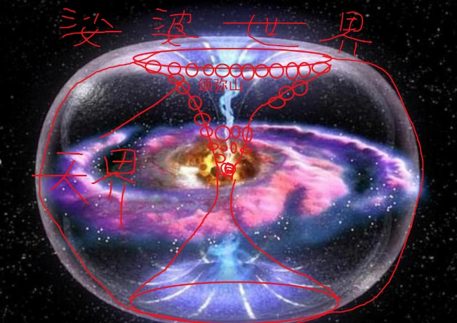
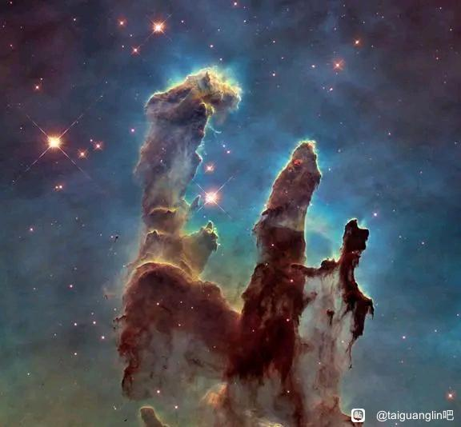

04世界起源與輪轉(1328)
起源(29)
三個初始設定(5)
無名皈依
2024-02-18 10:47
極樂世界是阿彌陀佛創造出來的。這一點我確信。
我聽音頻的三個設定，太師父說的三個設定我認為不是設定，這是佛陀親身證得到的！如果只是一種哲學假設，我相信不會有那麼多人那麼投入佛經中。
Taiguanglin
你把佛法當故事來聽，那就是設定，就是這麼比喻而已，這在佛經裡叫第一義諦，是最底層的真相，也可以說是宇宙的終極真相，它本來就那樣，也不是哪個佛悟出來的，悟不悟沒關係，真相就在那裡。佛沒有悟，真相也不會變。
鏈接愛
2024-02-21 18:57
頂禮師父！有幾個問題：
1、三個初始設定適用於所有的世界時空嗎？是否可以理解為，不同世界就是三個初始設定在不同時空的各種展現，每個世界有屬於自己的其餘的設定，比如由這個世界創造者的個人喜好加上的設定，但是底層的東西是一樣的？
Taiguanglin
鏈接愛，三個初始設定是這個宇宙的基本真相，最底層的真相，所有世界都一樣，所有世界都是長在三個設定之上的小世界，可以這麼理解。世界設定有沒有一樣？這得看裡邊，這三個設定是不變的。基本設定之外，有些世界收新人，有些世界不收新人，他們世界的佛管理的時候，每一個世界都有他們的規矩。
如
2024-11-15
佛墮落成凡夫，凡夫修上去，這一切一切的大框架，一切的規則，是誰創造的呢？為什麼創造呢？目的是什麼？佛和菩薩是不是也是這個規則之下的角色呢？
Taiguanglin
這個規則，不就是三個基本設定嗎，這個宇宙的基本設定。為什麼叫基本設定？它本來就這樣，不是誰創造的，它本來就是這個樣子的。宇宙本來就是有自性，很多無數個自性存在，其他啥都沒有，只有自性，這不是誰創造不創造的問題，他就本來就這樣，本來這樣的情況下，只能是本來這樣的運轉而已。
所以在這原有的規則裡，大家在想辦法，不能說是原有的規則，規則是人定的。在原有的環境裡，基本的條件下，基本的三大設定基礎框架內，佛也好，人也好，神也好，是在這個框架內想辦法有所作為，然後度人的這個事，做著做著逐漸摸索出了現在這樣的規矩，是這樣的。
這個規矩本身，三大設定本身不是被誰創造的，他本來就這樣，至少我們佛法一向都是這麼認為的。我們不認為自性是被誰創造出來的，要是這樣的話又變成了神創論了，所以我們就相信自性是永恆存在的，永遠不變，不生不滅的東西。
所以你問的這些是誰創造的，為什麼創造，目的什麼？這些問題都不成立，在真實的佛法裡是不成立的。
佛和菩薩是不是也是這個規則之下的角色？這個問題也就不成立了，我們不認為這個是被創造出來的。
貼吧用戶_QUDy8Na
2025-02-11 14:47
2、若我們從前都是佛，一念無明起開始墮落，那麼再往前推，這個宇宙大空間最最最開始是怎麼來的呢?為何一開始就有這麼多"佛”的存在，一切是怎回事？
Taiguanglin
第二個問題，若我們從前都是佛，一念無明起開始墜落，那麼再往前推，宇宙大空間最開始怎麼來的？一切就是本來就那樣。這就是初始設定，你不知道初始設定的意思嗎？這個世界本來就這樣，沒有什麼原因。
就像小時候，數學老師說三角定理怎麼怎麼樣，然後說它為什麼是這個定理，為什麼叫這個名字而不叫那個名字？為什麼三角形是三個角，而不是四個角？也有孩子問這樣的問題。你感覺就像這樣的小孩子一樣，世界本來就是這樣的。沒有“為什麼會這樣的”問題，這個世界又不是別人創造出來。哪怕你得有個創造者，或者前面的什麼原因，這樣才能說上原因，它沒有什麼原因。
從我們認知裡看，這個世界本來就這樣。佛也說了，最初的這個妄想是沒有原因的。
好春宵&
2025-5-12
師父好，聽到師父講解《楞伽經》二十六期說過，世界的真相是不變的，不會因為誰的出世而改變。但又聽說萬法唯心造，世界是由心創造的？這好像有點兒矛盾，不太理解。師父也講過娑婆世界是釋迦牟尼佛創造的，用來度化五濁惡世的眾生。那麼娑婆世界是什麼樣的世界，它不是真相世界嗎？因為真相世界是客觀存在的，不會因哪個佛出世而改變（出自《楞伽經》）。請師父解惑。
Taiguanglin
好春宵&，世界的真相是不變的，在這裡真相指的是三個初始設定，就是初妄無因、自性恆常、還有諸佛同體。這是世界的最底層真相，不管誰出不出世，這個世界本來就這樣，最基本的三個初始設定不因其他任何人的想法而改變。而你說的外邊的改變——萬法唯心造，這就是真相當中的一個現象而已。
初妄無因延伸出來的，就是妄想分別執著，萬法都是妄想分別執著和合而成的。所以先有了初妄之後，有了妄想，然後分別，然後執著，然後這些合成新的世界，或者我們看到的一切世界，這都從最底層真相延伸出來的。
所以你把最底層真相看作是我們看到的世界的真相，這不是的，我講的真相是世界最底層的真相，不根據任何人的意念來改變的。
娑婆世界是釋迦牟尼佛創造出來的世界，也是他用妄想創造出來的，但是它不影響世界的真相，底層真相還是那三條。
就好比一個電影一樣，電影的底層真相是大銀幕，大銀幕一直存在，上面的影像一直在變化，但是底層的真相它一直不變，你這麼看就可以了。
你現在把外面看起來不斷變化的五濁惡世，或者我們看得到的娑婆世界當作真相來看，混淆了這兩者，所以才有這樣的問題。
初佛的跌落(14)
慧覺觀自在
2024-02-20 18:35
學術界一直爭論不休的問題之一，就是“是否眾生都能成佛”。想聽聽太師父的看法。
1、從真如世界來看，時間是虛妄的，眾生已然是佛。但唯識宗認為無種姓補特伽羅不能成佛。
Taiguanglin
慧覺觀自在，“是否眾生都能成佛”？成佛的才可以叫眾生，我認為是這樣的。“那眾生已然成佛”，這就是典型的文字遊戲吧？你有痛苦，就是眾生、凡夫。怎麼能說是已經成佛了呢？
如一2
2024-04-23 20:04
按最初的故事推測的話，我們這些人，是不是百千萬億劫前就已成佛，後來打了妄想一層層墮落下來，迷失在輪迴中，一直沒被度上去？
Taiguanglin
如一2，“按最初的故事推測的話，我們這些人是不是百千萬億劫前就已成佛”，不是“就已成佛”，所有眾生本來就是佛！沒有成佛一說，墮落之後才有了成佛這一說。後面說的對，打了妄想之後一層一層墮落下來，迷失在輪迴中。
“一直沒被度上去”，不是沒被度上去，成佛是需要兩邊同時（有意願）的。首先是你自己要有解脫輪迴的意願，人家才可能度你。不是我們再來人或者菩薩、羅漢們不願度人，而是凡夫首先得有想了解這個世界真相和解脫的意願才行。
不忘初心
15-07-2024
感恩Tai師父的每日法語，弟子有點疑問，娑婆世界的眾生都是從佛墮落而來的嗎？
Taiguanglin
不忘初心，娑婆世界的眾生都是從佛墮落而來的嗎？都是啊，不是從佛墮落那從哪裡墮落而來的呢，肯定都是。所有眾生都是從佛墮落而來，所以才有可能成佛。如果眾生本來是眾生，本來是凡夫，那誰也沒有辦法保證凡夫能成為佛的。但是因為所有凡夫都是從佛墮落而來的，所以肯定能回去的。
麥子
18-02-2024
所以我更感恩遇到師父了，地獄太苦了，早點出離娑婆為好。
Taiguanglin
最初的故事以後再說吧，這不是一句兩句的事，是四聖佛研究出了（把）墮落的佛度成佛的方法。
呵難
2024-02-19 14:47
有個問題一直很疑惑，就是世界或是宇宙（暫且這麼稱呼吧）的起源問題，整個法界、娑婆世界的輪迴，是誰設計的？為什麼要這麼設計？目地是什麼？
Taiguanglin
娑婆世界的輪迴是誰設計的？不是誰先設計的，是佛已經墮落成了凡夫，佛已經在自己創造的一個世界裡開始自己承受痛苦玩兒。有很多佛墮落成凡夫在一個世界裡開始互相殺來殺去，在這個時候，沒有人控制的世界，稱之為無限地獄世界。
很多佛墮落之後，他們因為有思情，相互之間吸引，就生到一個世界。然後他們相互殺來殺去，最後都會墮落到地獄，而且他們都走不出來那個地獄。這個時候呢，有另一個佛創造一個世界，把這個小無限地獄世界給罩住，然後往裡投放他的弟子們開始傳法，把他們一個一個往上提，就是這麼設計的。
地藏菩薩發願，就是對所有有地獄的世界進行普法，他就到所有地獄裡去進行傳法，所有整個法界當中所有世界，只要有地獄的世界，地藏菩薩都分出一個分身去做。
前面講過了，地藏菩薩是怎麼做的：他每隔一段時間去下法雨，沾到雨的眾生暫時就沒有痛苦，他們只要往上抬頭一看，上面有一個神站在那裡，他只要升起那麼一點點歡喜心和戀慕之情。他就算結了第一個佛緣，以這個方式慢慢往上提，這個意思。設計世界是一個很龐大的事情，不是一句兩句能說的，目的就是把所有這些墮入地獄的佛都給重新拉出來，就是這麼一個目的。
慧覺觀自在
2024-02-20 19:03
作為第八代根器的差班生，我自己肯定完全謙卑地感恩並依止佛菩薩加持的，相信他們的加持力量不可思議，凡夫目前的力量很渺小，就是好奇：
“真正的修行都是在佛菩薩加持下進行的”，那無始以來第一個成佛的凡夫是靠誰加持的呢？要那種極其利根的麼？
Taiguanglin
慧覺觀自在，沒有什麼第一個成佛的凡夫，而是本來都是佛。是有人墮落成了凡夫，然後，那些沒有墮落的佛去度了這些凡夫再成為佛，是這麼個邏輯。不是所有人都是凡夫的情況下，有人先成佛，沒有這樣的。
慧覺觀自在
2024-2-23 15:45
您好Tai師父，我沒想到您會真的跟我道歉了，您的言行是一致的，說明我們的緣分還有很長。即使您沒有道歉，我也不會起嗔恨心，我一直是很感恩您的，您法佈施給我另外一種看待世界的角度。但是就是我得把我自己的感受表達出來，過了就過了，否則心裡一直有這麼一個事，可能也有那個問題的原因吧。
您這麼說只是讓我比較失望，可能我本來因為佩服您本來很想供養您跟您親近互動，但是您這麼一說，搞得好像我的發心被誤解了，心裡比較難受，那倒不如離您遠點。只能靠理性告訴自己，這種情緒不能影響到自己對正法的信願行，您說的是正法就行了，人無完人。
我自己也有缺點，比如凡事喜歡較真那個邏輯，邏輯不過關我就沒法很好的執行。層次低的人我不會與他較真，正因為我內心是尊重您跟隨您佩服您實修水平的，我才較真。
嗯我知道您好像之前說真正的大菩提心是要到了菩薩層級才能真正發起來，所以不要著急，順其自然。
那個我追問的問題，我也和現實中的朋友討論過了，朋友完全理解啊。昨天師太一會說我沒理解，一會又說我看漏了，一會又說以後講。還有一個師兄，後來看了他的問題問玩具就知道肯定不理解了。我的名字以慧開頭，說明我是以慧入道，真理是可以經得住追問的，君子以言有物，說不答就直接說不答好了，不要答非所問，一直重複初妄無因，說別人不理解，感覺好像智商被侮辱了。
也非常感謝您今天的開示，但是您還是沒有直接回答我的問題，我不是問第一個佛是怎麼來的。我重述如下：
【命題1】所有凡夫都是在佛加持下成佛的，靠自力不可能成佛。（師父說）
【命題2】佛墮落過迴歸佛境就永遠不會在退轉了。（師父說）
【命題3】所有佛都墮落過。且由於無時間性，都在同一時間墮落。
【命題4】第一個凡夫是靠自力成佛的，沒有佛加持。
根據命題2，可推出命題3。根據命題3，可推出命題4。
命題1和命題4矛盾！
要想證明不存在矛盾，必須證明命題2不能推出命題3。
一種答案是就是初始設定，不予解釋。
一種答案是我昨天帖子裡說的那個猜想。
我也跟您道個歉，我還是較真這個問題，不知道您會不會看著煩。沒事，這個問題就先擱置吧。
Taiguanglin
2024-02-23 18:25
沒有漏洞，有漏洞的是你的智慧。
【命題1】所有凡夫都是在佛加持下成佛的，靠自力不可能成佛。（師父說）
【命題2】佛墮落過迴歸佛境就永遠不會再退轉了。（師父說）
【命題3】所有佛都墮落過。且由於無時間性，都在同一時間墮落。
【命題4】第一個凡夫是靠自力成佛的，沒有佛加持。
根據命題2，可推出命題3。根據命題3，可推出命題4。
命題1和命題4矛盾！
要想證明不存在矛盾，必須證明命題2不能推出命題3。
一種答案是就是初始設定，不予解釋。
命題三和四是你想出來的吧？
命題三，你自己都說沒有時間性，那同一時間這個說法就不成立，有了時間才有同一時間，沒有時間哪來的同一時間，不要用凡夫的短淺智慧去想象佛的世界，你的意思是佛的妄想是聯動的？一佛起妄想，所有佛都起妄想？我多次強調，每一個自性都是獨立的個體，只是以重疊的方式存在，起不起妄想，起什麼內容的妄想，都是自己做主，互不干擾，這叫大自在。但是因為重疊，知道其他自性起的妄想，這叫本知。
命題四，昨日，最初的故事已經講的很清楚，第一個佛是靠第三佛與第四佛的合作下，從第二佛創造的無限地獄世界解救出來的。凡夫靠自己99.99999%的概率成不了佛，這也是為了嚴謹這麼說的，實際上根本沒有可能成佛，你已經看了上面講的業的本質，你還覺得靠你自己就能消所有的業嗎？
這也是凡夫的傲慢和愚蠢，你連自己前世的業都看不到，更別說無始以來所有的業。就算看到了，你也沒有智慧把每個業都完美的解開，還要把有緣人度到阿羅漢。
佛為什麼不講業？因為知道業的真相，人們就會陷入無限的恐懼和絕望。佛法之所以注重傳承，不僅僅是修心方法的傳授，更重要的是要有菩薩以上級別的人，要用無限的宿命通，看凡夫無始以來所有的業，再對每一個業給出針對性的化解方法。阿羅漢只能看前後五百世，也沒辦法告訴你，一段段業你到底應該是忍還是進取。
初妄無因，自性當中忽然產生第一個妄想，誰告訴我為什麼自性當中會產生第一個妄想，自性和妄想這個名字都是為了交流起的名字而已。任何問題追問到最後都沒有答案，什麼叫第一義諦，初始設定，這就是最底層的真相，世界本來就這樣，你奈之如何？
壹尋
2024-3-16
2.佛跌落到三禪產生思情，思情牽引下，各佛生到一個世界，互相造業。那歡喜地菩薩那個境界，應該還沒有與其他佛一個世界，為什麼還會產生人我分別？
Taiguanglin
壹尋，無我相與人相的分別？菩薩是沒有分別心的，所以也沒有我相人相。
然後歡喜地菩薩是怎麼產生分別心的？怎麼說呢，他就那麼有了自己的妄想之後，到了歡喜地這個程度已經11個妄想全部聚全之後呢，再出現的時候就會認知到其他的妄想。還知道了其實這個世界除了自己的妄想之外，還有其他的妄想，其他人的妄想，這就產生了分別心。
這個怎麼說呢？往回修的時候呢，也是由那個菩薩來加持下，讓你體驗一下上邊的境界。下邊的有分別心的境界和沒有分別心的歡喜地菩薩這個境界，這個穿過去的過程也是有變化的，但是我這個是真的沒有辦法跟你解釋。這個變化呢，反過來就是說從這個歡喜地墮落到有分別心的狀態。
那它是怎麼產生的？理論上只能說就是這個菩薩啊突然間認知到，這個世界除了我的妄想之外，還有別人的妄想。他這麼一認知到了，然後就變成阿羅漢。那這個我只能這麼解釋吧，理論上是這樣的，但是以後修行的話你得靠菩薩來帶。
小Tai粉
22-05-2024
3、佛墮落的過程是不是有點像熵增，我們修行像逆熵增，熵減一樣？
Taiguanglin
熵增、熵減的問題，你這麼認為也可以，你怎麼理解佛法都行，不要理解反了就行。
無無
21-06-2024
1、頂禮師父！每一個妄想都代表著業，那最初沒墮落過的佛產生了的初妄，這個初妄的業哪來的呢？
Taiguanglin
無無，“每一個妄想都代表著…”，這誰說的，我好像沒有這麼說吧？我們往回修的時候，在菩薩那裡，妄想和業是關聯的；往下墮落的時候，菩薩的十一個妄想都沒有業，就是一個一個妄想升起來，所以第一個妄想沒有原因就能生起來。
菩薩不自知——沒有自覺的話，妄想會不斷增加。所以往下跌落的時間段，妄想和業是無關的。到後面修行開始往回走的時候，這些妄想是為了對抗其他眾生對我的執著、不好的業才產生的，所以才有對應的關係。
Tai師父的小粉絲
2024-11-16 14:05
感恩Tai師父昨天的解答！
我以為地球“揚升”指的是有很多靈魂逃離地球去更高級的維度的意思，原來是這個意思呀！
拜讀了您的新書，真是費了一番心血，您對科幻、歷史都能夠總結得如此精闢，知識面太廣博啦，膜拜中！！！
請問：
1、現在還有沒有尚未跌落的佛呢？
Taiguanglin
Tai師父的小粉絲，現在還有沒有尚未跌落的佛呢？應該有吧，應該存在，具體自性總共有多少個，誰都不知道。應該是這樣的，它不生不滅的話，它肯定有一個總數的，是吧，理論邏輯上應該這樣的，但是不知道。因為還有一些未跌落的佛，在跌落的過程當中，或者說要跌落，所以目前還有沒跌落的佛，這是肯定的。
掌南飛
2024-12-14 14:45
Tai師父好！
1、對於四聖佛的故事我有幾點疑問，沒有墮落的佛是不是只要發願度人是不是可以永遠保持禪那狀態不墮落？是不是沒墮落過的佛有的願意發願有的不願意發願？還是說自從四聖佛後所有沒墮落的佛都發願了？已經成佛的佛會給沒成佛的佛劃分世界管理他們嗎？沒墮落過的佛發願要度的人如果後來被別人度出去了，那沒墮落過的佛是不是可以永不墮落了？
Taiguanglin
掌南飛，沒有墮落的佛是不是只要發願度人是不是可以永遠保持禪那的狀態不墮落？如果你發願度人了，但是沒有任何行為，沒有任何度人的行為的話，算不算你發願了？是不是這個邏輯？你好好想想。你嘴上說你發願度人了，但是你卻沒有任何行為，你只是心裡那麼想法而已，這算不算你發願了。只有行為了才算真的發願。
所以當佛發願要度人的時候，他這個願也會出現妄想，有願就會出現妄想，他並不是完全停留在願當中。在最初的佛的狀態是這樣的，你有願的時候就開始出現妄想，然後去度人。
然後等你有過妄想之後，在輪迴世界裡進來之後，再回去的時候就知道把握這個度了，把握這個願和真正的妄想之間的差距，中間細微的差別，從而能停留在有願的狀態。
而且度人不再是一個人了，是兩個人一起的，所以你在保持願的狀態，你向另一個人提供幫助讓他下去度人，這個時候你再用願來提供幫助，這也算在度人，兩個人在一起的，所以輪著來。
是不是沒墮落過的佛，有的願意發願，有的不願意發願，沒墮落過的佛，現在算是全部發願了，因為都知道沒有發願的更危險。
還是說自從四聖佛後所有沒墮落的佛都發願了？已經成佛會給沒成佛的佛劃分世界管理他們嗎？不會。佛不需要什麼劃分世界，佛是沒有世界這一說的，佛教同體……，法界體性智，整個意識覆蓋全部法界，意識覆蓋整個虛空，連虛空這個詞也不能說的，自性覆蓋一切，只能這麼說了。在這裡沒有什麼劃分世界這一說的。
沒墮落的佛發願要度的人，如果後來被別人度出去了，沒墮落過的佛是不是可以永不墮落了？在這裡發願並不是只針對某一個眾生，我要度“他”，這麼一想，因為你在這個想法裡已經有了人我分別了，佛是沒有人我分別的，他只是一個想度眾生的願望而已，在這裡這麼說的時候還是有眾生這個詞。
準確的說是在佛的狀態裡是希望一切都好，希望所有一切都好，大概就只能這麼描述，佛的狀態就是希望一切都好，有美好的願望，只有這個願望，這樣就算發願了。不是非要度某個人怎麼怎麼樣，這個時候已經有了人相了，這個詞、這樣的說法已經有了人相，而是希望一切都好，這樣的願望當中就算是開始影響所有和他有緣的眾生。
清淨2024
2025-01-14 16:36
師父晚上好~
1、弟子愚味，請問師父
現在是分為：
一是沒有起過妄想的佛（因為沒起過妄想所以不知數量）
二是起了妄想但沒有墮落的佛（就像四聖佛）
三是墮落又修回去的佛（起過妄想所以能得知數量）
一共是有這三種狀態的佛對嗎？
您說過如果一直墮落下去，所有佛都會墮落。也說墮落過再回去的佛不會再墮落了。現在經過極樂世界佛菩薩的努力，佛墮落的數量和被度的數量是持平的。可以請師父再詳細說說這些嗎？有點懵
Taiguanglin
清淨2024，三種狀態你都已經說了，都說得很好，總結得很好。完全沒有起妄想的佛是感知不到的。起了妄想呢，是可以被感知到的。還有起了妄想之後一直墮落下去，在輪迴內受了苦之後再回來的，然後把妄想徹底滅掉了，他成佛了，他也是感知不到的。
但是他有記憶，和其他眾生有過記憶的話，其他的佛和這個佛在前面互動過，有過記憶，他就知道曾經有這麼一個人。他自性一直不滅，所以那個人雖然當下沒有妄想，感知不到。但是他曾經有過，所以還是能知道的。所以有妄想才能感知到，沒有妄想就感知不到。
你說一直墮落下去，我說的一直墮落下去的意思是，因為這個妄想是沒有原因，它忽然會起的，雖然當下沒有，未來什麼時候會出現自己都不知道。有些事情，只要有可能發生的話，在漫長的時間上說，雖然佛的境界是沒有時間的，但是用我們的理解來說，就是足夠長的時間和空間範圍內，某些事情只要可以發生的話，終究會發生的。
所以佛的狀態裡他不起妄想的狀態下，他無緣無故會起妄想，那麼他未來在某個時間，說不定還是會起妄想。所以最終有可能所有的佛都會墮落，如果全墮落了，那就沒有人救了，那就沒有辦法了。
所以有一些佛，在自己沒有起妄想的情況下，主動發願去度其他的佛，以這種方式來解決這個問題，所以就有了四聖佛的故事。
也說墮落過再回去的佛不會再墮落了，的確是。因為墮落過了，就有了記憶。有了記憶呢，成佛之後再起妄想的話，馬上自己就能感知到。妄想多了會變成什麼樣，他是知道的，所以自己就可以控制。
還有佛墮落的數量和被度的數量是持平的，這個是一種動態平衡。不是墮落的數量和被度的數量，而是往下跌落的——這些處在跌落過程的眾生，和在往上走的——往佛的方向走的這些眾生，基本上是持平的狀態。跌落的眾生數量呢，並沒有那種很誇張的不斷增加，大概也只能這麼說了。
水天一色
2025-1-17
頂禮師父，我們現在的凡夫都是曾經的佛墮落下來的嗎？請師父開示。
Taiguanglin
水天一色，我們現在凡夫都是曾經的佛墮落下來嗎？是啊，就因為我們本來是佛，所以靠修行可以回到佛的狀態，如果本來就不是佛，那怎麼可能還能成佛呢。
跌落的原因(6)
我在樹下
2024-02-23 10:08
師父，眾生既然是從佛而來，眾生還是佛的時候，應該是全知的，那麼當時應該能推演到今日的各種痛苦和無奈，為何還選擇墮落成眾生？
Taiguanglin
我在樹下，眾生還是佛的時候應該是全知的，那麼當時應該能推演到今日的各種痛苦無奈。什麼叫推演？推演的前提是什麼？就是記憶，沒有記憶，你根本推演不了，你拿什麼推演，你想想看是不是這樣？例如小孩怎麼可能知道1+1=2是吧。你得先知道12345678910，你有了這個基礎的數理知識之後，你才知道1+1=2是吧。
推演就是這樣，你得先有自己的記憶，再加上其他人的綜合分析，在這種情況下，可以讀取其他人記憶的時候，你才可能產生推演的能力。
其中最重要的還是自己的記憶，別人記憶在推演過程中起不到太多的幫助。為什麼？這個推演怎麼說？如果是把自己放進去推演的話，自己的記憶必然是非常重要的，自己的脾性、性情他都起到重要的作用。你要是放到別人身上，把別人記憶拿過來進行推演的話，它就不是一回事了，你能理解這個意思吧。
所以說你要消業，佛要幫助一個人消業，他是要親自下去渡人的，這個時候肯定是以自己為中心進行推演的，不是拿別人的記憶過來進行推演，這就不一樣了。所以說單純的、在自己不干預的情況下繼續推演，這個又是另一回事。可以同時有好幾個人一起推演，看結果怎麼樣，有這樣的算法。
三日空
2024-02-26 15:39
1、諸佛同體的話，最開始有些佛墮落成凡夫了，其他佛肯定知道後果了，那為啥還會有佛繼續墮落呢？還有佛墮落的話，還沒墮落到凡夫，其他的佛不能趕緊把他救起來嗎，為什麼要等到進輪迴了再救呢？
Taiguanglin
三日空，佛最初起妄想的時候他是不能自知的，你要明白這一點。他不知道妄想這個東西是什麼，它會帶來什麼樣的後果？他自己是不知道的，所以妄想會一直往前滾，往前滾，直到下到地獄為止。他沒有辦法停止，為什麼？中間有沒有人直接進來干預一下，帶他出來？為什麼叫無緣不可度？
緣是怎麼來的？緣就是兩個人有了情緒之後，相互干預之後，在情緒上干預之後，有了業才開始叫緣。你在沒有緣的情況下，根本沒有辦法跟人家交流，你能明白這個意思吧？比如說四禪天的眾生沒有情緒，兩個四禪天的眾生重疊在一起，他倆都沒有情緒，你覺得他倆應該怎麼交流？你怎麼告訴他，你不能再打妄想了，你趕緊出來，這個信息你怎麼傳遞給他？你得到了下邊才有可能正經的交流，然後正經的把人給帶出來。
這個玩意就神奇在這個地方。在天人的階段重疊在一起，相互之間什麼想法都知道。那個人想離開的想法也有，這個人想留在這個世界的想法也有，但是僅此而已。你沒有什麼說服、不說服這樣的，兩個人重疊在一起，互相都瞭解對方想法，我想離開，你想留下，就這樣。然後，我不能說你一定要跟我離開，這種邏輯是沒有辦法直接傳遞給他的。
（微信群內代問）
彼岸
2024-3-6
1、有輪迴記憶的佛不會再次墮落，諸佛同體，未起妄想的佛除了做拯救工作，看到這個記憶會不會不再起妄想從而避免墮落。
Taiguanglin
彼岸，這個沒有起妄想的佛去度人，本身也是一種妄想，同時也是一種墮落。你要度人就得進入他的輪迴當中，和人結緣，然後度，這個過程對佛來說算是墮落吧，雖然是自願地要救人，以救人為目的進去的，但是客觀上他也算是墮落了，但是起碼他也和其他佛結成搭檔之後，給了自己一個保障，所以說基本上大部分都進入過輪迴的。
呆瓜
2024-9-9
所有眾生都是佛，佛是全知全善的，那麼墮落之前的佛出現第一妄想佛為什麼不知道呢？那麼墮落之前的佛不是全知的嗎？
Taiguanglin
還有這位呆瓜，眾生都是佛，佛是全知全善的，那麼墮落之前的佛出現第一個妄想為什麼佛為什麼不知道呢，那麼墮落之前的佛不是全知的嗎？
墮落之前的佛在起妄想之前是知道所有眾生的妄想，但是他自己起第一個妄想的時候是墮落之前的佛，這個是特定的，墮落之前的佛，他是感知不到自己起第一個妄想的，因為這個最初的妄想非常細微的。
還有這個全知指的是當下的全知，而不是指推演能力的，就是未來，這個妄想未來會變成什麼樣，這個是靠推演來知道的，並不是直接知道，因為這個妄想會隨時在變化嘛。每個人變的過程都不一樣，變的方向也不一樣，這個時候只能靠推演來預測，這是一種預測，並不是直接知道的。
所以如果你面前有好幾種食物，你到底要吃哪一個，佛也不知道的。你可能吃這個也可能吃那個，這是你隨機選的，佛是不一定知道的，不可能拿這個來推演，這種細微的妄想的變化，佛是推不出來的。
所以你說墮落之後他就不能全知了嗎？那麼墮落之前的佛不是全知的嗎這個？就因為這個推演力是他靠經驗來推的，所以他有了這個妄想之後，最後墮落到人間，然後吃了很多的苦，然後修回去的話，他有了這個經驗，當起第一個妄想的時候，他就可能開始可以感覺到，並且知道這個妄想如果放任不管一直下去的話，自己又會墮入到輪迴，他就知道了，他有過這個經驗的話，就有了推演的依據了，他以後就不會再墮落了，是這個邏輯的。
並不是說佛菩薩，就可以馬上什麼事都知道，未來會怎麼怎麼樣。大的劇本倒是我們都寫好的。這個大的方向是寫好之後還得靠人來推動，不讓它跑偏了，還得有人做這個事兒。
所以推演這個事兒全靠經驗，所以推演的準確度也有出入，境界越高的人推演的結果越接近。境界越低，推演錯的可能性越多，所以他不是全知的，在這個問題上就不是全知的。像佛不知道，佛根本沒有預測到，講法的時候，阿難會突然在大庭廣眾之下，請求佛讓女性出家，這個佛自己都沒有預測到的。
因為這種事情是不能算是全知吧，但是他當下的妄想是全知道了，只不過未來會怎麼變，他只能靠推演，而推演的能力，他並不是完美的，我們只能這樣解釋了。而且就因為是這樣，所以每個人都是活著的，每個人都是自由意志，我們認為每個人都有自由意志。
現在科學有一種說法，這個物質變化的時候，一開始就前面的因已經定了，那後面的果是必然的，那最後產生生命也是必然的，產生意識也是必然的，然後意識怎麼變都是必然的。這樣推演出來的結果就是人沒有自由意志，整個宇宙從誕生開始，就都已經一連串的因果，結果都已經出現在未來了，或者說必然會造成什麼樣的結果。
所以我們當下，哪怕是在飯桌上吃菜吃飯，具體吃哪一個，它都有一個定數，但是在佛法上並不是這麼看待的。
嚴晨晨
2024-9-14
2、請教師父：諸佛同體，佛菩薩之間都能讀取記憶，所以未跌落的佛和剛跌落的菩薩也可以讀取已跌落又修回來的佛菩薩的記憶，從中吸取教訓，這樣是否就可以防止跌落了？
Taiguanglin
佛菩薩能夠讀取記憶，那麼沒有跌落的佛和剛跌落的菩薩也可以讀取跌落又修回來的佛菩薩的記憶，從中吸取教訓，這樣是否就可以防止跌落?
第一個妄想產生的時候是佛菩薩自己都無法感知的，只有跌落到下邊兒再重新上來的人，才可以感知到這個妄想起來，未來可能變成什麼樣。這個推演能力，最大的依據是自己的經驗，而不是別人的經驗。你看別人的經驗，雖然也可以有一定的推演性，可以拿來推演，但是問題是你看的時候，拿過來放到你身上，它就不一樣了。
這個很難解釋，你看武打片，男孩子都喜歡看武打片，你看打架的時候他們怎麼打的，然後你看一遍，你能照著去做嗎？你看一遍，你看成龍的打戲，你看完一遍之後，你覺得可以照著做，你上去試試看看，現實就是這個樣子的。
你看完別人的，理論上你完全可以把它拆解怎麼解釋，但是真正放你身上就不一樣了。所以說度人也是需要有經驗的，菩薩度人都是需要有經驗的，你看別人的度人，同樣都可以看到他們度人的過程，然後放你這裡就完全不一樣了。
你可以從他們那裡吸取教訓什麼的，然後從中找到一個對應的、差不多的方法拿來度人的時候用，這個可以，但是效果怎麼樣？完全就另一回事了，所以才有度人的經驗，你說的問題同樣也是，有了自己跌落過的經驗，他才可以感知到自己在起妄想。
你看別人的妄想是沒有辦法從別人跌落的過程當中吸取教訓，然後自己不跌落，自己為了不跌落的最好的方法是發願，菩薩、佛以普度眾生的大願，只有保持在有大願的狀態下，他只要起了妄想，那也是度人的妄想，這樣就可以防止跌落。
目前只有這個辦法，佛是為了讓自己不跌落，反而故意下去跟人結緣，然後度人，再回來。確保自己有過一次進入輪迴的記憶，這樣讓自己不再跌落，不得不這樣做，要不然初妄產生的時候自己感覺不到就會很難搞了，後面就很難控制了。
Jhone
2025-1-14
頂禮Tai師父，我想問：初妄無因，意識可以共享，那些還沒產生第一念的佛有了掉落佛的輪迴記憶，是不是自己就不會掉落了？即便哪天產生第一念也很快能回去？
Taiguanglin
Jhone，首先，記憶是有自己參與的才稱之為記憶，你看到別人的，可以讀取別人的記憶，這個不能算是自己的記憶，所以在這過程中不能做到感同身受，還是不一樣的。
拿別人的記憶，因此而不產生妄想，這是不可能的。因為在佛的境界裡，最初產生妄想的時候，他自己是不覺知的。“一念不覺生三細”，有這樣的說法。就是你一念不覺，所謂的不覺，就是開始生起妄想了，而生起妄想的時候，他是感知不到的，最初都是這樣的。所以才會跌落，一個佛他一開始生起妄想，他馬上能感知到這個是妄想，這樣的話他有可能就不跌落了。
但實際上偏偏就不是這樣，因為他生起妄想的時候他就感知不到，只有有了在輪迴內痛苦的記憶之後，他才能根據這個來判斷，生起妄想，最後會導致什麼樣的結果，因此會停止。所以靠別人的記憶是不可能讓自己完全不墮落的。
無限地獄世界(4)
青鸞鯤
2024-02-20 19:59
4、還有什麼是無限地獄世界呢？
我十分渴求想知道師父要講的是什麼了，可不可以請師父再解釋一下您的原話是什麼意思呢？
Taiguanglin
“無限地獄世界”，這是佛沒有接手管理的世界。一些佛起了妄想之後，開始和其他佛出現一起爭鬥的世界，開始互相殺來殺去，最後一起都墮入地獄。只要沒有其他佛去接手管理這個世界的話，他們根本就出不來，這就是無限地獄世界。
血蒼穹87
2024-03-08 13:02
頂禮師父，問題一：地獄眾生不是只受報嗎？不是惡業受完就可以出來了？怎麼說在地獄中還能再造惡業，互相殺害？
Taiguanglin
血蒼穹，我說的無限地獄世界，就是那個世界是沒有佛管理的世界，所以地獄也沒有管理員，地獄就是他們自己創造出來互相殺來殺去的，就是遊戲場。而且地獄本身也不穩定，因為創造那個世界的人，他自己也在地獄當中，所以這個世界本身也在他的妄想當中，會頃刻間就變化。整個世界，地獄本身都不穩定，它就是不停地發生各種天災，然後人與人在天災當中有個空檔就會殺來殺去，這是無限地獄的世界。
極樂甘泉
2024-7-18
師父好！ 師父曾經提到過“無限地獄”這個名詞。 我們在這個曾經有佛陀的世界裡生存，至今還沒有解脫。那麼，那些在“無限地獄”裡的眾生豈不是更沒有希望麼？是什麼原因令他們無法脫離無限地獄呢？要怎樣才能把他們拉出來呢？ 雖然現在問這個問題尚且為時過早，希望也請師父簡單介紹一下。
Taiguanglin
極樂甘泉，無限地獄是沒有佛管的世界。就是全靠一些人，他們之間相互吸引之後聚到一起。然後陷入同樣的一個夢境裡，互相開始殺戮。沒有人傳法度人的情況下，會不斷的殺來殺去，沒有辦法停止，這樣的世界叫無限地獄。
外人是沒有辦法把他們拉出來的，所以首先第一步是，得有人至少得成個等覺菩薩，然後創造一個世界，把那個無限地獄世界給罩住，控制住，這是第一步。所以你現在要做的是，先修到等覺菩薩，然後再談度那些無限地獄的人。
貼吧用戶_JQAEGGy
2025-05-11 18:54
2、現在還有無限地獄的世界嗎？若還有這種世界，極樂世界的團隊有沒有長遠地逐步消除無限地獄世界的救助計劃(即逐步減少無限地獄直到清零)？
Taiguanglin
現在還有無限地獄世界嗎？有，的確也在做。不光是極樂世界的人在做，這個世界有很多佛世界，也有很多佛世界的人，也在做消滅無限地獄的工作。
創世(86)
佛創世(16)
Pu
2024-11-11
2、請問師父，等覺菩薩可以創造世界，那麼原來的世界應該佛更多，加持力更大，等覺菩薩為了成佛，把有緣眾生拉到新創造世界，眾生豈不是從好點的世界到了更差的世界？再說把有緣眾生拉到新世界不需要本人同意嗎？
Taiguanglin
下一個問題，等覺菩薩創造世界，再說把有緣眾生拉到新世界，不需要本人同意嗎？這個問題在第二本書裡都講的差不多了。
眾生豈不是從好點的世界到更差？為什麼要這樣做，第二本書你自己看一下就可以了，第二本書今天開始要發了，今天11月11號，今天應該開始發貨了，都是免費的，快遞費也不要，所以你只要申請了，然後給管理員報上你的地址，他就可以開始給你發了，你好好看一下就可以。
還有有緣眾生拉到新世界不需要本人同意嗎？不需要。因為輪迴內的凡夫是沒有自主權的，對命運劇本沒有自主的權利，全部都是由編劇菩薩他們安排的。所以我們還是儘快先修成阿羅漢，對自己的命運有自己決策權的時候再說其他，現在就是別人想怎麼弄就怎麼弄，沒有辦法。
慧覺觀自在
2024-02-21 11:46
3、但其實從幻覺的角度來說，我們這個世界也是佛變現出來的，我們和他感應一部分就是我們看到的部分，而不是說是我們變現出來的。而菩薩只是在大幻境裡自己把一點點部分編輯了一下，可以這麼理解不？
Taiguanglin
第三個問題，對不起，我腦子不好，理解不了你在問什麼。
空空無我
24-04-2024
師父說世界是佛創造的，為什麼佛創造世界的時候不把五辛和毒品去掉？
Taiguanglin
師父說世界是佛創造的，為什麼佛創造世界時不把五辛和毒品去掉？佛創造世界，在我們這個小世界放進很多眾生後，要根據眾生的習氣順著創造。可以完全憑空創造出一個沒有眾生的世界，但是憑空創造有眾生的世界，眾生的習氣會對世界的運作和物質的產生——器世界的產生有直接影響。
這個世界眾生喜歡五辛和毒品，所以才會有。如果沒有這個慾望，佛也不會創造進來。不是佛故意創造毒品來害眾生，是眾生先有這個慾望。
而且在佛菩薩管理員的管理下，五辛和毒品氾濫程度還降低了不少。比如，咱們中國是禁毒的，而且是禁毒最嚴厲的國家，那不是人王做的決策嗎？國家命運都在劇本當中，在這方面是不是管理員們也在努力？儘量讓中國人不接受、不接近、不接觸毒品。
澤
25-04-2024
這個世界怎麼是佛創造的呢？不是緣起的嗎？
Taiguanglin
澤，這個世界是佛創造的呢？這個世界就是佛創造的，根據眾生的業、習氣來創造，不能隨便憑空全部創造出來。一旦把眾生放進去之後，根據眾生的業和習氣，這個世界會稍微發生變化。
不是緣起的嗎？緣起性空是一種方便法。在那個時代佛沒有辦法告訴大家這個世界是佛創造的，所以就說緣起性空。
醒
21-05-2024
1、Tai師父好，佛法說一切唯心造，娑婆世界是由我們的心變現出來的。可您又說娑婆世界是釋迦牟尼佛創造出來的，我感覺前後有點矛盾了。
Taiguanglin
佛法說一切唯心造，這個對。然後娑婆世界是釋迦牟尼創造出來，這個也對。
佛只能創造物質世界，但是創造不了自性！我們每個人都有的自性本來就有，是創造不出來的。
那物質世界呢？你肯定是做過夢吧，夢裡有你也有別人，也有動物、樹木、環境，夢裡的東西都是你創造出來的，對吧？在你做夢的時候，你感受不到你在做夢，你認為那些東西都是真實的，這樣真實的東西都是你在意識裡創造出來的，對吧？
佛也一樣，同樣的原理，佛就可以創造這個世界，但是和我們不同的地方在於，佛知道他在做夢！他知道這一切都是在他意識裡幻化出來的東西，而我們不知道，我們認為夢境裡是真實的，這是眾生的顛倒妄想。佛只要知道了，他就有辦法控制，也可以改變，所以叫八識轉六識。
就像我們做夢一樣，佛創造出這個世界，有控制權，他再把眾生放進來。那些眾生本來在自己創造的幻境中一直苦苦掙扎，承受痛苦。佛把這些人放進來，等於是創造了一個更大的夢境，罩住了這些眾生的小夢境，然後把這個夢境控制住，讓它變得穩定，再派自己的弟子，包括自己下去度人，就是這麼個過程。
釋慈偉
2024-09-12 18:02
頂禮師父。
昨天看了一個視頻，是清華教授蔡崢的採訪，他用科學的角度說明了累生累世的存在，而且他講了一個理論幾百億年前，我們這個宇宙是從一個原子由十的負三十次方秒的速度暴漲開始的，而且同時有很多宇宙以同樣的方式產生，但是不同宇宙中的光速和晶體結構可能不同。師父這宇宙的產生是不是就是最初的佛由一個妄想跌落後產生的呢？感恩師父開示。
Taiguanglin
釋慈偉，宇宙的創作過程，在《坐禪二》裡都說了，我們這個世界是釋迦牟尼佛創造的，和最初的佛就沒有關係了，等覺菩薩是可以創造世界來度人的。他創造的過程，書上基本都寫了。好了，你自己去看就好了。
還有這個書，不知道現在印不印，反正應該都準備好了，要開始印了吧，這幾天的事吧。我希望在國慶節之前能拿出來，肯定該發出去的都得發出去。至於網上連載的經常被阻攔，被刪帖，發不出去的時候多，所以發是會發的。
而且電子版呢，我是想先把這個書實體版先發出去，等過一段時間再把電子版放出來，我是這個想法的，希望大家有條件的人還是去弄一本書面版的吧，因為這個書是免費的，還有郵寄費，現在第一批好像印的是一千五百本，這一千五百本以內發出去都是不要錢的，有人已經替大家出錢了，所以全是免費的，我的原則一向都是，佛法是免費的，免費送，至於其他的事再說吧，下一個問題。
恆河沙丫
2024-11-14
2、娑婆世界是釋迦摩尼佛創造的，彌勒菩薩是他的搭檔。按照創世的條件，等覺菩薩創世帶走的是和自己有緣眾生，釋迦摩尼成佛的條件是消了自己全部的業，那是否意味著和他有緣的眾生都已經被度到阿羅漢了，剩下的眾生是和彌勒菩薩有緣分的？
Taiguanglin
下一個問題，娑婆世界是釋迦牟尼佛創造的，他成佛了和他有緣的眾生基本全部解脫了，那麼剩下的人…….，他可以是和彌勒菩薩有緣，但是這是少數的，因為彌勒菩薩要馬上要成佛了，和他有緣的眾生，業還沒消的眾生還是很少。但是有緣這個說法，如果單純的業已經消的眾生，也可以稱為有緣眾生，已經消了那也叫有緣，所以數量還是很多的。
至於剩下的所有眾生都和彌勒菩薩有緣嗎？佛有很多弟子，佛既然現在已經不下來了，當下是不怎麼下來了，暫時是沒有下來的打算。這樣的話，至少我們這個文明期間裡，他不下來就不能結緣了，我們就和他的弟子們結緣，他的弟子的弟子的弟子這樣往下傳，也可以和他們結緣。
但是畢竟修行是個漫長的事情，不是一輩子就能完成的，所以他的弟子們也都在修行，你跟他們有緣也照樣可以跟著他們學習，最後解脫。並不一定要和釋迦牟尼佛直接有緣，或者和彌勒菩薩直接有緣，也不能說剩下的人全部都和彌勒菩薩有緣是吧？
上天安排的最大
2024-11-16
頂禮師父！
1、師父在創世部分中講過往下面世界放人，這個“放”字怎麼個放法，一直想不出來，祈請師父慈悲開示，描述下這個放的過程。
Taiguanglin
上天安排的最大，創世部分中講過往下面世界放人，這個主要是，不是把人扔進去，而是用業來引過來。如果佛創造了一個世界，和他直接有業緣的人就會被引過來。另一個世界，原來的那個世界裡，寫命運的菩薩們會把和他有緣的眾生的那個世界的眾生的業，稍微往後推一推，讓和他有緣的眾生，到另一個新世界的那個眾生的命運往前排一排，這樣的話被自己的業給引過來，被自己的業給吸引過來。
這個就像投胎的時候看到光亮人就走過去了，然後就投胎了，是吧，這樣的話可能聽過吧，網上也有啊，投胎前化作一段亮光，然後就進去了，就投胎了，或者說看到什麼美妙的地方。
業就是這麼運作的，不是直接把人給扔進來，而是先把和你有緣的眾生，尤其是從佛那裡開始往下排的話，是菩薩這樣往下排到阿羅漢，這樣層層往下排。那麼這些人是先從上邊開始，往下排到一定程度之後，就由下邊的業多的人由他們為中心，開始往自己身上引，引有業緣的眾生，然後就可以往自己所在的世界裡引進來。
小心
2024-12-10
2、既然佛可以創造一個世界，把他的有緣眾生都拉進來，阿彌陀佛為何沒辦法主動把所有眾生拉進極樂世界呢？
Taiguanglin
還有佛可以創造一個世界，把他有緣的眾生都拉進來，阿彌陀佛為何沒有辦法主動把所有眾生……，你都說了有緣眾生才能拉進來，沒有緣的眾生就拉不進來，沒有緣的眾生怎麼拉進來？這個緣才是能拉進來的線，沒有這個線就拉不進來，沒有線的情況下，佛就創造一個更大的世界，把別人的世界給罩住。
罩住的過程也是根據他們創造的妄想，你要創造出和他們同頻的世界、妄想來罩住，這樣才行。但是這個眾生和那個眾生業不一樣，他們的頻率創造出來的幻境也不一樣，這個時候你就沒有辦法創出可以兼容兩個世界的那種大世界來把兩個都給罩住。
而且就算這樣的話，這兩撥眾生他們之間本來沒有業，因為你創造了個大世界把他們的業都糾纏到一起，讓他們造更多的業，這樣也就違背了度人的基本原理。
所以佛們各自去創造只能罩住一部分人的一個世界來度人，拉人進來的時候，也是把和自己有緣的眾生為主，然後再層層往下拉，拉到一定程度就不再拉了。至少自己能度的範圍內先拉進來，所以阿彌陀佛也是沒有辦法直接創造那麼大的世界，把所有眾生全部覆蓋掉，這是不可能的。
他只能覆蓋一部分，妄想的頻率一樣的世界，所以我們要去的是他的世界，我們就自己把自己改變，讓我們的妄想和他們同頻，然後去他的世界。而不是極樂世界那麼多的眾生，阿彌陀佛把那個世界的妄想頻率改變，來符合我們娑婆世界眾生，那是不可能的，所以是我們去，而不是他來。
Muma吉利
2024-12-12 15:56
頂禮師父！
一花一世界，一葉一如來。每個自性都有一個世界，每個世界都是如來。我這樣理解對嗎？
Taiguanglin
Muma吉利，每個自性都有一個世界，每個世界都是如來，我這樣理解對嗎？每個自性都是一樣的，比如你也有自性，但是你有世界嗎？你現在屬於娑婆世界，娑婆世界是釋迦牟尼佛創造的世界。
每個世界都是如來，那應該是吧。每個世界都是一個佛管理著的，所以都屬於某個佛，那麼算是如來。但是並不是所有眾生都可以有世界。你哪一天快成佛了，你也可以自己創造世界來度人，但是至少當下，你沒有一個可以控制的世界吧。
勤心莫退
2025-2-10
為什麼釋迦牟尼佛不自己創造一個淨土，要讓我們去阿彌陀佛那裡？
Taiguanglin
勤心莫退，釋迦摩尼佛不自己創造一個淨土，要讓我們去阿彌陀佛……。這個問題，第二本書你從頭好好看一遍，為什麼要創造一個新世界？創造新世界有什麼好處？在新世界成佛有什麼好處？在原有的世界繼承成佛又有什麼好處？有好處那肯定也有壞處。
你自己好好看看第二本書。
富爸財媽
2025-2-13
師父好，請問如何在這個世界，驗證您說的佛菩薩創世是真實不虛的？
Taiguanglin
富爸財媽，如何在這個世界驗證您說的佛菩薩創世是真實不虛的？這個沒有直接證據來證明。但是可以拿夢境作為一個間接的證據。
你做夢的時候，夢境裡看到的一切是不是不存在的，全是你意識裡創造出來的，是不是這樣？你夢境裡有你自己，也有別人，也有動物，也有宇宙，也有山川大地，什麼都有。夢境裡還可以飛來飛去，像太空中飛行一樣，什麼都有。那是不是全部都是你在夢境裡創造出來的？如果是那樣的話，當下這個我們所處的世界，有沒有可能性是某個大意識創造出來的？我們都是在他創造的大意識裡生活。
那在這個邏輯上，有一個問題，就是我們是不是他夢境裡的虛幻的東西？他夢一醒我們全部消失，是不是這樣？只有這一個有點說不通的問題。
但是實際上，邏輯上講，它也可以說得通。因為從眾生意識重疊、諸佛同體的這個角度來看的話，這個邏輯也可以說得通的。只是我們所有人在做同樣的夢。我們都有自己的本體，也就是阿賴耶識都存在。
所以我們沒有辦法從夢境裡一下子，徹底消除所有其他眾生，因為我們重疊在一起。所以大家都是，所有眾生的自性都是客觀真實存在的，所以只能用消業的方式慢慢來消滅。然後把所有和我自己有緣的眾生全部度了，讓他們也從夢裡醒來，那我也可以從夢中醒來了，是這個邏輯。
富爸財媽
2025-2-15
師父在2月11日回答我的最後一個問題裡說了一個類比，說我們都是佛意識的產物，類似佛在做夢，佛夢醒了我們不知道還是不是存在。那您這個說法，其實和印度教的“梵天一夢”一樣：如印度教所說，宇宙不過是毗溼奴的一個夢，我們生活在他的夢裡，只要他翻個身醒來，我們就會像樹葉一樣被他從夢裡抖落，墜入徹底的虛無。如果真是這樣，那這個創世論就不是佛教教義了，而是印度教教義。Tai師您怎麼看？
Taiguanglin
富爸財媽，你沒有完全明白我說的話，我是說以夢來比喻的話，這個世界都是夢境。但在這裡有一個邏輯上不能說通的地方，如果這個世界就像我們的夢一樣，是佛的夢的話，佛從夢裡醒來，我們就會全部消失，是這個邏輯。
但並不是這樣，因為所有眾生都有自己獨立的自性，只是這個自性的存在方式是重疊在一起的。所以我們在夢裡，就算佛醒了，我們還是存在的，我的意思是這個。我們所有的眾生，每個人都有自己獨立的意識、獨立的自性，這個自性是重疊在一起的方式存在。
所以大家在做著一個同樣環境的夢，你一個人醒了，並不代表其他人都醒了，或者其他人全部消失。因為他們不是你的夢境裡的產物，只是大家做一起做同樣的夢而已。
蘇七念1
2025-03-10 01:48
師父，您在《坐禪1》中講過，進入到別人的夢境。和坐著等別人進入自己的夢境，那麼我們這個娑婆世界是誰的夢境？ 然後極樂世界是阿彌陀佛，給我們這些受苦眾生創造的一個夢境世界，讓我們去他的夢境世界，我們去了只是極樂世界的眾生而已，然後去那裡解脫，成為阿羅漢，菩薩成佛。是這樣的嗎？ 那佛這樣創造出一個世界，不就等於出現妄想了嗎？
Taiguanglin
蘇七念1，目前我們娑婆世界算是釋迦牟尼佛的夢境，這麼看的。我們去極樂世界，那就等於是去了阿彌陀佛的夢境當中，的確是這樣，是阿彌陀佛創造的世界中去。
還有，到那裡修到阿羅漢之後，就得回到其他的世界，和自己的有緣眾生所在的世界繼續去度人，才能成菩薩、成佛。
那佛這樣創造一個世界不是等於出現妄想了嗎？如果你願意這麼看的話，的確也是，邏輯上是這樣的。所以佛要徹底涅槃，放下所有妄想的話，他就得把這個世界移交給下一任，然後他就可以徹底進入涅槃境界當中。
這個世界要維持的話，必須得有一個人或者一對搭檔維持著。有人下去投胎的時候，他就暫時管不了這個世界，所以另一個人就得一直保持在那個境界裡，來維持這個世界的正常運作，這樣才行。
所以你說維持世界也算是妄想，那也算是吧。但是前面也講了，等覺菩薩才可以出來創造一個世界。那他在創造一個世界之後呢，一直等到要把這個世界裡的所有眾生都度了，和自己有緣的眾生都度完了，他就可以成佛了，然後再把這個世界移交給下一任，然後自己就可以進入徹底的涅槃中。
蘇七念1
2025-03-11 10:29
師父您好，為什麼有的佛創造的世界是娑婆世界？有六道輪迴的世界，有的佛創造的世界是極樂淨土呢，
Taiguanglin
蘇七念1，第二本書你好像沒有全看完，或者看了也沒仔細看明白吧。剛創造的世界是只有一個佛，或者兩個等覺菩薩來創造的，所以佛少，整個加持力少，所以有六道輪迴，有惡道的。
這個世界存在的時間長，出了很多佛的話，加持力不斷疊加，可以壓制住眾生起惡念的可能性；然後這個世界的眾生就惡念起的越來越少，所以這個世界的下三道會慢慢消失掉，只剩上三道；最後還剩人天二道；最後連女人都消失，也就是沒有淫慾，這個世界眾生都沒有淫慾。時間越長，出的佛越多，加持力就疊加的越多越強，最後都造不了惡業了。
極樂世界就是這樣的，有三十六萬億阿彌陀佛，大家都用一個名字，就這麼出了很多的佛，然後疊足夠長的加持量。我們娑婆世界就是剛創造的世界，所以還有地獄，還有六道輪迴。
恆河沙丫 2025-05-14 19
28
最近看師父的第二本書第三遍，有一些問題：
1、所有佛世界都是按照書中第五章《創世》描寫的一樣被創造出來的嗎？
Taiguanglin
佛世界都是在佛的意識裡創造出來的。
世界的基本構造(36)
青白瓷
2024-03-07 20:08
頂禮Tai師！您在創世中提到的各層天（球體）裡面佈滿的光子，是用來化現眾生阿賴耶識所見到的世界的，還是組成眾生陽神或者身體的？
Taiguanglin
青白瓷，各天層佈滿光子，對，三禪天為止全是光子形成的，沒有什麼物，全是光子，全是一個個發光的球體們飛來飛去那樣的狀態，那裡沒有物，所以光子就是所有眾生。
到了二禪開始有點產生物了，二禪天有視覺、聽覺、冷暖覺產生的時候會開始產生物。但是這個物也不是身根觸覺對應的那種堅固物體，可以說是半透明狀態的那種物體，也談不上是半透明，反正就是霧氣的，不是光明，有點霧氣的那種狀態。
所以所有的物質它基本粒子都是光子，光子和合而成。到了人間這個級別，佛經裡說了是7倍來疊加的。一個光子再乘以7的狀態下，會形成一個固態粒子，佛經是這麼說的。
法號明燈
2024-03-08 20:49
師父，我感覺好像懂一些，又怕錯，我用我自己的笨語言說一下，您幫幫我，世界從外到內頻率依次變大，光的能量子變大，形成能量堆積，有了有形物質，核武器就是把物質能量釋放的一種，還有裂變，聚變！與次對應的是妄想，執著逐漸加重，頻率大的眾生閒不住！佛的頻率趨近於零，波長無限大，覆蓋整個虛空，無處不在！光子傳遞了意識！
Taiguanglin
法號明燈，我認為從外到內是光子越來越變大，一個世界基本粒子都是光子，光子以4倍來往下層層變大，到我們這裡是429這麼大。然後你說的頻率是同樣的光子下，波動、振動的強度叫頻率。
然後有形物質、核武器，就是這個東西要凝聚起來的話，它需要能量，拆開也需要能量，所以說核聚變和核裂變都是會釋放出能量。
執著心越重，眾生的執著越重的話，你的意識會擁有更大的引力。引力的最底層原因是注意力和情緒這兩個，以前講過的；情緒會造成引力點，注意力也可以造成引力點，這是最底層的原因。我們現在看物質世界，其實那是用佛的神通創造出來的，但是放生命進來之後，生命也會產生疊加的引力。可以說，就算物質的地球引力很小，那上面放了很多眾生的話，相互之間往上疊加也會產生巨大的引力。
佛是沒有頻率的，它沒有物質，所以沒有頻率，也沒有什麼波長。
一念
17-06-2024
頂禮師父，弟子愚鈍，有兩個問題請教:
1、因為光子的能量單位變成四了，四倍了，所以外邊和這邊，兩邊的天層的大小，幾乎是 4*4*4——4的立方，大小的區別有這麼大，外邊天層可能是下邊天層的64倍那麼大，這句話怎麼理解？按理外圈和內圈的體積大小跟裡面的填充物密度沒關係啊，給分配多大就多大啊，不是只跟圈之間的直線距離有關嗎？
Taiguanglin
一念，光子因為是4倍大，所以外邊至少是64倍大，這個不是單純拿空間來說，而是裡邊的眾生的個體體積來說，那個體積的眾生就該享受那麼大的世界，這麼理解的。
以前也說過，四大天王的身軀如果像我們這麼大的話，地球就像一個乒乓球那麼大。四大天王的世界，四天王天那個世界應該有多大？那邊的人那麼大的話，他們的世界應該比我們這個世界要大很多很多，甚至可能超過六十四倍。
多傑扎西2007
2025-2-13
頂禮師父，
1、光子是具有能量的物質嗎？光子是怎麼產生的？虛空中充滿的不可見的光子是所謂的″虛光子″嗎？
Taiguanglin
多傑扎西2007，光子是具有能量的物質嗎？按照現在物理學來說，動起來就是能量，靜下來就是物質，現在是這麼說的。任何東西都有一個存在的狀態，快速移動的時候就是能量狀態，從我們的感覺上就是這樣。然後靜下來就是可見的物體，靜下來凝聚到一塊之後，我們就看得見了。
光子怎麼產生的？這個在《坐禪1》裡已經講過了，在最高的天界，非想非非想處天產生的時候，就會出現最小的粒子，最小光子。
虛空中充滿的不可見的光子是所謂的虛光子？沒有虛光子這個說法，不可見的時候，光子已經比組成我們肉身和眼睛的這個能量單位還要小，所以看不見，看不見才是正常的狀態。
多傑扎西2007
2025-02-14 13:03
頂禮師父，
1、光子是具有能量的物質嗎？光子是怎麼產生的？虛空中充滿的不可見的光子是所謂的″虛光子″嗎？ 2、若阿羅漢不繼續發大願度眾生，最後佛不再提供加持而會墮落，為什麼阿羅漢己經經歷過輪迴，墮落時不能提起警覺停止再次墮落？
Taiguanglin
多傑扎西2007，你問的這個問題好像昨天回答過了，這是完全同樣的問題。聽聽昨天的答案吧。
青鸞鯤
2024-02-22 20:34
師父，請問您看過瞬息全宇宙電影嗎？裡面有個平行宇宙的概念，還有迴旋宇宙1這本書裡也提到平行宇宙的內容，每個人每個不同的選擇就會產生一個實體宇宙，也提到讓我們專注於這一生，不要管其他的平行宇宙的我，
請原諒我的提問，感謝師父！
1、請問您如何解釋平行宇宙？
Taiguanglin
青鸞鯤，平行宇宙，前面講過了有10億個這樣的宇宙，你如果把它當做10億個小世界都是平行宇宙，那也可以。
但是如果說，你在平行宇宙裡都有一個你，那是不對的。人只有一個自性。雖然菩薩是可以做到萬身法相這種神通的，但是凡夫是做不到的，所以你在一個世界裡，那你就去不了其他世界，只可能在一個世界裡，你就不可能在其他世界裡還有什麼分身之類的，不可能的。
青鸞鯤
2024-02-22
師父，請問您看過瞬息全宇宙電影嗎？裡面有個平行宇宙的概念，還有迴旋宇宙1這本書裡也提到平行宇宙的內容，每個人每個不同的選擇就會產生一個實體宇宙，也提到讓我們專注於這一生，不要管其他的平行宇宙的我，
請原諒我的提問，感謝師父！
1、請問您如何解釋平行宇宙？
Taiguanglin
青鸞鯤，已經講過了，每一個個體都是獨立的個體，它不可能分出多個分身到不同的宇宙，所以說平行世界只能算是一個不同的小世界。就像咱們的單元樓一樣，房子裡邊都是一樣的構造，但住著不同的人，只能這麼說。
咱們這樣的小世界，在娑婆世界內就有10億個，每個世界裡面都有眾生，但裡邊的眾生沒有你，你是一個獨立的個體，你不可能分身到別的世界上，這樣理解就行。
發願西方極樂
2024-07-07 09:57
今天看到世界是一串串小球分佈，我很想知道，一個眾生是不是有在平行世界，以同樣環境、形體生活。佛經裡講，佛講經顯示無數世界，有相同菩薩比如是Tai師你，聽佛講經。意思是現在平行世界，有無數相的我在提問。
Taiguanglin
發願西方極樂，你說的這個意思是人有很多個分身，是這個意思嗎？像什麼平行世界，以前看過李連杰的電影英文名字叫《The One》，電影裡李連杰殺其他世界的自己，都是長得一模一樣的，殺得越多，他自己會變得越來越強，你是這樣的意思嗎？
是你在別的世界有同樣的你，如果你這樣理解的話那錯了。每個人都是獨立的個體，這個意識是沒有辦法自主的被拆分的，只有有陽神的狀態下造了一些特殊的業，它才會被管理員打散，陽神被打成稀碎，有這樣的可能性，但是一般人是沒有這個狀態的。
還有重要的一點，陽神必須是完整的人才能修禪定，陽神哪怕缺少一塊在別的地方，他也修不了禪定，所以你在這裡學佛，你看了我的書，然後打坐，你能夠正常打坐的話，你的陽神是完整的，它不可能會分散到別的地方去。也沒有什麼平行世界，平行世界是世界上認為是平行的，就是有同樣的世界嘛，就像電腦裡邊硬盤可以分區那樣的那種狀態吧，可以有。
但是裡面的眾生每一個都是獨立的個體，不可能這裡也有你那裡也有你，沒有這種事的，只有你在這裡的報受完了，你可以到別的世界繼續受其他的報或者過其他的命運，這個可能，但是不可能同時有多個自己。
亞羅
2025-5-17
老師，什麼火是三味真火？
Taiguanglin
亞羅，什麼火是三味真火？就是能控制基本粒子快速振動的時候，產生的巨大熱量，可以焚燒周圍的所有東西。它本身產生巨大熱量，這個不是用水可以滅掉，水本身也會被震動，會開始燃燒，所有粒子都可以燃燒。就像太陽的光射出來帶有熱量一樣，所有粒子都產生震動的時候，生出來的熱能，就三昧真火，它不是可以滅掉的。
麥花香158
2024-02-17 12:10
3.世界是如何成住壞空的，有些書上講4大能壞4禪天以下的世界。經中說的三千大千世界是處在同一空間，只是不同世界處在不同的位置方位，或者不同的世界處在不同的空間，各個世界通過類似蟲洞或傳送門之類的進行穿越，以上也只是個人猜測，祈請師父開示。
Taiguanglin
世界的基本構造，這個是以後想講的，就是外邊是一個巨大的球體，一個娑婆世界是一個巨大的球體。從最外面的非想非非想處天開始，像洋蔥一樣層層往裡包，一直到四禪天。然後到了三禪三天的時候，在一個球面上會有1000個小球，1000個都是三禪三天的小球。然後在三禪三天的小球之下，會出現三禪二天，再之下三禪一天。這每三個小球是串在一起的，也就是從三禪三天是1000個糖葫蘆一樣，三個小球串在一起的球體。而且他們都分佈在一個球面上，三禪一天是最小的球，它都是指向這個大球的中心點。
然後三禪一天的球下就會出現1000個小球。1000個小球二禪三天，每一個小球下都會出現1000個小球，然後它下面又會出現一個二禪二天，再下面就出現一個二禪一天。就像，我也不知道該怎麼說，像一個糖葫蘆一樣，也是1000個糖葫蘆，粘在一個三禪一天的下方的一個面上，但是它不是四面八方成串的，大概全是衝向這個大世界的中心點。然後在二禪一天的下邊開始，初禪一天，同樣也是一個球下面，會出現1000個小球，然後這個是一個大的糖葫蘆。
初禪三天開始，就是一個成串的糖葫蘆。初禪三天，初禪二天，初禪一天，然後欲界六天，到人間，這一連串的全串在一起的，像糖葫蘆一樣。他們不能分開來亂串，全是串在一起的。中間有一個須彌山，這個須彌山之後，人間一直到四天王天和兜率天，只有到第二天，是四天王天之上的上面一個天為止，只有這麼一個柱子一樣的，這個須彌山，再往上全是天上飛來飛去的人。然後在我們這個世界的下方，就是地獄的世界。
東風4500
2024-03-01 10:12
2、恆星也是發光的球體，但是應該不是陽神吧，這是一種什麼狀態？
Taiguanglin
恆星是發光球體，恆星是實體，陽神不一樣。陽神雖然也是由光子組成，但是它就單純的光子而已。恆星的粒子更大，一直在進行核聚變，恆星是核聚變。它那個粒子是大得多的，我們肉身是可以碰得到的，雖然碰見之前會燒掉，但是能碰。但是陽神是碰不到的，純光子。
鏈接愛
2024-03-07 10:26
1、回過頭來說，是否可以認為這個世界中還是人、意識最重要？其他都是舞臺和佈景？
Taiguanglin
鏈接愛，這個世界就是人，最後就是意識，全是意識。然後在咱們這個世界就是靠情緒來去判斷的，你能讓別人產生好的情緒，那就是善，你能讓別人產生不好的情緒，那就是惡，就這麼拿情緒來簡單判斷就可以。但是有些是看時間的推移來算的，有些是當下給的好的情緒，但是未來發現可能又變成惡的，而且產生更不好的持久的（影響），就像毒品之類的那種就不是善業了。
實修實證
2024-03-08 14:16
問題2：師父說過光速就是一念的速度沒有能超過光速的超過就是無念，問題是以知銀河系直徑就十萬光年，但師父又說阿羅漢以一念跳一個世界去極樂世界來回只要五年這怎麼解釋？還是現代科學對光速每秒三十萬公里理解本身就是錯誤的？
Taiguanglin
你好像把小世界和大的世界，一個法界混了。小世界是，先有一個大法界，這個叫娑婆世界，這是一個佛管理的一個大世界，這裡邊有3000大千世界，裡邊還有10億個小世界。所以你說的光速運動是在1個小世界內，如果他的境界高，高的天人境界，可以在非想非非想處天飛，但是他也是一個娑婆世界內的飛行速度。
而阿羅漢已經超出了這個世界，他依附一個世界存在，但是他可以進入定中，短暫地變成菩薩的狀態，然後是用意念穿梭到他想去的世界。他是鎖定一個妄想，別人的妄想，某個佛也行，某個菩薩也行，他所在的世界一念就可以去。
所以說如果是一個凡夫修行者，在人間，一個帶著肉身修行的人，他已經修到了阿羅漢境界，他打坐進入阿羅漢的狀態要去其它世界的話，阿羅漢的狀態是一個一個世界跳的，他不能跳直接過去的。但是如果是以阿羅漢的狀態又入定進入菩薩的狀態，就可以一念穿行。因為在阿羅漢的狀態下是一個一個世界跳過去的，所以就會變成5年。
而且在不同的世界之內，時間尺度都不一樣。你去極樂世界，光是看一眼再回來的，用這種跳的方法，可能這邊至少也是幾個月到幾年的時間。所以我們在做任務期間是不回去的，你只要隨便進出，來回這樣亂跳，時間就全過去了。
光速每秒30萬公里，這對啊，速度是這麼傳的，沒毛病。就是傳播的方式，我說了是傳遞振動的方式，像聲音一樣傳遞振動。所以它是傳遞振動過去的，這個光源是向前跑的時候也不會改變傳遞振動的速度，你能理解吧？
為什麼光速永恆不變？以前有人做實驗，都是快速跑到火車裡往前打燈，打探照燈，為什麼這個光速不是光速加火車的速度是吧？因為光速不是飛行的速度，而是一個一個傳遞振動的速度，所以才會變成這樣。它不管你從哪裡發射速度都是一個一個傳遞振動，光子基本的位置不變的情況下就是這個速度。
鏈接愛
2024-03-08 09:33
1、波粒二象性實驗中，為什麼加入觀測者的時候（比如有攝影機錄像，或有人看著），光就顯示為粒子的特性；而沒有加入觀測者，光就是波的特性。是因為真相不能讓人看到？純粹是因為有人管著嗎？
Taiguanglin
觀測者，波粒二象性，這個也有人做過實驗的。找一些人來觀測，找普通人來觀測，然後再找一些修行人或者練瑜伽的、做冥想的這些人觀測，效果不一樣。冥想的人注意力更強，所以產生的結果就不一樣，你自己去看這個實驗就知道了。
以前講過的，人的情緒會產生引力點，注意力也會產生引力點，這個引力點在粒子、光子這個層面上是可以顯現出來的。你現在用引力點把外邊的手機拉過來不太可能，但是在光子這個層面上是會有顯現的，所以會產生變化，這樣說可以理解了吧？
鏈接愛
2024-03-08 09:33
2、是什麼讓天人產生振動？是新產生的分別嗎？不同層級的天界確實存在振動頻率不同嗎？據我知道的是有越高的天界頻率越高的說法，這麼理解對嗎？
Taiguanglin
天人就是產生振動，天人在哪裡，那裡的光子振動，然後就會發光，天人以為發光的球體就是自己。
是新產生的分別嗎？不算。
不同層級的天界確實存在振動頻率不同嗎？不同層級的天界，我說了啊，每一層、每個天界的粒子都是往下走，是4倍增加，最外層的非想非非想處天是一個光子，單光子，這個光子實際上裡邊是空的，就是像一個氣泡一樣的。但是到下一層無所有處天的話，是4個這樣的光子堆成一個正四面體，從這兒開始4個，就4倍了。這不是振動頻率問題，而是光子本身就個頭就大，4倍大，往下都是這麼4倍、4倍傳下去的。
東風4500
2024-03-12
請問一下師父，生命的本質是不是波？滅執著情緒的目標是為了產生穩定的意識諧波？
Taiguanglin
東風4500，生命的本質是波？這個世界全是粒子，最基本的光子形成的。波就是光子的振動，傳遞過程也可以看作是波，但是最穩定的還是光子層面上的粒子。也就是意識在的話，光子它會抖動，它會顫抖，所以變成光，在我們眼裡是光，它也可以傳播。這些個問題吧，怎麼說呢？談不上和修行有關係，你就專注於修行就可以。這些基本上算是妄想吧，凡夫的妄想，你淨想一些和修行無關的問題。
一瓢飲
2024-3-14
師父好，您說火劫光子膨脹產生火花，水劫往世界中心拉形成霧，風劫快速旋轉產生碰撞，水火風對應人的貪嗔痴，所以說四大是光子在各種狀態下產生的物質嗎？想請問師父四大的本質是什麼？
Taiguanglin
一瓢飲，“四大”是釋迦牟尼佛出世之前，500年前，那個婆羅門教，還有印度的瑜伽學派等多種修行學派，他們那裡就已經流傳了“四大”說法，整個世界是四大元素和合而成，所以佛就把這個說法直接拿來用而已。
因為對當時的人來說，整個世界是由細小的粒子，由光子組成，這個有點太超前了，跟他們說也理解不了，也沒有解釋。但是佛經裡也提過最小的粒子稱為“塵”，“塵土”的“塵”。
在我們這個世界，“塵”是以7倍增加的，光子的7倍開始成為我們看得見的最小粒子。當然看是看不見的，只能拿顯微鏡看。但是7倍之後，可以說這個光子到了7個光子合成之後，它就是一種我們認知的物質，在我們的認知裡光子不能算物質。
天才櫻木花路
2024-03-15 23:50
頂禮Tai師父，請問宇宙間的四種力：強力，弱力，電磁力，引力是否能統一？ 其中前三種力已經統一，但引力怎麼也無法統一，愛因斯坦致力一輩子也不行，不知從佛法的角度來說引力是一種什麼力，最終能否跟其它三種力統一？
Taiguanglin
天才櫻木花落，你說的四種力量，強力、弱力、電磁力、引力，引力以前講過的。引力是在注意力和情緒上產生的，這對所有天人都一樣。所以，佛創造世界的時候，也是一開始用注意力，他先打出一個妄想，創造出注意力，而且可以同時創造很多，然後把這個宇宙裡邊大的恆星都給造出來。
就因為引力它是從眾生的意念中產生的，所以很難用科學來解釋。而且這個引力，只要在眾生那裡，就可以穿越任何空間。所以就算在這裡，不同的空間當中都可以感受到。我們和鬼道眾生是重疊在一起的，那我們和鬼道眾生之間的引力，也是互相可以干擾到的。
三禪以後看地球的話，整個世界就沒有什麼物質，全是意識，全是大大小小的陽神。境界越低的，陽神越小，然後就黑紅黑紅的，然後境界越高，陽神就越大。整個地球就是很多個陽神聚集地，而且這麼多陽神聚在一起的話，他們自身就會產生引力，互相之間引力疊加的情況下，又會產生更大的引力，把這個星球給控制住。
所以，不只是地球物質形態下的引力，還疊加了這個眾生的引力。所以說，你要拿科學來把這個都給解釋的話，有點難。但是，就有人做了實踐嘛，雙縫干涉實驗，讓普通人和修冥想的人們，分兩組來進行意念當中觀察那個地方，結果發現不一樣，結果不一樣。這個你可以在網上查一下，說明意念可以創造出一定的引力，來干擾微觀態的小粒子。
無為心內起悲心
2024-03-17 11:43
師父好，我有一個問題，有一種理念是說一沙塵裡有一世界，我們周圍存在著很多個小世界，這種說法是正確的嗎，又怎麼和佛教理念相關聯起來呢？如果是這樣的話，那豈不是無盡的套娃。
Taiguanglin
無為心內起悲心，我們的周圍有沒有更小的世界？沒有，我們已經是最小的世界了，我們這個世界和畜生道還有鬼道是重疊在一起的，畜生道我們看得見動物，還有鬼道我們看不見，但是他們能看見我們，而且他們可以向我們攻擊，鬼道的眾生可以攻擊我們，有些鬼得到了怨親債主討債的許可的話，他們就可以來向我們討債，這個攻擊是我們沒有辦法反擊的，也躲不了。就算你學打鬼的那些道術也沒有用，他們照樣可以攻擊，而且你進行反擊還能讓他們更加生氣。咱們這個世界可以說是最下邊的世界，再往下就是地獄了。
所以咱們這個世界周圍是沒有小世界的，但是從天界看最高的天界往下看的話，咱們這個世界就是一粒微塵。可以這麼說的。
東風4500
2024-3-18
2、師父能否開示下“介子納須彌”的境界？
Taiguanglin
“介子納須彌”，就是很小的粒子裡邊有大世界的那個說法嗎？從非常高的天界的人往下看，地球這個時候所處在的世界就是個很小的粒子，從他們的眼中是那樣的。
以前好像也講過，如果是四天王天的四天王，他的身長像我們正常人一樣大的話。地球相當於一個乒乓球那麼大，這個世界是從上往下看的話就是那麼小的意思，只能這麼解釋。
青驄踏露行
2024-4-24
頂禮師父！聽講《心經》感覺字字珠璣，很殊勝，很透徹（之前提問萬行大和尚唸咒和動功是想用來輔助雙盤，更快打通身體的，不是想改換法門啊。十年前的書我在幾年前就認真研習了，並在如法踐行中）。請教師父：之前問答錄中說“再後來，現實即是夢，破綻何在？嘿嘿，不能告訴你！”，現在可以方便開示現實的破綻何在了嗎？
Taiguanglin
青驄踏露行，你問之前問答錄中的“再後來，現實即是夢，破綻何在？嘿嘿，我不能告訴你，不能告訴你！”這個問題你能不能完整地發出來？你這樣說，我都不知道我在哪裡說過，現在記憶力不太好。你最好把問題完整地發出來，我前後都看看，不要斷章取義地問。
青驄踏露行
2014-02-25 20:08
2024/4/25
頂禮師父，接昨天問題請教師父，之前《坐禪問答錄》中完整的問答是：“問：誰發現了‘現實’這個夢的破綻？現實是如此的清晰，和連續，誰發現過其中的破綻？()
Taiguanglin：以前，我在夢中還不知道自己做夢呢，醒了才知道原來是夢。後來，夢中知道自己在做夢，叫清明夢，還能控制夢。再後來，無夢。再後來，現實即是夢。破綻何在？嘿嘿，不能告訴你！”。
所以敢問師父現在可以開示之前所說的，這個現實的破綻是怎麼回事了嗎？
Taiguanglin
:
青驄踏露行，現實既是夢的破綻，何在……，上面已經說了清明夢到控制夢。你能控制夢的時候就知道這個是夢了，是在你的意念中產生的幻境。
現實也是一樣，但是現實是很多眾生一起營造出來的，所以關係到其他眾生的那些物體和一些事件，是沒有辦法隨便改變的。但是有些事情和你自己有關係，還有一些級別比較低的眾生，你是可以用意念去稍微控制一下的，所以這個就是破綻。用我們的意念可以控制，而且我已經知道這是個幻境了，比如修到二禪以上就知道這個世界都是假的了，這就知道破綻了。還有比如用意念控制物體、移動物體。
如果你的修為到了一定程度，你可以用意念影響你周邊的一些小蟲子。大的很難說，但是小蟲子是可以的，比如你想讓蒼蠅坐到你手上，能不能做到？只要你的心足夠清淨，修為到了一定程度，是可以做到的。你可以讓蒼蠅、蚊子坐到你的手上，等你的修為夠了就可以試試。
無為心內起悲心
2024-05-09 20:26
師父，法界一開始的那些虛空中發光的恆星和微塵是怎麼產生的？
Taiguanglin
無為心內起悲心，法界的所有一切東西都是最小的光子和合而成，一開始虛空中發光的恆星和微塵都是光子和合而成。但是和我們的心念息息相關，我們希望外邊有什麼東西，它就會產生什麼東西，這個在十年前的書裡基本都講過。
天才櫻木花路
2024-05-24 19:52
3、宇宙中的黑洞，暗物質等是否就是這些地方？
Taiguanglin
黑洞是連接上一層天界的某種通道，或者說上一層天界的物質凝聚到一定程度之後，可以通過黑洞或者白洞進入這個世界。
然後暗物質，是因為其他更小世界層的光子也在我們這個世界裡，所以科學家們說我們所能觀測到的物質是物質世界裡的4%左右。
SNZYLG
2024-5-24
師父好，根據四禪後，出陽神後可以超光速穿越世界的義理，那麼可以時光倒流嗎？一些穿越的案例以前有真實發生嗎？
Taiguanglin
SNZYLG，超光速是因為四禪之後組成陽神的粒子變得比我們這個世界的粒子更小，比這個世界的光子移動速度更快，超越這個世界的光速移動，但是在他們那個世界裡還是他們世界的光速移動，所以時間是無法倒流的，這個以前也說過的。
你可以看到過去的景象，但是你看到了過去的景象，那也不能說明現在變了。現在這個世界已經發生的事情是無法改變的。你就算是按照我們的物理理解來說，你以超過光速的速度飛向地球之外，再往回看地球，可能是地球過去的景象，但是地球已經發生的變化肯定已經有，不能倒回。
你用邏輯來想一想，如果這個世界時間是可以倒流或者跳回到過去，菩薩、羅漢們也不需要先受報再度人，他可以回到過去，直接改變過去。如果佛的神通是完美的話，他就可以直接回到過去，改變很多事情，是不是？但是沒有發生這樣的事情，就說明這個世界無法倒回，也不可能跳到過去。
一念
17-06-2024
2、時間跟個體的感受有關這是我能理解的。上面天層的人假如一天10個妄想，和凡人一天100個妄想，那麼感受上對時間流逝就快10倍。但是如果有一個鐘放到不同的地方會因為他們組成物質的光子大小不同而走的快慢不同嗎？無法理解天上一天地上一年這個原理。
Taiguanglin
還有第二個問題，“無法理解天上一天和地上一年的這個原理，”這個世界是像洋蔥一樣層層外套的一個世界。
你看過《星際穿越》那個電影吧，他們探險隊去了一個引力非常大的星球，他們下去之後有個人留守在外邊飛船上，等他們下去在下邊短暫的冒險之後再回來，發現船上的人已經老了很多，就是說引力很大的星球上，那個星球地表的時間會過得非常緩慢吧，大氣外邊的世界過得更快。
如果按照這樣來看的話，我們這個地球上多多少少也有引力，離開地球之後就會變得更快吧。按這個理論來看的話，一個娑婆世界，它的中心點是地獄，地獄裡層下邊還有核心，但是那裡邊是沒有眾生的，越是往裡往地獄方向靠近的話，引力就越大，引力越大應該怎麼樣？時間是不是過得越來越緩慢還是更快呀，這個我也不知道，反正你按照這個理解看看吧。
天上的世界，眾生的壽命是非常長的，在他們的世界來看我們這個世界，我們的一百年可能在他們那裡就短暫的半天，也就是吃頓飯的功夫，甚至他們都不吃飯，幾個妄想的時間內，咱們人間的人就已經過了一生。
還有你說的這個光子大小不同，時間是我們人的感覺而已，外面的光子、外面的世界是跟著人的感覺、眾生的感覺在走，如果你這樣倒過來想的話，是不是可以想通。
比如有人在定中去天界喝了一杯茶，然後再回來，地球上過了好幾個月。在他上天界的那個時間段，他的妄想用個數來算的話，短時間內應該妄想很少。但是在人間這個地方，眾生的妄想很多，所以時間過得飛快，而他的肉身在人間一直待著，他雖然意識離開了，但肉身還是跟著這個世界的眾生的觀念來運轉，雖然一定程度上還是受自己的意識的影響更大一些，但是肉身還是受影響，所以他回來之後感覺過了好幾個月，身體也是多多少少老化了不少。肯定是有老化的，雖然老化速度慢了，沒有好幾個月那麼多，但是至少也能達到一半的程度。
所以身體和物質世界，都是跟著所有周邊眾生的時間流逝，跟著他們的妄念來跟著一起轉動的，並不是單純地拿一個光子來說。
阿琈
2024-7-18
一尊佛的教化區是一個三千大千世界，是一個銀河系那麼大嗎？
Taiguanglin
還有一尊佛教化區這個問題，你去聽創世的部分。一個銀河系相當於一個小世界，應該只能是這麼算，所以這個世界有十億個小世界。一個三千大千世界有十億個小世界，全是一個佛教化的世界，實際上銀河系很小的，但是裡面有不少文明。
雲
2024-8-16
師父，您在創世裡說的，咱們這些世界都在旋轉，圍繞一個中心旋轉。為什麼會這樣呢，是不是這個中心裡有什麼特別的東西？
Taiguanglin
雲，創世也好，以前也講過陽神，當中間有了情緒之後，它會開始往裡收縮，所以為了維持這個形狀，它就得旋轉起來，用這個旋轉產生什麼力，我忘了，這個物理學上，用這個力來對沖這個引力，這樣才能保持穩定。
這個世界也是這樣的，因為越往裡邊眾生的執著越多，越往裡層眾生的數量越多，尤其是地獄眾生執著心很重的，數量也非常的多，那你想大的世界裡邊的眾生多的話，那裡邊引力是不是更大？裡邊引力更大的情況下，想讓世界保持原狀的話，只能靠旋轉，用旋轉的方式維持這個世界是吧？
松
2024-11-12
頂禮Tai師父，請您開示:
1、《坐禪二》說清了娑婆世界的構成和毀滅，是只有婆娑世界是由欲、色、無色界二十八天構成，還是所有佛世界都是這樣結構？ 當彌勒成佛時，新的住劫裡娑婆世界會按照彌勒佛的喜好和那時眾生的執著情況，創造出不同於二十八天（例如二十天或十八天等）這樣新的結構嗎？
Taiguanglin
松，《坐禪二》，欲界、色界、無色界二十八天構成……，分層的標準是每個世界都一樣的。但是這個世界存在的時間長的話，下邊底層的世界會逐漸消失，因為人們都在往上走，出現的佛也多了，度人的能力也強了，這樣的話下邊世界會逐漸消失。
所以有些世界沒有下三道，有些世界沒有下四道，有些世界只有人天兩道的情況下，人道都沒有女人，只有男人，也就是說那個世界是沒有淫慾的，所以不能說沒有男人、女人，就是已經沒有淫慾的世界，那個世界眾生都沒有淫慾了，有這樣的世界。但是每一層分的標準，都是按照我前面《坐禪一》裡講的那個標準來分的。
第二個問題，彌勒佛成佛時，新的住劫裡娑婆世界按照彌勒佛的喜好......，那個不是按照佛的喜好來隨便搞的，是根據眾生的情況來做的，佛有喜好的話那就不能算是佛了。在我們娑婆世界這個四天王管的小世界裡，四天王是凡夫，他有自己的喜好，他可以按照他的喜好來分，製造一些環境，這個倒可以。
行雲流水
2024-11-14
頂禮Tai師父：
1、 看了不少Tai師父的講法音頻和問答錄，從而瞭解到不少真相。想問下太師父：既然宇宙有很多不同的緯度，那麼在物質緯度裡 一切 物質（包括人和人個體意識）都是獨立存在的嗎，這些物質個體和人的個體 跟其他不同的緯次的個體相互之間是否有關係 以及 是什麼樣的關係。或者 --在物質層面上的每樣東西，都是獨立存在於物質層面之外的某樣東西的（具體化），師父這句話是真的嗎；
Taiguanglin
行雲流水，這個問題……，你好像沒有看過我的兩本書，所有的物質都是妄想和合而成，不是真實的東西。我們這個物質世界都是從最小的光子開始一點一點堆積而成的，所以它本質上，剖析到最後都是光子，然後再剖析就是沒有了，無了。
所以你說有沒有和其他維度的物質有關聯，那更高緯度的物質是由更細微的光子組合而成，更下層的世界的物質是由更大的光子和合而成，每一層的差距是四倍。第二本書裡講過了，物質並不是獨立於外存在的。
我正在講《楞伽經》，《楞伽經》裡佛也在強調，是外道們把自己和外境區別開來對待，認為自己是自己，外部環境宇宙是宇宙，這樣區別開來對待。
實際上整個宇宙都是在我們意識裡產生的幻境，就像我們做夢的時候，夢裡有大環境，有其他人，也有動物是吧？夢裡也有宇宙，肯定有，如果你在夢裡停留時間足夠長的話，你也可以在夢裡當個科學家去探索那個夢裡的世界，可以這樣的吧，理論上是可行的吧。
但是你不能否定整個夢境裡全部環境，所有的一切，所有的物質，除了你之外的其他人，還有動物，植物、山川河流，整個大宇宙大空間全部都是你的意識裡產生的，至少你不能否定這一點吧。那我們現在所處的這個大宇宙，這個小世界也好，這個娑婆世界也好，也有可能是某個大意識人的意識裡創造出來的。你能否定這樣的結論嗎？就是一種推理吧，這是純粹的推理出來的。
Carmen
2025-2-10
Tai師父吉祥 弟子請教:
1、物質世界的規律是成、住、壞、空，世界是由佛或者等覺菩薩創造的，佛菩薩是不是可以控制所創造世界的時間。如您說的極樂世界已經出了36萬億佛，是不是在佛的加持下，極樂世界就可以一直在“住”的狀態，直到極樂世界的眾生全都成佛？
Taiguanglin
Carmen，這個物質世界有成、住、壞、空，是不是在佛的加持下可以一直“住”的狀態？極樂世界可以說是一種“住”的狀態。佛出世的時間很長，那麼在這個時間段，各個層都沒有壞事、災難發生，它就一直住在那。
但是對新出的世界，它必須得有成、住、壞、空，為什麼？因為在極樂世界的人，眾生都是信佛的學佛的，他們相信這個世界是有佛的，而且凡夫是有生死的。
但是一個剛創造出來新世界，很多眾生都不學佛，業障也多。對於這樣的人來說，如果外部的世界一直處在“住”的狀態，他們會產生一種觀念，認為這個世界是永恆的，人是這裡邊不斷生死的。所以他要和這個永恆的世界合為一體，變成永恆的生命，有這樣的觀念會產生。在邏輯上是不是這樣？你好好想想。
所以讓這個世界的人也認為宇宙本身也是不穩定的，它有生死，宇宙也有成、住、壞、空。這樣才能對這個世界觀，宇宙觀會產生比較客觀的、正確的認識，否則會出現錯誤的認識。所以新創造世界都有成、住、壞、空。
只有極樂世界這樣產生的時間非常長，出了很多佛，裡邊所有眾生都信佛，甚至造不了惡業，這樣的世界才會一直處在“住”的狀態。
Tai 師父的小粉絲
2025-03-15 16:42
2、 人道想突破的時候， 從天魔來看大地震動了， 這是怎麼一回事呢？
Taiguanglin
下一個問題， 人道想突破的時候， 從天魔來看大地震動了， 這是怎麼一回事？ 因為這個世界都是物質和合而成， 就是細小的粒子和合而成， 所有的粒子都是這個世界眾生的妄想， 都是妄想。
假如我們這個世界有一百個人， 那我們這個世界的山川大地， 都是這一百個人的妄想和合而成的。但是這一百個人當中有一個人解脫了， 他變成不是人的狀態了， 是菩薩、 阿羅漢了， 那這個世界就不是一百個人的妄想和合而成， 而是九十九個人。 這個時候， 一個人的成分突然消失的時候， 就會把這個世界原有的格局， 從粒子層面上會進行一次重新分佈的狀態， 感覺就像震動一下， 因為有百分之一的物質突然消失了嘛。
哪怕是放到地球這樣有幾十億人口的世界裡， 有人一下成佛了，或者解脫了， 哪怕成為阿羅漢， 在他處的那個環境周邊的一塊地區裡，他也參與的那個共業產生的這個世界， 都會出現那種像衝擊波一樣的狀態。 因為他的妄想所帶來的那一成粒子消失了嘛， 所以一下子會出現像衝擊波一樣的狀態， 所以從能看到粒子變化的天人往下看， 這個地方的粒子稍微鬆散了一下， 重新又組成了， 在他眼裡就是震動了一下， 這樣能理解吧。
極樂甘泉
2025-03-26 20:40
師父好！不久前曾聽師父開示過——“能影響其他維度眾生的科技產品是不會出現的”。
但以前曾在網絡上出現一個說法，說是“每逢到了過年除夕夜的跨年時刻，就是其他維度眾生的大災難。”說的就是咱們中國民間有燃鞭炮辭舊迎新的傳統習俗，整個中國這麼大的範圍內，在同一時刻放鞭炮把很多夜間陰靈炸得血肉橫飛！所以有不少佛門師兄建議咱們同修儘量不放鞭炮。
請問：這個燃鞭炮，是否真的傷及其他維度的眾生呢？恭請師父開示！
Taiguanglin
極樂甘泉，鞭炮是不會傷害到其他維度的眾生的，這個你放心。這個世界的確是不能讓你創造出傷害到其他維度的眾生的東西的，這樣的確會亂套。
但是香這樣的東西，比如燒香會引來其他維度的眾生，這對他們是有利益的，有好處的。還有施食也是，你心裡願意佈施食物給其他維度的眾生，你有這個念頭的時候，食物的確可以佈施到其他眾生。
不是完全不能跨越維度，但是以傷害為目的的是基本上不讓你創造出來的，要不然真的會亂套。鞭炮這個東西傷害了其他世界眾生，這是不可能的事情，所以你放心，放鞭炮就是我們這個世界玩的而已。
Taiguanglin
亞羅，地獄在什麼地方？銀河系算是一個大千世界嗎？第二本書裡講過了。地獄在一個世界的中心，往中心越靠攏的地方。最核心那裡也沒有眾生，在核心之外的一個地方，但是比我們人間所處的世界是往下的。
恆河沙丫 2025-05-14 19
28
2、每個佛世界初創時都有地獄，這個地獄是十億個小世界共享的，位置在大世界的中心位置，但並不是在佛世界的最裡面，最裡面還是有空心部分，對嗎？為何最中心的部分是虛空？
Taiguanglin
第二個問題，地獄之下最裡邊是空心的部分，從裡邊往外噴射粒子，這個是大的循環。這個球體是旋轉的，同時裡邊的物質向外噴，裡邊的物質在這個世界與小世界的縫隙當中是向外走的，小世界裡的物質是向裡走，這樣一個循環，整個大世界的物質是循環的。這個世界的中心點是一個虛空，從裡邊開始向外噴射最基本的粒子。
恆河沙丫 2025-05-14 19
28
5、人，畜生，鬼共享一個空間，是否可以理解為：共享一個物質世界？也就是“六塵”是一樣的，但三道眾生“六根”不一樣，所以，感知的世界不一樣？
Taiguanglin
第五個問題，你說的對，算是共享，但是物質的密度不一樣，形成不同的物質的密度不一樣。主要是鬼和我們差一些，人和畜生是同樣的物質形成的，所以在一個空間裡。鬼和我們雖然在一個空間位置上，但是頻率不一樣，所以我們看不見他們，他們一般情況下也看不見我們。
毀滅與格式化(9)
晨曦1721
2024-03-05 17:52
請教師父，世界格式化的時候，眾生都格式化到哪裡去了呢？是格式化到光音天嗎？什麼情況下會啟動格式化呢？
Taiguanglin
晨曦1721，新佛出世的時候對這個世界進行格式化，這不是簡單在物質上。只有在二禪以下的天才有物質，三禪開始都沒有物質。主要是把被打散的陽神——有些人犯了罪，就把他的陽神給切割、剁碎——這樣的陽神都給重新整合，開始新的輪迴。有些人犯的罪大了，就直接把它剁碎了，分散到整個法界。
只要你有陽神，你認為這個陽神是你自己，它也是有實體的，所以就可以被剁碎。就怎麼說呢，這也是整個法界中一種最大的刑法。格式化就是把這些剁碎的陽神全部整合起來，讓它們重新變回一個完整的陽神，又開始新的輪迴，這麼個意思。
橘子長生
2024-04-23 15:52
師父好！
1、一尊佛的一代時教結束後，沒有修上去的生命就會永遠出不去了，就是一直輪迴生死，要等到下一尊佛出世，直接被格式化，重新擁有生命，之前的記憶都沒有了，是這樣的嗎？
Taiguanglin
橘子長生，一尊佛的正法、像法、到末法時代結束了，後面會有下一個佛出世，這時候整個世界物質層面上會進行格式化。還有些陽神被打散的眾生，陽神就會恢復成原來正常人的樣子，然後繼續輪迴。
沒有重新擁有生命這一說，本來就那麼一直輪迴著。在輪迴的正常狀態裡，有佛出世帶出一部分人離開，下一個佛出世又帶出一部分離開，不管佛出世、不出世，人就是這麼一直輪迴，沒有重新擁有生命這一說法。
之前的記憶本來就沒有，每一次重新投胎，凡夫一直都沒有之前的記憶。如果生到天人，就會留下人間的記憶，但是也不會有之前更高層次天人的記憶。
潘宏銘
2024-9-13
頂禮師父： 新佛出世時要對整個世界“格式化”，這麼做的作用是什麼？ 這個對世界的格式化過程中，眾生是死後重生，還是在不知不覺中“脫胎換骨”，或者別的什麼變化形式？
Taiguanglin
潘宏銘，新佛出世對整個世界進行格式化，這麼做的作用是什麼？一個世界維持到一個佛出世，開始傳法之後，就會有一些人專門出來搗亂傳法，佛為了不影響其他學佛的人，就會弄個懲罰，就把陽神給打散，打成碎片，他們就不會再進行搗亂了。
變成碎片之後，陽神會各自投胎成各種小動物，像蒼蠅、蚊子、蟑螂這些小蟲子，這也是業報。所以格式化就是把這個世界內所有的眾生被打散的靈魂全部恢復過來，重新開始，所有人都回到初始狀態，就是沒有任何缺陷的狀態，然後重新開始新的傳法活動。
眾生死後，是不是眾生死後重生嗎？新佛出世的時候肯定的，這個格式化是對所有世界全部同時做的，從地獄到最高的非想非非想處天，對這裡邊全部重新來。
還有新佛出世之後，有些佛……可以說他是等覺菩薩嘛，他要成佛的話，他是等覺菩薩狀態下開始的，有些可能就有他的一些習慣或者脾氣這些問題，等覺菩薩開始創作這個世界的時候，就會有這種他的習慣也會被顯示出來。
等覺菩薩也好，菩薩也好，佛也好，在最高境界法身境界是沒有所謂的性格這些東西的，但是他一旦把一個世界做出來的話，這個世界裡就蘊含著，就是反應出這個人的習慣問題。所以新佛出世，他進行一次格式化的時候，新的世界就會反應出這個新佛、新的等覺菩薩的一些性格，他喜歡的那種世界，就是這麼個變化。
加減乘除
2025-3-11
2、為什麼等覺菩薩成佛時，需要把世界格式化？娑婆世界為了儘快出佛，在本期文明幾百年結束後，彌勒菩薩就下凡成佛不可以嗎？
Taiguanglin
下一個問題，等覺菩薩成佛時需要把世界格式化……。從佛菩薩的角度看，這個世界只有意識沒有物。所以格式化就是格式化意識，因為有些意識在上一次傳法過程中受到損傷了，或者被人打散了，打成碎片了，自性本身是不能損害的。
你一旦把自己當作陽神，就算陽神吧，就是陽神狀態，發光球體的時候，你把發光的球體當作自己的意識來看待的時候，就可以被傷害、被肢解、被打成碎片，你也認為自己被扯碎了，也可以這麼看待。
上一個文明裡有了這些眾生，就要下一個佛出世的時候，把陽神意識打散的這些眾生全部恢復成原來狀態，正常的人，再重新開始傳法，有這個過程。所以格式化指的是意識層面上，受損的那些意識全部恢復到健康狀態，這樣看就可以了。
還有，娑婆世界為了儘快出佛，在本期文明幾百年結束後……，這個也說了，就是剛才的問題，就是有一些意識被打散了，要把它重新恢復過來再進行傳法。
恆河沙丫
2025-05-14 19:48
頂禮Tai師父！
1、師父說新佛出世，這個佛世界會被格式化後重組，但兩千五百多年前，佛陀涅槃後，世界並沒有被格式化，這是否意味著：佛陀早就成佛，兩千五百多年前佛陀到地球傳法是以化身的形式？因為成佛後，不會再以報身的形式了。
Taiguanglin
恆河沙丫，新佛出世的時間節點，並不是佛陀在人間死了或者涅槃，而是原來的佛把這個世界的管理權、控制權交給下一個人，然後他不再管這個世界了。雖然屬於這個世界，但是只提供這個加持力，並不直接參與運作——就是世界的控制，這個時候才叫新佛出世。
所以你說佛陀涅槃，佛世界並沒有被格式化，因為彌勒佛還沒有接管這個世界，現在釋迦牟尼佛沒有住世，但是他還是在控制這個世界，現在還是他管理的時代。
偶米大
2024-03-09 16:06
師父好！1、一個大劫包含成、住、壞、空，那麼在一個大劫的時間內（有些說是13億多年，有些說是268億年），地球上所有的生物都要毀滅一次對嗎？
Taiguanglin
偶米大，什麼劫……，這個你看看就可以了，這個是沒法拿時間來準確算的。因為84,000歲這個本身，只能說是一個理解為一個壽命的上限，你不能把它完全當做84,000年這麼看。為什麼？因為這個年也是有問題的，你可以把一年定為365天，也可以把500天定為一年是吧。時間這個東西啊，各層都不一樣，你就把它當作一種時間的表現就可以了，方便於人理解，就這麼意思。
偶米大
2024-03-09 16:06
2、二禪第三天對應是光音天，壽命八大劫（百度查的），但一個大劫中壞劫裡的風災可以刮到三禪天，那麼風災來了，二禪的天人甚至三禪天人也就滅亡了，可是光音天的天人壽命是八大劫，好像是矛盾了，怎麼理解？請師父開示。
Taiguanglin
還有你這個大劫？光音天壽命怎麼算？也是同樣的問題，我覺得沒必要在這個問題上糾結，但是我知道他們這個火劫、水劫、風劫的原理。
這個火劫是把這個世界小球十個串在一起，從初禪三天到人間這十個球，往外層推。外層的光子比下邊的、往裡邊的更小，所以這些大的光子，進入小的光子區域的話就被擊碎，整個虛空當中每一個光子都會擊碎。所以像是虛空裡會出現很多小火花，然後變成一片火海。這算是一種核裂變，光子層面上的核裂變，這是火劫。
然後水劫是往下拉，把世界球往大世界、大法界的中心點下拉。那樣的話，這個光子會進入更大光子的區域。整個虛空當中，一開始會像霧一樣的，然後逐漸會變成水，然後變成像果凍一樣的狀態。這個大水不是我們想象的什麼大洪水之類的，從地表上起來那種，而是虛空當中會變成全是水。
所以，反正人類是不可能看到這種大災難的，因為之前還有個什麼瘟疫、刀兵劫、飢餓的災，這三災會先把人給消滅掉，所以人是看不到這些災的。
還有風災，是把這個大世界球快速旋轉，快速旋轉，正常勻速旋轉的話，它可以維持。但是快速旋轉的話，在同等粒子下也會被撞碎，它不能算是核裂變，但是和火災狀態不一樣。
潘宏銘
2024-7-20
2、請問世界壞滅的時候，這個世界的眾生到哪裡去了？是到其他世界，還是到這個世界沒有發生災劫的更高的天界？比如火劫毀了初禪天，是不是初禪天以下的眾生都自動到二禪天去了？還有火劫是從人間開始的，畜生和餓鬼挨人間近，一起遭殃；那此時地獄道是什麼情況？他們會發生火劫嗎?
Taiguanglin
世界毀滅後眾生去哪裡，佛經裡大概說這個世界毀滅會輾轉生到其它世界，然後再生到這個世界，這個世界產生了就回到這個世界，這麼說的。是關於地獄的還是哪個世界都一樣，這個世界毀滅了就送到其他世界繼續投胎，而且根據每個人不同的業，也可以分拆到不同的其他世界去消各自的業。
這個世界設計的目的就是不讓無緣的眾生再見面，所以每一次毀滅之後，再根據不同的業重新劃分眾生。所以不可能直接上升到更高的天界，這是根據自己的業力和習氣這些標準來上去的，不是因為這個世界毀滅了就可以去，只能去到同一層的其他世界去。
地獄是一直處在毀滅和生成過程中，這個頻率比上邊的要快，地獄一直在輪轉，它不是一直長久的地獄，比上面的世界什麼水劫、火劫、風劫要快得多，它裡邊是快得多。所以裡邊的眾生也在不停的出生、死亡當中，送到不同的地獄去受苦，所以和上邊幾乎是不受什麼影響的，但是從頻率上，是上邊發生大事的時候，下邊也會跟著一起發生的。
ldoes
2025-3-15
請問師父， 為什麼貪嗔痴會感召水災、 火災、 風災， 貪嗔痴這些內在的情緒是怎麼影響到光子運動， 導致發生大災的呢？ 為什麼需要大災來格式化世界？ 如果一個人是天人福報， 格式化之後還是到了天界， 那全部大洗牌有什麼作用？ 謝謝師父！
Taiguanglin
下一個問題， 為什麼貪嗔痴會感召水災、 火災、 風災？
按照佛經裡的說法， 你看人思念親人， 是不是有想哭的感覺？ 哭是不是流眼淚， 就是水。 還有你想吃什麼東西， 是不是嘴裡會出口水，那算不算水？ 甚至淫慾， 升起淫慾的時候， 男女二根都會流淫水， 這佛經裡說的， 是不是啊？ 所以說這種貪念升起的時候， 人就會有水從身上跑出來， 所以水代表貪。 那麼放到外境上看， 巨大的貪， 那種水災， 就是眾生貪念的表象， 外顯的相。
火災就是主要嗔， 人一生氣就是臉紅脖子粗地開始發熱， 是吧，所以火災就是一種嗔念在外的表現。
風是什麼？ 痴， 痴主要講的就是不信因果。 不信因果會怎麼樣？就是妄動， 信因果的人是不輕易動的。 相信因果的人， 我在前面講，我們作為修行人應該是被動地生活， 不主動去惹事、 找事。 但是不信因果的人， 他就喜歡找事， 主動去惹事， 他是根據自己的習氣去做的，也不怕和人結惡緣什麼的。 所以痴就會導致這個世界巨大的動， 就快速動， 那就是風災了。
那麼為什麼需要大災來格式化世界呢？ 不能說是格式化世界， 大災只是把裡邊眾生重新洗一遍的過程。 談不上是格式化， 格式化是新佛出世的時候才叫格式化。 大災就是眾生的貪嗔痴大到一定程度， 就會顯現在外境上， 就會出現大災。
如果一個人是天人福報， 格式化之後還是到了天界， 那全部大洗牌有什麼作用？ 佛出世的時候進行一次大洗牌， 把那些靈魂被打散的眾生， 把他們的意識都給修復回來， 也變成完整的， 重新開始新的輪迴。 這個問題好像回答過了。
一真法界與不同世界(21)
握杆子
18-02-2024
那迦葉佛成佛的世界是老的娑婆世界，這個是新的娑婆世界唄？
Taiguanglin
叫娑婆世界，這個也是通名，很多世界一開始都叫娑婆，堪忍，不堪忍受的世界，這個意思。迦葉佛不是這個世界，燃燈佛也不是。你看佛給人授記，會說你未來要值多少多少的佛之後才能成佛，這麼多的佛都不一定是一個世界的佛，也不能說各個都在不同世界。
神門
2024-02-20 11:14
2、您說釋迦牟尼佛創建了我們這個新世界，我們一般唸的過去七佛，在釋尊前面還有六佛，不是我們這個世界的嗎？感恩師父！
Taiguanglin
釋迦牟尼佛創造這個世界，七佛是釋迦牟尼佛在成佛之前見過的其他的佛。每個修行者成佛之前，他可能要見到很多的佛。有些佛是和他有互動，真實的互動；有些佛是沒有互動的，你就是去他的世界學習而已。
甚至他已經入滅了，在他的那個世界已經入滅了，你去的時候就是一個像法世界，但是也可以去那裡跟貌似已經入滅的佛可以互動，在意識層面上是可以互動的。所以說，那前面六個佛不是我們這個世界的，並不能為我們這個世界提供加持。前面那個劫叫什麼莊嚴劫，那個世界莊嚴，說明那個世界眾生煩惱少，境界高吧！
還有後面幾個世界是叫賢劫，說是那裡的眾生賢者出的多。但是，一下到我們這邊就是五濁惡世，眾生渾濁，惡劣很多，說明不是一個世界。並不是繼承上邊兒賢劫的，莊嚴劫之後，往上疊加加持力的那種世界，這是純粹的新造出來的世界。
肝膽相照1914
2024-02-24 22:03
師父吉祥。弟子這幾天聽師父的音頻，對整個宇宙的背景越來越清晰了，可為什麼師父強調的是每個人都是獨立的個體 可許多靈性教導都說，萬物一體 你即是我，我即是你呢？感恩師父。
Taiguanglin
肝膽相照1914：現在是因為時間不多了，你得先離開，我的建議就是先去極樂世界，或者是去天界。你說的什麼萬物一體，你的意思就是要和這裡境界很差的這些眾生們同流合汙，是這個意思嗎？所以有些“與天地合一”的那些說法，你聽聽就可以了。你要想留在這個世界繼續和天地合一也可以。要麼你去極樂世界，要麼去天界，你自己選吧。
52318Na
2024-03-01 15:59
太師父，我們娑婆世界生到東方淨琉璃世界的人多嗎？我看還是有寺廟是專修藥師法門的。如果有人發願往生東方世界是不是比往生西方難很多？佛說兩個世界都一樣殊勝，但兩個世界再重回娑婆世界度人方面應該有很大區別吧？
Taiguanglin
52318Na，東方淨琉璃世界，去那裡的人也多，那也是一個修法。可以去，沒什麼問題。回來度人同樣。那邊也有很多佛，具體多少我不知道，你去看他們佛經。具體多少，我也不是很清楚，反正肯定不少，至少不比娑婆世界的佛少。只要佛夠多的話，給你疊加的buff也就更強。也會回到這個世界消業的，效果都一樣的。
想小鹿了
2024-04-28 20:26
1、四聖法界和一真法界是一個意思嗎？
Taiguanglin
想小鹿了，四聖法界和一真法界，四聖界是一個世界的名字，是最初的那個四聖佛開始度人的世界，現在早就已經解散、消失了。一真法界是在菩薩的狀態看到的整個世界，這裡包含了所有的世界，包括釋迦摩尼住的什麼娑婆世界，什麼阿彌陀佛的極樂世界，這樣的無數個世界叫一真法界。
小心
2024-7-16
頂禮Tai師父！ 阿彌陀佛建立了極樂世界這麼容易去的地方，幫助我們成佛，而諸佛菩薩都是同體，能力應該一樣，為什麼別的佛要建立的地方都那麼難去，不能多創造一些像極樂世界一樣簡單易去的淨土呢？
Taiguanglin
小心，這個世界有很多淨土啊，那個東方淨琉璃世界，也算是個淨土吧。有很多淨土，但是因為這個世界是我們極樂世界的人在做傳法，所以我們主推去極樂世界的法門。你要去其他世界你也可以念，但是首先那邊的世界願意接受其他世界的人，這是關鍵。人家不願意接受的情況下你就去不了。
還有，有些世界是怕新的眾生進來結緣，所以乾脆不接受的。很多世界都這樣，他在專注地度內部的人的時候，是不接受外部的人的。只有到了一定程度，內部的人度得差不多了，還想留住這個世界的時候，才會接外部的人。所以淨土一直存在，很多世界都有，就看你有沒有那個緣分了。
a修心
2024-9-9
Tai師父您好！我想請教您兩個問題：
1、地球的成住壞空會否影響到西方極樂世界。地球沒有了西方極樂世界還有嗎？
Taiguanglin
第一個a修心，兩個問題，地球的成住壞空會否影響到西方極樂世界？這個不會。地球沒有了，西方極樂世界還在嗎？那肯定是。這個地球是整個娑婆世界中非常小的一個，有十億個小世界，地球是一個小世界當中的一個小星球，它也不是一個小世界裡只有一個小星球，有很多星球的，所以地球的成住壞空，哪怕是整個娑婆世界的成住壞空，也不會影響到其他世界去，所以極樂世界是一直在的。
李磊
2024-11-11
Tai師好，想請您解答兩個問題:
1、能說一下，地藏菩薩創造的世界，和西方極樂世界還有我們娑婆世界，這三個世界的“時差”嘛？
Taiguanglin
李磊，地藏菩薩成佛的那個世界，他的搭檔一切智成就如來，他已經成佛了，所以他的那個世界早就解散了，結束了。但是地藏菩薩有他的大願，所以一直在做度人的事而已。至於你說的創造世界，我們就說他是在地獄裡創造的一個結界，在那裡也有人在（被）地藏菩薩帶著修行。
這個世界和西方極樂世界，和我們這個世界有時差……，時差怎麼說呢，是這邊的時間比極樂世界快吧。從極樂世界的人的視角看這裡的話，在那裡可能是……，就說是一頓飯的功夫吧，或者說一炷香的功夫，這邊就過了幾百年上千年，以這種同緯度上，並不是什麼天界人間這樣的差別就沒法算了，只是在同緯度上。
極樂世界最下邊的下品下生，已經對應到了這邊的欲界天了，所以這個時間差本來就大，這樣一看就這邊過了很長時間，在極樂世界就過了很短暫的一段時間。
所以像這個世界裡有些人，夫妻嘛，一個人先去了，另一個人多活了十年，然後去了那裡，先去的人才剛到了那裡，還沒出來洗洗手，還沒出來洗個澡，另一個人就來了，那一看這麼快就來了，那個人說我在那裡已經多待了十多年了，有這樣的事情。
李磊
2024-11-11
2、另外除了“時差”之外，也想請Tai師父您幫忙開示下， 地藏菩薩創造的世界與極樂世界，還有娑婆世界，用相同時間，比如五十年，修行的，修行效果或者說修行成就，之間的差別。 感謝Tai師父！
Taiguanglin
還有你問的這個地藏菩薩時間……，那個地方的時間更長，應該算是更快，更快所以時間感是更長的，因為他在下邊嘛，在人間一年的話，地府最起碼應該是算十年，而且差別越來越大，地府不是一個層的，地府是有很多層的，基本上都是人間一年，地府十年這樣來算。
所以你的一個親人，比如說我的父親去世之後，過了一年才投胎，我一年之內一直在給他做功德。那麼他在地府裡他的時感，他所體驗的時間至少有十年，這麼看。
所以我們在人間請鬼出來吃頓飯，然後再送他們走。中元節有這個習俗嘛，還有清明啊，中秋啊這些，是祭祀一下，請他們上來吃頓飯再送走。實際上他們在下邊待的時間足夠長的，他們可不像我們在這裡待半年再去祭祀一下那麼短，所以在地府裡，餓肚子的時間遠遠長過於享受一次祭祀的時間，至少我的理解是這樣的。所以對下邊的眾生應該心懷慈悲，因為那邊的眾生比我們想象的要痛苦得多，好了。
七生
2024-11-16
頂禮師父！
問題1、西方極樂世界、東方琉璃世界等世界方位是相對於哪個世界來講的呢，是我們所在消業的娑婆世界嗎，為什麼有這個方位之分呢。
Taiguanglin
七生，第一個問題，這個世界的方位，這是一種方便法，到了阿羅漢的境界根本沒有什麼方位，可以分方位的參照物。你只能是以自己作為中心來看這個世界，周圍全是一個個世界，看成這樣的話就沒有東西南北之說了，這個只是根據凡夫的境界，來給大家講的那種方便法而已。
懷真
2025-1-18
師父吉祥！請問到極樂世界與東方淨琉璃世界的難度一樣麼？到了之後修到阿羅漢的所需時長有不同麼？
Taiguanglin
懷真，到極樂世界和東方淨琉璃世界的難度一樣嗎？理論上都是一樣的，沒有什麼特別難。但是不管去哪個世界，首先你得對那個世界的佛有所瞭解，你的願和他的願一樣的話，更容易產生共鳴，人家那邊提供的幫助更大。所以你先看看極樂世界阿彌陀佛的四十八大願，再看看東方淨琉璃世界的藥師佛有什麼願，你先把他們的願看一遍，你有沒有這樣的願，你有了這個願的話就更容易去了。
修到阿羅漢所需的時長，每個人都不一樣。如果你問的是哪一個世界的佛更多，給你提供更多、更大的加持力，我記得是西方，淨琉璃世界出現的時間沒有極樂世界長，所以那邊出的佛的數量比極樂世界少。我是這麼記得的，是不是你自己去查看佛經吧，因為佛經很多，不知道哪些地方寫了一些具體細節，我找不到了，你自己看看吧。
那麼到了那裡，所需的時間有多長，這個是完全看自己的，看自己個人情況，修行和發願等各種情況來看。而且到了這種不能往下跌落的世界的話，你不用考慮時間的問題。你之所以考慮時間就是因為有更多的壞事，如果全是好事的話，你還需要考慮什麼時間？所以去了那裡直到修到阿羅漢為止，就一直在往前走，往前修行，你只要記住這一點就可以了，不用看什麼時間的問題。
寧缺歲歲平安
2025-03-03 19:24
Tai師父您好！
1、想問下十方佛和十方淨土，這個裡面的一些淨土和我們所知道的一些淨土啥的有什麼區別呢？
Taiguanglin
寧缺歲歲平安，所謂的淨土，本質上都一樣，和極樂世界都一樣，就是出了很多佛之後，惡道慢慢消失了，惡道消失了就稱之為淨土。
沒有惡道的世界，人們也沒有辦法造惡業，這個時候就稱之為淨土。
理論上都是一樣的，但是根據佛發的願，可能環境稍微有點不同；還有眾生的喜好，環境的不同而已，這個沒有什麼好說的啊，這個很正常。理論上就是出了淨土，一個世界存在時間長了，出了佛多就是這樣的。
寧缺歲歲平安
2025-03-03 19:24
2、為啥釋迦牟尼佛沒有推薦我們去那些十方淨土呢？是因為沒有業緣？
Taiguanglin
為啥釋迦牟尼佛沒有推薦我們去那些十方淨土？就如你說，那個世界的佛和眾生因緣比較少，或者沒有因緣，沒有因緣的情況下，也沒必要告訴你有那個世界、讓你去。這反而讓人產生一種執念，這是沒有必要的。既然是極樂世界的人在這傳法，那就都往極樂世界推。
雖然藥師佛的團隊沒有進入娑婆世界來傳法，但是藥師佛和釋迦牟尼佛還是有些緣的。所以這個娑婆世界裡，有些眾生是與藥師佛的那個世界的眾生和菩薩羅漢有些緣分，所以在這裡會講一點關於藥師佛的內容；其他那些沒有因緣的佛和他們的世界，他乾脆就不講，這樣更好一些。
從佛法大的邏輯上來看，這個世界有無數個佛淨土，應該是這樣的；肯定有很多佛世界，也同樣有很多淨土吧，邏輯上是這樣的。
所以佛也不能只講一個，好像除了極樂世界和娑婆世界就沒有其他世界一樣；這樣也不行，邏輯上說不通，佛法完整性就會欠缺。所以必須講有其他淨土，但是又沒有什麼因緣情況下，就不過多的講，就隨便點個名就完了，我是這麼理解的。
阿苗
2025-3-11
師父好，請問輪迴外的世界是什麼情況的呢
Taiguanglin
阿苗，輪迴外的世界是什麼情況呢？你要說從空間上有內外的話，這已經墮落在凡夫的分別心當中。我們看到的所有境界都是自性裡產生的幻境而已。沒有了幻境的話，就是沒有幻境的清淨的狀態裡，不能說是輪迴內和外。只要你回到清淨的狀態，把妄想分別執著滅去，就回到清淨的狀態裡，看一切都是很通透的，我只能這麼說了。
這個不能以內外來分，我們這個世界如果空間來說的話，所有的自性全部重疊在一起，所有的佛世界也可以看作全部重疊在一起。
所以，我們娑婆世界和極樂世界也可以看作是重疊在一起的。只不過有了分別心之後，用空間來把它區別開來，沒有分別心的狀態下也可以看作是重疊在一起的。所以我們去極樂世界，就是把我們物質世界的肉身和意識頻率修改一下，讓它變成極樂世界的頻率。
這樣就去了那個世界了，這樣理解就可以了。
櫻桃小丸子
2025-5-15
師父，別的星球的眾生也屬於六道輪迴範圍內嗎？是否也有佛法存在的星球，還是只有地球有？那是不是也可以投胎到別的星球度人呢？還是只能來地球度人？
Taiguanglin
櫻桃小丸子，其他星球，有有佛法的星球，也有沒有佛法的星球。投胎是根據和你有緣的眾生在哪裡來投胎，和你有緣的眾生都在地球，那你就投胎到地球；和你有緣的眾生在火星上，你就去火星，當然現在火星上沒有我們這個維度的眾生。任何地區、星球，只要有和你有緣的眾生，你需要去度，那就投胎到那裡去。
法號明燈
2024-02-29 14:37
2、有沒有可能所有世界大同，不分極樂，娑婆，琉璃光…我感覺佛又成了一個高規格的人了呢？
Taiguanglin
還有第二個問題，成了菩薩的話，我們叫一真法界，就不分什麼這個世界那個世界的。在菩薩的意識裡，法界就是一整塊，不分什麼娑婆、極樂這種，在佛的境界裡更是如此。
如一2
2024-03-07 19:54
2、如此，極樂世界與娑婆世界也是重疊的吧，那個“過十萬億佛土、金沙布地”是表達莊嚴的方便說法嗎，實際上極樂世界是不是沒有實體人或物、而只是快樂意識的世界？可是有師兄說極樂世界也和娑婆一樣是有實體物質的。
Taiguanglin
第二個問題，自性是重疊在一起的，但是在你讀的佛經裡，應該是舍利弗問的，是佛跟舍利弗說的——過10萬億佛土。舍利弗是阿羅漢境界，《金剛經》也是佛跟須菩提說的，向阿羅漢們說的。阿羅漢是有分別心的，異十方分別，前面講過的，十方分別。在阿羅漢的視角當中，在他的境界裡，整個世界是一個一個小球，無限延展的，像電影裡平行世界的那種畫面一樣，阿羅漢的世界是這樣的。
但菩薩是一真法界，沒有這種世界分別的。所以跟阿羅漢說的時候就會說“過十萬億佛土”這樣的話，跟菩薩說的時候就直接說，有個世界那叫什麼名字，那叫什麼佛，這麼說的。
然後極樂世界也是三品九生，這個都是輪迴內的，有執著心的眾生去的。每個眾生不同的執著，根據他的執著來分不同的層，越往下的層是東西越多，物也越多。越往上的層是沒有物的，上邊層都是沒有物，只有意識存在的地方。但是那個世界怎麼說呢，光明的程度和我們這個世界的天界還不一樣。那個世界是因為加持力更強大，所以眾生產生那種不好的念頭，可能性更低，就只能這麼說。
青白瓷
2024-03-08 15:00
頂禮Tai師！您昨天在創世裡講的娑婆世界構成，是不是阿羅漢“看到”的世界？ 菩薩和佛“看到”的世界，是只有虛空和陽神吧？還是只有虛空？感恩開示！
Taiguanglin
青白瓷，菩薩和佛看到的世界只有虛空和陽神嗎？從阿羅漢開始，這世界就是虛空，不同地分成一個個小球，每一個小球都是一個佛管著的世界，無限延展，平行世界無限延展，阿羅漢的視角是這樣的。每一個世界每一個小球裡邊都是眾生，很多眾生，阿羅漢的視角是這樣的。
而菩薩的視角是沒有這樣分開的，沒有這種無限延展的那種平行世界的感覺，就是渾圓一體的世界裡就全是眾生。而且菩薩是沒有我相、人相、分別相的情況下，他連眾生相都沒有，那個時候就是從意識裡生起妄想，來認知其他眾生的妄想。
佛也是沒有時間和空間的感覺，是本知嘛，什麼都不用做，靜靜地待著，他就什麼都知道，佛是這樣看的。
阿羅漢是一個小球無限延展的平行世界，然後再往這個球裡邊看的話，這種像洋蔥一樣層層地往裡套的，就是這麼個感覺。
從凡夫的角度來看，我們只能看到我們的世界。如果是天人的話，他可以用天人的天眼來層層看往下的世界，但是看不到上面的世界。所以你要是最外層的非想非非想處天的天人的話，往下看每一個層都能看得見，從地獄往上全能看得見。
橘子長生
2024-03-15 12:26
3、您之前講了娑婆世界的構成，華嚴經講華藏世界，華藏世界是什麼樣的？
還有裡面還講娑婆世界位於13層，與極樂世界是鄰居這樣的講法，煩請師父解答疑惑。
Taiguanglin
華藏世界也是說給這個世界人聽的，在佛的世界叫一真法界，佛和菩薩都叫一真法界，就是一個怎麼說呢，我也沒法好好描述，它就是一個也不能說空間吧，也不能說時間吧，這都沒有什麼語言來描述，就是一坨世界。這裡邊有了阿羅漢之後，成了阿羅漢之後，就把不同的小世界用自己的分別心來分別開來，所以在分別心之下就有了娑婆世界、極樂世界，這個世界。而華藏世界指的就是整個大世界的意思，就是整個一真法界，我是這麼理解的。
出離啊
2024-06-21 13:37
1、在有分別心的阿羅漢的意識裡，往西十萬億佛土有個極樂世界。那麼在無四相的佛菩薩的意識裡，有極樂世界嗎？
Taiguanglin
在菩薩的意識裡叫一真法界，沒有世界之分，嚴格來說在菩薩的意識裡沒有極樂世界、娑婆世界這樣的分別，但是和他有緣的眾生在哪裡，他的意識就會在哪裡產生那種吸引力。為了對抗其他有緣眾生對他的執念，他得起個妄想，一直處在妄想當中，那個妄想會相互吸引，他就知道與自己有緣的眾生在哪裡，也就知道自己屬於哪個世界了。
但是如果到了八地以上，甚至是十地的菩薩，他可以意念當中觀察所有眾生，不管哪個世界，已經沒有什麼世界的觀念，只有眾生。
薛祖宜
2024-7-18
2、師父午安！兩位菩薩妄想建立的世界重疊有度化或叫消業的混亂嗎？這跟地域有關係嗎？這是因應今日所聽《圓覺經》內容所問。
Taiguanglin
還有兩位菩薩妄想建立的世界重疊有度化或叫消業的混亂嗎？不會，實際上從佛的境界看的話，整個法界是一真法界。所有佛創造的世界，無數個佛創造的世界，實際上都是在自性當中重疊在一起的，但是各自各走各的業，互相不干擾，這和地域沒有關係。
世界解散(3)
DD泰粉絲
2024-02-22 19:30
1、如果眾生都修到了羅漢或菩薩，下面沒有眾生可度，他們是不是就不能再前進成佛了？
Taiguanglin
DD泰粉絲，眾生都成了菩薩羅漢之後，這個世界可以解散，解散之後，這些菩薩羅漢們會去和自己有緣的眾生多的世界去，到新的佛的世界去。你看佛經裡，釋迦牟尼佛成佛前去過很多世界的。也可以再立一個佛，再從外邊的世界拉人過來，拉凡夫過來，然後在裡邊做，這也可以的。這就兩種方式，一個是等覺菩薩成佛方式，是分開來分家成佛，一個是再繼承成佛。
萬金2024
2024-02-28 17:38
師父，有個小問題請教您！
前面聽您講到，有的佛把他的世界的眾生度完就解散掉了，像地藏經裡稱佛名號品裡很多位佛。因為佛經離我們這個年代雖然久遠，但是在以劫計算的時間來說，幾千年應該是很短暫，不會是近期才解散的吧？佛陀說法，為什麼要把一些解散或者即將解散的世界講出來？
因為周圍有一些師兄，是發願往生別的佛淨土的，比如求往生到藥師琉璃光如來淨土，求往生到阿閦如來佛國的都有。如果他們求生這些世界，是否和求生極樂世界原理相同？也是憶念這些世界的佛？
但是如果這個世界已經解散，他們就算唸佛相應，將來生哪個世界呢？感恩師父！
Taiguanglin
萬金2024，世界解散了，但是佛還在，佛是一直不會變的，佛是永恆不變的自性，他就一直在那裡。所以你念他的名字，同樣能得到感應，同樣得到加持。就算他曾經做佛主持的世界徹底解散了，沒有了，但是他的名號還在的話，你就唸他的名字。就像地藏經的第九品稱佛名號品，很多是過去世的佛的名字出來，你念念同樣得到加持。因為諸佛同體，意識全部重疊在一起，所以都可以得到加持。
然後，轉生的原理是一樣的。你拼命念那個佛就可以，拼命念，思念就可以。你只要想轉生去那個世界繼續念，拼命念，然後那邊佛是知道的。但是，還有一個，你所說的世界願意放人才行，咱們娑婆世界是願意放人的，所以這個世界不需要考慮。但有些世界是不願意放人的世界，也有，也不會讓其他外邊的世界來傳播佛的名號。
恆河沙丫
2024-11-16 19:03
感恩Tai師父這2他的開示！我和我愛人會按照師父的開示去做。昨天你問我們吃素的問題，回答師父：我們還沒有完全吃素。以前我們接觸的不是究竟的佛法，認為不“吃素”，不影響修行。從聽Tai師父傳法以後，生了吃素的念頭，現在我們在逐步改進，先吃少肉，再戒肉。感恩師父的善知識引導。有義理問題：
第一，之前聽你說，地藏菩薩的世界解散了，那麼他的搭檔一切智成就如來現在哪個世界呢？ 在極樂世界嗎？ 一個世界解散的標準是：這個世界的所有人都解脫了，解散之後，原來這個世界的人到哪裡了？
Taiguanglin
恆河沙丫，第一個問題，地藏菩薩的世界解散了，那麼他的搭檔一切智成就如來現在在哪個世界呢？佛不屬於哪個世界，是世界屬於佛，應該是這樣說的，理論上邏輯上是這樣的。但是我們說話的時候，告訴大家的時候說是哪裡先有世界，然後那裡有個佛。
但是實際上是先有佛後有世界。因為自性本來就存在，世界是自性裡產生的妄想，妄想變出來的，那應該是先有自性，先有佛，然後他創造了一個世界，這樣才是符合邏輯的。
所以如果這個佛不創造世界，那他也是佛。只是佛沒有創造世界而已，所以他也不屬於任何世界，有很多佛都是這樣的。如果他過去，只能說他過去，他曾經度化的世界存在的話，就說他是屬於那個世界。比如極樂世界三十六萬億佛，因為他們曾經度化過的那個世界還存在，一直有人繼承，所以說他們是極樂世界的佛。但是如果這個世界解散了，他曾經存在過的世界就消失了，他還是佛。
一個世界解散的標準是...，那個世界的眾生全部都修成阿羅漢的話就會解散。然後阿羅漢和菩薩們就會各自去找和自己有緣的眾生，那些眾生所在的世界，繼續去度，他們就算是改了國籍了，改了國籍進入到別的世界，追隨其他佛，去繼續消他們的業而已。
世界歸屬(1)
蘇小雅
2024-11-16
頂禮Tai師父，請問師父，我今生的願望就是能夠去往西方極樂世界，並且在極樂世界修到阿羅漢，然後發大願再來人間傳法度人。我想問一下，如果是這樣的話，今生能順利去往西方極樂世界，然後我們回人間度人，那麼，我們最終算是極樂世界的人嗎？我的意思就是說，我們是不是成了阿羅漢之後，或者說我們只要去過一次極樂世界，我們就算是極樂世界的人，就算以後我們在娑婆世界傳法度人，但是我們度完人之後，我最終是會回到極樂世界的，我們就是有極樂世界的籍貫了，可以這麼說嗎？就是歸屬問題。
Taiguanglin
下一個問題，歸屬問題好像在第二本書裡講過了，分歸屬有兩種方法，一種是根據和你有緣眾生的多寡來決定，比如說和你有緣之眾生有一萬人，其中八千人都在娑婆世界，在極樂世界只有兩千人，那樣的話從業緣上看，你還是屬於娑婆世界的。
還有一種分法是根據師承來分的，你的師父是哪個世界的，把你帶去那裡，那你也算是那個世界的人。所以說你現在去極樂世界的話，在極樂世界拜個師，那邊的菩薩來帶你，那麼在師承上你是屬於極樂世界的人，所以可以承受極樂世界的加持力。
但是你肯定有很多眾生，和你有緣的很多眾生都在這個世界。所以從眾生的分類來看的話，你還是屬於娑婆世界。但是你可以從極樂世界來這度人，度完人之後，又可以去極樂世界休息一段時間，學習一段時間又可以繼續來度，這兩邊是可以同時來的，不一定要一直待在那裡。
但是如果你在娑婆世界度人的話，這邊的佛也會成為你的師父的師父的師父，或者某種，總之有一定的師承關係。師承，這個在菩薩羅漢那裡是比較嚴格的，因為上面師父要教你怎麼消業，要進行消業指導的。這個是不能其他人隨便亂做的，所以只能在師承方面是單線往下傳，可以找別人問怎麼做，有些業比較難的時候可以找別人問一些，僅供參考，但是最終還是由你的師父來決定。
所以如果以度人角度來看的話，你去了極樂世界，那你的消業會有極樂世界的菩薩來指導，那麼你應該算是極樂世界的人。至於和你有業緣的眾生，因為在娑婆世界很多，那你可以一邊來度，最好的辦法是把他們度到極樂世界去，帶到極樂世界去，他就算去的時候不是阿羅漢，去了那裡也會慢慢成為阿羅漢，對你來說效果是最好的。
只不過把一個世界的眾生帶到其他世界去，這個需要得到該世界佛的同意，這個是要先得到同意的，你不能隨便把別人世界裡的眾生帶出來，就看當時那個時候的情況吧。
設計(149)
科技/文化/藝術(19)
流浪者月兒
2024-11-15
2、另外想請教東西方對孩子的教育有什麼區別呢？如果按照佛法來看是不是東方教育更有助於覺醒的路？謝謝！
Taiguanglin
下一個問題，你說的是東西方的教育，這個你網上自己查一下，有很多區別。西方教育是分精英教育和普通教育，普通教育就是快樂教育。現在可以說美國一半人都是文盲，他們一半以上的人知識水平還不如我們這兒中學生、小學生的程度。在美國甚至高中畢業的人，居然乘法口訣都背不出來，那邊已經基本上到了這個程度，所以說整體國力已經沒有辦法和中國相比，光是從教育上就是如此。
他們靠精英教育培養出一小撮人，靠那點是沒有辦法維持這麼大的國家，一直保持世界強國的地位。所以你說東方的教育好不好，實際上我們講教育，一個是教的內容，還有一個是教育制度公平不公平，它是不是公平的教育，就是讓每個人都有一個公平的機會。東方是公平的，西方是不公平的。
西方都是推薦制，上大學還要...…，和過去的門閥制度一樣，都是拿推薦信去上學的。這邊還是靠高考，在高考考試場上有錢沒錢是一樣，至少在上大學這個機會上應該算是平等的吧。
所以在這個教育制度上，東方還是平等的，還是優於西方的。還有教育內容，因為從改革開放之前開始，一路向西看，就是學西方的教育制度這個問題。最近十幾年又開始出現國學，教的更多的是中國的一些文化。
按照西方的文化來看，西方是以個人為中心的文化，而中國是以孝道為中心的文化。孝其實教的就是讓你做個好人，最起碼對你有恩的人，你要有感恩之心和報恩的心態，父母對你有恩你起碼得贍養父母，懂得善的這種教育只有東方有。
西方是沒有對於善的那種比較強化的教育方式。西方更多的講究的是規則和制度，還有契約，這個東西。但這些都是，不能直接搶的情況下才談的，只要能直接搶的時候根本不跟你講道理，他們整個社會都是這樣的。
不久前我剛看了一個視頻，說巴黎就是搶劫之都。去了，你除了住市中心區域，其他地方出去肯定被搶，待在那裡的人一年被搶十幾、二十次都很正常，就這樣的環境。西方教育教出來的就是這樣的人，現在美國也是每天打槍戰，就這樣的教育方式，所以你覺得哪個好？
如果現在還覺得把孩子送到國外去留學，這個說實話，你去學一些他們還佔有優勢的一些學科，英語啊，倒是可以。但是直接去那裡學更多的，然後就打算留在那，這種想法已經過時了。未來還是中國佔主導的社會，國際形勢是這樣的。
我在樹下
2024-02-21 21:53
1、頂禮師父！師父可以從佛法的角度講解一下量子物理學嗎？
Taiguanglin
量子物理學就算我知道，也不能亂說的。我以前看佛經的時候就想，佛有這麼大的神通，哪裡都可以看，還可以看到世界之外的世界，他為什麼就不去看中國呢？因為佛在世的時候中國人已經開始用筷子了，因為我也用手吃過飯的，發現用手吃飯是很麻煩的，我就想為什麼佛，他既然可以看見，或者說後面的菩薩羅漢們，佛滅度後500年內出現的那些菩薩、羅漢轉世的人，他們為什麼就不把中國的筷子拿到印度去呢？我想（過）這個問題。
後來發現，他們是不干預科技推進的。因為科技的發展進程全在大劇本裡寫好的，所以在這個大劇本下，所有修行人都不會去碰科技這條線的，沒有人去碰。你看任何大修行者，他就算上天入地的本事他都有，但是他就不拿出任何一個科技發明、科技點子，因為這個東西是不能碰的，你不是想碰就碰的。
如一2024
2024-02-24 08:02
2、薛定諤的貓存在生命狀態重疊 ，光速上限，波粒二象，雙縫干涉等科學試驗皆指向此世界是虛擬世界的可能。佛的自性就是那個超強大的服務器吧？甲乙丙丁，佛就是最初的程序員，可以這麼理解嗎？
Taiguanglin
科學層面上，我說了科學層面咱們不能干預科學發展。四聖佛是什麼“程序員”，你怎麼理解都可以。
天才櫻木花路
2024-05-24 19:52
頂禮tai師父！
1、您覺得現代科學最終有一天能發現這個世界的真相嗎？
Taiguanglin
天才櫻木花路，現代科學發現不了世界真相，而且以前也說過，科技的靈感都是上邊給的，人類是沒有任何創造力的，在科技方面沒有任何創造力。
天才櫻木花路
2024-05-24 19:52
2、發展出工具觀察從28層天界到地獄的景象？
Taiguanglin
不能，因為組成每一個世界的最基本光子，它的大小不一樣。在創世音頻裡都解釋過了，每一層下來都是四倍光子體，我們沒有辦法觀察到比我們這個世界光子更小或更大的光子，所以看不到。你用任何儀器都沒有用，因為最後還得靠我們的眼睛來看，我們眼睛只能感覺我們這個世界的光子。
薛祖宜
15-07-2024
師父午安，下行文明對科技需求和上行文明是否逆向？感覺上科技對社會長遠是墮落催勢的掛鉤。
Taiguanglin
薛祖宜，科技本身是沒有問題的，上行文明下行文明都有科技，都可以給同樣的科技，但是人怎麼用才是關鍵。下行文明的人，像我們目前這個世界的人，有殺戮的習氣，喜歡殺戮，所以任何東西拿到他手裡，他都會拿去做成武器，先用在戰爭上再說，這是下行文明。
但是上行文明是拿來做好事的，所以往做好事的方面功德積攢的越多，所以壽命就會越來越長，所以說科技不是逆向的。所有文明科技都是正向的發展，越來越多，但是有殺戮的文明裡科技越發達，用來殺人的效率就越高，所以福報就越快的減少，理論上這樣，並不是說我們說現在的人比過去的人年紀大，這以前講過的。
空空無我
2024-7-17
科技給的越快 文明發展越快 文明結束得越早 那麼是不是說明科學技術是有最上限的？科技發展到最高就不會再發展了？
Taiguanglin
空空無我，科技有沒有上限？這個宇宙設計的時候有已經設計他的基本規則，就是說不能讓和無緣的眾生再見面再結新緣。所以把這個世界眾生隔得很開，也在一個世界內會把星球之間的距離隔得很開，還有不同的世界之間就用不同的小世界去全部隔開了。
所以說科技再發展，也不能突破世界分開的界限，去到其他道去，比如說就像我們這個世界，當然除了其他道之外，其他外星球也很難去，沒有辦法讓你去的，尤其是像人類這種有殺戮的文明，是更不能讓它和其他眾生、其他世界，還有世界之間的壁壘，中間的界限不能隨便突破。
如果說我們世界和鬼道是應該平行的，我們世界能出現鬼，但是如果科技再發展，真的可以通過壁壘把人送到鬼道當中，那這個世界全亂套了，是不是？所以說它也是有上限的，但是一般發展不到那個程度就會結束的。
a修心
2024-11-15
1、師父您好！目前沸沸揚揚的中微子是怎麼回事?
Taiguanglin
下一個問題，中微子，中國在地底下七百米造了什麼中微子，造個實驗場這個說法吧？據說中微子是光速移動的，它的大小和光子應該是一般大，如果和光子一般大的話，你只能觀察到，但也是高速移動當中的觀察到，只能是觀察到而已。你想把它抓住的話有點困難，但是未來科技上可以利用它來做一些事情，這是肯定的。
我們抓不到電話線裡的電流，但是可以利用它來打電話，所以抓不到也可以利用它的一些特性來做一些未來的事情，比如說中微子通訊，也有可能用在武器方面，所以這個也是可用的。
亞羅
2025-3-14
師父好，現在科學說的量子力學怎麼理解，和我們修行有聯繫嗎？
Taiguanglin
亞羅，現在科學說的量子力學怎麼理解？和我們修行有聯繫嗎？你就認為所有的自性全部重疊在一起，你看到的所有粒子都是在佛菩薩的意識裡產生的幻境。
以前也有人問過量子力學怎麼解釋，為什麼隔著那麼遠的東西相互之間反應那麼快，就是沒有時間差的反應。當時我是這樣告訴他的，我不直接告訴你明確的答案，但是有一種比喻：有一個背景，所有的東西都和這個背景聯繫在一起。所以我和這個背景產生聯繫不需要時間，當下就可以聯繫；另一個人也和這個背景產生聯繫不需要時間，當下就可以聯繫。那麼我聯繫這個背景，這個背景再聯繫到他，兩者相加，是不是也可以當下就聯繫？你好好想想這個邏輯。
那麼這個世界是佛菩薩的意識裡產生的幻境，佛菩薩的意識就是大的背景，那麼我認為這個粒子這麼動了，我在這裡產生了念頭的時候，佛菩薩的意識就知道了，然後那邊的粒子也是在佛菩薩的意識裡，所以它不需要靠什麼飛行，那種有時間消耗的東西來聯繫。
所以在他那裡也可以馬上產生反應。所以我的念頭一起，我認為這個東西這麼動了，那和它綁定到一起的那個粒子，在隔著幾萬光年也可以頃刻間作出反應，因為我的念頭已經告訴佛的意識了，這個東西這樣動了，佛就即刻告訴那邊的粒子該怎麼動。
量子力學邏輯是這樣的，你能理解我的意思吧？理解就好，理解不了就算了。與我們當下的修行，沒有什麼太多聯繫，我只是告訴你以前也有人問過量子力學怎麼解釋。
好像很多科學上的問題最後解釋不了了，都想找一個修行人問一問，尤其是佛法上的修行人，看看他怎麼解釋。
靈光臺
2024-02-19 18:27
5、語言，數學，美術，音樂等學科的“開創”，以及通達這些世間學問的“大師們”——亞里士多德，達芬奇，牛頓，特斯拉等等，是不是也屬於文明計劃裡的事？
Taiguanglin
在古人當中，能為後世帶來深遠影響的那些哲學家、科學家，可以說都是安排好的人。
鏈接愛
2024-02-27 11:55
1、過去總是很想知道真相，所以學了一大堆世間的知識，文科理科，中西哲，各種宗教等等。
如果不能談科技，想請問師父，重要的社會科學的不同的理論、假設，也是被設計的嗎？雖然理論紛繁複雜，我感覺說到底就是不同的解釋現實的視角，大家終其一生孜孜不倦探索論證的，其實是沒辦法觸及最核心的東西，對嗎？
聽完關於業的義理，能不能理解為：一件與人有關的事情發生的因果，並不是常規的可測量可見的變量所決定的，更本質的就是福報、功德和累生累世的因果翻轉。比如我們世俗理解的統計研究一個人成功的因素有123，但並不是根本原因？
Taiguanglin
鏈接愛，人類，我就說一個爆論，可能有的人接受不了。人類是沒有科技創新能力的，沒有任何創造力。一切科技方面的那種靈感，甚至藝術方面的靈感、創作方面的靈感全是上邊設計者安排的，尤其是能給你帶來名利福報的這些靈感，藝術方面和創作方面，還有能讓人類文明向前推進的科技靈感，全是安排好的。就因為它是安排好的，所以修行人是不能隨便碰的。
一個人一生能有多大成就，基本上就是看福報。成功之後就再往回推這個人有這樣的品性，所以有了這樣的成功。那都是忽悠沒成功的人說的，其實還是看福報。
靈光臺
2024-02-19 18:27
6、在文明計劃裡，語言設計之初，“象形”是文字設計的準則嗎？不知師父對這些有沒有了解。傳說，在很久很久以前，人類雖然有嘴巴，但卻不好發音，所以人們之間的信息表達，是看著［“象形”文字］來交流的——師父怎麼看？是否真有其事或類似的現象？
Taiguanglin
所有的文字，語言文字都是從象形文字開始的，都是從畫畫兒開始的，但是這個畫傳到一定程度吧，有些地方它開始簡化，一個地區的人都對這個字兒有了共同的發音，他們就開始用這個音字兒。
但是像中國是一直採用這個象形字兒，現在的表意字才是象形文字發展來的。它有一個好處，可以比音字普及到更廣的地區，這個問題就是文字學的事，我不是很專業，但是我這麼認為的，以後再談吧。
觀照0620
2024-02-29
2、古老的中醫學崇尚“天人合一”，對於人體形、氣、神的描述以及生理、病理的詮釋令人歎為觀止，它發祥於中國是否是編輯菩薩精心設計的結果?流傳下來的《黃帝內經》《神農本草經》《難經》《傷寒雜病論》四大經典的作者是否都是承載著使命的再來人?
Taiguanglin
然後下邊這幾本古代的醫學書，基本這種書都是設計好傳下來的。
寧缺歲歲平安
2024-03-01 07:57
Tai師你好，能從你的角度或者你掌握的知識簡單說下《黃帝內經》和《山海經》嗎？
1、 《黃帝內經》是我們這個文明的東西嗎？黃帝是個什麼樣的存在？
Taiguanglin
寧缺歲歲平安，《黃帝內經》是上邊派個人來寫的，也是基礎的醫書。我家裡也有一套，雖然沒有看全，就那麼放著。
李磊
26-03-2024
泰師你好，中醫是這個文明還是上個文明傳來的呀？
Taiguanglin
李磊，中醫是怎麼說，刻意給的唄，這次文明設計出來之後，上面刻意給的。可以說，當時是中醫比西醫還要先進得多，西醫是到了近代把大量的技術點給他們用，技術靈感給了他們之後才發展出來。感覺貌似比中醫厲害，現在是大家更公認，把西醫看得比中醫更重，但是以前中醫是比那邊要厲害得多了。
掌南飛
2024-06-22 15:11
2、您說凡夫人類沒有任何創造力，那醫學上治病方法也是上面給的嗎？像華佗、張仲景這樣的人物是醫生職業的菩薩再來嗎？
Taiguanglin
醫生治病的問題，歷史上留名的就算不是再來人也是天人，他們有這個願力才能下來幹這個事。有些醫生天生有透視眼，能看見人的肚子裡邊什麼樣，但是他寫出來的書裡不怎麼提這些事，因為別人學不來。
AuntSally(瑛)
2025-3-15
感謝師父昨天針對安東尼的答疑！ 我想繼續請問： 安東尼所揭示的理論和療愈方法是來自高維的提示， 師父之前曾為我答疑說中國古代流傳下來《黃帝內經》、《傷寒論》 這些也都是上邊給的。 從理論基礎來說， 顯然安療與中醫各家流派之間不少觀點是截然不同的， 如致病原因、 治療方法、 對食物看法等。 但對於療愈對象“ 人”， 卻都能取得確切的療愈效果， 排除庸醫誤人因素。
請問師父， 這也是設計好的嗎？ 上邊放下來各種不同的療愈體系，雖然互相矛盾但都是正確的， 只是為了適應不同的人嗎？ 是不是最終還是根據個體因果， 不同的業力牽引下， 接觸到不同的信息， 算是醫治有緣人的一種具象化體現？
Taiguanglin
AuntSally(瑛)， 醫學理論， 《黃帝內經》《傷寒論》， 還有現在安東尼的說法。 這都是根據時代需求， 傳相應的方法。《黃帝內經》 那個時代的人可以接受那樣的說法。 現代的人能接受安東尼的說法， 因為現代有更多的科學儀器， 也有顯微鏡之類的東西。
還有我們這個時代， 物質層面上已經有了一些變化， 就是環境汙染、 工業汙染比較嚴重。 所以以前能正常吃的食物， 現在有些是不能再吃了， 或者它的作用、 吃進之後的反應有些不一樣。 這個在安東尼的書上好像說了， 一些食物是不像以前的那些食物， 所以可能吃了不太好， 這也是他說的， 我覺得這個也有道理。
那麼你說這都是設計好的嗎？ 的確是啊， 上面放下來的各種不同的療愈體系， 不管矛盾不矛盾， 都是根據當時人能接受的範圍內傳一些適合的方法。 而且這些上邊傳下來的醫療方法， 最後是教你怎麼改變現在錯誤的生活方式， 走向好的生活方式。
比如像《黃帝內經》 裡， 有很多調心理的方法。 就說你生這樣的病， 是因為你心裡有某種不好的情緒。 比如說你愛生氣、 愛焦慮， 所以會出現這樣的疾病， 所以你得改變這樣的心態， 平時多想些好事，或者把腦子放空。 這樣把醫療最後的目標放到改變生活， 改變我們現在正常的生活， 讓它變得更健康， 這是上面給的。
而一些療法不是上面給的， 就是它不試圖去改變不好的生活習慣，或者不好的觀念， 而是單純的在症狀上給你處理。 如果這症狀再出現了， 那就更猛烈的方法處理， 讓你覺得這樣也算治療， 就是所謂的明明白白的去死。 這不是上邊給的治療方法， 不是上邊給的理論。 就是只能治標， 不能治本的這些醫療方法都不是上邊給的， 上面沒有這樣的觀念， 或者他們也不希望人類這樣。
這些治療方法都是人類自己想出來的， 所以西方的那些資本家們，醫療財團們， 他們就專門研究個藥物， 他要研究藥物也要讓你產生依賴性， 讓你一直吃下去， 他並不是想讓你徹底改變疾病。
甚至有些陰謀論說醫療和食品， 他們產業都是勾結在一起， 故意研發那種高脂、 高鹽的食物讓人們吃， 讓人們都變成糖尿病啊、 肥胖啊， 然後再賣藥。 這種事也有可能吧， 這種醫療手段都不是上邊給的。
那麼安東尼這種是屬於非常正派的， 他是讓你從飲食方面開始著手， 讓你改變到正常的飲食習慣上， 好的飲食習慣上。 而不是讓你大魚大肉地吃， 哪裡不好就補哪裡， 哪裡不好就吃什麼， 這種說法都肯定不是上面給的， 你自己判斷就好了。
所以說真正的名醫都是你有這個因緣， 你自己是個善人， 有這個因緣、 福德你才能遇到。 要不然你遇到的大概率都是庸醫， 教你壓制一下當下的症狀而已， 不能幫你根治。
很多人都是這樣， 現在西醫體系基本都是這樣的。 就是拿著機器對著你照一下， 然後就看這個數據， 再拿這個數據對比平均值、 正常的值， 哪個高了就往下壓一壓， 哪個低了就往上抬一抬， 數值正常了就讓你回家去， 我覺得這樣的辦法並不是能治本的方法。
所以醫生也是看緣分的， 一個是看你福德， 還要看緣分。 你有沒有這個緣分， 能不能遇到適合你的醫生， 這個都得看你自己吧。
掌南飛
2024-03-24 18:42
2、您說人類沒有創造藝術的能力，有很多藝術家靠酗酒、吸毒、吃毒蘑菇來尋找靈感，請問這些人看到的靈感是他們自己的眼根殘像還是上面安排好的畫面？感謝回答。
Taiguanglin
藝術類的靈感，只要是能給你帶來名利和財富的，基本上都是給的，那些個亂七八糟的，不能給你帶來名利和財富的，那可能是你的妄想。尤其是那個既給你帶來名利財富，還能對人影響力相當大，影響到一個國家，什麼一首歌能一下子火到全世界的那種靈感，肯定是給的，他自己一個人是沒有辦法做到那個程度，光是靠自己的想象是做不到的。而且，福報嘛，福報得支撐嘛。
掌南飛
2025-02-12 19:30
2、師父您說過一般創作靈感都是上面給的，那為什麼近年來越來越多的影視作品中都是天庭老大或天人是自私的反派，而魔啊妖啊才是重情重義的好人的這種設定？以後還會有像西遊記一樣宣傳佛法的電視劇嗎？感謝回答！
Taiguanglin
下一個問題，你說的應該是最近上映的《哪吒》，那些片子，你就當做現實生活的一種影射來看，中國是不允許直接拍政府不好這種片的。過去也是，封建王朝時代更不允許，那是直接要殺頭的重罪。
所以寫個《西遊記》這種玄幻小說，把現實生活影射到裡邊去。這是一種藝術，表現現實的一種方法，所以也不是說天庭老大好不好。但凡在中國學了無神論的人，看那個都會聯想到現在的社會，而不是想到天庭老大好不好的問題。
你說後面還會有像《西遊記》一樣宣傳佛法的電視劇嗎？如果你看《西遊記》原著的話，也是寫現實生活的，現實王宮裡的權力鬥爭，朝廷的事兒。但是86版《西遊記》算是有了很大的修改，表現的比較溫和，好的一面更多，不像原著，原著還是比較黑暗的。
未來還會不會有，這就得靠你這樣的人來做了。你不要想著希望未來有，還不如你努力去做，哪怕是你多賺錢，去投資拍個片，這總可以。你往這個方向努力，更快一些，別指望別人會怎麼樣，別人幫你做個電視劇出來，這個就太渺茫了。對別人不要有什麼奢求，這也是一種慾望。
宗教/唯物(16)
精思雲居
2024-03-08 22:55
現在明面上選邊站，要麼馬列、要麼鬼神，但到社會主義的最終形態共產主義物質極大豐富，人人平等按需分配，又相當於一個簡版的極樂世界了，這到底是極樂世界的規劃還是欲界魔王對標對錶的一種競爭方式？
Taiguanglin
精思雲居，你說的是不會實現的，在那之前先毀掉的，文明先毀掉。因為人們不希望。大部分人的一種快樂、快感的一個源泉，就是攀比，他覺得比別人好了，他才算好，他才快樂。
所以說大部分人，是不希望實現什麼平等社會的，多多少少都有不平等的現象，世界不平等才算正常。你想每個人前世做的業都不一樣，福報也不同，福報的量不同，有的人身份高貴，有的人身份低賤，這才是社會現實，怎麼可能讓所有人全平等呢？
中國有一段時間平等了吧，那算是真平等嗎？錢方面平等了，錢方面財富方面平等了，但是身份地位上還是不平等是吧。
這個和極樂世界是沒法比的，前面今天剛剛講過，極樂世界是靠意念創造出所有我想的、我需要的東西，那樣的世界。那都不能算烏托邦了，比烏托邦還要烏托邦。我想要什麼，我就會創造出來，靠意念就可以創造出來。這是借佛的神通的嘛，想吃什麼就造出來直接吃，想穿什麼就造出來直接穿，房子裡所有一應俱全，想要什麼就可以造什麼。還有基本的五神通，可以用天眼看，看人間。以前自己待過的世界到底什麼樣，所以極樂世界和這個世界是沒法比的。
水月光202429
2024-02-20 12:13
3、弟子讀《楞嚴經》，對經文內容深信不疑，但對世界真相還沒有清晰脈絡，師父的開示解了弟子對世界真相的困惑。
既然真相如此，為何菩薩在世界設計中，主流教育傳達的是唯物主義？
Taiguanglin
你問的這個唯物主義為什麼設計成這個樣子？這個是專業知識，這個是四大職業中的專業知識，不方便在這種公開場合上談，對初學也沒有什麼太大必要。知道了對你來說世界觀崩塌的可能性都有，所以還是少知道點的好。有些事情未必都讓你能產生更大的信心，反而會產生懷疑，為什麼會這樣呢？所以，不知道也有好處。
精思雲居
2024-03-08 22:31
頂禮Tai師父，自從幾年前接觸到坐禪以後一直在修行，雖然斷斷續續能到雙盤了，日常腹式呼吸也做到了，磕大頭也在斷斷續續的堅持中，海拔較高為了避免打坐缺氧還專門使用了製氧機，意志總是在搖擺中堅定嘛，但是慚愧的說確實也不算精進，一直以來覺得大乘介入這個世界，就是極樂世界團隊糾偏的結果，雖然吻合的不夠最好。
有一個疑問，既然決定極樂世界團隊介入並且馬上結束了，為什麼中土還要設定成唯物主義為王，給修行人又多設置了一個枷鎖，是在完全相反的矛盾衝突中考驗人啊，看選哪邊嘛？
不過要是按照徹底的實事求是精神，那師父說的實相才是真實答案，唯物主義肯定得服從於實事求是，那這樣設置本來根器很好的一些人從小接受唯物主義教育不就被耽誤了嗎？還要繞很大一個圈才能回來，可能不少人探求到實相都到中年了，這對於整體解脫的效率影響不小啊，這難道是最優解麼？
如果僅僅是為了在大局層面上打造一個模板，故意提升難度，那對這個世界的眾生來說未免有些太不公平了嗎？
Taiguanglin
精思雲居，為什麼現在國家是唯物主義，這涉及到了文明設計的問題，是國家設計的問題，這個以後再講吧。你要知道這是最好的設計結果，這樣才是最好的。因為設計成一個宗教國家的話，你看純粹的宗教國家現在怎麼樣？泰國，小乘佛教，90%人信佛，它的犯罪率什麼都挺高的，什麼亂七八糟妖魔鬼怪都有是吧。
呵難
2024-02-19 14:47
還有除佛教外，為啥還有別的那些宗教，都是分裂割劇的狀態，都分屬於不同的意識能量（或勢力）？
一個娑婆世界裡面就有十億個和我們同緯度的世界。那每個世界裡面也和我們這差不多嗎，有不同意識形態，每個世界教主都不同？還是說不同宗教（勢力）都在積極介入各個世界傳法，爭取有緣信眾，為了什麼？
師父，佛法既然是最高智慧，那裡面應該有答案吧？
Taiguanglin
其他宗教，如果你是個佛教徒的話，如果你相信佛教的這個世界觀的話，那其他所有宗教，他們都是被我們設計出來的，可以這麼理解。他們那邊兒只適合學目前那個程度的宗教，所以就傳那麼一點點的法啊，你這麼理解就可以了，不是什麼平等的互相爭信徒的那種關係。
近泉居士
2024-02-29 11:54
2、既然這個世界都是佛化出來的，國家和科技都是佛菩薩設計傳授，那為何不把佛法傳到全世界，深入每個國家的教化中呢？我想這也是應該比較容易可以做到的啊。現在伊斯蘭，基督和無神論者還是為多啊？
Taiguanglin
還有你問的設計文明方面的問題，你所想象的所有的問題，我們經歷過無數個文明都試過，全部都試過。為什麼現在這個樣子？因為現在這個樣子是最好的藍本。你所問的這個問題，以後會講，為什麼會這樣。這個屬於專業問題，應該是四大職業的專業課程內容。所以不知道上面允不允許傳外傳，我不知道啊，到時候看看吧。
合嚴
21-03-2024
師父，既然文明設計是為了更好傳播佛法，那麼為何不直接設計成全世界只有一個佛教一個宗教？應該把歐美地區也設計成小乘佛法地區像東南亞那邊才對啊！
Taiguanglin
合嚴，因為眾生的根器不一樣，傳法不是什麼隨便亂傳的，首先看根器，然後看對方需不需要，想不想學，不想學的話，傳也沒有用，人家不學法，反而攻擊這個佛法和傳法者，他得下地獄吧。這不是間接害了人家嗎？
所以說，西方是他們的根器，只能適合十字架那個教，他們的根器只能適合那個。東南亞也是只能適合小乘，因為根器這個已經定下來了，不是什麼你想傳的高層的，高端的就可以傳高端的。
胡皓暉
2024-3-21
師父，可以說一下三大基督教的創辦人的關係嗎？阿伯拉罕系基督的出現是劇本寫好還是衍生出來的。三大之間是互相敵對還是互補的？感恩。
Taiguanglin
胡皓暉，三大教，基督教從最早的猶太教開始，這個要講的話，可能要講一段時間。簡單來說，我們給那邊宗教，是希望他們好好的，不要打仗，少死人。但是他們拿去就把它變成一個打仗的工具來用，攻擊別人的理由來用。人就這樣，人就是這麼喜歡殺戮，這沒有辦法，任何東西給他們，都會變成武器來用。哪怕是文化也好，宗教也好，武器也好，科技也好，都可以變成武器。這是人的惡劣的地方吧。以後有時間講西方教的基本的演化過程。
Elaine
21-03-2024
請問師父，既然輪迴系統和文明系統，一切都在設計中，為何容許其他宗教在設計中存在和擴展。 比如過去三百年，西方因得到科技點，大大增加了他們的傳播勢力，沒有西方武器科技發展和殖民過程，西方宗教不會蔓延那麼廣和快。
Taiguanglin
Elaine，為什麼有其它宗教？因為他們根器只能適合學那樣的宗教，不是所有人都適合學佛法的。東南亞只能適合學小乘佛法，所以你不能說為什麼，不全推進佛法，沒有辦法嘛，他們不學，學不了這個，你給他們講大乘佛法，他還攻擊你，攻擊你他就下地獄是吧？這不是間接害了人家嗎？
所以不能全傳佛法，所以西方也是給他們基督教，也是只能適合他們。後邊給科技點讓他們強大起來，這是為了後邊，中國這個兩百年的文明，好像在前面有講過了。
Momo
29-03-2024
頂禮Tai師父: 1、母親信輪子，拿她們的偽佛說當成釋迦摩尼佛的話來講。跟她講那是有果報的，她也不聽。那麼請問Tai師父，當初設定時時出於什麼考慮，允許這個東西出來傳?這就是您說的那個大自在天下來的嗎?
Taiguanglin
Momo，輪子，我附近也有人信的，剛和他交流，連他們的雙盤，女性是坐的蓮花座，男性是降魔座，而且是定下來的，還不讓換。我也不知道他們是怎麼想的。我告訴他們要兩腿換著來，他還不信，說什麼女性身體是陰性的，男性是陽性的，所以要定下來。
反正這幫人一旦信了這種說法以後，你跟他們說什麼都不信，沒有辦法。只能是我們自己多唸經迴向給他做功德，然後希望他開佛智慧這個方向努力，你跟他辯是沒有結果的。
但是命運設計上、劇本設計上也有這麼一環的。他的功勞也不少的，他跑到美國一直做反華宣傳忽悠美國。還有這邊中國的那些拿了美國和日本錢進行內部不好的宣傳的那些人也是，同樣他都是兩邊都忽悠的，美國為什麼20年都忙著打別的地方不和中國打，就是因為被這幫人忽悠的，以為中國是會自己崩潰。
所以他們也有他們的功勞的。忽悠人也是雙方都有忽悠的，他們拿了錢就在這邊，說政府的不好的話，跟美國人又說中國政府不好，所以很快會崩潰，你看這兩邊都有結果的。
changtj678
2024-03-31 15:14
世界上的其他宗教，比如基督教、伊斯蘭教、猶太教等是設計出來的嗎？什麼作用？他們這些信徒最終去哪裡？
Taiguanglin
其他宗教基督教、伊斯蘭教、猶太教是設計出來的？這肯定都是設計出來的。作用是根據他們的根器傳適合他們的方法，主要是讓他們不要殺生，最低的要求就是不希望他們殺生，但是還是照樣殺。他們這個宗教演化有一個過程，在這裡不細說了。
信徒最終去哪裡？繼續輪迴唄，還能去哪裡？他們認為能上天堂，那是不可能的。只要沒戒肉，天界是去不了的，最低的天界也去不了。
雪晴
2024-4-27
頂禮太師：
1、世間各教義戒殺，但卻有門派爭鬥甚至宗教戰爭，怎麼看這個情況？
2、若無爭鬥，門派很快消失又該怎麼辦？
Taiguanglin
雪晴，世間各教教義戒殺，但卻有門派爭鬥甚至宗教戰爭，怎麼看這個情況？因為眾生本來就有很強烈的殺戮習氣，所以不管給他們什麼理論，都會拿來作為殺戮戰爭的理由。所以哪怕你給的是戒殺的宗教，後面也會被拿來作為一個殺戮的理論根據或者宗教理由。所以這是眾生的問題，並不是宗教理論的問題，人類就是喜歡殺戮而已。
第二個問題若無爭鬥，門派很快會消失又該怎麼辦？這什麼邏輯？有爭鬥就不消失了嗎？爭鬥本身也是眾生的習氣，這個世界的眾生就喜歡殺戮爭鬥。所以門派一開始只給一個，在傳播傳承的過程當中會出現分歧，然後分成多個門派，相互之間互相鬥爭。但是不能說沒有爭鬥的話，門派就會很快消失，有了爭鬥也不能說門派不消失，反正我覺得你問的邏輯有問題。
Kiv
2024-5-21
師父，上面傳基督教，依教義好像也並不能上天堂，那是妄語嗎？伊斯蘭教又加了聖戰，又破了殺戒，穆罕穆德有因果麼？
Taiguanglin
Kiv，信西方教是去不了任何地方的，最多也是重新來做人，因為他們不戒肉，吃肉的狀態下是去不了天界的。但是在死的時候他們說看到天使，這是很普遍的現象，因為死的時候你信什麼，來接你的人就會顯出你信的相，你信上帝、信天使就會顯出那個相。像我們文化圈裡信鬼差、牛頭馬面之類，你就可以看到那樣的工作人員來接你。
至於這是不是妄語啊？不算，因為對於他們來說，傳西方教的目的是儘量減少他們的殺戮，是以好的發心來做的，並不是為了忽悠他們。
基督也好，穆罕默德也好，馬丁·路德也好，都是計劃內安排好的人。不是極樂世界，是這個世界他們安排好的人，就是為了專門傳這個。如果上面已經計劃好讓你傳這個，他就算說了謊，但那也不算背因果的，因為在計劃內的事情，大劇本為先。
總的來說，整個劇本都是為了讓人變好，往好的方向引導，劇本本身就是這麼設計的，所以中間算是一種善意的謊言把人引導到好的方向的話，不算是什麼大妄語，不需要背因果的。
流浪者月兒
22-05-2024
請問Tai老師！可以講講關於中國本土宗教道教，還有儒家的部分嗎？中國民間《封神演義》的故事，每個中國人都根植於心，感覺不瞭解這些很難自處。
最近看了一個自稱二郎神門下的弟子叫靈鬚子，他說普天之下他們最牛，觀音菩薩的淨瓶都借給他隨便用，彌勒佛的肚子給他摸，他們隨意進入地府、天界辦事，還直播現場連線各種神通，我想知道這個部分的邏輯和真相是什麼呢？如果用佛教觀來看的話，他們處在哪個境界和位置呢？他們說自己是大道，統攝佛道，中國自古兩家互相滲透，互相吸取，中國的禪宗就是用了很多老莊的思想語言系統，所以感覺很有必要了解道家的修行。謝謝。
Taiguanglin
流浪者月兒，道教以前講過一個音頻。和我們宗教聯繫起來的話，你可以把它看作一種戒律，儒家的仁、義、禮、智、信都可以當做一種戒律來看，也是一種道德標準。在政治上來說，儒家的產生解放了統治階級的知識壟斷權，從而後面有了察舉、薦舉這些科舉制度，最後發展成科舉，可以從民間選拔人才，是個重大的進步。當然過程很漫長，但是有了它，文明才能延續下去，所以儒家對中國的貢獻還是蠻大的。
你說的《封神演義》裡什麼二郎神，按照我們的說法，就是外道邪說，不用管。
阿琈
2024-7-18
在地球這個小世界傳法，請問這是第一次有女性出家的傳法活動嗎？
Taiguanglin
在地球這個小世界傳法，這是第一次有女性出家的傳法活動嗎？不是，有些世界也有過，女性出家的事。但是因為經過很多次實驗和比較之後，發現女性出家對整個傳法活動弊大於利，能多度的人少。
實際上讓佛法更長久一些，可以度更多的人。相比而言，雖然女性出家，看似短期內能讓更多的人接觸佛法，但實際上能不能度，能不能解脫，這得看最終的結果，就是能不能成阿羅漢。女性出家的話，最後能成阿羅漢的人數變得更少，因為傳法時間縮短嘛，所以後面基本上都是以女性不出家的那種標準來傳法的。
回憶助攻
2024-11-12 15:52
2、現在各國佛教都有負面的新聞報道，為啥護法不懲罰惡行僧道呢？是護法不稱職，還是或者因為末法時期，佛教已經沒有維護的必要了呢？感謝回答！
Taiguanglin
第二個問題，各國佛教都有負面的新聞報道，這也很正常，因為畢竟這是末法時代，還有眾生的根器越來越低，壽命也在越來越減少。但是傳法最重要的是，必須是人治文明下才能傳的，要不想隨便打破這個人治文明的觀念的話，護法神這些人，他不能隨便那麼快的給人懲罰，一個人做了壞事，馬上就有個懲罰，這樣來幾次的話，就知道這個世界有神管理，有神統治，人就會有這樣的觀念升起，這對修行和傳法都不是很好的。
因為學佛是心甘情願的，自己發自內心的去學去修，不是被這種恐懼感，這樣恐懼並不是修行。因為我們要的就是把不好的情緒都要滅掉，這樣對未知的力量產生恐懼，產生恐慌，這對傳法都是很不利的。這種例子，這種經驗我們以前都有過，所以目前這種傳法狀態是經歷了很多很多次傳法之後，最後總結出來的，目前為止我們認為是最適合的方法。
未來你成菩薩了，或者成佛了，你自己也看看，你自己也可以嘗試一下不同的傳法方式，自己摸索出來有沒有更快速、更有效的度人的方法，至少目前這樣的狀態，是我們認為最合適的。
財大仙人V
2025-02-15 16:55
各宗教在地球上招生，幫助修行，是不是後面會在宇宙裡戰鬥，爭奪勢力範圍？
我認識一個師兄，說他看到佛教勢力被壓制在宇宙邊緣很小的地方，打不過基督教等。宇宙裡有個蕩佛天尊專門殺佛，地球經常來天使，說明地球基本上被基督教佔領，如果佛教裡誰修行成功但被其他宗教勢力打敗，這個修行人直接被這個勢力從宇宙裡抹殺，有沒有這回事？
是否可以認為宇宙實相是：一切都是本源顯化，這樣就可以在本源能量的加持下，加速修行了？
如果這個娑婆世界，或者說是這個銀河系(宇宙)是釋迦牟尼佛創造的，那其他宗教是不是也可以說，這個世界和裡面所有人的命運劇本都是基督創造的，是耶和華創造的、是安拉創造的，是梵天大神創造的呢？
Taiguanglin
財大仙人V，你先把兩本書都看一遍吧，對整個世界有差不多的宇宙觀，你再思考一下你這個問題，我都不知道從哪裡開始回答這樣的問題。
從佛的視角看，所有的其他宗教都可以看作是外道，是一種對社世界的錯誤認知而已。沒有什麼互相爭奪，還有在靈界爭奪，這個就說不上了。居然還說什麼蕩佛天尊專門殺佛，佛是怎麼殺死的？你要殺的佛是肉身還是什麼，佛都沒有肉身，怎麼殺佛呢？
這種稀奇古怪的故事，你就當個故事來看看就可以，對你修行沒有直接影響的，你就當聽個故事算了。
宇宙的真相在第二本書裡寫得很清楚。
第三個問題，如果這個娑婆世界是釋迦牟尼佛創造的，其他宗教都可以這麼說…，你看印度教梵天創造的，基督教上帝創造的，他們都這麼說，各自都有他們的理論。而且按照他們的說法修行，說不定還多多少少有點感應，那些信基督教的人也會說他們有這樣那樣殊勝的感應，得到了上帝的什麼幫助，所以他們信基督教，這個很正常。
所以根據你自己的判斷來看，你看誰家的理論更完善，邏輯更清晰、符合邏輯，你得先看這個，你自己來判斷一下。
我們不主張、不支持，不說別的宗教怎麼不好、什麼壞啊這些話。它們也有它們的信眾，也有它存在的意義。
以前也說過了，這個世界有小學中學大學，宗教也是，可以分境界高的、境界低的，佛教內部也可以分大乘、小乘，不同的人根據自己的因緣，根據自己的根器去學。
至少基督教、伊斯蘭教，他們也是提倡行善的吧。
自然生物(7)
實修實證
2024-03-06 17:58
問題2：之前聽別人說我們身體每一個細胞都是一個眾生，還有說是護法的，那我們的肉身豈不是就是一個無量眾生集合體嗎，不知道細胞屬無情眾生還是有情眾生入不入輪迴，還有細菌這東西也屬於眾生嗎，無情跟有情眾生的分界線到底怎麼分的？網上怎麼說的都有，還是聽師父開示吧！
弟子之所以糾結這個問題是因為已經發了菩提心，修行最後是要捨棄肉身的，我就老是想著自己是把肉體這個無量眾生給丟下自己先溜了是不有點不太地道。
Taiguanglin
細胞不是，沒有那麼多。細菌沒有意識，細胞也沒有意識，你不需要考慮這些。你要說肚子裡有蛔蟲，蛔蟲有沒有意識？它算不算眾生？蛔蟲可能是算的，但是一般的細菌不算的。因為細菌就像那些地上長的草一樣，不可能每個草都有意識，有些草是有什麼山精依附在那裡，但一般都沒有。細菌也是，它只是那麼設計的物體而已。
躺平少年
2024-7-18
古代中國人的實際平均壽命，遠低於現代人平均壽命。那為啥說人壽是每一百年減一歲？是因為時間流速變快嗎？這個問題一直沒想明白。我知道（人壽)和（實際壽命）不是一個概念，但是實際壽命越長，修行時間應該是越長吧。末法時代眾生壽命越來越長，無法理解。
Taiguanglin
躺平少年，這個人壽百歲是按照人的身體的使用期限來算的。我們這個時代的人的身體，剛出生的時候，或者說當初設計的時候，就按照從百歲開始，最早是一百二十歲，一百年減一歲這樣算來的。
按照佛出世的時候是一百歲的話，那現在是七十五歲左右，這個壽命是這麼算。再給你基礎的身體，是這麼給算來的。把人的身體當做機器來看的話，這個機器的使用期限，現在來說就是七十五年，這麼給你定好的。
但是在這個七十五年的基礎上，再給你把前世的罪業，善業，惡業，寫命的時候全部給加上去。善業讓你延壽，惡業讓你減壽，這個相互疊加，在七十五歲的基礎上開始加減，這個善惡業帶來的減壽和增壽的效果，然後就變成你的真實壽命。
然後出生之後，再看這輩子的善行和修行，善行和惡行，這個還會給你的壽命造成一定的影響。這麼算的話，也有可能活到八十多歲，也有可能活不到八十多歲，可能七十五歲之前就死掉了。基本上都是這麼算的，不是按你說的什麼實際壽命，人壽好像比以前更長了，機器的使用期限和實際壽命不一樣。
有些地方的人，那裡的眾生共業就很多，所以出生在那些地方的人，就比現在其他地方的人少。比如說在印度出生，你去網上查一下，印度人的平均壽命比中國人要少不少年。那是因為他們的共業導致他們生在那樣的環境裡，所以整個壽命就比較少，生到非洲的話更短。
還有一點以前也講過了，從2000年後開始，眾生腦子裡妄想增加，尤其是進入網絡時代後，腦子裡妄想增加，罪業，造惡的程度和頻率會大幅提高，所以壽命減短了。
但是為了忽悠人們，就是隱瞞人類壽命大幅減少的這個現象，所以故意把時間給縮短，一天的時間從二十四小時基本上縮短到十六小時。也就是說，現在的二十四小時相當於以前的十六小時。這樣一來，大家就以為自己活了很長時間，很多歲數吧，但實際上活的時間沒有以前長。
上天安排的最大
2024-11-16
2、地球人這種生理構造應該是此世界、他世界及種種世界管理員們資料庫中的某一種素材吧，這種身體構造單從結構上看是精密完美的形態嗎？身體能力和那些電影電視中超能力，神仙，修真者比起來好像不怎麼強大。主要是根據什麼因緣合和而成來放這種類型的人身作為意識的載體。
Taiguanglin
下一個問題，人的身體並不是完全靠佛來設計出來的，是根據的自己的業緣，自己的業，還有自己的習氣，來和合而成的，不是完全全部由佛來創造出來的。他能創作的成分稍微有一點，但是他創作還是有限制的，還得看自己的業和習氣，以這個來形成。
所以有些人身體的有些地方不一樣，和正常人不一樣，或者擁有某些能力，這些都是因為他的業和習氣導致的，還是有個體差異，但是大框架上，作為人，他都有共同的習氣和共同的業，所以大家都會長得差不多，這是必然的。
還有佛經裡說了要投胎成人，一個是父母的緣，還有自己還有暖緣，就是溫暖的地方，有這樣的緣分，這樣才行，還有自己的業，要和父母有相關的業才會被吸引。
總的來說，這個人身設計，不能說他是被設計出來，而是更多是眾生自己的習氣和業的成分更大一些，只能這麼說了。設計只是設計大環境的時候，設計的部分會大一些，而且大環境也和眾生的共業相關的，大環境還得先根據眾生的共業，之上再進行設計，不能完全忽略眾生的共業。
上天安排的最大
2024-11-16
3、下一個文明人壽十歲時放的也是這種地球人形態還是其他的？
Taiguanglin
下一個文明人壽十歲的時候放的也是這種地球人形態嗎？對呀，所有人都是這個形態，就是身高不一樣，體格更大一些。往前面的人壽八萬四千歲那個相比，那裡眾生也和人一樣，長的是一樣的，但是很大個，身體很高。
無名
2024-02-25
2、春夏秋冬、大自然的各種規律，這些算是佛設計的嗎？
Taiguanglin
春夏秋冬，既有眾生的業和緣，也有設計的部分。眾生的業也決定了有春夏秋冬這個規律。因為畢竟春夏秋冬每個季節，動物的活動都不一樣，都是有規律的。人們的耕種、農業都有規律，它是和眾生的業相關的。
潘宏銘
20-06-2024
頂禮師父！您說緣起是指的從佛向下墮落的過程以及從凡夫向上解脫的過程，也就是自性逐漸雜染以及次第清淨的過程。而我們世間的善惡因果，則來自於眾生之間的情緒關係和菩薩的編排。
那麼世間萬物的因果緣起，比如各種物理、化學的變化規律，是原本就那樣還是佛在創造世界的時候制定的規則？
如果是後者，是不是不同佛世界的因果規律會不一樣？比如在這裡可以鑽木取火，而到極樂世界同樣鑽木頭就不會有火了？
Taiguanglin
潘宏銘，物理規律是不是佛規定的？一開始的確是佛制定的，但是每個世界不同，有些世界真的像我們在電影裡看到的那種魔法世界，有的世界動物都會說話，這就由每個世界裡眾生的因緣來定。
世界不同，因果律也不一樣？因果可以說是在三個初始設定當中延伸出來的一個最基本的世界規律，它不可能改變，所有世界的因果規律都一樣，這方面沒有什麼差異。
還有你說能不能鑽木取火？極樂世界是不需要取火的，那個地方大部分眾生都有基本的神通，需要取火的話，腦子裡想想就可以得到，所以沒有什麼鑽木取火之說。
觀照0620
2025-01-14 14:03
頂禮師父！今請問：
1、網上有一種說法，地震大多都是阿修羅和天人發起了戰爭導致的。請問師父確實如此嗎？
Taiguanglin
觀照0620，網上有一種說法，地震大多是阿修羅和天人發起戰爭導致的，這個不是的，人家那個世界和咱們這個世界不是那種重疊的世界。他們那邊看我們這邊，按照佛經裡的說法，就是看掌中的庵摩羅果，這樣的狀態，所以他們那邊打仗不可能影響到我們這邊。
文明/國家劇本(20)
慧覺觀自在
2024-02-19 16:54
1、您說的一國的未來命運這個也能在定中看到麼，還是您就這麼認為的隨口說的？
Taiguanglin
這個寫的劇本，可以說從整個地球的環境設計開始，一直到滅亡，這上邊兒的文明國家都全在設計當中，不是什麼一個小國家，或者一個人物那樣寫、編的，可以說全套兒的，一套兒的。
無為心內起悲心
2024-03-12 15:51
師父，我想問一下王朝為什麼要不停地更替，王朝更替的底層邏輯是什麼，是因為消業嗎
Taiguanglin
無為心內起悲心，這個世界的眾生充滿了殺心，殺戮心很重的。所以說，這個世界不管的話，連國家都形成不了，這就是處在一個部落，最多能發展到部落程度。
部落是什麼？最多能100 、200個人，再少的話，他在自然界裡生存有點累，很難生存，所以需要與人協作。那100個人、200人，這個程度可以協作起來，再多了裡邊管理就開始出現問題。尤其就是和其他部落開始出現衝突，所以多個部落開始互相打來打去就沒完沒了了。
像非洲知道吧，非洲沒人管的情況下，他們一直打來打去。直到西方殖民者去的時候，他們那些部落還在打來打去。最後這些西方殖民者用他們那些製造的工業產品，還有武器來跟這些部落的黑人們做交易。讓他們互相去把對方部落的黑人抓過來，互相賣，賣給奴隸販子們。然後，再從他們那裡拿點現代化的武器，然後繼續去抓，繼續去賣，就這麼玩的。
你看看他們非洲的，說非洲是什麼人類起源的地方。但是他們就因為沒人管，上邊沒有設計那邊的國家，就變成一種部落狀態，一直殺來殺去的狀態。所以說，現在這個國家就是設計之後出現的。給殺戮當中，中間創造一段和平時代。對人類文明來說殺戮才是常態，戰爭就一直存在的，只是不停的去換著來而已。這也是設計之後才這樣的，要不然就一直打來打去，沒完沒了。
所以說這個國家交替也是，每個國家交替的過程當中都會出現，都會吸收上一個朝代失敗的總結教訓，然後再進行新一輪朝代，都是兩三百年，最多也就三百年。每次這樣朝代更替，然後就進入亂世，一兩百年左右，有可能更長一點的亂世。然後再進行下一輪，這也是因為設計過後，才有這麼長時間的和平時期。
Skywatch
2024-03-21 00:09
太師父，聽了您講劇本設計的義理，我有幾個疑問，請師父開示！
1、既然專制更適合傳播佛法，為什麼不讓人類一直處於落後的封建時代呢，這樣可以一直傳佛法，不止三千年，再傳三千年也可以啊。
2、再不濟，可以讓人類的專制時代再延長個幾百年，在明朝滅亡後的那幾百年裡不要給西方科技點，這樣中國就不用承受入侵，等原定的三千年任務完成後再推動科技發展，社會變革。
Taiguanglin
Skywatch，，為什麼不讓國家一直處在專制狀態繼續傳法？這個問題相當好，我覺得，但是我想告訴你，所有劇本我們能拿出的劇本是經歷過無數次的打磨之後，失敗了無數次之後拿出來的，經驗非常的豐富，是能拿出來的最好的結果。
為什麼一個國家不能持續成為一個專制時代，因為人是有慾望的。你看人壽從百歲開始一點一點往下降，什麼原因？就是因為人的慾望越來越大，惡念越來越重，在這樣的基本條件下，讓一個國家維持，你想讓國家得到資源少，糧食少怎麼辦？那樣會怎麼樣？以往的歷史，像中國封建時代過去的歷史看，人口基本保持在5,000萬的時候，增加到5,000萬的時候就會發生一次大亂，因為糧食生產跟不上，根本不用管什麼政體、什麼腐敗這些問題，就單純的講糧食和人口增長，這個矛盾就解決不了。所以人口漲到5,000萬的時候，糧食生產跟不上就會發生大亂，老百姓起來造反，然後上去把皇帝給幹了，再換一個朝代，這是資源不夠的時候。
如果資源非常充足的話又怎麼樣？非常充足的話，就會出現貧富差距，然後人們會產生仇富心理，討厭富人。同時會開始聯想到這個制度，為什麼會讓富人變得這麼富。所以說就歷史上說的那句，人不患寡而患不均，然後就開始攻擊政府，認為政府的分配方案不對，所以只要給的資源足夠充足會出現貧富差距，然後又去攻擊政府，又會被顛覆，兩頭都不行：一邊太少了會造反，太多了也造反。國家就處在中間狀態——既不發展又不退後，就一直保持這樣狀態，那也不行，因為作為一個國家來說，它得必須往前走，如果一直處在的中間狀態，又不發展的話，階層就會固化，然後人就沒有了希望，因為爺爺當農民，孫子也當農民那沒有希望了，怎麼辦？又會造反。
所以國家就是一個這樣的東西：環境差了就造反，環境太好就造反，停滯不前也造反。所以就是一直一直的給點好處，一直給點好處，讓國家一點一點慢慢發展，發展的結果怎麼樣？就是一直到現在了，從專制到現在就這麼過程。所以說不是你想的那麼簡單，能維持在一個狀態，像冰箱裡放一個東西凍住一樣，那不可能的，人是不斷的往下滑，貪慾越來越重。
然後，“為什麼要給西方科學家……”就是讓他們來打中國，必須打中國，打了中國經歷一次苦難之後，才能又續上一個專制政體，你能理解這個意思嗎？有了足夠的苦難，人們就會團結起來，團結在一個政黨或者一個領導人周圍，出現一個專制政體，來繼續建立一個新的。外部的危機才會逼迫一個國家進入一個專制政體和集權狀態，高度集權狀態。怎麼說，你對社會觀啊、歷史，你都有一定的瞭解的話，就能理解這個意思。所以後面的二戰開始，1840年鴉片戰爭開始，100多年的苦難史，就是為了現在這個和平時代200年的新朝準備的，有了一百年的苦難，才有後邊200年的和平的專制時代，這麼說你能理解吧？
Watson
2024-3-26
2、師父您說未來人類因為廣泛應用腦機接口技術，導致無法再修行禪定，那麼這項技術是無法封鎖控制、註定要推廣應用的嗎？
Taiguanglin
“還有你說的這個廣泛用腦機接口，這種事不能阻止嗎？”你是這個意思嗎？阻止不了，大劇本裡寫好的，沒有辦法阻止，為什麼這麼寫？因為每一個技術的投放，它都是為了解決更復雜的戰爭，前面已經講過的。前面講人類在中國人口大概5000萬的時候，過去古代大概率5000萬就會發生大的戰爭，把人口殺掉4000萬左右，只留1000萬，這是因為糧食和人口這兩個無法平衡，人口增加已經超過糧食生產速度的時候，必然會發生這種戰爭，所以說每到這種危機的時候，快要發生戰爭之後，我們投放一個科技，讓它提高生產力，生產更多的糧食，這個戰爭就可以壓下去，但一次就能把這個文明和平再延長一段時間，就是這麼個邏輯。你說腦機接口技術也是，如果到了那個時候不投放這個的話，可能人類就要毀滅了，大概率就要毀滅了。所以用這個方式提高一段生產力，讓文明再延續下去，就是這樣的。
dk
2024-11-14
2、如果沒有編劇菩薩編寫劇本，眾生自然呈現的世界是什麼樣的，因果還會正常呈現嗎？有沒有編劇菩薩不管，眾生自生自滅的世界，這些世界為什麼沒佛菩薩管，是還沒輪到嘛？
Taiguanglin
沒有編劇菩薩寫劇本管……，寫劇本和管理是兩個事，寫劇本也屬於管理，但是是更加具體的深入的管理。佛菩薩如果不寫劇本只管因果的話，就拿因果來稍微管的話，人類不寫劇本情況下，就連國家都形成不了。
就像歐洲在打殖民地的時候，整個非洲還處在部落時代，因為非洲就是沒有人去設計文明，也不給他們什麼科技靈感，所以那裡的人就一直處在那種部落文明時代，一個部落最多也就一兩百人，然後互相打來打去。等殖民者們來之後，這些部落之間還互相抓對方的人，賣給這些西方殖民者，他們就是這樣的情況。如果完全不設計文明劇本的話，整個人類就處在這種部落文明階段，然後互相殺來殺去的。
在這裡因果是肯定有的，就算不設計文明劇本，編劇菩薩還要持續的在因果上設計，該有的還得有，因果上的果報還得有。
你說的編劇菩薩不管，眾生自生自滅的世界，有沒有這樣的世界？目前應該是基本上沒有，我在第二本書裡講這個是無限地獄世界，因為只要沒人管理的話，眾生們會不斷的造惡業，最後大家全部墮入地獄裡，誰都出不來，大家在地獄裡還在互相殺來殺去的，這樣的世界是完全沒有盡頭。
所以佛控制住世界之後，把各層裡都派他的弟子和功德足夠大的天人來管理，這樣才有了這個秩序。
今天的回答就到這裡。
無為心內起悲心
2024-12-26 23:24
1、Tai師父好，想請問一下為什麼不把世界設計成一個單一的國家進行傳法活動，而要搞成這麼複雜的世界局勢。
Taiguanglin
無為心內起悲心，為什麼不設計成一個單一國家，因為單一的國家就會上下分裂，然後就會大亂，你能明白這個意思嗎？如果一個國家沒有外部的壓力，讓它內部產生凝聚力的話，就會上下分裂。因為統治階層和被統治階層，還有富有的階層、財富階層、貧窮階層，他就會分裂出來，之後就會大亂鬥。
你看現在美國，為什麼內部越來越亂？因為美國成為世界霸主，從90年代開始，蘇聯解體之後，它就沒有那種外部的壓力了。至少從90年代蘇聯解體之後到2000年，這段時間，2010年左右，這二十年是基本上沒有什麼敵人的。在地球上沒有對手，所以他很膨脹，一定程度之後，內部就會撕裂，上下層，資本階層和窮人階層撕裂之後，開始大亂鬥。上邊為了麻痺下邊的窮人們，給他們貼各種標籤，分化他們，這都是沒有辦法中的辦法。
所以一個世界要分割成幾個國家，這樣國家與國家之間有矛盾的話，國家內部就會團結起來，至少能穩定。如果設計成一個統一大國的話，它自己就會分崩離析的。因為內部利益分配還是有問題的，沒有辦法做到很公平。就算公平了，人也有不滿，公平了也不滿，不公平也不滿。這就是凡夫嘛，人就是這樣的。
所以現在看美國，內部快要分崩離析了，就是因為一段時間內一直沒有外部壓力。從16年南海事件之後，他們開始不斷地鼓吹中國的壓力，中國在挑戰它，那又有什麼用呢？他們內部已經搞成那樣了。
最穩定的結構還是三足鼎立，大的格局上看，三足鼎立是最穩定的結構。分兩個也不行，分兩個就你死我活鬥，鬥到最後都是兩敗俱傷，所以沒有辦法形成一種穩定的長時間的平衡。
所以，三足鼎立是最好的結局，現在肯定是中國、俄羅斯、美國這三個。中間歐盟、中東這些國家，非洲這些，基本上給你提供一個博弈的戰場而已，現在就變成戰場了。
所以現在我分析國際局勢啊，最大的三國是可以上桌的。要麼是被選中了，你沒有站好隊，就有可能被變成桌上的菜了。現在看，烏克蘭就變成桌上的菜了吧。所以國這個設計上就是這麼個大的方向，就是三足鼎立，以這個方向設計的。
貼吧用戶_JQAEGGy
2025-05-11 18:50
3、一些小國，到處武裝派別林立，民不聊生，如海地、緬甸、乾果金、南蘇丹等，為何要設計這種地區呢？生在那裡的人民很苦，是故意設計這種地區讓人受報消業的嗎？
Taiguanglin
下一個問題，某些地區一直在打仗，為什麼會設計這樣的地區？所有的設計首先是看眾生的業，他們有這個互相殺來殺去的業，總得讓他們繼續做吧。你不能把該殺來殺去的人直接分離開來不讓他們碰面，或者故意弄個安全區，不讓他們打仗，這樣人家也消不了業，沒有辦法繼續輪轉了。所以設計本身就是順著眾生的業來做的。
貼吧用戶_QUDy8Na
2025-05-14 10:16
5、曾聽一人分享，他某世是中國歷史上發佈滅佛運動的其中一位皇帝，為此承受了超千年的苦來消那次的業。但師父說歷史上的滅佛其實都是設計好的，為何那位分享者還要承擔業？設計好的事，執行者執行還需要承擔業嗎？
Taiguanglin
下一個問題，進行滅佛運動的皇帝……，劇本是這樣寫，但是你想幹一個壞事，是不需要由菩薩、羅漢來乾的。因為凡夫當中有的是壞人，你要做的反而是要控制他稍微壞得少一些。所以你想找一個凡夫來幹一些壞事，那太簡單了，你就隨便找個人都乾得很好，甚至超過你的預期。
所以幹壞事反而不需要菩薩、羅漢直接來操作參與的，要幹好事才需要菩薩、羅漢這些再來人。因為凡夫很難控制住自己的慾望而去幹真正的有益於人類文明的大事，很難幹出來，這個時候才由菩薩、羅漢來做。所以想找一個凡夫來幹一些滅佛運動，稍微給他刺激一下，他自己就能幹出來，不需要什麼。
我在樹下
2024-02-24 12:05
師父吉祥，聽了昨天的開示，知道魔王一直干擾傳法，是不是意味著這個世界的劇本，除了編輯菩薩安排之外，還有各種編輯菩薩無法控制的因素，佛菩薩無法完全掌控每一個眾生的行為。就好比遊戲裡面，遊戲平臺無法控制玩家的行為一樣。所以佛創造了新世界，帶進來的眾生，也存在不願繼續修行成為佛菩薩，反而喜歡做魔王的眾生，然後這些眾生干擾原本的傳法計劃，影響劇本的走向？再然後佛有不忍推倒劇本重開，佛菩薩就通過打補丁的方式繼續傳法。
Taiguanglin
我在樹下：每一個眾生都是獨立的個體，而且有自主性，尤其是人。動物的自主性明顯弱，但是人有自主性的。所以在按照劇本走的時候也會出現很多意外，包括再來的人也有可能會出意外，上次講過的。所以說這劇本是給你安排好大體的方向，出現各種意外的時候，就得有人來修改一下、打個補丁。
蘇七念1
2024-12-12 09:52
師父，為什麼現在女性崛起了，女性現在在互聯網上賺錢更容易，在互聯網上做直播賺錢的也都是女性比較多，現在女性的家庭中地位也比較高，未來看來的話，女性在社會和家庭的地位都會提高很多，這為什麼呢？
Taiguanglin
蘇七念1，你看到的女性地位提高是在漫長的人類歷史上，幾千年歷史上，近期就只有這麼幾十年內有的事情，並不是那麼普遍的現象。只要一打仗，女性地位就低，所以混亂的地方女性地位就低。中國也是才和平七十年而已。我們這一代是沒有趕上那種戰亂，所以覺得女性地位高，但是哪一天又打仗了，那肯定又回到解放前了。
現在就是因為社會這個大劇本已經寫好，至少在未來一百多年吧，中國還是沒有問題的。所以和平年代維持得下去，女性地位還是會有一些的，但是女性畢竟不是那種站在最頂尖的那些人。
你看各行各業，站在最頂尖的人大部分都是男性，不管是從政的也好，經商的也好，女性還是少數的。畢竟女性在智慧方面、性格方面，還是在做一些理性判斷的時候，還是有點不如男性的地方。女性比較感性嘛，感性的人擅長的是照顧人。
所以女性就更家庭化吧。不過現在因為放開之後，女性更多的走出來，自己賺錢啊什麼，這樣的結果又是對家庭，這種社會結構，有一定的影響，還是大的。就是說女性走出來之後離婚率就變高了，沒有辦法，有什麼好處，那也會有相應的不好之處。或許對女性來說是好處吧，但是整個對社會來說，就不是那麼好處。
因為家庭不穩定的話，人口就會減少，人口減少的話，對國家來說是個很大的問題，而且還不好改。如果一味的接受移民的話，也會出很大的問題，所以要看現在這個政治班底的智慧了。
女性在社會家庭地位都會提高很多，這為什麼？就算是女性有很大的福報吧，這麼想就可以了。
老鄭
2024-3-18
師父好，人類文明結束之後，進入動物世界時期，在這時期，人作為一個物種還存在嗎?如果人這個物種徹底滅絕了，當動物世界結束之後再次進入人類文明社會，那人類從哪裡來？
Taiguanglin
老鄭，人類就是上面直接扔進來的，你這麼理解就可以了，沒有什麼進化之類的說法。上一級文明，最後人類是1000多歲的。到這直接就變成100歲。基督教的故事裡諾亞方舟，諾亞也是活到1000多歲的。基本上他們那個時間是1000多歲，我們不是那麼延續的進化來，而是直接扔進來，不需要什麼進化的。
DD泰粉絲
2024-02-27 12:04
師父，1、減劫、增劫，是佛設計的嗎？為啥有那麼多佛菩薩羅漢來度大家了，可還是一直減劫下去。
Taiguanglin
DD泰粉絲，為啥減劫的時候有菩薩、羅漢來度？這個減劫、增劫中間的動物世界都是設計的，這也是人道這個環境裡的一個小的輪轉。這都有設計的，以後專門講一下，它裡邊也有完整的邏輯。
偶米大
2024-03-12 13:35
師父好！關於文明設計能否展開說說？
Taiguanglin
偶米大，文明設計以後，講長篇的時候講講。
恆河沙丫
2024-11-16 19:03
按照娑婆世界文明的設置，上行文明的人根本沒有機會作惡，那麼為何還要有“動物世界”…。
Taiguanglin
還有，上行文明的人根本沒有機會做惡，你可能還沒有看第二本書。可以做惡，但是人家有法律，什麼惡是直接馬上懲罰的，什麼惡是可以稍微放一放的，肯定是有這樣的法律規定的，你不可能隨便動一下小惡念就懲罰了，或者稍微打一下別人就馬上把你弄死了，這不可能的。
所以惡業還是可以造的，只不過根據法律，大的惡業造不了，因為果報來得很快，制裁來得非常快，所以上行文明的人基本都是在神的領導下以行善為主。但是還有動物世界，因為人不只是在上行文明之間活著，人已經累積了很多世的輪迴，輪迴當中造了很多的惡業，所以就算處在上行文明當中，也有可能會墮落到下三途，到動物世界去消殺業。
呵難
2024-03-01 13:56
2、還有不同地區不同國家之間為啥還會有戰爭？佛菩薩再來人不是應該更團結嗎？
Taiguanglin
還有戰爭問題，戰爭是常態，對人類來說戰爭是常態。因為人類好殺的習氣非常重，就喜歡打打殺殺。如果上邊不設計、不管理的話，人類都形成不了國家，最多是部落文明。就是幾百個人一個小部落，互相打來打去的，一直打，沒完沒了地打，就成不了國家。
雲朋
2024-3-19
這世界的大事都有設計，那核洩露核戰爭之類的，就不用擔心了吧？到時候自然有人管的，佛說末法時間有一萬年，至少1萬年之內不用擔心，可以這樣理解嗎？
Taiguanglin
雲鵬，核洩漏，世界大戰，這個普通人就不用管，大設計裡邊的事情，一兩個人也管不了。末法時代1萬年不可能的事情，人壽100歲，每100年減1歲，到1萬年不就直接減到0歲了嗎 ?末法時代也不可能那麼長時間。我們只管3000年內的事——這未來100多年，後邊可能幾百年由人類這邊的娑婆世界的菩薩羅漢們設計，然後管理，以前都講過，大概這麼個方向，滅亡是肯定會滅亡的，但是不會等到1萬年那麼長。
人壽現在70多歲的話，我猜大概是50多歲左右——也就是最長也就2000年，也可能就1000多年，能不能走1000年也不好說，就又消失了。
洛迦
2024-3-20
聽您講人類文明設計，戰爭、大災難、大瘟疫我都能理解，就像封神演義所說每隔一段時間人間就要經歷一場殺劫。但像二戰的集中營，731活體實驗，南京大屠殺，這種慘絕人寰殺人誅心的方式也是設計的嗎？還是魔鬼出來搗亂，還是人心真的可以壞到無止境？ 還有腳盆雞的核汙水，海洋裡的無數生命首當其衝，為啥人造的孽動物先受報？
Taiguanglin
洛迦，集中營、731、南京大屠殺，這種事情是把地獄的一些景象拿到人間看一下，可以這麼理解。
都是業的輪轉，並不是單純地恐嚇人類那麼簡單，都是有因果的。有一種說法，在人間受的業越多，到下邊反而少受點業、少受點苦，能更快地解脫、更快地重新投胎到人間。
互相之間殺來殺去，業的輪轉是沒有辦法。就因為人有殺心，這個一直存在，不是什麼慘絕人寰的事，你說的這幾個事都是近代的。
放核廢水、無數生命首當其衝，你問的這些事都是因果當中的。我只能這麼說：該死的都得死。不是什麼“不可能”，“誰有多殘忍”，人都是這樣。這個世界就是互相殺來殺去的結果，有這個習氣。
無為心內起悲心
2024-12-26 23:24
2、Tai師父好，想請問師父像類似於08年歐洲金融危機這種事情的底層邏輯是什麼？
Taiguanglin
下一個問題，金融危機這種事情的底層邏輯是什麼？咱不看什麼銀行數據，而是看個人。金融危機對個人來說，每一個個人，他們的遭遇、命運，這就是他們的業。有些有錢人突然間就倒閉了或破產了，這都是他們的業。把這些個業，堆到一起來爆發的話，就被看作是金融危機，所以這也是一種共業。
所以我們設計大的劇本的時候，會先把大的框架給設計好，然後再把裡邊的每一個人給設計好。但是其中也看一些重要人物的，他的命運也會帶動劇本的一些大的方向。
青驄踏露行
2025-2-12
問題二、很多大災難前流傳一些歌謠，和一些奇怪的人提示，又不直接說破，如海原大地震：地震前出現了一批神秘人物，裝束不同，但都以各自方式點化快逃。震前不久，一個和尚在海原縣四處遊走，舉止異常，左手拿棗，右手拿桃（諧音：早逃），人們不知何意；地震來臨的那一天，有一個瘋瘋癲癲的道士在路上走著，行為怪異，一手拿著一顆棗子，另一隻手拿著一顆桃，嘴裡高喊“棗桃、棗桃”（諧音：早逃），但往來行色匆匆的路人頂著凜冽的寒風，無暇顧及這個“怪老頭”滿嘴的“胡言”。
地震前幾個月，海原的孩子們都在傳唱著童謠《搖擺歌》，沒有固定的歌詞，孩子們看到什麼唱什麼，每句話的最後都要加上一句“搖搖擺”“搖著呢”或“嘩啦”“咯噔”一類模擬垮塌的象聲詞，冥冥中似乎預示著地動山搖的大地震即將降臨。這些是什麼人，既然知道了來提示了為什麼又不說破？感恩師父開示！
Taiguanglin
下一個問題，這就是所謂的洩露天機的事，他明著洩露了，馬上就有果報，所以他就以這種方式來做。
像讖語一樣，他都不直接說破，直接說破了就算洩露天機，會有所影響。上面還是有人管理這個問題的，所以他不直接說破，只是說一些不相干的話。讓人看到之後，自己悟到了，自己逃了，那就算是自己的本事、自己的造化了，和他沒啥關係，所以會有這樣的事。
眾生的共業會導致一些大的自然災害，它必然會發生。其中有些人是必須死在這裡邊的，但也有一些人是意外死的，所以這種告知也是允許的事情。就是讓那些有可能會意外死的人可以跑掉，還有福報多的人，聽到這些有所悟了，就跑掉了，這都算是設計裡允許的部分。
貼吧用戶_QUDy8Na
2025-05-17 17:57
師父，真的很感謝您來傳法!感謝您對我們的包容。因為新人剛來總會心急想得到善知識的指引。很多問題在聽回您之前的答疑音頻時發現已解答過，覺得很不好意思，浪費您的時間，但您仍不厭其煩地耐心講解，謝謝 您會陪著我們至少到今年年底是嗎？泰國有個女預言師準確預言出緬甸的大地“振“，隨後她和一位日本的預言家都說七月，印尼日本一帶海底火山或活火山有可能——，各種極端災, 病毒，戰爭等下半年陸續上演，帶走大量人，他們為何有預言能力，提前讓人知道這些事有何用？讓人有機會改變嗎？每月最期待您的答疑，希望您不要這麼快消失。
Taiguanglin
貼吧用戶_QUDy8Na，預言，你看看就可以，不要信以為真。很久以前就開始什麼，2000年是文明結束，後來說是2012年，到2025年，說來說去也就那麼回事。
就算有，病毒再嚴重，八十億人裡他能帶走三五億，那就已經很厲害了。像中國這樣疫情管控的好的地方，死亡概率還是比較低。
你要說極端地質災害，海嘯之類的，把中國沿海推了，這種大的事情，就算真發生，我也不敢說，因為說了那也是洩露天機，所以預言的事我就不說。只不過現在大國博弈中的人為的災難，美國放病毒，這個是大概率的事情。因為他實在想不出別的辦法能對付中國，也就只有放病毒。中國不可能直接進行快速的報復，因為你想找個證據都很麻煩，人家一開始一直抵賴了。
所以，面對大的災難能做的只有多積福報、好好修行，說不定真的有大災難的時候，佛菩薩會提示你讓你跑，是不是？所以我們還是當下好好修行就夠了。
還有預言能力，這個有些是上面給你的，允許你做這個事情來提醒人們，讓人們提前做準備，或者早點商量。這個準備也不是讓你跑，而是希望從心念上改變自己，多做點好事，少做壞事。因為大的災難都和人們的心念是聯繫在一起的，但是也未必都能起效果。
所以說大的災難能不能改變，大範圍是改變不了。但是你就算處在大災難的地區裡，你自己能不能跑出來，這個是能改變的。只要你的福報夠，好好修行了，肯定有辦法讓你跑出來了。你求佛菩薩的話，肯定會想辦法讓你離開那個地方，提前會提示你的，有這個就夠了，其他就不好說了。
上行文明/神治文明(5)
Skywatch
2024-03-19 15:28
請問太師，神治文明的神是完全聽上面的話嗎，他們知道他們是被安排下來的嗎，知道佛法和宇宙真相嗎，會不會發生上面讓他們撤他們不肯走的情況？
Taiguanglin
Skywatch，神治文明的神，可以說基本上全聽上邊的話的，因為他們這個神也是想辦法和上面聯繫的，他不是單純地就靠自己的智慧來幹。還有想讓他們撤的話，只要讓他們生不出孩子來就行，沒有什麼特別難的，生不出孩子來，下一代就沒有了。
合嚴
23-03-2024
頂禮師父，上行文明有分割成幾段嗎？科技會使人類文明毀滅，那麼上行文明應該不發展科技的吧？
Taiguanglin
合嚴，上行文明分割成幾段嗎？如果說釋迦牟尼跟阿難說，我可以用神通住一小劫的時候，阿難說那就請佛住世吧。那樣的話，從一百歲到八萬四千歲，這個是不會斷的，佛住世的時候上行文明是不斷的，直接推上去。如果佛不住世的情況下，用外星人或者神形態的人來管理的話，有時候斷，但是這個也影響不了什麼。
科技會使人類文明毀滅嗎？不是科技使人類毀滅，是人的惡念會讓人類毀滅。跟科技沒有什麼直接關係，是壞人拿到了科技才會毀滅的，所以上行文明上不會因為科技毀滅。
上行文明我們都會往探索宇宙的方向推，還有一種是修行方向。但是這個修行不是佛法的修行，按我們說法基本上是外道修行——找回自己內心，往心裡去找回平靜這種事情。還有向外是探索宇宙的方向走。但是這兩個過程都會讓人口數量下降，都會減少人的生孩子的慾望，不管是探索科技，還是探索自己內在的心也好，都會讓淫慾下降的，所以最後是人口逐漸下降到消失，不是什麼戰爭讓人口消失。
極樂甘泉
2024-05-19 20:22
師父好！我不能理解在物質豐富的上行文明社會裡可以做大量善行的這個說法！因為窮苦的眾生幾乎沒有吧，所以需要幫助的人相對也會極少。也應該還沒有殺業吧！
那我們要施善，總得有一個需要受善的另一方吧？既然需要幫助的人少，如何大量地行善呢？上行文明人類行善的模式和咱們下行文明有不同的地方嗎？這個怎麼理解呢？請師父舉些例子說明一下吧！感恩師父！
Taiguanglin
極樂甘泉，上行文明並不是一開始就很好，從人壽十歲開始一點一點往上增加的。所以從人壽十歲、一百歲這個時間段到什麼一千歲都可以做大量的善事。只不過因為有神統治，不允許造惡，造惡肯定會馬上讓你得到懲罰，沒有逃脫的可能性。所以整個社會以善業、善念為主導往上慢慢發展。
這個過程是需要時間的，所以這個過程中有很多的機會做大量善行。並不是一開始就是什麼人壽84,000歲的那種非常完美的、沒有任何物質缺陷的世界。
掌南飛
2024-05-24 16:54
3、當時神治文明發展得挺好的，為什麼不把人治文明去掉，一直發展神治文明，直到人壽十萬八千歲，這樣不就更好嗎？
Taiguanglin
掌南飛，神治文明發展得挺好，為什麼不能把人治文明去掉？因為神治文明是不能傳法的，這個邏輯上一次就已經講過了，你去聽聽那個長篇的文明設計的義理。
Pu
2024-11-15
1、請問師父為什麼佛住世在神治文明下真正解脫的人少？是因為佛住世痛苦少，很少的人願意去修行？
Taiguanglin
Pu，神治文明是根本不傳法的。因為神治文明下一傳法，這社會就亂了。因為佛法的核心邏輯是眾生平等，所有人都有同樣的自性，這個邏輯上也講了。在神治文明裡，是把神抬得很高的地位，神是高於普通人類的存在，所以必須服從神的統治，這樣的話神來引導大家一起行善、積福，這個可以。
但是你在這裡傳法就有人開始造反，這個也是試了無數次之後，才想出來的這種上行文明和下行文明區別開來的傳法方式。不是簡單腦子一拍想出來的，全都是實驗出來的，很多實驗之下，最後拿出來的結果就是這樣，目前現在這種傳法方式最合適。
你想想看，佛世界有多少，很多的佛土都有人在傳法，都在不停的嘗試各種方式，希望能更快的傳法，更快的度人，但是最終還是目前這種方式最合適，所以神治文明下不傳法，也就談不上有解脫。
但是佛住世呢，佛是從八萬四千歲，人壽最多的那個時候出現的。那個時候所有人的壽命都一樣，佛住世的時間比普通人長，佛教的是解脫生死的方法，而且所有人在那個時期，在八萬四千歲的那個階段，是趨向於絕對的善的程度，基本沒有什麼惡念，所以也不會起來造反。
而且物產極為豐富，造反肯定是有什麼訴求沒有得到滿足。但在那個世界裡物產極為豐富，所以也不需要爭搶，不需要戰爭。所以佛在世的時候，八萬四千歲那個文明會維持很長一段時間，八萬四千這個壽命不會減少，這個狀態會維持一段時間，然後佛入滅之後，開始由其他人去當最高統治者的時候，開始逐漸的人壽會減少。
下行文明/人治文明(3)
趙文龍
2024-3-18
很多大德都講過，每過100年人類壽命就減一歲。但是從現在實際統計數據看，人類的壽命是不斷在增加的。比如1950年中國平均壽命43.45歲，2022年中國平均生命是77.3歲，怎麼理解這種差異？
Taiguanglin
趙文龍，這個人壽減少是按照全世界平均來算的。還有一個是按照人的機體剛出生的時候就設計的，人類的壽命是多少歲，一開始就這麼設計的，不是按照你說的一個國家的平均壽命，是按照全世界的平均壽命。還有就是出生時候的設計。最早是120歲開始算起的，這回的人類文明。在佛陀出世的時候，到了差不多100歲的時候。每100年就減一歲，按照中國人的說法，就是一紀為12年，120歲10紀。現在是一紀為9年。算是減少了3歲。
天才櫻木花路
2024-03-24 09:01
頂禮太師父！問題1: 現在不是減劫嗎？為啥感覺人壽越來越高，2000年前人均壽命也就20~30歲，這個考古學家測骨齡就能得出結論。 而現在普遍壽命都長了很多，中國現在人均壽命都有76了。這個有什麼說法嗎？還是說減劫文明不是持續性的，是一段段的，這一段文明就是120歲最多。等這段文明滅了，下一段文明最多50歲這樣？
Taiguanglin
天才櫻木花路，這個人壽問題，人壽是把人體當做一個機器來設計的時候，這個機器它的使用壽命是多少，這樣算的。一開始是120歲開始算起的，到佛陀出世的時候變成100歲。這個是先把這個機器設定好了之後，再往上填你的福報和你的惡報，這兩個開始進行加減，加減之後再定你的人壽。然後再根據你的願力和人生過程中的行善或者行惡，這個又可以進行加減，這樣算的。所以過去的那些普通人活不長久的那個，那也算他的業報，他業報很重嘛，所以從120一直減到了30歲，應該這麼理解。
現在人均壽命76，這個是中國的。還有一種說法是按全世界的平均壽命來算，甚至把剛出生就死掉的那種孩子的壽命都算，這樣算平均壽命，也有這種說法。但是我認為的是，人體的剛出廠設置吧，出廠設置給你120歲。120歲的1/10叫一季，是12歲，那個時候是12歲，但現在是9歲。
也就是說現在的出廠設置，正常人是90歲來算的，然後根據你的業報，善報、惡報來進行加減。然後在人生過程中的行善、行惡的業再進行加減。但是這一生的行善、行惡要達到一定量，才能進行加減的。一般小量是不給你加的，也不給你減。
減劫文明是一段的。現在是第五個文明，前面已經過了四個文明。每次文明消亡之後，會有長時間的動物世界，中間插一個動物世界，把這個殺業給消掉一部分，相當一部分殺業都在動物世界裡消掉，然後再回到人間，人類文明。
所以下一個人類文明，就是咱們這個人類文明之後，我不知道，反正100多年後的事，我就不知道了。後邊世界的管理員們怎麼設計，那是他們的事。大概預測的話可能再給個1000多年，2000年這麼算吧，那就是到了人壽大概是60歲、50歲這個時候就結束了。
然後在中間插一個動物世界，開始到人壽15歲或者20歲這個程度開始最後一段文明階段。這個文明也是100年減少1歲，到人壽10歲或者更小一點，可能人壽五六歲的時候，就會徹底結束，然後就再有個神出來統治，把人壽再往上提，這麼個過程。
回憶助攻
2024-11-13 10:09
2、每個下行文明都像人間一樣惡劣嗎？感謝開示。
Taiguanglin
還有每個下行文明都像人間一樣惡劣嗎？從八萬四千歲第一期文明開始算起的話，人間應該是第五期文明。前面已經有四個文明毀滅了，到現在我們是第五個文明階段，每個文明毀滅之後，中間會有一段動物世界，所以現在已經是第二惡劣的程度。最惡劣的是人壽十歲的世界，現在是人壽一百歲，是倒數第二個惡劣的程度。
所以說每個下行文明都像人間一樣惡劣嗎？那也有可能。第一期的文明，人壽八萬四千歲開始往下減少的那個文明世界，就比現在要好得多，那裡的眾生身體也大，壽命也長，沒有戰爭，也不會殺戮。
就是大輪轉的邏輯，這個書上都講過了，你去看看吧。
動物時代(3)
寧缺歲歲平安
2024-02-24 22:03
想請問一下師父，恐龍時代是沒有佛管控的世界嗎？
Taiguanglin
寧缺歲歲平安：恐龍時代——動物（時代）也是有控制的。每次文明消失之後，中間會放很長一段時間動物時代，然後再開啟新的文明。動物時代主要就是一段時間內專注地消掉眾生大量的殺業，然後才能進入下面的人類時代。人類時代雖然戰爭多，但是殺業不像動物時代那麼多、那麼頻。
果慧
2024-03-01 10:55
1、有些動物只吃肉，這麼一直吃下去，豈不是一直在三惡道輪迴？業滾業。
Taiguanglin
果慧，動物有動物世界，動物時代，這個是絕對按照命運走的。動物這個時代，幾十萬年，中間有個這麼長的時代，專門給這些眾生消殺業用的。動物基本上沒有自主決定權，就是按照設定好的劇本，該什麼時候去哪裡，吃什麼動物，最後死在哪個動物口裡，這個都是按照劇本走的。
雖然看似很複雜，都是有劇本的。而且動物沒有自主決定權，基本上沒有的，所以全部按照劇本來走。所以就是為了這麼長時間內要滅掉這個業，大量的消掉互相之間吃來吃去的這個業，然後才能進入人類社會。畢竟人類吃來吃去的概率要比動物們低得多。
恆河沙丫
2024-11-16 19:03
第三，上行文明和“動物世界”不能消業，存在的價值是什麼?
Taiguanglin
第三個問題，你先把第二本書好好看一下。動物世界是可以消殺業的，動物世界的價值就是先把大量的殺業消掉，這樣好讓眾生進入到人類世界。因為人類世界雖然有戰爭，但是殺業沒有動物世界那麼快速的運轉，畢竟人類的壽命長，人類世界雖然戰爭頻繁，但是總比動物世界死亡的速度、範圍、程度都會小很多。
個體命運劇本(76)
劇本編寫(18)
DD泰粉絲
2024-02-19 22:51
頂禮師父，我在聽師父講改變命運一集的時候，感覺很困惑，我一直覺得我們凡夫受業力牽引，自作自受，因為某些業力比較強，或者業果先成熟了，先形成了某一世的命運，沒有誰主宰掌控，而已經脫離三界的菩薩，看到輪迴生死的凡夫很可憐，所以來度化大眾。但是師父說是有一個編劇的菩薩在給我們編輯命運，雖然業力有自己造作，但是感覺某一世的命運是菩薩編輯成的，感覺有一點有神論主宰的感覺。菩薩可以編輯一生50點善+50點惡，也可以編輯一生100點惡全部受完，再編輯100點善全部享受嗎？感覺菩薩也參與做局的感覺？我真的好睏惑啊，如有問的不合適的地方我先懺悔。
Taiguanglin
DD泰粉絲，你還是相信佛菩薩是善良的最好，為什麼？因為，如果不干預文明，不管理的話，人類文明都形成不了文明，最多是部落文明。就是一個部落，幾個部落打來打去這個程度，形成不了國家的。人類就這麼糟糕，殺生的業這麼大，殺氣那麼大，互相殺來殺去的，根本形成不了國家。
所以現在這樣的，保持幾十年的和平，然後打一仗，再保持幾十年的和平。這都是有人管理和維持的情況下才做到的，所以，你個人的命運也是，佛菩薩是希望你往好的方向去。他不會在這個地方，還一定往你身上再弄點兒小局之類的，這個不太可能的，應該是不可能。
還有編劇的邏輯是：把善和惡穿插起來，不能讓你一下子全來好的，一下子全來壞的。最極端的情況，你一生只能死一次，你不能死兩次吧？給你帶來死亡的這個惡報，只能給你放一個，對吧?如果把可以死亡的惡報直接放在第一個的話，你在孃胎裡就死了，是不是?你的身體能承受的病痛，也就兩三個。給你直接來好幾個，活不到成年就死了。所以說，這個都是穿插著來的，都有它的一套規律。不是什麼一下子給你來的全是善業，一下子全是惡業，不是這樣的。
52318Na
2024-02-22 18:44
頂禮太師父！太師父好！那些殘忍的滅絕人性的人與人之間的虐殺虐待事件，這也是編輯菩薩寫好的嗎？現世的受害者這樣慘死或者生不如死的活著是承受業報果報嗎？施害者是他們的冤親債主來報仇的嗎？菩薩慈悲為懷為什麼要編輯這麼慘絕人寰的報復？每次看到這類新聞，我都想菩薩的慈悲心呢？死就死，報仇就報仇，為什麼要編輯慘死。我們在天人菩薩眼裡就這樣螻蟻嗎？受害者在現世都是無辜的啊，都是可憐的人啊！
Taiguanglin
52318Na，你到現在都沒明白什麼是業，你往前看。怎麼是編輯菩薩設計命運？他是寫劇本的人，把惡報和善報拿出來給你裝進去，就這麼個人。善業惡業是你自己造的，你不造善業惡業，編輯菩薩也拿不出這個素材，所有素材都是你自己造的，所以才有編輯的時候能拿出惡報來放進去，是不是這個原理？
我在樹下
2024-02-24 10:11
問題二：天魔干擾，魔子魔孫破壞正法，擾亂傳法，假冒佛子等行為，地藏經中說了會有很大的惡報，但這些事情，也是編輯菩薩安排的嗎？如果是被安排的，又為何還有惡報？
Taiguanglin
天魔干擾是天魔（干擾），編輯菩薩寫命運是寫命運，兩個不相干的。就算是編輯菩薩給他寫的命運，他出來干擾，他還是有果報的，不是編輯菩薩讓他干擾的。編輯菩薩只是按正常的安排寫命運而已，這個干擾也可以算是命運的一個環節，但是這個和編輯菩薩沒有關係。因為被干擾的人和這個天魔也有緣，也可以這麼看。還有為什麼他被干擾，因為他沒有得到佛菩薩的保護，也是屬於他的意外，可以這麼看吧。
我在樹下
2024-03-04 00:53
師父，菩薩設計劇本，應該是為了讓眾生消業的。但是人類眾生因為執著，在一生中反而造下了更多的業，最後大多數人墮落去了下三途，這樣世界豈不是變得更不好了嗎？事倍功半了嗎？
人的劇本只是被寫好這一生的嗎？下一世的劇本，等死後才開始被編輯安排嗎？
Taiguanglin
我在樹下，對，一生的劇本是只寫一生。下一生等死了之後，再重新把這一生的業全部算進去，重新安排。
第二個問題，不這麼設計怎麼辦？更管不了了。因為設計了，把這個業都給拉長，中間給你安排了不少時間，同時福報之類的善業都給你安排進來，所以你才有可能接觸佛法。然後就按照佛法來修行，多造善業、少造惡業，平時用修心的方式來滅掉執著，這才可以往上走。如果不設計的話，就變成無限地獄世界了，整個業就混在一起，互相殺來殺去的，根本沒有辦法別人再進來干預。
一首落花情
2024-03-08 20:36
頂禮師父，請問編輯菩薩在編排命運的時候能控制一切事情的發生嘛？
可以的話是不是就可以強制讓眾生不造業了。不可以的話，有什麼事是菩薩能力以外的呀？
Taiguanglin
一首落花情，他不能強制讓眾生不造業。你要是把一個人的時間，一生時間全部安排得滿滿當當，就算現在996，一天16小時的工作，拼命工作，別讓他幹其它任何事情，除了工作睡覺、工作睡覺，這樣的話他可能造不了業。但他同樣就沒有學習佛法和解脫的可能性，你能理解意思吧？你有了其它可能性，同時也就有了學習佛法和解脫的可能性。
給你空檔時間是必須的，這樣你才可能學習佛法和解脫。不給你時間的話，你造不了業，同樣你也解脫不了。我們是要把你往外帶的，教你佛法的，所以必須給你點時間，這個時間你拿去娛樂，那也是你的選擇，你學習佛法也是你的選擇。
我在樹下
2024-03-11 13:01
眾生的命運劇本，是從地獄道至四禪天的眾生都被寫進劇本了嗎？還是只有人間以及之下的世界在劇本裡面？
Taiguanglin
我在樹下，命運劇本是全部寫的，所有人全寫，只要是輪迴內的人全部寫。
淡淡春
2024-3-18
請教師父，您在前邊開示說，一切都是寫好的劇本，弟子對這句話疑惑：那寫劇本的依據是什麼？是按每個眾生所造的善惡因果寫？否則如何與三法印相應？
Taiguanglin
淡淡春，寫劇本就是依據一個眾生，他無始以來的所有業，把所有業全部放在一起看，然後從中抽出幾個湊在一起，善業惡業都抽出來幾個湊在一起，放到一生中這麼編。這個依據就是他無始以來的所有業。
但是選擇權在編輯菩薩的手裡，如果你是阿羅漢的話，你可以自己選，但是沒到那個程度，就只能是別人幫你選。
這個東西和三法印應該是沒有關係，三法印是佛法義理上的。看一個人講法或者什麼一部經的核心義理是不是符合佛法的標準。
實際上拿三法印很難判斷什麼佛法對不對？誰說的法對與不對，因為人家也會說三法印，你拿出來說，他也那麼說，但是最後結果怎麼樣？最後教人幹什麼，這個就又是另一回事，所以這個三法印就記得就可以，不能拿它真的判斷誰講的佛法對或者不對，這個很難判斷的。
Winnie
2024-3-28
請問師父，每個人的命運背後就是編輯菩薩放的惡業與善業的量。惡業多就會痛苦多，善業多就會幸福，是這樣嗎？小孩總是特別容易生病，丟三落四、記憶力短暫、學習上有閱讀障礙的是因為惡業導致的表像嗎？但是像愛因斯坦、愛迪生等等天才也是小時候有閱讀障礙的，這如何理解？如果是上面給的靈感，上面選擇給誰主要看什麼？對於孩子學習困難、身體容易生病，我誦經迴向給他，早開佛慧，這樣可以嗎？
Taiguanglin
Winnie，惡業多就會痛苦。對，編輯菩薩安排的就這樣。
你問小孩子的事兒。小孩子每個人因緣不一樣，帶出來的那些天賦也不一樣。有些人他就不會讀書，但是在別的地方有很好的天賦；有些人就讀書好，但是別的地方不好。所以愛因斯坦、愛迪生這些天才，小時候和正常人不一樣，他的天賦不在那個方面，這都很正常。
所以沒有必要刻意為小孩子的表現焦慮。小時候有些人學走路都比別人慢，學說話也比別人慢，但是長大之後也沒啥毛病，都很正常。
小時候孩子生病多？念《地藏經》迴向就可以了。
靈感問題，靈感到底給誰？前面講過的，靈感拿出來之後給你帶來名利財富，這種大概率都是上邊給的。你要自己想的，基本上都是妄想。影響周圍人，甚至影響整個人類或者國家的這種大靈感，這些都是給的。
給的時候前提是什麼？肯定是根據你的福報夠不夠才給。而且給誰這種能影響人類科技發展的靈感，都是出生之前已經定好了。
給孩子唸經？可以的。
迴向給他早開佛慧這樣可以嗎？可以的。
掌南飛
2024-04-24 20:37
2、人的長相是編輯菩薩設置好的嗎？投胎再來的菩薩可以想長什麼樣就長什麼樣嗎？
感謝回答！
Taiguanglin
人的長相是編輯菩薩設置好的嗎？人的長相首先是根據自己的業來斷的，不是編輯菩薩像遊戲裡一樣給你捏臉的。根據你的業給你一個長相，身體四肢健全或者殘疾。
投胎再來的菩薩可以長什麼樣就長什麼樣嗎？理論上是可以的，投胎再來有足夠大福報的人想怎麼樣長都可以。但是投胎再來的人首先要做的事就是儘量隱藏自己，除非要做那些大任務，需要有一個完美長相。但是大部分沒有這樣的需求，就可以不用長得那麼好看。
阿吉倪Bonny
25-05-2024
師父！投胎的時候投女身還是男身是編輯菩薩定的麼？這個投男女身有一個定的標準嗎？
Taiguanglin
阿吉倪Bonny，做男做女，這個有編輯菩薩的權利，還有一個是自己的願力，最主要是自己的福報，這個很重要，福報和業很重要。比如上輩子男性的人玩得很花，這輩子就可能變成女人，不管他上輩子積了福報沒有，有這個果報的話，大概率會變成女人，果報是第一，然後是福報。
福報多的話你有選擇權，你的願力當中你想做男人就做男人，你也可以做女人。一般可以做男人的人，算是比做女人的人福報稍微大一點，我們通常是這麼認為的。當然你不要拿極端的例子，比如某個地區的首富女性和一個窮人男性比，這個是沒法比的。
總的來說一個是福報，然後是業，還有自己的意願，最後是編輯菩薩的規定，編輯菩薩給你安排的業當中的性別屬性。也有一些人是因為性別錯亂了，或者說習氣太重，但是身體卻沒有跟上，所以會出現同性戀這種事情。
哈哈哈哈 火 真多摩尼
22-06-2024
頂禮師父 ！請問師父是否可以告訴我們一生中大概會帶出多少個業嗎？
Taiguanglin
這個真的沒法確切地說，很難說帶出多少個業，因為每個人都不一樣。有些人還沒出生就死掉了，這也算他的業吧；有些人活很長時間，但是人生大部分時間都在痛苦當中；也有些人活得不那麼長，但是活著的時間還是比較快樂的。
我以前講法說假設一生帶出十個業，這只是方便說法而已。這得看你自己的業，看你現在如何，是在消業當中，還是在走運的運勢當中。
Pu
2024-11-12
如果自己投生到其他世界，那麼其他世界管理者也會允許自己的冤親債主找來嗎？
Taiguanglin
如果自己投身到其他世界，那麼其他世界管理者也會允許自己的冤親債主找來嗎？這個是設計世界和設計人生劇本之後都有人管的。你投胎到這個世界之後，你的冤親債主，他的業更多的在其他世界，暫時讓他在那個世界待著，繼續過他業，過他的人生，並不是以你為中心的，你要想清楚這個問題。
這個世界並不是以你為中心，你去到哪裡你的冤親債主全跑著跟你去，他們都是獨立的個體，他們也有他們的業。他們（該）消的業，他們要了的事情，都有，他們的人生目標並不是就完全追著你討債，你要想好這個問題就可以了。這個世界還是有規則，有人管理，不會讓冤親債主一直追著你不放的，但是該消的業最終還得消。
太師父的小粉絲
2024-11-15 18:19
4、還有最近很流行的詞地球“升維”，是什麼意思，師父怎麼看？
Taiguanglin
還有地球升維這個說法，就是寫編劇的編劇菩薩，把善惡的果報來的速度稍微提高了一下，這個世界的人看上去就是升維。就是說你的善報和惡報來的會快一些。這樣做的結果會怎麼樣？因為人們看到了善行馬上就有善報，惡行呢惡報來得快，這樣人們就會往善的方向走一些，往善的方向稍微提高一些。如果堅持作惡的人果報會來得很快，就會被淘汰，是這個意思。
這個也是在傳法的後期，為了讓更多的人接觸佛法，相信因果，所以稍微提高善惡報來的速度而已。但是有的人就會覺得為什麼不能直接提高很多，或者讓你馬上有善惡果報，這樣行不行？這樣又沒法設計。
因為設計是給你設計一輩子，這一輩子是根據上一輩子，很多前世的整體的業的總量，從上面抽取一些故事來給你編的。如果你說果報馬上來馬上來，這樣的話，是不是原來的設計就不能完整，它原來的設計上得留很多空格，好給你插上這輩子的果報，這樣就沒有辦法正常的設計。
所以說空格是有，稍微留一點，好讓這輩子的善惡報可以插進來。但是它不能留太多，導致設計本身幾乎像空白一樣，這樣就不行了，這樣就沒法設計命運，也沒有辦法用整體人類的總量的命運推進來決定文明的軌跡，總的來說就是不行。
所以設計命運幾乎是八九成的命運都給你寫好了，大的框架都已經給你寫好了。你這輩子善行惡行的確會帶來果報，這個要作為現世報來的話，還是需要一定的量的，而且剛好要插入到這個空格當中。
除非你作的惡大到一定程度，或者造的善業大到一定程度後，他會可以無視後面的業，大到那麼大的程度的話，有可能無視後面的業，先把這個果報插進來。所以從編劇的角度來看的話，還是現在這種設計方式是比較穩妥的。
心得
2025-1-16
師父吉祥，阿彌陀佛 。末學有看《坐禪2》，當中有受益匪淺，其中也有疑惑不解，望師父解答。
1、書中所說佛菩薩編寫好劇本，眾生參演。這好像和某教說的：一切都是神安排好的類似。這裡頭的區別，師父能再解釋一下嗎
Taiguanglin
心得，我不知道是我寫的不夠仔細，還是你的理解力有點那啥，大部分人好像都理解我說的話。書中所說佛菩薩編寫好劇本，眾生參演，像眾生參演這樣的話，我好像沒說。佛菩薩編寫好劇本，而且這個劇本不是佛菩薩憑空編寫的，是根據你前世的業來寫的。
你前世造了123456789這樣的業，佛菩薩在這裡抽取某幾個來寫成一生的命運而已。所以說業都是你造的，內容都在你那裡。佛菩薩只是把這個內容適當的穿插起來，讓這個世界維持，這樣的。並不是佛菩薩憑空給你編寫命運的。
某個教說，整個人都是他們神創造的，然後命運也是人家寫的。好像他們不講“業”這一說，我們是講業的，命運都是我們自己先造了業，然後在造業的基礎上，佛菩薩再把我們這些業的部分拿出來寫。
比如說我們眾生，絕大部分人都有殺業，大家都有殺業，那麼如果佛菩薩把所有的殺業同時展現出來，同時寫出來，這八十億人，一半的人顯示為殺人的業，一半人就顯示為被殺的業，是不是短期內這個世界就會死掉一半的人，是不是會爆發大戰爭？一下子會世界大戰，然後短期內死掉一半人，是不是這樣？
但是為了讓人類文明維持下去，所以佛菩薩編寫的時候，一些人的殺業發生，一些人的殺業就不發生，這樣的結果是，這個世界有些地區發生戰爭，有些地區就不發生戰爭，這樣文明就能維持下去。不會所有的世界全部同時陷入戰火，你能理解這個意思嗎？佛菩薩只能是把已經有的業，適當的安排而已，並不是直接給你寫業。
心得
2025-1-16
3、書中說，菩薩記錄眾生作的業，再安排其下一輩子的受報。這個業是記在第八識，還是記在菩薩本裡？這個業報是隨緣到就報，還是菩薩安排報？
Taiguanglin
下一個問題，菩薩記錄眾生作的業，再安排其下一輩子的受報，這個業是記在第八識……，我們經歷過所有的事情，都會記錄到第八識裡，八識裡可以存所有的記憶。這個不是記在菩薩的本裡，是我們自己每一個人的意識裡都會記錄。但是所有眾生的自性是重疊在一起的，佛菩薩的意識也是重疊在一起的，所以他可以讀出我們的業，所以根據這個業來寫命運。
這個業報是隨緣到就報，還是菩薩安排報？對普通人來說，以前在我講這些內容之前，佛法一直在講隨緣，這個世界是緣起這麼說的，實際上都是有人控制的。有人控制，就是把業報的順序控制好，這樣才能讓文明維持下去。所以說菩薩安排是安排，但是前提是你得先有這個業，你沒有業，菩薩不能強行給你寫業。
貼吧用戶_QUDy8Na
2025-05-11 16:28
3、菩薩或羅漢為了消業，除了可以編自己的劇本外，還能自己編寫本次投胎消業的目標對象的劇本，以方便配合此次消業之旅嗎？
Taiguanglin
下一個問題，菩薩、羅漢為了消業編自己的劇本，所謂的自己劇本，就是和其他人的劇本聯繫到一起的。你自己給自己編寫命運，我出在什麼樣的家庭，父母是誰誰誰，那父母肯定是被你編寫進來，他們的命運，給你做父母的這一段時間，你都給他們編好。
所以說佛菩薩在編寫眾生的命運，就是因為他要自己消業，編自己命運的同時，把和自己有緣的眾生的命運都得編寫一段。所以這個世界還是由佛菩薩控制，這樣講你能理解吧？
菩薩、羅漢在自己下來投胎之前編寫命運都是如此，和自己有緣的眾生，把自己要消的這段業裡出現的眾生們，他們的業也得編一編，達到能夠配合的程度。
齊齊
2025-5-15
師父您好，請問這一世的我在修行，也是命中劇本本來就有的嗎？四禪的開悟境界這一世我不可能達到，如果下一世我還想繼續修行，這一世我需要做哪些事情呢？
Taiguanglin
齊齊，請問這一世的我在修行也是命中劇本有嗎？的確是，大部分真正修行的人，尤其是修禪定的人，能修到禪定打坐的人，一般都是命裡寫好的。
四禪的開悟境界這一世我不可能達到，如果下一世我還想繼續修行，這一世我需要做些什麼？就是發願。你發願普度眾生也好，發願出離心也好，想解脫，或者說去極樂世界也好。我建議是先去極樂世界再說，先發願往生極樂世界，然後再有大菩提心，願意回來度人，這就可以了。剩下就靠功德來湊，多做好事，多佈施，多放生，多在佛法上做功德，然後精進修行就夠了。
觀照0620
2025-01-16 18:59
2、沒有靈魂的空殼子人是怎麼回事？如何判斷所遇之人是不是空殼子人？與空殼子人產生的業緣與其他正常人之間的業緣有何不同？感恩師父！
Taiguanglin
第二個問題，沒有靈魂的空殼子人是怎麼回事？這個就是設計的必要。有些事情，沒有相應的業的人來做的話，就設計空殼子來做。也有一些再來人，為了保護他，不讓他造業，所以在周圍一些環境裡製造幾個空殼子來圍著他，別讓他和不相干的人接觸造業。
凡夫是判斷不了的。只有能夠在定中觀察的人，能看到空殼子或那種沒有靈魂的動物，能看到一些動物它是沒有靈魂的。
與空殼子人產生的業緣與其他正常人之間業緣有何不同？空殼子之間是沒有產生業緣之說的。哪怕你傷害了他，果報並不是他回來報復你，而是你的惡念產生的影響，會反過來在你身上產生影響。所以這個就不是人與人之間互相殺來殺去的那種業。
預覽劇本(8)
淡薄123
2024-02-18 15:13
頂禮師父，有時發生的事情會忽然覺得此時此刻發生的事好像在哪見過也發生過是怎麼回事？
Taiguanglin
淡薄123，人投胎的時候，有些福報大的人是有權利先看一下自己命運劇本的，大部分人是沒有的。他可以在出生前簡單掠過一下這個命運的劇本，有那麼一點點的可以選擇命運的權利，一些小的業上他有選擇權。這個時候編輯菩薩讓他看一下，讓他了解一下大概的情況，然後也不能說你有投胎或不投胎的主動權吧，那肯定是投胎的。但是有那麼一點小權利，可以看一下。這類人到人間的話，他會有這種閃現的記憶片段出現——對於未來或者那種事情。
慧覺觀自在
2024-02-19 16:54
感恩太師父的講法，簡直就是關門前的大放送啊！
怪不得2500年前佛經上總是這樣那樣誇誇誇，我也想啊，但是現在聽起來太肉麻了，萬一馬屁拍到馬腳上就不好了！
您說的編輯命運啊，那有認識你的人在定中看了你的前世今生和未來，這也算固定劇本嗎，會起到不好的作用嗎？只要他或者他背後的人的級別沒達到編劇菩薩的地步，那無所謂吧？（不是我自己找人看的，別人要看與我的關係我沒辦法）
Taiguanglin
一般普通的修行人要看的話，這個看也是在人家允許，上邊兒那個神仙允許的範圍內才能看的，它不是什麼無限看的。
呵難
2024-02-21 12:37
2、您說某些有福報的人能看到今生劇本的片段。那據說湖南懷化坪陽有大量的再生人，出生即有前世記憶，這個是怎麼回事呢？是特意安排來教化眾生，還是鬼差遺漏？
Taiguanglin
再生人這個事，但凡是已經傳開了，很多人知道的，那都是設計內的事情，基本上沒有紕漏的，不可能有紕漏。鬼差怎麼可能有遺漏，下邊有人是24小時不間斷的觀察的，他故意讓你這麼看見，讓你知道這個世界真相而已。
晨曦1721
2024-3-20
有修行比較清淨的師兄，能偶爾看到未來幾週會發生的生活中的小事情。比如經過一個商鋪，能看到商鋪未來會被轉讓，過幾周去看確實是在轉讓。能看到未來信息的原理是什麼？是未來已經存在了嗎？
Taiguanglin
晨曦1721，未來的命運都已經給你寫好了，所以能看到。有些人是能在夢中看到劇本片段的，所以有這種夢裡能看到未來的事情。
一首落花情
25-05-2024
2、能講講生活中的某個場景在腦海裡提前發生過，似曾相識是怎麼回事嘛？
Taiguanglin
網上查一下，在心理學方面是給出了什麼原因的。從我們修行人角度來看，就是你的修行達到一定境界，心靜到一定程度，會把一些過往的劇本裡寫的稍微偷窺一下，看一下，所以會有這種事情。
Fun09
2025-01-16 15:16
2、怎麼才能知道自己的人生使命啊？
Taiguanglin
下一個問題，你問怎麼才能知道自己的人生使命，咱們不談使命，就說你這輩子的劇本。你出生的時候有什麼願望，這輩子打算做點什麼，這個能不能實現還不好說，劇本裡有沒有寫好實現，如果沒有給你寫實現的劇本，你沒有這麼大福報的話，可能這輩子一直處在焦慮當中，就是憤憤不平當中。
你想知道什麼是人生使命，或者你這輩子出生前的願望，打算這輩子來做什麼，你可以修地藏法門。《地藏佔察經》裡，有一些問題可以向地藏菩薩提問，你的誠意到了，說不定他會告訴你，讓你看看你出生之前的狀態。發個短暫的信息，告訴你出生之前，這輩子是以什麼目的來的，消哪一段業，做什麼事，這些他可以告訴你的，就看你能不能做到。
sunnyZhang
2025-3-13
頂禮師父：
1、為什麼某些事情（地點、物、事件）好像是重播，但那些事都是在發生的當下或過後，才會想起好像經歷過，而不是在還沒發生時，就提前預知接下來會發生什麼？這是什麼原理？
Taiguanglin
sunnyZhang，你說的第一種事，就是經歷了一些事，然後覺得這個事好像經歷過，或者說到了一個地方，好像你來過這個地方，有這樣的感覺。你網上搜一下，有心理學上的解釋。從我們修行方面來解釋的話，在你出生之前，有些人是有權看自己命運劇本的，大部分人是沒有這個權利的。
有一部分人，他的福德，還有修行，他曾經修行過，他參與了自己命運的編寫，不能說參與，但是他知道。雖然不能直接自己編寫，但是他知道自己的命運是怎麼寫的，大概的脈絡。也就是佛菩薩讓你看了的話，出生之後，到了特定的時間點就會開始修行。而且經常有這種感覺，好像自己經歷過這些事，因為你看過這個劇本了，這也是一種解釋。
心畫世間
2025-05-15 11:54
6、關於“宿命通”與具體因果分析的困惑
• Q12：為何無人能以“宿命通”或智慧看清我的因果？如何找到能具體分析業力糾纏的指導？• Q13：“通用答案”（如“修心”“放下”）為何感覺像雞湯？如何制定更落地的解決方案？• Q14：若無人能看清因果，如何靠自己理性分析困境的深層原因？
Taiguanglin
關於“宿命通”與具體因果分析的困惑，為何無人能以“宿命通”或智慧看清我的因果？
有些人可能在上邊，自己下來的，下來的時候，他把自己的命運寫好了，就給自己定了這樣的框架，別人都看不了，那就沒有辦法了。你自己在出生前把命運這樣寫好，為了讓你達到某個心態境界，或者把自己往修行上路逼，也有這樣的人。
就像佛經裡說了，佛陀去了一個地方，那裡全是窮人。佛用神通看了之後，那些人來問佛，為什麼他們會這樣貧窮，身份這樣的低微？佛用神通看了之後告訴他們，你們本來都是天人，是有大福報的，就是為了逼自己生出出離心，以這種方式來到人間，有這樣的故事。
所以別人看不清，一個是有可能是真沒有緣分，你沒有這個福報。你要遇到真有能力的人幫你看因果，也是有福報才行，沒有福報就沒有辦法。一個是可能你沒有這個福報，還有一個是你自己這樣設定的。
如何找到能具體分析業力糾纏的指導？找不到就別找了，你就認可當下你的命運，就是你曾經所造的一切業的最終的結果，接受命運，這是修行的第一步。接受當下的命運，接受自己的不足，承認自己的過錯，這是修行的第一步。你不認為自己做錯了什麼，這樣的話，業力讓你感到這樣的痛苦，好像都是業的問題，好像和自己沒啥關係，還得找人分析業力，這樣想的話就很難走出來的。
通用答案，修心、放下對你沒有辦法，如何制定更落地的解決方案？你要解決什麼？你到底有什麼問題？是窮的問題嗎？缺錢嗎？還是欠了很多的債？欠債還有一個辦法就是徹底成為老賴，不還了，還能怎麼辦？最多也就蹲監獄。
若無人能看清因果，如何靠自己理性分析困境的深層原因？沒有什麼太深層的原因，一切都是你自己造作的原因。前世的行為導致現在這樣的結果，你這麼想就夠了。就算你想不起來，那也可以這麼認為，你前世有很多不足之處，所以導致了這樣的結果，這樣想才有改變的可能。
註定與隨機(35)
無間淵落
2024-02-20 17:23
頂禮師父，弟子又來問問題了，感恩師父。《瑜伽師地論》關於死的描述：“云何死？謂由壽量極故而便致死。”死指的是由於眾生的壽命到盡頭而致死。“此復三種，謂壽盡故、福盡故、不避不平等故。”“當知亦是時非時死。”這三種死亡還可以分為可兩種情況：一種是“時死”，就是死亡的時間到了而死亡；一種是“非時死”，就是死亡的時間還沒到就死了。
上面內容加上師父對於命運的開示，我和我朋友一起提出以下問題：
1、天災中要死去的大部分人，也是在劇本裡寫好的？
2、有些看似很巧合的意外事故，俗稱“橫死”，還有自殺這種情況，按我的理解是非時死，是還未壽終就死了，這種情況也是在劇本裡的？
3、非時死這種情況是否是編劇菩薩沒有預知、演繹好的情況？
4、非時死的人死後的境況是否和正常死亡的人有些不一樣？
問題有些多，辛苦師父開示，感恩師父！
Taiguanglin
無間淵落，一個人的命運，只要他不是得到佛菩薩保護的命運的話，他都可能遇到各種各樣的意外，有可能中間就死掉。天災中，不可能所有人都是按照命運死的，也有可能是隨機死掉的。自殺也有兩種，有的是在命運裡已經寫好自殺的，也有的是提前自己死掉的。
這種提前自己死掉的，就在死亡的地方一直徘徊，因為他是提前死的，鬼差還不知道他死了。鬼差是按照劇本裡的時間來接他的，但是他提前死了的話，他就會在那裡一直徘徊。這個不能怪編劇菩薩吧？他自己死了，怎麼能怪編劇菩薩呢？
塵念ymy
2024-02-29 17:55
1、師父好，根據編輯菩薩編輯的命運，有的是正常按劇本時間去世了，還有的是隨機離開了，那這些隨機離開了，那這些隨機離開的是留在墓地徘徊，還是留在枉死城，等待陽壽盡了再投胎？
Taiguanglin
塵念ymy，隨機離開的人，還沒到劇本死亡時間就隨機意外死的，通常他自己都不知道死了，所以在死亡那個地方會徘徊一段時間。但是每隔幾天，兩三天，甚至是每隔一天，尤其是出現意外的大事故後，會出現隨機死亡的人的時候，下邊會派人上來收的。每隔一兩天也有，出現大事故的，也會派人上來收走隨機死的人，然後把他們帶到下邊有專門關他們的這些地方，我們稱之為枉死城的那個地方。
然後，下去之後再開始給他們編寫下一世投胎的劇本。但是，可能這一世投胎劇本和下一世投胎劇本之間，不僅有聯繫，還有會遇到的人，可能你下一次劇本裡要遇到的這些人，這一世還沒有死掉的話，或者怎麼樣，還不能把他安排到下一世的時候，可能要等一段時間。這個等並不是你的陽壽盡了才能投胎，並不是按照陽壽來說，就是看你的這個劇本怎麼寫了。
麥子
2024-02-29 12:22
師父開示發心越大，菩薩安排的師父是再來人的可能性越大。普通人劇本已經安排好了。問題：1、發心和前世差不多的情況下，那今生的安排的師父是不是也是在劇本裡？
Taiguanglin
麥子，劇本寫好按照劇本走的話，那肯定是已經寫好劇本裡的那個師父。但是每個人都有意外，尤其是第一次發心，有可能就是你的一次意外，可能在你的劇本裡並沒有寫好你可能會發心修行之類的。但是你自己發了心了，那這個時候上面也會開始一點一點修改劇本。如果你發心純，什麼戒行、修行、善行都做到了，那當下就可以給你安排，周圍看看有沒有願意接收這樣的人的師父。
呵難
2024-03-02 18:59
2、我們的命運除了主線是設計好的，其它細節是隨機的嗎？那為啥有一啄一飲莫非前定之說？為啥神算子邵康節甚至能預測出別人明天吃幾碗飯，家裡花瓶幾時碎，這種細微之事？
Taiguanglin
命運的主線的確是設定好的，但是也有很多隨機的。比如你的睡覺時間就是給你安排的隨機時間，你可以把每天的睡覺減少兩個小時，拿兩個小時去幹你要乾的事情。你拿去學習也好，看一部電影也好，這個就是給你隨機準備的一點時間。
還有吃幾碗飯那個預測，那也算按照劇本設計好的。把這個事傳出來，讓後世受到影響的時候就已經是設計好的。像《了凡四訓》裡的算命先生告訴他，那些都已經設計好了，讓你把它傳出去，讓世人知道的。
我在樹下
2024-03-02 14:41
Tai師父，每個人一生消多少惡業，多少善業是劇本寫好的，那麼新造多少善業和惡業，也寫好了嗎？比如墮胎和被墮胎，同樣是劇本裡的？
Taiguanglin
我在樹下，多少惡業、惡報？惡報、善報是已經寫進劇本裡的，但是你在劇本之外，再造新的惡業和善業是劇本裡並沒有的，但有些是有。這個很難用一兩句來概括，有些事情是寫好的，有些事情不是寫好的。
但是還是有很多意外，也可以自己再造新的，尤其是惡業，很多人一直在造。你看吃一頓飯，你可以少吃幾片肉的，但是偏要吃到撐死，撐得吃不下去的程度，那就是多造惡業。你可以少吃一點，也算是少造惡業的嘛。
墮胎也是，有些是已經寫好的劇本，有些不是。有些人家是按照正常的投胎來的，本來是可以投胎，但是你把他殺了。他本來來的時候和你是善緣，但是你這樣一殺，馬上就變成惡緣了，變成仇人了。
還有有些是劇本裡已經寫好在肚子裡死的。比如有一個故事有一個大壞人，他會背《金剛經》，背了《金剛經》後到了閻王面前，閻王要判他罪，這個人就嘡嘡嘡嘡念《金剛經》。閻王就沒有辦法判他罪，旁邊有個判官說，那就讓他投胎去人間吧。
反正人間是可以投胎的，投胎之後讓他死在肚子裡，這樣死一次，再來的話，《金剛經》就記得就有點模糊了，再來記得又模糊了。經過幾次投胎死，就是經過好幾次的流產，這個人再下來的時候，《金剛經》都已經抹去了，都已經忘記了，然後就可以治罪了，該下地獄就下地獄。有這麼一個故事。
所以說，有些人投胎之後死在肚子裡，是已經寫好的劇本。有些人他本來是可以正常出生的，但是很明顯被他的母親給殺了，這個劇本肯定不是受佛菩薩保護的。
受佛菩薩保護的劇本是肯定讓你出生，肯定讓你走完整的一生的。所以受不受保護也是很重要的。一般人不受保護的情況下，可能會遇到很多意外，想象不到的意外。可能出生都是一次意外，說不定有可能一出生就遇到意外了。
淨紅
2024-03-05 10:32
3、高考都是註定的嗎，還是說有可能是因為邪淫、吃肉等將福祿消掉了？我高考當時成績還可以，但是到考前一個月就失眠睡不著，到後面考試三天共睡了幾個小時考了一本，填志願愣是錯過最後走專科。這麼多年我心裡都想不明白為什麼。唯一想到的是初中、高中寒暑假看過邪淫的書籍。再次感恩師父。
Taiguanglin
高考，我認為是劇本上寫的，但是你前面做了一些很不好的事情的話，也可能會被降一級。也可能沒怎麼讀書，但是也能上很好的學校。因為我高考那年，我讀書那會兒我們這邊是可以作弊的，像高考也可以作弊，有人用作弊的方式，中等的水平也考上了一等的大學。
而且上了大學之後，反正學的和高中的內容又不一樣，也不是連貫的，所以他上了大學還學得挺好，然後正常畢業了，也有這種事。所以高考這個事情不是單純地你努力了就肯定能拿到好的成績。
我在樹下
2024-03-07 13:43
2、人的性格也是被設計好的嗎？性格決定命運還是命運決定性格？比如我不愛說話，特別是對著眾人說話，總是很多東西說不出口。
Taiguanglin
你說的這個人的性格設計，性格是你的習氣，可以這麼說，就是你的習氣，你的妄想、分別、執著多了之後就變成習氣。
性格決定命運這個不好說的。有些人就性格很不好，但是他還很成功，很有錢，也有這樣的人，有些人性格很好，但是還是很窮。所以說性格決定命運這個說法，性格決定他所做事的風格，這是對的，但是能不能決定成功，我是不那麼相信的。
不愛說話，這個算是自閉嗎？是內向嗎？總是很多東西說不出口，這個是需要練的，不是一開始就誰都這樣。我小時候也是不怎麼愛說話的，但是被迫練唄。而且我小時候也是喜歡挖苦別人，小孩子那種叫什麼，我小時候拿別的孩子的一些弱點，一直嘲笑的那種毛病，多多少少都有吧。
但是後來覺得這樣不對，然後刻意地去改，尤其是在廟裡給那些學生們做法會的時候。我是在家裡很少被父母稱讚過的那種孩子，所以我也不是很會稱讚人。但是我就刻意地練習，對小孩子們、中學生們，不管什麼有小事還是大事，就先稱讚，真誠地稱讚一下。算是對自己的練習，也是對別人的一種佈施，笑臉也是一種佈施，稱讚一下讓對方開心一下，這也是善行。平時多練練，然後就很自然地就可以了。
說話這個事兒也是。廟裡第一次講法，突然間師父說他有事了，不能講了，你上去講。我說我沒準備，（師父說）你學了這麼久，怎麼能說沒準備，你學到什麼，能說什麼就說什麼。然後就上去就對著幾十人開始講。
一開始也都是講不出什麼東西來，但是他們都經常來廟裡都認識。我講不出什麼他們就開始問，他們問了我就有的講了，然後就隨便講，騰騰地講出來，就把這一個小時給熬過去了，第一次基本上是熬時間，真的是熬時間。那個時候怎麼說呢，比現在更難受，現在是因為好幾年沒怎麼開口說話，所以有點舌頭卷，那個時候是真的不會說。
這種事情你都得練練，不是什麼一開始就來的，要不你去看看羅永浩的課程，羅永浩有演講的課程，你去看看，聽聽他給重點，抓住重點練練就可以。
Fjebxpvj
2024-03-06 22:34
頂禮太師父，末學有一事迷惑多年了，懇請T師父慈悲開示。
事件描述：末學認識一個人，這裡姑且稱他為張三吧，張三在大約15年前通過做局的手段騙取了7000萬元，按社會購買力計算大約等同於現在的3億多元，然後現在張三飛黃騰達，過得風生水起。
問題一：張三通過做此大惡的事，然後享受飛黃騰達的如此大報，要知道3億元那是可以救助多少窮苦大眾啊。這個事件是命運裡事先編寫好的可能性大一些？還是隨機發生的可能性大一些？
Taiguanglin
Fjebxpvj，你問一個壞人騙取了7,000萬，然後算是因還是惡果，這樣的惡人怎麼樣？我認為不是隨機事件，這麼大額的就不能算是隨機事件。這種被非法融資騙的人不少，我周圍也見過一些人，到現在都拿不出來。人家出來騙的時候都說是上邊允許的、政府允許的項目，然後就出來騙，騙完有的跑路了，有的是直接去蹲監獄了，他蹲了監獄出來就不還了，肯定是不還。
這種事情大概率都是寫的，命裡寫的，這個程度可能沒有寫的那麼大，但是這個人開始操作的時候，就是在程度上會不斷放大、不斷放大。而且因為那些被騙的人也都是因為有慾望才會被騙的，沒有慾望他怎麼可能被騙？也是隨機的，也有不少隨機的被騙進去的人，因為自帶著自己的慾望。
Fjebxpvj
2024-03-06 22:34
問題二：感覺這個事件有點矛盾，張三做大惡然後享受大榮華富貴報。這個事件如果是在命運裡事先編寫好的，那是果的可能性大一些？還是因的可能性大一些？
Taiguanglin
是果可能性大一些還是因的可能性大一些，這個就不好說了，我也不看這個因果。
觀照0620
2024-3-11
1、此生有幸得聞您所傳終極佛法，是編輯菩薩為我設計的一個超級大善報，還是屬於一個隨機事件？
Taiguanglin
聞低端法可能是隨機，但高端法是因緣成熟，福德智慧俱足後必然發生的事，不過劇本只能寫到你聞法，但不能寫你信受修持。
我在樹下
2024-03-12
師父吉祥！1、投胎是雙向選擇的嗎?還是只能被動接受安排?
Taiguanglin
我在樹下，基本上普通人投胎都是定的。劇本給你怎麼寫，你就得怎麼去投。你也不能說我要去投個有錢人家，沒有用，你沒那個福報，他也不可能讓你去隨便改。讓你去投胎做狗，只能去做狗，你也不可能去投胎做人，所以這個基本上都是安排好的。
但是，如果你福報多的情況下，你可以選擇去比較差一點的環境裡去消一些業，這是他有點選擇權的。但是一般情況下，大部分人都願意去好的地方，儘量去好的地方。很少有人願意去差一點的地方去消業，所以，一般情況下全是按規定來。
我在樹下
2024-03-14 13:11
1、夫妻關係之外的男女感情債，也是命運安排的話，豈不是註定的渣男渣女了？師父曾說過最怕感情債，可以具體說一下嗎？（問世間情為何物，直教人生死相許。）
Taiguanglin
我在樹下，正常的男女關係，這個經驗、經歷都是命運裡有的，但是現在有些人他就是濫情，他就是習慣性地到處找，還有嫖娼這些，有些人就是隨機地去多造業，那不是命運裡的，是隨機的多造的業。
而且這個男女情，男女的問題和殺生又不一樣。殺生就簡單殺一回，那個痛苦和恐懼的情緒來得快，所以對方報復也來得快，很快就過去了，業就一段時間就過去了。雖然這個業受報完了還得度人，但是這個業算是用殺人這個簡單的、很簡單就過去，你死一回就完了。
但是這個感情是互相吸引的，如果對方想讓你陪他一輩子，那你這個業就是一輩子的業，一下子就變成了一輩子的業，不是死一回就能結束的業。而且這一輩子會發生很多事情，感情又會變來變去。
所以什麼叫“萬惡淫為首”？就因為一開始弄個淫慾，然後就喜歡上某人，後邊就出現了一大堆的故事。這個中間出現的業，後邊都得慢慢消。所以再來人也好，普通的修行者也好，儘量不招惹異性，這是最基本的修行態度。
老鄭
2024-3-19
師父好，既然動物的命運也是設定好的。那麼養殖場裡的動物命運應該也是被設定的，死在誰的手裡也是設定好的。那屠夫殺這些養殖動物是消殺業還是造殺業？
Taiguanglin
老鄭，動物的命運在動物世界——只有動物的時候是設定好的，但是和人相關的時候還是有活路的。有人放生的話他是有功德的，不是非要全按照命運里弄死的，屠夫殺生也是。屠夫既然他當屠宰業了，肯定要殺生，但是有多少是他必須殺的——那些業力有的，還有相當一部分他是第一次殺的，都是這麼安排的，他可以殺也可以不殺的部分會留一些——這些他是第一次殺的，要不然這個業怎麼會越滾越多。
如果都是按照回合制一下一下這麼來的話，應該業是控制在原來水平的。但是就因為它有隨機性，所以業就越滾越多。我們吃肉也一樣，不可能我們吃的所有肉都是我們必須吃的量——業裡有的量，還有很多是業外的量。
一頁紙鳶、千念花
2024-3-20
師父！說是設計善業惡業的點各一半。我理解了。就是我不懂為什麼好多人在孃胎裡就出不來了。直接流產了。或者畸形被迫流產。或者生下來當時是健康的，在一兩歲或者四五歲就檢查出癌症或者別的大毛病的最終難以存活這種情況是上輩子壞事做多了這輩子在小時候就開始繼續受報了麼？
Taiguanglin
一頁紙鳶，這小孩流產、早夭這些，就是他們受報。你看人間是不是有人喜歡吃烤乳豬——剛出生不久的豬。既然有這樣的事情，那也有剛出生的孩子死掉，這個是可以理解的吧？
莫莫莫莫莫默
2024-03-23 19:49
2、一飲一啄，莫非前定。這句話也不真實嗎？
Taiguanglin
一飲一啄，莫非前定，這句話也對也有不對，因為有很多隨機事件。一飲一啄就有點太絕對了，只能說一半是天定的，還有很多隨機事件，有可能是你自己的隨機，也可能是別人給你隨機到你身上的。
拔腿
2024-3-27
2、以劇本而言，如果凡夫一生事情難以預測，凡事99%，那麼n次方下去劇本的有效性就越來越低，那麼我感覺凡夫的一生基本都得偏離預定安排啊？
Taiguanglin
還有凡夫一生事情難以預測，劇本都給你寫好了，還預測什麼呀？都給你寫好的，什麼時候遇到什麼事，都給你寫好了，但是這個事來了之後，你是怎麼應對的？原來的應對是給你寫的，但是有可能發生改變，不按照你該有的預測走，有這種可能性。
比如說，我曾經虐待過一條狗，好像說過。那個狗很可惡的，鄰居家的一條狗，那家經常沒人，小時候那狗見到我就狂吠。所以有一次，反正那個時候也沒有攝像頭之類的東西，我就拿著木棍去狂揍它，後來不管怎麼揍，這個狗還是對我狠叫，尤其是他們家裡有人的時候，叫的很厲害，沒人時我拿著棍子過去它就跑。
有一次我逮到機會，我抓住它的尾巴，然後就順著門的鐵欄杆往外使勁拽，它脖子上套了項圈的，綁在裡邊，因為肯定不是什麼好狗，很兇的狗，所以綁在裡邊，但是我不知道哪來那麼大勁，那狗也不小，就抓著它的尾巴就往外使勁拉，我也不知道怎麼抓住的，反正很奇怪的，那狗怎麼會把尾巴露給我，我也想不起來怎麼回事，反正抓住尾巴往外使勁拉，就把狗的項圈給勒得越來越緊，越來越緊，感覺都快死了。
這個時候，突然有一個聲音告訴我，你不能殺它，你殺了它的話你怎麼辦？這麼一個聲音。當時我一直想，的確我殺了它，這個屍體怎麼處理？我不是起了悲憫之心，我是想到這個屍體怎麼處理，這裡邊，人家家裡邊院子，我離著鐵欄杆往外拉，把狗差點給拉死，勒脖子差點給勒死了。
但我當時想法是這個狗死了，它裡邊屍體我怎麼處理？然後就大概率鄰居之間互相會傳來傳去的，估計我可能逃不過去吧，所以我就放下，那就沒有繼續拉，所以那狗算是活過來了。但是過兩天他還是對我狂吠，就是那麼（個）破事兒。當時可能那個聲音沒有告訴的話，估計把它給拉死了，硬扯尾巴把它給扯死。
所以說有些事情吧，我是因為有人在後邊突然間提醒一下，但是也有些人在關鍵時刻他突然想起某個事情，他本來是想不起來，但是有可能這種事情況會出現，所以說這個劇本有效性會越來越低，大概率是前面事情的起因都給你寫好，這個是改變不了的，每個年齡段到了什麼事情，這個都會來。
但是這個事情，你的解決方式，你是怎麼硬忍下來的，還是反擊的，還是躲避的這些方式。雖然劇本上給你寫了一個大概的可能性，但是你有可能改變，就靠你自己，靠周邊環境，某些提醒也好，有可能變化。
所以說大部分人實際上，大概率事情都改變不了的，大部分人都是按照劇本走的，應對的方式也都是按照劇本走的，很少有人是這種靠外圍的突然的刺激，或者自己起了某種念頭就改變，大部分人就沒有這樣的機遇吧，或者可能性，所以劇本還是90%以上，都是按照原來的在走。除非是你修行了，把心性改變了很大的程度，對是非的認知、因果方面都有了新的認知之後，有可能變得更大，在那之前普通人是很少有改變的。
流浪者月兒
2024-03-28 13:35
Tai老師好！聽完了您的講法，感覺日常活著就如同嚼蠟，天天高興的沉浸在打坐磕頭的來世喜悅中，這樣是不是容易掉入宿命論裡，一方面一切都是安排好的，一方面又擔心輪迴，完全沒有自主能動性。
Taiguanglin
流浪者月兒，宿命論，命運是定的，但是我只能說一半是定的，剩下還有一半是你可以控制的。
就拿一天24小時來說，你起碼下班之後有那麼兩三個小時是可以控制的，除非你是996的社畜，那只能說明你的命運比較困苦了。
但是一般你回家之後，至少有那麼一兩個小時可以自由支配，這就給你的命運裡來了一個不確定性。你一兩個小時每天堅持修行，哪怕堅持學點什麼其他技能，然後再拿去賺錢，那是不是命運又有所改變了、往好的方向去了？你每天把兩個小時拿去晚上出去玩耍、去下邊擼串、喝酒，這個人生是不是往不好的地方發展？
中間還是給你留了一些可以自由控制的時間。所謂的福報多，就是時間上有很多充足的休閒時間，想幹嘛就幹嘛，這樣算是福報多的人。當然錢也是也佔一部分，但是最重要是第一個健康，其次是時間，這兩個多的人算是福報多。
宿命論，我一向認為宿命論有，但是它不是絕對的，不是每一個呼吸、每一口水、每一口飯都是定的，沒有那麼絕對，還有這中間自由支配的空間。
看到不修行的人覺得可憐，這種是不是失去了平等心？沒有，佛經裡說了，凡夫叫“可憐憫之人“，那意思就是你能可憐別人，說明你的心性已經提高到一定層次。你能看到別人痛苦的一面、看到這些不好的一面的時候，就說明你的心性提高了一個階段。能看到可憐人，是比正常人要好一點、善良的人。這不算失去了平等心，而是開始生起慈悲心的過程。
青白瓷
2024-03-29 10:03
頂禮Tai師！沒搭檔的人，在人生的關鍵點聽到提示，是什麼原理呢？ 是編劇菩薩寫劇本時給設的鬧鐘嗎？
Taiguanglin
青白瓷，沒搭檔的人在人生關鍵點聽到提示……，有些人福報大，或者說有些人修行人，修行到一定程度也會出現龍天善神、護法善神們保護，他們會提醒他。還有有些人是上輩子福報大，在和你有善緣的人當中，有人已經成了天人，或者是已經成為阿羅漢之類的更高級別的人，他願意幫你一下，那就會有這種提示。
我在樹下
21-05-2024
最近看到《動物世界》的杜鵑鳥，這種鳥把蛋下在其他鳥窩裡，小杜鵑鳥剛孵化出來，就會把其他的蛋或者小鳥拱出去摔死，這是前世的壞嗎？寫在基因裡面的壞種？還是劇本給安排的報仇消業？
Taiguanglin
先有文明大劇本，也可以有動物世界的大劇本，然後才是基因問題。基因也是由劇本設計好的。
你說這個鳥的問題，還有蜘蛛，小蜘蛛在母親的體內把母親都給吃掉了。所以這都是前世的業導致的果報，都是在劇本裡已經寫好的事情。尤其是動物世界，動物世界幾乎沒有什麼意外，它是完全按照劇本走的。首先得有理性思維能力，才可能出現意外，但是動物幾乎沒有理性思維，就是隨著慾望習氣走，所以基本沒有什麼意外，全是劇本裡安排好的。
流浪者月兒
2024-5-23
1、Tai老師好！請問中國人如果出國了還會受到原來劇本和業力的約束嗎？
Taiguanglin
流浪者月兒，每個人的命運劇本都已經寫好了，他命裡可不可以出國，大概率已經有了定論。當然靠自己的修行修福求一些命運的改變是可以的。
無明螢火
2024-9-11
2、另外，我認識的人當中有不少人選擇擇日剖腹產（有的成功，有的失敗），認為擇日的八字能帶來他們想要的好命，請問這樣擇日剖腹產對小孩的命運劇本會造成影響嗎？還是說這本來就是命運劇本中安排的內容？
Taiguanglin
還有下一個問題，剖腹產選擇時間八字算命……，從一些更高的控制命運的角度來看的話，這個也在他們的計劃當中的，但是也有一些算命師因為給人推算出生的時間，結果就自己遭報應了，至少生病了，有這樣的例子我也見過，因為他是個算命相當厲害的人，我在韓國認識的一個算命師傅，他算命非常準，準確率相當高，所以也有人找他，給孩子出生的時候算時間，然後他看過幾次之後自己生了一次大病，就不再給人看剖腹產的時間了。
但是按照他的說法來說，這個也在上面的控制當中，就算算命師傅告訴了他某個時間點是最好的，但是你把人送到醫院，醫生有沒有時間？還要不要排隊？會不會出現各種意外狀況？這些都是在上面的控制當中的，所以就算告訴你時間，你也未必能在那個時間準確的剖腹，能明白我的意思吧？
可以說一切都在安排當中，讓你在那個時間點去剖腹，有人這麼告訴你，算命師這麼告訴你，估計這個也在他的命運當中的。所以說想靠這些徹底改變命運是不太可能的。
淨紅
2024-11-15 09:55
師父好！請問：
1、一個人的劇本寫好了，包括性生活次數，生幾個孩子這樣的。但是如果夫妻雙方後面都信佛了，都想戒除淫慾好好修行，是不是就不用按照劇本那樣去生幾個孩子？還是說這一世不生劇本寫的幾個小孩，將來還是要了這個業的。雙方都已發大願。之前看過一個禪門公案。大意是說本來這個修行人是有幾個小孩的，後來在大和尚的指引修行下，緣分來的時候操作了下，本來投胎要成為小孩的就是瓦片裡面的幾條蛆蟲。這是真的嗎，如何理解？（公案現在找不到了）
Taiguanglin
淨紅，生孩子的問題，如果你不想生的話，也可以向佛菩薩面前發個願，把該有的那個孩子送走。但是人家也需要巨大的功德，他也需要去其他地方投胎，這個投胎的機會很難得，在下邊世界都有很多人排著隊投胎，這個投胎的機會很難得。
所以你要不想要的話，就得先造足夠的功德，然後在佛菩薩面前求不想要這個孩子，原因是你想好好修行，沒有空帶孩子，你這樣想的話是可以的。
至於什麼蛆蟲投胎，這個也的確沒錯，人本來就是六道輪迴，動物道畜生道的也會上來的，所以這個故事裡，大和尚指引下不要蛆蟲投胎的孩子們，這個可能因為是孽緣，和他是緣份不太好吧。
動物來的肯定比人重新投胎的境界要低一些，各種執著，情緒方面不好的情緒更多一些，帶起來也更麻煩，所以可能就是以這種方式去掉了。但是這個緣份未盡，這一次可以躲過，然後去好好修行，但是未來的緣份還是會有的，該養的還得養，等未來條件成熟了還會來的，所以不可能完全躲得過。
偶米大
2024-12-12 12:18
頂禮師父！
關於那些從小成績很好的學霸，一路過關斬將考上名牌大學，一般都會說是天賦＋後期努力，這是前世帶來的智慧還是此生編輯菩薩設計好了的？
我個人自認沒啥天賦，但學習還算努力，最後只能考個野雞大學，估計這也是一出生設計好了的吧？
不過，雖然我是野雞大學畢業的，但在此刻能遇到正法，遇到Tai師講法，並且自己付諸行動修行，好比盲龜遇浮木，非常榮幸。
Taiguanglin
偶米大，前世帶來的智慧還是此生編輯菩薩設計好的？智慧的確是可以前世的修行帶來的，但是你的命運是編輯好的，有智慧不一定有好的命運。有些人很聰明，但是命運很坎坷，很多人有這樣的現象。
所以那種自命不凡，但是總覺得自己生錯了時代，有那種感覺的人很多吧。所謂的生不逢時，自以為很聰明，但是卻得不到重用，這種人很多。尤其是像中國這樣人口多的地方，在中國可以說是人遠遠多過於坑，坑就是崗位，尤其是好的崗位，人遠遠多過於坑。所以怎麼說卷呢，現在說法叫內卷，就競爭很激烈，沒有辦法。
按照每個人來說，那都是命運，編劇寫好的。聰明不一定給你寫個好命運，愚蠢也不一定會是個不好的命運。有些人是不那麼聰明，但是命就是好，那也沒有什麼可妒忌的，人家就是有那個命。上輩子做了很多功德吧。
佛經裡也有個故事，有個阿羅漢，他很窮，都沒有人供養他。有一天他出來化緣，長時間都沒有化到緣，就看到一個大象，那個大象是國王騎的戰象，所以被養得肥肥的，有人一直供它，都是最好吃的。
所以他就感慨，為什麼會這樣？他是阿羅漢嘛，所以就用神通看了看。然後發現他和那個，兩個人是相反的。自己是因為勤修禪定，但是不行善、不積福，所以解脫了，但是卻沒有福報，但是有智慧。另一個人呢，只修福，不修禪定，所以現在福報大，但是投胎成動物了，投胎成大象。所以說福報和智慧，這是兩個不一樣的系統，智慧大不一定福報大，福報大也不一定智慧大。
勤心莫退
2024-12-13
2、還是說修行也是命中註定的？修到什麼程度也是命中註定的？
Taiguanglin
下一個問題，修到什麼程度也是命中註定的？從菩薩的視角來看一個凡夫，他的業和他的習氣和這輩子的壽命。你再怎麼努力，這個壽命時間是有限的吧，你的業和習氣都是有個量的，你的修行進度也是有個速度的，速度也不可能快到哪裡去。這總的量，滅妄想分別執著的速度，還有你的壽命，這些全部考慮的話，基本上可以看到你這輩子再怎麼修行，也達不到某一程度，這個是可以看得到的。
就像我以前說了，一個人二十歲開始修行，十年一個境界，到四十歲的時候滅盡淫慾進入禪定境界，初禪已經是相當不錯了。如果十年一個境界的話，從四十歲開始，二禪三禪四禪，到七十歲的時候能達到四禪。然後無色界定又是四十年，那他這輩子到一百歲的時候，也未必能達到最高的非想非非處天的境界，是不是這樣啊。所以說你這輩子，在這一百歲的命運裡再怎麼努力，也有達不到的那個境界，必然會出現那個瓶頸的。
所以從佛菩薩的角度看的話，一個人這輩子能修到什麼程度，是可以看得見的。但是往生這個事兒不好說，因為往生不需要那麼多和那個境界必須掛鉤的事情，只要你的福報夠了，還有願意往生，有這個往生的願望的話，概率還是很大的。
心畫世間
2025-1-14
師父辛苦了，請教師父，您曾說過命運安排的事情要麼是周圍環境逼著去做的事情，要麼就是內心突然產生強烈想法想做的事情，如果凡夫內心突然變化頂著壓力不管環境的逼迫就是不去做這件事或者壓制內心衝動不去做，是不是就偏離劇本安排，要打補丁了？
Taiguanglin
心畫世間，你能控制得住，或者你能改變的，那就不是劇本了。更準確地說，在劇本內應該是那麼寫的。你能控制得住的話，那就是劇本內是這樣寫的。很多時候，大部分情況下是控制不了的，那也是劇本。不要以為有些事情完全可以靠你的自制力來控制得住，這樣的話就把劇本給徹底改變了。
能改變的一般都是那種壞事兒吧，本來該乾的壞事兒，你刻意的控制，然後不做，這個有一定可能性。但是這個可能性還是蠻小的，除非你用福報來填，用福報來求佛菩薩，那樣的話他有可能會給你改寫，改寫的話周圍環境的壓迫、逼迫就會減少，然後就可以改變了。
但是你自己想剋制自己的衝動，難度很大，但還是有那麼一點點可能性。但是該乾的壞事偏離了劇本的話，後邊會有相應的好事的。應該有好的補丁，不能說打了補丁。必須讓你去幹這個事，沒有這麼說的。好事反而有可能，該乾的好事沒做的話，後邊該有的好的影響會消失，這個都不需要特意打補丁。
因為人本身就有這個慣性，該給的沒給到，對方自然就有相應的反應，都不需要特意的改劇本。而且這種小的變動，它都在劇本的大的框架裡，都已經基本上寫好了。你的剋制或者你的衝動，它都在這個劇本大概的、允許的範圍內，不可能遠遠超過這個範圍內。
Fun09
2025-01-16 15:16
頂禮Tai師父！
1、請問每個人這一生來到地球都有一個人生使命的嗎？
Taiguanglin
Fun09，使命談不上，咱們就有業吧，編劇菩薩給我們安排好的業，當然這個業都是根據我們前世所造的業來寫的，如果你的福報足夠大的話，你就可以根據你的願來安排這些業。
你有足夠大的福報，想當個皇帝，大家想當皇帝的人多了去了，但是大部分人都沒有那麼大的福報。如果你有那個福報的話，你又有這個願，你想當皇帝，編劇菩薩就可以給你寫進去。好皇帝、壞皇帝都可以，根據你的情況，來安排到不同的歷史時段去做皇帝，這是可以的。
但是還得看你的福報，還要看你前面所造的業，所以很多人都是意願和福報不相匹配。你只能當一個小村長，但是心裡確實不服，一定要想當個大的，但是你這輩子只能當小村長的情況下，一直有那麼大的願的話，就始終處在很焦慮或者心裡不忿的狀態。
很多人都是這麼過的，很多人一輩子都是懷才不遇的感覺，好像自己很有本事，但是就沒有這個機會或者沒有人用他，大部分人都是這麼過來的。
所以使命這個說法，一般是別人賦予你的時候才叫使命，不是你自己想幹嘛。自己給自己賦予的，應該不叫使命，就是你的願望，使命是別人給你賦予的。所以不是所有人都有使命這一說，就是你想幹什麼，這就是你這輩子來的目的。
當然你沒有福報的話，你想幹的事也幹不了，最多只是消業而已。以前做的壞事，這輩子主要是來受報的，大部分人命運基本都是，受報可能佔六七成，好事還是少，絕大部分人都是這樣。要不然這個世界怎麼是富人少、窮人多，窮人可能一輩子都在工作當中，工作也是一種受報。
好春宵&
2025-2-10
Tai師父好，聽答疑時聽到一個問題說有人命數到了，該做的都做了，但這世的福報還沒享完，就什麼也不做躺在那裡折騰身邊的人，例如老年痴呆。那麼有個疑問，人這世帶的福報必須今世享完才能走嗎？能不能帶到下一世，或轉換成其他什麼的福報？
Taiguanglin
好春宵，人這世帶的福報必須享受完才能走嗎？
對於普通人來說，都是按照劇本來走的，劇本裡怎麼寫他就怎麼走，福報該享受完那就得享受完。如果是修行人，主動願意把功德留下，帶到下一世，這個得向佛菩薩發願求之後，有可能會實現。
那能不能轉換成其他什麼福報？理論上是不允許的。道家那邊也有一些方法，把壽命轉換成財運，這種方法是有。但是我們都是不提倡做這種事的，還不如把多的部分拿來做好事。
比如說你有錢，但是時間少，那你把錢布施了，求佛菩薩給你創造一點修行的時間。那你有時間，但是沒什麼錢，每天玩，但是手頭很緊，那你可以去做義工什麼的，也可以拿這個功德來換錢。用這種正常的方式來做，這個是可以。
因為你的業，給你寫劇本的時候，你的這種人生狀態，目前所處的不管是窮，還是富，還是有閒時間，這個都和周圍的業是相關聯的。並不是只單獨就你一個人的狀態而已。所以它要轉換的話，就會影響到周邊的人，就得找寫劇本的人，和管理員，讓他們幫忙修改，這樣才行。所以還得走正常途徑，發願做功德，然後求佛菩薩改變命運的方式來做才對。
三顆橘
2025-3-12
普通人的職業是命運嗎？命運一般會詳細到安排什麼事情？一年掙十幾萬二十幾萬這種，可以通過個人努力實現嗎？
Taiguanglin
下一個問題，普通人的職業是命運嗎？應該是吧，就是給你已經寫好的劇本。一般大的事都給你寫好的，這輩子你從事多少個職業、什麼時候換職業，基本都寫好的。所以掙多少錢，大的框架是已經給你寫好的。
但是你想做功德來改變的話，這個以前也講過，你要先發願，你發財之後，要做什麼事，不要去影響別人，尤其是那種不好的影響。
有時候多想想，我發了財要多做功德，這個都可以。但是有些人是一發財就想到處炫耀，還有對曾經傷害自己的人去復仇什麼的，這種事你想著的話可能就實現不了。
所以你就正常的修行之外做功德，然後求佛菩薩給你的生活不受影響的程度的那種財富，這個是可以的。就是能助你正常修行的，這種程度的財富是可以的。
淡薄123
2025-04-30 21:53
頂禮師父。佛機是每個人都會安排的嗎？以我自己為例，我覺得我的隊友就沒有佛機，好像完全是為了磨練我發出離心而來。就是這些人有一個共性：不懂感恩，不懂做人的道理，不懂因果，也不會思考人生的意義，他們的人生中好像都沒有佛機？不知道是不是空心人還是啥？完全沒善根？
Taiguanglin
淡薄123，你說的禪機，每個人都會安排的嗎？不會，有些人直接生在了沒有佛法的世界，你說他有佛機嗎？
首先你得出生在有佛法的世界，才是第一步；然後你得身心健全，身心不太好，也不太容易接受佛法；還有就是業障，業障太多了，你的命運很苦，你都沒有時間。還有業太多的話，其他眾生對你的惡念、不好的情緒會一直影響你，讓你始終處在不好的情緒當中，這個時候也很難學佛。
所以並不是所有人都有佛緣的，只有一部分人。現在來說，大部分都是前世有修行的人，還有有大福報的人，前世在佛法上，或者其他行善層面上都有一定功德、福德的人才會學佛。所以你周圍很多不學佛的人，這很正常，保持距離就可以了。
齊齊
2025-5-12
師父您好，請問姻緣是註定的嗎？就是同某人結婚是命定的嗎？因為我覺得如果自己結婚生子的話就沒有那麼多時間修行了，必定會受到世俗的影響。我想出家但是父母不同意，所以想問有沒有可能發願往生，這一世可以不結婚（或者說這一世的姻緣就改變了）？
Taiguanglin
齊齊，姻緣是註定的嗎？大的劇本是註定的，同某人結婚，能結婚基本都是命裡已經寫好的劇本。你現在不需要考慮這個問題，來了你自己也會願意的，你現在是多慮了，杞人憂天。
事情來了，到了你該結婚的時候，就是你的命運裡該有的事，到了那個時間你自己都會想結婚，或者是周圍的環境逼你去結婚。不可能是你有的選，或者在不情願的狀態下還能去選，不會是這樣的。都是要麼你自己願意，要麼就是沒得選。
我想出家，但是父母不同意……，可以先不出家，也可以不結婚，一直待著。我覺得你現在不需要考慮這個問題，正常地好好修行就可以了，到了該結婚的就會結婚，命裡沒有的想結婚都結不了。
所以不需要考慮這麼長遠的問題，我看你還很年輕，沒有關係，慢慢修行就可以了。
心畫世間
2025-05-15 11:54
2、努力與成功的邏輯
• Q3：科舉落榜生的例子是否證明“努力≠成功”？環境限制下，努力的意義是什麼？
Taiguanglin
下一個問題，科舉落榜生的例子是否證明努力不等於成功？這的確是，努力歸努力，成功是另一回事，有些人不努力照樣可以成功。還有，你的努力也在命運劇本當中，有些人的努力也在命運劇本當中，他在這段時間就很努力地去做某個事或者努力地去學習。有些人就是該學習的時間段他就不學習，他到處去玩，這也是他的劇本裡寫好的。
環境限制下意義是什麼？努力也在劇本當中，所以你說它有意義就是有意義，沒有意義就是沒有意義，意義都是自己賦予的。
橘子舟
2025-05-15 19:22
3、這輩子註定要修行的人，成長的過程中，編劇菩薩是不是都設定一定的環節讓他早點醒悟，早點修行呀？修行人成長過程中，有沒有可能這輩子信了外道，學偏了，這輩子修不成了，這也是劇本內的嘛？
Taiguanglin
下一個問題，編劇菩薩給人編寫命運，哪怕是給修行人編，前期肯定是要消一些業的，小時候成長到懂事這個階段最好是消業的，所以都會給你編個差不多。然後什麼時候會給你一個契機，讓你想起要修行，這都可以在劇本當中寫好的。
有沒有可能這輩子信了外道學偏？也有可能，給過多次提示，但是他誤解，然後就學外道去了，也有這樣的人，這沒有辦法。
這輩子修不成了，也是劇本內的嗎？修行人的劇本是活的，一般上輩子好好修行的人，哪怕是凡夫，這輩子繼續要修行的話，給你幾次讓你悟到一些走向修行路的這個點。然後後邊的命運稍微會緩和一些，沒有把命運給寫死、寫滿，這樣好讓你有操作的空間，你要好好修行的話就往這條路走。如果你不修行的話，可能在後邊再編寫一些。
橘子舟
2025-05-15 19:22
4、還是說把外道也摻雜在劇本裡考驗一下修行人是否能夠辨別正法和外道，檢驗道心？
Taiguanglin
下一個問題，還是說把外道摻雜在劇本裡，考驗一下修行人什麼……？沒有考驗這一說，佛菩薩不考驗人，是你自己認為是考驗而已。人是經不起考驗的，所有的凡夫都經不起考驗。你首先要理解這一句話——人性經不起考驗，你認為人可以考驗的話，那佛菩薩稍微一點考驗，大部分人根本都過不了關。
有些人明著告訴你，他都過不了關。都明確告訴你，你應該這個時候去找某個人學佛，然後他就去不了，他就不願意去。或者說他想試圖考驗一下師父，甚至向師父提一些問題，那就過不了這一關。這是考驗嗎？這都明著告訴你，你都不去，還有啥好說的？這算是考驗嗎？是不是？所以你要說有佛菩薩考驗人的話，這個世上沒有人能經得起考驗的。
佛菩薩一直都在不考驗人的狀態下，就是想引導人們好好修行，但是人自己認為這是對自己的考驗什麼的，實際上都是他自己的業障而已。他能正確認知這個業障，然後跨過這個彎，精進努力，他就過去了。
他有了業障之後認為佛法不合適，有人說去了寺院之後頭疼，好像佛教和自己不合適，然後就不去了，那是佛菩薩考驗嗎？那就是自己的業障。人就這樣，你一旦說考驗他，那他就過不了關。都是你自己的業障，這麼想就對了，而且佛菩薩也不會去考驗人。
hffhi
2025-05-17 17:19
頂禮師父，如果冤親債主，對別人造成重大傷害，反而怨恨別人。因為我在現實中見過這樣的例子，一個人強姦了上小學的一個女孩，反而責怪的那個女孩報警讓自己坐牢，每天咒罵別人，甚至想報復別人。如果他還想下一世再去糾纏別人，單方面成為別人的冤親債主，還可以嗎？會不會有一個類似判官之類的不讓他去？
Taiguanglin
hffhi，這個世界有很多隨機事情，所以我強調佛菩薩保護你命運的重要性。你有了大菩提心，佛菩薩保護你的命運，不受意外事件干擾，你所受的痛苦都是你命運裡該有的，這才是重要的一點。
如果你沒有大菩提心，這個世界有很多隨機事件一直在發生，這也是設計當中必須有的。因為人就是這樣，人就是隨時隨地產生妄想，然後去追求自己的妄想做點壞事，人就這麼下來的，所以你沒有大菩提心的情況下，很有可能就受到這些意外事件的傷害。
在命運之外，還有一些小意外。意想不到的那種很大的意外，什麼大的戰爭這些，在劇本裡還是會注意一些。但是一些小概率的意外還是經常會有，所以你說這樣的人，傷害了別人，還恨上別人，還想報復的人，如果這個小女孩的命運不受保護的話，他有可能會遭到持續性的傷害，就沒有辦法，這就是眾生輪迴的事情。
這世界本來就是這樣，尤其是下行文明，上行文明是神的統治下，做壞事很快讓他得到懲罰。但是在下行文明裡不是神來直接統治的，所以讓意外事件的發生概率大幅提高。
所以出了這個事也沒有辦法，只要你不是修行人的話，遇到各種不如意的事，命運裡有的，也有很多是這種意外事件，也沒有辦法，還能怎麼辦？而且我們講因果因果，那最初的因肯定是有最開始的段，第一次有一個人傷害了另一個人，最初他這個是命運裡嗎？一開始他沒有這個業的話肯定也寫不上去，純粹他的習氣和他的心念做了壞事。
所以隨機事件對普通人來說，幾乎是沒有辦法避免的。只有有大菩提心，或者哪怕是有出離心的話，至少前期修行佛菩薩會引導你。後面開始需要發大菩提心的時候，你不發大菩提心，可能佛菩薩的幫助就越來越少了。但是有了大菩提心，後面的命運劇本裡基本把這些意外事件都給你擋掉。
所以還是建議大家好好修行，可以發大菩提心就發大菩提心，先讓自己遠離這種意外事件，這是很重要的。
掌南飛
2025-05-17 21:16
頂禮Tai師父！
1、我看別人說每年的大年初一這天發生的事情代表接下來一年要發生的事情，但是我觀察了好幾年發現是在除夕這一天代表一整年的事情，除夕這一天的早中晚代表年初年中年尾，就像是強行綁定的劇情怎麼都無法擺脫，但過了陽曆十二月的最後一天就沒什麼關聯了，我還發現不止我一個人這樣，我身邊的人也是，請問師父這是為什麼？難道是編劇菩薩給人類的暗示嗎？
Taiguanglin
掌南飛，你對生活觀察的很仔細，反正我是從來沒有注意過這些事兒，你覺得什麼，除夕那一天發生的事對應那一年的事？我不知道，如果真的是這樣的話，可能的確有人給你這麼寫的，編劇菩薩給你這麼寫的，想告訴你，可能你的命運就是已經寫好的。
很多事情都是這樣，一些故事裡也說了，有人死了之後去見閻王爺，為什麼自己命運這樣，閻王爺告訴他，已經用人生當中一些事情多次提醒過你，但是你不改，所以沒有辦法，有這樣的故事。
所以很多事情都是冥冥之中在提醒人們，這個世界，你所看到的可能不是真實的世界，希望人們都走向修行解脫的大方向，這個世界設計的初衷就是這個。
改劇本與修行(15)
貼吧用戶_G3RePAE
2024-02-28 17:51
Tai師父，請教個人的努力和命運的關係是什麼呢？命運可不可以改？如果命運可以改，可以改多少呢？
Taiguanglin
貼吧用戶G3Re，我不知道，你這個努力是指什麼方面的努力？你努力學習還是努力賺錢？這些努力對你的命運來說，沒什麼太大幫助。命運已經給你寫好了，你這輩子能賺多少錢，學歷能到什麼程度都已經寫好了。
如果說，你這努力是在善業當中、修行當中的努力，戒行、善行、修行這方面努力的話，他對命運在改寫上有一定幫助。你得先發願，然後行善，然後求。求的時候也是一件事求一個，你不能一下子全求。你就向觀音菩薩或是地藏菩薩求一個願，然後努力的去行善還願就可以。
偶米大
2024-03-01
頂禮師父！您說凡夫是否可以修到三禪以上基本是編輯菩薩寫好的命運，如果這個凡夫本來編輯菩薩確定他最終是三禪，但他不努力修，是否最後連初禪都達不到?
Taiguanglin
偶米大，寫好的劇本可以被人為地（改變），按照他個人的自主決定，會有所變化的。雖然外部的環境把他往那個方向推，但是人的決定性、自主性還是有一定作用的，他有可能就不那麼認真了。
比如說像秦檜，秦檜知道吧？殺岳飛的那個人。他的命運劇本也不是那樣的，原來不是那樣的，他執意往那個方向走，所以就變成那個樣子。
DD泰粉絲
2024-03-02 08:02
Tai師父，修行到哪，劇本已經大概寫好了，那我們精進與否意義在哪啊？
Taiguanglin
DD泰粉絲，你在修行方面的精進，雖然有一部分是在劇本裡寫的，但是你能把這個程度拉高，這個是有你的努力的。
你可以每天少睡一個小時，少睡兩個小時，把這個時間用來修行。也可以把每天那些碎片時間，工作中間的碎片時間拿來唸佛，這些都是可以往上堆的。到最後能不能拿出好結果，就看平時用功用到什麼程度。
你感覺自己實在用不了功的時候，就多行善業，多放生之類的，往這個方向努力也可以的。
柳下眠花
2024-03-21 10:22
問題3：世界既然是編輯菩薩設計好的劇本，我們每個人的命運也已經大體編輯好只按劇本運行去消業就可以了，我們為什麼要違反編輯菩薩的設計去修行呢？如果不違反的話也不會有菩薩去打補丁了。
Taiguanglin
還有你問編輯菩薩，我們為什麼要違背編輯菩薩的設計去修行？編輯菩薩怎麼設計，不讓你修行了還是怎麼的了，你怎麼認為編輯菩薩不讓你修行了？編輯菩薩編輯的時候，把你的命運裡留了很多空白時間，散碎時間給你留出來了。如果他想讓你死，那肯定不需要任何散碎時間，可以把好幾套惡報直接連在一起，你從出生到死亡就根本沒有時間幹別的事兒，但是你有其他事幹，你看拿手機在這發這麼長的文字，說明你有時間，這個時間是你的自由時間，你可以去玩耍，你可以幹什麼都可以，你也可以拿來修行。這個就是給了你一個隨機性，給你一個自主的決定權，讓你修還是不修，你自己隨意決定。
夏藍
2024-4-25
師父，請問結婚對象是安排好的，那麼求地藏菩薩能得到好姻緣，這是什麼原理呢？
Taiguanglin
夏藍，有的人有結婚對象應該是安排好的。有的人是沒有的——他這輩子的命就是單身。所以如果一個單身的人求地藏菩薩，想要個好的婚姻，地藏菩薩有可能會在其他單身的有這樣訴求的異性當中看一下，然後根據情況安排一下。
但是就算命運劇本裡有對象，你這樣一邊求一邊修行是可以對未來對象產生一定影響的——有可能做到。所以你可以把姻緣往好的方向稍微改一下。
松
18-06-2024
頂禮Tai師父，請您開示：
1、阿羅漢可看自己未來五百世，若他為消業投胎，某一世沒有按照劇本走，自己走偏了，那是不是之前看的未來五百世內容都會發生改變？
Taiguanglin
已經解脫的人未來每一世的命運都可以自己安排，所以也沒有看多少世這種說法，往前看已經既定的過去的命運是有限制的。阿羅漢就是前後五百世，前五百世是這麼看，後五百世是自己編，自己編也用不著一下編五百世，慢慢一世一世地編就可以了，所以也就沒有“走偏了後面五百世會改變”這種說法。
當然有些業需要分好幾世來消，這個時候編的時候可以注意一下，一般情況下都是一世一世地寫，然後可以大概算一下五百世後能消到什麼程度。
極樂甘泉
2024-7-18
2、是否會馬上影響娑婆世界現世的個人劇本！編輯劇務方面是否會出現什麼具體安排上的動作呢？
Taiguanglin
還有編輯菩薩這邊呢，你只要有大菩提心，後面的命運就開始有保護。至少會有保護，不讓你遇到命運之外的意外，那些意外的苦難，或者遭遇不幸，或者麻煩事吧。總之會讓你按照正常的命運、寫好的劇本來走。然後有必要的話，拿你的功德可以兌換一些對你修行有幫助的環境啊，條件啊，錢啊這些，都可以有所幫助的。
無名
2024-9-14
4、媽媽在懷上我之前，曾經生過二個，但都夭折了，後來請了一個道士做法，爸爸說他當時唸了一個咒，具體念什麼，他也忘記了。後來，就有了我，道士爺爺和我爸爸說，這個孩子“墨水多”，小時候，我的手臂上一直系著紅繩子，每過一段時間，道士爺爺都會來我家寄住上幾天。請問Tai師父，這樣出生的我，會影響我此生的定業嗎？ 從佛法世界觀看，道士這樣做法事讓我媽懷孕，這是個什麼原理？
Taiguanglin
定業是在你出生的時候就已經給你寫好的。你是什麼方式出生不重要，都已經給你寫好了，你的這種出生方式最後影響的是你父母對你的關心，他們是這麼求來的，你是求來的，所以對你很關愛。是這樣的吧？這對你的人生沒有什麼影響，因為你的人生在出生前就已經給你寫好了。
道士做法事能讓母親懷孕嗎？你是說這個事嗎？我認為這個法事也只是道士做的一個緣而已，中間起到一個緣的作用，助力而已，它不是決定性的。
還是你的父母，福報已經到了可以有孩子的程度了，所以才有。如果說他們沒有福報的話，該是沒有孩子的命的話，他們連道士都見不到，就算見到了人家道士也不願幫忙或者各種因緣，他都生不出孩子來，這樣才是對的。所以可以說就是你的父母的福報已經到了可以有個孩子的時候，還有和你也有前世的因緣，緣分，所以你才可以投胎到那裡。
緣起塵微
2024-12-11
師父，如果劇本設計好了我們每個人的財富總量，那我們的善行，是否只能在來生轉換成福報，今生無法再突破那個總量。
Taiguanglin
緣起塵微，劇本設計好了，每個人的財富總量……，這裡還是有一定波動的，不可能是直接給你鎖死在某個量上，但是它肯定也會限制你不能去做某個事兒，在這個範圍內是可以的。
比如說，你這一生的命運就限制在一個小村莊裡，你這輩子就只能活在這個村莊裡。把大命運框架都給限制在一個小村莊裡了，你的人際關係都在這裡，業都在這裡。你在這個小村莊裡，你的財富再大，你是村裡的首富，也有一個上限，不可能成為國家首富和全球首富那個程度的，也就是個村首富。那你福報再多，也只是個村首富的程度。
如果你的本來命運裡，只是個村裡中等、中下等的財富等級，也不是村裡最有錢的那個人，但是你功德做多了，大概率成為村首富還是可以的。但是你也不可能離開這個村，因為你的業把你限制在這裡，大概這麼理解就可以了。
還有，多出來的福報就推到下一世，所以多做點功德總是好事。
劉若奇
2024-12-11
請問師父，這個世界的劇情都是寫好的，那普通人的努力修行會不會改變自己的命運？對整個劇情會不會有所影響？
Taiguanglin
劉若奇，這個世界的劇情都寫好了，那普通人的努力修行會不會改變自己的命運？普通人可以在允許的範圍內，一個大框架內是可以改變命運的。
對整個劇情會不會有所影響？這個是不會的。
如果一個人的願，比如一個乞丐，他學佛之後，他想當總統，這輩子是不可能的。所以上面設計命運的都已經給你大概的框架都寫好，上限都給寫好了，你不是控制國家命運的那個人物的話，你這輩子再怎麼努力，你也成不了那個人，甚至連他的邊都走不進，沒有辦法。
大框架是肯定已經設計好的，不可能一個人突然發跡了，或者一個人做了很多功德之後，甚至影響到整個世界，一個國家，那是不可能的。
勤心莫退
2024-12-13
1、修行會改變原來的人生軌跡嗎？
Taiguanglin
勤心莫退，修行會改變原來的人生軌跡嗎？每個人不一樣，有些人是這輩子給你寫的命運時候，沒有修行這一部分，但是他出生之後機緣巧合下碰到了，然後開始發心修行，就可以改變一些未來，可能命運軌跡會有所改變。
有些人是出生之前已經想好了，他自己就要修行，他這輩子一定要修行，有這樣的想法，設計自己命運的時候，已經把修行設計進去了。所以每個人情況不一樣。如果是這樣的人，可以說是命中註定的。因為這樣的人是幹不了其他事的，你自己既然決定修行了，那到那個年齡該修行就得修行，不修行想去幹點別的的話，你的劇本裡沒有別的事兒，所以絕大部分是都成不了。
就像我，曾經我離開大學之後，有半年時間在外邊混嘛，也想過找工作賺點錢，但是根本不行，我覺得應該可以的事情，在別人那兒都很輕鬆的事情，到我這裡就各種阻礙，所以最終還是放棄了，啥都放棄了，去山上修行去了。因為我的命裡就沒有設計在外賺錢這麼一個事兒，所以想賺都賺不來，因為沒有設計好的話，那也沒有人給我錢啦，設計裡沒有，就沒有給我錢的人，也沒有雇傭我的人，所以想找也找不到。
如果你的命運是設計成不是修行的命運，正常生活的命運，但是你機緣巧合下，你發心開始修行了，可能佛菩薩會給你稍微修改一些，給你爭取點修行的時間吧。這個也是佛菩薩，給你修改命運的人可以做得到的。
富爸財媽
2025-2-15
師父好，我有一個關於您講的創世的問題。在我的修行實證中，關於創世部分，我也實證到是被安排好的劇本，但並不是你說的必須佛菩薩同意才能改劇本。自己修行上去了就能改。命運是掌握在自己手裡，不在別人手裡，包括佛菩薩。佛菩薩頂多是加持你，不可能決定你的命運。劇本一出生是被安排好的，但一個人開悟見性後，是自己寫的，自然而然會去做無相佈施之類的事情，不計回報地去做好事就能提升命運，自己寫自己的劇本。這是我實證到的，請師父指點。
Taiguanglin
富爸財媽，你覺得你可以自己改命運，那挺厲害。要不你大改特改一下，讓你成為國家主席、美國總統，看看能不能改得了。
如果改不了，就說明哪怕你改的範疇，也有人在控制著，是不是？你能改一點兒，這個上限是有人在控制著的，是不是這個邏輯？你好好想想看。
你自己覺得你自己改了，的確有些事情是你的意願到了，我想怎樣怎樣想法到了，所謂的言出法隨。覺得我本來想這個事情，我想要買個房子，有了這樣想法之後，過不了多久就實現了，覺得是自己的想法。那是不是可能因為佛菩薩看到你的意願之後幫你改了？你怎麼判斷這個，是別人改，還是你改？
如果是你想改就可以改，那你胡亂改看看，你想怎麼改就怎麼改。你先把你的性別改一下看看。現在不是很流行改性別嗎？你就讓你睡一覺，第二天起來換個性別，看看能不能改，是不是。如果你自己能改的話馬上就可以改了，你改不了啊，我覺得肯定改不了，是你的一種錯覺而已。是在佛菩薩的幫助下，把你的一些小的願望、好的願望，在你的修行層面上稍微給你改變了一下。
但是佛菩薩不可能告訴你這是他怎麼改的，但凡你要是能和佛菩薩直接交流的話，你也不會有這個問題了。
你有這個想法，我覺得挺不錯的。你認為命運可以靠自己來改，自己的業靠自己努力，往好的方向改，這個認知是對的。要不然命運本身完全寫死的，那麼認為的話，又落入到另一種佛說的命運無法改變的那種外道理論當中。
無為心內起悲心
2025-03-10 16:08
Tai師父好，佛、菩薩、羅漢在法身狀態下不通過編輯菩薩修改命運直接殺人，會揹負因果嗎？
Taiguanglin
無為心內起悲心，殺人就是要修改命運啊。佛、菩薩、羅漢，主要是他負責這個圈了、這個地區、一個文明的傳法人，才有這個權限，也會去做這個事兒。
首先，其他不相干的人，他不管這個事兒。但凡在這裡留名的這些佛菩薩，哪怕是藥師佛，藥師佛沒有派人來這裡傳法，但是我們知道，佛也講過關於藥師佛的內容。因為這個世界也有一些人是從藥師佛那裡來的凡夫，或者曾經去過那裡的凡夫，多多少少有點因緣的時候，佛也會講這些事。
但是他們那邊團隊沒有來這裡，所以你向他們求，他只能把你往好的方向帶，或者往好的方向改，這個是可以的。而且不能直接改，還得通過編劇菩薩。但是往壞的方向改，首先佛菩薩是不幹這種事的，不會把懲罰這個事由佛菩薩來直接幹，很少有這種情況；因為有專門負責幹這種懲罰人的事，不是由佛菩薩來幹；而是這個世界的管理員那個級別幹，佛菩薩一直都是往好的方向引導。
除非是到了很極端的情況，像阿難這種會影響到三千年傳法進程的，這種決策很重要，而且要及時做的時候，才會想出這個辦法來。但是，它的實施也不是佛菩薩直接下手弄死，而是要通過編劇菩薩和專門負責懲罰的各種神來做的。所以在法身境界上，首先不容易做，基本上很難，大概率是不做這種事的。
還有，就算一定要做，那也不會他自己直接動手。像編劇菩薩，還有進行懲罰的這些神，一系列通過的話；不可能是以他背因果的這個邏輯來做，他不可能因為在法身境地裡殺了人，就稱之為揹負因果。
這個不能這麼算的，如果這樣的話，在法身境地裡帶人引導人，他也應該有功德，但實際上並沒有。大家要知道，佛菩薩在法身境地裡引導人去行善、教法，給你一點好的感受，這個本質上在他那裡是形成不了什麼功德的。只有在帶著業進入輪迴世界和直接互動情況下，才能稱之為有功德或者福德。
要不然只是在法身情況下，隨便幫個人他都算有功德的話。你想，觀音菩薩、地藏菩薩一直都在幫助人，那他的功德算是海量的功德，就一直漲，都沒有辦法再減少了。但是不能這麼算，既然功德不能算，那肯定在他那個境界裡做的一些壞事，哪怕是殺人的壞事兒，他也沒有因果，我們可以這樣理解吧。
咪了個喵xxx
2025-05-14 18:04
八字裡定下的命數，是否只要開始修行也會慢慢改變？發生了意外卻沒受到太大傷害是否算消業？
Taiguanglin
下一個問題，八字裡定下的命數，是否只要開始修行也會慢慢改變？八字是先給你寫好命運之後，給了人們一種可以偷窺一下命運的方法，八字學就放出來給人們看的，所以是先給你寫命運。
是否開始修行也會慢慢改變？就是說給你寫好的劇本，根據你的修行會有所改變，會往好的方向改變的。
發生了意外卻沒受到太大傷害，是否算消業？如果你是有大菩提心的人，命運已經在佛菩薩的保護下的話，你承受的任何痛苦，遇到的任何意外都是業裡該有的，所以都可以看作消業。
極樂是我家
2025-03-11 19:22
頂禮Tai師父！
1、我是新來的，2024年因為《地藏經》一夜之間醒來，生活翻轉360度都不能形容，差不多720度吧，具體就不詳細說了，周邊的人都以為我出了什麼變故。因為以前的生活十分奢糜，也一夜之間吃素至今。
現在剛接觸到您，驚訝發現我給自己安排的修學路徑居然跟您說的完全完全吻合（剛學也就發了救度眾生的大願等）。去年起每天六小時用於修行，什麼事也不做，除了修行就是吃飯睡覺聽您語音。但是我從來沒有菩薩入夢或者現實師父跟我講這些（譬如讀《地藏經》），佛菩薩這是什麼指引方式呢？有直接影響思維這種教學方式嗎？
Taiguanglin
極樂是我家，讚歎你的修行。還有什麼樣的指引方式？以前也講過，可能你沒聽過，上輩子修行的人，他有一定的自主選擇命運的權利。也就是說，佛菩薩給你寫命運的時候，會和你商量一下，讓你知道一些設計。然後讓你自己安排一些契機，寫到你的命運當中，到了那個時間點，你自己會升起那個念頭來。
就像現在不是有一種催眠，在催眠的狀態下，往你腦子裡輸入信息，聽到某個聲音之後就會做出什麼樣的反應。然後到了現實生活中，有了那樣的聲音或者什麼引子發生的時候，你就會照著做了。
催眠上都可以這麼做，那自然從人死了重新投胎的時候，在你投胎之前的那個階段，給你寫命運的階段，完全是可以和你商量之後給你寫進命運裡的。
所以到了某個時間點，自然會升起相應的念頭來。你要做什麼，很想做什麼，自然從內心升起這種慾望；都不需要什麼外部的事情來逼迫你，或者見到什麼、聽到什麼產生一個契機，都不需要這個。
這種寫命運的，就是到了某個階段，就突然開始想做什麼了，不想再過以前的生活了。就像小孩子長大到幾歲之後，突然開始不玩玩具了，不打遊戲了，開始注意力放到異性身上，差不多的邏輯。只要到了那個年齡，就會讓你心理上產生這種慾望，這樣設計就可以了。
我覺得你應該是這樣的人，可能上輩就修行了。尤其是說你自己有大菩提心，我就相信你有大菩提心。因為大菩提心，邏輯上想通了，但是真正升起還是有難度的。哪怕邏輯上都通了，原來這樣，有大菩提心才可以解脫——有這個正確的認知之後，讓你去度和你有緣的人，尤其是那些和你孽緣的人、傷害你的人，你還是有牴觸感的。
但是你說你有大菩提心，那我就認為你是上輩子就已經修得很好的人了，所以這輩子來繼續修行。而且你說的，你的福報也相當好嘛。
眾生輪轉(281)
輪轉規律(10)
雪晴
2024-8-17
3、下地獄的人，或許千萬年才轉生成人，怎麼能又和以前的人結上惡緣呢？這個時空跨度怎麼理解？
Taiguanglin
還有，鬼的壽命是不超過千年的，在人道千年啊，沒有所謂的超過一千歲的鬼。現在看最多有明朝的鬼，清朝的鬼，民國的鬼，這個是有的，甚至元朝的鬼可能有，但是基本沒有宋朝的鬼，因為那個時間已經夠長了，鬼道眾生的壽命也沒有那麼長，基本該輪迴的都輪迴了，所以上千年啊，鬼道眾生活不了上千年的。
下地獄的人或許千萬年才轉生成人，的確啊，下了地獄會很長時間，但是他已經和人結了惡緣了，早就結了惡緣了呀，結了惡緣他才下地獄的嘛。
這個是編劇菩薩安排的啊，他可以根據每個人的業，該見面的時候見面，該消業的時候消業，該報仇就讓他上來報仇，這個人家安排得都明明白白的，別看時間跨度大，但是業還是會來的，惡報還是會來，這裡時間根本不是問題，因為編劇菩薩那裡根本沒有時間，人家是菩薩，沒有時間，他只是根據前世的業來安排這個命運而已。
阿吉倪Bonny
2024-9-14
師父，弟子好奇。人死後中陰身穿衣服麼？穿的是什麼時候的衣服？衣服與身體都是陽間的東西，那衣服以什麼形態在那邊出現呢？然後極樂世界的人穿衣服麼？天人穿衣服麼？我好多妄想
Taiguanglin
阿吉倪Bonny，弟子好奇，人死後中陰身穿衣服麼？你活著的時候喜歡穿什麼衣服就穿什麼衣服，衣服和身體都是陽間的東西。
那衣服什麼形態在那邊出現的？同樣是穿著的，那邊的工作人員也穿衣服，鬼道的那些鬼差們也穿衣服，極樂世界的人也穿衣服，但是極樂世界的人得看是哪一層。
下品下生，有衣服的狀態最多估計也就下品下生或者下品中生這個程度，因為再往上就是陽神態的生命體，不需要穿衣服的，在這個世界六慾天的天人有衣服穿，再往上就沒有什麼穿衣服的。
還有鬼道，因為和人道這邊的習氣很類似，比這邊要重得多，所以反而對身外之物的執著更大，所以你給親人燒衣服什麼的是對的，因為他那邊的確需要，他認為自己收到了，他就有衣服了。
隆平123456789
2024-11-11 08:16
頂禮師父，弟子有一個疑惑：既然時間是沒有的，是不是那個修成就的我，正在觀察輪迴中的我？
Taiguanglin
隆平123456789，時間是沒有的，修成就的我正在觀察輪迴中的我？你這是什麼邏輯啊？你只要是帶著業報在裡邊輪迴，你就沒有那個修成就的我。那個自性本來是如如不動的狀態，但是你的妄想已經把你困在這裡，或者準確地說妄想就是你，現在妄想就是你自己，沒有另一個我在那兒，所以你要觀察自己，首先把妄想給滅了。
只有佛菩薩顯的化身，人家是可以就像你說的這樣，在外邊可以觀察裡邊的狀態，但是帶著報身在輪迴的人都沒有這個能力，哪怕是再來人，只要帶著業報來了，那就沒有這樣的狀態。
昴日星官
2024-11-14
佛經說，非想非非想處天人壽八萬大劫，以定多慧少，會直接墮入畜生道，如墜深淵一樣。而Tai師父逐層天墮落的說法，是不是僅指創世初期而言，兩種說法是否有矛盾，願慈悲開示。
Taiguanglin
昴日星官，我說的天界逐層墮落，最初是那樣的，最初佛開始往下墮落的時候肯定是逐層墮落的。因為那個時候沒有業的拉扯力，但是一旦往下重新修回去的人，那都是有業的，只要有業的話在天界一但福報消耗盡，命結束，惡業開始顯現的話，有可能會直接拖入下三途，包括畜生道，都直接跳過人道，這樣的事情有可能發生，而且不止少數。
所以佛經裡也說有些天人身體五衰相現，快要死了，自己感覺知道了，馬上跑去佛那裡求解決的方法，佛也教他們了。讓他天人的壽命延長，而且他們看到自己死後直接墮入下三途，不是成為人，這讓他們很恐慌。
所以你問的問題就是，佛從上往下跌落的時候，肯定是層層跌落，往下上去的，這個人是有業的，所以有可能會被直接拖入下三途。
阿吉倪1986
2025-01-15 13:09
3、以前看一些神話電視劇，妖怪 神仙在人間能變成人的形象，到了天界之後，就會顯原身出來，像小龍女就會有龍角，豬八戒就會有豬頭，那凡夫死了以後如果能升到天界他的形象是哪一種？就是以他死前的那一世的形象嗎？
Taiguanglin
下一個問題，在佛法裡是沒有什麼原型這一說的，所有眾生都是一樣的、平等的，都有自性，根據不同的業和習氣投胎成不同的形態，不同的物種，死了都是一樣的，但是中陰身狀態下，人和動物的確有區別，這是一點。
但這也是業和習氣的決定的，並不是有原型這一說，如果按照這個原型的理論，那有些人他的原型就是那樣的話，他就改變不了是吧？他最後都還是回到他原來的原型狀態上，不能再往上走了嗎，是吧？
但是佛法裡不這麼講的，最終都是回到自性的狀態裡面，成佛。你一定要說原型，那佛就是我們的原型。那就是他死前那一世的形象。但天人，要不是很高的天界，只是欲界天，有人形態的那種天人的話，和我們現在肉身多多少少有相似的地方，但還是有很多區別。
換個名字
2025-05-13 08:07
師父，真的有鬼，有神嗎？人死後是不是什麼都沒有了？
Taiguanglin
換個名字，這位問的是真的有鬼、有神嗎？這應該是初學吧。有鬼也有神，這肯定有。
人死後是不是什麼都沒了？什麼都沒有的話佛法就不成立了。
現在靈異小說也好，一些報道也好，正常人大概會相信有鬼的吧。大部分人，哪怕是純粹的無神論者，他明確地相信這個世界沒有鬼，但是他也會接觸到一些用沒有鬼的理論來解釋的一些事情。既然會有一些無法解釋的事情，說明肯定是有鬼的。我們信佛的人都認為鬼是有的，道教也認為有，基督教也認為有看不見的惡魔存在的。
所以說，你認為人死後什麼都沒有或者有，在這個問題上糾結的話，那你應該多去看看現實裡一些報道的事。在中國的官方報道是不允許大肆宣揚這種事，但是你問問周邊的人，聽一些故事也行。
掌南飛
2024-03-18 18:28
1、Tai師父你好，您之前說這個世界大多是設計好和有人管理的，那因果也是佛設計的嗎？
Taiguanglin
掌南飛，因果是佛設計的嗎？這個因果在有時間分別之後，就進入了混亂時代。如果佛不來控制的話，整個世界就是急速向地獄墮落，就是非常快的殺來殺去。但是佛控制之後，可以說把這個時間和空間都給穩住了，然後讓編輯菩薩編輯命運，把快速殺來殺去的這個輪轉，把它給拉長，讓它變得有序了起來。所以說，因果按理說原來就有，這裡邊本來就是那種殺來殺去的過程，但是佛進來之後讓因果變得有序了。
空空無我
26-04-2024
師父，既然大到文明設計有劇本，小到每個人的命運都有劇本，那為什麼佛要說無常呢？佛說的無常該怎麼理解？佛說的無常是想讓別人升起修行解脫的想法嗎？
Taiguanglin
空空無我，你得先明白什麼是“無常”？“常”是什麼，不變化的東西就叫“常”。在佛法裡不變的東西，唯有一個自性！自性，不生不滅不垢不淨——《心經》裡的話，但《心經》裡也沒有說這是自性，反正自性恆常，這是唯一不變的東西。其他在自性裡產生的所有妄想都是變化的。
妄想、分別、執著，我們到執著這個層面上，所看到的整個世界都是在變化的，所以叫“無常”。常的唯有自性，其他一切全是無常。我們這個文明劇本寫好了也會發生一些意外，所以需要有人打補丁，這也算無常。小到個人命運劇本也是，人有自主意識，所以會做一些和劇本不一樣的選擇，所以個人的命運也是無常的。我們看到的所有物質、世界、命運、業全是無常。
佛說的無常，想讓別人生起修行解脫的想法嗎？並不是，這個世界就是無常的，所以任何無常的東西，你只要認為它是真實的，一直追求，必然會帶來痛苦，因為它是無常的、會變的。反正你認為能給你帶來快樂的任何東西，最後都會消失或者變化，然後給你造成痛苦，所以佛是不主張追求任何變化的東西的。這就是佛法基本的人生態度。
Jhone
2024-12-10
想請問Tai師父，您說宇宙是由我們的妄念產生的，那這個宇宙中的因果規則是誰制定的呢？
Taiguanglin
Jhone，宇宙是由我們的妄念產生的，那這個宇宙的因果規則是誰制定的呢？規則不是誰來制定，是本來就那樣。如果你一個人自己創造的妄念，那裡面就沒有因果之說，你自己做夢，在你自己的夢裡想怎樣就怎樣，然後你醒來了，夢境就消失了，是不是？你自己做的夢是這樣的，但是你和別人一起，因為自性全部重疊在一起，所以和其他眾生一起做的夢裡，你對別人施加了傷害，他自然而然就有報復的心態會產生的。
就因為自性全部重疊在一起，你也躲不掉，躲不掉他那個情緒會一直影響你，所以因果規律就這樣產生了。這不是誰制定的，本來就這樣，只能是這樣，他不可能另一種樣，都完全沒有其他可能性。
只要是意識重疊在一起的情況下，你傷害了別人，果報肯定會影響到你，最終這個事情還是會發生。所以因果規則並不是被人制定出來的，而是這個世界本來就這樣。所以編劇菩薩寫命運的時候也是根據這個規則來寫，並不是他創造的規則。
雪晴
2024-9-9
Tai師父好！ 智能機器人只有程序沒有靈魂，那麼，轉生的靈魂會進入他的身體嗎？或者會被其他的靈體或意識附體嗎？會被操控嗎？如果能被操控加上程序上的知識人類就危險了吧？因為附體的靈魂不一定是天人以上標準的。
Taiguanglin
雪晴，機器人是沒有靈魂的，轉生的靈魂會進入他的身體嗎？不會。我們的這個身體為什麼叫報身？一個是我們的習氣，加上其他和我們有緣的眾生們對我們的執念，同時產生效果之後，生為我們這樣的肉身。這個肉身不只是我一個人的妄想分別執著形成的，還有其他眾生和我有緣的眾生，對我的執念也在起效果。
所以，比如說我長得很醜，那一般正常情況下，我自己不太會願意長很醜吧，但是如果是我在前世取笑那些醜的人啦，有了這樣的惡業的話，那些其他眾生們對我的這個不好的情緒也會反應到我身上來，然後我就會變得很醜。
所以這個肉身並不是可以用那個什麼機器來隨便代替的，有些人以為你就真的什麼機械飛昇啊，那就全部意識轉移到，其他機器去。你對肉身的執念很重的。
我們首先要明白我們用六根，這全是執著，我們看、聽、吃這些全是執著，所以你想脫離肉身去別的，哪怕是像小說裡的那種奪舍也好，你首先要脫離自己的肉身的話，修行要達到一定境界才行。
普通人都沒有這種脫離肉身的能力，放不下對肉身的執著，他怎麼可能會進入別的機器裡，你說那個機器有淫慾嗎？機器能行淫嗎？能做愛嗎？機器能讓你們感到性快感嗎？不太可能吧，所以這個東西，機器啊它只是個死物而已，按照程序來走的死物，所以也不可能有什麼附體。
一般為了要讓某個東西附體的話，像一些小說裡說的，得人血或者什麼動物血，給它潑點生命體的靈氣上去，這樣的話遊蕩在外邊的一些精怪會有可能附體。
還有那些恐怖小說啊，一些恐怖的故事裡也是為了讓一個人偶附體，為了請什麼鬼怪過來，要給這個人偶身上附體，要麼滴點血，要麼把那個人的頭髮和指甲這些，縫到裡邊去等等，都必須得有某些人和動物相關的，它們身上的東西，器官也好，毛髮也好，血液也好，反正拿點什麼真實的東西，才可以吸引這些精怪附體。
所以一般情況，純機器是根本沒有能力的，所以你說的這個被操控啊，對人類有危險，這個我覺得不太可能，不可能的事。
輪迴管理/管理員/漏洞(18)
慧梨呀
2024-3-19
師父，我們福建這裡拜神明的很多，比如海神媽祖就很火，每年都有很多神明上身和神明顯靈的事在傳，想問這些是真的嗎，還是只是地方文化習俗的信仰寄託而已。還有您說南方比北方更容易造殺業的，確實，因為家家戶戶吃海鮮，這個量是不計其數的，如果媽祖和其他神明保佑他們出海打漁，養殖海鮮事事順利，不就反向造業了麼。
Taiguanglin
慧梨，我認為海神、媽祖的確有神，龍王爺也存在的。但是人是必須要吃的，人不吃不行，他一定要吃，這也是業的輪轉。所以我認為海神媽祖、龍王爺他們乾的事是讓這個事兒有個秩序。有秩序、比較平和地輪轉，不是瘋狂地幹。你打魚打多了，人家直接把你船給打翻了，把魚該放的放，就是不能讓你幹得太過火。所以我認為這些海神明也是在做好事，反正你既然殺生肯定要幹，有節制地讓你幹，這個可以吧？
小云
19-03-2024
師父，我讀地藏經突然想到一個問題，平時我們說的土地公公是不是就是經中的堅牢地神？
Taiguanglin
小云，管地界的有土地神，基本上就管的面的確小，堅牢地神應該算是土地神中的領導吧，可以這麼理解。還有土地神之外，還有城隍爺，城隍爺是管鬼道眾生的，但是土地神就是管地界的一些自然物。
掌南飛
2024-04-28 00:01
Tai師父好！
1、在世時總幹壞事的人死後見閻王，閻羅王會給他們講佛法和因果來教育他們嗎？為什麼《地藏經》裡只提第五殿的閻羅天子，而不提其他殿的閻王？難道閻羅天子是菩薩嗎？
Taiguanglin
掌南飛，閻王爺的確會教育，但不是他的本職工作，閻王爺的工作是審判，哪有法官天天教育人的？他只是用審判這個方式教育人，而不是給他講因果和佛法，所以就看閻王爺的脾氣和性格了。基本上他不管這些事，只是按照律法進行審判而已。
但是第五殿的閻羅天子是佛認可的弟子，他主要學《金剛經》，頭頂著一部佛親傳的《金剛經》。所以他在佛法上比別人更有造詣，願意傳播佛法，他算是在佛經裡佔的比重大一些，出場率也高一些。但他不是菩薩，是凡夫。
Ella
2024-12-10
2、如何才能當上天界或地府的公務員呢？地府公務員也是一輩子要工作嗎？有沒有退休制呢？假如工作累了，不想工作了，怎麼辦，能申請退休嗎？這些公務員死後的出路是啥呢？是不是也會投胎做人，修行解脫？謝謝師父解惑~
Taiguanglin
還有你說如何才能當上天界和地府的公務員？這個你得先有願力就行，然後修行一定程度就行。甚至沒有修行的情況下，光有願力、有福報的話也可以。當公務員本身也是賺功德的事兒，他功德賺的夠了，也可以下來投胎，而且從公務員那個角度來看的話，人世間才是真正修行的地方。
那邊是管理人世間或者管理某些地方，從而賺點功德，最後拿著功德再到人間來投胎消業，然後修行。如果從他們的角度來看的話，那個地方只是賺功德的一個方式而已，所以說那些賺功德的人也是在努力的過程中。
他們有沒有退休機制？可以休息，工作累了可以休息，他們也有上班下班的。可以休息，那邊也是在輪迴內。所以也會衰老，老到一定程度也可以不幹了。那個地方也有生活的地方，也可以去那裡生活，也可以養老，那個地方也有家人，鬼差也有家人的。有些人是有家人的，也有些人是沒有家人，大部分情況下鬼差也有組織內配的那些，算是室友，或者一起幹活的搭檔，那邊也有關係網。
這些公務員死後的出路是啥？就是賺功德之後到人間投胎，到人間繼續修行，然後消業，然後繼續賺功德。
掌南飛
2025-02-15 21:18
2、之前您提到這個世界就會故意留下一些漏洞看人鑽不鑽，請問為什麼要留下一些漏洞呢？比如您之前提到的自殺者會搶別人的投胎名額，有修行者會丟下肉身闖天門，魔王鑽漏洞的方式派人去幹壞事他自己卻沒有任何果報，我實在是想不明白為什麼魔王自己不幹讓別人幹壞事卻沒有任何懲罰，《地藏經》上不是說讓別人幹不好的事情也是有因果的嗎？
Taiguanglin
鑽漏洞，在佛的境界看是沒有漏洞可鑽的。佛的境界是什麼都知道的狀態，肯定談不上有漏洞；但是一旦把規矩立下來，要按照規矩來運作的話必然會有漏洞，有規矩肯定就有漏洞，所以就有人會去鑽。
而且鑽漏洞也是一種智慧，它只是用在錯誤的地方；所以也會看的，在鑽漏洞裡往往會出現巧妙的方法，這是傳法人都想不出來的一些巧妙的方法，都會從他們那裡想出來。
這個世界就是這樣，就像這個社會，好像法律已經把社會管的挺好，實際上還有很多漏洞。但是一般守規矩的人反而想不出那些鑽漏洞的方法，那些壞人會想到，破壞那些規則，或者鑽個小漏洞賺點額外的錢，他們有這個方法，都是會耍小聰明的人。
但是這個聰明也可以換過來由政府來用，是不是？政府層面上那就不是一個偷偷摸摸的小聰明瞭，可能拿出來對整個國家的戰略上能用得上。所以傳法過程也是不斷地研究，不斷地更新迭代。有時候已經解脫的菩薩羅漢，這些人想出來的辦法，說不定還沒有那些鑽漏洞的人。他們發心肯定是不對的，但是他們的做法有可能會啟發這些菩薩羅漢們，想到新的更好的方法。所以這個世界始終要留下那些思維自由的人，給他們一些更寬闊更自由的空間。
還有關於魔王的事。在第二本書後邊講了，有一本佛經，名字在第二本書裡，我現在想不起來。那裡也說了，魔王未來也會成佛，而且可能在那之前要千佛所幹壞事，也就是一千個佛的世界裡繼續幹壞事，然後最後成佛。所以可能他的願就是這個樣子。
還有，你有大福報的話，福報大到一定程度的話，可以暫時覆蓋住那些小的惡行。就像這個社會，有很多有錢人或者權力很大的人，他們幹一點小壞事，不影響他這一世的作為，是吧？
所以很多人就覺得因果規律錯了啊，有這樣的看法。
有些人幹了很大壞事，但是這輩子還過得挺好的，因為他前世福報足夠大。魔王也是這樣的人，他有大福報，所以在這個世界裡幹點壞事，那也不算什麼，在他的福報程度上不算太大的損傷，所以他能幹很長時間。當然讓別人幹壞事肯定是有因果的，只不過當下有福報的時候還顯現不出來而已。
無為心內起悲心
2025-04-11 14:41
Tai師父好！想請問一下為什麼有很多鬼魂仍留在人間搗亂，地府的陰差不將它們帶走，是因為地府的人手不夠嗎？
Taiguanglin
無為心內起悲心，為什麼有很多鬼魂仍留在人間搗亂？這個世界的運作是沒有漏洞的，就算有漏洞，那也是在明知道那樣的情況下允許發生的。如果那樣的話，應該是不能算漏洞。
一般自殺的鬼，他沒有到時間的話不會有人來帶走，這對他也是一種懲罰。他會在自殺那個地方每天體驗死的過程，每天體驗一次，這樣的，他就回不去了，等到他的陽壽盡的時候，下邊才有人帶，這是他們的規則。
有一些鬼是得到了下邊的允許上來討債，還有一類是下邊每過一段時間，在人間開始祭祀的階段，清明、重陽，下邊會放那些上面有人祭祀的鬼，讓他出去接受祭祀、吃頓飽飯，允許他出去。
所以這都是有規則的，並不是沒有規矩胡亂來，也不是地府陰差不夠了，帶不走他們。只有極少數的鬼通過一些方法，通過了鬼門——我們所說的鬼門關。各地都有一些鬼門關，鬼門關也有人把守的，有一些鬼通過某些方法闖過了這個地方，還有人專門負責抓這些鬼。運作看似有漏洞，但實際上是沒有漏洞的、完整的狀態，就算有漏洞那也是允許的，故意留個漏洞讓你看看。
回憶助攻
2024-06-17 16:08
2、是不是只有突破了無色界的非想非非想處天，才能從生死簿中除名呢？感謝回答。
Taiguanglin
能生到天界的人一般已經不在閻王的生死簿上，但還在編劇菩薩的名單裡，輪迴內的眾生都在編劇菩薩的名單裡。生死簿是閻王爺那裡，主要以人道為中心，還有人道往下——畜生道、鬼道、地獄這些。人道以上，基本就不歸閻王那裡管了。
Tai師父的小粉絲
2024-09-12 18:16
您說閻王爺把冤親債主放出來討債，是說把和我們有緣的地獄眾生和不和人道重疊的鬼都放到人間來的意思嗎？
Taiguanglin
還有閻王爺把冤親債主放出來討債，是說把和我們有緣的地獄眾生和不和人道重疊的鬼都放到人間來的意思嗎？對的，到了時間點就會放和你有緣的那些地獄眾生和鬼出來討債的。
屍體同志
2024-09-18 07:57
918提問，近日閱讀一個當代中國人張祥前的外星遊記，描述被一個高度進化發達的外星種族綁架，用於研究和淫亂。該外星種族號稱能攝持保存靈魂備份並製造年輕肉體用以逃避輪迴和永生。該星球沒有佛法。拋開故事真假問:這樣的逃避輪迴方式是否存在？
Taiguanglin
屍體同志，逃避輪迴的方式是否存在？有一類外道，他們修中陰身，進入中陰身之後會被下邊的工作人員帶走，但是他會逃避鬼差的抓捕，以為可以以中陰身的狀態長久地活下去，理論上是看上去可行。
但是，這個世界是有管理員的，到一定程度都會進行一次全方位的清洗，這種想作弊的人都會抓起來，而且作弊的果報更大，比正常死的更痛苦，所以這個逃避輪迴的方式，理論上的確短期內是有，但是大輪迴是躲不掉的，反而給自己帶來更大的果報。這個沒必要，所以該死就死，沒什麼大不了的，反正死了再來嘛。
Ella
2024-11-12
師父好，終於又聽到師父親切的聲音了，太想念師父了 。有兩個問題請教師父：
1、看到周易算命裡面有說到“欠受生錢多少貫”，這個是什麼意思？每個投胎成人的都會欠受生錢嗎？需要還嗎？
Taiguanglin
下一個問題，Ella，周易裡的……，我對周易，雖然看過，但是不是深入瞭解的，周圍是有拿周易算命的人，有時候也跟他交流，但是他的世界觀和我們的世界觀不一樣。
欠受生錢多少貫，這個我的理解是上輩子欠的，他就這麼說的。
也有的解釋是，這輩子你要做人，上輩子福德還有點不夠，但是管理員讓你出來，你在那裡算是打了白條了，算是欠了他一點功德。你欠功德的時候跟他承諾你這輩子出來之後要做多少好事來還這個功德，有這個說法，也有這樣的說法。
就看你怎麼理解，也就是說你本來這輩子可能是成不了人的，按理說你功德福德成不了人，但是你給管理員打了個欠條，然後先出來做人，然後在做人的階段要多行善來做功德還給他，有可能是這樣的。我是這麼理解這個說法的。
加減乘除
2024-11-12
頂禮Tai師父！南無阿彌陀佛！ 弟子有一個疑問：鬼，人的魂、魄，中陰身，天人的陽神，阿羅漢/菩薩/佛的自性，這些是物質形態的嗎？他們有什麼區別？這些名詞是不是都是阿賴耶識在不同層級表現出來的形態？人死後為鬼，鬼死後為何？煩請師父解答---加減乘除（常鐵軍）
Taiguanglin
加減乘除，鬼，人的魂魄，中陰身，天人的陽神，一切執著世界內的凡夫，這些都是有物質的，超越了執著世界的，阿羅漢開始是沒有物質的，全是純粹的意識形態，沒有任何物質。
你還是好好看一下我的兩本書，先把兩本書都看一遍，第二本也看一遍，怎麼分的，物質是怎麼形成，怎麼來的。不是阿賴耶識的不同層次的表現出來的形態，而是阿賴耶識是底層意識，它是一直存在的如如不動的東西，它一直存在，它不會亂變，而是在它裡邊產生的妄想，我們執著於這個妄想才成為凡夫的。
人死後的鬼，鬼死後，鬼死後不是叫魙嘛，上邊漸漸的漸，下邊有鬼字，但是在我們這兒稱之為中陰身，六道內所有眾生死了都會進入中陰身狀態。天人也一樣，天人死了，要麼如果他馬上死了，馬上又轉生成另一層的天人，要麼就會進入中陰身狀態，要麼也有可能他發願要來人間的話，有可能直接來。
一般情況人、鬼都是有中陰身狀態的，這個是在佛菩薩的加持下，把中間的妄想階段拉長之後出現的，而且在這個時間段裡，其他有緣的眾生可以幫他做功德，這也是為了更好的引導眾生解脫，或者說給眾生們帶來的福利。
這麼說吧，你自己想想看，你的思維是有物質嗎？你腦子裡想的東西，這是有物質嗎？阿羅漢、菩薩是不是應該是純思維的狀態，純思維狀態那是不是應該沒有物質？如果你是學無神論的那套說法，什麼你的思維就是腦細胞的電信號，那沒辦法，只能當做電信號來看了。
Liuhl
2024-12-11
2、有一種說法是去世的人不管去了哪一道都有可能夢到，但另外有說法是去了人道、旁生道和地獄道是夢不到的，請問師父哪一種說法是對的？ 感恩太師父！
Taiguanglin
下一個問題，夢到其他道的人，夢如果是你自己做的，純粹是你自己的幻覺的話，不管去哪你都能做。但是如果你說的是那個去了其他世界的人向你託夢，這樣的事情的話，如果去了人道肯定是沒有辦法向你託夢的，地獄道也是沒有辦法向人託夢。託夢在下邊也是有規則的。在那個世界裡，限制在鬼道裡的那些眾生，它要向人道某個人發信息的話，也得得到它們那個管理員的許可才行，不能隨便託夢的。
要不然我們可能沒有辦法正常睡覺了，因為下邊世界一旦去了，那邊肯定比這裡要痛苦得多。他但凡在在我們這個社會裡、世界上有親人的話，他都會想辦法通知，然後求他們幫忙是吧。下邊眾生那麼多，每天還有那麼多人死，去下邊，他們都給我們託夢的話，天天託夢，我們不聽的話他們就一直在那折騰。我們還能正常休息嗎，是吧？
所以託夢本身，在下邊是需要得到許可，並且拿出一定的代價才行的。所以能夠託夢，說明這人世間的人和下去的人，他都還是有一定的功德和智慧的，所以才允許他做這個託夢。而且人世間的人完全不打算管他了，死了都不管了，連骨灰也不要了，直接扔掉，大概你給他託夢他也不會幫忙，這種夢下邊管理員也不會讓他託的。
醉日
2025-01-13 09:52
師父，一個人或者動物死後，他到底知不知道自己是來報仇或者是來還債的？還有動物死了之後，知不知道自己被殺是來還債的？如果都不知道的話，那一開始投胎的時候，比如說這兩個人有仇，他投胎就是為了去報仇，他如果投胎之前不知道，他又怎麼去討債呢？如果投胎的時候知道，那他死後也應該知道吧。
Taiguanglin
醉日，人死後會進入中陰身狀態，然後到閻王那裡，在那裡可以看到你這輩子的命運劇本。然後就告訴你，你這輩子是以這樣的劇本裡來演的，哪裡是該受到什麼報，哪裡是該受什麼業，這都是讓你可以知道的。讓你知道你受的傷害，都是明明白白的，什麼原因讓你受了這樣的傷害，或者經歷什麼樣的苦難，都是讓你知道的。
哪怕動物也一樣，我們不能說動物的中陰身和人完全一樣，但是本質上還是一樣的。它在動物的時候，它智慧被這個動物的肉身，或者說動物的業給障礙住了，它是弱智。但是一旦到了閻王面前，重新開始投胎的時候，它還是有一定的智慧，知道它這輩子業的整個原因。
至於你問的，他如果投胎之前不知道的話，怎麼去討債？投胎之前，絕大部分人是不讓你完全知道命運劇本的。除非修行達到一定境界的人可以知道，大部分人是不知道的，也不給你看，大部分情況下不給你看。但是如果有一定佛緣的話，可以讓你知道一些。
至於投胎之後，在沒有記憶的情況下怎麼去討債，這些簡單來說，一見鍾情這樣的事還是有的吧，你看到某人就非常的喜歡，你看到某人就無緣無故地討厭，有這樣的事情吧，大部分人都就算自己沒有經歷過，但多多少少都聽過吧，這個就是一種業。
你的業，就算你不知道這個事情的來龍去脈，但是你看到你的仇人的話，意識層面上，就會展現出曾經你受的傷害、痛苦，產生的憤怒等等，它會帶出來的。所以看到某人就非常的討厭，看到某些人就非常的喜歡，討厭的人就有可能去傷害吧，喜歡的人去追求吧。
所以，他只要有業的話，相互之間這個前世的情緒變化一直會帶出，所以就算你不知道業的具體來龍去脈，照樣可以產生這種針對性的情緒，而讓你去造一些業，用這個方式去討債或者還債。
加減乘除
2025-1-16
2、天人死後也入輪迴，是誰來管理他們的投胎轉世？這些人都是大神級別的，會不會有人走後門？管理他們投胎的人會不會因忌憚他們的神通而放水？
Taiguanglin
還有天人投胎，天人也有管的人，天人之上不是有天王嗎，每一層都有天王。在天王那裡，天人什麼都不是，死了該投胎就投胎。還沒有到下邊閻王來管，到了死的時候，該下去的時候，那邊也有管理員，會讓他們下去的。
心得
2025-1-16
2、書中所說，閻羅王根據眾生生前業，分配到各道。那輪迴是業感，還是分配，還是兩者結合，這兩者是什麼關係？
Taiguanglin
下一個問題，閻羅王根據眾生生前的業分配到各道……，是啊，業之外還有他們的習氣、意識程度，都要看，也就是修為的境界。
輪迴是業感還是分配？首先是你有業，才會輪到閻羅王給你分配，如果你沒有業，閻羅王就分配不了。
兩者什麼關係？這樣就說明白了吧？你先有業了，你在輪迴裡輪轉，閻羅王就有權利分配你，如果你沒有業，他就分配不了。
Pu
2025-1-16
被殺掉的眾生怎麼知道是哪些人吃了他們呢？他們意識會一直跟著肉體？還是閻王爺告訴他們？或者他們死後有了讀取其他眾生記憶的能力？
Taiguanglin
Pu，這個書上都說了，到了閻王那裡，有一個叫業鏡的東西，相當於像我們顯示器、攝像頭，帶顯示器的東西，到那就可以看到。所有人的業，記憶，都可以被翻出來的，我們看到的、聽到的，都會存到我們記憶裡。閻王那裡都是可以把這個翻出來給你看的，所以這裡沒有什麼好欺騙的東西。
Zhiyu
2025-3-13
頂禮Tai師父，請問西方教中的上帝和惡魔在佛教的世界觀中，有對應的存在嗎？
Taiguanglin
Zhiyu，西方教中的上帝和惡魔，上帝我們通常認為是這個世界的帝釋天，我們佛教裡的帝釋天，就是忉利天的天王。
惡魔在佛教裡只能算是冤親債主。在那邊是沒有冤親債主的說法，只要鬼道眾生來搗亂的話，他們都說是惡魔。所以這是根據每個人的業來的，你曾經傷害過哪些眾生他們就來，並不是有專業的惡魔天天干這個事兒的。
無為心內起悲心
2025-05-01 16:30
Tai師父好！
1、最初時的丁佛控制世界，管理人員都是丁佛的化身，既然佛能夠直接用化身來管理世界，那麼就不存在讓弟子做各層管理人員人手不夠的問題了啊，為什麼要讓魔王來當管理人員，以及各天層的人手不夠的話，直接化身千萬不是也更省事嗎？
Taiguanglin
下一個問題，既然佛能夠直接用化身來管理世界，那麼就不存在讓弟子……，人手不夠的問題……？因為弟子也要修行，也要成長，該管理、該放權的也讓他們去做，他們才能成長。如果佛什麼事都做了，那其他人就成不了佛了，是不是？
還有，其他眾生也有他的福德和他的業，也有他們的願。業是什麼？一個是願，一個是和其他眾生互動當中產生的情緒變化，這也叫願。所以有人積了很多福，然後他發願要成為天王，但是佛把這個天王自己用化身來當了，他就當不了了，是不是？
佛的目的是讓所有人都成佛，和他有緣的眾生都成佛，而不是自己一直管理、維持這個世界。所以讓其他人有機會來做，還有學習，還有往上進步，讓各天層的管理員最好是由佛的弟子來做，然後，往下那些不信佛的福報大的人也讓他們做，因為他們有這個願，那就做。
魔王也是有這個願的人，他願意繼續做天王管理員。雖然與佛作對，但是他畢竟也是有大福報的人，他的福報也得用這種方式來體現，不能說因為他不信佛就不給他當這個官。
這個世界的邏輯就是這樣，你有這個願還有足夠的福報的話，你的願還是會實現的，不管信不信佛，它都會實現。就因為業本身，它與信不信佛不相關，一直存在著，一直相互作用的，所以我們才覺得佛法是正確的。如果佛說所有的事情都與佛法相關，你只有信了佛了才能做這個做那個，那反而佛法就不是客觀的講世界真相的真理吧。
前世與輪迴記憶(13)
三日空
2024-02-27 16:56
1、能否理解主要麻煩都在於分段生死後前世記憶消失，那為什麼記憶會消失呢？即使是大菩薩來輪迴他的功力不能保持記憶嗎，為啥新聞報道有些人是保持了前世記憶的，他們難道功力比大菩薩還厲害？
Taiguanglin
三日空，失去記憶，就是因為執著於當下的這種命運當中，所以前世就想不起來了，這個以後講分別心的時候再稍微講一下。有些人輪迴的時候，記憶沒有全消乾淨，也可能是他前世有修行。看《地藏經》，能憶宿命，有那樣神通的，學地藏法門可以修出宿命通。在輪迴之後可能簡短的修行，短暫的修行，也可以讓你產生宿命通，記起前世。
再生人應該是有設計過的。故意讓那一幫人能夠憶起前世，來讓別人知道。
青白瓷
2024-02-28 19:39
2、阿羅漢、菩薩想要消業或度人要以報身進來，報身為什麼一定要失去記憶呢？是因為一旦轉換陽神形態阿賴耶識就變化了嗎？感恩開示！
Taiguanglin
記憶一旦產生執著的話，執著心會把記憶給遮住。阿羅漢狀態下的記憶是有上限的，只能回憶前500世、後500世。但是，一旦變成凡夫的話，只能困在這一世的命運當中，所以看不見前面。也有些人先看劇本的話，把這個劇本死記硬背記下來，他還稍微能帶點記憶下來，基本上只要一投胎報身就失去記憶。你要說為什麼的話？我只能說這個人的執著心、業障遮擋記憶，只能這麼解釋。
陽神狀態下，阿賴耶識是不會變化的。阿賴耶識就是自性，自性是恆常不變的，就那麼掛在那裡。我所有的一切，都是自性當中產生的妄想變化。就像我們的注意力，看到前面就看不到後面一樣，記憶也是，我們專注於當下的今生，就看不到前世的記憶，就是這麼個道理。所以說你先修行，把淫慾給滅掉的話，對這一世的人生、對肉身的執著算是拋棄了很大部分，就可以找回一部分前世記憶。
如一
2024-03-01 22:12
2、中陰身是喝了孟婆湯失去記憶的嗎？孟婆也是地府的公務員嗎？
Taiguanglin
中陰身喝孟婆湯？不是真有孟婆湯，那是故事，只要你重新投胎就會消除記憶。前面講過分段生死，只要重新出生，前面的記憶就被封住。但是有些人是靠修行把前世的修行找回來的，有些人出生的時候就會有修行帶來的一些好處。你看《地藏經》裡就說了，“能憶宿命”，修地藏法門就有這個宿命通。有些人出生的時候就帶了這個宿命通，他是修行帶來的。
再生人，中國哪個地方有好些再生人，那是刻意安排的。給他們腦子裡稍微開了孔，讓他們想起以前的事，這是可以做到的。
甚至你認為的記憶也是可以修改的。自性裡面的記憶無法修改，那是最真實的記憶，全是真的。但是我們凡夫階段的記憶是可以被修改的，可以在催眠下給你往裡裝，讓你以為你前世是誰，也可以這樣做的。所以我們凡夫的記憶，你不要把它當作非常真實的經驗。
Momo
2024-03-12
頂禮tai師父：1、兒時起，腦中似乎有一段前世的記憶。還命後，有一位自稱是我師父的人，問我跟他回去嗎？我說要去找我母親，還要告訴世人，人死只是脫落一層衣服。之後，感覺從懸崖墜落，出生，到有了一個控制不住小身體，直到幾歲後天意識增強，這段記憶變得似夢似真。請問tai師父，這段記憶是真實的嗎？告訴世人，人是真有不滅的…，是不是我今生的使命？
Taiguanglin
Momo，你說的算是前世的記憶吧！你說你這次來是告訴世人，人是真的有不滅的……，那你得好好修行啊！你得用自己的親證體悟來告訴大家，不是拿夢來或者說拿過去的那些記憶碎片來說，這個想說服人有點難度，還得靠你的實際修為來說服人。
李磊
2024-3-16
再問一下，為什麼設計人類，不讓人類有前世記憶，有了前世記憶不是更好有助於消業嘛？
Taiguanglin
李磊，人會失去記憶，這不是設計的，他本來就那樣。分段生死那段、分別心那段音頻，分段生死怎麼來的，去看一下。因為人專注於當下這一世，所以記不起前世，人本來就這樣。讓你記起前世，這是故意設計的給你往裡裝的，反而是要有所作為，才能讓你記起前世，正常人都是記不起前世的。
而且如果讓你記起前世的話，反而這個世界會很亂套。如果有一個窮人記起前世，原來自己是富人，那回去找那個前世的兒子要錢，有這樣的事怎麼辦？這種事怎麼解決？這不是亂了嗎？整個世界全亂了嗎？新出生的孩子，去找自己前世的母親或者前世的老婆怎麼辦？是不是？
天才櫻木花路
2024-03-17 23:15
頂禮Tai師父， 有一說法：五地菩薩以上就沒有隔陰之謎，入胎、住胎、出胎都不迷。那麼也就是說像玄奘法師啊、印光大師，包括現在的大勢至菩薩還在人間消業，他們都是這類人，一出生就啥都知道，但為了不驚嚇家人，假裝小孩懵懂無知，學普通人那樣慢慢成長？
Taiguanglin
天才櫻木花路，哪怕是等覺菩薩再投胎，他也是失去記憶的。這個不知道誰傳的什麼八地菩薩或者多少地菩薩投胎就會帶著記憶的，這是扯淡的。因為只要你帶著報身來的，有分別心就會失去記憶。你看佛經裡，《阿含經》裡、早期的小乘經裡，佛和正常人一樣的，就是長得有點不一樣，剛出生腦袋頂個包，然後胳膊比正常人長一點，耳朵大一點，就是這幾個基本的稍微差一點。
但是到了大乘這邊故事就變了：小孩一出生就是可以連走七步，每走一步，地上開個蓮花，然後小孩還一隻手指天，一隻手指地，說天上天下，唯我獨尊。這個故事是大乘裡後來編撰進去的故事，哪有小孩剛出來就連走七步，然後喊了一句話，天上地下唯我獨尊這種話。要不然他爸爸怎麼還會去找什麼算命先生給他算命。因為他是很正常的孩子，看起來稍微有點不一樣而已。
後邊他從出生到出家的過程，他也有糾結，他是由彌勒菩薩在背後指導的人，是有搭檔的人，但是他也有過糾結，然後也有結婚也有生娃，這些事都做了。基本可以說在不知情的情況下，把這些前面的業都給做完了，然後才開始出家的。
而且再來人，起碼在小孩子的時候會放一些業來消的，在父母的保護下能消掉不少業，而且必須是自己不知道的情況下，業消起來比較方便，你要是知道了反而就更難消了。
善敬
2024-3-30
還有畜牲道的靈體，能夠有前世記憶嗎？
Taiguanglin
善敬，你是說投胎到畜生道之後，它還有前世記憶是這個意思嗎？那是沒有的，做人都沒有前世記憶，投胎畜牲更沒有前世記憶了。
清淨
2024-11-12
師父晚上好！感恩師父 ！請問師父，我母親人死後，變成了牛，然後可能又死了，變成了鬼，她記得並且託夢給了我。（這些都是菩薩保佑在夢中知道的），現在去了鬼道學佛法的地方。我很好奇，人像這樣投胎死亡後的記憶會是怎樣的呢？
1、不管投胎死亡多少次，都只有上一世人道時的記憶嗎？
Taiguanglin
清靜，變成了牛又變成了鬼，但她有記憶。鬼是有人道時間的記憶的，她中間只做了一兩次牛的話，在鬼的時候，他還能把中間的動物這個記憶，還有再往上的人的記憶都能延續下來，但是做的時間長了，動物輪迴多次的話，記憶慢慢都會消失的。
Tai師父的小粉絲
2024-11-16 14:05
2、為何跌落會失去記憶？
Taiguanglin
還有，為何跌落會失去記憶？一旦進入輪迴的話，我們的執著心產生的注意力吧，也算是一種注意力，我們看一個地方，就看不到別的其他地方一樣。我們執著在分段生死上，專注於這一生的命運當中，這個時候就會觀察不到、記不起其他的命運，過去的前世的記憶。
所以你要修宿命通，想找回前世的記憶，至少得滅掉淫慾回到初禪。初禪也不能全部找回記憶，只能找到和這輩子相關的一部分記憶而已。所以一旦跌落的時候，他就失去記憶，然後就忘記了自己本來是誰了，所以靠自己是解脫不了的，只能靠有人來帶。
貼吧用戶_JQAEGGy
2025-05-11 18:54
3、投胎時的隔陰之謎是設計出來嗎？
Taiguanglin
投胎時的隔陰之謎是設計出來的嗎？不是，眾生本來就有這個，《坐禪1》的時候就已經講過，人看不到前世，就是因為我們專注於當下的命運當中，注意都放到這裡了，就看不到後面了，也看不到未來。可以說，我們的執著都集中到這一世裡，所以看不到前面。
所以當你的淫慾滅盡之後就可以，淫慾也是我們執著於這一世的一個重要的執著，滅了淫慾就可以看到一些前世。所謂的隔陰之謎就是這個，它不是設計出的，它本來就有，凡夫就有。
飛翔的雨衣
2025-05-15 09:52
2、前面聽講看有人記得前世，或許很多人也明明記得出生前的意識或者是說別人給的出生前的意識。長大後會受教育形成無神論等等，不相信物質以外的東西，迅速忘掉小時候的記憶。這些記憶隨著年齡增長可能會想起一些，那這些算是為了讓人能走回修行的道路而種下的種子嗎？
Taiguanglin
下一個問題，記憶是隨著年齡增長，不修行的人基本上想不起來了。像有個再生村，那裡有很多人是有前世記憶的，這是刻意地安排了這樣的一個地方。大部分人都是想不起過去的，出生到三、四歲之間的記憶都很模糊，都想不起來。
那這些算是為了讓人能走回修行的道路而種下的種子嗎？
你要這麼說也可以，因為佛說了，一切法都是佛法。你看到的一切，都是佛菩薩希望你看到之後或者學到之後，對這個世界有更深刻的認識，從而走向修行和解脫的路，這個世界設計的本身大的意願、設計的初衷就是這樣的。但是很多人不理解，那就沒有辦法了。你這麼理解無所謂，與我要講的佛法深層次的理論倒是沒有衝突的地方，這只是你對人生的觀念而已。
富貴行者
2024-03-01 18:14
網上有人說自己第一世怎麼樣，第二世怎麼樣，我們每個人無始劫來都輪迴多少世了吧，這個第一、第二、第多少怎麼算的呢？
我們每個人輪迴是只在地球輪迴，還是其他星球也去過呢？
Taiguanglin
富貴行者，人輪迴太多世，所以不能說是第一世、第二世這麼算的。通常是說咱們往前一世，往前兩世，前五世，前十世這麼來算的。從現在開始往前數，不是無始以來開始往下數。無始以來開始往下沒法數，因為輪迴太多世了。
也有從其他星球來的人。
夢茹
2024-3-15
師父，龍投胎成人，然後開悟，還有紀錄片。微博上叫真道慧龍，我附近有很多人跟他修行，給人治病。所以我就很疑問，想問問您。
Taiguanglin
夢茹，龍投胎成人，那他現在就是人了，過去什麼不重要，現在投胎成人那就是人，那就可以修行，以前的修為也能接過來，也能給人看病都行，這很正常。哪怕你前世是豬、狗，現在這世投胎成人，那就是人，可能有宿命通的人看你，可能看出你前世的形態，但不能說你是西遊記裡現出你的原形，然後你就變成豬狗了，不是那麼一回事，你現在投胎成人那就是人，以前是什麼不重要，現在才重要。
死亡/自殺(11)
麥花香158
2024-02-17 12:10
2.師父書中有提到人有生老病死，世間萬物有成住異滅，虛空（世界）有成住壞空，祈請師父慈悲開示人是如何生，如何死，生死的過程情況。有些書上講沒有修禪定功夫的人死時四大分解甚是恐怖，中陰身是什麼狀態。個人感覺初禪以前的修禪定就是活著的時候如打遊戲般模擬死亡過程，只是個人看法，祈請師父開示。
Taiguanglin
生老病死的問題，看佛說入胎經。還有死亡，也有經書，我記不起來是什麼經來著。四大分解，肯定第一個走的是風，就是人動不了了。有可能下一個走的是火，也有可能是水。有可能火的話，人就開始變涼，如果是水的話，人就開始漏水，全身可能從下邊開始尿尿之類的，水都被抽掉，在這個過程中人是會感到痛苦的。如果是往下走的話，痛苦是強大到有一定程度吧。最後看死去了哪裡，是看頭頂啊，還是看腳底啊，拿這個來判斷，這個都可以查的到的。
天才櫻木花路
2024-03-13 14:28
頂禮太師父，請問是不是眾生信仰是什麼情況，死後就呈現什麼情況？ 比如信仰基督教的死後就沒有中陰身，也沒有地府閻羅判官，而是呈現基督教信仰的情況不是直接被天使接著上天堂，就是下地獄見撒旦？佛教的超度對這類其它信仰的人沒有什麼幫助對嗎？
Taiguanglin
天才櫻木花落，這個人死後看到的是你信仰的一種投射也對。剛死的時候來接的那個人、鬼差，大概率就是你信仰的投射。你是信基督教的，可能看成天使；信咱們中國傳統文化的，就是鬼差黑白無常之類的；信咱們佛教的，都可能看到佛菩薩來接引。這個大概率是這樣的，但是到了下邊都一樣。下邊去了之後，也同樣有你的投射上去，各個地區他們裝扮、建築的風格可能有點不一樣，但是實際上走的流程都是一樣的，人也一樣，就是名頭不一樣而已。
Skywatch
2024-03-29 12:06
Tai師父，您說去極樂世界是這裡的妄想一熄滅，極樂世界中就誕生。那凡夫的死亡過程具體是什麼樣的呢。妄想熄滅和佛的沒有妄想有什麼區別呢？
Taiguanglin
Skywatch，凡夫的死亡過程具體是什麼樣？不管四大分解，那是肉體層面的，是你的意識層面上，你有那麼一剎那，會有一種進入睡夢當中的一剎那，然後一睜眼就會離開身體，就變成中陰身。有那麼一瞬間感覺突然間睡著了——那種懵的狀態，然後就出來了。
有些人是分不清這個狀態是死亡的過程，所以有些人死了，尤其是突然事故死的人，他都不知道自己死了，因為這個瞬間很快就過去了，懵的狀態很快就過去了，他以為自己還活著，然後就一直徘徊在那個地方。所以正常的死亡下，下邊兒的黑白無常會來等你，等你出來之後一段時間後就會把你帶走。
妄想熄滅是這個世界的執著熄滅，並不是分別心妄想都給熄滅。我指的這個妄想是通稱，作為人的妄想——執著這個部分會暫時熄滅，分別都在的。而且執著這個也是，上邊的那些無色界定的執著還是在的。還有四禪光明和黑暗的執著也在的，所以你死的時候也是一片黑暗，一睜眼就光明，這都有的。這和佛是完全不一樣的狀態。
袁錦逸
2024-09-01 10:45
師父，人死的時候，四大是怎麼分解的？覺受是什麼樣的？
我經歷過一次窒息，當時特別恐懼，無法呼吸真的太難以忍受了。當年生孩子的時候，因為特別痛，持續的時間也長，最後感覺就要生不出來了，而且當時有特別虛弱覺得自己和孩子可能要一起死掉了。因為整個產程真的太疼了，不止是這個，主要是還不知道需要多久才能結束。以上兩個場合，當時都感覺離死亡特別近。
我現在回想起來都還是有些害怕的。
師父，可以通過修行，這一生結束，死亡的時候不痛嗎？
Taiguanglin
袁錦逸，可以通過修行，這一生結束，死亡時不痛嗎？首先讚歎一下這位母親的偉大吧。生孩子的確痛苦，咱們男性是體驗不到的。死亡時不痛嗎？前面好像已經回答了，死亡的時候，正常人都是會經歷病死的，大部分人都會病死，這個病死的過程很痛苦，這就是一個消一段很大的惡業的過程，所以你要不痛苦、痛快地死，或者提前知道自己什麼時候死，而且無疾而終，你把未來要出現的果報，提前用功德和修行來提前受報，大災小受，做到這一點就可以了。
一般來說你能進入初禪的話，基本上這一輩子要用肉體承受的痛苦，有百分之九十左右都會先承受的，所以你往初禪努力就行了。
一般能夠修到初禪的人，死的時候是沒有什麼痛苦的，他們甚至會提前知道，所以繼續努力就行。就算做不到初禪，你只要足夠的功德，和強烈的往生的願望，這些都可以讓你在死的時候減少痛苦的。
回憶助攻
2025-01-14 19:15
頂禮Tai師，請問：人和動物離世前會回憶自己的一生嗎？
Taiguanglin
回憶助攻，人和動物離世前會回憶自己的一生嗎？這個都說是啊，都那麼說的，會有走馬燈似的那種短暫地、快速地把一生都回溯的過程，大部分人都這麼說的。甚至有人是沒死透，經歷過快死的事情之後，又活過來了，他回憶說出現了走馬燈似的回想。
有些心理學家解釋這個現象，說的是：人在極度危機的時候，將近死的時候，可能會為了找到應對方法，把一生所有的事情全部快速地搜索一遍，看看有什麼類似的事情可以拿出來應對一下，有沒有這樣的經驗，也有這樣的說法。
但是實際上，我個人認為，人在死前會把一些事情全部回憶一遍，本身就是一種設計好的環節，也算是一種環節。
千湍盈泰
2025-2-14
4、人死亡時，根據最後的溫暖是停留在頭部，還是胸部，還是腹部等地方，判斷去向。此說準確嗎？
Taiguanglin
第四個問題，人死亡時根據最後的溫暖是停留在頭部、還是胸部還是腹部等地方判斷去向，此說準確嗎？準確。基本上都對，按照這個說法來判斷是沒什麼問題的。
回憶助攻
2025-05-12 15:25
2、普通人在命運劇本外，發生意外死掉了，是不是和自殺的人一樣不能直接投胎？
Taiguanglin
第二個問題，民間有個說法叫枉死城，無緣無故死了，不是靠自己的業死的，意外死的人會先去枉死城，在那裡待一陣子，有這樣說法。這個世界的確有這個地方，就是先把意外死亡的人帶下來。
但是自殺的不能算意外，他是自己死的，讓他待在自己死的那個地方，一直待到正常的命運結束，這也是對他的一種懲罰。
意外死亡的會帶下來，有些意外死亡的還不知道自己死了，然後亂跑，亂跑也有可能會暫時轉不回來的，有這樣的情況。大部分情況下意外死亡的還是會帶出來的，而且發生大的意外災難之前，下邊管理員是能看到跡象的，他們會提前做好準備。
比如一個國家扔核彈，那肯定是人類命運劇本裡寫的，但是具體炸死多少人，沒有辦法一個一個全部統計。你看那麼多的人，那麼多的動物，沒有辦法統計。提前會讓工作人員去周圍準備，不管是命運裡該死的人還是不該死的人，但凡波及到了先帶下來，有這樣的做法。
血蒼穹87
2024-03-01
頂禮師父，自殺的人是投不了胎的是嗎?家人有自殺死的，怎樣做才能利益這個自殺的家人？
Taiguanglin
血蒼穹87，對，你看下邊已經都回答了。自殺的人，念《地藏經》，放生，迴向。你要是想快點的話，應該去寺院裡請僧人們，像佛留下的盂蘭盆法會的那種超度法會，做的大一點，讓更多的人，僧侶們、出家人們一起唸經。因為自殺的比正常死亡的怨氣要重，違反了規則了，懲罰是更大的，所以你想讓他正常入輪迴的話，就得用更多的功德。
婧如
2025-1-15
師父，我的兒子自殺去世了，我現在能為孩子做點什麼呢，還有我想知道孩子現在在哪裡
Taiguanglin
最後一個問題，親人自殺了，能為孩子做點什麼呢？節哀順變吧。最好是去寺院立個牌位，然後做功德迴向給他，然後念《地藏經》迴向給他，這是目前能做的最好的方法了。
不知道他自殺的原因是什麼，是不是和你有關聯，我不好問。如果是和你多多少少有關聯，也就是說他是恨你的，這樣的話就更難辦了。你心裡應該想著要好好跟他溝通。
如果他去世時間不長的話，說不定他還在原處徘徊，這樣的話你儘量還是去寺院立個牌位。然後多做功德，做法會、法事什麼的，迴向給他，希望他能早日投胎到好的地方，多念《地藏經》迴向給他，然後求地藏菩薩加持，讓他早點投胎什麼的，好吧。
容
2025-3-13
2、還有自殺的，也投胎人道？還有關於氣脈，據說有人做了件大善事，氣脈一下子就通了。所以，行善也可以助通氣脈嗎？
Taiguanglin
還有自殺的，還能投胎人道？按理說自殺一次的，因為他不珍惜生命，基本下一次就不能讓他投胎了。但是他在前面已經有了足夠的福報，還有他自殺也是在命裡寫好的，這樣的話也可以。
因為有些人，他前世因緣當中也有自殺的業，他命裡本來就有自殺的業的話，他也算正常地走完了一生。比如像革命年代，打仗的時候，被敵人抓住了，不想受苦了，不想受拷問了，直接引爆手雷自殺了，或者自己飲彈自盡了，這樣算自殺嗎？這算不算是為國捐軀了，捨生取義了?是不是?這樣都不能算是單純的不想活了那種自殺，所以看具體情況吧。
換個名字
2025-05-16 07:21
師父，自殺的人死後真的會不斷循環自殺時的狀態嗎？
Taiguanglin
換個名字，自殺的人死後真的會不斷循環自殺時的狀態嗎？的確是。一般是每天重複一次死亡的過程，很痛苦的。因為他的時間就停留在那個時間段，一天二十四小時，這個也是設計好的，在我們人間是一天二十四小時這麼設計好的。整個太陽，地球對太陽的公轉什麼都設計好的，所以這個時間段它會反覆重複的出現。
中陰身/入胎(16)
天才櫻木花路
2024-04-21 18:07
問題2: 佛經說投胎是神識看到父母行淫，淫心動了，子緣母，女緣父。那現在人工授精的原理是什麼？並無實質行淫啊。
Taiguanglin
現在人工授精也算淫行，不是普通人認為的生殖器接觸的那種淫，而是你想生孩子的念頭也算淫行。
去人工授精的這個婦女肯定有想生孩子的念頭，這個念頭會招來想投胎的意識，而且兩個人之間還有業緣，上面負責安排投胎的人也允許，這樣就可以下來投胎了。
這個和父母的淫行、實際的淫心，就是做愛的行為，並不是密切聯繫的，只要有人願意生，他就可以過來。
善敬
25-05-2024
2、另外還有一個就是人工受孕的問題，本身是中國人，在國外進行了這種手術。那麼新生小孩的這種識是國外的還是國內的那種？
Taiguanglin
還有人工受孕，新生小孩的識是國外的還是國內的？另一個世界在投胎的時候是不分國家的，死後鬼道按照國家和地區有對應的地方，雖然不是明確的分國家，但是有對應的地方，但是投胎是不分國家的，意識本身就不分什麼國家，甚至不分男女，來的時候根據情況來定。
紫米
2024-12-12
人工受精後未採用的的冷凍卵裂胚和囊胚有自性嗎？如果有的話那不是很多自性被凍著。如果沒有的話好像又說不過去。師父講過的殺貓公案中快要生孩子的產婦肚子裡的孩子有沒有自性？為什麼會等貓的自性入胎？到底是什麼情況，請師父開示！
Taiguanglin
紫米，精子、卵子是沒有自性的，等受胎之後開始長的時候才會有意識進來，所以那個時候才算生命體。而且這個進來的時間也沒有準確的說法，有些是來的早，有的是來的晚，但是一般肯定是在出生前那幾個月，三、四個月之前是肯定都有的。如果完全沒有意識進來的話，這個孩子可能會是死胎，所以肯定會有意識進來，意識進來之後，才算是一個完整的生命體。在那之前，卵子和精子都是沒有自性的，沒有意識。
阿吉倪1986
2025-01-15 13:09
Tai師好！
2、之前您有提到過 西方與東方是由不同的體系管理的。宣化上人幾個洋徒弟，按上人的說法，也是早就按排好的，那他們應該之前是東方的後來先去西方投胎等待上人到美國的傳法。我想問，一般人也會跳躍體系輪迴投胎嗎？這種一般按什麼來定？那像有一些混血兒，死後是歸哪邊管理呢？
Taiguanglin
下一個問題，投胎這個事兒，一個是看自己的願力，還有一個是看安排。願力也是，安排也是，都是根據你的業來做的。所以現在不是說，有很多人是從其他星球投胎到這裡來的嗎？既然星球都可以跳過去，跳到其他國家都很正常啊。
混血兒什麼都不重要，人就是人，眾生都是一樣的眾生。等投胎出來之後，根據自己的業，不同的業，投胎到不同的民族，不同的樣貌，不同的血統，混血兒也算是一種，這個是根據業來判斷的，不是因為是混血兒，所以怎麼樣。
Tai 師父的小粉絲
2025-03-15 16:42
感恩 Tai 師父慈悲。
1、 關於楞嚴咒， 您回答得面面俱到， 十分完美， 把我想問沒問的都答了。 您啟發了我， 那人工授精的， 靈體是不是也在旁邊等著投胎， 也可以等幾年？ 之前好像在哪看到， 說是大修行者為了入胎不迷，七個月才入胎。
Taiguanglin
下一個問題， 人工授精的靈體是不是也在旁邊等著投胎， 也可以等幾年？ 也許是吧， 因為下邊投胎的名額永遠不夠， 下面的那些眾生要投胎， 都是排隊等著的。
大修行者為了入胎不迷， 七個月才入胎， 這個也有可能吧。 但是肯定不是再來人， 可能是上輩子還是人的人。 因為再來人是不介意“ 入胎迷” 的事， 因為背後還有搭檔指導， 而且有些業是在迷的狀態下更容易消， 就那麼稀裡糊塗地消了。 尤其是小孩的時候， 一些病啊什麼的， 放到年輕的時候、 小時候， 更容易消過去。 等年紀大了， 有很多事要做的時候， 生個大病就有點麻煩了。
阿休
2025-5-13
據說住胎時間長短決定了智慧程度，越短越聰慧，有的甚至只有幾分鐘。請問：懷孕之初胎兒會有生命特徵，胎兒大約三個月就有心跳了，這個時候應該是有靈魂的吧？？住胎之前的靈魂去了哪裡？是被奪舍了嗎？是重入輪迴了嗎？絕大部分人是從一開始就住胎的嗎？
Taiguanglin
阿休，入胎的問題，絕大部分情況下是在父母性交的時候，該投胎的人就會來。什麼時候哪一次做了會懷孕，大概都是劇本裡有的，就像出生是什麼時候，這個有劇本裡有，那肯定前面懷孕的時間點也是劇本裡需要的。所以在該懷孕的那一次的過程當中，該投胎的人孩子會過來，大部分情況都是這樣的。
也有些情況是在胎兒長大到一定程度時候才來，也有可能是快要出生的時候才會來，但是這個情況相對較少。大部分情況下都是父母雙方在做的時候來。從中陰身的狀態來看，父母在做的那個場景是光亮的，所以中陰身會追隨這個光進去。
阿吉倪1986
2025-05-14 16:41
Tai師好！日常生活中發現一個有趣的現象，現在有兩個孩子的家庭，要麼就是兩個兒子，要麼就是兩個女兒，能夠有一男一女兩個孩子的家庭真的十分少見。人們總覺得一男一女湊個好字是最圓滿的，但是往往不會如願。我想問，這種兩個孩子的家庭，孩子投胎時，特別是第二個孩子的性別安排時，主要是看哪方面的？
Taiguanglin
阿吉倪1986，兩個孩子的家庭，孩子投胎時，第二個孩子性別安排是主要看哪方面？就看這一家人之間的業緣，以此來判斷。在投胎之前的世界裡不分性別，先確定誰去投胎，然後再確定他的性別，這個性別是根據這個人的業、習氣來判斷的。
所以不是說上面編寫命運的時候，這輩子就必須給你個兒子，或者你這輩子肯定有女兒，不是這麼說的。只能說你這輩子有孩子，但這個孩子是誰，先看這個孩子，然後再看他的習氣和他的業，然後選擇他的性別，這樣來，並不是說一上來就先確定性別。
三日空
2024-02-27 16:56
1、師父您之前的開示說佛控制世界重要的是有了中陰身，中陰身為啥重要，這段期間前世記憶會回來嗎，抓住中陰身期間修行把握大嗎？
Taiguanglin
因為有了中陰身，才有了後邊的閻羅殿、閻王們，可以在中陰身上開始做功夫。沒有中陰身，就根本沒有什麼閻王殿之類的，有了中陰身才有了閻王鬼差。他們把人根據業重新輪轉，進入生死輪迴的時候，可以做評判——該去哪裡，才有了這個工作，也同時把因果也做得有了秩序。否則沒有中陰身的話，就會在無限地獄世界裡——人念頭一滅一起就會重新生，根本就沒有有序的輪轉。因為有了中陰身才開始讓輪轉變得有了序，開始人們可以中間進來傳法之類的，外面的世界也可以變得有序。
中陰身期間是記得前世記憶的。你剛死的時候脫離身體，這個時候就變成中陰身。這個時候記得前世的記憶，剛剛死去的那世記憶。
還有，有外道是專門修行中陰身的，的確有。就是想中陰身狀態下不被鬼差給抓住帶走，他就以中陰身狀態下逃離，玩躲貓貓。
如一2024
2024-02-28 11:14
師父：1、人死要做七個七。據說49天以後就去投胎了。可有人會看到死了很久的人，這些人為什麼還滯留在這個世間不去投胎呢？
Taiguanglin
49天是通說的，不是特別規定非要49天，有些人下去之後就馬上辦了手續又去投胎。49天是你乾的業，善業也有，惡業也有，短期內還沒有辦法衡量，地藏經裡說的那樣，要消業論對。地藏經怎麼說的？有這個過程的情況下你得等49天。
青白瓷
2024-02-29 19:54
頂禮Tai師！能否講講鬼道的情況，比如，中陰身階段在鬼道嗎？人的中陰是49天，那貓啊狗的是多少天呢？
Taiguanglin
青白瓷，中陰身是不算鬼道的。人的中陰身49天，動物中陰身狀態很短，有可能一兩天。因為，我們給人設計49天的中陰身，不是給中陰身在這49天內亂跑的，不是給他們時間，而是給活著的親人們給他加福報、造福，讓他有個好去處的時間，不是給死人的。
所以，貓狗之類動物沒有太長中陰身時間，只有在人身邊活的寵物或多或少有一點。基本邏輯上，自然界的動物是不給什麼中陰身的時間，死了馬上趕緊投胎去下一個。
中陰身期間，在下邊閻王殿外有個專門管他們的地方，在那裡等待。這個時候上邊親人做功德，他們是知道的。
南山聽石
2024-03-12
頂禮Tai師：我們凡夫修的不好，死後49天內大都會在中陰身中停留，在法性中陰時該如何抓住這個最後的機會呢？
Taiguanglin
南山聽石，49天內，死後49天怎麼辦？其實什麼也辦不了。就是被關在一個地方，這個時間不是留給你的，不是留給死者的，是留給活著的人的。活著的人在這49天內給你做功德，那你在這49天內得到功德多了，下邊輪迴之前就給你加分。上邊沒有人給你做功德，那啥也沒有。所以說你想怎麼做，你想在49天之內能得到什麼好的功德的話，那活著時要多幫助人，多對親人好一些，然後最後留個遺囑吧，那就可以了。
花弄月
2024-5-24
2、如果可以選擇，是不是一直以中陰身的狀態帶著回憶繼續修行，等過了末法，佛法再現的時候投胎更好啊？還能少造業。
Taiguanglin
中陰身是不能修行的，中陰身不能造業，也不能消業，中陰身就是中間的某一個過程。那個也是在佛的加持下，對這個世界控制之後，才給人一個重新投胎之前的預習階段。中陰身這個時間段實際上是讓活著的人們給他做功德的時間。如果沒有活人給他做功德，中陰身對他來說沒有任何意義。
中陰身狀態下帶著回憶繼續修行根本修不了，因為不能消業，也不能造業，修行是跟消業配合著一起來的，如果不能消業，只是以中陰身狀態待著，他沒有任何進步。
但是有些外道有一個所謂的修法，就是以修中陰身狀態躲避鬼差的追捕，一直躲著不被抓，他們認為這就實現了某種永生。他沒有被抓去投胎，就這麼一直躲著，一直活著。但是他同樣不能消業，因為要重新投胎才可以得到新的命運劇本，所以不能消業的情況下他什麼也修不了，只能待在那個狀態裡。
a修心
2024-11-15
2、中陰身不是和咱們不在一個維度嗎？怎麼科學家撲抓到了。謝謝，如果中陰身能夠被撲捉到這會影響投胎吧？
Taiguanglin
還有中陰身是不和咱們不在一個維度，的確是，中陰身的物質結構和我們不一樣，所以沒有辦法抓到，但是中陰身狀態是可以看到我們的。
如果中陰身被抓了，會影響投胎嗎？控制世界的人管得非常嚴格，跨世界，跨維度，影響其他眾生的這種事情，尤其是管得非常嚴。所以不太可能，不可能讓你去發明這種可以影響到其他維度眾生的東西。
咱們把緯度分，還有世界也分，區別開來，十億個小世界，然後在一個星球上，一個地球上也分出很多國家，這樣的目的就是讓你少接觸其他和你無緣的眾生，不讓你造業。但是如果你發明一個東西來，可以影響到其他維度的眾生的話，那不就是在造很多業嗎，所以從管理上看是不可能發生這種事情的，不讓你去幹這個事兒。
但是有一些有能力的人，那只能算是一種超級個體，就是所謂的靈媒，他們是有能力幹這個活的，要幹這個活也是得到上面許可的情況下才能幹的。他們能吃這碗飯，可以說，按照這裡的說法就是八字夠硬，都是上天安排的飯碗，不是想吃就能吃上的。所以這種職業也只可能是一些個體，都是小範圍內從事，不可能有大量的從業人員，所以影響到其他緯度眾生的科技產品是不會出現的。
Ella
2024-12-9
2、人死後，閻王審判時，意識是清醒的嗎？處在那個環境還會有妄想嗎？是否還跟做人一樣有狡辯和說謊的能力？
Taiguanglin
下一個問題，人死後，閻王審判時意識是清醒的嗎？那肯定是，意識肯定是清醒的。
處在那個環境還會有妄想嗎？凡夫的階段都有妄想，菩薩也是有妄想的。但是你說的是閻王審判的時候，在凡夫的階段，在輪迴內都是有執著的，準確的說都是有執著的。
是否還跟做人一樣有狡辯和說謊的能力？有，但是沒有用，在閻王那裡是沒有用的，人家不是靠你的話來判斷的。閻王是根據書上說的叫業鏡，可以讓你看到過去你造的所有的業，不光是讓你看到行為，還能讀出你當時的心態。你是以什麼發心做這樣的行為，他都知道的，所以沒有辦法狡辯。
Tai師父的小粉絲
2024-12-14 20:12
5、打坐出陽神狀態和中陰身狀態有哪些區別？
Taiguanglin
打坐出陽神狀態和中陰身狀態有哪些區別？陽神是發光的球體，中陰身不是，中陰身是人形態。而且陽神是可以超越我們這個空間和以下這幾個空間的，陽神狀態下，你可以升到二禪的話，二禪、初禪，我們人間道、畜生道，惡鬼道、地獄道，只要他的念頭想法到了就可以同時感知到的。
但是中陰身是沒有這個能力的，中陰身在我們這個世界裡，他最多能看到我們這個世界的鬼，他看不到更上層的天人。而且中陰身也是在佛控制這個世界之後，用加持力把中間的妄想階段給拉長之後出現的。它其實就是生和死之間，我們現在處在的生和死之間，我們這個生命實際上是出生到死亡，生和死之間的一個緩慢變化的過程。
死和生之間也是，本來在沒有佛控制的情況下，死和生之間是沒有時間的，只有妄想的瞬間變化，一死亡，新的妄想升起來之後，馬上又出生。但是在我們這個世界刻意的佛加持之後，就死亡之後有一段業的妄想消失之後，新的業的妄想開始之前，他中間會停留一段時間，這是在佛力加持下造成的，所以他在中陰身。
回憶助攻
2025-02-14 11:28
Tai師好，
1、請問：傷害了動物、昆蟲，它們在中陰身會報復我嗎？
Taiguanglin
回憶助攻，中陰身會報復嗎？不能。只有進入輪迴了，給你寫好了命運劇本，才可以按照劇本去報復。沒有進入輪迴的中陰身狀態，只能作為旁觀者來一直看著，他不能報復。
要不然你想象一下，如果我殺一個動物，動物死了馬上變成中陰身，當下就報復我，這個世界會怎麼樣？這個世界誰還敢殺動物？你殺一個動物，馬上就會被什麼鬼弄死，這個世界是不是亂套了，也不可能是那樣的，所以中陰身狀態是無法報復的。
來世去處(28)
麥花香158
2024-02-17 12:10
還有如何指導他們是不是已經投胎去了？
Taiguanglin
然後外地也可以，燒給外地的親人，這沒什麼特別的程序，就是你心裡想著你在燒給誰就可以了。
好運於我
2024-02-21 17:41
頂禮太師父！不修行的普通人，也就是不信佛，但還算善良，一輩子也沒有造大善大惡的普通人，死後是不是大都被冤親債主給帶到惡道去了？如果去了惡道，是不是就很難再回人道了？
Taiguanglin
好運於我，普通人、善良的人，會不會被帶去惡道？那大概率，現在的人死了八成以上都是下三途的，基本上就是這麼個形勢。為什麼？你這輩子光吃的肉全加起來，你看看能有多少？你把這輩子吃的肉全部堆在一起，會不會超過你的體重，是不是？然後殺過的那些小動物、小蟲子，通通都抓起來，還有邪淫，這些業都堆積在一起的話，基本上都是下三途的料。能保證人身再投胎，那也是少數人。
可愛的林林2
2024-03-01 18:14
師父，有個問題想問一下，我母親信耶穌，很堅定。她身體不好，我很擔心。到那時候怎麼確定她是不是去了天堂還是去其他六道？
Taiguanglin
可愛的林林2，你母親信上帝。說實話信上帝大部分去不了天堂，去不了天界。怎麼說呢？該吃肉吃肉，該幹嘛都幹嘛，基本上去不了的。但是如果用很多善業，她在信上帝之後開始造很多善業，用這個善業來對沖她過往的惡業，有概率上去天界。但是如果她本身吃肉的習氣沒變，沒改掉的話，是去不了的。她只能在人間繼續吃肉而已，去不了的。上邊是只能戒了（吃肉的）慾望之後才能上去的。
但是在死的時候，不管你信什麼宗教，在死的時候都會看到什麼白光，看到什麼神仙，他所信的那個神來接，這都是他的妄想，那是投影。但是它的確是有的。看到那個人把他帶到該輪迴的那個地方去。我們已經從小被灌輸了閻王爺那些思想、觀念，咱們會被我們認為的鬼差帶到閻王爺那裡。他們被灌輸了死後會見天使那些思想之後，他們就會看到天使。
阿吉倪
2024-3-1
外婆大半生吃素唸佛，後期在廟裡。二女兒很早出家（阿姨）。那一年，阿姨說要出國禪修（緬甸）很多年，因外婆當時82高齡，可能怕見不到臨終一面。外婆與阿姨就從廟裡回世俗的家相聚一陣。某一天早上阿姨離開出發了幾個小時後。外婆被發現在衛生間裡坐在椅子上洗衣服，頭垂著去世了。然後阿姨就立即返程，外婆後事處理完了，阿姨最終安心出國了。我聽說，與外婆同住的廟裡一些居士後續都給她唸經迴向的。
我想問的是，如何判斷外婆是否去了極樂？ 因為外婆去世這麼多年，我婆婆也沒有做到相關的夢。然後這個出家的阿姨在國內幾十年一直是學大乘的，後來去了緬甸五六年，今年1月回國了，現在只認小乘了。我覺得很詫異，無法理解，都六十多了呢。
Taiguanglin
一事一求，想知道去世的人去了哪裡，可以先做功德，再求地藏菩薩告知。
如一
2024-03-01 22:12
師父：1、一個生了病不想死而死去的修行人，剛死時臉色不好看。中陰身階段在助念聲中露出了笑容，這種情況是往生了嗎？
Taiguanglin
如一，一個不想死的人，就往生不了，不想死的人怎麼能往生？你得捨棄這邊所有一切的時候才能往生。不想死就說明對這裡還有執念，所以他只能進入中陰身，然後只能進入輪迴，這裡的輪迴。
小貓瀰瀰
2024-03-04 10:21
頂禮太師。以前去獻血的時候碰到一位老頭子，看上去70多歲面色紅潤，經過交談以後知道他是一個退伍軍人共產黨員，無數次的搶險救災救人獻血捐款，他都衝在前面。但他不念經的。他能看到觀世音菩薩在身邊對他微笑，有時候鬼還能和他交談。
另外一個師兄，他這輩子放生了很多的動物，好幾個龍王都夢中託夢來感謝他，而且他也能看到鬼向他討要食物。那麼這種是不是由於很大的善業功德導致他們開了天眼？如果沒有往生意願往生西方，是不是按照業力挺容易去天界的？
Taiguanglin
小貓瀰瀰，就算沒有接觸佛法，只要他的福德足夠大的話，也可以上天界。但是有沒有戒肉是個問題，如果沒有戒肉的話，就可能大概率還是人間有福報的人。
如一2
2024-03-07 19:54
師父：1、既然諸佛同體是所有眾生的自性重疊，是否意味著十法界也是重疊的，眾生隨各自功德福德感應到某法界中。比如深信切願極樂就感應到西方淨土，貪嗔痴業就感應到地獄鬼界？
Taiguanglin
如一，功德福德是一點，還有你的妄想、分別、執著的不同程度也算，這個是更重要的硬標準。
你有淫慾就必然生在六慾天和人間，這些往下走，淫慾就必然會來到這個地方。有殺生吃肉的習氣就必然會來到人間以下的地方，你沒有淫慾就可以升到初禪天以上的天界，所以習氣是第一個最硬性標準。
其次是福德，福德在一定程度上也有可能在把你在短時間內往上推一把，所以稍微有點淫慾的人也有可能升到初禪一天。然後稍微還有點吃肉習氣，但不那麼多的人，也有可能升到四天王天，就稍微一點，可不是多的。
老鄭
14-03-2024
師父好，我父親因病去世的，他離世的前後大約十秒內，我們家裡幾個人都很清楚地聞到一股檀香味，像一陣風，一下子就沒有了，但是確實是聞到的，這是否表示他去了好的地方？（當時是有助念團在旁邊助念，但並沒有點這種香。）
Taiguanglin
老鄭，去世的人去了什麼地方？按照《地藏經》裡的做法做一下，你這麼認為，那就好，你覺得他去了好地方那就好。說實話，如果你不像地藏菩薩，《地藏經》裡的什麼聖女一樣——地藏菩薩前世，對母親有那麼強烈的感情的話，真的過去了，就去了，去的人就讓他去吧，不用再糾結。除非他找上門來要你做什麼幫助他，那就做，沒有這個事那就算了，真的，過自己的日子就行了。
夢茹
2024-3-14
跟著修行動物龍修行的人，下輩子會不會投胎蛇？
Taiguanglin
跟著修行動物龍修行的人。這什麼人有這樣的嗎？你是在說小說嗎？還是真人？龍這種怎麼說呢？龍也算天龍八部吧，但是這個是，主要是以護法神的狀態存在的，所以龍要專門修行的，它得投胎成人。在動物狀態下修行是有很大限制的，所以說真的沒有人會追著什麼龍啊、蛇啊這些修行，你怎麼按照一些小說裡的說法也是，一個動物要修行，哪怕是龍要修行，它還得幻化成人形，它修到一定程度就會變化成人形。光是這個過程也很長時間，好幾百幾千年的來算，所以誰會願意跑去當龍。
山搖娜
2024-3-15
太師父，49天內，您為自己的姥爺按照佛法要求做了功德。為啥還是要入兩世入畜生道。弟子愚鈍，地藏經上說是可以永不落惡道，好一些還可以升到天上。太師父，您問問地藏菩薩了嗎？
Taiguanglin
山搖娜，自己該承擔的業還得承擔，他自己接受的果報，那個偷吃三頭豬的果報，他自己接受了，然後投胎三次做豬。別人的功德，他可以拿我的功德先去投胎，但是這個罪業沒有消，未來還會出現，所以功德耗完了的時候還得消，惡報還會現前，所以說就決定自己現在去消報了。我覺得他做的還好吧，但是如果讓我選的話，我估計大概率就是先去做人，先修行再想辦法。
看客
2024-4-22
師父！人死後除直接去天界或直接下地獄之外，去其他地方是閻王爺審定的？或是由自己的業障牽引決定的？或者是二者各有之？
Taiguanglin
看客，人死後除了去天界和地獄之外，是閻王審定的嗎？閻王也是根據所造的業來判斷，而且還有四十九天的時間，這個時間是給活著的親人準備的，這段時間活著的親人做功德，對死者有用，有幫助。同時你活著的時候曾經傷害的眾生，也有時間來向閻王爺告狀。
所以投生到哪裡是根據各種信息——自己的業、仇人的告狀、善緣、你的親人做的功德量，這些全部一起考量，最後決定你要投生去哪裡。
花弄月
2024-5-20
2、投胎可能會去別的有佛法娑婆世界嗎？我三五歲的時候做過幾次一樣的夢，到現在都特別清晰，夢見滿天的純黑色飛船、戰艦慢慢起飛，有的小，有的特別巨大，還有漫天彩色光。小時候不知道是啥，上學了才知道叫極光。然後大地開裂，岩漿、烈火湧出。我和父母拉著手看著，直到被火吞噬。這有可能是前世記憶麼？可能是別的娑婆世界麼？
Taiguanglin
第二個問題，這個不是去其他的娑婆世界吧。這一個佛的娑婆世界也有十億個小世界，每一個小世界裡又有很多文明。就我們這個地球所處的宇宙空間裡也有其他的文明，只是距離太遠沒有辦法聯繫而已，也不允許聯繫。所以你看到的最多也是你的前世某個記憶。
回憶助攻
2024-05-23 16:42
2、如果家人去世了，但他們沒有戒肉，沒有對極樂世界的信願行，也沒什麼功德福德。如果我做功課超度他們，他們往生後去哪裡最適合？去地府嗎？
Taiguanglin
家人去世，對於不信佛也不戒肉的人，你做的一切功德最後能讓他投胎到人道就已經是最完美的了，不可能再往上走了，也不可能往生西方極樂世界。
我父親去世之後，我做了一年功德才投胎到人間，因為他到死都不信佛，沒有辦法，父母是最難度的。
一念
2024-5-23
師父好。人間上面不是有色界無色界嘛，假如一個人在人間修到二禪，那死後跟這個二禪天界什麼對應關係呢？是一定投生到這個天界，還是說還要根據業和自願來判斷。
Taiguanglin
一念，投生哪個道，這個十年前的書裡講得很清楚了。
一個是你修行的境界，這是個硬標準；第二個是看你的業，業足夠多就沒法往天界去；然後看你的願，你想去哪裡。比如你能去二禪天，你想去初禪天和欲界天，這是可以的，但是二禪天以上的三禪天是去不了的，只能往下，可以靠自己的願力去比你能去的天界更低的地方；第四個是佛菩薩的加持力，也能往上提一提，但是最多能提到人間，一般不會提到天界去，大概率都是這樣。有些時候，福報大的也可以提一提，送到天界。
善敬
25-05-2024
1、我一個姐姐移民到澳洲，她媽媽在大陸死的。媽媽去後在澳洲家裡，忽然飛來了一隻鳥，怎麼趕都趕不走，然後她只好把這隻鳥給養起來了。我的問題是這種阿賴耶識的投胎是可以跨越那麼遠的地方嗎？
Taiguanglin
善敬，投胎肯定不分世界，甚至可以投胎到外星去，其他道也可以，這個倒不是什麼問題。你願意相信那個鳥就是母親重新投胎，那也可以，你願意信就信。
緣起塵微
18-06-2024
師父，我的母親喜歡吃素，也喜歡打坐，但到不了欲界定的程度，七十歲，如果從現在開始，直到未來十年，我將自己的一切功德，放生、唸經、施食源源不斷的迴向給她，直到她命終為止，能否幫她往生到欲界六天呢，這種做法的成功率能有多少，以前有沒有過這種案例。
Taiguanglin
緣起塵微，欲界天只要戒肉，只要不吃肉加上一點功德就可以，她不信佛也可以，正常情況下按這個標準就能去。
如果你母親是每天都打坐的人，首先你得勸她發願，她要去哪裡，先不說什麼大菩提心之類的，就先發個願要去哪裡，可以選擇去極樂世界，先讓她有個想去的願望之後，你再做功德的話更容易去。
如果只是去欲界天的話，你就算不給她做功德，她只是正常打坐戒肉，自己做功德，做點好事也能去，欲界天沒有什麼太大難度。
歸
2024-7-19
《守護國界主陀羅尼經》的阿闍世王受記品，大致記載了：眾生臨終表現惡念和罪苦狀，會墮落三惡道；命終善念善心，身無痛苦才能成人，進而無諸臭穢才能昇天。請問，臨命終心念的善惡也會對死後去向有很大影響嗎？臨終關懷時，幫助不信佛的親人儘量減少怨恨惡念、滿足遺願、平和有善念，能否有助於死後少受苦？
Taiguanglin
歸，死時候的心態有影響，墮入哪個道，長篇義理裡應該講過了，就是兩個條件，一個是你自己的狀態，還有一個是和你的有緣的眾生，他們的狀態。你結的仇太多了，他們對你的牽引之力很強的話，也會把你拖下去，還有一個是你的狀態，你自己不好的情緒很重，怨念很重的話你也會下去。
這兩個之間同時起作用，這兩個條件都會起作用，所以咱們先不管這個冤親債主的事，就管自己的事，管自己的這個情緒，如果好的話善念多的話，可能會往生善道，起碼是人道。如果善念少，像動物道、畜生道都是在死的時候會產生一些慾望，動物的慾望，吃啊、睡啊、淫慾，這些慾望也會產生的。
阿吉倪1986
2024-09-08 10:57
Tai師好。請問修一些附佛外道的，他們死後會去哪？是否還是按照因果法則六道輪迴呢？還有他們的邪師（比如說輪子的那位），他算是什麼修為呢？他死後會去哪？
Taiguanglin
阿吉倪1986，不管什麼外道也好，附佛外道也好，都是根據業來算的，他修到哪，什麼程度，那就去什麼樣的天界或者地獄，還有為了修行去傷害其他人的話，果報就大，可能往下走。
是否還是按照因果輪迴，那肯定是啊。
他們的邪師啊，這個邪不邪，你不能完全按照大乘佛法的要求來看來說，跟大乘比較起來，所有其他是全是邪師，如果那麼看的話，那小乘也算邪的，密宗也算邪的，因為他們的理論不夠究竟嘛，不究竟就說他們邪，這樣是不對的。如果他們的教法，能把當下的人往上提一個境界，這就是正常，這就好的。
哪怕讓你去一個信基督教也好，天主教也好，本來你是不太好的人，然後信了之後，你有點變善良了，這也是很正常，這也是進步嘛，這你不能說他是邪師吧。所以說你說的輪子那位，他倒是害了不少人，因為他的那套方法有點過了，就完全拒絕上醫院啦什麼的，還有尤其是想靠他的影響力，煽動他的下邊人去中南海靜坐啊，這些行為就過了，已經超越了修行範疇了。
他是想，拿他的人數多，就想試著去碰一下政治權力，這就找死嘛，權力都是來自於槍桿子的，你沒槍亂動什麼權，而且天下太平，又沒有什麼天下大亂，所以他的行為本來就是往那個天下大亂推動的，所以從社會觀的角度來說，他的所作所為是有不好的果報的，而且他在國外一直在宣傳這邊不好，弄個什麼歌舞團，經常演出，到處宣傳中國的執政黨不好之類的，所以肯定有果報的。
具體去哪裡這個我就不知道了，我就不敢說他肯定下三途的哪個道啊什麼的，但是我猜應該是下三途，因為他的確讓很多人遭遇到不好的命運。
鄧
2024-9-11
4、如何理解"地獄門前僧道多"這句話，網上說信西方教，死後去不了，地府不收，是否危言聳聽。
Taiguanglin
第四個問題，如何理解地獄門前僧道多這句話？這個問題我以前也回答過了，因為僧道有的是不修行的，那算是一種騙取眾生供養的。有些人是花錢買了件衣服，就假裝出家人，也不按出家的規矩去過集體生活，這樣的騙子也有。
然後一些是修到一定境界之後，他沒有普度眾生的大願，也沒有出離心這些，連出離心都沒有，沒有大願的情況下就會修行境界越高，越容易生起我慢心，然後覺得自己很了不起，然後我慢心到一定程度就開始攻擊其他修行人，這樣萬一攻擊到什麼再來人或者是傳播正法的人，哪怕是凡夫，攻擊一些傳播正法的人的話，可能就地獄門前了。
所以我勸大家不要做破邪立正的事兒，因為書上也說了破邪立正的事兒都是大願再來的菩薩們，以長官啊帝王啊這些有權勢的人，以這種身份投胎到人間，然後由他們來做，書上是這麼說的，所以凡夫就不要做那些事兒，我說的地獄門前僧道多這個答案你能理解了吧？
然後網上說信西方教死後去不了，去不了哪裡啊？地府不收啊，西方教也是按照輪迴的規則來的，該下去就得下去。西方教是不戒肉的，所以理論上上不去的，根本上不去，天界他是去不了的。
妙啊
2024-9-11
2、我外婆去年年底去世了，我媽給我外婆讀了很多很多遍《地藏經》但是一直不知道我奶有沒有投胎，我讓我媽常念地藏王菩薩名號問問地藏王菩薩，我媽說她經也在唸，佛像也在描，也向地藏王菩薩問了，但是還是沒有夢見我外婆有沒有投胎，我媽就想問問您這是怎麼回事呢？是讀經的遍數還不夠嗎？ 感謝師父
Taiguanglin
然後就看看外婆的問題，去年年底到現在才不到一年，我父親去世之後也是我做了一年功德，他才進入輪迴重新做人的。一年之前剛去世的時候，我也給他買了墓地，然後他應該是在下邊待著去學習，因為在上邊有人做了功德，然後天天唸經迴向他，就可以在下邊世界裡去學習，如果不做功德的話，他就學不了，學了他就更容易放下人世間的一些執念，然後就更容易投胎了。
所以你外婆這個事，該做的還是繼續做。外婆如果沒有直接託夢來要求你什麼的話，你就正常的做就可以了，你不用管，來不來感應不需要，直接先做個三年，你就這麼想就可以了，一年到三年是有必要的，除非是四十九天內就直接投胎到人間了，這就不需要了，但是一旦過了四十九天都沒有明確的感應讓你知道的話，那就大概率已經在下邊了，那就起碼做一年到三年為止先，做這麼長時間，做功德迴向，念《地藏經》迴向，先做吧。
還有你只要做了，他就不會給你找麻煩，因為鬼道眾生很容易給人間的親人找麻煩。按照他們的理解是有需求來向你要，也有可能是想幫助人，但是反而是幫倒忙，這種情況很多的。
太師父的小粉絲
2024-09-13 15:20
感恩Tai師父。
1、我家裡長輩八十多歲腦中風植物人臥床幾年，生前不信佛，最後一年交待護工使用唸佛機在耳邊長期播放。偶爾去看她，我總覺得有時候她有意識，我說有的話時她有反應，比如眼珠子會轉動，手指頭會抽動。後因疫情去世，去世當天她表情很安詳臉色紅潤，本來喂流食有一陣子瘦了，最後一年反而白胖了。床邊唸佛機大聲播放。當時未接觸太法，自己只念了一部楞嚴經，頭七日有請和尚做法事。後來念地藏菩薩名號萬遍後，夢中未見地藏菩薩，但見她對我說要我放心，自己已經投胎到了天界，後來再沒夢見過她。我想問，這個就是地藏菩薩帶我見親人麼？以及她生前不戒肉，也不信佛，頭腦甚至還比較笨，難道真的因為念佛之力投胎到了極樂世界？
Taiguanglin
好，下一個問題，太師父的小粉絲，單靠這種唸佛，如果他沒有強烈的往生願望的話，很難往生，但是天界可以去，天界和極樂世界不是一個地方，你說他自己已經投胎到了天界，沒說是去極樂世界了吧，靠外力的這種唸佛帶動的，他首先得有強烈的往生的願望。
如果是現在的話，我倒是先勸勸你，你有空就去給他念念《阿彌陀經》，《無量壽經》這些，讓他知道有這樣的世界，哪怕信不信再說，先讓他知道，這樣的話他心裡可能生起要往生的念頭，這就更容易了。他都已經去世了，既然已經到了天界這就不用管了。
青青
2024-11-15
師父晚上好，我老公好多次說，如果有來生他想做棵樹，在山裡靜靜地吹著風，無憂無慮，我聽說動植物修好多世才能投人胎，多不容易，這不倒退回去嗎？世俗的生活煩惱太多，為什麼不去修證佛法，求得解脫，想不通他為什麼這樣想？
Taiguanglin
青青，你的丈夫說下輩子要做棵樹，所以說想象限制了什麼，有那種說法吧。就是人想不到認知外的事情，他看不到神佛，所以根本想不到神佛的事。他只看到了樹，覺得做樹挺好，所以就想做棵樹。有些人說看到熊貓挺好的，熊貓被人養在那裡，想吃啥就啥，每天都玩得很開心，沒有生命危險，還有醫生照顧著，所以當個熊貓挺好的。
但是你從六道輪迴的這個事兒來看，首先當動物就已經是墮入到下三途了，動物又沒有智慧，一輩子也就是吃、睡、交配這幾個事，也不可能有什麼長進，動物下去就是受報的。
你說樹都不在輪迴當中，六道輪迴裡沒有植物，大部分植物是沒有靈的，有靈那也是依附於樹上的一些靈，並不是樹自己長出了靈，或者樹本來就有靈，而是在外邊遊蕩的一些靈魂碎片，或者小的動物的靈會依附到樹上，所以才會有靈。
所以如果你丈夫要發願下輩做個樹，他說不定真的會依附到樹上，當一個什麼樹精，也有可能。你得告訴他，這個世界還有廣闊的空間，不止是你看得見的世界，還有很多，哪怕做個鬼都應該比樹自由吧，是不是。雖然鬼也一直處在痛苦當中，但好歹他可以到處亂跑，樹是跑都跑不了的。
所以你得好好跟他聊一聊，讓他多瞭解一下世界。不是簡單的說佛法的事，而是講講佛法的一些關於六道輪迴的事兒，不管他信不信，讓他知道這個世界有很多你看不見的生命形式，不止是你看得見的人和動物，還有樹之類的，好不好。
蘇筱
2024-11-16
2、從外婆去世當天，五十天內我為她唸了一百遍《地藏經》迴向（唸的比較快，約三十分鐘一遍，後來看了師父的書，才知道要念的慢而專一效果才好），她去世的一週內還為她大量放生及供養寺院迴向，我和家人都很想知道外婆的去處，但是一直到現在都沒有人夢見過她。 請問師父，我外婆這樣是往生淨土還是其他善處了嗎？
Taiguanglin
第二個問題，做了很多功德，去世的人有沒有往生都不知道，這個你應該問地藏菩薩，問地藏菩薩的方法《地藏經》裡有吧，按照《地藏經》裡的做法來做一下。
還有地藏法門裡有一本叫《佔察經》，你也去看一下，也有佔察的方法，也可以試一下。這些準確的信息還得靠佛菩薩來告知，活人，我們這樣的活人說了不算，而且可信度也不高，你最好還是做功德之後，求佛菩薩告知你，這樣是最好使的。
而且你覺得功德夠了，他不來回應的話可能已經往生了，一般情況下都是那樣的。如果他處在不好的環境，反而會回來告訴你，希望你多做點什麼，如果完全沒有迴音的話，可能是已經投胎去了。
青驄踏露行
2025-1-16
頂禮師父！請教您：墮入下三途的眾生，具體成為哪一種動物是如何決定的？感恩師父開示！
Taiguanglin
青驄踏露行，墮入下三途的眾生，具體成為哪一種動物是如何決定的？根據業來決定的。你看《地藏經》裡說了，什麼樣的人有雀鴿鴛鴦報，應該是淫慾重的人，還有愚痴的人、貪吃的人又是什麼。你看《楞嚴經》裡也講了，各類眾生，什麼樣的人，飛的，跑的，走獸，游魚，還有帶毒的，蛇，有毒類的等等都有。你去看一下書就知道了。
依一
2025-1-17
3、對於到寺院做往生超度，很多學佛的師兄都是有這樣的打算和安排的，那麼對於認為直接成佛的師兄能超度到哪裡呢？感恩師父解答疑惑
Taiguanglin
第三個問題，在寺院裡做超度，那些認為直接成佛的師兄能超度到哪裡呢？你是說相信直接成佛的人，他死了會去哪裡？是這個問題？還是相信直接成佛的這個人，要超度他的親人，或者認識的人死了，他要超度，那些人怎麼去的是這個問題呢？
我沒有分清楚，就當是第一個類型吧。他這樣的人死了，還需要超度嗎？他都認為直接成佛了。但是還是隨著業去投胎的吧。還有，光是他這樣堅定地認為某一種說法的時候，就已經深著“我見”了，這就解脫不了，更成不了佛了。還是隨業輪轉的吧。
阿白
2025-1-17
頂禮師父！我有兩個問題：
1、為去世的親人唸經做功德，讓他們早日投胎，他們會直接投胎到人道，還是先到動物道消業再投人道？
Taiguanglin
阿白，給過世的親人唸經做功德，讓他們早日投胎…，一般你的功德夠了，基本還是能做人的。只要這個人世間有後人在為他做功德，那基本上做人還是可以的，除非他自己打算要去動物道消業什麼的。
極樂是我家
2025-03-13 11:30
6、死亡時，自己入定能去哪裡，是根據生前禪定到多少層天決定的，是嗎？
Taiguanglin
下一個問題，死亡時自己入定能去哪裡，是根據生前禪定到多少層天決定的？你在我們這個娑婆世界內，只是去天界的話，那就是根據你的禪定境界，還有你的福報、功德，這也得看。你的罪業很多，光是禪定境界達到了，有可能你的冤親債主不讓你去，也有可能上不去了。
但是一般情況下，你的修為到了，還是能去的。所以不修佛的人，修道的，哪怕是基督教，專門做好事的那些牧師、神父、修女，他們的福報足夠大的話，欲界天的下邊兩層天界還是可以去的。
觀心。
2025-05-17 15:17
有什麼方法可以下輩子繼續投胎為人，還遇上師父的法繼續修？
Taiguanglin
還有，有什麼方法下輩子繼續投胎為人？你只要想著下輩子繼續投胎，這樣就夠了。你只要有足夠的福報，這輩子持續修行了，下輩子投胎為人是沒有難度的。而且你修行，你有大菩提心的話，佛菩薩會給你安排，下輩子繼續修行，下輩子還有要消的業也都給你安排好。
不過我建議你還是這輩子儘量走，因為下輩子會變成什麼樣，咱們都不知道，世界會變成什麼樣也不知道。雖然一百五十年是設計好的劇本，大概也不會有什麼變化，但個人的情況個人說，有可能又會遇到一些事情之後，又開始有了想法之類的，所以這輩子走是最好的。
超度亡靈(36)
夢中有言
2024-02-19 04:59
頂禮Tai師父！看了師父前兩天的開示，說墓地對去世的人來說比較重要。想問一下，我的外婆是在疫情剛開放的時候走的，當時過世的人太多，火葬場的鍋爐緊張，好像是一爐幾個去世的一起燒的，然後骨灰再平分給這幾家的家屬，這種情況下，因為拿到骨灰不是外婆一個人的，所以就沒有買墓地，然後這幾次夢見外婆的形象也比較奇怪，在夢中都是特別特別的矮，想問問Tai師，弟子可以做些什麼讓外婆早登極樂世界？再次頂禮Tai師！
Taiguanglin
夢中有言！多放生，迴向給你的外婆，還有念地藏經迴向給她。現在也不晚，你可以去買一個墓地給她。如果說，她開口向你要的話，你就做吧，你就花點兒錢去買。如果她沒有向你開口要的話，也可以試試先念地藏經迴向，還有放生迴向。
給一個去世的人唸經做功德，幾乎是做不到去往生極樂世界的，但是至少能讓他投胎到人間，這是可以做得到的。往生極樂世界不是什麼哪個道的人，隨便給他念幾遍阿彌陀佛，或者做點兒功德，他就可以那麼輕輕鬆鬆去的。你要知道這點。
晨曦1721
2024-02-29 09:18
請教師父，已經輪迴到餓鬼道或者地獄道的眾生，如果有修行很高的人為他念經，這個眾生能從餓鬼道或地獄道超升出來，投身善道嗎？
Taiguanglin
晨曦1721，對惡鬼和地獄道的眾生，可以的，一直念地藏經，不就是為了這個嗎？你讓自己在下三途的親人或者冤親債主們能化解怨氣，然後投身善道，最多只能到人道。
如一
2024-03-01 22:12
3、我們做功德迴向列祖列宗和冤親債主，如果他們都已投胎或入輪迴了，還能收到這份利益嗎？
Taiguanglin
冤親債主，列祖列宗，就算他們投胎了，你可以繼續給他們迴向功德，他們能收到的。但是會存到他們的功德箱裡，以後用得著的時候可以拿出來用。
毛塵水
2024-03-07 18:08
師父！對於生前不信佛的亡者，死後兩三星期才在殯儀館的三時繫念法事助唸對他們有幫忙嗎？
Taiguanglin
毛塵水，不信佛的亡者一般如果沒有馬上墮入地獄的話，或者馬上升上天界——不信佛大概率去不了天界的，除非他有極大的功德，造了很多的好事情，應該是去不了。
不能馬上下地獄的情況下，就會有49天的等待時間，這個時間段是可以給他做功德的，唸經也行，放生布施也行，都可以。
小貓瀰瀰
2024-03-07 17:50
頂禮太師！我媽媽去世的時候有好多人給唸佛號。身體很軟還是比較安詳的。但是我的親戚在若干年以後還是夢到我老媽去搶東西啊，還有出現在金光大殿裡面。那這個到底是啥意思。還有為啥我老是夢不到啊。
Taiguanglin
小貓瀰瀰，母親去世後，親戚夢見了，是這意思吧？
那是經常夢見，還是偶爾夢見？如果是真的，你母親到了下邊，她有東西需求的話，應該是經常夢見。然後不斷地在告訴你，告訴那個親戚要什麼。她可能覺得那個親戚，更容易傳遞信息吧，有那個意思吧。但是如果不是頻繁的話，只能是他想的多了。你要是覺得過意不去，那就唸《地藏經》迴向，這樣就可以了。只要不找上門來的話，那就不用太在意，先念《地藏經》迴向就可以了。
洛迦
2024-3-15
小時候養過一隻狗，跟我感情很深，後來被車撞死，又眼睜睜看它被扒了皮燉成一鍋肉。 二十多年過去了，每次想起那一幕就像心上紮了一根刺一樣隱隱作痛，我能為一隻狗超度嗎，怎麼做，現在還來得及嗎？如果它能因此受益我的情緒會緩解嗎？
Taiguanglin
洛迦，你這種放不下的情緒，發個願，先發個願，這個是的確管用的。你不是對狗有一種愧疚之心嗎？你發個願未來要度他，這樣真誠的發個願就行。反正就是先發願，然後做功德迴向給他，哪怕他到了哪個道都可以把功德迴向給他。
佛緣
2024-3-16
師父，我母親往生後，我常常夢見她。一個偶然的機會看到一個《金剛經》靈驗的案例。於是我就為我母親念《金剛經》，那時什麼都不懂。有一天我夢見把我母親揹著飛了好多層，直到一個牆上，看到太陽昇在天上。我被一個穿紅衣的師父領進了一個房子，有幾個人在誦《金剛經》，我說我也會啊。唸了一句“如是我聞”就醒了。請師父問：我母親得到了我誦經的功德嗎？後來遇到一個有神通的居士，她說我母親在普陀山。有可能嗎？
Taiguanglin
佛緣，去世的人經常夢見大概率是下了鬼道，地獄還不是。地獄算徹底困住了，那都沒辦法出來託夢，只有鬼道的人是可以來託夢的。他託夢沒辦法直接告訴你很多信息，但是起碼讓你看見，就是說他有所求。你念《金剛經》把他給度了，可以這麼理解。
鬼道裡也有唸經和學習的地方，但是他自己是沒有辦法直接去的。要麼他自己前世有一定的修行功夫的話，鬼道裡還能自己靠那段記憶去找那些地方。但是沒有情況下，在人世間的活人給他念，然後給他迴向功德的話，他就可以去到那個地方，然後在那裡學習，一段時間之後就可以投胎到人間，這就基本上解決問題了。
Lanlan 嵐
2024-3-19
師父曾說過地藏經對鬼道眾生有益，金剛經對天道眾生有益，寺廟超度的佛事也有這兩種經文可以選。如果亡人生前是吃素唸經的修行人，往生時也有瑞相，49日間的佛事，是否念金剛經比較好？還是說49日超度都念地藏經？感謝開示！
Taiguanglin
蘭蘭，你覺得去世的人真的已經往生善道了或者天道了，可以，金剛經也可以。但是一般咱們做事就是保底——最保險的方法，有可能他下去了，你怎麼認為你的判斷是準確的？所以為了保底就唸地藏經。沒有關係，你願意選金剛經也可以。
太師關粉
2024-03-20 13:20
頂禮感恩師父！師父辛苦了！老公不信佛，他在廚房收拾活蝦時，我在旁屋為蝦默唸阿彌陀佛，和蝦有一些距離，請問這樣念蝦能減輕痛苦麼？或者能得到利益麼？
Taiguanglin
太師關粉，給蝦唸咒，也算有利益。但是你不也是一起要吃的嗎？你要一起吃了那還不一樣嗎？
我相信你是不吃的，只是給它們唸佛超度一下。那也有利益，你也有功德，你不吃就沒事。起碼你不去沾手、或者不吃，這事和你沒有關係。
給它的功德你也有，它能得到你念佛的功德。能不能往生這個不好說，但起碼你是有功德的。
學纏悟禪
2024-3-20
如果去世的親人已經往生善道，再立牌位和在寺廟超度，是否影響親人？
Taiguanglin
學纏悟禪，已經往生善道的，再給他立牌位、寺廟超度，不會影響。功德是給他加上去的，就算已經投胎了，也可以給他做功德的。
王先森
2024-03-22 21:22
師父我是回族，之前因為信仰問題父親還和我生過氣！後來看我性格慢慢變好了也就默許了。我爺爺去世後，我念《地藏經》，放生迴向給他，因為信仰不同，這些功德他會收到嗎？
Taiguanglin
王先森，信仰不同，你的功德還是能收到的，你念《地藏經》、放生，迴向給其它信仰的人，都可以收得到，沒有關係。
chyb121
2024-03-27 09:59
頂禮師父，感恩佛菩薩：清明節將至，很多亡人會和我們溝通。 我們怎樣教他們修行佛法最有效？頂禮！
Taiguanglin
chyb121，”清明節將至，很多亡人會和我們溝通“，你有和亡人溝通的能力嗎？我不知道啊，一般人是沒有的吧。你最多能夢見什麼，但是一般大部分人也夢不到的。除非那邊有急切的需求的話，可能託夢還能收到。
”我們怎樣能教他們修行佛法最有效“，念《地藏經》迴向給他們就可以了。還有下邊也有學佛和修行的地方，但是他們自己是不能直接進去的，他們要靠上邊的人做功德修行，用這個作為引子把他們引過去。
你的親人們根據你的修行，把他們引到聽經的地方，然後在那裡過一段時間就可以投胎。如果上邊沒有人修行的話，下邊的人他自己是沒有辦法生起要修行的那種念想的。而且在鬼道，連”佛“這個字兒都念不出來，正常情況下一般鬼是連”佛“這個字都是念不出來的，只能是上邊的人做功德，然後迴向給他。
Easy
2024-3-27
頂禮師父！請問道教的超拔和佛教的超度有啥區別，超度背後的流程是啥？
Taiguanglin
Easy，道教的超拔和佛教的超度有啥區別？我們說超度都是給鬼道眾生或者地獄道眾生，把他送到人道來，用功德把他給送到人道，這叫超度。所以說，按理說活人是肯定超度不了的，但是密宗也有把人給直接超度上去的那種說法，但我個人覺得密宗的說法，也是欠缺嚴謹的。讓人上去看一下天界是可以，但是不能把整個命運過程全給毀掉，直接把後面的死亡拉過來，把人送上去，這是不可能的。
所以在道教和佛教的操作基本都是一樣的，都是把鬼道眾生送到人道。還有在人間搗亂的這些鬼，把這些鬼送下去，這也叫超度。只要他這樣成不了人，直接按照下邊法律把他給繩之以法，讓他不許再上來搗亂，這也叫超度。道教那邊，也是有道教的很多神仙，城隍土地廟這些都有神仙，所以也可以按照道教的法，讓人都進入輪迴，重新投胎，或者把鬼抓下去，這個是可以的。
🦋
2024-4-23
師父，您好！想請教您兩個問題。我的外公快90歲的人，今天過世了。因為他在年輕的時候做了炮兵，導致聽力下降，大半輩子都活在自己的世界裡，很少和大家溝通，就更不用說接觸佛法了。
1、師父之前說人過世的時候，家人最好不要哭，這幾天他在醫院，我在和他不同的城市裡很難過（從我住的地方去他那裡至少一小時），他應該看不到吧？
2、因為我覺得他聽力不好，加上我外婆是基督教徒，這輩子接觸到佛法幾乎是沒有。所以他因為腦梗、肺炎、痴呆住院這段時間，我在東華禪寺請了一場專場消災延壽普佛，農曆初八剛做。他今天過世，我剛與東華禪寺請了農曆二十二的超度普佛。這麼做，是否可以幫助他與佛結緣？感恩師父寶貴的時間來幫忙解答！
Taiguanglin
藍色蝴蝶頭標的人，外公既然已經去世了，你在外邊花錢做消災延壽的普佛也好、超度普佛也好，都可以。最重要是你有時間的話念經迴向給他，剛去世的人現在最需要的是有人為他做功德，尤其是親人，尤其是念經這樣的功德。
在寺院裡做的功德有效果，自己親人做的也有另一番效果。所以你現在能做的就是儘量多做功德，尤其是能拿出時間來自己唸經，能發願就發願，這樣應該多多少少都有效果，最好在49天之內儘量多做。
以前講過能買個墓地安葬一下是最好的。但我看上面說外婆是基督教徒，可能都不願意，因為基督教是不祭祀死人的，對去世的人可能都不怎麼上心，所以現在只能靠你自己來多做一些好事，多做功德迴向就可以了。
🦋
2024-4-24
師父，您好！昨天聽您開示，讓我親自給我剛過世的外公誦讀，會有更大的功德。今天我在靈堂前放《地藏經》，自己在邊上站著誦讀。因為我外婆信基督，請了基督教徒來辦。她聽到我在誦經，叫我收起來，說會衝突，而且還挺生氣的。想請教師父：這樣會給我外公帶來麻煩嗎？有沒有冒犯到基督教？感恩師父抽出寶貴時間回答我的問題！頂禮太師！
Taiguanglin
這位藍色蝴蝶，你要給去世的外公唸經，最好不要和信基督教的外婆她們起衝突，你可以默唸。已經進入中陰身狀態的人是會看懂別人心思的，你只要專注地默唸，他能知道你在讀經，也能得到利益。就算他脫離了中陰身狀態，或者他的中陰身已經到地府被控制住了，你只要默唸，也同樣對他有幫助。
所以我建議不要做出格的事——和那些信基督教的人起衝突，尤其是和你的外婆、親人結惡緣，這沒必要。信基督教的人在這方面可能有些偏執，說不定關係會變得很惡劣。
思佛觀佛
2024-05-23 18:21
師父晚上好，關於諸佛同體的反饋：上次問師父我家莫名其妙來了幾十只蛾子住我家一個多月的事情，師父說不影響生活就不用管。我一下子想，那就一起住著吧。過後這些蛾子就不見了。感謝師父！
問問題：
1、我姥姥去世三年舅舅們（不信佛）按當地習俗要給念道士經。我媽受了菩薩戒，能參加外道唸經嗎？姥姥生前授皈依了，念道士經能利益到老人嗎？我媽媽去寺院再做一場佛事，三年了還能有幫助嗎？（剛去世在寺裡念過一次）
Taiguanglin
思佛觀佛，參加外道唸經，也可以，我已經多次說我對這些儀式方面的事根本不在意。我以前也帶過周圍親戚家的小孩子們去本地教堂參加聖誕節活動，這無所謂，沒什麼，就看你個人的心態問題。
道士唸經也對老人有幫助，道士那邊也有超度的法門。當然沒法超度到天界，基本上都是人道為主。但凡不信佛或者不修善的人，基本上能超度到人道就已經頂格了，不可能再往上走了。
三年後還是有幫助的，哪怕是他已經投胎到別處，你做的功德對他還是有幫助的。
瑜蔚-Annapoorani
21-06-2024
Tai師父吉祥！我父親於本月十八日病逝，我除了為父親誦地藏經外，在四十九天內還可以為父親做些什麼呢？感恩師父！
Taiguanglin
瑜蔚-Annapoorani，父親十八號去世，節哀，請節哀順變。
除了念《地藏經》之外，還能給他放生，以前我父親去世之後，我每三天放生一次，四十九天一直都在唸《地藏經》，但是四十九天後也沒能投胎，所以後面就陸續做了一年，每星期都放生，還有每天念《地藏經》，直到做了一年之後才算投胎了。所以不夠的話你可以繼續做，不光是四十九天，四十九天後如果沒有投胎到人間的話，肯定是墮入鬼道了，但是如果你在這裡持續做功德的話，他那邊有個學校，可以把他帶到學校繼續學習佛法。
a修心
2024-7-16
Tai師父您好！我每天誦唸《地藏經》一遍。巳經有快十年了。如何確定今生我逝去的親人已經被度走了或者投胎走了?如果他們投胎走了的話。我誦經迴向給他們燒紙錢給他們還有作用嗎？如果無法確定他們走沒走一直唸經燒紙錢給他們可以嗎？不會有不好的影響吧？因為有人說投胎走了的人就不要給他們誦經了，總唸叨他們會把他們唸叨回來。請太師父解惑。謝謝！我奶奶父親巳經去世四十年左右，我媽我一個弟弟去世三年左右。我現在幾乎夢不到我奶我爸。偶爾會夢見我媽和我弟。夢見我媽收到我給她燒的錢是從天上掉下來一大堆像人民幣一樣的錢。我不願意學地藏佔察法覺得麻煩和怕依賴上執著了。
Taiguanglin
a修心，念《地藏經》十年，如果你一直迴向給你關心的那些人的話，十年功夫已經差不多了吧。然後平時再放生，這些功德也做到了，應該夠了。
還有這些去世的人，只要他們不主動來向你找麻煩的話，我建議是該放下就放下，不用管。除非他們主動來找你，一定要求你怎樣怎樣，那就幫一下。除此之外就不用再管了。
然後去世的人，不管他們去了哪個道，你在這裡做功德迴向給他，他們都能收到的。但是紙錢這個東西只有鬼道在用，所以這個就不需要了。唸經，放生這些功德，是全部都可以影響到那邊的。所以想做的可以繼續做。
清淨
2024-7-20
師父晚上好～ 頂禮師父 請問師父：
1、自從去年過年夢見我母親投胎為牛以來，直到前些日子才又夢見她，她指了指脖子，給我看她脖子上的很多小洞洞一樣的傷口，我也不知道是什麼意思。她正在和很多人一樣，坐在椅子上面排隊，我看了看前面，卻什麼也沒有，只能看見坐在椅子上排隊的人，不知道在排隊幹什麼。醒來前，我看見她又往前坐了好多，這時她沒有看我，好像這個排隊對她而言很重要一樣。醒來後，我想了想，不知這是否是在排隊投胎成人？一般投胎成人，排隊的話需要多久呢？我除了唸經放生，我還能為她做什麼，能助她快些投胎成人呢？
Taiguanglin
清淨，投胎排隊，如果你在這邊修行精進的話，她可以去那邊的學校那裡可以學習，那邊有學校，但是那邊的眾生，普通的鬼是沒有辦法自己修行的。鬼王可以，但是一般的鬼不能。所以也需要有人在這裡引導，你在這裡精進修行，迴向給她的話，她在那邊可以去學校學習，那樣的話一般在一年內可以投胎成人。因為那邊的這邊的時間尺度不一樣，這裡的時間一年，在那邊感受是好幾年，所以學習一段時間後就可以投胎了。
依一卓瑪
2024-08-09 09:41
2、按照師父講的修行，死後需要超度嗎？
Taiguanglin
然後第二個問題死後需要超度嗎？這個看是什麼人，一個是死者，他的修為怎麼樣，他自己直接能去的就不需要超度。還有活人給死人唸經，在快死的時候給他助念，可以提高去極樂世界的概率，但是他已經跌落到鬼道了，那只能做到送到人。也就是說超度鬼的話，最多也就是能把鬼送到人間投胎。
因為天道是有門檻的，是不能殺生吃肉，沒有這個習氣才能去天道。鬼道的眾生他一下子跳過人道，直接去天道，這個有些法師或者密宗那邊說有這樣的非常強地超度能力的說法，但是我個人是不相信這種程度的，最多能把一個鬼送到人間重新投胎，這就已經很不錯了。
果慧
2024-8-16
頂禮Tai師父！今天路邊遇到死了的小流浪貓，想著去寺廟給它立牌位，但是要小貓名字，所以我給它取名字叫平安。但是這種死了之後應該屬於渾渾噩噩狀態，它知道自己叫平安嗎？我跟它說了好幾次“你的名字叫平安”，然後寺廟讀經後迴向的時候管它叫平安，它能收到嗎？
Taiguanglin
果慧，看到了死去的流浪貓給它立個牌位，做個超度，都是有功德的，應該算是行善吧，這個和它渾渾噩噩狀態不一樣，它一旦死了，就變得清爽了，它一下清明瞭，動物狀態下它是愚痴的，也可以說被自己的業障所障住，在動物的報身下是愚痴的，但是一旦死了，它就什麼都知道了。所以你做的事情它都知道。
以前出家人是出遠門的時候都帶個禪杖，禪杖就是《西遊記》裡沙僧拿的那個武器，那一邊可以當武器挑東西，也可以當個鏟子來用，在路上看到暴屍荒野的屍體的話，出家人就幫它埋起來，然後念個經，都是有功德的，有些在因果故事裡就有看過，有人埋了屍，路邊的野屍，暴屍荒野的屍體，埋了之後，未來世這個死者就成了這個人的妻子，給他報恩，有這樣的因果。
所以說你給它起個名叫平安，然後給它做超度，唸經給它迴向，這都是有功德，它是都知道的，這不需要擔心它名字會怎麼怎麼樣，因為你的心念已經傳遞過去了，它那邊也能接收到的。
千湍盈泰
2024-9-12
3、看到街上有老鼠或蟲子被人打死，憐憫它，我用空性之心，對它念觀音心咒或心經能否給它超度？
Taiguanglin
下一個問題，看到街上有老鼠或蟲子被人打死憐憫它，我用空性之心，對它念觀音菩薩心咒和心經能否給它超度？可以做得到的，如果你的境界夠高的話，可以超度。準確地說，你會給它一些功德，至於它能去哪裡不好說，這個你不是決定的人，一個蟲子，你給它念個咒，然後它馬上變成人，這有點難吧。因為蟲子的意識和我們的境界差太多了，也有可能那個蟲子不是一個完整的意識，是被打散的陽神的可能性也多。
Lisa梅子
2024-9-13
師父，道家師父的超度跟佛門的超度有什麼區別嗎？我母親二二年十月走的，去了鬼道，放不下經常回“家”，我爸二三年都中風兩次，去問“神”就說是我母親沒放下。後面我就給母親寫牌位，也去寺廟做法事，二三年十一月開始也堅持每天誦《地藏經》迴向她。我姐也請個在山東的道教師父給母親做法，那邊師父反饋說做了一兩次，說我母親怨念沒那麼重了。我母親有要求也是給我姐託夢，很少找我。超度效果好壞跟功德主所花的錢正相關?道家師父專場一場7k多，但是我去寺廟做的合起來都不夠一個專場多，我這邊做的是不是太微弱了？有時也有點懷疑是不是沒效果。
Taiguanglin
下一個問題，Lisa梅子，超度和錢倒沒啥關係，而是和超度師父的修為多多少少有關係，還是有點關係的，因為如果很多人一起超度，比如說十個出家師父一起超度的話，效果至少比一個人要好，但同樣的修為狀態下，如果其中有一個修為很高的人，說不定就很容易的，所以這個和錢不是那麼關係的。
你最好去寺院裡立個牌位，比較長時間的，一年的，有一年的，三年、五年的都有吧，最後立在地藏殿上，然後交錢，然後每天你自己正常念《地藏經》迴向，這樣就可以了。
你問道家超度和佛家的超度有什麼區別？對於鬼來說的話，基本一樣的，都是給他們功德，讓他們投胎到人道，但是在我們佛家的超度是下邊也有個學校，我們人間有人在做法會也好，法事也好，還有親人唸經唸佛的話，下邊親人就可以去學校裡讀書。
但是道家卻沒有這個，道家是全靠功德來推的，只能花錢做功德，然後按照他們說法，燒元寶，燒各種東西，先燒那邊需要的，所以扎紙，燒扎紙的傳統是中國的，這不是佛教的，佛教裡是沒有說專門燒下面需要的什麼，現在各種房子車都可以紮成紙送去的。
中國是有這個傳統，但是印度那邊是沒有直接燒這種紮成人或者房子車這些的習俗，但是正常的做功德倒是都有，所以你要做功德，想下邊的親人趕緊投胎的話，還是走佛家的道路比較好。
道家那邊因為他是純做功德，所以你花的錢越多，功德就越大，效果就越快。佛家並不是全靠花錢的，而是師父的修為。看修為，還有寺院的環境，這些都看，所以有些人很少的錢就可以超度，然後投胎去了，有些人可能就花的錢多一些。
還有最重要的是作為親人，你要每天堅持唸經迴向給他，這樣就差不多了。還有以前也講過，最好有墳地，最好買個墓，陵園裡買一個，不需要太貴的，買個最低檔的也行，有個地方住的話就好。
還有就是寺院裡立牌位，這樣的話，寺院裡做法事、禮佛的時候他就會去那裡聽，那邊結束了，就可以回到自己的墳裡、墓裡休息，那是他的家，他沒有墓的話，他就可以到處亂跑了，等於是沒有家的野鬼了，到處亂跑，然後就會回到家裡一直和其他活著的親人那啥。
對鬼來說，他越是關心你，他可能對你的搗亂的程度更大，他不是那種可以幫你做事兒的，或者幫你的，而是那種越關心你、越執著於你，對你的傷害反而就越大，所以儘量把它超度到人道去。好吧？
婷
2024-11-16
Tai師父您好！
弟子的母親五年前去世，由此我開始念《地藏經》，接觸到佛法，學習修行來到貼吧親近到師父您 ！《地藏經》從母親去世開始念，基本堅持每天一遍唸了三年，後面加入唸咒，就斷斷續續唸經了！母親剛去世那年我時常夢到母親，夢見她和我那已經過世的姑媽、外婆、舅婆在一起吃飯；夢見她讓我給她每月六百塊錢；夢見她穿著新衣服說是我才給她買的……後來中間有很長時間沒夢到她了。前些日子又夢見她，夢見她還在我們老家的房子、院子（現在早已經破落無人居住）生活著的場景！這是不是暗示她還在鬼道？（母親的墳地就在我們老家院子後面）！估計弟子是念《地藏經》不夠專注和精進，沒能幫母親到更好的地方，現在我還可以怎麼做最大化地利益到她！
Taiguanglin
婷，給去世五年的母親念《地藏經》，你得首先有這個願，希望她往好的地方去投胎去，有這個願。你可能只是單純的念給她，迴向給她，然後至於去不去，投胎不投胎，這個問題不是很關心的話，那邊只是得到了利益，但是沒有生起那種投胎的願望。
還有最好是在寺院裡立一個牌位，讓她時常去寺院裡聽經聞法，光是念經的功德還是有點不夠的，這樣時間長了還不投胎的話，那就去寺院裡聽經聞法，讓她們知道世界怎麼樣，怎麼解脫，怎麼去人道，這些知道了之後，她得自己主動生起要往生的願望，或者投胎人道的願望。
她可能在那個世界裡，因為你的供養過得挺好的，而且她和其他的那些沒有供養的，沒有得到祭祀物品的那些鬼相比起來，自己過得挺好，挺有優越感，所以反而不怎麼想投胎，也有可能這種情況。
所以你得多勸她，唸經唸完之後迴向給他，希望她早點投胎到人道，鬼道那裡不太好。這樣的說法你心裡想一想，希望她早日投胎，有這個願望之後再念經，她就有幫助了。然後是再去寺院裡立個牌位，讓她多聞一些，直接去三寶場所，寺院裡聽一聽，這樣對她更容易生起往生的願望和投胎的願望，這個時候才會有效果。
Hyacinth
2024-12-12
打擾師父清淨了，我哥自殺，躺醫院快半年，今天早上剛剛去世了，我正在趕去路上，請問師父，除了《地藏經》我還能念什麼經對他好，或者還能做點什麼?
Taiguanglin
Hyacinth，有親人去世了，念什麼經好，《地藏經》當然是最好的首選，然後是《阿彌陀經》或者《無量壽經》，你希望他能往生的話就唸這些經。
貼吧用戶_00UDEQA
2024-12-13 19:20
頂禮Tai師父。
師父好，我爸爸在11月14號走了，我心裡一直記掛著他不知道他投胎到哪裡去了，我就讀了《地藏經》希望地藏菩薩給我託夢，然後就夢見自己在老家，大家都在聊天時突然桌子下面有一團黑色像霧一樣的東西，把我嚇了一跳就醒了。昨晚我又求地藏王菩薩結果快睡著的時候夢見一個黑黑的人影子出現在我床邊，又把我嚇了一跳，我感覺是我爸爸，請問師父為什麼我夢見的爸爸都是黑黑的不是霧就是影子，這代表我爸爸去了鬼道嗎？
Taiguanglin
貼吧用戶00UDEQA，父親去世，節哀順變。到今天為止差不多一個月了吧，四十九天內是中陰身，所以還沒有決定去哪裡。所以現在唸《地藏經》迴向，做功德迴向還是有效果的，應該是加大力度往這個方向努力，《地藏經》迴向給他，每天念兩三遍都可以，然後做功德，放生，功德迴向給他。
然後心裡跟爸爸說，讓他放下這個世界，這輩子的事情，對家裡人也該放下都放下，去投胎去，如果他有什麼放不下的，反而更容易墮入到鬼道當中。
還有就算四十九天後，他的確墮入到鬼道當中，你也可以繼續念，必須得繼續念，這個時候就必須得給他繼續念，直到讓他投胎為止。那樣的話可能至少要一年兩年這麼每天念。
還有，最好是給他買個墓地，不知道你有沒有現在已經買了，現在先買，把這個房子都給他安排好了，他心裡就放得更快一些。
安_Tai
2025-02-14 18:44
父親去世第四年的時候有做個夢，夢裡看到好多大型墓室裡面有好多骨灰罈子，工作人員說把學佛的都轉到這裡（其中一個墓室），我父親嫌學佛的那個墓室裡面熱就不進去。醒來後我非常惱火，我天天做功德迴向，就是想把他搞到陰間學校他卻不去…父親一生貧窮，但幾次夢境都是衣食住資材豐足。感覺他就像師父說的，他在那邊有優越感，所以不願意學佛不願意投胎。糾結著又迴向一年後，現在不再回向給他，而是迴向法界一切眾生。我心說如果不想學佛就不要指望我再單獨迴向了，愛咋咋地。
1、錯過一次去陰間學校的機會，後面是不是沒機會了，還是再送去的話極難，需要的功德更多？
Taiguanglin
安_Tai，錯過一次去陰間學校的機會，後面是不是沒機會了？不是。人家不像我們這裡的學校一樣有開學日期、收學生的事情，沒有這個說法。那邊就是只要在這裡有親人、繼續為他做功德，他們就會讓他進到那邊去學習；等於是一種功德的轉移，你在這裡做功德會轉移給他。那邊就以學校教育的方式給他這個功德，讓他好好學。
如果沒有人在這裡做的話，那邊就沒有功德轉移，那就學不了了；而且鬼道眾生都是障礙很大的，情緒也不穩定，情緒也很不好；在痛苦中也沒什麼智慧，沒有像我們這樣的講道理。他們很多都是很執拗的那種人，所以自己是很難學佛的，必須得有人在這裡持續做功德，那邊才有可以學習的地方，有人教。
但是你在這裡繼續做的話，那邊還是可以收到的；就算他自己不願意去，工作人員還是會通知他，你的後人、子女在那邊做功德，你可以去那個學校。他去不去還得看他個人的意願，但是你做功德迴向給他之後，希望佛菩薩幫他早開佛智慧這樣的發願，還是對他有幫助。
實際上我父親也是，他到死的時候都沒有信佛。雖然他不反對我學佛，但是他自己就是不信，到死之前能吃飯的時候還在吃肉，這沒有辦法。人家在這方面很堅定的，一時之間也改變不了，所以我只是做功德迴向給他。做了一年之後他就投胎去了，然後我就不去管他了。
每個人都有他自己的業，這個業不只是一生中的業，下一世還有後下一世，他還是有他的業繼續得去消或者做。所以在這邊希望他得了功德之後好好學習，然後解脫，這個願望是好；但是人家的業你也沒有辦法過多的干預，所以該放下就放下；但是做功德繼續迴向給他，這個是沒有問題的。
安_Tai
2025-02-14 18:44
3、我希望所有的父親都能早日值遇並信受佛法，早開佛慧，信佛唸佛學佛，發大菩提心行菩薩道，早日解脫輪迴苦，成就佛道！
Taiguanglin
這個你的大願，我就不念了。希望你的父親、還有你，都能好好的。我還是勸你繼續給他做功德，然後求佛菩薩點化他。你在這裡只能是給他做功德，其他就沒有辦法直接影響到他的決策。但是佛菩薩可以做得到去點化他，求佛菩薩點化。
你也可以求佛菩薩向你父親轉達，你再給他做多長時間的功德。如果這段時間，既不去學佛，也不足以去投胎的話，以後你就不再做了。你就這麼想，佛菩薩會幫你轉達的，然後該怎麼做就怎麼做吧。
老奇了
2025-02-14 18:32
師父好，我堂弟前年酒後躺著睡結果嘔吐物窒息死了，去年兩次夢到他，夢中我告訴他他死了，但他說自己沒死，年三十給他燒了點紙。前幾天又夢到他掉水池裡了，我把他撈上來拍打救活了，不知道有啥寓意。然後幾個月沒鬼壓床了，昨晚又鬼壓床，不過沒吸我經絡的氣，不知道是不是我堂弟，可能走的太年輕二十二歲不甘心，給他立個往生牌位?
Taiguanglin
老奇了，可以的，給他立個往生牌位。一般年輕人死，的確比中老年或者年紀大的人麻煩。因為年輕人對這個世界，還有很多遺憾和執著；所以以前老人們說，沒有結婚的童男、童女或者處男、處女，這些人死了就變成鬼會更猛烈；變成鬼之後，電影裡所謂厲鬼，那種就是有執念的。
所以中國也有冥婚，也不能說那個傳統不好吧。就是沒有結婚的年輕人死了，就找個同樣死去的異性，然後辦個冥婚婚禮，死人的婚禮，然後合葬，好讓他們在那個世界能做個夫妻，也不是沒有道理的。
因為這些年輕人活著的時候有很多遺憾，死的又早；他對這個世界有很多執著，一直放不下，就變成了鬼，又來影響這邊的人，所以只能以這種方式，稍微滿足他們的願望。
所以你也可以去寺院裡給他立個牌位，然後做功德迴向給他，給他做個超度法會；就算你不自己完全掏錢做一場法事，也可以在地藏祭那天，每個月都有地藏祭法會，那個時候去交點兒錢給他立個牌位，算是給他做功德。
善敬
2025-2-15
頂禮Tai師。我父親N年以前去世，這幾年我根據Tai師的要求不斷的給他做功德。念《地藏經》，放生，捐款，還每年參加大寺廟的水陸法會，燒元寶。今天用六爻測算了一下，說我老爸被送到很高的位置，估計是天人或者阿修羅位，但是屬於德不配位的那種，就像自身身體很虛，完全靠人參大補膏補成了身體很強壯的那種。我的問題是接下來我該怎麼辦？是不是我不給他繼續做功德了，他就掉下來了？
Taiguanglin
善敬，我們不能單純的只做功德迴向給他，而是求佛菩薩幫他開佛智慧，這一項很重要。讓他學佛，求佛菩薩幫他開佛智慧，在下邊有專門的地方學習，必須有人間的人幫他做事，幫他修行，然後引導他去那個下邊的學校去修行。
那個學校也有人教，所以你得求佛菩薩，幫你的親人開佛智慧，有這樣的願才行。你只是單純的給他加福報的話，說不定像你說的這樣就上去了。上去是上去了，但只是福報撐著而已，福報消耗完了還得下來，最後還是於事無補。但是對我們來說，他只要上去了就不會害我們。
而且上面時間尺度和我們不一樣，他只要能上去的話，至少不會來害我們，這就夠了，對我們普通人來說這就差不多了。我們給死人做功德，最怕的就是他們在那裡過得苦了之後，給我們找麻煩，這是最怕的，最不希望發生這種事，所以做功德。大部分都是這樣的。
當然我們現在是作為修大乘的人，但凡和我們有緣的，尤其是父母老人，這些人都是未來我們都要度的，所以應該往學佛的方向引導。
所以你要不要繼續做功德，就繼續做點吧，不像以前那麼多，那也是一年做一兩回；然後佛菩薩給他開智慧，這樣想就可以了。
Tai 賢心 8055
2025-03-15 17:20
頂禮師父。
問題一、 為我母親的亡靈去處求問師父， 我母親是家庭婦女， 沒文化、 沒工作、 沒經濟收入。 我父親去世以後， 我獨自贍養母親將近二十年， 三個兄弟、 一個妹妹都有各自的原因， 沒有盡贍養母親的義務。 新冠疫情爆發前半年， 母親像是有什麼預感， 突然鬧著要離開我家， 非要去她三個兒子家住， 半年後母親感染新冠病毒去世。
我與我兄弟居住的是兩個不同的城市， 母親火化後的骨灰盒在我兄弟住的城市陵園寄放著。 在母親還活著的時候， 我就早早為母親買下一塊墓地， 還造好了墳墓， 立了再生碑。 因為我的幾個兄弟不願意把母親骨灰盒安葬在我買的墓地， 所以骨灰盒在陵園寄存了三年， 直到今年二月， 我的兄弟們才選定一塊墓地安葬骨灰盒。
我總感覺我母親沒有去投胎， 至母親去世今年是第四個年頭， 我經常夢到母親， 今年的一月份又夢到一次。 夢境裡見到的母親也就是平時生活中的場景， 沒有什麼特別之處， 不好也不壞， 並且我在夢裡不知道母親已經離世。 有人說亡靈投生惡道才會託夢給親人， 《 地藏經》 裡也說， 過去父母如果得以解脫三惡道， 跟陽間的親人在夢寐之中， 永不復見。 像我這樣隔三差五夢見母親， 是不是我母親要麼沒有去投胎？ 要麼就是墮入三惡道了？
22 年時， 我母親的葬禮是依當地習俗， 請道士敲敲打打， 我當時沒有參加兄弟姊妹的哭喊儀式， 我獨自一人通宵達旦唸佛號。
在第一個七， 為我母親在廟裡立了牌位， 並且供齋供僧， 專為母親兩次大放生， 在四十九日之內， 我還為母親念《地藏經》 一百部作了迴向。
是我為母親做功德不夠至心誠懇？ 還是我母親生前曾信奉基督教？ 總覺得我母親沒有投生善處。
從今年一月開始每天三部《地藏經》已經有二百部了。 祈問師父：作迴向的時候是迴向給遍法界一切眾生、 冤親債主、 祖上亡靈、 六親眷屬？ 還是專門為我母親一個人迴向？
Taiguanglin
Tai 賢心 8055， 你覺得母親沒有解脫， 沒有投胎到人道， 還在鬼道， 那繼續念《地藏經》 迴向給她就可以了， 就回向給她一個人。
還是回到你母親的問題， 你還是到寺院裡立個牌位， 然後做個超度法會。 每個月農曆十五是地藏祭日， 一般都是農曆十五號吧， 不知道中國的所有寺院都這樣不這樣。 我知道的寺院都是這樣的， 每個月十五號都會進行超度法會， 就是地藏祭。
這個時候花點錢寫個名字上去， 也不貴， 可能幾十到一百塊錢，每個月都做。 很多人都是一直在做的， 就給他們做功德， 直到他們解脫為止， 就算解脫了， 也不知道他解脫沒有， 那就一直做著就可以了。
而且我猜， 你母親如果真的是因為你的功德夠了， 要解脫的話，肯定是向你發信號， 給你明確的信息的。 目前我更相信， 你母親可能不是因為功德不夠的問題， 而是她自己還有什麼放不下的事， 所以不願意走， 不願意重新投胎。 因為只有做鬼， 才能這樣來來回回地看自己的子女， 重新投胎就看不了。
也有些人是因為這種執念， 所以不能投胎的。所以你心裡多想想，多勸母親， 你心裡想著勸母親就可以了。 然後求地藏菩薩， 把你的心意傳遞給母親， 這樣心裡想。 你也不需要做什麼特別的儀軌， 就心裡想著， “ 希望母親早點放下對兒女們的執著， 早點放下對人世間的這些， 重新去投胎”， 然後求地藏菩薩幫你把這個信息傳遞給她， 這樣想就可以了。
青驄踏露行
2025-3-15
頂禮師父， 請教師父給亡人去廟裡立牌位， 可以在不同的寺廟多立幾個嗎？ 還是只能立一個？ 感恩師父開示。
Taiguanglin
青驄踏露行， 可以給亡人去不同的寺院多立幾個牌位， 可以這麼做。 因為寺院開始做法會的時候， 念這個牌位的名字的時候， 這個鬼就自然會去那裡聽。 但是具體去哪裡聽， 鬼還是有這個選擇權的， 他肯定會去功德最大、對他幫助最大的那個地方去聽， 所以可以這麼做。
玄參參
2025-05-17 20:54
2、我爸爸去世後我就給他在寺廟供了排位也讀經給他迴向也放生迴向了，後來夢見他穿著一身深藍色中山裝寫禮單，看起來過的挺好，我認識的一個人她母親去世她也立牌位讀經放生迴向，她也夢見她的媽媽一身藍色西裝看起來像採購員，所以想問問我爸爸和她媽媽是不是因為我們給他們造了功德他們都當上了地府的公務員呢？謝謝師父回答
Taiguanglin
下一個問題，靠衣服判斷下邊世界的人，他是不是地府的公務員，至少我猜不是。公務員不是這麼來的，公務員不是從鬼裡選拔的，公務員也需要一定的福報和願力，然後到下邊之後，下邊人認可他，並不是你死了變成鬼了之後在鬼中選拔，很少有這種情況，都是提前的。
所以我們看民間的故事也是，在陽間的時候就已經有人開始接觸了，讓他到下邊當公務員，一般都是這樣的。因為公務員他的福報級別是比正常的鬼要高很多的，你想在我們這個世界也是一樣，能當官的人，哪怕當個村長，肯定比普通的村民有更高更大的福報。
所以一般到了下邊之後再開始積福迴向給他，然後他想做公務員這個有點難度，我不敢說完全沒有這個事兒，但是一般有點難，所以都是提前開始準備的。
那麼你在這裡做功德迴向給他，他在下邊過得好了，然後還有個學校去那裡學佛法，然後勸他早點解脫，早點至少投胎到人道，這樣就夠了。像前面一些有人說的問題，做了功德迴向之後，下邊親人又在那邊過上了好生活，就不想再變了，甚至都不怎麼想學佛了，也有這樣的現象。
所以你還是心裡多向你的親人說，你做這個功德是希望他積了福報之後在那裡學佛，然後投胎到人道去繼續修行，是這個目的。你持續的這樣跟他們說，讓他們知道你做這些目的，不是讓他們一直在那裡過好生活的。
迷途知返回歸本心
2024-03-29 17:59
頂禮師父：
1、家裡老人是信耶穌的，假如老人到了臨終及中陰階段，如何幫助？ 給他誦地藏經，他能接受能超度嗎？
Taiguanglin
迷途知返，老人信耶穌的，耶穌那邊也有人負責的，你不用去管了，自然他們那邊有人管，你要是在中間這麼橫插一槓，讓聽《地藏經》，老人要是中間來回猶豫的話，可能反而連耶穌那邊都去不了。
雖然耶穌那邊是上不了天堂，大概率上不了，因為吃肉的人是肯定上不了的，但是他剛死的時候顯現出來的相是很美好的，然後把他送到下一次投胎中去。反正信耶穌是除了吃肉之外，其他的大的壞事還是不讓乾的，雖然也有一些斂財的。
當然了，有些人是嘴上信，但實際上不信的，就像最近前幾個月曝光的什麼教會，性侵那種未成年人的事情，實際上那些人是根本就不信的。
莫莫
17-06-2024
:
師父，對於不信佛唸佛的親人，臨命終時自己會一直陪著，那麼念《地藏經》的功德在親人嚥氣前是迴向給他的冤親債主，祈請地藏王菩薩超拔他的冤親債主離苦得樂，而當親人嚥氣宣佈死亡後唸經的功德就直接回向給他本人，祈請地臧王菩薩超拔他對嗎？
Taiguanglin
莫莫，按你說的做也沒有問題，但是如果一個人真的快要死的話，你最好從他死前開始，你的親人去世前開始一段時間，最好是一百天、三個月。當然你也不知道他什麼時候去世，覺得醫院給的判斷是他快去世了，那提前直接回向給他就可以，不需要再回向給他的冤親債主。
無間淵落
2025-01-16 11:55
感恩師父，預祝您春節快樂！
師父在答疑的時候說過（動物）仙會幻術，可以把自己幻化成人樣，若證得實相般若，就能輕鬆看破一切幻術和因自己六根執著帶來的虛妄境界了吧？
我的親人對佛法沒有任何信仰，也不相信因果，如果在他們（包括飼養的寵物）臨死的時候，自己能進入到深度禪定之中，然後用陽神把他們籠罩住，是不是能有助他們更好的投胎？
Taiguanglin
無間淵落，你就算修為再高，也沒有辦法改變別人的業，也沒有辦法干擾別人死亡之後去哪裡。你只能做功德迴向給他的方式，往好的方向推一推，但是不能用陽神強行干擾的方式，讓他去到好的地方，這是不可能的，因為你沒有這個權限。
有一個故事，有個修得很好的大禪師。他有個徒弟，以前是惹是生非的，後來出家修行。有一次徒弟就跑過來說，鬼差來抓他了，他急忙逃開才躲過了一劫。求師父幫忙。
師父就告訴他，你先躲到我後邊，徒弟就躲到了他後邊。然後師父就入定，然後鬼差來了，鬼差也有很多他們用的道具啊、傢伙事兒啊，用盡了所有辦法，但是始終抓不到躲在他後面的人。最後鬼差跟禪師說，你不能這樣干擾我們的工作，我們也有我們的辦法，我們會去給閻王打報告，由上邊再決定怎麼做這個事兒。
然後就給他說了一些，這樣胡亂改干擾他人的因果，該走的命運結果。最後禪師也想，這樣干擾是不行的，實在不是什麼方法，影響不了人家。而且他這一生的修行，也可能因為這個事兒惹上更不好的業。所以就勸他的徒弟，好好跟他們去，這輩子造的惡業，去承受果報。以後多修佛，這輩子修行的功德拿去投胎，下輩子發願再修佛，再好好修行，這就可以了。這樣把徒弟給勸去了。只是求這些鬼差們，別讓他死得太難看、太痛苦。
這樣的故事我不知道是不是真的，是以前在寺院的時候師父講過的。所以神通改變不了業力，命運和業力都改變不了，尤其是別人的，哪怕是親近的人。
別人死的時候我們助念，首先是死亡的人他有往生的意願，他信佛，他想往生。但是死的時候業障來了，神識昏昧，這個時候周圍的人幫他助念，可以起到一些幫助效果。但是他根本不信，這樣的情況下，你就算助念也起不了什麼太大作用，哪怕是用神通也一樣。
所以你還是好好勸他們，活著的時候，好好勸你周圍的人。勸的前提是你自己得先好，經過修行之後，你的身體、健康、命運很順遂了，諸事順利了，什麼都好了。這樣周圍的人對你就算不討厭吧，等他們需要幫助的時候，你順便幫一下，然後說幾句，這樣可以了。
入葬與祭祀(41)
觀照0620
2024-02-14 18:28
2.每年過年前，民間一般也要祭祀各路神明，感恩神明的護佑，這事是否也有必要？如何做得如理如法？
恭請師父為我答疑解惑，感恩！
Taiguanglin
還有祭祀各路神明的事，如果是拿肉啊，酒啊這些祭祀是沒有用的，各路神明不吃這些，不吃肉之類的。這些拿肉、酒祭祀的都是邪神，他們或多或少會幫上忙，但是基本上談不上有多大的好處。你要想祭祀正神的話，都是拿水果和米果之類的東西來祭祀。還有，在這些正神之上還得擺個佛像，先拜佛，然後再拜正神就可以了。
Pu
2024-11-12
2、師父好。家裡有必要去祭拜土地神、灶王爺或者其他神嗎？
Taiguanglin
下一個問題，家裡有必要去祭拜土地神、灶王爺或者其他神嗎？如果自己投身到其他世界，那麼其他世界管理者也會允許自己的冤親債主找來嗎？
在家裡祭拜這些神仙，主要是看你的發心和你的善的程度，你是純粹的貪婪之心來祭拜的，都不會招來什麼好的神仙，全是那些亂七八糟的神，都不是神，有可能是鬼，動物仙之類的。
如果你是以正常的善念，善心，對周圍人善，對神仙也是恭敬心，這樣的心態來供的話，是有一定幫助的。但是這個幫助不能改變你的因果，因為你拜的這些神仙也是在因果內的，也沒有脫離輪迴，所以拜佛菩薩是最好的，輪迴外的佛菩薩是最有幫助的。
一念
2025-5-12
感恩Tai師父！請教問題，
1、以前中國半神文明的時候，為啥會崇尚祭祀文化呢？用動物甚至遠古的時候用人，直到現在，我們老家每年過年都會用雞，鴨，豬祭祀上天及灶王爺等神明感恩。神仙為啥要引導到殺生的方向呢？
Taiguanglin
一念，用生靈做祭祀，這不是神仙引導的，就是人自己乾的，真正的神仙、佛菩薩不會讓你殺生去祭祀他們。而是人們自己覺得這麼做才能得到神明的保佑。
他們覺得向神明求啟示也好、保佑也好，風調雨順這些好的回應，就必須得做點什麼，自己必須拿出點什麼，或者給自己放點血，付出足夠大的代價才行。
他們覺得生命是最寶貴的，那就拿生命來做。最寶貴的那就是人了，人當中有便宜的奴隸，還有貴族，所以最終極的祭祀就是把皇族裡的人給祭祀掉。這都是人為造出來的，並不是神明要求的。
觀照0620
2024-02-14 18:28
頂禮師父！曾遺憾錯過十年前師父的傳法，現在您終於又回來了，真是太幸運了！現想請教師父：
1.民間盛行祭祖，一年中我一般於清明節、中元節、過年前在家中搞祭祖儀式，主要是供素食、持誦經咒迴向、燒點元寶或紙錢，請問師父，這是非有必要？是否能真正利益到已過世的親人？如果確有必要，如何做得更如法些？
Taiguanglin
祭祖是有必要的。首先人死了，你最好是拿錢去給他買個墓，除非這個人真的是死的時候很殊勝，你都覺得一下子他可能昇天了，那還好一點兒。否則你最好還是去買個墓，有了墓他就有了家了，所以他能更容易放下對人間的執著，尤其對親人的執著。死了之後，他親人都不給他買個墓，直接燒沒了，那他就對這個世間的仇恨，對親人的怨念就會更重，他更難以解脫。
然後一般死了之後，49天之內要做多做功德，該念地藏經每天念，然後該燒的燒，該花錢的都花到位，等49天後再看看他有沒有別的什麼請求，你就直接問，讓他有請求來跟你說。
一般你每天堅持念地藏經，49天不夠的話，後面一到三年內還是可以的。每天堅持念一遍，只要堅持三年，每天念給他。然後每個月放生一兩次，堅持迴向給他。然後燒點兒紙啊，元寶啊，這些東西的確有點兒用，因為我也看過，這真的有用，人家真的拿到了。還有他們想要的東西，還會回來說，他們想要衣服啊，甚至還有的過來說要燒水壺的，拿個紙紮個燒水壺就燒過去了，人家就收到了。還有來要個藥，就是吃藥的藥啊，他給你看看傷口，然後說我要藥，那你就去買個藥，也是紙紮，繃帶之類的給他燒過去，他真的能得到。
無名皈依
2024-02-15 09:24
我聽了師父14日的語音，我想問燒紙有用的話那外國人死去後都沒錢花？沒衣服穿？墓地的問題，那西藏天葬的那些呢？已經去投胎的人就不在乎？在鬼道的在乎？
Taiguanglin
無名皈依，每個地方文化不同，鬼的世界也是分地域和文化的。我們中國這個地區是有這個燒紙文化的，所以我們相信，活著的人相信，死了的人也相信。明白我的意思吧，我們相信，死了的人相信，鬼也相信。所以我燒紙，我相信這個燒到鬼的身上了，那鬼也相信我的親人給我燒了，然後他就收到了，明白我的意思吧。
所有東西，如果從意識層面想象，都是我們幻想出來的，至於西方的世界，按照他們上帝的說法去玩唄，我們就這麼玩，好不好。
還有西藏天葬，那又是另一個文化圈兒，他們有他們的玩法，天葬認為死人是把自己的肉身都佈施給什麼鳥了，那自己算是最後一件功德了，用這一件功德也能昇天，他們這麼認為，就可以了吧。
麥花香158
2024-02-17 12:10
頂禮師父！弟子想問在外地燒紙給先人他們收的到嗎？有沒有特別的程序呢
Taiguanglin
麥花香158，想知道親人投胎沒有？修地藏法門，向地藏菩薩問吧。一般你每天念地藏經，迴向三年，基本上大部分都會解決掉。基本上沒見過唸了三年地藏經都沒有解決掉的。而且去的時候，大概都有給你來打個招呼，他說要走了，感謝你，念這麼長時間地藏經，就有這麼個夢。
無名皈依
2024-02-16 11:45
頂禮太師父！我聽音頻回答關於燒紙墓地之類，我認可這個就是意識形態造成，那如今很多年輕人已經非常反感墓地之類，紛紛討論身後不保留骨灰，對這些已經深層改變自我意識的人，那些燒紙墓地之類對他們就不會再起任何影響作用了吧？
Taiguanglin
無名皈依，這個墓地啊對死人來說，只有他是中陰身狀態，還有就是變成了鬼道的餓鬼的話，這個墓地就是他的家，如果他沒有的話，就是遊蕩的鬼。那對鬼來說是相當痛苦的，他以後大概率都會跑到親人那裡要東西的，對親人也有不好的影響，所以能買墓地就買個墓地，不要吝嗇這點錢。把他要想超度走，讓他去投胎，前提是還得他得放下對這個世界的執念，有墓地的話，他就更容易放下，他起碼有個家，他是有家的鬼，他就知道親人還是對他有關愛的，所以就更容易放下。如果你什麼都不給他買，他就放不下了，他就一直追著你。
我在樹下
2024-02-18 12:51
Tai老大，突然想到一個問題求教，我們每年給先人掃墓，假如先人已經重新輪迴投胎去了，掃墓燒的香火，紙錢，還有用處嗎？
Taiguanglin
給已經投胎的人燒紙那沒有用的，那邊已經沒有人在收了。但是你燒的地方是公墓的話，只要那邊沒有人收，旁邊有很多得不到的就會來搶沒有主人的燒紙，所以說你願意燒就燒。
但是對於普通人來說，你要燒完回來的時候就有些規矩：首先不要回頭，然後心裡默唸地藏菩薩聖號。然後心想著你們就不要再跟我來了，想好了，然後最好去洗個澡，這都有規矩的。在回家之前去澡堂子洗個澡，把陰氣洗掉，熱水泡一泡再回家。
安_Tai
2024-02-27 00:40
2，默寫的手稿阿彌陀經在佛前許過後在亡人墓前燒掉，是否也能對亡人起到開示極樂世界的作用呢？
Taiguanglin
把不要的佛經給指定的人燒的話，那個人如果在鬼道，他是能收到的，但是未必是完整的。有時候是殘缺不全的，大概率是殘缺不全的，因為鬼道環境不一樣。那邊也有佛法，但是那邊的經比這邊的要少很多，那邊也有人修行，鬼道也有人修行，也有佛法。也可以把佛經燒給下邊的人，但是燒的過程中有可能會打折，不可能完整地過去。
ok280
2024-02-29 18:30
頂禮師父！在家裡祭祖的食物可以吃嗎？師父說施食的食物不可以吃，如果祭祖的食物不能人吃，要怎麼處理？師父能講講祭祖的事項嗎？感恩師父！
Taiguanglin
ok280，在家祭祖的食物，你祭的祖是你的家人，就是你祖上還有父母爺爺奶奶這樣的人的話，是可以吃的。你先放到上面，等一段時間後拿下一部分，不用全拿下來，拿下一部分要吃的。這是因為畢竟你們是一家人，所以一起吃飯是對的。而且，也是對他們的一種尊重，說明你供給他們的食物是可以吃的食物，是這樣的意思。是可以吃的，本來大家一起吃的這樣的。所以之後那一天就放著，第二天扔掉就可以了。
如果是你去山上祭祖的話，可能你走後，公墓裡的工作人員當天就會收走，你就放在那離開就可以。
喝囉怛那哆囉夜
2024-03-08 15:28
頂禮師父：我婆婆爺爺去世20多年了，不知道他們是否已經投胎轉世？我每年燒紙他們還收得到嗎？弟子叩謝！
Taiguanglin
喝囉怛那哆囉夜，去世的親人去了哪裡，看《地藏經》啊，《地藏經》裡說了怎麼做，還有《地藏佔察經》也可以看看。這種事情，如果他們不主動來找你的話，你也不用太在意，這個是沒有必要的。畢竟人已經去了，那這一世的緣，算是結束了，未來還有沒有這不好說，反正這一世是已經結束了。
人畢竟要活著，為當下的，為我們活著的周邊的人多做事，已經去世的人就該忘掉就忘掉。每年燒紙，他們是在鬼道的話是需要的，有用得著的地方，他們不在鬼道的話就不用。如果真的在鬼道的話，如果一兩年不給他們祭祀，他們有可能託夢會告訴你，你看20年沒事的話就不用管了。
上天安排的最大
2024-3-21
頂禮師父！俗話講有錢能使鬼推磨，用來調侃金錢的萬能，餓鬼道眾生有買賣交易，花錢的地方嗎？以前給過世的人燒紙錢，現在燒用紙做的車，手機，房子，印有玉皇大帝頭像的上億冥幣等等，這些東西能收到？燒什麼就能收到什麼嗎？
Taiguanglin
上天安排的最大，給鬼道眾生燒錢，燒東西是可以收到的，下面可以收到，而且他們還拿收到東西互相交易，他下面也有一個市場。但是鬼道眾生是不能生產的，他沒有生產體系，所以只能靠這些燒來的來互相交易。所以他們一直處在非常匱乏的狀態，因為大部分人都不燒的是吧。大部分人都不給死人燒東西，只有少部分人燒，所以能得到東西的鬼，都是下邊屬於幸福的鬼，有福報的鬼。鬼當中而且有人給他念經的話，下邊還有一個地方可以學習佛法的地方，有人給他念經，他就可以去那個地方學習，然後就會更快地投胎。
AuntSally (瑛)
2024-3-26
頂禮師父！今請問： 又到清明時節，除了上墳掃墓，在我們當地一般也會在家裡擺桌菜搞祭奠。在不知道去世親人們去了哪一道情況下，請問上墳、祭奠時具體怎麼做才能最大限度利益亡人？在清明、中元這些節日裡需要特別注意什麼？
Taiguanglin
AuntSally (瑛)，不知道親人去了哪一道的情況下，那就是念地藏經最好，然後上墳用的供品最好都是全素的。但是一般情況下，中國人也有，韓國人也有，日本人也有，俗家的祭祀都放肉，各種豬肉、牛肉、羊肉都有。怎麼說呢，那個鬼是願意吃的，但是對鬼來說也不是什麼好的事兒。
“清明中元這些節日需要特別注意什麼？”沒有什麼特別注意的，你要是怕鬼沒走的話，在家裡祭祀之後沒送走鬼，那怎麼說呢，唸經唄。
小貓瀰瀰彌
2024-05-30 10:42
頂禮Tai師。我們在寺廟裡面做水陸法會，寺廟允許燒元寶。元寶是用黃紙袋裝好，外面寫好名字封起來。
我的問題是：很多人都把這些元寶紙袋子都聚在放在一個大的平地燒。那如果那些鬼來取元寶，他們是怎麼認出來誰的子女燒給誰呢？會不會有野鬼來搶那麼多的元寶？在燒的過程中，我看到有很大的龍捲風，這個算是我們的這些歷代宗親取走了元寶了嗎？我們給他們燒了那麼多元寶，鬼界會不會貨幣通貨膨脹啊？
Taiguanglin
小貓瀰瀰彌，一般情況下，不管是燒元寶還是給鬼道眾生上供，那個世界首先看上供者的血緣關係。有個故事，一個老人去世前養了幾個養子，這些養子給他燒香，上供什麼的，給他祭祀，但是這個老人收不到，遺棄這些養子們的親生父母反而收得到。
所以首先看血緣關係，其次看上供者的發心——他要上供給誰，最好把它寫在貢品上，這樣就可以點對點地傳送。
還有廣泛佈施的，你心裡發願：這個就是佈施的，這麼一想，那個世界的什麼鬼都可以來收。但是在這種水陸法會的情況下，如果來參加法會的人們心裡都有想要供的那個人的話，首先以血緣關係來看，其次是以他的發心來看，就這兩條。
鬼道沒有什麼通貨膨脹，那個世界沒有生產體系，沒有什麼經濟運轉的說法，基本上這邊供的他們能收到，但是供的量遠遠不足以讓那邊的鬼都能享受到，只有很少一部分，所以根本不夠。
無為心內起悲心
2024-05-30 10:23
Tai師父好，弟子想問一下給歷代宗親和冤親債主燒紙錢的問題，陰間的匯率是怎麼樣的？燒紙錢和元寶還有其他的那些究竟有沒有什麼區別呢？我看網上的道士說燒玉皇錢匯率是最高的，是這樣嗎？
Taiguanglin
無為心內起悲心，那個世界沒有匯率一說，你燒紙錢也好，燒元寶也好，心裡有了那個想法的話，那邊都能收到。如果你覺得錢那個東西不夠好，還有受匯率影響，那你直接燒東西給對方就可以，燒用紙紮的東西，這個的確是有效果的。
自古以來就這樣，亞洲這個文化圈裡是這麼認為的，所以鬼也這麼認，我們也這麼認，雙方有這個都認可的文化習俗的話，我們燒什麼那邊就可以收到什麼，所以燒什麼紙紮的房子，紙紮的車，多多少少都有用。
蒲公英16660
2024-08-13 17:05
Tai師父吉祥！值此農曆七月，我想在誦經、放生的同時也燒點黃紙、元寶給已故親人。請問師父：
1、除了數量，黃紙的大小、厚薄、打孔與否，以及元寶的金色或銀色、大小，是不是有講究？不同質地的紙錢先人受益的程度會不同嗎？
Taiguanglin
蒲公英16660，主要是看你為這個事花的錢，看你花的錢，而不是那個黃紙的質量什麼的，你越是有心的話，肯定花的錢更多，也就是說錢的背後還是人的心。你在燒這個東西的時候，你還在斤斤計較，想盡量用少點的錢買更多的量，這個時候對那邊還是有影響的，所以你大大方方的花錢去買東西然後燒，對面能收到的更多，這是根據你的心態來判斷的。因為這個世界是沒有物質只有意識的，你的心量多大，你願意舍多少，捨得越多那邊能收到的越多，但是在我們物質世界是用物質來衡量你的心量的，所以我是這麼認為的。
蒲公英16660
2024-08-13 17:05
2、是不是焚燒前對著那些紙錢先誦經咒會更好？謝謝師父！
Taiguanglin
還有焚前要不要念經咒，通常是要麼念大悲咒，要麼念往生咒，通常對死人我們都是念往生咒，這個給他們效果更好。如果唸經的話是《地藏經》，你可以隨便選，《地藏經》可能太長了，念個往生咒就可以了。
善敬
2024-8-16
頂禮Tai師。中元節給親人燒元寶應該在七月十四晚上燒還是七月十五晚上燒？
Taiguanglin
善敬，中元節給親人燒元寶，應該是七月十五號晚上，我們是這麼學的，七月十五號有個大法會，白天也有法會，有些寺院是夜裡也在做燒的法會，你要是擔心的話，可以去當地的寺院參加他們的什麼水陸法會，什麼解吊懸的那種法會，名字各地都不一樣，你去參加，跟他們一起做就行。
雪晴
2024-8-17
2、常說人死後四十九天魂魄意識全部離開，那麼，祭祀還有無意義？還有必要再買墓地嗎？動物死後多長時間魂魄意識全部離體？若是乾屍，念往生咒，或做一些掩埋超度等事情他應該都不知道了吧，也就不存在善緣惡緣了，如此看風水以及祖上積德積怨的事情，也都應該不存在了吧？或許他們的靈魂很強大，死去上千年的人怎麼可能影響後代呢？每當我看到大片的山峰土地變成墳場，我就會冒出這樣的疑問，這事情也可能太小了，能給我解惑嗎？
Taiguanglin
然後下一個問題，四十九天魂魄，人死後不是魂魄四十九天離開，而是二十四小時之後肯定離開，二十四小時內待在那個屍體旁邊。一般情況下是這樣的，不是所有情況都是這樣的，有些人是剛死馬上就往生的，也有往上直接昇天的，也有直接墮地獄的。
在不能昇天、不能往生、不能墮地獄，在中間這個狀態，人或者鬼或者畜生，可能去這些道的人會有二十四小時待在屍體旁邊，但也有時候是被鬼差直接帶走，每個人情況都不一樣，但通常來說會有二十四小時，所以在二十四小時內是不要讓親人動屍體，一般咱們佛教裡都是這麼說的，但是現實裡很多時候人死了，就馬上直接地送到殯儀館的冰櫃裡放著，這個對人應該是有點影響吧。人還是有點感覺的，剛死的時候，屍體雖然沒有沒法動，但是還是有感覺，所以直接放冰櫃裡他肯定很冷吧。
然後四十九天這個說法是，這個四十九天時間是到了地府，地府有一個地方相當於在人間的拘留所，不是監獄，監獄是判了刑之後去的地方叫監獄，拘留所就是判刑之前的地方，在那裡等待。等待的時間不是給他們準備的，是給活著的人準備的，讓活著的人，在世的親人們為這個去世的人做功德，看看上邊有沒有人給他們做功德，就是這麼等待的時間。所以主要是後邊四十九天內，每天唸經，做功德，迴向這些的話，對死去的這個人是有幫助的。
還有祭祀是如果對方已經死了，確定變成了鬼道眾生了，變成鬼了，那祭祀是對他有幫助的。
在對於鬼道眾生來說，因為那邊的世界，鬼道眾生不是一直叫餓鬼嗎，脖子像針管一樣細，吃東西是吃著很痛苦，也吃不下去啊。
但是只有祭祀，親人祭祀的時候他是能吃到的，所以每年那麼一兩次吃祭祀的食物，也有的說法是吃一頓可以管半年，因為祭祀兩次嘛，清明重陽兩次，所以祭祀一次，鬼道眾生吃一頓飽飯直接管半年的這種說法。但是實際上根本管不了半年，大部分時間鬼道眾生還是處在飢餓的狀態，所以祭祀是有用的，對鬼道眾生來說是有用的，如果投胎到別的道的話就沒有用。
至於買墓地同樣是對鬼道眾生是有用的，尤其是想讓鬼道眾生趕緊投胎到人道的話，你最好給他買墓地，因為買了墓地的話，他心就安了，他就有房子了，他就變成了有房子的鬼，有房子的鬼他心裡就安的話，更容易接受上面做的功德，更容易放下對這個世界的執念，對親人們和後世子孫也比較放心了，也就釋懷了。
如果親人死了，父母死了，孩子都不給他立個墓碑，不買個墓地，也不立個墓碑直接揚了，他可能對孩子後人產生不好的情緒了，是吧，這個人之常情吧。有了這個不好的情緒的話，鬼道眾生更難投胎，所以我建議是家裡死人，如果你沒法確定這個人可以往生，可以往生或者平時已經做了很多善事，至少能保證做人，這樣的話還不需要做墓地，但是，但凡有那麼一點點不敢確定的話，你最好買個墓地。
然後，四十九天先做功德，然後再看，如果沒有明確的信號告訴你，他往生了或者投胎人道了，那就繼續再做，一年兩年這麼做，大概率都會告知你啊，這個家人，告知親人，他去投胎了或者什麼，就算他不來告知，你也可以求佛菩薩問，如果你每天堅持做功德給他，堅持了一年以上，然後想知道的話，親人到底去了哪裡啊，也不需要具體的知道，只要知道他已經投胎做人了，這就可以了。你向地藏菩薩求，他會告訴你的。
然後動物死後多長時間，魂魄意識全部離開，動物和人一樣，全部離開屍體都是在二十四時之後，你說這是乾屍什麼的，也就是說死了很長時間的屍體吧，對他念往生咒有沒有效果，是這個意思吧？他是知道的，如果他變成了鬼道眾生的話，任何陽間的人為他做功德，他都是知道的，哪怕他在鬼道裡沒有辦法感知到人間的事兒，下邊的工作人員也會告訴他上邊正在給你做功德，這個他是知道的，所以有用，對這些事還是有用的。
還有如此看風水以及祖上積德積怨的事情，也都應該，這什麼理由啊？死後影響後代的事兒，鬼道眾生他幫不上什麼忙，他只要不搗亂就行。但是如果是升到天界的話，他對這個人間的後世子孫有點牽掛的話，他會幫忙，但大部分人是不怎麼幫的，因為那個世界過得很舒爽很舒服，他根本管不了人間，他不想管人間的事，大部分人都是這樣的，但是也有一些修羅是願意管人間的事的，人間那個後世子孫他願意管。
至於鬼道眾生嘛，這個陰宅啊，陰宅的確是給鬼道眾生變成鬼的這個親人做的嘛，他在那個地方過得好的話，對後世有影響，雖然不能保證讓你發財，突然發（跡）這個不太可能，但是至少保證你不倒黴，不會因為他而倒黴，但如果他過得不好的話，也會影響到你。
鄧
2024-9-11
師父好，煩請師父為我解答：
1、隔三差五夢到去世的非直系親屬讓我給他們送飯或者燒錢，我能只放生和念《地藏經》迴向他們嗎，燒紙錢不方便，且容易招靈體。
Taiguanglin
好了下一個問題，鄧，隔三差五的夢到去世的非直系親屬，讓我給他們送飯燒錢……，這個鬼道眾生跟你要求的時候，他顯現的像不一定是他真實的像。但是我覺得你和他們有緣，肯定是有緣的，所以偏偏找上你了。我們一般認知都認為是累世的親人或者債主，肯定和你多多少少有關係的人，不一定是他顯現的那個非直系親屬，所以他們的要求燒紙錢這個程度，如果你能做的話就做了。
至於會不會招靈體，我覺得不會，燒的時候你心裡想著這是燒給誰的，或者最簡單直接的辦法就是上面寫上對方的名字，你夢到誰你就寫上那個名字燒了就可以了。
還有只放生和念《地藏經》迴向，這個也可以的，但是人家已經提出了特別的要求，非要哪一個，你按照他的要求做了也無所謂。一般我是建議，如果是你的親人，真的在你周圍很親近的人，如果去世之後他託夢給你，要你給他做什麼，這個儘量滿足，因為滿足了更容易投胎，因為他釋懷了。
你作為親人不滿足他的一些要求，他對你產生恨意，這個恨意就讓他無法從鬼道中投胎到人道來，所以以前也講過為什麼要買墓地，因為墓地是鬼的家，對鬼來說那是個家，你給他買了他就對你釋懷了，至少對你這個後人放心了，覺得你是孝順的人，如果你連墓地都不給他買，他就算福報已經夠了，可以生到人間，但是他對你的恨意還在的話就走不出來，對你也有影響，所以一般這種要求只要不是過分的，能滿足就滿足，你自己做不了也可以找寺院或者找別人幫你做也可以。
他沒有招靈體這一說，如果你在睡夢當中都可以拼命的念阿彌陀佛的程度的話，靈體是招不到的，你只要拼命念阿彌陀佛就可以了。
淨恩
2024-9-11
師父我們幾個師兄想在今年中秋節為一些革命烈士跟緝毒英雄供燈。這麼做會不會幫到他們？他們會得到什麼好處
Taiguanglin
淨恩啊。中秋節為革命烈士和緝毒英雄供燈，可以啊。應該是能幫到他們的吧，有功德吧，有功德就可以迴向給他們，對他們有幫助的。讚歎你的這種想法。
清淨
2024-11-12
2、她走後就在家裡佛堂前放了她的牌位，她現在在鬼道學佛法的地方學習，可以時常過來看我嗎？供給她的供品是否時時都能吃到呢？
Taiguanglin
還有學佛的人，你在這邊學佛做功德給她，她在那邊也能得到佛菩薩的加持，讓她知道這個因果，從而讓她好好修行。所以你在這裡這麼做是對的，給她做功德，然後迴向，然後給她供品，都做得很好。
還有她能不能過來看，這個問題，下邊世界也有人管理的，不是什麼時候想出來就可以出來，鬼不能亂出來的。有些鬼是一直在人間遊蕩，那個不算，他們也有他們的果報，但是在鬼道那邊，正常的鬼是不能隨便出來的，他要出來的話就得請假，那邊允許出來的時候才能出來。
還有就是，你在這裡上供，給她祭祀的話，下邊就知道這信息了，她那邊有人通知她，她有時候就可以上去吃供品，而有時間限制的，吃完得回來，有這樣的規則。所以你想讓她過來看的話，你最好給她祭祀一下，但是也不要像寺院一樣，寺院每月十二、 十三、十四、十五都是地藏祭，不管韓國也好，中國也好，應該都是這樣的。
每月陰曆十五地藏祭，這個時候地藏殿裡貼滿很多死人的名字，然後上供，這樣請他們過來吃一頓，然後給他們做法事，唸經，還有和尚講法，這些都有。
但是作為在家人，你在家裡就不要每月都搞，你最好是清明、重陽，他的生日和死亡日，這樣一年四次就可以了，再加一次的話就最好春節，這樣五次就已經很不錯了。一年五次上供的人，現在都沒有這樣的孝子了，現在一年掃墓一次都不去的人很多，更別說一年五次了。哪怕正常清明、重陽這兩次也可以了，你不要過度的做這個事，這對那邊的人來說不太好，他也會產生執著的。
你在這邊一直給他做功德的話，他也會產生對這邊的執著，對那個世界和對你的執著，所以他就有點捨不得再投胎做人了，所以還是適度吧，適當而立。
春眠覺曉
2024-11-12
在異地給過世的親人燒紙錢，寫好疏文（寫明具體地址姓名），然後在外地的土地廟焚化，過世的親人會收到紙錢麼？請師父慈悲開示！
Taiguanglin
下一個問題，春眠覺曉，異地也可以給給過世的親人燒紙錢，沒有問題的，異地也可以。但是國外好像不一樣，和這邊不一樣，因為下邊的世界也分地界的，下邊的鬼也分地界的，所以也有個說法，鬼不能過海。
那邊的世界，海的那邊，其他國家的世界有那邊的管理員管，這邊有這邊的管理員管。所以要死在外地的人，把他的骨灰遷回來，還需要有人做個法事什麼的，向下邊寫個疏文超度一下，這樣才行。要不然有人客死他鄉的，尤其是國外，海外的那些死人可能帶不回來。
至於你這個問題，正常情況下你燒錢都沒有關係的，都在中國的話就沒有關係的。
空空無我
2024-11-12
2、我們在世人燒紙是燒給在鬼道的親人，還是沒有投胎做人在地府生活的親人？
Taiguanglin
還有，我們在世人燒紙是燒給在鬼道的親人，還是沒有投胎做人在地府生活的親人？根據你的情況來定，你想給誰燒，你心裡想的那個人他就能收到，你心裡想不到的人是收不到的，這都是明確的收貨地點和收貨人，不是隨便瞎燒的。
如果你是純粹以佈施的心態，對所有的野鬼全部進行佈施，以這種心態燒的話那沒有關係，誰看到誰有份，哪個鬼看到了都有份。但是，你明確的想到這個是燒給我過世的某個親人，只有他才能收到。
鎧茵
2024-11-15
感恩師父，請問一下，如果去世的人已經投胎去了，親人給其燒紙錢或者祭祀之類的，還有用嗎？會對投胎了的人或者燒紙的人有影響嗎？
Taiguanglin
鎧茵，去世的人已經投胎了，那給他燒紙錢和祭祀是沒有用的。如果你是做功德迴向給他還是有用的，功德是直接給他，不管他去哪裡都能收得到，但是紙錢只是在下邊世界用的，所以你燒了，人家不在那裡的話就沒有用，還有祭祀的食品這些。
但是一旦做了的話，那邊世界有很多無主的鬼，就是沒有後人祭祀的這些鬼，他們會爭搶的，所以也不能說是白做了，多多少少還是利益到一些眾生。
所以你一定要做的話，就心裡想想，萬一你的去世的親人已經投胎了，那這些東西下去了，下邊的有緣人就收了用，這就可以了。
對於生著的人就沒有什麼影響。還有這個祭祀，如果你在家裡做，我是不建議在家裡做的。這種祭祀都不建議在家裡做，尤其是在家人。儘量去寺院，或者一般城市有河的地方，大家都是夜裡去河邊燒紙什麼的，還有去陵墓、公墓那些地方做，不要在家裡做。
極樂甘泉
2024-11-16 18:18
師父好！以前您說過關於家屬骨灰的事，就是在沒有確定亡人已投生的情況下不可以貿然把骨灰撒掉，否則會引來生病或者短時間內重病死亡的事情。這種事情前幾年我家裡就發生過。
2019年底父親年老病故，因家庭原因和父親生前的性格，沒有另外花錢辦墓地，連骨灰盒也沒有，直接把亡人送到殯儀館火化，付了火化的錢就了事走人了。
剛滿一個月後我的親姑姑也突然暴斃。又過了沒幾個月，姑父也突然去世！然後2022年我又入院做心臟手術，差點回不來，我在想怎麼有那麼巧的事。
我想問: 亡人的憤怒居然會產生那麼大的破壞力嗎？是否還有更深一層的原因呢？恭請師父開示！
Taiguanglin
極樂甘泉，亡人的憤怒居然會產生那麼大的破壞力嗎？那是對自己的孩子他既有愛也有恨，有時候恨的程度更大一些，畢竟他是付出了很多辛勞養育了孩子，結果最後孩子們不好好料理他的後事，都不給他弄個房子。哪怕是一兩萬的便宜的，但凡你花點錢給他弄個小墓地小公墓，也算是安置了家了。但是你這樣沒有弄個家，也不把骨灰盒收起來先存到殯儀館存放骨灰盒的地方，最後有錢的時候安置，先存一存，雖然存在那裡也不是長久的事，但是至少當下還能保存得住。
然後每年去把骨灰盒拿出來祭拜一下，這樣人家也算是對孩子們多多少少，提供不了幫助，也不會恨的那麼那啥，但是你這樣直接不管的話，燒化了之後直接不管，那就有點賴上了。因為從他的角度來說是，他費勁巴力的養育了這麼幾個孩子，結果怎麼等他死了就完全什麼都不管，這樣的確是傷了他的心。
而且這種情況，對於去鬼道（的）眾生來說，哪怕是他不打算害你，只是在你身邊一直轉悠，不打算害你，只是和你過度的親近，這樣也會讓你生病。因為鬼是陰性的、寒性的，正常一般人是承受不了長時間這樣，鬼道眾生在旁邊待著的事情的。所以儘量給他弄個墓地，墓地就是他的家，他如果變成鬼的話，那個就是家，他可以去那休息，不會一直待在你身邊。要不然他有可能就一直追著你們，哪怕是不想害你，只是很想關心一下，看一下，也受到影響的，對於活人來說還是會受影響的，所以儘量還是弄個墓地，這是最保險的方法。
你要說更深一層的原因，那就只能往前再捯了。你們孩子這樣完全不給他弄個墓地，最後草草了事，這個是不是前世還有這樣的因就不好說了。但是在這一世看這個因，你們之間的因果沒有了掉，而且惡緣還在延續下去，所以建議現在的辦法是，你最好在寺院裡立個牌位，然後做個超度法事。
哪怕你現在沒有骨灰，也可以做一個衣冠冢，衣冠冢在小說裡都看過吧？古代沒有屍體的時候，就拿他曾經用過的東西或者衣服裝在骨灰盒裡，然後買個墓地埋了，這也算是一個墓。他曾經用過的東西也算是墓，然後刻上他的碑，這樣也能讓他的靈回到墓地裡，這也是個輔助的方法。實在找不到骨灰，還有一些人是，遷墳的時候發現裡邊屍體沒有了，實在找不到的話就拿這樣的，這也是辦法。
現在已經是要解決的問題，你在22年做手術，都過了兩年了，那個屍體有沒有解決呢到現在？是不是應該，你現在做也來得及吧，是吧，如果現在你已經覺得沒事了，那好說。但是凡事都有以防萬一嘛，拿幾萬塊錢買個墓地，兩三萬買個一般的，一般小鎮小城市估計更便宜些，拿這點錢解決一下，讓你心裡痛快點，把心裡過意不去的事情化解掉，這也是值得花錢的事我覺得。
酒釀圓子
2025-1-16
頂禮Tai師父！諮詢下Tai師父，清明冬至時人們會燒極樂世界的黃色元寶貨幣給過世的親人，請問有用嗎？聽Tai師父說過，極樂世界是靠意識想想就會出來的，還需要這個貨幣嗎？以後我是不是應該還是燒錫箔給過世的親人更有用？感謝解惑。
Taiguanglin
酒釀圓子，燒紙有沒有用？有用。這個主要是看兩邊人的觀念。我們這兒的人是有這個傳統的，所以我們覺得在這裡燒紙，就想著那邊會收到。而那邊的人也覺得，活的人幫他燒了紙，他就能收到紙錢，就是約定俗成的。
大家已經習慣了這樣的觀念情況下，都是靠意念來互相傳遞的。燒紙只是一種行為，用我們的意念來傳遞，我們燒了什麼東西，我們心裡想著，那邊也看到了，然後就覺得燒了什麼，他們就可以收到，是這樣靠意念來傳遞的。
所以如果西方世界，其他國家，沒有這樣觀念的情況下，你燒東西給他，說不定那邊人根本不認這個東西，那邊的人就沒有這個習俗。
還有你說極樂世界是靠意識想象，我們燒錢是給這個世界的鬼道眾生用的，不是燒給極樂世界的人用的。你的親人去世之後去了鬼道他需要這個，如果已經去了極樂世界，根本不需要，你也不需要燒。
哆啦愛夢的百寶箱
2025-01-18 09:20
頂禮師父！家裡目前還留存著從高祖父(清朝末期)，曾祖父，祖父的照片(三代都是政府部門的官員，政績裡也為老百姓做過善事)現在父親輩每逢小年夜都會拿出來祭祖，可是家裡到我這輩是單傳，自己生的女兒以後也不會再生孩子了。從小就受影響對祖宗非常尊敬，家庭因素我家和妻子全家已經鬧僵也不會有來往，家庭原因以後也不可能自己在家裡做祭祖的事情。現在父母輩執意要把這些照片傳給我，請問父母百年後該如何處理這些照片呢。請師父幫忙解說一下該怎麼做，也是怕處理不好祖宗會對自己有懲罰，目前自己能想到的只有念《地藏經》和寺廟，現在的寺廟商業化嚴重，也擔心不能很好的處理這個事情。想到這個事情心裡就很難受，請師父開示，萬分感謝師父！
Taiguanglin
哆啦愛夢的百寶箱，祖輩的照片，你要處理的話，我建議的方法是去寺院做一個超度法會，這個得花錢，然後最後結束的時候，把它燒燬了，當場直接燒掉，也有法會最後會燒掉的。
名字都是寫在紙上，然後貼在小木牌上，做個牌位，然後做法會，就專門給這幾個寫名字的人做超度法會，最後把這個撕下來燒掉，一般正常的法會的規則，流程就是這樣。
所以燒名字的時候，可以把這個照片也一塊燒掉。貼牌位的時候，你也可以把這個照片給他，可能很大，也沒關係，可以拿個架子，先找個便宜的架子，相框什麼，放到牌位後面，先把法會正常的結束。這也算是一種你要跟人告別，跟祖宗告別，這樣走個流程，然後把它燒燬，這樣就可以了。
這是因為你想要結束這個，你要燒掉這個，所以我說的。但是真實的我想說的是，祭拜祖宗是有功德的，我們都是由前面上一代的下一代，這樣一代一代傳下來，所以我們身上，還多多少少都有上一代人的影子，或者說他們的影響力在我們這裡。
所以你做功德，在家裡拜佛的人，如果你在佛像前面再放一個小的牌位，指向某某家族，某某世的列祖列宗這樣拜，他們也能得到利益。你在佛像前做功課，他們也能得到佛法上的利益，最後功德還是回到你身上，他們也多多少少會幫你的。
所以說祭拜祖宗是個好事，這是傳統，我們這個民族尊重祖先的傳統，所以我是希望先不管你未來生不生孩子這個問題，哪怕你有這個餘力的話，在家裡供個佛像，然後供個祖先牌位，然後時不時的放個水果，這樣弄一下，對你自己是有好處的，你自己參考一下吧。
清淨2024
2025-02-13 12:57
2、祭祀親人是否一定要在墓地前呢？親人去世後就在佛前供了牌位，可否在牌位前祭祀呢？ 感恩師父~
Taiguanglin
最後一個，祭祀親人是否一定要在墓地前，親人去世後在佛前供了牌位，可否在牌位前祭祀呢？可以。在法會的時候，去寺院牌位前祭祀。因為在寺院裡進行超度法會的時候，那些去世的人會被召喚到寺院裡來，所以那個時候是可以去的。
無明螢火
2025-3-11
感恩師父！現在臨近清明，又到了祭祖的時候，我的朋友遇到了一個問題，就是祖先的墳墓葬在山裡面，山高草長的，找了幾年都找不到，想問下，在家裡的牌位處拜祭的話，祖先能收到祭品（紙錢）嗎？是否必須到墳處拜祭，實在找不到的話，可否在山腳處拜祭呢？
Taiguanglin
無明螢火，清明節這個問題，找不到祖先墳墓，可不可以在家掛個牌位祭拜？這樣也可以。但是我的建議是，還不如去寺院花點錢做個超度法會。不需要專門為他整個超度法會，每個月都有地藏祭的法會，也有其他的一些法會，水陸法會，這個時候花點錢寫個名字上去，讓他們幫忙做一下，讓師父們給他們唸經做超度，這樣的法會就可以了。一年也有好幾次的，地藏祭是月月都有。所以也不需要特別的在家裡供一個，當然你有心供的話倒是可以供著。
這個時候供就不是供一個人了，最好是把你的列祖列宗全部供起來，然後天天上個清水上個香，這都做一些，對現實裡追求富貴的人，追求在現實裡想賺錢過日子的人多多少少都是有幫助的。如果不想的話，你就去寺院做一下就可以了。
當然在家裡做都是可以的，只不過一般一直不在家做的人就乾脆不做，去寺院裡辦最好，對去世的那個人也是幫助最大的。
一粟春秋
2025-5-12
頂禮Tai師！
問題：
1、勸父母改用素齋拜祭，那些從前拜祭受過香火葷食的非人，因為他們習氣尚在，擔心他們不明正理，找我父母麻煩？
Taiguanglin
一粟春秋，勸父母改用素齋拜祭，這些受拜祭的非人們，以前是受葷食的，現在會不會找麻煩？不會，他們有人拜祭就已經很滿足了，不拜祭才是更難受的，所以但凡有人拜祭反而更好一些。
一粟春秋
2025-5-12
2、佛菩薩會因為我父母的這種祭拜上改變，加持他們，讓他們不會因此受到非人的報復嘛？父母未深信佛法，佛菩薩也會因為他們做出了改變而加持他們嗎？感恩Tai師！
Taiguanglin
還有，你父母聽了你的話之後，對佛菩薩或者是對佛教有一定的認知，就算不信，他們也認可你的這些做法，願意跟著改變的話，他們都會得到佛菩薩的加持的。在這個事情上不會讓他遇到不好的事，從而破壞他的信心，所以你不用擔心什麼報復的事。
擇日飛昇-
2025-05-17 12:13
頂禮師父，如果人死後直接往生極樂世界，他的子女也知道的話，是否就不用燒紙祭祀了？
Taiguanglin
擇日飛昇-，死後直接往生極樂世界，子女知道的話是否就不用燒紙祭祀了？這個隨意，的確不需要是不需要，但是祭祀是我們活人的事，有時候就這樣，就做給活人看的。如果你覺得不需要的話也可以，如果真的往生的話，的確客觀上是不需要的。只不過還是去祭祀一下，這也很正常，明知道他已經往生了，但是每年清明、中秋、重陽節去上墳，掃一掃，磕個頭，明知他不在了還是做，這也是一種孝。
清淨2025
2025-05-17 13:38
提問2、經常隔三差五的在家裡祖先和母親牌位前供奉一些水果糧食吃的，他們真的每次都能吃到嗎？不知道為什麼，供完先人以後的水果特別容易腐爛，而且會變得很難吃，供佛菩薩的就不會。我經常就不想吃，會把它們扔掉，或者掰碎放到樓下給螞蟻吃，這樣算是浪費食物嗎？
Taiguanglin
下一個問題，供牌位的事，你說的對，鬼吃過的東西就容易腐爛，但是供佛菩薩的反而腐爛的速度會拉長。
我想說的是，你是不是供在一起了？首先先供佛菩薩，然後把祖先的牌位放在佛菩薩的下邊，這樣一起供著。然後東西，佛菩薩的上邊放一些，在家人面前也放一些，這樣就可以了。
不要兩個分別開來，因為佛菩薩會保障，你這裡來吃的那些鬼道眾生也好，什麼也好，的確是你要供的那些人。如果不供佛菩薩只供家族牌位，你心術不正的話，有可能會引來一些稀奇古怪的東西來吃。
非子飛也
2024-03-09 08:31
2、請問師父可以在寺廟買蓮位嗎？不葬在墓地有沒有啥影響？
Taiguanglin
還有買蓮位問題，我的建議是先去買個墓地，把骨灰盒放進去，骨灰盒在哪裡？哪裡就是家嘛。
雲朋
2024-3-18
師父，1、修淨土法門的人，火化後是否入墳？民俗相關的祭日，是否需要上墳燒紙？沒有信仰的人是否需要依據民俗辦理？
Taiguanglin
雲朋，修淨土的人根據最後死的時候怎麼樣，他有沒有往生，根據這個來判斷。如果沒有往生的話，最好修墳。你自己都沒法判斷的話。修墳是應該的。
我認為修墳是必須的。為什麼？因為在中陰身狀態以後，變成鬼道眾生以後，他都會把墳當做自己的家來的。有了這個家，那是有家的鬼，心態就好一些，然後你超度，他更容易往生。如果你作為家人都不給去世的親人修個墳，給他一個家的話，他會對你產生執念或者怨恨。這些不好的情緒下，他超度很難離開，他本身又是境界不高的情況下，這個超度起來更麻煩，所以花點錢造個墳，這是對死人、對活著的人都好，都有幫助的。
那米
2024-3-28
親人的骨灰盒放在寺廟的存放點（海會塔）可以嗎？
為不知道在哪道的去世超過三年的親人放生、立牌位、超度、祭拜、迴向有作用嗎？
Taiguanglin
那米，骨灰盒放在寺廟存放點，可以的。但是一般建議不要十年、二十年一直放著。骨灰盒最好是入土為安，中國人都講究入土為安。
或者說你乾脆撒掉，把骨灰撒到哪裡，那也是可以的。不過前提是你確定骨灰盒裡的人已經不在鬼道了。如果在鬼道的話，你把骨灰盒撒掉，鬼就會來找你麻煩的。
這種事我見過不少。本來骨灰盒放寺院或者是放殯儀館那類地方，過了幾年就拿去撒掉了。撒完自己就生病了，甚至有的是得了急病死掉了。所以撒之前還得好好看看。
骨灰盒你沒法判斷的情況下，最好還是花個錢，買個小墓地往裡裝一下。也有便宜的，不需要墓碑之類的。好像現在有那種樹下、或者花壇之類的地方，周圍有一圈放骨灰盒的小空格。只要能留個地方，往裡放進去就可以了。不需要買一個有墓碑的那種大墓地。
超過三年的？如果不給你找麻煩的話，也不需要做太多的事情。超過三年不來給你找麻煩，那可以了，你不用管也行。
慧光
2024-3-29
師父吉祥。聽完關於骨灰怎麼安放的開示…再提一點相關問題，請師父隨緣補充解惑，感恩師父！
如果一個人不管修行與否，死後骨灰、牌位安放在寺院指定的地方，是不是也有點“補丁”效果，因為寺院的磁場比起那些墓地，荒山野嶺還是有所不同，甚至天壤之別？尤其是該寺院如果有證果的聖人，就可能間接或直接的加持到該亡者嗎？算增上緣嗎？各自利弊？
Taiguanglin
慧光，骨灰，最好是入土為安，入土算是到家了，從鬼道眾生的視角來看的話，入土就是埋到地裡了，買個墳地或者買個小陵園、小墓——放骨灰的小墓，上面有碑的，那種地方往裡放進去，這就算給鬼買了房子了，那鬼是有房子的鬼，有自己住宅的鬼。
如果你把它安放到某個地方，櫃子裡，沒有入土，像殯儀館裡有存放地點，寺院裡也有，這種就不算入土。這種從鬼的視角看的話，就相當於自己被關在了一個監獄一樣的地方。所以這個就算沒有結束的，要等到入土才算結束的。
所以說你要存在寺院的話，如果是父母中有一位先去世了，你把它存到那個地方，等另一位去世了，兩個人一起放，一起去買個墓地一起安葬，這算結束了。如果一直放在寺院裡，那不算結束的。
因為對鬼來說你給他買房和不買房，他的心態不一樣的，你買了房他就安心了，然後就更容易往生，進入輪迴，去重新投胎。你不給他買的話，他對你有怨氣的，他把孩子養了這麼大，結果最後死了連個墓地都不買。他有這個怨氣的話，他就無法離開鬼道，就一直帶著這個怨氣活著。所以說，首先你得先滿足他的這些合理的願望之後，再談什麼解脫之類的。
心燈
2024-3-30
頂禮Tai師！剛才聽了《討飯》的音頻，師父把自己放得如此低，令我淚目！事實上我們才是天天向師父討飯的，每天從師父的音頻中吸取大量的營養，否則真的會餓死！每天重複聽，千言萬語只化作感動感恩，學會了從內心真摯地發願:同體大悲！ 這些話原本想留著半個月後再說的，因為感覺到了期限，這些時間已處理完事，就一心念佛，若還在，就再來向師父報到。 想到一個問題:讓家人把骨灰散到江裡，不知妥否？
Taiguanglin
心燈，你得先確定骨灰的主人已經重新入了輪迴了，如果他還在鬼道的話，你最好不要撒，你不能確定的話最好不要撒。我見過不少案例，撒完骨灰之後，家人就生病，或者甚至得重病死了，因為骨灰的主人還沒有進入輪迴，骨灰本來是他唯一能依附的東西，你把這個撒掉了，人家就暴怒、暴走了。所以還是想好了再撒，先把人給超度完了，確定的確有輪迴了，這個時候才去撒。
故鄉
2025-2-10
看到大片的墓地，忍不住就想去世幾十年的人還佔用著這些地皮，是不是很浪費？是不是有必要？現在是不是四十九天後去世的人的去向都能確定？
Taiguanglin
故鄉，去世四十九天後人的去向。理論上是可以確定，可以向地藏菩薩問，總之有辦法讓你知道，你可以知道。但是如果變成鬼的話，那就在墓地裡要待很長時間了。所以現在從我的視角看，你是站著說話不腰疼的人。
如果你也變成了鬼，你連個墓地都沒有，就孤魂野鬼，到處遊蕩。你的墓地都沒有了，就沒有人給你祭祀了吧，那你一年兩頓飯你都吃不上了，就天天餓著。
如果你是這樣的狀態，你還會不會覺得墓地佔地皮了，這種想法。當然現在城市化之後呢，把大片大片的墳地都給推了，然後建新房子。這個也是大勢所趨，而且火化的確是大勢所趨。
但是火化之後，還是留個小骨灰盒留在小的墓地嘛。以前佔的很大的大墳地，一個大墳包，現在都壓縮成一個，只放一個骨灰盒的，而且捱得那麼緊、那麼密，那也算是一個家吧，就看你怎麼想。
有些人就是這樣，只要事情沒落到自己頭上，就好像都是多餘的一樣。實際上你真能看到那些眾生痛苦的狀態的話，就不會這麼說了。
Mandy
2025-5-12
頂禮師父。請問師父：
1、陀羅尼往生被能包在骨灰盒外面埋進土裡嗎？如果不對，怎樣用往生被才如法？
Taiguanglin
Mandy，陀羅尼往生被，最好準備兩個，一個放骨灰盒裡邊，直接接觸到骨灰袋，就這麼蓋著就行。然後骨灰盒外面再包一層，埋進土裡。因為外邊那一層直接接觸土壤，很快就會腐爛掉。包在裡邊的反而會更長久一些。怎麼都無所謂，我看到的大部分人都是放在骨灰盒子裡邊，在外邊再放一層，這樣就行了。
六道輪迴(108)
天人天界(25)
冰
2024-02-25 17:07
2、仙佛區別是什麼？內心似乎更想成仙，也是通過發願消業實修這樣的流程來修行嗎？
Taiguanglin
仙是道家的說法，就是天人，你也可以成為天人。你什麼修行都沒有，哪怕你只是戒了肉了，戒了六七年沒吃肉了——徹底戒了肉了，然後有足夠的善行，你也可以去四天王天。
鹿路相通
2024-02-28 09:14
頂禮太師，成佛後由於對有修行記憶，不再次墮落了，我的疑問是天人也有宿命通，地球的每次成住壞空循環之始，人類從光音天下來前看到曾經在下三道的悲慘過往，再次下墮到地球的結果就是要輪迴受苦，為啥不發心去極樂世界，出離三界。感恩！
Taiguanglin
鹿路相通，天人的宿命通是有限制的，它只能看到自己所處的天以下的這個地方，而且輪迴也不是所有的輪迴。如果是修行上去的話，他只能回想起，自己修行開始到這層天的階段的時間，再往上是看不到的，也就在這下邊的輪迴當中。
所以說，他最多能想到的是，在他目前能達到的天界一直保持下去，他想不到再往上走。因為再往上更外面的世界這樣的世界觀念、佛理，只有遇到了真正的高人才能學到，他不知道有外邊世界的。所以，你說極樂世界、什麼世界這種觀念都是都是外邊的人帶過來的，天人不知道，所以也發不了。
血蒼穹87
2024-03-08 13:02
問題二：欲界天位面應該有佛法學吧？我看佛經中說三十三天帝釋天就喜歡聽法師講經說法。
Taiguanglin
欲界天上邊，天界都有佛法學的，上面所有天界都有佛法學。就是魔王天，波旬在的天，他不學佛法。其實他是知道的，他知道，但是不學也不會讓人學，他就是專門搗亂來的。
血蒼穹87
2024-03-12 16:11
2、欲界天的佛法都是從人間傳上去的嗎？那麼欲界天的佛法應該比人間更系統吧
Taiguanglin
欲界天的天王都是信佛的，除了他化自在天的魔王之外，下邊5個都是信佛的。還有忉利天，還有兜率天，還有彌勒菩薩，他們本來就信佛，所以他們也在傳。佛在講法的時候，在天界裡也去講過，四天王天，忉利天、兜率陀天，都講過，所以那邊也有佛法。
我在樹下
2024-03-12
2、娑婆世界的天界，比如欲界六天是否有科技?地居天的天人也不會飛行。有專門的飛行器嗎?
Taiguanglin
欲界六天也有科技，下邊也有科技。越往上就科技越少，都是靠神通的，下邊是也有科技的。而且地居天之上空居天，算是空居天嗎？在天空中生活的那些天人們，那邊幾乎都沒有國家的形態。因為天空是飛來飛去，也沒有什麼國境線之類的。
所以，基本上一個天界那就是一個天王管的，但是他又分派幾個自己手下，然後把天界分成幾塊來管，但是，並沒有限制這些天人們隨意離開，可以走。因為就算見面了，也造不了什麼太大的業，因為天人是不能殺生的。
上天安排的最大
2024-03-13
2、師父能開示下阿修羅和地居天的天人們的戰爭中最有影響力的戰役，時間，戰場，原因，領袖人物，人數，武器，勝負，死傷人數。那些戰爭中犧牲的天人們死後去了哪？
Taiguanglin
阿修羅和天人的戰爭，你這是要寫小說啊？問這些東西。佛在的時候上去講法，超過帝釋天之上的夜摩天開始，到那裡講法的時候，帝釋天帶著眾人去聽法會，然後空出了天宮，阿修羅們就跑過來打劫。但是天人們是不殺生的，帝釋天在的話就用神通把這些個都嚇跑了，帝釋天不在的時候，這個守宮殿的天人一看阿修羅們過來都直接跑開了，都逃走了，沒有跟他們打。為什麼？因為帝釋天是不喜歡殺生的。所以實際上和故事不一樣，你所知道怎麼打殺來殺去的，打打殺殺不一樣的。
阿修羅最多的戰爭是他們自己內部打，打來打去就沒完沒了，很難出現一個統一的局面。但是每隔一段時間會出阿修羅王，有一個阿修羅王，他每隔一段時間會出來。他出來之後就可以統一起來，然後就去找天人們去搶，試圖去搶他們的東西。帝釋天在的時候是搶不了的，但是佛講法的時候，帝釋天會帶著人離開，這段時間這些阿修羅就過去搶劫。但是一般天人不跟他們打，所以說沒有什麼犧牲之類的說法，天人要是打不過阿修羅還怎麼當天人，只是不願意打而已。
我在樹下
2024-3-15
1、師父開示的眾生輪轉中，說的欲界六天的情況，是單指地球這個人間小世界裡面的欲界六天嗎？
Taiguanglin
我在樹下，十億個小世界裡所有的欲界六天都算。
雪晴
2024-4-27
4、欲界有淫慾，就會有妒忌有陰謀吧。發展下去怎麼覺得和世間差不多呀。欲界也是按劇本設計的嗎？
Taiguanglin
欲界有淫慾就會有嫉妒和陰謀，發展下去怎麼覺得……。有嫉妒有陰謀也不一定要殺，這個世界有嚴重的殺戮習氣，但是天界是沒有殺戮的。相信現在大部分人，不可能因為和人有了一點小爭執就想著殺對方。天界也是，欲界天的所有天人不管有任何爭執，不會想到去殺人來解決問題。
欲界天其實也不需要過多的設計，因為那裡是直接由天王來管理的。由神來管理的神治文明嘛，就不需要什麼特別的劇本。雖然有劇本，但沒有像咱們人界的這麼複雜、維護起來這麼難。
回憶助攻
2024-05-21 16:48
2、為什麼天人不能修福造善業，但卻可以在佛陀處求到延壽的方法？得到這種方法的天人可以實現永生嗎？
Taiguanglin
天人不能修福造善業，但卻可以在佛陀處求到延壽的方法。但凡能真見到佛陀的人，都是前面已經做了很多善業。就像佛陀說的，能看到《金剛經》的人，是前面已經在一佛、二佛、三、四、五佛那裡“植眾德本”或者“善根具足”了。
所以天人本身在前面已經有了足夠的功德和福德，才能見到佛陀，還能從佛陀那裡得到法門。但是永生是不可能的，輪迴內是沒有永生的，最多延壽，然後還得下來繼續修行或者消業。
發願西方極樂
2024-05-21 04:33
請問，佛種子下生人間，以後上天與天上那一半(人間夫妻)，生活跟人應不同吧，陰器是不是遠距離連接(比如在八王天或三十三天)，上天後斷開關係行不行？
Taiguanglin
發願西方極樂，你這個問題，什麼佛種下生人間，佛種子是什麼？佛弟子還是什麼？
既然是從天界下生人間，算是天人，以後上天與天上的那一半，天上的那一半又是什麼？是人間夫妻嗎？到底是天人還是人間的人？還有生活跟人應不同，陰器是不是遠距離連接，陰器又是什麼？你說的是生殖器嗎？生殖器還能遠距離連接，上天後斷開關係行不行？我都沒有辦法理解你說的，能不能說正常的話啊？
我是這麼理解的，你問的是天人來到人間之後，天上的朋友圈斷開連接，回去之後還行不行這個問題，是吧？天人下到人間，在天人那裡，人間的時間是極快的，可能你下來一世再上去，那些親戚朋友，就算天人的朋友圈吧，基本上以為你只是短暫的去旅遊了，所以這個關係網還是在的。
Momo
19-06-2024
頂禮Tai師父：
1、Tai師講過，天界會有火劫，水劫和風劫。每次格式化以後，這些層次的天人就像人一樣脫掉了一層身體嗎？他們接下來是進入下一層天，還是進入了下三途的輪迴？除了極樂世界以外，其它法門的修行是不是先修成天人，然後像登天梯一樣，一層一層地往上修，同時也意味著經歷了多次的毀滅和再生，最終成就的過程？
Taiguanglin
Momo，天人，這個世界格式化之後，天人會死一次，但是下一次會成為天人還是下三途、人間、還是去哪裡，這都是根據他的業還有他的心態來定的，並不是因為死了一次之後，必須應該去哪裡，這個沒有這麼準確地說。
他的死亡，雖然死法是因為天劫死，但實際上也是他的命運當中已經存在的最後的結束。下一世在哪裡開始也是新命運的安排，但並不是肯定地告訴你一定要去下三途，不是這樣的。
還有“修行是一層一層地往上修”，並不是說每一次升到一個境界之後，必須到哪個天界投胎，當了一世天人之後再來繼續修行，不是這麼說的。
但是有一點能肯定的是，修行不是一世就能成就的事情，要消很長時間的業，修很長時間的心。所以會死很多次，也出生很多次，肯定是這樣的，不可能是一世就完成的。修行過程中，你可以把它理解為一級一級向上走的臺階一樣的修行，但並不是每個天界都要去。
真正追求快速修行的人，他都不去天界，因為天界只是更快地消耗福報，並不是適合修行的地方，不能造善業，不能行善。因為天界的人沒有什麼慾望，也就沒有什麼值得幫助的人，那裡的人都不需要幫助，所以你也沒有辦法幫助人造善業，是這樣的吧，可以理解嗎？
掌南飛
2024-06-20 20:30
2、天界沒什麼能造善業的事情，那如果有天人想造善業是不是可以來人間幫幫這個幫幫那個？或者向管理員求個一官半職來人間守護佛法？天人可以顯化人形在人間生活嗎？電視劇裡天人和人類談戀愛還觸犯天條被懲罰的事情是真的嗎？
感謝回答！
Taiguanglin
天界不能造善業，想造善業能不能來人間？得有許可才能下來，不是隨便就可以過來干擾其他維度的眾生，這個管得非常嚴，所以能下來影響世界的人都是上面允許，得到許可的人。
能不能求一官半職下來守護佛法？這個可以。天人可以顯化人形在人間生活嗎？這個不能，這等於干擾正常的人間運轉了。
天人和人類談戀愛觸犯天條，現實裡是沒有的。天人眼裡的人類相當於人類眼裡的螞蟻、蚊子，比這個還差勁，你覺得這兩種能產生愛情嗎？
雪晴
2024-8-17
頂禮Tai師！
問：1、欲界沒有殺業，但有淫慾，就會有別的業吧？就會有爭鬥，妒忌吧？怎麼感覺沒有去掉淫慾就能去欲界天很不穩定啊，搞不好就又下來了。
Taiguanglin
欲界沒有殺業，有淫慾啊，所以和淫慾相關的業還會有，也會爭風吃醋，這種事兒也有，所以去了欲界天，所有天界到了那之後，一旦福報耗盡都會掉下來的，所以那個不是永久的天、永久的世界，新寫的書裡眾生輪轉這一篇裡寫得很清楚了，新書出來之後去看一下吧。
momo
2024-9-10
2、弟子有個疑問，Tai師講過各天的天主，都是佛弟子。那麼，咱們所說的外道，是不是各層天傳的道，為了符合各層天人的根性而講的法?信他就能進入他的世界，的確容易的多。但是卻不長久，不根本，這就是大眾喜小道的原因嗎?經長久歲月後，喜小道者日寡，發菩提心者日眾，才是佛法大興之日。弟子的理解正確嗎?
Taiguanglin
還有你說第二個問題，各天天主都是佛弟子，那麼這些外道，人間的外道是不是那些個天主們傳的法？也有可能，道家也是上邊的人下來傳的，據說老子也是阿羅漢轉世的人，也有這麼個說法。按理說，所有往上邊走的修法都是上面的人下來傳的，在人間，這個世界的凡夫靠自己是想不出來那種往上走的方法。
太師父的小粉絲
2024-09-11
18：39
Tai師父好，弟子想了很久不明白：
1、佛經中說到唸經唸咒有龍天護法追隨保佑。可是天人又不是佛菩薩意識遍虛空，他們在另一個世界是如何保佑你的呢，他們是意識能和你鏈接，比如有冤親債主騷擾你他們用意識影響（但須彌山在空間上又是不重疊的），還是真的到人間呢？他們每天沒有自己要做的事就為了我們服務？比如一個龍王，如何分身？是說有鬼王有很多手下，跟著不同的人；還是說是時間快慢不一樣，他們一天等於人間一百年，所以他們只用抽很短的時間就能夠來保佑我們？那《地藏經》說十齋日唸經，是說四天王剛好那個時間段巡行，看到你念就高興？
Taiguanglin
太師父的小粉絲，龍天護法怎麼保護人？這個護法，為什麼稱他們護法？因為他們發願要護持修行的人，他們有這個願，所以才稱之為護法，也做護法的事。
具體怎麼做呢？雖然他們意識不是遍法界、遍虛空的程度，但是對於我們來說，還是可以做到遍虛空的。對於地球來說，以前講過光是四天王，他的肉身如果像人那麼大的話，這個地球就像一個乒乓球那麼大，在他的世界裡是這麼大的比例。
所以四天王的境界裡，他可以做到幫助人間的人，而且時間尺度也不一樣，更高層的天人是一種陽神狀態，陽神狀態存在的話，它的陽神是可以整個覆蓋，我們這個人間所處的整個宇宙它都可以覆蓋的。
我們這個人間所處的宇宙，在他那裡說不定也就是一個小球那麼大，不是地球，是整個人間所處的這個宇宙吧。如果更高級的天人的話，他的意識完全可以覆蓋整個須彌山，和下邊四天王所管轄的整個世界，全部可以覆蓋掉。
所以他們是有辦法可以幫助的，只要你是正常修行人，你的心念和他們是連接在一起的，因為他的意識也是覆蓋我們的地球的，所以也可以得到他們的幫助。
還有你是地藏十齋日唸經，所以說四天王剛好那個時間段巡行時看到你修行高興……，因為四天王也發願要護持修行人嘛，所以也會提供幫助，不管是不是十齋日都會提供幫助，但是《地藏經》上說十齋日，因為來巡視的這些人比四天王級別要低得多。
我以前講過編輯菩薩寫命運的時候，還有下邊兒的劇務，專門負責觀察有沒有按照劇本走的那些人，有收集情報的人，也有這樣的人，他們負責觀察，他們這個級別上也有巡視的人，所以剛好那天巡視的時候，你念經或者修行的話功德更大，得到的利益更大，是這麼說的。
實修實證
2024-09-13 20:13
問題2、一直不理解時間維度不同，天界眾生往下看人間是類似看電影點快進一樣嗎？
Taiguanglin
第二個問題，時間維度問題，天界眾生往下看人間事，類似看電影點快進一樣嗎？天界眾生如果是很高階的陽神態的那種，從他的視角看的話，他也不能算看，而是用意識、陽神覆蓋整個下邊世界，他能感知到下邊這些世界的眾生的變化。
如果是欲界天程度的話，欲界天有個可以往下觀察的地方，像拿個望遠鏡往下看一樣，有個觀察的地方，這就好比我們拿個顯微鏡觀察細菌一樣。所以我們看細菌，看它在短時間內繁殖、死亡，如果你也變成細菌的話，估計你也會有各種感受，細菌的感受都有。但是從你的觀察視角看細菌的話，它就是一個生滅的過程，就出來之後分裂了，然後繁殖了，然後一會就死了，又分裂繁殖，就這麼一個過程。天人看人間也是這樣的，所以從他們視角看，人類就是一個細菌。
潘宏銘
2024-11-12
請問師父：有佛法的世界中，天人除了享福之外，他們會不會學佛修道？比如初禪天的天人，修行之後達到二禪甚至更高的境界，然後不會在壽終之時墮落，而是升到更高的天界？
Taiguanglin
潘宏銘，天界的眾生也可以修行，也可以學佛，理論上也可以去更高的天界，但是去更高的天界除了自己的修為境界之外，還有一個是福報，這兩者都要達標。你光有自己的境界，但是福報不夠，下邊的眾生拉你下去的時候就得下去，福報耗盡了就會死。
所以在佛經裡說有些天人要死之前出了五衰相，而且看到自己死後還會墮入下三途，都不是人，都要墮入下三途了，所以馬上跑來向佛求方法，有這樣的內容。因為天人主要一個是自己的修為，一個是福報，這兩者同時起效果的狀態下，生到天人，所以在天界是沒有辦法繼續積福的，那裡的眾生都很幸福，沒有人需要幫助，就沒有辦法積福了，福報是一直在消耗的過程當中。
所以一般修行人是儘量不去天界的，那裡是沒有辦法修福，只能修行，但是因為太安逸了，修行的人也少。你去看第二本書。
潘宏銘
2024-11-13
問題2、頂禮師父！ 請問：須陀洹、斯陀含、阿那含等三果聖者，如果不往生極樂，他們是生在哪裡？是無色界天還是四禪的五不還天？
Taiguanglin
你說的須陀洹、斯陀含、阿那含，這都是無色界定的上邊三個天界對應的果位，所以他們就在無色界天裡待著的。四禪的五不還天，還不是無色界天，四禪天之上，四禪分上下段，上邊淨居五天，下邊是四天，然後淨居五天之上，還有無色界天。你說的三個果位都是對應到無色界天的，那邊也有空間可以待著的，不一定要去極樂世界。
如
2024-11-16
師父，我最近看另一個能看前世今生的師父說，在佛界，天界，道界，那個規則都是非常嚴的，懲罰也非常嚴厲，他說有些人的前世是童子因為多向人間看了幾眼就被踢下來了，有人的前世是菩薩身邊的坐騎，因為不願意掃地就下來了，有人是給菩薩整理東西，整理錯了就下來了。還有天界說是那邊有工作跳舞之類的就得一直跳，你不跳就懲罰你。天界不是上去享福的嗎？天人不是都很大福報嗎？上面那些界面 那個規則都那麼嚴苛嗎。
Taiguanglin
如，你說佛界天界道界這個問題，你說天人吧，天人他對人間有了迷戀就被踢下來，這個倒是有。
但是你說菩薩身邊坐騎，菩薩是沒有坐騎的，正常情況下菩薩在法身地是沒有什麼坐騎的，但是菩薩下來做事的時候，有可能會帶些坐騎來。
還有，菩薩也沒有什麼東西可整理，菩薩的世界是不存在任何有實體的東西的，那就根本談不上什麼整理。所以關於菩薩的說法有點像影視劇裡、小說裡說的一樣，而且他好像自己也分不清哪個是佛，菩薩的境界，阿羅漢的境界，或者天人的境界。
一般被所謂的什麼踢下來，這些都是天界的一些人，他本來自己對人間已經產生了一些迷戀了，迷戀之後就有可能會被踢下來，也不能說踢下來，算自己下來吧。
因為那邊談不上規則，那邊的規則並不是按照我們這邊，像公司上班一樣那樣的規則。因為天人們本來就福報很大，他們過得挺好的，很少有人主動對人間產生迷戀，除非是他有什麼特別喜歡的人，在人間和他有過什麼姻緣，特別喜歡的人還在人間，因為這個人他想去看一看人間，這個概率更大一些。
還有你說天界那邊有工作跳舞之類的，就是一直跳……，你得看是哪個天了。佛經說了什麼幹達婆啊，緊那羅啊，各種天龍八部裡也有專門跳舞的那一類。
但是天人到了二禪開始都是，沒有我們看得見的身體的，都是光球，那就沒有什麼跳舞之說了，所以這種跳舞只能算是欲界天，最多也就初禪。估計初禪都沒有，初禪的世界也不一樣，只能算那個程度，欲界天的程度。
蘇七念1
2025-02-15 14:59
1、您對二十八天只是大概的講一下過程，沒有詳細的講，是不是說明我們不需要了解的太詳細，只需要瞭解這個過程？這個不是我們現在主要的任務嗎？
Taiguanglin
蘇七念1，二十八天是哪一天講的？是昨天講的嗎？你沒有把話說全，我都不知道到底說了什麼。還是書裡的？書裡的話你簡單說一下過程，大概說一下，這樣只說二十八天我自己都記不起來，我腦子很不好的。
小淨意1415
2025-2-15
師父好想問下 去天道 是不是有在人間曾經的記憶 那麼去了天道能否想起記憶 繼續在天道修行學佛 直接從天道去西方極樂世界
Taiguanglin
下一個問題，去了天界也可以修行；但是去極樂世界這個問題，實際上很多時候卡著你修為的是你的業，修心層面上達到了，但是有些業沒有消的話離開不了。
但是佛經裡看有些境界高的人，他們是隨願往生，因為沒有業來卡他的話，他真的是想去哪就可以憑意願去哪。
只不過我們這些凡夫，大部分人都是業障深重；雖然我不願意說業障深重這個詞，但是大部分人不能隨心所欲的時候，你就認為有業障就可以了。
如果你的業很少，或者沒有業障，那你想怎樣就怎樣。你想發財就發財，你想去哪裡就可以，你想不工作就可以不工作；反正有的是時間或者健康，該有的都有，那才算是有大福報的人。
但是我們大部分人都不是這樣，被生活困在這裡，想離開也離開不了，這都是一種業，可以看作業障，所以離開不了就是因為有業障。
所以哪怕你想離開這個世界的話，還得先消點業。所以正常情況下都是再來到人間去修行，還有度人，還有消業，然後在人間去極樂世界。天界那邊，你想學的話，還有一個地方就是彌勒菩薩的兜率宮，那邊也可以學，不一定要去極樂世界。
入不思議
2025-3-10
3、欲界六天也會有和魔王的鬥爭麼，天人是否也會生起惡念。
Taiguanglin
還有欲界六天也會有和魔王的鬥爭嗎？魔王就在他化自在天，人家是他化自在天天王。在魔王統治的世界裡，他們之間也是有些鬥爭的，但是和阿修羅他們不一樣；在魔王統治下，他們內部鬥爭，不是像人類互相殺來殺去的那種鬥爭。
天人是否也會生起惡念？這得看是哪裡的天人，欲界天的天人還有欲，有慾望就有相互之間的競爭、爭奪，所以也有可能會有惡念。但是欲界天是沒有人與人之間互相殺戮這個事的，所以這個惡念也不是為了殺死對方的那種惡念。
上天安排的最大1
2025-05-13 16:47
頂禮師父，向你跪拜。幾個月以前，住在寺院的微信朋友（從沒見過）發助印經書的信息給我，說是助印《觀無量壽經》，當時心裡冒出個念頭“助印兩本”，就轉帳過去了，前後三十秒不到。晚上就做夢，夢到有人找我，前幾個拒絕了，後面兩個就見了。就面對面坐著也沒交流，這兩人長啥樣也不知道，感覺就是長得很標誌，肌膚給我的感覺就是那種潔白無瑕，像水乳色的那種玉樣，潔白無瑕，這個感覺最凊晰。白天回想，感覺是好事，又助印了更多本。這兩人我感覺不像地球人，像天人或者是極樂下品的人，或者是我想多了。天人們都是通體潔白無瑕很美的嗎？
Taiguanglin
上天安排的最大1，有關天人，以前說過，欲界天的天人是有形象的，到初禪開始是向光球接近，初禪天的天人還是有模糊的手腳形象，從二禪開始是發光的球體，看不見的，正常情況只是一個發光的球體，一團白光。如果你說你看到的都是那種形象，我首先認為他就是故意給你看的，就讓你看到而已。
上天安排的最大1
2025-05-13 16:52
2、現在覺得這個物質肉身其實也是個很煩的東西，只是現在自己還是細菌，要借假修真，夢想有一天能捨掉這個肉身，只有意識，靜靜地待著，這樣就沒有了肉身的煩惱，估計只有修到無色界才行吧。那色界四禪十八天擁有陽神態身體的生命體們，也應該會有這種肉身的煩惱嗎？
Taiguanglin
下一個問題，你問色界四禪十八天陽神身體的生命體，也應該有這種肉身的煩惱嗎？首先陽神狀態的眾生沒有病，沒有睡眠。吃這種行為是初禪第一天，初禪天的最下邊才有的，再往上眾生是沒有吃這種行為的，說明他們沒有食慾，也沒有淫慾。那沒有食慾、沒有淫慾的話，這個人就非常清淨，沒有那麼多的煩惱。
光是沒有身體就已經讓你感受到那個世界都不一樣。現在群裡也有一些人能進入初禪，能短暫地在禪定狀態裡感受不到身體的存在。初禪是下三根暫時熄滅，尤其是觸覺，身體的存在感會暫時消失，就純粹的意識狀態下，像漂浮著的那種狀態。那個狀態和現在我們有肉身的狀態是完全不一樣的，我們就像帶著一個沉重的重物在活動一樣。
Muma吉利
2025-05-16 13:10
頂禮師父！假如天人修耳根圓通法門，也需要從初於聞中這一步開始嗎？我們還要盤腿，他們有腿盤嗎？
Taiguanglin
Muma吉利，假如天人修耳根圓通法門，也需要從初於聞中這一步開始嗎？我們還要盤腿，他們有腿盤嗎？沒有腿就更不需要，修行就更快了。天人也有耳根的天界，書上說了二禪的第二天是有耳根的。二禪天第一天是聽覺，第二天應該是冷暖覺，第三天才是耳根。在這之上，沒有耳根的世界就不需要修那個，而且天人大部分都不怎麼修行，天人的修行都是從人間學來的，然後到那裡持續的修，有些人是基本都不知道。
天龍八部/修羅(7)
無間淵落
2024-03-07 09:07
2、弟子曾經三次夢到黑龍，每一次都時隔多年，印象深刻，導致我對龍這種生物很感興趣，想請師父聊聊龍到底是一種怎樣的存在？
Taiguanglin
龍算是天界的動物，算是天界的畜生。它也有智慧的，但是它就相當於地上的蛇，能修行的蛇一樣，那種狀態的。但是怎麼說，龍的壽命也不是很長，比天人要短，在天界那邊龍是低等動物，在天人眼裡是低等動物，在我們眼裡是高等物種。
watson
2024-3-21
師父好，可否講講天龍八部？阿修羅住在須彌山腰嗎？龍、迦樓羅等是否也可住在忉利天？
Taiguanglin
Watson,阿修羅是四天王天和忉利天的，再往上是沒有的，阿修羅就是地居天裡才有，他們也是根據地來生活的。龍，迦樓羅這些是天人中的一種不同種類吧。龍是屬於有福報的畜生，可以這麼理解。阿修羅也是天界的畜生，你也可以這麼理解。迦樓羅是天人的一種。
但是我個人認為，對修行人來說，這些事你少知道更好。不知道反而你不會變成這些，你知道的越多，有一旦產生了憧憬的想法的話，因為福報也夠的話，可能死了就變成這些東西，所以乾脆不知道更好，看一遍就完了。
掌南飛
2024-06-17 00:41
3、龍王的宮殿在地球上嗎？
Taiguanglin
算是在地球上吧，但是不同緯度。
Zhiyu
2025-3-13
東方的龍是真實的動物嗎？當今社會很多對龍的目擊是否真實？
Taiguanglin
東方的龍是真實的動物嗎？是啊，的確有龍，天龍八部中的一個。
還有，當今社會很多對龍的目擊是否真實？有些是真，有些是假。有些人他是真的有點天眼，他的確能看到龍，不是一、兩個人，這種人還蠻多的。從中國十四億人口裡比的話，百分比倒是少，但是實際上，還是有不少人能看得見的。
一行無我
2025-5-12
2、請問陝西秦嶺裡的蛟是不是化龍跑了？五月八號左右西安的天空上電閃雷鳴，還能看見龍的身影。
Taiguanglin
下一個問題，靈異問題，陝西秦嶺裡的蛟是不是化龍跑了？秦嶺裡有蛟嗎？我不知道，以前修行早期還關注這些靈異類的事情，想知道，後來修到一定境界的時候，也就那樣吧，那都是想讓你看到的現象而已。能讓你看到的那都是有意安排的，尤其這麼多人看到的，網上發的很多人看見了，那肯定是有意安排的，就讓你知道這個世界有很多你看不見的東西，這樣就可以了。
至於蛟會化龍跑了，我不這麼認為的。因為每個地界都有管理的神，龍也分地管理的，不能說一個地方的跑了，就不管了。龍掌管下雨，哪一個地方的龍跑了，是不是從此那裡就不再下雨了？這不太可能。所以那只是給你看到的現象而已，我是不太關心這些問題的。
觀照0620
2024-02-14 18:28
師父也很少提到關於修羅道的眾生，想請師父開示關於斗的果報跟修羅道眾生的情況來警醒自己。
還有修羅道相當於天界的畜生，人間的畜生和天界的畜生，他們是天界的畜生。天界畜生也有他們的智慧。他們能看到天界的人過的生活，他們也想要他們的生活，所以跟他們打，但是打不過嘛。
還有，修羅道是這些出馬仙啊，什麼巫婆神漢，能請得到的最高級別的神。因為在天界積不了福，他們看到天人們過的生活，自己也想成為天人，但是他沒有地方行善積福，他沒有那個環境，他們就天天打架的地方，所以他就只好下來找人，附人的身體來做點什麼事兒，幫人看個事兒啊，算個命啊，積點兒福，以求重新投胎到天人。或者哪怕不行，就投胎到人間這些地方。
所以他們下來找人的時候，就要求比較多，而且能力比動物仙、鬼道的仙要強的多，那個能借修羅附體的人，那些人的能力。但是對那個被附體的人來說都不是好事兒，他基本上會精氣神都被吸光了，而且命運也會受到很大的影響。
雪晴
2024-4-27
3、欲界無殺業，但修羅界爭鬥很重，也是有殺人的吧？
Taiguanglin
欲界無殺業，修羅雖然生活在天界，但是他們是喜歡鬥爭和殺戮的。他們處在的那個天界環境比這裡要好，但是他們之間的殺戮之心還是那麼重，這個和欲界無殺業是不一樣的。雖然是天界，修羅是修羅，正常欲界的天人是沒有殺業的。
神仙妖精鬼王(25)
果慧
2024-03-01 10:55
2、您說接觸出馬仙不好？
Taiguanglin
出馬仙，我說的接觸不好，不是你去接觸哪位出馬的大仙好不好的問題，而是你不要成為出馬仙，儘量不要往這個方向學的意思。你的命運是被人控制的，人家是借你的身體搞事的，而且有可能對你的整個命運都會產生不好的影響。功德是他拿走了，你就單純的把自己的身體借出去，實際上得不到什麼太大的好處，反而有可能把身體給搞壞。
李磊
2024-3-15
泰師好，聽了你昨天講龍和動物修行，想問下， 1. 一些動物的壽命也就幾十年，怎麼修煉幾千年呢？它們不是也會死嘛？
Taiguanglin
動物修行它前世大概率都是人，然後墮落到動物，然後就修行。所以說對他們的命運就有些不一樣的地方，和普通動物不一樣，所以會壽命很長。是給他們這個便利的，他們是犯了什麼？按以前的小說裡的說法，那就犯了天條，像豬八戒一樣墮落到動物身上，所以有這種事情，所以壽命就會變得很長。
但是對現在人來說，現在人類活動太廣闊了，這些地方都佔了，所以可以說這種動物修行的很少見，東北就有什麼，東北五仙，黃鼠狼、老鼠，還有蛇之類的。但是也見過修動物仙然後出馬的，這東北有不少，那些動物也是能附體的，那些個動物也是修了很久的，幾十年、上百年、幾百年都有，有些是真的你說他沒本事吧，他還真有點兒，他本事大吧，他還不是那麼大，但是給人算個命還是綽綽有餘的。
掌南飛
2024-03-18 18:28
出馬動物仙也有專門的人管理它們嗎？
Taiguanglin
出馬仙是動物，動物的投胎也是有另一個部門專門管的，因為動物和人類不一樣，絕大部分動物是沒有自主的選擇權的，人是有自主選擇權的，也就是隨機性。動物是從出生到死，什麼時候吃什麼動物，最後死在誰的口裡，這個都基本上都按照劇本走。
但是人是有自主性的，給了不少自主時間，這個時間段，比如說你下班晚上兩個小時可以打坐，可以看電視，可以出去擼串什麼，這個時間段是你的自由時間，有了這個自由時間，人才具有了自由造業的可能性，也有造善業、造惡業，也有自由修行的可能性。必須給你點時間你才有自由度，有了自由度才可能修行解脫，也可能造惡業墮落。
動物這邊，出馬仙這些動物本來在人間的時候就和人有緣。本來動物之前也是人，但是後來墮落到動物之後，它把在人間的那種修行的習氣帶了過去，然後成為動物仙，他就專門找和前世的自己最有血緣關係的人，就是前世的後孫，畢竟身體上與曾經用過的身體有差不多的基因，基因傳承下來的話，它更容易附體。
所以可以說出馬仙這個東西也是管理當中的一環。但是，在世界剛創造出來的早期世界裡的，動物、下三途很熾盛的時候，就給它們更多的自由度，讓它們干預人間。等後面佛出的多了，這個世界管理得更加有序的時候，人造惡業的程度越來越低的時候，可能動物都基本上沒有了，下三途都消失了，所以這個也算是管理中的，肯定是有人管理的。
善敬
2024-3-21
還有天人鬼神是講什麼語言的，我看到有些出馬仙他們就嘴巴里面念那種稀奇古怪的語言。這是怎麼回事情啊？
Taiguanglin
善敬，鬼神講什麼語言，嘴吃這個行為，在初禪第一天就是梵眾天，梵眾天以下有說話，梵眾天以上梵輔天開始是沒有說話的，應該是這樣。所以那些出馬仙講話，那是那個動物或者其他鬼神附體的時候，他們的語言。可以說的，這個也沒有什麼特別稀奇古怪的事情。有些動物仙是講他們前世做人的時候講的那些方言，你當時聽不出來，但是仔細聽的話能聽出一些東西來。
合嚴
2024-3-22
福建廣東一帶乩童神遊文化盛行，這些乩童是真的是天人附體呢？還是山精鬼怪附體？
Taiguanglin
合嚴，一切正神是不會附體的，一切正神就是天人。正常的天人是不會搞附體的，天上的修羅會。修羅那個地方是沒有辦法積福的，但是他們能看到天人，所以他們也想做天人，但是沒有辦法積福，那邊一直打仗。
所以想到的辦法就是到人間找個傻子，附他身上做點事情，不管是什麼，給人算命也好，然後有了福報，以為下次就能投胎成天人。一般情況下，這些乩童、天人附體都不是什麼好事。
合嚴
2024-3-22
出馬仙是動物附體，那麼出道仙是天人附體？像王母娘娘，玉皇大帝之類的。
Taiguanglin
合嚴，出馬仙是動物附體，出道仙……沒有什麼天人附體的，正神是不會附體的，最高級別是修羅。
所謂的王母娘娘、玉皇大帝這類的，都是那些鬼神，甚至連修羅都不是，有些是鬼道眾生，他附體之後這麼忽悠人，這都不可信的。
青驄踏露行
18-06-2024
頂禮師父，請教師父：修為高的妖怪也可以不投胎就能化為人形在人間生活嗎？傳說中有不少這樣的事！
Taiguanglin
青驄踏露行，修為高的妖怪不投胎可以化為人形，在人間生活嗎？理論上是可以的，但是因為動物界也有人管理，如果是單純機緣巧合下修行，然後變成人的形態去擾亂人間的話，肯定是不讓它出來的。有些動物多多少少有佛緣或是道緣，這個時候有概率讓它到人間，只要它不是純粹出來害人，或者沒有目的地瞎逛悠，因為瞎逛悠也有可能給人造成困擾。
所以如果真正以善心修行的，有概率出來，但是很少，不是因為什麼“解放後不讓成妖”這種說法，而是整個自然界的大環境不太好，修行的地方沒有條件。
掌南飛
2024-08-15 18:52
頂禮師父！
1、在一些南方地區有乩童，很多人說這些把“神”請上身的人用棍子穿臉、刀砍背、刺球扎背，當事人不會感到任何疼痛，第二天就能毫無痕跡連疤痕都沒有，請問師父，這些所謂的神到底都是些什麼？為什麼他們能讓本該受傷的人安然無恙？北方的大仙上身看起來和平常人沒什麼太大的差別，而南方的神上身卻會蹦蹦跳跳手舞足蹈還會哭，請問這是為什麼？同樣都是附體也有南北方差異嗎？
Taiguanglin
掌南飛，請神附體的問題，好像講過吧。級別最高的是修羅，因為他們是想要借人的肉身做好事，然後再轉世投胎或者其他要求，他們是有能力的，級別最高的。其次是鬼道眾生當中有些級別高的鬼，鬼不是全是那種同一級別的鬼，鬼當中也有鬼王，《地藏經》裡也說了，也有級別高的鬼，他們也可以上人的身，做一些事兒。
還有一些是人故意用一些符啊咒啊請一些鬼來附體，或者是驅使一些鬼，像東南亞的降頭，他們可以一種不是很好的方法，是一種虐待小孩，虐殺小孩之後把小孩的冤魂困住，然後驅使他們做事，有這樣的方法。還有最差的就是動物仙，基本就這樣，那麼修羅是最高級的，然後是人道中的鬼。
人道當中，有些鬼是在人道可以自由流竄的，有這樣的鬼，大部分鬼是上不來人道的，除非下邊放他上來，但是也有一些鬼在人間活動，有這些鬼。然後就是動物仙，動物仙有些他的實力的確比那些鬼要高，這些當中也有信佛的，這些信佛的倒無所謂，但是有些不信佛的，他是有他們的目的，所以各個地區都有不一樣的習俗。
南北方的確不一樣，南方那邊是你說的這種附體的，北方是更多的是動物仙，南方更多的是那種家宅神之類的，鬼道的多，還有修羅是不分地域的，它是從上面下來的，所以看誰合適就去找誰。
差異肯定是多多少少有點的，西方還有西方那邊的神，但是對這些請附體的來說，大部分都沒啥好事兒，這都是沒有辦法的，有些絕大部分人都是沒有辦法的情況下才接受這些鬼上身，要不然他們會折騰的沒完沒了。
範曉龍
2024-9-13
親愛的師父： 目前感覺身邊很多人都帶仙，很多仙家也是保家仙，有時也會督促個人修行，也會做護身及幫助有需要的人從而積累功德。對於這種仙家，如果提出來想讓弄個堂口或者一幅畫，有個固定的落腳點，初一十五適當享受些簡單供奉和香火，對於這種仙家，如果對修行和積累功德有幫助的話，可否立堂，是否會阻礙個人正常修行呢？
Taiguanglin
範曉龍，帶仙，保家仙這些問題，對於這種仙家如果對修行和積累功德有幫助的，可否立堂是否會阻礙個人？你覺得你家裡有這種仙的話，你自己或者你一起生活的親人當中，你的老婆，父母孩子這些一起生活的人有這個仙的話，你先在家裡供佛菩薩，觀音也好，地藏也好，反正先供一個佛菩薩，然後把這個堂口放到佛菩薩的下邊兒，然後你先做這個菩薩的法門，每天正常做，然後帶著這個堂口的這個保家仙一起修行，這樣就可以了。
如果是你供了觀音或者地藏之後，這個堂口的妨礙你學佛的話，那就不是什麼正常的了，它對你來說幾乎是冤親債主，就是來搗亂的，你就更需要做功德了，做功德懺悔，然後發願，該做的都做了，然後儘量送走，這種妨礙你修行的就送走。
它們那邊不妨礙你修行，那就先供佛菩薩，然後把他放到下邊一起供著。允許你修行的話，那他也是學佛的，你帶著他一起修行他就更開心了，好吧？
阿吉倪Bonny
2024-11-13
1、另外，仙家他們也有他們的體系嗎？說每渡一劫，就能增長能量。他們也能系統直接修行上去而不用投人身嗎？
Taiguanglin
阿吉倪Bonny，你兩個問題，都是關於仙家的問題。我們修行不講能量，就是意識層面上的進步。仙家他們有體系嗎？他們也有管理層的，但是你說的這個仙家是動物仙還是修羅？最高級的應該是修羅。天人他們不管這個事的，除非祖先有誰成了天人，他很願意照顧自己的後人，也極少有這種情況，但是有的話這算是級別最高的。
如果沒有這樣的話，不算這些人的話，只有修羅了。因為天人他在那裡環境很好，而且這個時間的緯度差很大，他在那裡可能過幾年，人間就已經過了好幾百年，所以他的後人都不知道有沒有了，所以他根本不管人間事的，天人一般不管。
那差一級的就是修羅，修羅在他的世界裡想做點功德，他不太可能，所以就借人來做點好事積攢功德。因為他也不想再當修羅了，在他的那個世界裡，修羅相當於是天界的畜生，就像我們這個世界的畜生一樣，他們是天界的畜生。但是他有相當於人的那種智慧，雖然比人的智慧差一些，但是還有這個智慧，所以他看到天人們的生活就不想繼續當修羅了，所以就想做點功德，想投胎到更好的，做個天人。但是天界沒有做功德地方，修羅道沒有辦法做功德，所以就借人的身體來做這些事兒。這是級別最高的。
然後是動物仙，還有鬼道的鬼，大（概）可以分成三大類。肯定是修羅級別最高，然後按理說畜生道比惡鬼道要高一個級別，但是鬼道有鬼道的優勢，鬼有鬼通，畜生道需要修行很長時間，才能些微的修行出一點點的神通，還能幫人看，而且修行要很長時間的，所以動物是幾百年的修行。
阿吉倪Bonny
2024-11-13
2、Tai師好！網絡有仙家收費查事看事，看他們也有一套正規的體系。接單的成員也是走修行路線，系統內部有總的師父每週講修行傳法。我有過一些溝通，他講的一些內容與你講的也是一致，勸人向善，更多屬於世間法。據說，他們內部的總的師父是天生有護法，也是帶著使命來度眾生。我想問一下，所謂仙家指的是哪一類？他們說的神界，那神界屬於天界嗎？他們說的神呀仙呀與我們平常說的仙人，神仙不一樣吧？他們也有療愈法會 賣一些符咒 我按Tai師講的，對這些東西不怎麼感興趣。但是處於好奇心，還是讓花錢找他們查了一些事，不過對查的結果也沒有多大執著心。
Taiguanglin
下一個問題，仙家裡哪一類……，動物仙，畜生，還有鬼道，還有修羅，還有神界。所謂的神界其實就是修羅界，一般都是指這個的，他們說的神啦仙啦，不是我們平常說的神仙。像我們所說的神仙，是已經擺脫了人世間的糾纏，可以說至少在當下他的福報足夠大，所以成為天人，暫時不願意接觸參與到人間的業力當中。所以他們已經算是非常自由的。至少在當天人的階段是自由的，這個是神仙。
但是來做仙的，你說的仙家，他們並不是很自由的。他們在他們那裡也有很多煩惱，也有追求，所以才做這個事兒。
他們有療愈法會賣一些符咒……，這個你知道怎麼回事，去查一查，看看這都無所謂。不執著嘛，按你說的就不要太執著，當是豐富一下人生經驗，這個沒有什麼問題的。好了。
1
2024-11-13
頂禮師父，感恩師父回答問題 我對象小時候去寺廟經常掉眼淚，從小喜歡買佛經類的書看， 但是結婚後請的出馬先 有堂口是給人看事的那種，前幾年我脾氣暴躁，先還讓我讀《金剛經》，所以我感覺我堂口上的先是支持學佛的，這種就留著不用送走就行吧？然後每次我念《地藏經》也可以讓先們跟我一起過來唸？ 還有就是自打我對象出了堂之後對佛就牴觸了， 請問師父是冤親債主的原因嗎？ 我每天堅持讀兩遍《地藏經》，她後來也跟著我讀了幾次 ，佛她是深信有的，就是她太懶不樂意念了
Taiguanglin
數字1，你說堂口上的仙是支持學佛的，要送，這個你自己就不要貿然決定，你向佛菩薩求就行了。不是求讓他送走，而是讓他用他的能力來看，這個仙是對你好還是不好，對大家都好不好，有沒有必要，怎麼處理。由觀音菩薩或者地藏菩薩，這個仙兒更適合找地藏菩薩來辦，因為仙兒和那個世界更接近，所以求地藏菩薩。你現在唸《地藏經》，然後求地藏菩薩，讓他來決定，讓他從他的神通看，給你們一個對你們來說最合適的解決方法來做，而不是你貿然的想送他走，他有可能就不高興了，至少他沒有妨礙你學佛，就已經算是可以了。
但是我個人建議，這種仙還是能遠離就遠離，他多多少少還是會影響你的一些行為的。他要求你做一些事，這個事情有可能是對他有好處，但是對你沒啥好處，很多事情都是這樣的。你藉著仙的能力幫人看了事了，仙是得到了功德，有可能果報由你來承受，為什麼？因為人看到是你這個人，而不是你背後那個仙兒，人家看不到，所以他恨上的是你，而不是後邊那個仙兒。
這樣的話就，人家拿走功德，你把後邊這糟粕給留下來，不好的事情留到你身上來，這樣是不太好的吧。所以我是建議儘量不要設堂口立仙什麼的，你把功德迴向給他們，讓他們該去哪就去哪，然後請佛菩薩定奪，這樣是最好的。
太師父的小粉絲
2024-11-15 18:19
5、既然物質不能產生意識，那為什麼仙俠小說裡草木能成精，是後面有意識附在上面了吧？
Taiguanglin
第三個問題，物質不能產生意識，草木成精……，這個世界有很多意識碎片，小碎片，這個世界維持到一定程度的話，有些眾生做的壞事大到一定程度，這個意識就有可能被割裂，被肢解成小碎片，分散到整個世界。
也有可能是一些低等的動物靈，或者更低的動物，那些靈也會附到草木上。我們吃的那些水稻莊稼是一年一收或者半年一收，這樣的情況下基本是不會有什麼東西來依附的。
但是在山上，年份久的樹都有可能會有靈來依附。所以採伐的人都有個規矩，就是每次要採伐新的片林都要祭祀一下，請這樹上依附的靈們離開，他們有這個傳統吧，都這麼做，要不然有可能會出事故。
所以依附到草木上的，都是那些小的靈魂碎片，或者低等的動物們，它們的靈會依附到上面去。對一般人來說，尤其現在城市化之後，這種事情很難影響到城市的人，但是農村人還是多多少少會聽過有關這些的故事吧。
無為心內起悲心
2024-11-15 22:51
Tai師父您好！書收到了，非常感恩您和各位師兄的付出，讓我們有機會能夠擁有接觸到終極宇宙世界真相的機會，發自內心的向您表示感謝！
想問一下Tai師父，那些動物仙修成人身是如何做到的，是此生結束，動物肉身死亡後再投胎成人還是通過修行變化成人？如果是直接修成人身，這是什麼原理呢？請Tai師父開示！
Taiguanglin
最後一個問題，無為心內起悲心，動物仙是沒有辦法直接變成人身的，在邏輯上是這樣的。但是它們修到一定程度會出現，那種幻術吧，有些動物是有幻術的，會修到這樣一個程度，那樣的話可以讓別人看到它像個人，是個人的狀態，讓別人這樣類似於看得到。
還有一種動物仙，它可以搶奪別人投胎的名額，把要來投胎的靈給趕跑，然後自己進去投胎，也有這樣的情況。但是這都屬於一種違反宇宙規則的做法，所以後邊會帶來更大的果報。一般情況下，玩到這個程度的動物仙們，它甚至都不屑於做人，反正它在那個層次裡已經自己覺得挺了不起了，就不做人了。
之所以因為執著於人身，是因為在動物的世界裡物質匱乏，主要是物質匱乏，它要找東西吃什麼的，這個比人類要很麻煩，人類這邊稍微有福報的人，他可以過得很舒服。
但是動物呢，哪怕像熊貓一樣，除了被人養著之外，其他動物都是生活在比較物質匱乏，而且有危險的地方，都有天敵，沒有幾個動物是完全沒有天敵的，自然環境也惡劣，所以動物仙是更希望早點投胎投胎成人。所以他們想做功德，那個世界又沒有辦法做功德，所以只好依附於人來做點功德，然後藉著這些功德重新投胎。你說的直接修成人身，這個是不可能的，只能算是一種幻術。
所以你看影視劇裡什麼現出原形那種說法，被神仙打了或者什麼了，然後現出原形，那只是一個幻術而已。但是這種幻術的確真實存在，不管是人也好，動物也好，真的有人能修到一種幻術。我現在講的《楞伽經》也有說，幹達婆城有一個人是可以變出幻術的，可以變出幻境，然後就說是幹達婆城，佛以這個來比喻不存在的東西。
小淨意1415
2024-11-16
師父出馬仙，這些給人看事的，也是在設計當中的嗎？還是意料之外的呢？如果去找他們瞅事了會不會也承擔因果，如果和這些結緣，會影響去極樂嗎？
Taiguanglin
小淨意1415，出馬仙的問題，這個也在設計當中，設計當中的一些邊邊角角。的確有人管這些事兒，所以他們也不敢過度的越線，所以也算是設計當中的事兒。
還有去找他們瞅事會不會承擔因果，你說的是什麼因果？如果和這些結緣，這個影響倒沒有。你有大願，然後靠的是你的修為和福德、功德，還有就是戒行、善行、修行，這個來決定能不能去極樂世界，不是你去看過幾個出馬仙，就因此而受影響。
你對算命這個事兒得有個準確的認知，佛是反對算命的，你去看那些經書就知道佛為什麼反對算命，因為這會把人引向和修行越來越遠，引導的方向是反方向，所以佛是反對算命什麼的。
但是我們活在當下也的確也需要，有時候很迷茫，也需要去找一些信息來提高一些決策的成功概率，雖然不能全部相信算命的，但是還是有一定的參考價值，不能拿這個說和人結了惡緣，什麼會影響去極樂世界。
雲坤99
2024-12-09 14:35
4、上面提到的神婆，還沒見過我的時候，就跟那個人說，我是佛門中人，我是她的貴人等等。還知道我家裡供了什麼菩薩，說我有好多神仙保護。
我挺好奇，就去看。她說我被壓制了，所以體弱。然後做了那種類似法事的儀式吧，我也沒當回事。結果沒想到，做完後我身體真的有了很大的反應，非常難受。說過一百天後，我的身體慢慢就好了，會比以前好很多，修行會更好。那種難受前所未有、無法形容，我甚至懷疑得了絕症。她說不是病，過一百天就好了。我吃藥也不管用。
去看中醫，大夫卻說我身體比以前好多啦，就有點肝腎陰虛。一百天後我的確不難受了。大夫有點驚訝，說我身體變化還挺大的，不那麼虛了。我倒是沒有太特別的感覺，就知道脈象確實不一樣了。大夫也說不像以前氣瘀了，以前總是肝鬱，現在不瘀了，現在我的身體跟以前不一樣啦。這是咋回事啊？
Taiguanglin
還有你說這個神婆對你怎麼怎麼樣，神婆也是分有兩種的，一種是信佛的，她拜的那個神，附體到她身上的神是信佛的，這種倒無所謂。但是有些是反對信佛的，就有點麻煩。
至於你說的這個，應該她也是信佛的，所以她的幫助在你身上可以起效果。我更相信這種事情都可以說是在佛菩薩的加持下，引導一些和你適合的、有緣的人來幫助你，這個是好事。
雲坤99
2024-12-09 14:35
5、神婆說的我是佛門中人，什麼神位很大，位份很高，就是一個大神吧，這是什麼意思？很多神仙保護？神仙會保護嗎？
Taiguanglin
最後一個問題，有可能你上輩子可能是某個天人，這輩子下來消消業什麼的，所以有天人的那些朋友們一直在保護你。也有一些人是凡夫，在地球的普通人，但是也有可能是他某個先人、祖宗、祖先當中的某人已經成為天人了，他願意提供保護。
一般天人是不管人間的這個事的，有些人他願意管自己的孩子、後世子孫，這樣的話他也會提供保護，還是往好的方向去想，希望你可能上輩子是天人。
千湍盈泰
2024-12-10
1、師父法恩清涼！東北有很多仙家，比如狐黃。 厲害的有的說修行數百年，可是動物壽命很短，它們是怎麼不入輪迴的？是附身或奪舍嗎？（另外在日本也很多狐仙供奉，可以說非常多。一般位於正神殿的左右兩側，有的在外獨自供奉）
Taiguanglin
千湍盈泰，這個仙家，動物仙，壽命很短，但是它們不入輪迴的。動物道有動物道的管理方法，它們那邊也有它們的管理人員。一般願意修行的動物，會給它們一些方便，讓它們活得更時間長一些。
數百年倒難說，只不過投胎一個動物之後，它不可能只投胎一世，絕大部分情況下會投胎幾次或幾十次的，所以很多時候都是修行幾百年的狐狸，可能它投胎狐狸已經幾十次了或幾百次了，甚至有些動物是可以繞過投胎，直接去附體到一些剛出生的小動物身上。
因為動物一次生很多，裡邊也有死胎，很多時候都有，所以它只要隨便找個沒有意識的死胎進去，它只要能活出來就可以。所以在這裡是沒有附身或者奪舍的這種做法。動物要是修煉到奪舍那個程度，它反而會被管理員收拾掉的。
奪舍這個事兒，只有在人的程度上多多少少會有，而且都在管理員的算計之內，也有因果的情況下，他才有可能去奪舍成功，沒有因果的情況下，管理員想收拾的話還是很容易的。
你看佛教故事裡，有一個達摩的故事，本來說是達摩是長得很帥的人。有一次打坐的時候，意識飄到外邊去，在外邊瞎逛的時候，有一個修行人在他旁邊打坐，然後意識就出來了，看到他的身體很帥，就直接進了他的身體，把他身體給帶走了。等他回來就找不到身體，然後周圍胡亂找，結果發現了很醜的一個身體，很醜，又感覺好像有點病那種身體，然後就進了那個身體。就是後面長得很難看、眼睛很大的那個達摩像，有這樣的故事。
在人的修為境界裡是可以搶別人的身體，但是在動物那裡是不允許有這種事情發生的，也沒有那麼大的能力去搶，一旦開始能搶的話，問題就大了，所以管理員直接就會阻止它。
附身倒是有概率，甚至強的動物仙也可以附身到人體，所以出堂口的那些仙家，附身到人的身上，給人算個命什麼的賺點功德。但這也不是什麼好事，因為對它來說，它想在動物道做功德都沒有地方，在動物道都沒有做功德的可能性，所以只能借人的身體，在人間來拿別人身體來做點功德，然後拿這個功德再去投胎到人。
所以動物不管它怎麼修，它的福報和智慧很難超越一個境界，也就達不到人的程度。所以說就沒有動物直接修到天人那個程度的，更別說解脫，那都不可能的事。只能是在動物層面上輪轉，最後功德夠了，智慧夠了，可以投胎成人，之後再說嘛，投胎成人之後再說。
但是也有些說法是，投胎成人之後，還被人看到他前世的一些動物的景像，然後說他原來是什麼精轉世，什麼狐狸精轉世這種說法。
近泉居士
2024-12-11 16:00
頂禮Tai師父！有個問題請教。動物修行五百年是保持肉身五百年還是過了幾十年後，用陽神修？怎麼沒有聽說過歷史上的修行人活了幾百歲呢？如果他們確實活幾百上千歲是不是也是編輯菩薩特地編輯的，因為按理來說不管是人還是動物活多少歲都有定數啊。是不是有些動物修行了也正常死，因為它知道下輩子它會做人，只有那些修行後知道自己的福報還不能做人才做動物仙不入輪迴？
Taiguanglin
近泉居士，動物活多少年，昨天講過了，那個世界也有他們的管理人員，專門有管理動物投胎和壽命的那些管理員。
對於動物修行這個事兒，因為很稀有，所以從管理員的角度會提供一定的保護，允許它們活更長時間。在人間也是，也有活得時間長的人，是你沒見到而已。歷史上說張三丰活了好幾百歲呢，這種人也有。佛經《楞嚴經》裡也有說什麼仙，這個仙，那個仙，也可以活很長時間，但是都躲著不出來見人，所以一般人看不到而已。
尤其是對動物來說，因為它的修行算是比較稀有，而且，對未來可能擺脫輪迴還是有幫助的，這個情況下管理員會提供一定的保護，讓它好好修一修，未來福報夠了，還可以投胎做人繼續修。只要它不是那種禍害其他眾生的狀態，那種修行的話，還是允許它可以多活一些時間的，所以動物仙有的可以保持很長時間，生命比較長的也有。
無為心內起悲心
2025-01-14 08:53
Tai師父好！有很多動物仙那些仙家打著觀音的旗號來做事，這樣有什麼果報？
Taiguanglin
無為心內起悲心，有很多動物仙那些仙家打著觀音的旗號來做事，這樣有什麼果報？動物仙的問題，當然肯定是有果報，但是有些人他就信這個，所以動物仙就假裝是菩薩之類的，也有這樣招搖撞騙的仙。
但是如果是以假裝這種形式的話，遇到真的他就怕了。所以我以前也建議過，有仙緣的人家裡先供佛，然後再把所謂的堂口、牌位，供到佛的下邊。這樣在佛的保護下，接受一些他們的幫助是可以的，但是完全不信，和佛法背道而馳的這些仙最好不要招惹。
哆啦愛夢的百寶箱
2025-02-12 18:59
頂禮師父！
1、是否有守護神，年幼時晚上在衚衕裡看到像仙人老奶奶一樣眼睛和頭髮都冒金光，當時母親就在身邊她什麼也看不到。是不是真的有守護神的存在，離開了以後還能回來嗎。
Taiguanglin
哆啦愛夢的百寶箱，是不是真的有守護神的存在？守護神肯定是有。就算不修行的人，如果你的祖上有人成了天人，就有可能會來保護自己的後世子孫，也有這樣的。
那麼還能不能請來？咱們既然學佛修行了，就按照佛法來正常的修行，持戒、修行、有大願，這樣肯定會有守護神的。佛菩薩也會加持你，這是必然的。所以不要想著那些天人來守護，看佛經裡都是持那個佛經的人，佛菩薩會遣什麼天人、什麼鬼王這些人來守護，有這樣的說法。你只要正常好好修行，該得到的保護肯定會得到的。
Zhiyu
2025-3-10
頂禮Tai師父！
1、請問人少的野外，山上，或者公園是不是通常有比較多的山精野怪，普通人是否應該避免去這些地方？
Taiguanglin
Zhiyu，山上有山精野怪，一般人去的多的地方是沒有這些的。除非深山老林，人去的很少的地方可能有。他們大部分也是怕人的，並不是只有人怕他們。
而且，一般修行人有慈悲心，善心的人不容易被這些干擾，你內心越邪惡越容易干擾。還有我們所說的陽氣，就是你身體虛弱的時候更容易受到干擾，身體健康的人不容易受到干擾。
所以我們通常能去的山上，野外啊，公園啊，這些白天正常去活動沒有關係，公園是晚上去都沒有關係。如果是山上的公園，就是郊外的山上，夜裡基本沒什麼人去的，這樣的地方，就晚上你也別去了。
普通人要不要避免，這個無所謂。我覺得沒有必要搞得這麼累，你該去哪裡透透氣都很正常。
正念
2025-3-12
請問師父，出馬仙給人看相，要發一張照片，露出耳朵與額頭，這個是真的嗎，只要有照片可以看前世今生，看身上有沒有東西嗎？ 有些現場看的，也是真的嗎
Taiguanglin
正念，出馬仙拿張相片看一些事兒，這個是可以做到的。因為出馬仙應該不是那個人的能力，而是背後的神啊、仙啊、或者什麼動物神的能力來看的。
但是出馬仙他只能看到一些和近期最相關的事兒，一般也就看一兩年或者三年的事，再往後就看不了，最多也就這個程度。還有前世也是，和你這一輩子的因果有關聯的一些事能看，但是未必都能看。而且根據不同的什麼仙兒，他的境界也不一樣，所以有些是能看，有些是什麼都看不了，這很正常。
我是不建議去找這些出馬仙看什麼東西的，沒有必要。
如果你是正念的修行者，如果你真的當下命運有些困苦，去算個八字看看，這倒可以。因為出馬仙是和另一個世界的眾生結緣，哪怕他看過你，也算是一種緣，是吧？他看過你，你也就變成他記憶中的眾生了。但是你又沒有見到他，但是你已經成了他記憶中的眾生了。這就多結了一些不是這個世界的眾生的緣，這個就沒有必要了。
所以我是不太建議去看這些的。
Cynthia（ 19 點後請直接電話）
2025-3-15
師兄或者是師父： 三月十號我參加家排現場第一天， 我能感知身邊的小姑娘是妖怪， 我仔細一看， 她是蜘蛛精。 我感覺自己是一隻白色的小狐狸， 我身上一天都很大的狐臭味， 可是我看不懂其它人是誰，是什麼。 我很疑惑。 一晚上我都沒睡著， 我感受到自己住的酒店有能量團在召喚我， 我很害怕很恐懼。
陪我一起的姐妹， 睡覺的呼吸聲音我聽得清清楚楚， 可她腿一個勁兒的動， 不停地動。 她雖然面對著我睡， 可我看不清楚她的臉， 感覺她一直召喚我喊她， 還時不時的挖鼻孔， 這根本不是她本人的樣子。我的恐懼越來越大， 我拼命的一直忍著不喊， 我知道我一喊， 她肯定會馬上答應， 並且這個聲音還不是她的。
我聽半個小時楞嚴咒， 她才翻個身睡覺了。 我一夜沒睡。 第二天也就是三月十號， 我又去了朋友的家排會所， 受到了彌勒佛和觀音菩薩的召喚， 我在朋友的指導下戰勝了恐懼。 總感覺還有一小部分恐懼仍保留在身體裡。 中午一點左右， 我仍然感受到菩薩的召喚， 感覺菩薩有話沒和我說完， 我鏈接到了那個“ 高我”。 我產生了懷疑我放聲大哭。
晚上睡覺我能和房間裡的能量團對話， 感覺好多人在排隊等著我解決問題， 我不理她們， 閉上眼就能看到很多畫面、 片段， 看到了三大家族的排位， 感覺自己要承擔家族的重擔， 我是家族的希望。 我還聽到了一個聲音想轉世， 讓我帶他去九華山。 我不知道該怎麼辦。 高鐵站我只要認真看一眼， 我就知道人們心裡的想法， 我既高興又害怕，我聽到了一個不想活的女人的聲音， 我想幫助她， 可我不知。
Taiguanglin
Cynthia， 寫了這麼一大段， 但是沒有提問， 你是說你上輩子可能是小狐狸， 或者什麼修行的狐仙之類的， 是這個意思嗎？
不管以前什麼， 現在既然投胎做人， 那就好好做人。 有東西來干擾， 你就唸楞嚴咒。 可能是上輩子你的那些狐狸朋友們、 動物仙朋友們來找你， 那就唸楞嚴咒。 你也別是傷害他們或者趕跑他們的念頭，你就以慈悲心， 希望他們得到功德的心態念念， 然後希望他們都能得到好的結果， 這樣念就可以了。
不要一天想著神神叨叨的事， 這都不是正常人想的事， 好不好。你有一些神通的表現， 像可以讀別人心思啊， 這個很正常。 也有些人上輩子修過， 這輩子都沒怎麼修行， 就會有這些神通。 但是不要執著於這些， 你越是執著， 它給你帶來的更多是負面的結果， 好不好。
貼吧用戶_QUDy8Na
2025-05-16 21:33
師父請問
白蛇與許仙的故事是真的話，這種情況是指白蛇精屬於畜生道？動物靈能修成人型，且能與人結合生小孩？那種妖精魑魅魍魎算是鬼道眾生嗎？這類是有人負責管理嗎？不管理不是亂套了？若他們修幾千萬年億年然後擁有道行，他們還肯入輪迴嗎？
Taiguanglin
動物能修成人形，動物可以幻化成人形，修到一定程度，有這種能力的人也可以讓人產生幻覺，以為他看到了人。
還能和人結婚生小孩？有可能吧。
魑魅魍魎算鬼道眾生嗎？鬼道眾生也分好幾類，也有像精靈那種生存在山裡那類的鬼，魑魅魍魎也是鬼道的門類。
鬼道也有人管理的，一直都有人管理，要不然早亂套了。
這個世界一直都有人管理，所以才能維持秩序的。入輪迴不是他們想不想的問題，你修為再高，到了死的時候還會死。
還有這個世界也有大輪迴，地球崩壞了，他們還能活嗎？是不是？整個宇宙進行格式化的時候誰還能活？
人道(5)
嚴晨晨
2024-9-14
4、請教師父：六道中的人道是否可以理解為具備貪嗔痴先天屬性和物質身體的智慧生命體，不僅包括地球上的人類，還包括了外星球中具備這種屬性的生命體？只是在地球上傳法把它假名為人道，人類滅亡並不代表人道消失？
Taiguanglin
六道中的人道是否可以理解為具備貪嗔痴先天屬性和物質身體的智慧生命體，不僅包括地球上的人類，還包括了外星球具備這種屬性的生命體？的確是。人道就是六根齊全，同時還有淫慾，有文字妄想，這樣的稱為人道眾生。
再往下要跌落，要成為畜生的話，就是業重，還有愚痴，自己的業重之外就一個愚痴。愚痴（在）凡夫這裡就是不信因果，還有就是壞，傷害人的事多了，那就會跌落到畜生。
還包括這個只是在地球上傳法把它假名為人道，人類滅亡並不代表人道消失？不會，人類滅亡了，它不代表人道消失。這個地球只是在小宇宙當中也是小世界當中的，一個小小的微塵而已。地球滅了，地球消失了，地球爆炸了，那人道還在的，還存在的。地球的人分開了，分批投胎到其他世界去就可以了。
恆河沙丫
2025-03-12 14:38
其他世界的“人道”也是長地球上這樣嗎？
Taiguanglin
其他世界的“人道”也是長地球上這樣嗎？有的是，有的不是。根據眾生的習氣，有的不一樣，但是不管怎麼樣，只要是有佛法的世界，都給你找出一些適合的修行法。哪怕是有些世界的眾生，就像電影裡的哪吒一樣，三頭六臂。頭不可能多，但是胳膊腿兒倒是可以多，像蟲子一樣，有些地方的確有這樣的眾生，但是只要他們的世界傳播佛法的話，也會教他們適合他們打坐的姿勢。
天才櫻木花路
2024-04-25 14:12
頂禮Tai師父：
1、佛經比喻人身難得，猶如盲龜浮木，這種渺茫的幾率感覺一劫都得不到一次人身。但從歷史看，貌似得人身也沒有那麼艱難，像蘇軾好像連續幾世都是投胎為人。Tai師父的觀察中也是那麼難嗎？ 我們普通人是不是就只有今生才有機會？不然等到彌勒出世，還等不到下一次人身。
Taiguanglin
人生難得是從概率——總數量和比例來說的。佛在佛經裡說，獲得人身的眾生的數量像手中的一把沙，但是失去人身的眾生的數量像恆河沙數一樣多，就是手中的一把沙和整個恆河沙的比例，差這麼大。
其實現在人死了，可能八成都要去下三途。不管自己認為自己怎麼正直善良，光是你一輩子吃的肉堆在一起比你的體重還要多好幾倍。所以獲得人身的概率是比較低的。
我們看問題要分宏觀態和微觀態，你不能以個例來證明整個宏觀態的什麼數量和情況。蘇軾連續幾世投胎成人，以此來證明好像做人很容易，這樣是不對的。宏觀態的問題得用大數據來說。
我們普通人是不是就只有今生才有機會，不然等到彌勒出世還等不到下一次人身？不是的，能不能得人身是看你這輩子修的福報怎麼樣。我們這個文明世界傳佛法的時間段結束之後，下一次要到彌勒菩薩出世才有解脫的可能性。
一念
19-06-2024
師父好，弟子有一問題請教。有一個法師說一失人身萬劫不復，因為人身再去投胎動物會分靈，一個人會分豬羊狗等，再往下甚至到蚊子那就分得更多了，那就更百千劫也拼不回去了。想問有分靈投胎這一說嗎？失人身是否真的這麼嚴重？
Taiguanglin
一念，一失人生萬劫不復，這句話對不對呢？我認為有點片面，但是也沒有什麼錯。因為佛也說了，得人身者就像手中的一把沙，但是失人身者，沒有人身的那些眾生，就像恆河沙數一樣多。手中的一把沙和恆河沙數，這個比例應該非常之大吧。
所以失人身之後能不能再得人身是個問題，但是這個也有明確的投胎規定。你的功德、善行這些，達到一定程度的話肯定能行。但是如果你的惡念、造惡的程度多的話，那肯定繼續往下去的，所以先做功德是有必要的。
你說分靈的事，分靈是有規矩的，不是想分就分，隨便可以亂分的，有明確的規定的，但是我不方便說，這個我就不說了，但是的確有這個事。
容
2025-3-13
先回答下昨天師父問的問題，就是對面噪音店，之前與他們溝通過幾次
問題1、關於人身難得的疑惑，都說下輩子能做人的機會極低，但是湖南那些再生人怎麼都投胎轉世為人了呢？
Taiguanglin
容，關於人身難得的問題，咱們講法是講大的概率或者大數據，不能拿個例來說。再生人，一個村裡有好多再生人，可能就是那麼安排的。
但是實際上，我以前也說過了，現在的人，十個當中至少八個都是下三途——地獄、惡鬼、或者畜生，基本都是，十個之中八個。然後剩下兩個當中，能昇天的人，估計這百分之二十當中還得是十分之一左右，有百分之二能昇天，剩下百分之十八還能投胎為人，我是這麼看的。
所以有人能看到，那是個密宗師父，他說他用神通看眾生，全是要下去的，沒幾個是能留在人間的。因為現在人都是大量吃肉，生活好了都在大量吃肉，光是這一點就夠下去了。
所以你說再生人，可能是就故意那麼設計，讓大家知道有輪迴這麼一回事。
畜牲/金石草木(9)
掌南飛
2024-06-17 00:41
Tai師父好！
1、動物可以通過修煉直接變成人形嗎？
Taiguanglin
掌南飛，你問的問題越來越像小孩子問十萬個為什麼一樣，各種問題都問，離修行越來越遠。
動物可以幻化出人形，修到一定程度可以給人造成幻覺，讓人以為像個人，但是它原型還是動物。
掌南飛
2024-06-17 00:41
2、蛇可以通過修煉飛昇成龍嗎？
Taiguanglin
它要是走正常途徑的話，應該是正常死亡，再輪迴的時候在下一世有可能成為龍，但是按照我們現在時間尺度來說，一個畜生道的動物修行要比人修行的時間長得多，可能幾百年或者上千年，所以這個概率是很小的。
一念
21-06-2024
頂禮師父！請教一個消業相關的問題。假如一個人這輩子也沒幹啥好事，死後投胎為獅子，投胎為動物這件事本身算是一種消業嗎？
然後這獅子一生在編劇菩薩的安排展開了各種殘酷殺戮讓別的動物靈消業，那它算是造了惡業了嗎？
假如它這算造惡業，那就萬劫不復，回不到人身了吧。假如因為是安排之下，並非算惡業，那麼由於它也不能增加福報，所以它消幾輩子業後，是不是還是有比較大概率回到人身？
我是猜想，得過人身的靈相比幾萬萬萬億的其它動物是不是業還是少許多？排隊更靠前。
Taiguanglin
一念，動物是純粹地受報，不管是食肉動物還是食草動物，獅子也算是受報。動物世界也有人管理，動物是沒有自主選擇權的，它沒有隨機這個事。
我們人有很多隨機事件，可以隨機選擇，有自由度，有一定的自由時間，但是動物基本上全被自己的習氣推動著走，被寫好的劇本和習氣這兩樣所控制，它沒有自主的選擇權。基本上就是這樣：到了交配期它就交配，餓了就吃，飽了就睡，該玩耍就玩耍，該覓食就覓食，就這幾件事情都安排得很嚴格，按照這個走，什麼時候該吃什麼動物都是寫好的。所以動物基本上全是在消業的過程當中。
《地藏經》裡也說了，墮入地獄以後在地獄裡待很長時間，再到鬼道待一段時間，再到畜生道待一段時間，然後才能成人，所以動物基本上就是受報的過程。
“得過人身的靈相比幾萬萬萬億的其它動物是不是業還是少許多？”做人和做動物相比，準確地說，善業和惡業的比例上，人比動物的善業更多一些，動物是惡業更多一些。習氣上，動物貪慾、愚痴更重一些，人是習氣更少一些，愚痴少一些，愚痴就是和理性相對應。
阿白
2024-12-9
頂禮師父！我有大概三個問題：
1、那些等待被殺的動物們知道自己要被殺嗎？
Taiguanglin
阿白，等待被殺的動物知道自己要被殺嗎？有些動物是知道的，那種比較大頭的，牛啊、豬啊、羊啊，狗啊這些大部分都知道。尤其是家裡養的一些動物，經常和人接觸的，時間長了，它們能聽懂一些人的話，你說要殺它，吃它的肉，有些動物知道了就跑了。以前我聽奶奶說，她們村裡以前養的時間長的狗、雞，連雞也是，養的時間長了，主人說要宰了它吃肉，然後就跑出去就不回家了。
回憶助攻
2025-02-10 16:37
2、動物看到了以人為標準設計的佛像，會有好處嗎？感謝回答！
Taiguanglin
動物看了以人為標準設計的佛像會有好處嗎？看到了至少比完全沒有好一點吧。所以你看電視裡，韓國的也好，中國的也好，有時候寺院裡有貓、狗、甚至蛇，在佛像面前一直坐著，禮佛的時候一起禮佛，也有這樣的視頻。他們都說，那可能是上輩子沒修好，墮落到畜生道的修行人吧。所以至少看到了，比沒有看到肯定有好處，相比而言肯定有好處的，我是這麼認為的。
正念
2025-3-12
師父!已經死了的動物被切，被煮，被炸，還是會感到疼痛嗎？多久會不再疼了呢?
Taiguanglin
還有，已經死了的動物被切、被煮、被炸，還感到痛苦嗎？也有這樣的說法，它會一直感到痛苦。也有一種說法是，它的肉是拿出去賣的，那等它的肉全部被賣完，或者全部消耗完，就是該吃的吃，該扔的扔，這樣全部結束了，它才能真正脫離肉身。
在這個過程中，肉它不可能一家買一頭整豬，可能是分散賣給很多人。但是分散的肉的痛苦它都能感知到，最後肉該吃的全部吃沒了，這個時候意識才能脫離，才能進入下一個輪迴，也有這樣的說法。
Dk
2024-9-9
頂禮Tai師父！ 請問植物和石頭桌子等有生命嘛，它們參與輪迴嘛？
Taiguanglin
Dk，請問植物和石頭桌子等有生命嗎？這個沒有。植物也是我們眾生的妄想分別執著的顯現，外現出來的，也是眾生福報多、福報大的話，植物生長的可以吃的東西也會多，它並不是本身帶有什麼生命，不是生命，應該算是有生命吧，植物是有生命，但是沒有意識，沒有意識，這一點很重要，沒有意識，所以沒有果報，吃了沒有果報。
但是山中的一些年份比較久的樹，或者一些像神話故事裡的那些人參啦，那些植物，它是有那種山上的一些精怪們附體啊，所以在山上伐木的時候通常都會簡單祭祀一下，然後請樹上附體的那些精怪們離開，然後再伐木，有這個傳統的。
所以在我們來看，一般的我們能吃的這些植物，它都是沒有什麼靈魂的，所以該吃可吃沒有關係的，也不會什麼參與輪迴之說。
Zhiyu
2025-2-10
頂禮Tai師父，請問植物這些無情眾生本身會像人一樣有意識嗎，被砍伐和修剪會不會痛？如果沒有的話東北那邊傳說的人參成精是怎麼回事呢？
Taiguanglin
Zhiyu，植物的問題也已經講過了，就是在山上時間長的一些樹，你說的人參這些，會有一些靈附到它身上。植物本身是沒有意識的。連植物都有意識的話，我們天天都在造很大的殺業，吃飯都算殺業吧。
植物本身是沒有問題的，只不過山上一些靈，會附到這個植物身上，然後它看似就有了靈，實際上不是。所以在山上伐木的時候，都要先祭祀一番，請在樹上停留的這些靈們都走開，該去哪裡去哪裡，先離開這裡，然後再進行伐木，否則有可能會出現事故。這都是那個行業裡不公開的秘密，他們都遵守這個行規。
貼吧用戶_QUDy8Na
2025-05-16 21:33
花草樹木類或動物類的靠什麼修出內丹？
Taiguanglin
花草樹木類的或動物類的靠什麼修出內丹？花草樹木沒有意識，但是一些漂浮的意識可以依附到花草樹木上，以為是花草樹木自己有，實際上不是，是一些山上零散的意識碎片之類的，會粘到那些花草樹木上。這個問題要說得很龐雜，就不說了。
餓鬼道(28)
好像無話可說
2024-02-22 16:54
5、鬼道眾生俗稱阿飄，他們去別的地方靠走、飄、還是會飛？阿飄有些什麼特異功能？
Taiguanglin
鬼道眾生，在我們看來是飄，在他們看來是走，他們大部分都只能走，能飛的有鬼王，但是大部分普通的都是（用）腿走的。
如一2024
2024-02-28 11:14
有些鬼還會在這個世間作祟、那閻王和鬼差沒髪現他們嗎？
Taiguanglin
實際上，我們這個世界和鬼道世界，是重疊在一起的。佛也說了，我們周圍有很多看不見的生靈的，佛是真的這麼說的，看不見的生靈。其中鬼道眾生也有很多，因為這個空間也是重疊在一起的。所以說你能看到，那是你有那個能力你就能看到。所以不是閻王爺、鬼差，他們不幹活導致的。
但是他們世界也有他們世界的規則，我們世界也有我們世界的規則。他們要想影響到我們，也算他們有一點辦法，他們也得掌握才行。一般鬼是沒有這個辦法的，所以影響不了咱們。
青白瓷
2024-02-29 19:54
鬼投胎需要排隊等著自己的劇本吧？等待的期間幹嘛呢，吃飯工作嗎？孤魂野鬼在鬼道嗎，他們跟普通鬼有啥區別嗎？感恩開示。
Taiguanglin
鬼投胎需要排隊？的確是。中陰身過了之後，一個人被確定為要投到鬼道了，那就變成鬼胎了。然後，鬼最多基本能活一千年，在人間時間能活到一千年，超過一千年基本沒有。所以，現在還能看到一千、七八百年前的鬼，民國時間那種更多，再往前推清朝、明朝的鬼都有。但是，要投胎的話，像現在這種人口多、投胎多的時候，鬼道投胎等待的時間短，後面可能人少的時候等待的時間長吧。
鬼道眾生是沒有工作的，那邊純粹是受苦的。那邊能得到的東西，就是我們在這邊燒啊，什麼祭祀這樣過去的。就連鬼道眾生在這邊看到了果實，樹上掛著的果實，他也摘不下來，他能看見，但是摘不下來。只有人把果實摘下來吃，或者吃一兩口丟在外邊的話，他才能去吃。所以，鬼一般一直處在那種比較餓的狀態。
在我們世界能看到的，不能算看到，稍微能影響到的那種孤魂野鬼吧，那算是鬼道中的有能力的鬼。但是這個能力不是靠修行來的，就是靠強烈的執念來的，就是對我們人間的執念。他在人間還有捨不得的人或者捨不得的事情，不管是好的執念、還是壞的執念都有，這種情況下會在人間遊蕩吧。
因為鬼道和人道幾乎是平行世界，重疊在一起的，有些人在某種特性的情況下，也可能進入一個鬼市一樣的地方，裡邊全是鬼。他進去的時候，感覺突然間周邊，人都看不見，就開始慢慢全出現鬼，有這樣的情況，有這樣的故事。
如一2
2024-03-12 18:40
師父您說鬼的意識裡沒有阿彌陀佛，所以看不到阿彌陀佛，那麼我們發願要度化鬼道眾生去極樂世界，他們能接收到嗎？
Taiguanglin
如一2，我們給鬼道眾生迴向的話，他最多能投胎到人間，他不能直接去西方極樂世界。為什麼？因為去極樂世界得有信願行，起碼你得有信還有願，你哪怕行方面欠缺一點，拿福報來堆積，那也行，但是信和願你得有。
但是鬼他沒有這些，肯定沒有，他怎麼可能有。他有信、願的話，他也不可能變成鬼。所以，我們給他迴向功德的話，他最多能投胎人間，到人間再修行。然後再有個信願行，就可以去。一般鬼道眾生最多也只能做到這樣，能投胎到人間就不錯了。
我在樹下
2024-3-20
鬼道的時間流速，和人間一樣的嗎？
Taiguanglin
我在樹下，鬼道眾生和人間的時間流速是一樣的。但是鬼道眾生壽命很長，有的能達到上千年，超過千年的基本沒有。普通的鬼能達到千年，鬼王級別的可以達到好幾千年。
他們那個時間，流逝速度和我們是一樣，但是感受又不一樣。因為他們是更痛苦的世界，所以感受是時間顯得更慢一些吧。
天才櫻木花路
2024-03-21 08:39
問題2、為什麼畜生道在餓鬼道之上呢？聽師父描述餓鬼道跟人間基本一樣就是福報差，但壽命長，鬼道眾生也能如人一樣思考，並且還能見到人道眾生的思想，那個地方應該比畜生道精彩得多，畜生道懵懂愚痴沒啥思想，隨時被殺死恐怕還不如餓鬼道吧。
Taiguanglin
你問為什麼畜生道在餓鬼道之上？因為畜生道，畜生他起碼不一直處在痛苦當中，餓鬼道是壽命長，但是他一直處在痛苦當中，所以他更差勁。出生餓鬼道首先它餓，這個感覺是一直在的，它就像佛經裡說的咽喉像一根針管一樣那麼細，肚子餓，而且吃的不能太快，所以他一直處在肚子餓。所以肚子餓嘛，他煩躁、痛苦、恐懼，這些亂七八糟不好的情緒一直在，但是相比而言畜生，你去看周邊的狗狗們是不是一直處在那種痛苦，不一定吧。大部分人養的狗好像都挺開心的，有吃的，還有人照顧，拉屎撒尿都有人照顧的，所以說餓鬼道要比畜生道低，畢竟怎麼說還有餓鬼的世界，那邊還有專門吃餓鬼的鬼王，所以比這要想象的亂得多了。
翅
2024-03-22 16:52
頂禮Tai師，自性是不滅的，請問小鬼被鬼王吃了以後去哪裡呢？每天的講法我都聽了，收穫很多，感恩您！
Taiguanglin
翅，在鬼道有吃小鬼的鬼王。小鬼死了再投胎，繼續做鬼。鬼道的眾生有胎生的，還有卵生的，而且一胎生很多，幾十個，上百個。而且鬼道眾生的父母和子女之間的緣分，或者說感情，不像我們現在人類那麼重。有可能父母生了小鬼之後自己還吃掉，下邊就是這麼個關係。
極樂甘泉
2024-05-11 18:17
3、師父，鬼喜歡舔食葷者的嘴巴。聽說五葷是魔女的經血化現的，鬼非常喜歡，那鬼為啥不直接去葷菜田裡吃？是不是應該更準確的說：葷食與人體結合的氣息才是真正的葷！
Taiguanglin
極樂甘泉，鬼為什麼不能去菜地裡直接摘，這個意思吧？鬼不能直接碰我們人間任何植物上的果實，包括稻田裡的、果樹上的或者蔬菜，只有人摘下來吃了扔掉的，他才能去碰。所以他們喜歡也不能直接去地裡摘，要不然地裡也沒什麼東西剩下了。
這個世界就是這麼設計的，鬼道眾生只能從人的行為當中獲取一些，不能直接從我們這個世界摘取。
花弄月
2024-5-24
頂禮Tai師父！
1、身邊有道士和出馬的朋友，他們能和亡人、鬼魂溝通，這些已故的人不去投胎想要修行，他們的終極目的是啥呢？不也得是人身才能往生極樂麼，是為了修成鬼仙麼，為啥有的不想去投胎呢，而且還能自己選擇投不投胎麼？
Taiguanglin
花弄月，不是他們想投胎就能投胎的，投胎是有名額的，還有他的福報，他還要消業，在鬼道當中承受的惡報要承受完才能投胎，不是他們想投胎就能投胎，哪有那麼便宜的事情？
他們終極目的是啥？就看他們自己了。鬼道眾生如果在人間一直遊蕩的，大部分都是對人間還有執著心，有捨不得的人或事情，他要是放不下更難以投胎。因為一旦重新投胎記憶會消除，從零開始或者說從嬰兒開始就沒有記憶，他們是無法接受重新開始的。他還有執著的人或者事無法放下，不願意消除記憶，所以更難以投胎。
明易3294959600
2024-07-15 12:35
2、讀大學的時候十二點去墓地，也沒發生什麼事情，就是有一刻感覺到整個後背發麻，然後回頭看到一隻貓在不遠處盯著我看，我感興趣的是我怎麼感知到的呢？
Taiguanglin
第二個問題，鬼是陰性的，它比較冷，接近你一般人都能感覺（到），所以有些人是看不見鬼，但是一到那些有鬼的地方就渾身發冷、汗毛倒豎，那種感覺是會有的。所以這個也不是什麼特別奇怪的事情，一般感覺靈敏的人都會有，尤其是小孩子們更容易和那些鬼產生感應。
怎麼感覺得到？這都很正常的事兒，談不上什麼怎麼感覺，你往這個方向努力的話，說不定還能多增強一點能力。
Kiv321
2024-08-12 16:42
頂禮師父。
1、七月了，想師父能給大夥講講關於鬼道眾生的事：人間和鬼道是重合在一起，為什麼說中元節會放鬼道眾生上來，鬼道有陽光嗎，如果有，為什麼他們的天都是灰濛濛的，如果沒有，為什麼鬼又害怕白天出來，陽光光子會把鬼打散。為什麼很多超度都會放在七月份，作用會更大嗎？我們該怎麼做，對自己和冤親債主，鬼道眾生更好。
Taiguanglin
kiv321，鬼道和人道是重疊在一起，但是絕大部分鬼處在他們的世界裡，來不到我們這個世界，只有少數的鬼是可以在我們人間活動，也可以影響人的。對於那些在人間活動的鬼，他們是怕陽光的，至於一直在鬼道裡的那些鬼，他們那邊沒有陽光，所以也沒有什麼怕不怕的問題。只有到了人間的鬼，有些是自殺的鬼，或者被放出來的，或者說也算是一種請假吧，上面有人祭祀的時候，鬼可以上來吃祭祀的飯，這個時候他可以上來。
所以一般情況下，給鬼祭祀都是有晚上祭祀的習俗，都是十一點到十二點這個時候祭祀，把家裡門窗都開了，然後擺好祭祀用品，讓他進來吃飯再送走，有這個習俗。
中元節這也是中國的傳統，在這個期間集中祭祀，因為在人間先形成了這種習慣，七月份集中祭祀，所以下邊兒也受影響，他們下邊兒的規則也是順著人間來，就在七月份的時候放出大量的鬼上去吃祭祀的供品，有人間親人給祭祀的呢，他們可以找親人們吃。
但是沒有親人的，他們就吃不著了，然後到處遊蕩，也會試圖搶著吃。所以這個時候，寺院裡就會辦一些超度法會什麼的。水陸法會，還有給鬼施食的法會這些，給那些無主的野鬼們也供養他們，至少讓他們別惹事這樣意思吧。
我們該怎麼做對自己和冤親債主鬼道眾生更好？鬼道眾生最好是念《地藏經》迴向給他們，這樣你的親人如果在鬼道的話，他可以在地府，那個鬼道的世界裡也有學校，有親人給他們唸經、做功德的情況下，他才能進入那邊學校去學習，然後學習一段時間之後就可以投胎去了，這是最好的方法。
還有轉移功德什麼？讓他們在那邊過得好，可以燒一些紙紮的東西，這些的確是有影響的，他們能收到紙紮的東西，但是只針對於自己的親人來做，對於在家人，我們只要求對自己的親人來做，不要給那些野鬼們施食，這些往自己家裡招不好的陰氣的東西是不太好的，你要再想給鬼施食的話，最好去寺院。
塵念ymy
2024-09-10 15:10
師父好，如果四十九天後中陰身還沒有投胎就會落入鬼道，請問師父，鬼道就是指餓鬼道嗎，還是餓鬼道只是鬼道的一種？
Taiguanglin
塵念ymy，鬼道就是餓鬼道，這個是一樣的。四十九天後中陰身還沒有投胎就會落入鬼道。在四十九天中陰身階段也在鬼道當中，只是被關在某個地方，專門關這個中陰身的地方被關了起來。然後這個時間沒有人幫他做功德，不能讓他投胎做人的話，他就投生到餓鬼道去了。
Tai師父的小粉絲
2024-09-12 18:16
另外在鬼道眾生眼裡，我們人類是長啥樣的呢？穿著衣服和不穿衣服對他們來說一樣嗎？
Taiguanglin
還有鬼道眾生眼裡，人類是長什麼樣子？一般鬼道眾生是看不見人的，就像我們看不見鬼一樣，他們要是能看見人那就亂套了。只有放到人間在人間遊蕩的那些鬼才能看見人。還有你問我們人類長啥樣，看不見嘛，看不見就沒有什麼長啥樣的。如果在人間遊蕩的話，他是能看見人的，就像我們看著他們模糊一樣，他們也看著我們模糊，但是鬼可以讀出人的心思，所以他可以根據腦子裡轉的意識來判斷人。
還有穿著衣服和不穿衣服對他們來說一樣嗎？一樣的。不能說他們看不見衣服，而是他們不關心衣服。
Tai師父的小粉絲
2024-09-12 18:16
（鬼道眾生叫鬼，地獄眾生區分開叫）
Taiguanglin
鬼道眾生叫鬼，地獄眾生區分開叫？地獄眾生就叫地獄道眾生或者地獄眾生，這在佛經裡也沒有特別地取個名字，鬼道眾生，按照佛經裡的原話就是餓鬼，就一直稱之為餓鬼，但是呢，中國本來就已經先有了鬼這個概念，所以翻譯過來就變成鬼。
他們那邊，印度原文就是餓鬼，對這個“餓”還是非常強調，因為鬼吃不飽，一直吃不飽。按照書上的說法是脖子喉嚨像針一樣細，肚子非常鼓的大，他一直餓的，想吃什麼吃不痛快，吃什麼吃進肚子裡，吃進嘴裡就會變成火炭什麼那種說法，反正吃不了。
在我們中國的文化裡，鬼一年吃兩頓就夠了，就是兩次祭祀嘛，清明重陽，祭祀的時候，他們能吃上就能吃飽，管一年，吃一頓就管半年。但是吃不了多少，他們就會一直痛苦，所以沒有後人給他們祭祀的話，那些鬼就吃不著了，吃不著就只能到處騙吃了。
一念
2024-11-12
頂禮Tai師父！ 請問鬼道的時間和人間是一樣的嗎？有一個說法是人間一日鬼道一年，這樣的話，當了五百年的鬼，人間也只過了一年多，這種說法對嗎？
Taiguanglin
下一個問題，鬼道的時間和人間是一樣的嗎？一般來說，人間一年，鬼道差不多十年，一般情況下這樣的。鬼道也分很多層的，我們能接觸到的那些鬼，差不多就是這樣算的。
鬼道那邊有上千年的鬼，可以說宋朝、元朝時候的鬼基本上已經很少了，看不到了。但是之後的，明清的鬼還有。我不知道你喜不喜歡看這種異怪類的書，或者那種故事，有些是真的。明朝、清朝，還有民國這些鬼還在。鬼道壽命很長的，有上千年的壽命，在他們那邊時間來算，有上千年。對應到我們這裡基本上幾百年是肯定有的，所以時間不是人間一日鬼道一年這麼算的。應該是上邊的時間是那樣算的，天界一天是人間五十年，四天王天是這麼算的，我記得是這樣的。
隨順世緣
2024-11-14 11:16
3、師父說鬼道也有壽命，那麼鬼道眾生也像人道投胎一樣出生嗎？出生後以新的身份計算壽命開始在鬼道生活嗎？還有沒有做人時對我們的記憶？
Taiguanglin
然後鬼道眾生，鬼道有胎生也有卵生，但是一次生很多，幾十個到上百個，少說也有十幾個，鬼道眾生一次出生很多的。而且父母鬼對小孩鬼基本沒有什麼照顧和養育。他們生完就不怎麼管，因為那個地方吃的比較匱乏，要想吃得好就得人間有人給他們供養。
所以沒有人供養情況下，很多鬼一直處在那種飢餓的狀態，但是還餓不死，所以才叫餓鬼道，餓著但是餓不死。
還有沒有做人時的記憶？從我們人間剛死，然後剛投胎到鬼道的鬼是有記憶的。但是鬼道也是在輪迴，在鬼道裡輪迴了很久的鬼，做過幾世的鬼之後，他就逐漸會失去記憶，對人間的記憶會逐漸減少。
隨順世緣
2024-11-14 11:16
4、人死後如果落入鬼道就呆在自己墓地保留著在人間的所有記憶直接開始生活？在鬼道是什麼身份？
Taiguanglin
最後一個問題，人死後如果落入鬼道就呆在自己的墓地，保留在人間所有記憶直接開始生活……，鬼道也有他們的環境和他們的作息，雖然不像這邊的大社會一樣那樣嚴格，但是鬼道也有他們的管理員。有墓地是有家，就像人間有自己的房子一樣，房子是你落腳的地，你沒有房子的話就到處遊蕩，而且有了房子之後才有可能有人給你祭祀。
因為正常情況下，人們祭祀都是給那些有墓地的鬼祭祀的，很少有人給沒有墓地的鬼在家裡隨便立個牌位這麼做，他都不給你弄個墓地，他還有心給你立個牌位再給你祭祀？不太可能。所以至少你得先有個墓地，這樣鬼就算有了家，起碼他有安身的地方，不至於是個孤魂野鬼的那種流浪鬼。
在鬼道是什麼身份？鬼道有高低等級級別，有鬼王，還有鬼王下邊的一些差役，都是鬼，是稍微有身份的，還有最普通的鬼。他們的那個社會對我們來說也是神治文明，在這本書裡提過的神治文明，是鬼王，還有閻王爺他們統治的世界，並不是我們這樣，我們這裡世界是故意隱藏神統治的真相，其實都是有人設計和管理，但是呢讓普通人都不知道，這樣好傳法度人。
但是鬼道是鬼都知道他們那裡有鬼王統治，他們的統治是維持大的秩序，就是讓鬼道的大方向上穩定，而不干預到鬼與鬼之間的打打殺殺和恩怨。就是說那邊沒有這種人間的刑法或者民事法，他們那邊規則和我們有點不一樣，他們就是比較原生態的，很自然的打架的地方，當然也有集市，集市裡也會賣東西，還有人間的供品，也有賣的。
加減乘除
2024-12-9
頂禮Tai師父 ！您的講法說鬼道眾生分層，有公務員管理，他們上來享受祭祀需要經過允許才能來到人間。另外，您說人死後墳地或者骨灰盒是他們的家或者說待的地方，人們去墳地可能遇到他們，這樣的來說，他們是不受公務員管理了，有點矛盾，煩請師父解答！
Taiguanglin
加減乘除，鬼道眾生的問題，鬼道和我們是重疊在一起的世界，所以有一個骨灰盒，它裡邊有鬼，就算鬼住在那裡，那也是另一個空間的，和我們不能直接見面，但是重疊在一起，就像鏡像一樣。
如果你在這裡祭祀，那邊人允許的話，他就可以當場收到祭祀的物品，是這樣的關係。很多物體在另一個世界都是有對應的東西的，所以我們說鬼道眾生可以吃已經拿下來的果實，人丟棄的果實，但是不能直接從我們看到的樹上摘果實下來，鬼是不能這麼做的。
因為在那個世界裡，樹的果實在那裡沒有直接對應的東西，是人把它摘下來之後，在那個世界會產生對應的東西。然後我們把東西捨棄了，他就可以從那個世界吸收到那個對應的世界的氣，應該算氣，我們只能這麼說了。
比如我們給鬼道眾生供奉一點東西，食物什麼的，這樣放的話，食物在我們這個世界沒有發生變化，但是在鬼道世界裡他們是會吃到這個食物的。而我們世界裡這個食物它會腐爛的更快，因為與其對應的世界的物質已經被他們吃掉了，消失了，是這樣的關係。
所以你說死後墳地和骨灰盒是他們的家，待的地方，人去墳地可能會遇到他們。你可以說遇到了，因為重疊的地方；也可以說不能遇到，因為並不是一個空間。
還有鬼也是，一般情況下鬼是看不到人間，直接看不到人的，那邊也有管理的事情，他們允許你看的時候才能看，一般情況下是看不到的。有些鬼是遊蕩在人間的鬼，他就可以在人間看得到，但是絕大部分鬼在鬼道裡待的時候，就算和人間是重疊的，但是他看不到人，人也是看不到，是這樣的關係。
Tai師父的小粉絲
2024-12-11 20:02
還有，鬼不是晚上出來嗎，那要是白天出體也能看到嗎？如果不出體，那鬼不會跟你發生接觸，那平時鬼影響人的精神讓人犯困、出意外是通過什麼方式？您不是說鬼很怕人嗎，那冤親債主為什麼不怕？
Taiguanglin
還有鬼不是晚上出來嗎？白天出體也能看的到嗎？白天也有鬼，並不是所有鬼都只在晚上出現，白天也有鬼。
如果不出體，那鬼不會跟你發生接觸，平時鬼影響的人的精神讓人犯困、出意外是通過什麼方式？鬼是可以跟人發生接觸的，但是大部分級別低的鬼，正常情況下是看不到人的，就像我們看不到鬼。但是有一些鬼，它一直處在人間遊離狀態的時候，它是能看得見人的，所以它可以影響到人。一般所謂的影響，就是你說的這種犯困，還有身上有鬼的話，身體比較涼、怕冷，有一種負擔感、沉重感。
出意外是通過什麼方式？可以短時間內影響人的一些思維，甚至像鬼打牆這種事，是真實的，並不是假的，它可以短時間內影響人的一些感官，讓你看不到真實的外界。
你不是說鬼很怕人嗎？冤親債主是不怕的，絕大部分鬼，和你沒有緣的鬼，是不願意接觸人。但是有一些是對人世間有一個執念的人，那些鬼是不怕人的。還有，冤親債主是在下邊已經得到許可，得到上去討債的許可之後上來的，所以這些不怕自己要討債的對象，它就是衝著這個來的。
而且這種得到討債許可的冤親債主，如果其他修行人，那些所謂的幫人化解的，會法術的道士這些，如果介入的話也算造業，而且也有可能會遭到這些鬼的反噬吧。
正念
2024-12-13
師父，下午晚上吃東西，會有鬼來吃，吃不到他們又生氣。就會怨恨這個人，這是真的嗎？
Taiguanglin
正念，下午晚上吃東西會有鬼來吃，吃不到他們又生氣，就會怨恨這個人，這是真的嗎？是真的。晚上是鬼道眾生吃東西的時候。佛教是教人過午不食的，為了不和無緣眾生再結緣嘛。
不過現在有些環境啊，尤其是城市，人多，陽氣盛，人多的地方鬼比較少，所以晚上出去吃大排檔啊，很多人在那兒吃燒烤啊，這個時候未必會有鬼來分吃的。
這個事情吧，對於在家人來說，還是以自己的修行為主要的標準來看，自己的修行，作為身體情況、意識層面上，這個標準來看，不要凡事都要往這個戒律上靠。尤其是不符合現代人生活的，在家人生活的一些戒律。如果你全部都往這個地方靠的話，很難在俗世間生活。就像光是睡覺，按照最嚴格的要求來說，都是晚上十點睡到第二天凌晨兩點，就睡四個小時，這個一般人做不來的。
所以這些事情吧，你還是少執著一些，正常的生活，晚上吃東西你就唸唸佛吧。或者拿出一點食物佈施給那些鬼，讓他們吃，然後再念一些奉送真言，有奉送真言，還有變食真言，施食的真言，最後想送他們走的話，就唸一遍那個奉送真言就可以了。
醉日
2025-01-15 11:03
四十九天中陰身之後一定馬上投胎嗎
Tai師父，人死了之後進入鬼道就一定是惡鬼道嗎？有沒有那種傳說中的陰間呢？這個陰間就是等待投胎的一個陰間，去了那裡傳說要接著生活，接著工作，在人間做什麼工作下面也是一樣。還有商店，還有夫妻，還有房子，還要待幾十年，上百年，陰間是這樣的嗎？
Taiguanglin
醉日，陰間是民間的說法，鬼道是從印度佛教裡來的，稱之為鬼道。陰間是我們民間的說法，在我們中國的民間，就是鬼道和地獄這麼分的，然後畜生，上邊也沒有什麼修羅，就是天人，神仙吧，在中國是只叫神仙。陰間，在佛教裡來說，應該算是餓鬼道，餓鬼道的確也有工作，也有商店，也有夫妻，也有市場，什麼都有。
但是那邊的工作和我們不一樣，不是工作肯定能得到報酬的，而是因為一種受報。所以工作的多了，但是得不到相應的報酬，所以一直處在那種很飢渴的狀態，很痛苦的狀態。甚至有工作的人反而比沒有工作的人要少得多，沒有工作大部分人都是處在那種痛苦的狀態，只有在受苦，在那裡有工作反而算是幸福的事情。
慧 光
2025-1-15
師父，比如一個人，生前連字都不認識，顛倒無明，往生後假如墮入鬼道，要靠親人為之做功德，這個唸經啥的迴向給他，就算他蒙受功德去學習佛經，問題是生前都大字不識幾個，死後又怎麼能學呢？感恩師父慈悲解惑。
Taiguanglin
慧光，在鬼道學習也有那邊的人教，但是必須由人間的人來做功德迴向給他，作為中間的引導才能去，鬼自己是沒有智慧的，所以必須有人間的功德。
到了那裡自然會有人教，那邊也有教的，也不一定全部都是用文字來教，也可能就是口頭教。在那邊就是口頭教、口頭學，學一些基本的知識就可以了，在那裡也不可能教很深入。但是學了之後對投胎是很有幫助的，起碼會教你因果的規律，為什麼你會來鬼道。然後他學了一段時間之後就發願，這次投胎之後我要做個什麼樣的好人，這樣有了好的正面的發願之後，就更容易投胎了。
近泉居士
2025-02-11 17:07
2、鬼道既然也是胎生，為啥他們還會住在原來的墳墓呢？而且臨終穿的衣服不好，他們也有感應，也有託夢的，那是什麼原理呢？
Taiguanglin
下一個問題，鬼道既然也是胎生，為啥還會住原來的墳墓？
不知道你看過書沒有，書上說鬼道眾生是可以一胎生好多好多的，幾十到上百，甚至幾百。所以鬼道眾生是沒有父母養小鬼的，你聽過這樣的事嗎？幾乎沒聽說過吧。鬼道眾生，鬼生了小鬼，然後老鬼帶著小鬼一起出來幹嘛的，有這樣的故事嗎？基本沒有。因為他們生出來之後就不管了，也有這樣的胎生，還有卵生的。
還有剛死去的人，在這裡以他的名字弄個墳墓的話，他鬼道裡出生的時候是帶著人世間的記憶的。但是在鬼道輪迴幾次之後，這個人世間的記憶會越來越淡薄。所以剛下去的人，剛投到鬼道，他是有人世間記憶的，就可以去找自己的墳墓，所以還是弄個墳墓比較好。
故鄉
2025-2-11
昨天提到墓地的事情，我可能沒有說清楚，我主要是不清楚人去世四十九天後不是各有去向了嗎？怎麼還有鬼要住在墓地呢？有去向的生命，那墓地不就是空的嗎？
Taiguanglin
故鄉，四十九天是中陰身時間，然後結果出來之後，有可能判的結果就是讓你投胎到鬼道。如果去了鬼道的話，這墓地就是家。
如果你在四十九天之內，先安排了墓地，那這個中陰身狀態他心就先安了，心態就變得好一些了，他放下了一些執著。就拿你自己來說，你生了幾個孩子，辛苦把他們養大，然後你死了。然後你的孩子們都不管了，把你骨灰都揚了，你心態好不好？你是不是對孩子們會有一些意見？你這種不好的情緒，反而會讓你更容易墮入到鬼道當中。
如果你剛死，孩子們給你風光大葬，給你安排的妥妥的，然後你心態是不是就好一些。你覺得你這輩子付出還是有點效果的，孩子們至少把最後的孝都盡到了，那你這麼一釋懷，反而更容易投胎到人間。至少投胎到鬼道的概率會減少一些，心態變好的話，我是這麼說的。
鬼是肯定要住墓地，沒有墓地就是孤魂野鬼，到處遊蕩的。他連祭祀的飯都可能吃不上，所以就一直處在痛苦當中。
那後來解脫了，比如說墓地的那個鬼，後來投胎到人間了，那這個墓地就算空了。墓地空了之後，有沒有孤魂野鬼可能會進入？這個也有可能，也有一定的可能性。
但是他是吃不著祭祀的，哪怕有孤魂野鬼進入到墓地，先佔了這個家。但是我們祭祀，我們的心裡都是有指向性的，活人祭祀的時候都是有心理指向性的，給某個去世的親人，給有名有姓的這個人祭祀。這樣的話，那邊的鬼雖然佔著這個家，也吃不到什麼，是這樣的邏輯。
安_Tai
2025-02-13 14:16
夜裡夢見我在教過世五年多的父親唸佛，夢裡示範完就醒了。早上我問我媽說我夢裡教父親唸佛，教是教了但不知他會不會念，我媽說你教他念了他肯定會念的啊。（父親生前不怎麼信佛，我強制他念過幾萬遍準提咒）。我想問假如在鬼道的亡人在那邊開始唸佛的話，那邊會怎麼樣呢？閻王立馬送去投胎還是怎樣？
Taiguanglin
安_Tai，夢見教過世的人唸佛……，這個前面也說過了，那個世界的眾生是沒有辦法自己直接修行的。因為那邊比我們這邊不好的情緒更大，所以障礙更多。但是那邊有個學校，地藏菩薩辦的分校，鬼道也有。但是得有人間的親人，幫他引導，也就是在人間的人修行，把功德迴向給他——這樣他才能進到那個學校去學習。所以你在這修行和做功德，他在那裡就可以學習。學習一段時間之後就可以去投胎了；不可能是馬上去投胎，也有一段時間的過程。
像我父親去世之後，我是四十九天一直給他做功德，但是他沒能直接投胎成人。又做了一年的功德，他才投胎成人。因為我父親也是個愛吃肉的人，他最後是中風死的，吃肉吃多了。所以按理說，應該是下到下三途的，起碼是去畜生道，要還那些吃肉的債。但是至少我給他做了一年的功德，每天念《地藏經》一遍，還有一個星期放生一次等，堅持了差不多一年時間，然後他就投胎成人了。
而且從我這邊看，他可能下一世的命運，也不是特別有福報的人，畢竟人幹了很多事。靠別人的福報轉移回向，不可能是有那種決定性的變化，很難的，除非是像地藏菩薩那種級別的人。
《地藏經》裡說，她給母親迴向功德，而且發願讓所有地獄的眾生全部解脫，直到這樣她才成佛。有這個大願的結果就是，當時和她母親一起受苦的人都往生了，佛經裡是這麼說的。但是咱們普通人就沒有那麼大的能力，只能度一個人，也就是能幫他重新投胎到人間，這就已經差不多了。
恆河沙丫 2025-05-14 19
28
4、師父說，鬼道不消業，不造業，但鬼道依然會有嫁娶，生育，那麼這些行為不是按照“業”而產生的嗎？
Taiguanglin
下一個問題，鬼道不是完全不能消業，鬼道本身就是一種承受痛苦的過程，你說承受痛苦就是消業的話那也成立。
鬼道主要是消磨掉你不好的習氣，而該承受的眾生之間互動又互相傷害的痛苦，這個過程、經歷基本都放到人間，鬼道是放很小一部分，不是完全沒有，還是有很小一部分的。
在天界也是，天界也不適合消業，因為天界都很幸福，也沒有物質缺乏。但是欲界天的世界裡還是有淫慾，也會有婚姻，他們也算是有業，多多少少也會有消業、造業，但是沒有在人間這麼密集地消業和造業，所以鬼道就是如此。鬼道和天界就是兩個相對立的地方，天界更多是享福，鬼道更多的是受苦來消磨掉這些不好的情緒。
觀心
2025-05-16 15:31
頂禮師父！
1、中國傳統認知是人死了都變鬼，跟生前一樣的年齡、樣貌、衣服、記憶，生前哪裡生病受傷，到那邊也是一樣，住墳或住生前的家，年節會變成蝴蝶等動物回家看親人，陽間親人過世，去到那邊還是跟陽間一樣的關係，或夫妻，或子女，這些哪些對的哪些錯的？想請師父把鬼的一生系統全面的講一下。對親人一定有記憶還是分情況？生前的病會帶著嗎？鬼有五通，親人發生的事、念頭都知道嗎？節日祠堂祭祀的供品和財寶，世世代代那麼多祖宗夠嗎會搶嗎？墓地祭祀的供品和財寶，會被外鬼搶嗎？
Taiguanglin
觀心，鬼道眾生，如果剛變成鬼，他們是對人間有很強的執念的，所以會有試圖和人間的人接觸的行為。但是那邊也有規矩，允許你才能去，不允許你就去不了。時間一長就和這邊的時間越來越隔離，然後就過他們的生活了。
他們的生活你大概可以看出，比畜生道的動物還要差一級別。雖然有意識，但是比動物還差。動物是一直處在飢餓的狀態，在野外的動物，它們一直處在那種稍微飢餓的狀態，所以大部分情況下都在覓食，到了交配期交配，然後吃飽了就可以睡，睡完起來又找吃的，大部分動物都是這樣的。
鬼道眾生和動物相比，動物至少吃的時候它是爽的，吃的時候它是開心的，沒有那麼大痛苦。但是鬼道眾生是一直處在餓的狀態，吃飯的時候他也是痛苦的，像佛經裡說脖子像個針頭那麼細，所以吃起來很難下嚥，還有很多食物到他嘴裡就像火一樣燙，所以吃不了，所以叫餓鬼。那邊就是那種，設計就變成那樣，而且這也是他們自己心念和業造成的。
還有和我們世界的聯繫是，我們這邊願意給他祭祀的時候有名字，指向誰的時候，他就那個時間段可以接受供奉、可以吃，那個時候是沒有痛苦的，只有這麼一個時間段是沒有痛苦的。
而且通常說，鬼吃一頓可以管半年。在人間祭祀一次，他吃飽了可以管半年，但是他一直處在餓的狀態，吃了是吃了，但還是處在餓的狀態，只不過不像那些沒有吃過的鬼那個程度。所以有些鬼的確是出來騙祭祀，他得騙，他不能直接吃，供上去了，這上面寫的名字是誰，只有那個可以吃，有時候甚至和人間的那個人有血緣關係的時候可以吃到，沒有血緣關係還吃不到。
比如說養父母，你明確寫上名字的話可以，但是名字沒有明確寫上，只是給父母在供，這麼寫的話，和你沒有血緣關係的人是吃不上的。世世代代那麼多祖宗，你要供祖宗都要給它寫上。如果你只想給你父母和爺爺奶奶的話，就只寫上他們的名字，祖宗就分不到了。
還有你前面的問題，鬼的一生一直處在痛苦的覓食當中，而且鬼的世界還有吃鬼的一些大鬼王，所以他們有時候也像動物一樣到處逃亡。只有一些鬼是得到上面認可的情況下，有身份的鬼，可以說周圍身份，那裡也是階級社會，有身份的鬼是可以不受被其他鬼吃的那種境遇，所以可以活得稍微自在一些。
還有對親人一定有記憶還是分情況？剛下去的時候都有，但是鬼也會輪迴，鬼做了很多事，所以死過幾回，甚至死過一回之後，他就沒有人間的記憶了，就變成那個世界的鬼了。
生前的病會帶什麼？這個不好說，有些是帶著，鬼本身就處在痛苦當中，病不病都不重要了。
鬼有五通，親人發生的事、念頭都知道嗎？那得看他在哪裡。他在人間的話可以知道。但是一般情況下大部分鬼都是在下邊的，不能隨便上來。只有到了清明、重陽這些祭祀的時節會放出來，但不是所有的鬼全放出來，得上邊有人祭祀的時候，讓那些受祭祀的鬼上來吃點，並不是所有鬼都可以出來的。如果是有人故意做個水陸法會這種形式的施食鬼的話，這個時候可以出來吃。
節日祠堂祭祀的貢品，這個回答了。
墓地祭祀的供品和財寶，會被外鬼搶嗎？寫了名字是不能被搶的。
咪了個喵xxx
2025-05-17 14:48
請問師父，平時很多人見鬼，見到的就是那種佛教說的六道輪迴裡的餓鬼嗎？還是中陰身？
Taiguanglin
咪了個喵xxx，平時很多人見鬼，見到就是那種佛教說的六道輪迴裡的餓鬼嗎?還是中陰身?兩種都有，不過中陰身是不能長時間逗留在人間的，除非是有一定修行的故意逃避鬼差追捕的那些中陰身，大部分情況下都是鬼道眾生。他們是那些自殺的鬼，還有一些鬼是的確逃避了追捕，跑在外邊了，從下邊跑出來之後沒回去的也有一些，但是這些漏洞，也是在設計當中的。
對於普通人來說一般情況下見不到的，他們也不是大白天可以到處閒逛的，一般正常的沒有得到許可的鬼是怕陽光的，所以都躲在陰暗的角落裡。
地獄道(9)
我在樹下
2024-03-09 09:19
師父吉祥！請問地獄道眾生有前世記憶嗎？他們是否知道自己為何生在地獄？是否會升起對地獄世界創造者的怨恨？對管理者，施加懲罰者的憤怒和反抗？或者說是不服判決，覺得自己不應該判這麼重。
Taiguanglin
我在樹下，地獄道眾生知道自己犯什麼罪的。要懲罰，起碼讓他知道他幹了什麼吧。他是沒有時間怨恨這個怨恨那個的，因為地獄道就是5~7秒內死一次，基本就是這麼個速度。死完身體又馬上恢復，然後接著死，他都沒時間去怨恨這個怨恨那個。
紫水晶
2024-3-19
請教餓鬼道眾生是鬼，地獄道眾生是什麼？是不是沒有專屬稱號？
Taiguanglin
紫水晶，地獄道眾生是什麼？地獄道眾生就是地獄道眾生唄，但是地獄道眾生是和鬼道不一樣的，地獄和我們這個是不一樣的空間，而且被困在裡邊是上不來的，所以對我們造成不了任何影響。但是如果是地獄道眾生被允許上來討債的話，他是可以上來的，這個是地府管的事——閻王爺管的事，他有討債的許可令，發出來就可以讓地獄道的眾生或者鬼道眾生到人間來向人討債。餓鬼道眾生是和我們平行空間，他們是可以看得到我們的。
晨曦1721
2024-3-20
曾經看過一篇文章，說一個眾生在地獄受苦，然後因什麼因緣一念善心發起，死後就直接昇天界了。想請教的是，是否存在，地獄道眾生發善心就可以快速昇天的通道或機制？
Taiguanglin
地獄眾生起了一念善心就直接去了天界，我認為這是扯淡。因為佛經裡說了，在地獄裡受苦很長時間，還要到餓鬼道受苦很長時間，再到畜生道受苦很長時間，之後才能到人間。那不是這麼簡單說說的。
在地獄裡只要生起一點好心就能跑到天界，那中間那麼多層怎麼辦？我們為什麼去不了？我們比地獄眾生心態要好得多了，我們念那麼多佛，天天發誓、發願、發善心，為什麼去不了天界，是不是？
回家123
2024-05-26 05:15
尊敬的Tai師您好：幾月前聽到Tai師的講法音頻，轉展又找來了Tai師十年前的兩本書，目前在讀和在聽。非常有幸能聽到Tai師講法，感謝Tai師為大眾宣講這從來沒有聽到過的宇宙真相及回家路徑。
因我在未接觸佛法時就有一些無法解釋的神奇經歷，接觸佛法後對因果深信不疑，前幾日聽到Tai師幾次講到有事可以求菩薩，於是照做，得到信息告知我抄寫《地藏經》，家中存的《地藏經》抄寫版存放太久都被我自己忘卻了。抄經不久，我還是被裡面的描述有些嚇到了，不能想像，會讓人非常難過。真得有那麼恐怖的“地獄”狀態？或許是一種方便法門，目的是讓人不要做惡。我向Tai師求證一下，如果Tai師不方便講述真實的情況，此信息可以不回覆，我也是以此條信息來向Tai師報個道。
Taiguanglin
回家123，《地藏經》裡描述的地獄是真實存在的，而且描述的已經很委婉了，比那個殘酷的多。你網上搜索一下，有些人投胎後還帶有地獄的記憶，那是下邊管理人員故意給他保留那些記憶，讓他上去，回去之後多做宣傳用的。有些人帶有地獄的記憶，你看看那些人的記錄就知道那個世界有多恐怖，比《地藏經》裡寫的還要恐怖。
回憶助攻
2024-06-19 19:38
Tai師父好，1、如果我意外掉進地獄了，會有佛菩薩主動來救我嗎？還是說我只能等待地藏菩薩救我？
Taiguanglin
回憶助攻，“如果我意外掉進地獄”這句話本身就錯的。地獄怎麼可能會意外掉進？世界上沒有那種事。只有你造了惡業，你的不好的心態，你傷害了很多其他眾生，那些眾生指向你的不好的執著、壞的情緒才會讓你下地獄，沒有什麼意外之說。
“佛菩薩主動來救我嗎？”這個問題也就不成立了。世界上沒有意外掉的，但是佛菩薩在你願意懺悔、願意改正的前提下，多多少少會幫忙的，地藏菩薩也一直在做這個事情。
Shanhairuomu
22-06-2024
2、《正法念處經》裡說的每個地獄的引業，都是真實的嗎？
Taiguanglin
我勸你相信它是真實的比較好，這樣自己不去犯就更好。如果你懷疑它，懷疑也沒有必要自己去試，心裡當它是真實的，對自己、對修行都有幫助。
恆河沙丫
2024-11-16 19:03
第四，聽過夢參老和尚的《地藏經》講解，他說地獄是地藏菩薩創造的，這個說法是否正確？如果正確，那意味著地藏菩薩在每個“新世界”裡都有他的世界嗎？感覺有點亂。地藏菩薩與閻王是開發商與物業管理的關係嗎？
Taiguanglin
第四個問題，可以說，地獄是在眾生意識裡產生的，然後是由佛來控制，並不是地藏菩薩創造的，地藏菩薩進去管理而已，提供一定的管理，在裡邊度人而已。
但凡有地獄的世界，地藏菩薩都在那裡度人。閻王是那個世界的管理層，是下邊的公務員。地藏菩薩不屬於某個世界，但是因為他是菩薩，人家有那個能力，所以不管在哪個世界，閻王都聽地藏菩薩話。但是這個歸屬關係並不存在，並不是說地藏菩薩就是閻王的上級，必須服從，而是人家是來度人的，所以閻王就盡最大的能力配合而已。
Jhone
2025-1-13
請問Tai師父：您說下地獄不算消業而是為了消除惡念，如果我抱著慈悲的心殺人是不是不會下地獄？而是直接在人間受報？菩薩沒有情緒為什麼殺人了還會下地獄受罰呢？
Taiguanglin
Jhone，下地獄不算消業，而是為了消除惡念。抱著慈悲的心殺人，是不是不會下地獄？這得看你做到什麼程度了。還是直接在人間受報？也有可能吧。
菩薩沒有情緒，為什麼殺人還會下地獄受報？從佛菩薩的視角看眾生，所有眾生是一體的。因為所有自性全部重疊在一起，所以有人在地獄裡向你發出極大的牽引力。你傷害了某些人，他下了地獄，你殺的那個人肯定不是什麼好人吧，他死的時候下地獄，然後他對你發生著極大的牽引力，把你往地獄裡拉，這個時候也會對你產生影響。
這是作為菩薩來說——你下地獄，不是因為你的心不夠慈悲，而是因為有人在地獄裡給你發出這種牽引力，所以你得去消掉這個業。
所以我也說了，一般解決這種問題，就是殺了人之後，一般殺的肯定不是什麼好東西吧。人家下了地獄你就到他旁邊去看著他，直到他痛苦到一定程度之後已經忍不了了，就有想擺脫這種困境的想法的時候，你再和他好他好好溝通溝通。看看能不能和他做個交易，讓他放下對你以前行為的那種復仇心理。然後你再度了他，帶他離開，這樣這個事就算解決了。所以並不是什麼事都得一報還一報的，有些時候也可以用這種方法來解決。
但是對於凡夫來說，普通人大部分下地獄都是為了消除很強烈的惡念，把惡念基本磨掉就可以了。
若明霄
2025-05-16 19:23
Tai師好，請問地獄眾生學法的時候，是只能學《地藏經》嗎，還是也可以學《心經》之類的法
Taiguanglin
若明霄，地獄眾生是沒有辦法學法的，鬼道的眾生理論上也學不了，但是在人間的人為他做功德為他修行的時候，那裡有一個學校他可以去學，而且只能學到粗淺的最低級的佛法。地獄眾生是學不到的，在那裡只能一直在承受痛苦。
地藏菩薩度人也是每隔一段時間變出個化身來，在那下雨，被雨水碰到了，地獄眾生都會暫時忘記痛苦。這個時候他們往上看到地藏菩薩的化身，一旦生起一點好的情緒，有嚮往的心、感恩的心的時候，他有概率解脫地獄之苦。所以《地藏經》也不是給地獄眾生教的，但是在地獄裡有地藏菩薩創造的結界，在那裡是可以教他的弟子們的。
解脫與成佛(107)
成佛的條件(27)
度盡有緣眾生(19)
麥子
2024-2-18
菩薩要成佛需要度有緣眾生成羅漢，釋迦牟尼佛和彌勒菩薩化現了我們所在的這個娑婆世界；現在釋迦牟尼已經成佛了，我們都是和他有緣的眾生所以才出生在這個世界，那等到彌勒菩薩成佛的時候我們都會成羅漢嗎？
Taiguanglin
未必，這是個完整的邏輯，你有疑問，很正常。佛只要和把自己有緣的，這個有緣不是什麼緣都算的，是有直接的因緣、有過業的互動、見過面的人度完就可以。不是什麼爸爸的親戚往下傳，這不是的，這個和那個傳遞加持率不是一個概念。
慧覺觀自在
2024-02-20 18:35
3、度所有和你有緣的人為阿羅漢。有緣的定義是什麼？
---你和他之間未還完業的。這個肯定。
---有過因緣但是業已經還完的。這個還得度還是隨意？
---曾經信受您的法但是中途生疑退出的。這個算不？畢竟強扭的瓜不甜。
Taiguanglin
這個原因就是業。已經說過了，互動之後，互相給對方產生了情緒上的變化，才算結了緣。而且，這個業消完了緣還在的。所以，還得度，一直到把他們帶到阿羅漢為止。“曾經信受您的法，但是中途生疑退出的，這個算不？”我認為應該算，以後慢慢再度唄！
Dn
2024-3-15
師父，釋迦牟尼佛已經成佛，說明他已經度完自己的所有有緣眾生了，那我們會來到娑婆世界，是因為和彌勒菩薩有緣，彌勒需要把我們度了，才能成佛嗎？
Taiguanglin
Dn，釋迦牟尼成佛了，說明他度完了和他有緣的眾生。至少你不是和他有直接緣的眾生，你跟他有在輪迴當中有過接觸，有過互動，這叫業，有了業緣才算直接的緣，你可能是和他有業緣的眾生的有業緣的眾生的有業緣的眾生這樣往下傳，輩輩傳，像論親戚一樣往下傳。
所以說並不是所有人都和他有緣，和他有緣的眾生肯定是都成為阿羅漢了，有直接業緣的眾生，其他沒成的就是比較遠的人。如果你和彌勒菩薩有直接業緣的話，他下次成佛之前肯定要來帶你，但是沒有的話他就管不了了，不歸他管。再往下傳，其他菩薩羅漢身上。
蘇小雅
2024-3-19
2、還有消業的話，親人肯定是要度的，那這一世所有認識的朋友也要全部度嗎？如果都要度的話，豈不是很多。度一個人都很難，度那麼多人不是難度更大嗎？那是不是認識的有緣眾生越少越好，不要去多結緣，是這樣嗎？
Taiguanglin
對，這第二個問題你說的對，就是我們要度很多很多的人。所以你看佛經裡給人授記的時候，就是說你未來要值多少億的佛，多少億不是多少個佛，多少億的佛說明他得去不同的世界度很多很多人，可能要度成千上萬億的眾生，肯定是這樣的，你可以去看佛經，大乘經典裡給人是授記的部分，他要度未來無量眾生，這麼說的，直接不給你數字，見多少佛還能給你多少個億，但是度眾生的時候就無量眾生，所以很多的，要度很多人。所以你說結緣的眾生越少越好，理論上是這樣的，但是我們為什麼對初學講廣結善緣？因為他已經造了很多的惡業，你得拿善業來對沖這些惡業，來賺出一點修行的時間，還有死的時候能讓你正常見到阿彌陀佛，要不然這惡業可能多到可以把你拖入下三途。
所以對再來人來說是儘量少結緣，不管善緣、惡緣都儘量少結——能不結就不結，這是再來人們的原則，和凡夫是不一樣的。所以不要拿再來人的事一定要跟凡夫比，不要這樣比。
🦋
2024-3-21
太師，您好！感恩有這份善緣聆聽您講法。想請問兩個問題：
1、“度有緣人”包括一面之緣的人嗎？
Taiguanglin
能見面都算緣，所以也得度吧，但是怎麼說？這個度一個人，他如果有好幾個再來人，比如說有一個人，有好幾個認識的阿羅漢或者菩薩的話，其中那個業最多的那個人來負責度的，所以說你的一面之緣，嚴格來說，你認識那個人，有可能他還有業更多的、業更深的其他菩薩、羅漢的，那輪不到你來度了。
空空無我
2024-7-19
師父說成佛要把有緣眾生度到阿羅漢，只要一方產生不好的情緒兩個人算結緣還是說見面就算有緣，一出門就會見到那麼多人，也就說躲在家裡不出門不見人就會少度人，更快成佛？為了儘早成佛有沒有必要這麼做？可世俗間鼓勵人要多去交際 另外釋迦牟尼佛要是以報身降世，那麼他這一世成佛了看到的所有人也沒有成為阿羅漢啊？
Taiguanglin
空空無我，見面就算緣，只要見上一面的話基本上就算緣。你在家裡坐著有個蚊子飛進來，在你眼前飛過，這也算結了緣了。所以說你要成佛的話，把這些和你有緣的眾生全部度到阿羅漢，別讓他們在輪迴當中向你發出執著，把你牽引到下邊，這是基本的邏輯是這樣的，但是實際上有時候可以把一些人帶到別的世界，或提供一些可以更大加持力的世界去短暫的讓他成為阿羅漢，然後和你消或者之前消一下業，然後短暫的提高一下，讓他變成阿羅漢，這也是可以做得到的。
所以釋迦摩尼見到的所有人都並沒有完全成佛，這裡有些人是個工具人，就是空殼子專門演出來的，專門用幻想來製造出來的，也有是這些人。還有有些人是在其他世界先成為阿羅漢，輪迴內成為牽引之力的原因，是我見到了你之後，我知道了你是這個世界的凡夫，我有了這個我見，這就會產生執著，把你牽引到世界，光是見到了你，我就知道你是這個世界的凡夫，但是他以佛的狀態來到人間，在他開悟之後成了佛了，然後開始教人的時候，所有人都認為他是佛，他是佛暫時報身的狀態來到這個世界或化身狀態來到這個世界，以這樣認知看待他的話，對他不會產生吸引力。
你們明白我的意思吧？如果我認為你是地球人的話，我在地球裡會向你發出執著心把你牽引過來，但是我看到你的時候你已經是外星人了，你是從外星來的，我這個時候就沒有辦法產生牽引之力。我最多認為你本來是外星人，有這樣的觀念的話會把你推出去。
清風飾月
2024-02-24 16:57
2、要想成佛，肯定是要把所有的業都消掉的，但為什麼需要把有緣人都渡成阿羅漢才能成佛呀？是因為這樣才能徹底了結業嗎？
感謝師父！
Taiguanglin
要想成佛肯定是要把所有的業全部消完的，但是把（與）你有緣的人全部帶到阿羅漢就可以，不用把他們帶到成佛的。這是什麼原理？如果你是菩薩或者你要成佛的話，和你有緣的眾生、你心目中的眾生（還）在輪迴當中，他對你有不好的情緒的話，在那裡他就會產生一個引力點往裡拉，把你拉進這個輪迴，所以你就成不了佛。好比我們身體很正常、很健康的時候站著，身體很放鬆很舒服。但是只要身體裡邊有哪個地方疼的話，你的注意力會自然而然地就（聚焦）在疼的地方，然後身體就會收縮。
同樣的原理，佛的自性遍虛空，但是只要有一個眾生在輪迴當中向他發出這種拉力、這種吸引力，他就成不了佛——他就被吸引力牽引住。至少會出現一個妄想來對抗牽引力，所以就會成為菩薩。
三日空
2024-03-01 18:49
3、還有個小問題，如果某人把有業緣的都度到阿羅漢了，萬一其中有個阿羅漢又墮落了，那這個人還能成佛嗎？
頂禮師父！
Taiguanglin
阿羅漢再墮落會不會把佛給拖下來？你是這個意思吧？不會的。佛把一個凡夫帶到阿羅漢的時候，就等於是和阿羅漢的業已經都消完了。雖然對方記憶中留下的印跡還在，都是互相心中的記憶中的眾生，但是這個業已經消完了。這個阿羅漢下去之後，不會對這個佛再產生業的牽引力，所以不會把佛拖下去的。
如一2
2024-03-14 13:48
師父：1、今天有師兄跟我說，成佛不用等以後，今生就能成佛。我說他打妄語，他很生氣。師父說阿羅漢想要成佛，前提是要把與他有緣的所有眾生度到阿羅漢才行。如果有緣眾生都在六道裡輪迴，還有根本不信的一闡提或鬼道眾生，他是否要度到猴年馬月啊？
Taiguanglin
如一2，對，這個的確是猴年馬月啊，真的是很長時間。你看佛經，釋迦牟尼佛見過很多佛，不止燃燈佛、迦葉佛，什麼亂七八糟的佛，好多名字，他在成佛之前，在不同的佛那裡去消業。你再看佛經裡，那些佛給人授記的時候，也會說你要值多少億的佛。就是說他得去不同的佛那裡消業，在不同的佛那裡學習，這個就不是一天兩天的事，肯定是很長久的時間。但是到了佛那個境界再往回看，就是一場夢，不用那麼多時間，因為佛是超越時間的存在。
天才櫻木花路
2024-03-14 23:38
頂禮太師父，你說有沒有可能一個等覺菩薩跟他有緣的眾生都已經成阿羅漢了，但業還沒消完，反正阿羅漢也無所謂了，不需要再跟等覺菩薩消業，然後等覺菩薩就帶著業成佛了。
感覺這邏輯也通啊，畢竟不管是阿羅漢還是等覺菩薩都是有業的，為何不能是彼此間的業？
Taiguanglin
天才櫻木花路，等覺菩薩把和他有緣的眾生都帶成阿羅漢，那他就成佛了。首先得消業再把人帶到阿羅漢，先消業，把不好的業給消掉，然後再把他帶到阿羅漢，不是先把人帶到阿羅漢再消業的，先把業給消掉，所以說你這個問題不成立，你這是倒過來問的，肯定是先把業消完了，然後再把他教到阿羅漢的境界。
這個業是什麼？前面已經講過了，業可以分解成四個，其中兩個是指向對方，兩個是指向自己。指向對方，一個是對方存在於這個世界的執著，還有一個是我要復仇的執著，假如是惡業的話就這樣；那消業嘛，先把復仇的執著滅掉，我要復仇的執著給滅掉，你傷害了人就去受報，讓他把復仇的執著給滅掉，然後沒了復仇的執著，還有你存在於這個世界的執著，所以你要把他帶上去。他有這個執著的情況下，他會在輪迴內一直向你發出吸引力、牽引之力。
因為你曾經是這個世界的眾生，所以他知道你是這個世界的眾生，所以他就有這麼一個執著，一直把你往輪迴內拉，所以說把人帶到阿羅漢就是把牽引力給消滅掉，把這個人帶出輪迴，這樣他在這個世界內對你發出的牽引力就消失了，你就可以成佛了。沒有人在輪迴內繼續在下面發出牽引力就可以成佛。
南山1386
2024-03-17 21:56
Tai師父您好。對於業還有一點不明白，請師父開示。
1、業分善業和惡業，成佛是否要把善惡業都消掉才可以？
Taiguanglin
南山1386，業分善惡業，成佛要把善惡業全部消掉嗎？應該算是。不能說是以消業來說的。你只要受了果報，你就可以稱之為已經消業了。
但是前面講過有兩個意識指向，有兩個執著是指向對方的，一個是“我要復仇”的執著；一個是“對方是這個世界的眾生”的執著，即他必須存在於這個世界的執著。我受了報的話，對方指向“我的復仇”的執著是消失了，但是 “我是這個世界的眾生”的執著還沒有消失，所以我要把他度到阿羅漢，把他帶出這個輪迴，這樣的話在他心目中“我存在於這個世界”的執著就消失了。就算有，他已經是出了輪迴世界了，所以他不會對我產生吸引力。
潘宏銘
21-06-2024
修行的人證到菩薩地之後，也就有了“成長”的記憶，如果不再起分別心去度人，是不是也就不會再墮落了？即然這樣，為什麼非要修到佛地才算完呢？就像地藏王菩薩，一直不成佛，貌似也沒什麼影響吧。
Taiguanglin
潘宏銘，證到菩薩之後可不可以不度人，理論上是可以的。但是到了菩薩境界之後，他靜靜待著的時候，和他有緣眾生們的妄想會反映到菩薩那裡。就好比你想靜靜地打坐，但是旁邊有人一直碰你，你得把碰你的人解決掉，所以要度他，我覺得這樣比喻應該是比較恰當的。
在菩薩的狀態下，他有自己的妄想，但是這個妄想有時候是被動的，不是自己要起妄想，而是意識重疊的情況下，和我有緣的人與我有業，這個業沒有消的話，那個人起的妄想會一直刺激到我，所以我得起妄想來對抗這個刺激，這就是菩薩狀態，所以只好去把這個人給度了。從凡夫的角度來看，好像菩薩度人是為了自己成佛，但是到了菩薩境界，他沒有“我相”，也就沒有“為我”這個概念，他度人就是度人而已，基本上都是這樣的。
“既然這樣，為什麼非要修到佛地才算”，因為要解決掉刺激自己的這些有緣眾生。
地藏菩薩不成佛，他處在等覺菩薩地是另一種狀態，等覺菩薩和佛是用一個妄念來區別的，妄念只要和業無關的話，它可以隨意升起熄滅，他可以隨意切換佛和等覺菩薩兩種狀態，兩種狀態度人都有不同的作用，《圓覺經》後邊會講到。
恆河沙丫
2025-1-13
3、凡夫往生極樂世界，娑婆世界和他有業緣的眾生是不可能成佛的，這個業只有當往生極樂世界的凡夫修到阿羅漢，他願意到娑婆世界的人間消業才有可能幫助那個人消業，對嗎？
Taiguanglin
下一個問題，凡夫往生極樂世界後，在這個娑婆世界和他有緣的眾生是不能成佛的，理論上的確是這樣的。但是，一個世界出佛的速度說慢就慢，因為只能一個一個來。就說你吧，你可以去極樂世界，說明你比那些去不了極樂世界的人，至少修為高一些吧，那你應該比他更先成佛吧，那你先成佛之後再繼續度他就可以了。
如果有些眾生比你修為高，但是他就不去極樂世界，而你去了，那他和你沒有辦法消這個業，他成佛也是要等順序的。等到什麼時候，無量劫後吧，或者說很長時間，要度很多人，你的事可以往後排一排。所以這個對我們來說都不那麼重要，先去了再說吧。
星星要早睡l
2025-2-11
Tai師，假如兩位菩薩，在凡夫階段造的業未消，為什麼要消完業才能成佛？都是菩薩了，沒有分別執著，只有自性中對對方的記憶，應該不會阻礙對方成佛啊。
Taiguanglin
星星要早睡l，兩個菩薩的凡夫階段業未消，為什麼不能成佛呢？這個以前也講過，業很少是只有兩個人之間的，它都會影響到周圍人。我們這個世界不只是兩人世界，哪怕你在家裡，夫妻二人，你們兩個人之間有一些業，那不只是兩個人的。就算家裡只住了兩個人，但是這個世界還是有其他眾生的。
你想想看吧，是不是這樣，家裡是不是還有其他小生命之類的。所以兩個人的業會影響到其他人，必須把其他人的影響都給消除掉。
所以這個業實際上很複雜。我只是為了舉例簡單地說，就拿兩個人互相殺來殺去，這種簡單的回合制遊戲般的解釋業，但這個是很不足以表達業的複雜程度的，實際上業非常複雜。
所以要消掉這個，對別人造成的影響也得反過來消掉，或者說還要施加一次相反的影響，這樣才算消業。
所以就算兩個菩薩也好，菩薩和阿羅漢也好，有業的話，都會盡量，哪怕是形式上，也得操作一番，把這個業消掉。把影響到當時在場的其他眾生的這個影響翻轉過來，這樣才算消了業，才不影響成佛。
哆啦a夢
2024-3-27
2、阿難與釋迦牟尼佛有緣，那為什麼阿難還是凡夫，釋迦牟尼佛先成佛了呢？
Taiguanglin
還有“阿難和釋迦牟尼佛有緣，那為什麼阿難還是凡夫？”有緣就不能是凡夫嗎？有可能把他帶出輪迴，讓他成為阿羅漢之後，釋迦牟尼佛就成佛了，可以這麼解釋吧。那是釋迦牟尼佛先成佛了呢，那肯定是先成佛了。
還有這個凡夫的問題，如果你嚴格講的話，阿難是凡夫的時候，釋迦牟尼佛就不能成佛，是這個意思吧?但是怎麼說呢？他也有另一種方法，讓阿難在凡夫的狀態下，也用強大加持力把他推到阿羅漢，然後那邊釋迦牟尼成佛。然後再反過來把阿難再墮入輪迴，然後再把他消業拉出來，也有這樣的方法的。
所以這裡邊都有很多細微的操作方法的，並不是全是死的。咱們按邏輯來說，按大的規矩來說，整個大法界輪轉來說的話，你想給一個人賦予強大的加持力的話，這個大概率是做不到的，但是有時候就能做到。所以說，我講法只能是按照這個廣義的，宏觀態的大的輪轉來講，不能講某一個人和某一個人之間的業，他們之間怎麼操作的，這個都有細微的操作變化可能性的。
前面講過有的菩薩，八地以上的菩薩還可以進行逆向時空輪傳法，這都是在外邊是不知道的事情，裡面才有可能專門對自己有緣人做的一些開小灶式的那種傳法方式，他有的。就看你有沒有這個緣。
天才櫻木花路
2024-04-21 18:07
頂禮Tai師父！
問題1: 釋迦佛似乎沒有把跟他有緣的眾生都度成阿羅漢，他堂弟提婆達多在地獄，他母親摩耶夫人在天界，阿難也只是初果，涅槃後才成阿羅漢。
Taiguanglin
天才櫻木花路，你問和釋迦牟尼佛有關的堂弟提婆達多、母親摩耶夫人、阿難等。這個世界是有人創造、控制的，命運都是編輯的，文明劇本、個人命運劇本都是編輯的，你只要接受這樣的說法，那你說的這些問題都是專門演出來給人看的，沒有什麼對與錯，真實或虛假。
佛在世的時候留下的關於提婆達多的記錄並不是很豐富，但是等佛入滅之後，在後續出現的大乘經典裡，提婆達多出場率相當的高，越來越多。他的故事也變得越來越豐富，甚至《法華經》、《大寶積經》，還有別的一些經裡，大乘經典裡說提婆達多也是善知識！
他是故意顯出佛陀仇家的那種仇怨的形態，來幫助佛陀。佛陀還說他感謝提婆達多，幫助他修煉忍辱波羅蜜這些。
《法華經》裡說，提婆達多受佛授記，未來成為天王如來。還有他在地獄裡的時候，佛還派阿難下去問，他倆還能對答如流。所以這種故事不用過度地在意，有可能就是這麼說給你聽的。
所以在前面說佛經裡的故事和義理不一樣，佛經整個故事都是為了讓你相信這個義理，而不是去辨別故事的真偽。我建議你要是真的想知道的話，靠修行成為菩薩或者佛，再看他們的記憶就可以了。
母親摩耶夫人也是一樣的。她在天界，彌勒菩薩也在天界度人。所以在天界她是菩薩還是阿羅漢都不好說。
阿難也是，阿難在佛傳法的時候還是凡夫。但是它裡邊也有操作空間，比如把阿難送到極樂世界，讓他先擁有36萬億佛的加持力，在那邊先成為阿羅漢，然後跟處在等覺菩薩的釋迦牟尼佛談好了，怎麼下去消業，之後阿難回到這個世界又會變成凡夫，但是釋迦牟尼佛早已經成佛了，所以這裡邊都有各種可控的操作空間。
簡單地說，不是書上怎麼寫，它就怎麼規定死，因為這個世界畢竟是人創造和管理的。只要是人管理的地方，裡邊就有很多的方便法，只是不對外說而已。這個問題你很較真的話，我建議還是好好修行，靠你自己的實力去看他們的記憶。
出離啊
2024-04-24 20:39
1、師父說要把有緣眾生全部度成阿羅漢才可以成佛。那麼佛陀死時，阿難還沒有成阿羅漢，難道悉達多那時還沒有成佛？
Taiguanglin
出離啊，佛陀死的時候阿難還沒有成佛，難道悉達多那時還沒有成佛？這個問題前面講過，去翻前面的問題看。
心得
2025-1-16
4、書中說業消完了，才能成佛。為什麼釋迦牟尼佛成佛後，還要消業，例如因背提婆達多推石頭弄破腳趾出血。或許是末學未看明白，希望師父解答，感謝師父，阿彌陀佛！
Taiguanglin
第四個問題，釋迦牟尼佛到底是化身還是報身，這個問題說了多少遍了，我不知道，大家自己成佛了去看看吧，或者自己問釋迦牟尼佛。他經歷的所有事情，完全可以是化身的狀態下演出來的，也可能是真實受報。你自己想想看就可以了，這對我們的修行沒有直接關係。
你只要知道這個邏輯就行，只要你知道，我們看到的這個世界一切，都是我們創造出來的幻境，就像我們做夢，夢裡看到自己。你只要知道這個原理，就知道所有看到的一切，都有可能是假的，也有可能是受報帶來的，也有可能假的。
蘇七念1
2025-03-11 10:29
而且釋迦牟尼佛已經成佛了。釋迦牟尼佛怎麼成佛的？他夢境裡的有緣眾生還有這麼多？
Taiguanglin
釋迦牟尼佛怎麼成佛的，他夢境裡有緣眾生……。我們講的是直接業緣，有直接業緣的人全部度成阿羅漢就行。和他的弟子再有業緣的，和他直接有業緣的人，再和他有業緣的人，這樣傳下去，這些人是由他下邊這些和他有業緣的人來度就可以。
他只要把和自己有直接業緣的人全部度成阿羅漢就夠了，所以他可以成佛。下一個是彌勒菩薩，他也是業基本已經消到最後，只剩一點了，所以下一次出世就可以成佛了。
自了漢的障礙(6)
阿難乎
2024-03-03 17:18
2、成了阿羅漢不出來度人，為啥跟他有緣的人無法成佛呢？要成佛把人度到阿羅漢就可以了呀。這個人本來就是阿羅漢了。
Taiguanglin
成了阿羅漢不出來度人，為啥跟他有緣的人無法成佛？就因為不能消業嘛。你把人給殺了，然後你成了阿羅漢，那個人一直要找你報仇，那個恨解不了，他能成佛嗎？成不了吧。你去勸他放下仇恨成佛吧，他能接受嗎？大部分人都接受不了。
你向冤親債主懺悔也是，你沒有真誠懺悔的話，人家也不接受的。你不要拿著佛法一通說，就以為人家把都能放下仇恨，那有可能嗎？反正咱們中國人天天對日本的感情你能理解吧？你能放下嗎？放下不了吧？這都一樣的道理。
潘宏銘
2024-11-13
問題1、自了漢類的不迴心阿羅漢，已經沒有了對世界的執著。那麼就不應該對和他有業緣的眾生產生向三界內牽引的“拉力”，沒有這種拉力就不會對有業緣的眾生產生影響（就像他不會對度化他的那位佛產生影響一樣），為什麼還會障礙其他有緣眾生成佛呢？
Taiguanglin
潘宏銘，阿羅漢對三界內不產生拉力，的確是，但是比如說你現在成了阿羅漢，你對三界內不產生拉力，但是你在過往世曾經殺過我，所以我不報復你，我就放不下這個怨恨怎麼辦？那我是不是在向你發出拉力呢？我放不下這個怨恨，我也解脫不了怎麼辦？那你是不是應該來度我？你是不是應該先把這個報受了，你來度我的時候，我也會說，你度不度我先放下，我得先殺你一回，我把這個仇恨化解掉，然後我才願意學，到時候學不學還得另說，是不是這種情況？
我們看問題不要單純的從自己的角度看，你放到對方的立場上，或者放到管理者的立場上去看，很多問題就很明顯了。不是說你跳出去了，你就不產生拉力，別人都無所謂。但是被傷害的人，對你產生一種恨意，就一直想把你拉下來，他自己也解脫不了，你也得一直受他的影響，所以只能用度人的方式來解決，阿羅漢也只能下來度的。
天才櫻木花路
2024-03-16 10:10
頂禮Tai師父，您之前說有阿羅漢自己成就後不願下去消業，導致與他有業力的人無法成佛，也就是說成就阿羅漢是可以帶業的。那這種阿羅漢帶的業有沒有可能是跟等覺菩薩的？如果碰到這種情況，等覺菩薩還需要把這段業消掉才成佛嗎？
Taiguanglin
天才櫻木花落，等覺菩薩是不能帶著業成佛的。菩薩和羅漢可以帶著業，但是等覺菩薩要成佛是不能帶著業的。因為0到1是質的變化，佛到等覺菩薩有妄想，出現一個妄想，這是質的變化。但是1到2、2到3，這是量的變化，量的變化是靠其他佛的加持力來壓一壓。
所以說，在佛菩薩加持下，可以帶著業成阿羅漢。而且到極樂世界的話，這個帶著的業，量可以變得更大，可以帶著更多的業成阿羅漢。但是佛不一樣，佛是最終極形態，最後就得到所有業全部消的狀態，這個是沒有辦法的。所以哪怕你到了等覺菩薩，你和阿羅漢還有業的話，還得下去找他消，怎麼著也得裝模作樣消一下。
多傑扎西2007
2024-03-25 16:47
師父！若與自己有緣的眾生，被與該眾生更有緣的人提前給度成未發願不再入輪迴的自了漢，是不是會影響自己或其他有緣的修者成就？該如何化解？
Taiguanglin
多傑扎西2007，的確是啊，不過現在這種事，至少已經不會發生了。因為上面已經都有了默契，度人要和他有緣的所有菩薩、羅漢們都溝通以後，確定誰去度他，不再亂度了，現在已經不會有這樣事了。
所以你不用擔心，現在肯定不用擔心。但是以前，前面已經有過、出現過這種事情的話，那得看比那個自了漢更高級的菩薩能不能說服他，只能這樣了。反正下邊輪迴內的人，是沒有辦法去影響阿羅漢的嘛，那只能等上邊的佛菩薩、羅漢們。
貼吧用戶_QUDy8Na
2025-02-11 14:47
師父，新年好，有兩個問題請教:
1、《坐禪2》提到，不肯再入輪迴消業的羅漢，影響了與他有緣的菩薩的消業進程，讓菩薩不能成佛，那後續這些羅漢及菩薩會如何？他們是會一直維持著羅漢與菩薩的狀態嗎？但佛不是說每個眾生最後都能成佛的嗎？
Taiguanglin
貼吧用戶_QUDy8Na，《坐禪2》裡提到那些不願意度人的人，《楞伽經》裡這回也說了，這種不願意度人的人，說的一闡提，就是斷善根的人。或者說不想度人，就安住在那個狀態的人。他未來也可以發願，也可以改變心態，然後也可以解脫，終究未來會改變，我們只能這麼相信。
至少當下，雖然那些阿羅漢不願度人，就住在那個狀態。但是從佛的視角看，只要你不度人，就會一直墮落下去。不要以為，你是永遠都安住在阿羅漢狀態。《楞伽經》裡說，哪怕是菩薩，你只要失去佛的加持力，就會往下跌落。但是佛只會加持那種願意度人的眾生，願意度眾生的那些菩薩、羅漢。
所以如果沒有普度眾生的大願，就一直安住在原來的境界的話，妄想會升起的，然後就有可能會跌落。
多傑扎西2007
2025-2-13
2、若阿羅漢不繼續發大願度眾生，最後佛不再提供加持而會墮落，為什麼阿羅漢己經經歷過輪迴，墮落時不能提起警覺停止再次墮落？
Taiguanglin
下一個問題，因為阿羅漢或者菩薩處在最高境界的狀態——是在佛菩薩的加持下達到的。大家要明白這一點，佛菩薩加持一直存在，所有人都在接受著加持當中。哪怕不信佛的人，他的加持也在。只不過你的那種不信，和佛所說的那種不正確的念想或者行為，導致了你當下的痛苦而已。
佛菩薩的加持是不分彼此，不分好人壞人，不分學佛不學佛，平等的都有加持力。佛在提供加持的狀態下，所有眾生都有。只不過有些人不信佛，就做很多壞事，造惡業，念想、思維是邪惡的，從而承受的加持力在他那裡貌似變小而已，是這樣的。
所以在阿羅漢的境界裡，他如果沒有大菩提心的話，他能承受到的加持力就會減弱，然後就會往下墜落。處在最高階段，他也是在承受加持力下才能達到的。所以菩薩們也是，如果沒有佛的加持一直存在，他只要普度眾生的大願沒有了，加持就會減少。那麼他升起妄想的程度就會明顯增加，然後就會往下墜落。
就像木頭一樣，木頭浮在水面上，是因為水的浮力一直在。如果這個浮力消失了，它自然就會墜落的，你這麼理解就可以了，佛菩薩加持就是這樣的狀態。只要你是正常的人，他就一直承受著加持，只不過你的信的程度和你的行為，你的念想，這些形成一種障礙，讓你承受的加持力減少而已。
所以你有大菩提心的話，承受的加持力就明顯增加，並不是加持本身增加了。不是佛菩薩加持力變強，而是你的障礙減少，你自己給自己帶來的障礙減少了，從而增加了這個加持力，是這麼個邏輯。
即身成佛(2)
ok280
2024-02-29 17:57
1、頂禮師父！師父能講一下即身成佛嗎？
Taiguanglin
ok280，即身成佛，這是後來禪宗到這裡之後，和“空”什麼一樣的理論，就好像放下屠刀立地成佛那種說法一樣，這個沒有什麼理論根據的。
極樂是我家
2025-03-11 19:22
2、聽師父說修行藏傳是累世修行人，有了福報才投胎到中原學習大乘。但是目前藏密都講自己是比大乘佛法更高一段，是即身成佛，而不是顯宗的三大阿僧祇劫才能成佛，而且藏地大成就者非常多，虹化身等祥瑞之相也很多，這個實際是什麼情況呢？另外您在金剛經裡講了斷滅的認知是不對，就是不能即身成佛，所以密宗即身成佛也是不成立是嗎？
Taiguanglin
下一個問題，這次講《金剛經》，還有寫《金剛經》，我正在寫《金剛經》，把那個文字化。這裡也專門講了，為什麼有即身成佛的這個說法。不光是密宗，大乘裡也有一部分人是相信即身成佛的，尤其是這些認為可以即身成佛的人，對唸佛求往生極樂世界的人是有一種鄙視的心理，我們也不好說他是鄙視，但是覺得自己稍微高一個階段，有這麼認知的。
為什麼會有即身成佛的說法？因為佛沒有把有關業的部分全部展開來說。就是三個基本設定中的諸佛同體義理他沒有明著說，是潛藏在裡邊的。你要好好修行，好好研究佛經的話看的出來，但是他沒有明說。關於業也沒有明說，所以後邊就變成了好像業只和你當下有關係；你如果這一輩子修好，就可以解脫，業就不用管了。有這樣的理論開始形成了，就即身成佛。
在他們的理論裡，因果和緣是可以分開的；你造了因，它要形成果，中間得有個緣，這是他們的邏輯。
我的邏輯和緣不是這個說法。我認為的緣是和其他人互動了，然後雙方都有了情緒上的變化，這個時候就稱之為有緣人。過去也好，現在也好，這樣才算有緣。
但是在他們的邏輯上，緣是什麼？就是客觀環境，外部的環境。這是他們經常用的比喻，就像一個種子要發芽，就得有水、有陽光、有土壤。種子是因，發芽是果，但是得有外部的太陽、水、土壤這樣的環境它才能發芽，也就是形成果。你前面殺了人，你有後邊要被殺的果報，要等外部的因緣和合，就是緣的條件得滿足；比如你得投生到可以被殺的環境裡、有殺戮的世界當中、然後被殺的身份地位上、你自己還喜歡這種事，你得跑去會被殺的環境裡、還要見到你的仇人…，這些各種緣全部和合的時候，你才會被殺，果報會顯現，這是他們的邏輯。
按照這個說法，你只要滅掉這個殺生的習氣，你就不會投生到有殺戮的環境當中，緣就不會成立，所以前面你殺人的因就不會造成被殺的果。這個果是不會被造成的，你能聽明白這個邏輯吧。在他們認知裡，你只要滅掉習氣，就可以斷掉緣，從而躲避果，也就可以即身成佛了，這是他們的邏輯。
按照我的邏輯來說，果是必然來的。按照諸佛同體展開的邏輯，你造的所有的事情最終都會有果，但是你成了阿羅漢、菩薩之後，你就可以選擇性的去償還。當然最後都得還，只不過這個順序根據你的境界來選擇，但最終都要受報。
但是他們不這麼認為的，這是即身成佛的理論根據。我的理論是你所有的業最終都得還，要不然佛菩薩不會下來度人，也不會下來受報，他只要解脫就不用管別的了，是吧？邏輯上是這樣的。
還有你說的虹化等這些現象，這個就不需要解釋了，修到一定程度，各種看上去很神奇的現象多多少少都有的。
成佛的時空(21)
歷經輪轉終成佛(3)
Jhone
2024-11-14
請問Tai師父，眾生最終是否都會成佛呢？還是大部分人會永生永世的困在輪迴裡呢？
Taiguanglin
Jhone，眾生最終是否都會成佛？我們相信是會成佛的。還是大部分人會永生永世的困在輪迴裡呢？我們還是相信所有眾生都會成佛，最終都會成佛的。
這個問題，我們就看大環境大範圍內，如果所有眾生都在往下跌落的話，最終都會跌落到地獄，也就佛都沒有了，是不是這個可能性？只要認為大環境大家全部都在下墜，這個下墜是大的趨勢的話，最終都會下墜到地獄去。
如果大環境全部人都在精進修行，都往成佛的方向去做，可能未來都會成佛。只不過目前是一種平衡的狀態，成佛往上走的和往下跌落的人基本上持平的狀態，我們是這麼看的。
默默
2024-12-9
我想問，成佛是不是註定的事？釋迦牟尼佛說彌勒佛幾千萬年後成佛，可見有定數！我們這些普通人，應該持有成佛之心嗎？還是順其自然呢？
Taiguanglin
默默，成佛是不是註定的事兒，這個問題你去看第二本書，我好像都講得很清楚了，成佛如果是註定的事兒的話，現在應該沒有人是凡夫，就因為它不是註定的事兒。
你有佛性，是說你可以成佛，因為你完全可以回到佛的狀態。但是能不能成佛，一個是你願不願意修行，還有一個是你有沒有大菩提心。願意修行，但是沒有大菩提心的話是外道修行，最終還是在輪迴內。有大菩提心，但是你不修行的話，那也是你在用凡夫的那種錯誤的有執著心來錯解大菩提心，始終在輪迴內待著。
有些人是願意做好事的，做很多功德，但是他也解脫不了。總之能不能成佛是先看你有沒有大菩提心，其次看你願不願意為了修行做出改變，修行就是改變自己的過程。
一個是打坐磕頭唸佛這種修心的方法，還有就是業的方面，要不要以消業的方向努力，還要多做功德，多做好事，多行善，多造善業這個方向努力。
如果你沒有做任何事情，順其自然隨著你的執著心去做，想玩就玩，想吃就吃，想睡就睡，這樣的話你成不了佛的，只會在輪迴世界內繼續一直待著。
掌南飛
2024-04-26 07:51
Tai師父好！
1、已經成佛的佛都是只下過一次地獄，還是下過多次地獄？沒有下過地獄還成佛的有多少呢？
Taiguanglin
掌南飛，已成佛的佛都是只下過一次地獄，還是下過多次地獄？至少下過一次，多次有可能吧，這個不好說。反正下過一次的，就可能下過多次，而且大概率全部都是下過地獄的人。很少有人沒有下地獄的情況下，開始接觸佛法，然後修行。因為人真的是只有觸底反彈這一條路，只有到了最底下的時候，思想才開始發生改變，在地獄裡才能升起那種往回走的慾望。
順序與何處成佛(7)
匿名
2024-03-13 14:35
潑猴今天第一次提問，問的是絕對終極問題。師父說，世尊與彌勒是搭檔，所以世尊成佛後就輪到彌勒成佛。
那麼也就是說觀音是阿彌陀佛的搭檔，或者阿彌陀佛另有已成佛的搭檔。因為對方已成佛，才輪到第一弟子成佛。那麼也就是說，在觀音成佛後，順位第一成佛的應該是他的搭檔，再繼續順位，是他搭檔的弟子？或者說觀音本就是現任阿彌陀佛的搭檔，那麼下一個成佛的就可能是觀音的大弟子了？小十七似乎成佛無望哦，不過我知道大勢至是有望的。嘿嘿，我猜對了沒有？
Taiguanglin
匿名，師太吧，成佛是按照誰的業最少就由誰來做，這個順序來，不是往下輩弟子傳的。這不是什麼人間的皇帝，世襲制那種，是按照誰的業最少就由誰先來成佛。尤其是新的世界剛創造，現在釋迦牟尼佛的世界，釋迦牟尼佛，然後是彌勒，然後是文殊、普賢。這四個人基本上是定下來的，畢竟文殊普賢他倆是大弟子。然後，大概率是第三號弟子、第四號弟子這樣往下排，不是文殊普賢的弟子們。
為什麼？因為誰業少就由誰來先成佛，新創造的世界必須快速出新的佛，不斷的出，趕緊先疊buff再說其他。極樂世界也是按照這個順序來的，所以說觀音、大勢至之後，就會往下3、4、5、6這樣往下排。
關於你的事，我就多說你幾句。我感覺你是修行了很長時間，但是有點修錯了，你是往外修，一直都在心外求法。你是希望修行能改變外境來迎合你的慾望，尤其是你女兒，是吧？可以說你是一個控制慾很強的人，凡事都一定要往你心裡走，必須讓你心裡滿意才行。這在修行上算是一種邪法，也就是走錯路了，不能算是一個正統的修法。佛法的修行是什麼？是把你的執著給滅掉，把你的執著一點一點都給滅掉。你不追求外邊那些東西，也不需要控制什麼。外邊的東西理所當然，本來就這樣，不要試著去改變什麼東西，尤其是你身邊的人。你想用這種控制慾去改變人，反而對你或對周圍人都不好。
而且，你說替別人扛了不少業，為了唸經，然後感覺有感應了，這個事情反而給你加強了貢高我慢心，我看是。你因為一直都在外求，一直都向外求什麼東西，希望把外邊的環境變得如你心意。這都是怎麼說，修的是邪法，所以，讓你變得怎麼有點像神神叨叨的，不像是正常人一樣的感覺。所以修行就是反觀內心，當你慾望升起來之後，你要感知到它，當你情緒升起的時候，你要感知到它，你在升起情緒，你在升起慾望。
我都不看，光是你說的那些話，我就能理解你和你女兒是處的什麼樣的關係。你女兒為什麼要抑鬱啊？為什麼要躺平？為什麼要當著你的面玩自殺這些？她要真想自殺的話，就找個沒人的地方死了就完了，非要在你面前自殺，那不就是跟你對抗？不就這個事？你那麼壓抑她，就想控制她，結果她就跟你玩對抗，然後就變成現在這個樣子。而且，你的說話也好，那種脾氣也好，各個方面都是一種控制慾的外現，就是想讓所有人聽你話這種表現。所以修行求願也好，都是向內求的，不是向外求，向內求不是要得到什麼，而是把你原有的慾望給丟掉，沒有慾望的。這世界一切看著都很美好的，沒有那麼多誰傷害誰那個問題的。
比如說，你很窮、我很窮，怎麼求？正常人肯定是向外求財，希望得財。但是，也有另一種求法，希望我不用再為錢財煩惱。這樣求也行吧？希望自己不用再為錢財煩惱，這個結果會怎麼樣？有可能我得了一筆錢而不再煩惱，也有可能我進入一個不需要看錢財就彰顯身份的那樣的環境裡。去了那裡，飯來張口衣來伸手，我不求財，也不積蓄錢財。但是因為我不求財也不積蓄錢財，周圍的人反而很尊重我，認為我修為高，他們都很恭敬我。是不是有這樣的環境，有沒有?在那樣的環境裡，根本不需要拿錢來彰顯你的身份，是不是？這樣我就不用為錢財煩惱了嘛，是不是？有沒有這樣的環境？你想想看。你要去極樂世界了，那裡更不用錢財，那就是靠自己的神通就可以變化出一切出來，根本沒有什麼錢財這些觀念。
那翻過來再往裡深了說，我不想為錢財煩惱，我就把對錢財的貪慾給滅掉，是不是徹底解決問題了？解決問題的最終極辦法，最簡單、直接辦法就當下直接入定。用老子說的話說，為什麼我有患？因為我有這個肉身，所以才有患、煩惱。我把肉身捨棄掉，什麼煩惱全沒了，一下子全解決了。所以，當下入定是最終極的解決辦法。但你做不到吧？那就把你現在起的慾望，仔細觀察一下：我想要什麼？我為什麼要起這樣的情緒？然後我為什麼起這樣的煩惱、這樣的慾望？觀察這個。有沒有必要把這個慾望全都滿足？能滿足嗎？大概率滿足不了吧？尤其是跟別人相處的時候，你讓別人聽話這個是很難的。你越是想讓別人聽話，你就越得把自己放低，你越恭敬別人，人家說不定給你面子聽一點話。你越是想控制別人，人家反彈就越厲害，尤其是像你女兒這樣的人，肯定是這樣的。所以，我希望你從現在開始修行就翻轉過來，修你的內心，對你的一些慾望仔細觀察，並滅掉你的慾望和情緒，好不好？
合嚴
2024-4-23
經中說，賢劫千佛出世，就是說一個小劫有一千個佛出世，這與師父說的一個世界同一時間只能出一個佛好像有些矛盾啊，請師父慈悲開示！
Taiguanglin
合嚴，賢劫千佛出世，一個佛一個佛是連續地出世，並不是同時出世。你去好好看佛經，沒有世界可以同時出世，只能連續地一個一個出。
加減乘除
2025-3-11
還有文殊、普賢等等覺菩薩，每一個文明，出一個佛，不更快嗎？
Taiguanglin
在每一個小世界都出現一個佛，為什麼不這麼來？娑婆世界就有十億個小世界，那十億個世界裡同時產生佛，可不可以？你問的是這個問題吧？
從業的角度來看，我們成佛是誰的業最少，讓他先成佛。如果你的業和別人的業不衝突的話，或許可以。但是到最後，業的金字塔尖上的時候，基本上會和下邊人都有所牽扯，所以只能是最上面的最少的人先成佛，然後再往下一個一個傳，這樣互相不衝突。如果同時有多個人要成佛的話，互相業有衝突的怎麼辦？你好好看第二本書。
貼吧用戶_QUDy8Na
2025-05-11 16:10
請問師父:
1、極樂世界的成佛順序是如何定？是阿彌陀佛的所有弟子都成佛後再輪到觀音菩薩的弟子，再然後輪到大勢至菩薩的子弟這樣的輪次嗎？
Taiguanglin
貼吧用戶_QUDy8Na，極樂世界成佛順序……，不管是極樂世界還是任何世界，成佛的順序都是按照業的多寡來定的，不管佛的弟子的順序，而是誰的業最少就讓誰先成佛。因為多一個佛出現，對這個世界的加持力就會多一分，就按照這個順序來的，並不是師承關係來確定的。
在極樂世界下一個是觀音菩薩，然後下一個是大勢至菩薩，因為他倆是業最少的，基本沒有多少業。每次出來度人的時候多多少少會造點業，但是離開的時候又會消完業，所以他們會先成，然後再輪到下一個業最少的人。
血蒼穹87
2024-03-12 16:11
1、諸佛成佛都是在人間成佛而不是在天道，請問人身比天道眾生有何優勢？
Taiguanglin
血蒼穹，我前面講過了，你開悟需要：一個是意識層面上執著要滅掉，然後是消業層面上，業的層面上要消掉某段業。所以說，成佛也是最後要消掉那個業，某個業，肯定是以業為主的。
心基本上都已經滅完了，到最後就是業，所以最後人間這邊來，人間這邊更適合。尤其是人間有殺業，你的最後一個業是殺業。被殺來完成的話，那應該只能是人間，因為上邊是不會有人殺你的。釋迦牟尼佛，小乘堅定地認為釋迦摩尼佛是報身，他最後一個業就是被人毒死了。吃了有毒的食物之後——還是人家供養的。他吃了之後拉稀幾天，然後就死了，這個應該算是最後的業報了吧。
天才櫻木花路
2024-06-18 17:44
頂禮Tai師父：
《楞伽經》裡大慧菩薩問佛：
云何於欲界，不成等正覺？
何故色究竟，離欲得菩提？
請問報身成佛確實要在色究竟天成佛嗎？人間成的只是釋迦牟尼佛的化身，報身的百丈金身其實是在色究竟天，並且至今還在對嗎？
Taiguanglin
天才櫻木花路，“云何於欲界，不成等正覺”並不是說你在欲界天裡成不了等覺，而是你有慾望就不能成等覺。也就是說欲界天的眾生帶著慾望，就成不了佛。
“何故色究竟，離欲得菩提”，是不是”何故色究竟，離染得菩提？”我記得應該是這樣。為什麼是“色究竟”？色究竟到最後就是空。“離欲得菩提”，你說的欲應該是更低層的，離欲是執著心當中最低層的，欲如果特指的話就是欲界天裡的淫慾。而染可以看作是執著心，也可以看作是分別心，所以要得菩提的話，應該是染，我記得應該是“離染得菩提”。
報身成佛確實要在色究竟天成佛嗎？要說報身消最後一段業，那個業肯定不在色究竟天，那不可能。有些人的理解是，業從重到輕一層層地減少，最後應該在很高的天界成佛。不是的，這個業是可以選擇的，有可能最後一段業是在人間被殺一次就可以成佛。而且色究竟天是無色界天下面第一個天，應該是四禪第九天，那裡既造不了業，也受不了報。
總之四禪天開始，眾生全是陽神狀態的發光球體，沒有情緒也沒有慾望，也不會傷害人。既然傷害不了人，那就沒有被傷害的人，沒有消業一說，所以在天界是成不了佛的。
要消業只能以人間為中心，上面幾個欲界天，下邊鬼道，畜生道這些都可以消業。但是成佛的話，基本都是在人間，不可能在畜生道或者鬼道成佛，從來就沒有這樣的說法。
報身百丈金身，報身應該是發光的球體，不是什麼百丈金身。報身還在的話他就不是佛了，成佛了報身肯定已經消失了，出現的都是變出來的化身。報身和化身不一樣，報身不能變的，他得受報完了才會消失。
Elaine
2024-7-19
2、如果像地藏菩薩，觀音菩薩這些等覺菩薩，他們如果沒有在
人道的業也是可以在任何佛土成佛的吧？比如我們認為觀音菩薩未
來是在極樂世界成佛。
Taiguanglin
下面第二個問題，地藏菩薩觀音菩薩這些等覺菩薩，他們如果沒有人道的業，是可以在任何佛土成佛的吧。這可以你說的對。沒有業的話，只有妄想的情況下，只要妄想一熄滅，那就是成佛。所以對佛來說，等覺菩薩和佛的狀態是可以相互切換的。
但是對等覺菩薩來說，有業的話，最後一個妄想和某個業相連的話，它就沒有辦法滅掉這個妄想，所以得去消業。這個業大概率都是在人道裡消的，所以最後一定要回到人間來消業，最後成佛是這麼個邏輯。
出世與佛的壽命(11)
呵難
2024-02-21 12:37
3、還有既然全是阿羅漢的意識，世界沒有成住壞空，佛為啥還會入滅呢？
Taiguanglin
還有全是阿羅漢的意識，世界沒有成住壞空，佛為啥還會入滅呢？我都聽不懂你在問什麼，我腦子笨、理解力不行，把自己和有緣的眾生全部度完，他就可以回去做佛了，只能這麼說了。
果慧
2024-02-22 12:40
頂禮太師父。祝您六時吉祥。請問網絡盛傳六親緣淺的話題，說的是別人最後一世在這六道輪迴是嗎？謝謝您，感恩！
Taiguanglin
果慧，出家人六親緣淺這種說法是有，但是最後一世是有點扯了。最後一世，你說的是成佛之前的最後一世嗎？一生補處的最後一世嗎？是這個意思嗎？還是成為阿羅漢之前的最後一世？那成為阿羅漢之前的最後一世，他這一輩子修行基本上已經到了阿羅漢的境界。大部分人沒到那個程度，現在這年頭，想成阿羅漢，那真的是……我也不知道有沒有，總之努力吧。
kiv
28-03-2024
師父，我想到一個問題。如果一個菩薩最後一世來渡有緣眾生。比如說他只需要把最後三個人度了就可以了。但是最後一次他來到這個世界。會接觸到很多人，又產生了很多新的有緣眾生，那不是沒有盡頭了？
Taiguanglin
Kiv，如果一個等覺菩薩即將要成佛了，可能要下來好幾次。哪怕等覺菩薩，他要度的人也有一些。他可能每次只能度一兩個人，也有可能度幾個人，他得分幾次下來。
但是等覺菩薩要成佛的時候，他所在的世界裡給人寫命運的這些編輯菩薩們，所有人都為這個等覺菩薩成佛而服務。所以編輯菩薩們也都會按照這個來編輯。這個人身邊的所有人，基本上都是和他本來就有緣的，不會隨便放外人進來。
你看釋迦牟尼佛，他有1255個弟子，還有俗家弟子，聽法的人也有很多。釋迦牟尼佛認識的眾多弟子和俗家的弟子們，大部分最後都成為阿羅漢，什麼原因？都給你提前安排好的。
甚至等覺菩薩為了成佛，可以專門製造一個小世界，然後把周圍所有人都安排自己人，或者安排個機器人——空殼子。中間就放了幾個自己要度的。整個世界可以說全是自己人，加上那幾個機器人運轉，可以做到這個程度。
所以佛還是有辦法成佛的，不像你想象的那樣，一下來就會和很多眾生結緣，不可能的。
無名
2024-9-14
頂禮Tai師父還有幾個問題
1、《地藏經》中第九章中講述了很多佛的加持力，原文中的描述“有佛出世”，為何要用“出世”？ 這裡出世是指從無到有嗎？“佛”怎麼出世？佛的經歷：出世-墮入六道-修行-成佛，是這個過程嗎？
Taiguanglin
佛出世就是一個等覺菩薩以報身投胎到人間，開始傳法的行為叫出世。下一個要出世的就是彌勒菩薩，他要進入輪迴，開始去消最後一段業要成佛，這叫出世。這個和你說的出世墮入六道修行成佛，不是一回事，那是跌落。墮入六道是起了妄想之後跌落的，和出世不是一回事。
Ann
2024-3-14
《地藏經》裡清淨蓮華目如來壽命四十劫，覺華定自在王如來壽命四百千萬億阿僧祇劫。佛是無量壽，按照師父講的，我是否可以理解為這些有具體壽命的佛，實際上是他把他那個世界的眾生都度完了後，把那個世界解散，然後就按那個佛世界存在的時間翻譯成佛的壽命？不然佛無量壽與說佛壽命多少劫矛盾啊。
Taiguanglin
Ann，佛的壽命是住世的時間，活著的時間，最後一世。成佛前最後一世住世的時間。他死了，就正法時代，然後像法時代，然後就末法時代。有些世界是沒有末法時代的，正法、像法之後，直接出新的佛。
這不是把那個世界的眾生全度完了，世界解散的意思。就是他自己最後一世結束了，把和他有緣的所有眾生全部度到阿羅漢了，到他這裡是結束了。
但是還有很多眾生在他世界裡，還有很多眾生和他沒有直接因緣，不用他來度。那就下一個佛來，下一個等覺菩薩要成佛的，那個等覺菩薩來繼續度。所以不是解散的，並不是說一個佛成佛了，就要解散世界的。
看客
2024-3-15
師父：地藏經裡有的佛壽命百千萬億劫，有的幾萬劫，有的幾十劫，他們都證回到法身不滅，為何又有壽命而且又長短不等呢？
Taiguanglin
看客，佛的壽命是佛住世的時間，像釋迦牟尼佛壽命八十幾歲，八十一歲還是八十五歲，有幾種說法吧，好像有兩種說法，反正就八十多歲吧，他是在這一世裡就活了這麼多，但是在別的世界有些世界佛住世的時間就很長，比如說彌勒菩薩接下來是他出世的時候是人壽84000歲的時候，他起碼是能活84000歲吧，而且不止84000歲，他可能活很長時間，然後他入滅之後開始人壽減少，我也沒記住，反正他肯定活的時間超過84000歲，下一次彌勒佛出世的時候。
changtj678
2024-03-20 22:04
太師父，《地藏經》裡多次出現某個佛，其壽命壽命多少多少劫，既然成佛後是不滅的，為什麼還有壽命長短一說？或者請講解一下《地藏經》裡的佛壽命是什麼意思？
Taiguanglin
changtj678，這個好像講過了，就是壽命，下面有人回答了，壽命，佛的壽命是他住世的，最後一世住世的壽命，他活著的時候，然後死了就變成佛了，死了就涅槃就成佛了。
暮鼓H晨鐘
2025-02-10 10:23
頂禮Tai師父！最近在讀《地藏經》的時候有個疑惑，裡邊在講到佛的時候，也會提到佛的壽命，如：“有佛出世，名清淨蓮華目如來，其佛壽命四十劫”。請問佛是有壽命的嗎？我理解佛是自性的本真狀態，您也講過自性“不生不滅，不垢不淨，不增不減”，這麼看不是不應該有壽命的嗎？還請師父開示。
Taiguanglin
暮鼓H晨鐘，佛有沒有壽命，你看下邊“討飯沒有瓢”這位朋友已經都給你回答了。佛出世了就有壽命。就像釋迦牟尼佛八十多歲，也有說是八十四歲的，也有說是八十九歲的，具體多少歲，大乘小乘都有不同的說法。
所以說你只要出來了，出現在人的面前了，那到了該去世的時候就去世，該離開的時候就離開，這就算有壽命。如果是在佛的狀態，那就沒有壽命可說的。
流雲飛Terry
2025-2-10
讀誦《地藏經》文中有看到說不同佛壽命有不同：如覺華定自在王如來，彼佛壽命四百千萬億阿僧祇劫；佛號一切智成就如來，其佛壽命六萬劫；清淨蓮華目如來，其佛壽命四十劫；能否請問Tai師開示下疑惑：佛的壽命不同，還是指其佛都是無量壽，只是在其佛壽命多久時候發生的某事？這種表述？
Taiguanglin
流雲飛Terry，佛經裡說的時間，這個劫，每個世界算法都不一樣，所以我們就把它當作一種表現方式就可以了。不要把什麼六萬劫、四十劫拿來對比誰活得長，這個沒有意義。因為不同的世界時間都不一樣，尺度都不一樣。
我們只要知道這個佛出世，以人們能看得見的形象出現在眾生面前的時候，他就有壽命。哪怕是化身，他總得有消失的時候吧，那就可以看作有壽命吧。如果是成佛前的最後一世，帶著報身來到人間，那也有壽命。
所以在這裡，我們就不去討論，這個時間四十劫、六十劫它到底怎麼算，六萬劫怎麼算，到底有多長，這個沒有意義。在佛的狀態是沒有壽命時間長度的，只是出現在人看得見的世界的時候，報身還是化身存在的時間來說有壽命時間。
加減乘除
2025-2-15
2、《地藏經》上說覺華定自在王如來，彼佛壽命四百千萬億阿僧祇劫，一切智成就如來壽命四十劫，釋迦牟尼佛的壽命只有八十多歲，為什麼相差這麼多？
Taiguanglin
下一個問題，時間問題，以前也講過了，各個世界時間尺度都不一樣；而且從眾生們對時間的感受來看的話，根本沒有辦法相比；所以你用這個來找問題的話，真的沒有辦法回答。
我只能說，在人壽八萬千四歲的時候，也就是時間最長的時候出現的佛，那個佛的壽命很長；肯定是超過八萬四千歲的，他會活很長時間，活得和好幾個人的壽命一樣長。一個人的壽命八萬四千歲，他可能活幾百萬年，一直活著，直到佛入滅後人壽才開始往下減。
那麼佛出世的時間段，各文明時期來看，釋迦牟尼佛出現在人壽百歲的時間裡，他就只活到八十歲。他也可以多活一些時間，佛經裡最後也說了，佛暗示阿難，他可以靠神通駐一小劫，但是阿難沒有求。
這個問題在第二本書裡也講過，他可以這麼活的；人壽還是一百歲，但是釋迦摩尼佛可以住一小劫，和我們相比是不是活得很長啊。
所以這個問題沒有必要過度的糾結，因為在佛那裡時間也是假象，所以他想活多久就活多久。
小王王王王一
2025-03-12 11:25
頂禮師父！弟子最近在讀《地藏經》，想問《地藏經》中為什麼不同佛的壽命不同？有的佛壽命四百千萬億阿僧只劫，而有的佛壽命四十劫，是什麼導致了壽命的不同呢？
Taiguanglin
小王王王王一，佛的壽命問題，這裡講的都是報身，佛最後一世來傳法，度最後一波和自己有緣的人，這個時候需要活多長就活多長。
而且也看那個世界的人壽，那個世界人壽很長的話他也活很長。像釋迦牟尼佛，來這個世界就活到八十多歲，也可以說釋迦牟尼佛佛壽八十多歲，這個沒有問題。主要是報身的狀態下是有壽命的，但是法身境界是沒有壽命的。
解脫後的境界(59)
再成佛後不跌落(8)
果慧
2024-02-21 13:02
我聽群裡人說什麼佛菩薩不好好修行還有墮落的時候，這個墮落是指再次輪迴嗎？謝謝。那這樣學著還有什麼意義呢？我是想脫離輪迴的。
Taiguanglin
那佛可不可以墮落？理論上是可以墮落的，妄想它可以再起、再墮落；但是問題是，只要這個佛一旦墮落過輪迴，在輪迴裡吃過足夠的苦，下過地獄再回來修成、修回去的話，他所有吃過的苦，所有的經歷全部成為記憶，永恆的留在他的記憶當中。這個能理解吧？吃一塹長一智這點道理應該是能接受的。
佛一開始墮落的時候，他連自己起了妄想都不自覺，所以他起妄想不自覺的情況下，妄想不斷增加，最後墮入輪迴。但是，第二次的時候就不一樣了，他一旦起妄想，他就馬上自覺——這個有可能會帶來很大的痛苦，這樣他就不會墮落了。
慧覺觀自在
2024-02-21 11:42
關於昨天問的問題，之前看的是所有佛都會先墮落成眾生，經歷無明，再回歸，這下就永不退轉了。您的意思是，也有佛從來就不可能墮落嗎？可是在佛的世界裡，根本沒有時間啊，一切都是一瞬間完成的。
Taiguanglin
已經講過了，佛一旦經歷過輪迴之後再成佛就不會再墮落了，因為記憶都在那裡，他承受過的痛苦全部留在他的記憶裡，他怎麼還有可能再去墮落，不可能的。
ok280
2024-02-29 17:57
2、即身成佛後，在報身還在的時候，還會墮落嗎？感恩師父！
Taiguanglin
在報身還在的時候還會墮落嗎？報身不就是已經墮落了嗎？有報身那肯定是已經墮落了，哪有什麼報身還在的時候還會墮落。佛嘛，只要成了佛了，你已經有了整個記憶，在輪迴中吃苦的所有記憶的時候，你是不會再墮落的。
只要妄想起的時候，你就知道這個妄想最後會變成什麼樣，所以說起了之後會馬上滅，起了之後馬上滅，控制啊。肯定做事、跟人交流什麼，給人發個信息肯定是有起妄想的，但是起完就滅掉，不會再往下發展，就是這麼個邏輯。
小名寧無
2024-03-07 09:50
2、墮落成凡夫的佛再回去，和沒有墮落過的佛有不一樣的地方嗎
Taiguanglin
修回去的佛心裡就留下了所有的記憶，所以他才不會再墮落。記憶是永恆的，一旦留下來就不會消失，而且記憶也是推演別人業的一個重要的依據，自己有了記憶才可以推演別人的業。借用別人的記憶的話，它還是不一樣的，尤其是自己介入的那種消業方式。
吉
2024-3-19
師父吉祥，《楞嚴經》上說從妄想中醒覺過來的佛不會再起妄想，為什麼聽您的意思，即便醒了，還會突然產生妄想？
Taiguanglin
吉，佛一開始是起妄想之後會墮落，後來墮落過，受過苦之後有過記憶之後，他起妄想之後就馬上知道這是妄想，不能再往下起，所以就不再會墮落，是這個意思。但是他起妄想的話有就會成為等覺菩薩，然後去做一些度人的事——化身來度人，可以做這個事兒。不是說突然又產生妄想，又墮落了，沒有這個事的。只要一旦成佛，從人間再回到佛的狀態，他就不會再墮落，但是可以主動起妄想。
明清
2024-7-18
阿彌陀佛，頂禮Tai師父！聆聽您15日的回答問題音頻，您回覆確認眾生是由佛墮落而來，既然成佛都會墮落，這種墮落是所有佛的必然，還是某些佛的偶然？如果佛也會墮落為凡夫，六道是輪迴，十法界眾生不也是輪迴嗎？ 希望明清是聽錯了！ 感恩頂禮Tai師父！！
Taiguanglin
明清，所有眾生都是從佛墮落而來的，但是我沒說是成佛都會墮落，而是原來的佛墮落了。一個佛墮落之後，在輪迴當中吃過苦，然後再成佛，靠修行回到佛的狀態的話，他是不會再墮落的。
因為他腦子裡，已經有了這個在輪迴中受過苦的記憶，所以他一起妄想，他就知道，然後馬上可以停止。有過記憶，就我們普通人說的吃一塹長一智，有了這個記憶之後，就不會再墮落為凡夫。除非他自己發願要做什麼事兒，一般是不會的。
無妄生歡
2025-1-17
Tai老師，您好 ：在書中您提到“初妄無因”，第一個佛生起第一個妄念，開始墮落時是沒有原因的。那凡夫辛苦修行，若如願一步步精進，最終實現成佛後，會不會還會因為無法控制的妄念，而開始新一輪的墮落。當然我們凡夫在娑婆世界就是苦，即便不是為了成佛，修行也是為了離苦得樂。但是我還是想問一下老師，若真是再次成佛後還面臨再次的墮落輪迴，那是不是這也是一個比六道輪迴更大的一個循環往復？我們修行的終極意義是什麼？
Taiguanglin
無妄生歡，修行回去的佛會不會再起妄想？這個我也已經回答了很多遍了，只要你在輪迴裡吃過苦，就知道整個妄想增加的這個過程，它都會成為記憶，在你的腦子裡存下。在你的意識裡，我們也不能說腦子，在自性裡會存下所有的記憶。
所以當升起妄想的時候就知道，這個妄想只要放任不管的話，就會一直增加，直到下地獄。所以有已經在輪迴裡吃過苦的記憶的佛是不會墮落的，因為他是知道的。只要妄想一升起的時候，他就感知到，所以可以滅掉。
但是沒有往下墮落過的佛，最初起妄想的時候，是沒有這種記憶來作為參考的。其他的佛，其他眾生之妄想他可以看，但是那也不能成為不起妄念的一種前提條件吧。
Angel妙
2025-2-15
請問師父，佛不知因何而起的妄念，而致成為菩薩，越多妄念越往下墜，終至凡夫甚至三惡道。 請問，如果努力修回去終至成佛，會不會又突然的一個妄念，又掉下去了？？？
Taiguanglin
Angel妙，這個問題我已經回答很多遍了，佛是有記憶的，一旦你是從下邊修上去的佛的話，你在下邊起了妄想，最後跌入到人間，甚至到地獄，這個記憶都有的。生起一個妄想就知道，要讓妄想一直多下去的話，最終還會進入輪迴。所以有了這個記憶，就不會再生起妄想了。所以理論上是佛是不會再跌落到人間的，但是他可以主動生起妄想，以等覺菩薩的狀態去幫助人，這是可以的。
佛如何存在(18)
A北京居士法寶
2024-03-07 15:04
頂禮tai 師父！您之前說過，佛起了妄想就墮落成凡夫，那沒有起妄想之前的那些佛是怎麼存在的。弟子問這個問題可能真是罪過，但弟子確實疑惑，望師父慈悲開示。
Taiguanglin
A北京居士法寶，沒有起妄想的佛怎麼存在？就那麼存在，這也算是終極問題吧，你問的是佛怎麼來的，是這個意思嗎？自性不生不滅，它就一直存在。自性裡不出現妄想的時候叫佛，他就一直那麼存在著，怎麼存在，我真不知道該怎麼回答，他就是存在吧。
一瓢飲
2024-5-21
1、請問師父佛菩薩是依靠什麼能量存在的？
Taiguanglin
一瓢飲，你沒有看十年前的那本書吧？你先去看那本書，然後第二次傳法的音頻都聽一聽。
你的這個問題，佛菩薩是依靠什麼能量存在的？他們不需要靠能量存在，他本來就存在，沒有能量，能量都是我們妄想當中產生的東西而已。
一瓢飲
2024-5-21
2、佛菩薩的法身也是光子組成的能量體嗎？
Taiguanglin
不是能量，佛菩薩的自性本來就存在，沒有任何物質。
思佛觀佛
2024-07-14 18:35
1、師父！記得坐禪裡說極樂世界的人陽神是粉白色的，極樂世界三十六億阿彌陀佛是光的意識的狀態嗎？
Taiguanglin
思佛觀佛，陽神是粉紅色的，前提是得有陽神才對。佛是沒有陽神的，所以也沒有什麼光的意識這樣的說法，佛是什麼都沒有的狀態，所以根本無法感知到，這是很正常的，一般情況下感知不到才對，除非你已經達到了至少八地以上菩薩，接近於那個境界的話能感知到。
慧覺觀自在
2025-05-15 18:49
3）《坐禪2》第十九頁提到：“諸佛同體指的是：所有眾生的自性全部重疊在一起，每一個自性都是獨立的個體，但是他們以重疊的方式存在。”
我原來疑惑，在法身層面A佛B佛意識溝通會不會實際上就是感覺自己和自己說話。
但根據您的定義，A佛B佛在法身地意識溝通還是能感受到你我差別的。但法身地為什麼還有數量這個概念？
懇請師父慈悲指正。合十。
PS：弟子忽發奇想，若師父要是下輩子投胎乘願再來，聽聞到自己上輩子傳的法不自知，後又憶起，會是一件多麼有趣且美好的事情。
Taiguanglin
我只能說，不要在凡夫的立場上去試圖理解佛的境界。你說“佛感覺是自己和自己說話”，這裡已經有了自己和他人的區別，因為有了“他人”這個參照物，才說是“自己”，你這樣想的話就沒有辦法說了。
所有的妄想都是從意識裡產生，“我告訴你”的時候，感覺像自己的意識裡產生妄想。菩薩的有緣眾生的妄想、執著，從菩薩立場上感覺都是從自己的意識裡產生。我用語言只能這麼表達。
在這裡說自己，並不是說自己之外還有其他的人，所以要區分開來講自己，我的意思是這樣的。但是到你這裡，你說“自己和自己說話”的時候，就變成了有參照物，有別人，所以有“自己和自己說話”這樣的感覺。
所以不要試圖用凡夫的智慧去猜度佛的境界，我告訴你的這種比喻、狀態的描述，你能理解就理解，理解不了的，那就沒有辦法了。
根據您的定義，A佛B佛在法身地意識溝通，還是能感受到你我差別的……，那肯定是，佛的境界是沒有妄想的，生起妄想的時候，他知道這個是自己的妄想。還有，其他人的妄想生起，他也知道那不是自己的妄想。在我說這個話的時候，就已經有了我和你的分別，不是自己和自己的分別。但是客觀上，佛是的確能感知到的，妄想生起了，這個不是我的，是別人的。我只能這麼解釋，還能怎麼辦。
但法身地為什麼還有數量這個概念？客觀上講法身地有無數的佛，有無數的數量，這是客觀事實。
慧覺觀自在
2025-05-16 19:12
四、補充一下，我這裡指的“自己”都是在法身地說的，沒有二元對立的。 所以我的意思是，1）佛在感知凡夫的妄想時是能感覺到你我差別的（這點我同意）2）不同佛互相溝通的時候應該是不能感覺到你我差別的（這點您說仍然可以，恕弟子愚鈍，還是沒明白，但我記住您說的了）
Taiguanglin
不同佛互相溝通的時候應該是不能感覺到你我差別的，你是怎麼想到這樣的問題的，我再勸大家不要用凡夫的智慧去猜度佛的境界，菩薩境界你都猜得不了，猜佛的境界幹什麼呢？
你想兩個佛，就算意識重疊在一起，佛是沒有妄想的狀態下才稱之為佛，他也知道妄想靠他的意願可以生起。在前面佛墮落的時候他不知道妄想生起，所以他會妄想越來越多墮落到凡夫，然後修行回到佛的狀態的時候，他就知道自己生妄想，自己不生妄想他就不生妄想。
所以當有妄想生起的時候，他就可以知道這是誰的妄想。意識在重疊的狀態下，有妄想生起他就知道這個不是自己的妄想，那肯定是別人的妄想，所以別人妄想一生起就知道。這個妄想指向自己的話，他知道有佛在向自己發信息，然後他可以做出回應。如果佛都不知道，佛感覺不到妄想生起的是自己的和別人的，分辨不出來的時候，他就會往下墮落的。
好像無話可說
2024-02-27 17:43
頂禮師父，向您跪拜祈請慈悲開示，
1、在這個無盡的虛空中，佛是最高的生命體嗎？在佛境界有類似於阿羅漢境的初果，二果，三果或者菩薩境1到11地的境界劃分嗎？如果有，以什麼依據來劃分？
Taiguanglin
好像無話可說，佛就是到頂了，已經到頂了，佛就沒有再分什麼境界了。佛之下菩薩有十地，加上等覺叫十一個境界，然後阿羅漢有九個。
如
2024-11-15
請Tai老師開示，我有個困擾很久的問題，在佛之上還有什麼呢?
Taiguanglin
如，佛之上還有什麼？在佛法裡佛是最終極的形態，在這之上沒有，佛法是這麼說的。但是你成佛之前是不知道的，成佛之前還真就不敢說上面完全啥都沒有，我們只能相信佛經裡說的，佛是最終極的形態，那就按照佛經來相信就可以了。
但是你帶著懷疑的心去看，也沒有什麼問題，因為你在成佛之前是沒有辦法知道佛的境界到底是怎麼樣的，所以先好好修行就可以了。至少知道佛是真實存在的，那就夠了，你先成為佛再說。
DD泰粉絲
2024-02-22 19:30
2、有一天所有眾生都成佛，那虛空中都充滿了佛的自性，他們不用度眾生會無聊嗎？
Taiguanglin
都成佛了，是不是無聊？沒有無聊這一說的。為什麼？因為無聊就是你妄想動了，你有慾望的時候才顯得無聊。你就是想幹點兒什麼，但是不知道到底幹什麼，這才叫無聊。但是你沒有這個慾望，就不能叫無聊。所以說所有佛就靜靜地待著，具體他們幹什麼我也不知道，我還沒成佛啊，只能這麼解釋。
近泉居士
2024-02-27 23:09
2、佛沒有妄想，那他是不是就不生出我要對誰怎麼怎麼樣，或者我要去哪報身傳法的思想來了？
Taiguanglin
佛沒有妄想，如果說已經成佛了，他也沒有什麼報身了。業都消完，就沒有報身，也不可能再投胎做報身。除非他自己真正的跑進去又造了業，那沒辦法。但是佛是不會幹這種事的，因為已經在輪迴當中吃了足夠的苦，這個記憶全部在他意識裡，所以他不會再進輪迴。
聖輝
2024-11-16
問題3 、佛在法界一直為我們眾生助念嗎？
Taiguanglin
第三個問題，佛在法界一直為我們眾生助念嗎？佛沒有唸佛這一說的，佛只有願，普度眾生的願，卻沒有這個妄想，沒有妄想才稱之為佛。
醉日
2024-12-10
1、請問師父，佛與佛互相不見面，讓侍者問候，是真的嗎
Taiguanglin
醉日，佛與佛互相不見面，讓侍者問候，是真的嗎？佛與佛的意識是遍虛空的，是重疊在一起的，不需要見面，他們就可以互相交流。而且你只要念頭一動，佛就知道。那個佛也是，他的念頭一動這個佛也就知道，相互之間是同頻的。所以讓侍者問候，這些佛經裡寫的故事，都是寫給凡夫們看的。
wxpcjrjgcs
2025-03-12 15:23
3、經書上說成了佛以後，佛還要供養其他佛以積累福德。佛的福德已經圓滿了，為什麼還要供養其他佛呢？
Taiguanglin
第三個問題，經書上說成了佛以後，佛還要供養其他佛以積累福德……，這就是說給人聽的，成佛之後就和這個世界的業緣全部結束了，和自己有緣的所有眾生全部度成阿羅漢以上了。
其實他要不要福德都無所謂，沒有福德需要，但是要勸人多修福德，所以有時候在菩薩之間還互相佈施那種說法，在佛菩薩那裡是根本不講究功德、福德的。但是對於普通人，也得這麼說，人們才會學。
還有，我看到的書裡，都是佛釋迦牟尼佛也好、其他佛也好，都是說他在成佛之前見過無量無量多少的佛，然後都供養過，沒有空過者，是這樣說的。他在成佛之前，應該是這樣的，並不是成佛之後還跑去供養其他佛，有可能你是誤會了，還是讀錯了。
3nnn.
2025-05-13 15:55
師父，自性本有，但是我總覺得像三體的“農場主理論”，這世界的外面有一個更大的生命體，在觀察，等我們都修成佛的時候（自性裡什麼都沒有的時候），他又會做些什麼，然後又出現“妄想”，或者下次是其他的，來觀察這些“自性”會幹嘛。佛們會想這個問題嗎？我有這個疑問會不會不敬佛，會不會影響去極樂呢？
Taiguanglin
3nnn.，你有這樣的疑問是正常的，所以你先成佛再說，有些問題我也不知道，因為我不是佛。佛會幹嘛？我看到的佛就是靜靜待著，因為佛沒有無聊這個說法。你現在覺得“他要幹嘛，什麼都不幹的話，是不是很無聊”，這樣的想法都是你作為一個凡夫，有這個妄念，有這個習氣，不幹點什麼就坐不住，所以以為佛也是必須幹點什麼才行。
但實際上佛什麼都不幹靜靜地待著就可以，而且佛的意識是沒有時間這個分別心的，所以就是待著而已。
那麼成佛之後會不會發現還有什麼更大的世界，這個等你成佛了再說吧。至少在我目前境界，或者說我的法身境界觀察看來好像是沒有。因為我還沒有成佛，所以我也不知道該怎麼回答。你先去了極樂世界，學習完以後成了佛，該知道的就會知道。
慧覺觀自在
2025-05-16 19:12
謝謝師父昨天的回答，我反覆聽了幾遍，補充一下如下：一、我昨天第一個問題應該改為佛度人的根本原因（去掉菩薩兩字）。佛已經成佛了，是否可以靜靜地待著不去度人，還是他除了大悲心外還有其他度人的動機？ 我提到意識會不斷產生這點，是因為我記得您說過靈魂會分裂的案例，但是不討論也罷。
Taiguanglin
慧覺觀自在，佛，不能說他是動機，而是他一直處在大菩提心的願當中。佛是一直處在這個願，這個願就是給其他眾生提供加持力的根本原因，他一直希望所有眾生都解脫成佛。
這個願一直在，這個不是妄想，願是願，妄想是妄想，這兩者不一樣。他一直處在願當中，所以他會持續性地給所有眾生提供加持力，而且看到有些人和他很投機，算是投機，所以想幫他的話，也有可能會在他那裡稍微顯一下化身，像佛經裡說的那些事兒一樣。
像《地藏經》裡也說了，佛給地藏菩薩的前世顯了一次化身，點撥了他一下是吧？
天才櫻木花路
2024-03-19 10:39
問題二：之前一直認為佛跟佛的能力都是一樣的，基本無所不能，除了佛經說的三不能，但實際上是不是佛跟佛之間能力是有差別的？ 比如釋迦佛傳法能力上不如阿彌陀佛，然後有些佛可能因地就是人王，成佛後創造管理世界水平高一些，有些佛因地沒做過人王，成佛後創造管理的世界水平就差點？
Taiguanglin
然後第二個問題，佛與佛之間能力都是一樣的。但是一旦投胎到下邊的話，他帶出來的性格、做事風格，這些都和他因地的，以前輪迴內留下來習氣都是可以被帶出來的。所以我們講一個人要下去，或者是推演，不能借別人的記憶來做。為什麼？因為你只要把自己放進去的話，你就沒有辦法拿別人的記憶做推演，你得知道自己是什麼人，所以你自己沒有記憶的話，你就沒有辦法把自己放進去的情況下進行推演。
比如怎麼說呢？我們說的躬身入局，你編輯一個傳法活動，寫了一個設計，然後把自己放進去，自己會怎麼做，你沒有記憶的話你就沒有辦法推演出。所以在這個問題上每個佛都不一樣，他表現的性格都不一樣，每個人在因地的，在輪迴當中做過的事都不一樣。所以我也說了，我和釋迦牟尼佛不一樣，他先度仇人，我不先度仇人，這是我的性格。還有管理世界、管理宇宙，只要在佛的境界上進行管理，維持這個世界正常運作，所有佛都一樣的。只有在入胎的時候，進入人間開始做事的時候，就每個人都不一樣。
思佛觀佛
2024-07-14 18:35
2、每一個佛要是沒有區別，又怎麼區別誰是誰呢？
Taiguanglin
“每一個佛要沒有區別，又怎麼區別誰是誰呢？”如果你一定要區別的話，這個自性本身是全部都一樣的，沒有辦法區別，但是每一個自性在輪迴當中所經歷的事情這個記憶有所不同，所以你要區別的話就是區別他的記憶，要去讀每個不同的佛的記憶，從而可以區別出他們誰是誰。但是這個也沒必要，你只要認為有佛在加持就可以了。
慧覺觀自在
2025-05-15 18:49
2）難道不是成佛了後，不分你我，可以自由變化A佛B佛C佛，性格也可以方便任選；還是說只是法性層面無別，實際上仍有別，比如性格是不會改變的？
還是說觀音菩薩也有很多尊，現在的這尊，性格是這樣的。
Taiguanglin
下一個問題，難道不是成佛了後不分你我，可以自由變化A、B、C佛……，每個佛客觀上都是獨立的個體。A佛就是A佛，B佛就是B佛，A佛不能變成B佛。但是A佛和B佛在自性層面上重疊在一起，所以A佛可以讀取B佛的記憶，B佛也可以讀取A佛的記憶，客觀上是這樣的。
而且你想成為佛的話，就把A佛和B佛的這個分別心給去掉，你心裡有分別心的話，你就成不了佛，客觀上是這樣的。客觀上A佛和B佛都存在，他們是獨立的個體，但是A佛如果生起“那個是B佛”這樣的心念，就等於是有了人我分別，那他就墮入了阿羅漢。所以在佛的境界，不分彼此，是他意識內部的，並不是客觀的，客觀和意識內部得區分開來認知。
那性格也可以方便任選？佛菩薩沒有性格，到了那個境界沒有性格。但是一旦下來投胎到人間做事的話，在輪迴時的習氣就會重新出來，所以就有性格。所以有些人就適合做這個事，有些人不適合做這個事，是在這個層面上說的，是進入輪迴後才講性格。
觀音菩薩也是個名字，你給某個自性起個名字，這個叫觀音菩薩，這個叫什麼菩薩，這樣起名字而已。你說“觀音菩薩”這個名字有很多人在用，那的確是。書上也說了，前面有一個觀音如來，觀音菩薩就是在觀音如來那裡初發菩提心。“觀音”這個名字有很多人用，但是他們都是獨立的個體。
佛的名號與神通(8)
隆順
18-02-2024
很多都同名的佛，叫彌勒的佛好像還不止一個。
Taiguanglin
這個世界的彌勒現在是等覺菩薩，可也叫彌勒佛。世界名字、劫的名字、佛的名字、菩薩的名字，有很多重名，你想知道真相，你可以直接問，佛菩薩意識遍虛空，你心裡問問看，他們怎麼回答。
keep on
2024-2-18
成佛成就什麼佛土和因地修行發什麼願有關，如果願望相同那同一個名號的佛可以是多個的。
Taiguanglin
有無量佛，文字都不夠給他們起名字。這個世界只有四個最初佛叫四聖佛，這四個佛是沒有名字的，後來起名字是為了傳法時方便，也是與四聖佛區別。
寧缺歲歲平安
2024-02-20 20:57
Tai師您好，能簡單談談毗如遮那如來以及藥師琉璃光如來嘛？
Taiguanglin
寧缺歲歲平安，“毗盧遮那”是通名，所有佛都可以叫“毗盧遮那佛”，密宗叫“大日如來”，這種名相沒有必要太去研究，浪費時間的事情。還有藥師琉璃光如來，這個是有藥師佛的世界，他有他自己的世界。
天空與雲
2025-5-12
請問師父毗盧遮那佛和阿彌陀佛是什麼因緣關係？
Taiguanglin
天空與雲，師父，毗盧遮那佛和阿彌陀佛什麼因緣關係？毗盧遮那佛是佛的法身名字，並不是特指某位佛的名字。佛的三身或者四身是指法身、化身和應身（合稱應化身）、報身。他和阿彌陀佛什麼因緣關係沒法說，因為他倆不是直接有關聯的，兩個人而已。
麥花香
2024-02-21 15:24
頂禮師父！我想問釋迦牟尼說地藏經的事。佛陀去天上講經太神奇了。去天上不是一下子就回來的吧，那他的肉身怎麼辦呢？他一個人去，阿難也沒跟著，這個經是怎麼整理出來的呢？我只是好奇，沒有不恭敬啊。
Taiguanglin
麥花香，所以說大乘經典，你不能看它的故事，你要看它的故事你會發現很多矛盾點。但是，你說的這個上天界講經，這個是可以的。這個在大乘裡叫“時空輪”，超越時空的講法方式。有些經書寫的更神奇，說釋迦牟尼佛在人間講了一段法，然後帶著所有弟子們上到四天王天；四天王天的四天王和他的眷屬們加入了聽眾的行列，然後又講了一段法；然後帶著這所有人又上了忉利天，忉利天王和他的眷屬們又加入了聽眾的行列，然後帶著他們又上了夜摩天，層層上去。我第一次看的時候，我也在想，這個事情就算是真的，那地球的時間怎麼辦？那麼，你不是說四天王天一天，人間五十年，你跑到上面講法了，還上去三層四層五層，然後再回來人間，是不是過了好幾百年、好幾千年？是不是？
但是等你把大部分佛理都給通了的話，就會發現時間是可以控制的，佛是可以控制時間的，時間可以停止、可以放慢、可以快，但是不能倒流。時間是不能倒流的，但是他可以停止時間，你得弄明白這一點。
小乘裡叫佛什麼？覺悟者，他只是知道真相的人；在大乘裡叫世尊，世界上最尊貴的人；再往上叫教主，教化眾生的最高領導人。那基本上就是，往造物主身上推了，已經暗示了這個有可能是造物主。當然，他是不能創造自性的，自性是本來就有，但是其他東西全是可以創造出來的，佛可以創造出來。八識轉六識，所以時間是可以控制的，在佛的境界上是可以自由控制的——往前推，放慢放快都可以，可以停止。所以說，他帶著眾生上去講法的時候，人間的時間是停止的狀況。
等覺菩薩也有這樣的能力。等釋迦牟尼入滅之後呢，其他人開始分別投胎到人間，開始講法，開始傳法度人。所有人開始行動的時候，你作為一個領導，不能隨便停時間的，或者說作為下邊活動的人，你也不能隨便停時間，因為會影響到別人。
但是還有另一種玩法，就是時空輪可以倒轉過來。佛可以上天，那咱們可以下地獄。等覺菩薩是可以帶著弟子們下地獄的，只要是初禪以上的弟子，就可以帶著他們下地獄，然後在地獄打出一個結界來。像地藏菩薩也是這樣的例子，在地獄打出一個結界來。地獄的時間和人間又是不一樣的，地獄的時間是變長的，在人間一天，可能地獄是十年，再往上走的可能二十年三十年都有。
比如說，那就到了人間一天、地獄十年的這個層次，打出一個結界來，然後把自己帶過來的弟子裝在一起修行，在人間過了三天，但是他在裡邊是修了三十年的。等覺菩薩還可以打出三倍加持效果，也就是說，在裡邊打坐一個小時，相當於在外邊打坐三個小時一樣的效力。
所以說，只要被帶進去一次，外邊是三天，裡邊是三十年，加上三倍加持效果，就一下子給你拉滿九十年修為，出來就是已經頂格了，這輩子該修的全給修滿了。那現在就剩下消業的事，你不消業的話，下一世你還得來消業，下一步就變成消業為主要任務。
無名
2024-9-14
我們如果最初也是佛，那麼也具備像釋迦摩尼佛那麼大的能力嗎？
Taiguanglin
我們如果最初也是佛，那麼具備和釋迦摩尼佛那麼大的能力嗎？那肯定是，所有佛都一樣的。所有眾生本來都是佛，該有的能力都有。
Tai師父的小粉絲
2025-05-17 19:17
聽了師父的解答，大致明白了，那比如我們見到的動物、蚊蟲都得度了。 但現在社會再來人很難不接觸人吧（我猜估計還得靠搭檔設立一個結界，避免陌生人靠近吧）
還有一個問題：那我們不是觀音菩薩記憶中的眾生，他成佛了後在法身地看我們還能看到我們的影像嗎還是沒有影像呢？
Taiguanglin
Tai師父的小粉絲，佛是可以同時觀察到所有眾生的，這裡不分有緣眾生、無緣眾生，但是在菩薩的境界他要度的話只需要度有緣眾生，因為只有有緣眾生在向他發出輪迴內的執著。在佛的境界上，一旦成佛的話，所有眾生的妄想，他是都能看到的。
靈光臺
2024-02-19 18:27
4、佛陀的全知，包括盡虛空一切世間法嗎？
Taiguanglin
佛陀的全知包括盡虛空一切世間法？對，應該算是吧，佛陀叫本知，本來就知道。菩薩叫欲知而知，上次講過三個基本設定，這是本體方面的基本設定，還有兩個是佛的品性方面的設定。一個是叫全知，一個叫全善，就這兩個。沒有全能，只有全知、全善，這是品性方面的。
法神/化身/報身(16)
非見
2024-03-10 20:06
師父吉祥，請問諸佛世尊的清淨法身有生滅否？涅槃究竟又是怎麼回事？
Taiguanglin
非見，涅槃就是意識裡，第八識阿賴耶識裡沒有任何妄想的狀態，就算成佛叫涅槃。這個還能怎麼解釋，只能這麼解釋了。
清淨法身有生滅否？法身哪有什麼生滅之說。你要說投胎到人間，法身就暫時消失了，只能這麼解釋。
這個投胎，如果你從佛的視角看，就是把注意力專注到輪迴當中一個地方，這個注意力消失又回到上面去了。就好比把房間裡佈滿了空氣，這個狀態叫佛；把空氣全部聚集起來，裝在一個小玻璃珠裡，濃縮成一滴液態，那就算是投胎了，這麼解釋。化開變成空氣佈滿空間，那就成佛了。
悟空
18-06-2024
Tai師父您好，想請問一下法身是不是指的自性？也就是說法身成就，就等於能夠安住在自性上？
Taiguanglin
悟空，法身專指已經解脫的阿羅漢、菩薩，他們在自己修為最高的境界狀態時就叫法身。比如說一個八地菩薩，那他在八地菩薩的狀態下就叫法身。凡夫不能說完全沒有法身，但是我們不論法身，對凡夫來說就是報身，不說法身。
法身成就，就等於能夠安住在自性上。我很難理解安住在自性上的這種說法，所有眾生都在自性當中產生妄想，追著妄想而活，所以所有眾生都安住於自性當中。或者你說安住於空當中、安住於無分別的無相當中，這種說法就是境界比較高的狀態。
山搖娜
2024-3-14
太師父，可以舉例子講講什麼是法身，化身和報身嗎？
Taiguanglin
山搖娜，法身、報身、化身。法身是修為最高的狀態，叫法身，比如說你是菩薩，你是菩薩狀態就叫法身；然後化身是按照眾生去度人的時候，讓他看到一些假象，這叫化身；然後報身是帶著業進入輪迴，叫報身。
你帶著業進入輪迴，這個法身就算消失了，暫時消失了，等報身結束，然後就會法身狀態。這可以說自性它本身就是一直存在的，不滅的東西，法身也算是不生不滅吧，但是你帶著報身進去的時候，那個時間段是不存在的，這麼理解就行。
憶佛唸佛
2025-03-10 22:43
師父，極樂世界依正莊嚴，如果以阿彌陀佛的角度來看，佛身是法身還是報身，是屬於依還是正？
Taiguanglin
憶佛唸佛，報身是帶著業的時候才算報身，法身是處在他最高境界的時候。不管是佛還是菩薩，他最高境界的時候叫法身。
阿彌陀佛要維持他的極樂世界的話，他還是要動點念頭的，他不能完全不起妄想狀態下維持這個世界。因為整個極樂世界是在他的意識裡創造出來的，所以他得維持這個，算是動了一下妄想，但還是算法身境界吧。從八地以上菩薩開始是可以意識覆蓋法界的。
至於依正還是什麼，屬於依還是正，我不知道你這個是什麼意思？有些詞兒你不展開來說，我還不好解釋。
好像無話可說
2024-03-12 18:11
2、萬身法相化身是具有本體的部分意識還是僅僅是個幻相？
Taiguanglin
萬身法相是幻相，都是神用神通造出來的幻相。關於像觀音菩薩有很多人一起念，觀音菩薩他同時可以給所有人顯出化身，讓他們看見。也可以同時給所有人往腦子裡直接輸入信息，這是可以做到的。這都是幻相，不是本體。但是你可以說都在本體內進行，因為他的意識遍虛空。
Elaine
2024-5-24
請問師父，菩薩如果顯化身，我們凡夫看他們，是不是也可能感覺像真人一樣有實體？和報身沒有分別？
Taiguanglin
Elaine，菩薩顯化身是各種形象的，有可能你看到和真人完全一樣，當時是看不清楚的，但是回過頭來再想一下，再回過頭可能他就消失了，有可能這種形象；也有可能像天上飛的神仙一樣是模糊的影子；也有可能是某種聲音，沒有看得見的相，但是有聲音的相，這也是一種化身。所以化身是隨緣而度，隨緣而現，沒有什麼特別規定的形象。
作為我們普通的修行人來說，最好不要求這些東西，尤其是以相的方式來求佛菩薩，都是虛妄的。《金剛經》裡已經講過了，以色求見我，以音聲求我，都是行邪道。
爍
17-06-2024
頂禮師父，經文裡說佛菩薩千百億化身，每一化身度無量眾生，周圍的人可能是這樣的化身嗎？化身可能顯現一下，也可能像正常人一樣一生一世？他們的身體會顯現出修為很高很健康，還是也可能示現病弱？他們顯現少欲知足，喜歡禪修，還是也可能顯現有比較重的習氣？感恩。
Taiguanglin
爍，周圍的人有沒有可能是佛菩薩的化身？理論上有可能，但是一般他們不會顯得那麼頻繁，他有必要才顯身。他覺得某些人的確需要靠化身來引導一下，對他有幫助他才顯，他不會到處顯著玩。人家做事目的明確，他不像我們人類中的小孩子一樣閒不住，總找點東西玩一下，沒有這個念頭，所以他肯定是有必要情況下才顯。
而且化身肯定要顯給別人看，他不可能在沒有任何人的地方故意顯著玩，那不可能的。所以各種狀態，你說的健康或者病這種狀態都會有，根據需求顯現。
Jhone
2025-2-14
請問Tai師傅，菩薩化百千萬億化身在各世界度化眾生，這些分身都有獨立思考的能力嗎？同時管理這麼多分身不會混亂嗎？
Taiguanglin
Jhone，分身或者化身，可以看作是佛菩薩的意識的一種投影，所以他可以控制，所有的分身，他會同時控制、同時管理。因為佛菩薩是沒有分別心的，沒有分別心的情況下，就會同時在很多地方做很多事。但是一旦帶著報身來的話就不可能了，只有在化身狀態下可以用這種方式來度人。
這些分身都有獨立思考能力嗎？沒有，但是佛可以，佛、等覺菩薩這種高級別的菩薩，都是靠自己的妄念直接控制這些分身。
這就好比我們可以同時控制兩隻手一樣，兩手各幹各的事也可以，我們可以同時控制是吧？同樣的邏輯。可以說我們的意識，遍佈了我們肉身，全部控制著，所以同時控制兩隻手做不同的事，兩隻手的感知，我們都能感受到。
在佛菩薩的境界裡，他的意識遍虛空遍法界，所有眾生的妄想都給覆蓋了，所以他可以同時感覺到所有眾生的妄想，邏輯上應該是這樣的，就不會產生混亂；就像我們不會在左手和右手協調上，出現混亂一樣。
合嚴
2024-3-21
以前我常聽人說某人是某位菩薩化身，所以一直以為菩薩度人都是真身常住在法界，用化身去投胎，去消業，現在看來不是那麼一回事。 師父，請問菩薩投胎人間只能用真身投胎嗎？投胎期間是不是分到其他世界的化身都會消失？菩薩可以分百千億化身是什麼原理？
Taiguanglin
合嚴，投胎要消業的話就得投胎，拿著報身來，這樣你才能完整的消業。化身是不能消業的，投胎的話就沒有分身了，那個法身也暫時消失。所謂的法身，就是你的修為最高的那個境界，處在那個境界的時候，就稱之為法身。因為佛的話，到佛的狀態就叫法身。等覺菩薩，你在等覺菩薩的那個狀態叫法身，但是一旦投胎到人間，等覺菩薩的這個狀態就暫時消失了，意識就困在這個報身裡了。
這《地藏經》裡說的地藏菩薩化百千萬化身，到有地獄的各個世界去傳法。等覺菩薩他有這個功能，意識因為遍虛空嘛，他只要有念頭起來就可以做到，不需要什麼原理。就是意識遍虛空的話，就像咱們現在普通人，你可以一心兩用或者一心三用，有些人是能做到，不一定所有人都能做到，但是有人能做到的話，理論上是肯定有，可以一心三用，一心兩用是吧。
那佛菩薩呢，比這個境界要高得多，佛菩薩的狀態，所以他可以同時分出無數個注意力，去給不同的眾生面前顯現，所以才有萬身法相的神通。
謙受益而不悔
2025-01-15 09:16
頂禮師父！請師父開示：按照法華經說的，釋迦佛很久遠前就已成佛，遠遠不是咱這兩千年前那一生八十年經歷，釋迦佛是化身佛，但是化身佛也一樣能示現入胎，結婚，出家，修行，成佛，涅槃全過程，而且佛是在一個佛世界內同時以各種形象度人，各大菩薩也如是，而且曾經有大德也開示過，人們所熟知的菩薩羅漢也都是示現菩薩羅漢身輔助釋迦佛傳法，例如文殊菩薩號稱七佛之師，而且早已成佛號龍種上尊王佛，我曾經認為在一個佛世界一個佛階段只能有一個佛，其他聖人就是打輔助。
我的主要問題是，化身和報身如何確認呢，還是說這種境界凡夫也無法理解，按照您的開示，消業必須要以報身形式，那這些像觀音地藏一樣的大菩薩都是分身無數，如果要自己消業，報身投胎，那其他世界分身都要消失麼，那如果只有報身才能消業，那釋迦佛這樣化身佛不是也可以入胎涅槃一樣的過程麼，請師父開示！
Taiguanglin
謙受益而不悔，化身報身，從我們凡夫的角度是根本沒有辦法分辨的，人家造出來的像就是和我們看到的完全一模一樣的，看上去就是報身或化身，沒有辦法分辨。在大乘佛教裡認為佛是化身，但是小乘裡認為佛是報身。
這個就只能這樣說了，從佛的境界來說的話，成為報身的概率比較小，因為他基本上沒什麼太大的業。但是他這一生承受的業的種類、程度看，好像離佛挺遠的，從業的角度來看他是這樣的，因為比他業更少的人也出現過，像某位菩薩，他已經沒有了殺業，有人想殺他都殺不死他。
釋迦牟尼佛雖然是沒有被殺死，但是有人想傷害他的時候，他還是照樣受到傷害。所以他是不是報身化身，我也不知道，等你自己成為菩薩境界的時候再去看看吧。
為什麼叫化身，就化現的唄，什麼樣子都可以化現，什麼事都可以化現出形象來，所以入胎啊、涅槃啊，整個過程都可以化現，都可以像演戲一樣演給你看，但是他就沒有帶出業來，所以叫化身。
反正我們是沒有辦法分辨的，從我們的視角來看的話，我們只知道佛從佛菩薩的境界裡，是可以隨意改變這個世界的一些狀況，也可以投胎，也可以用化身，這樣知道就可以了。
爍
2024-3-1
業報身帶有所有業的信息，還是編輯菩薩設定的此生的業？
掌南飛
2024-03-30 19:35
2、菩薩下來投胎度人為什麼非得用報身？不能用化身假裝是個肉體在大眾中生活嗎？這樣也不用失去記憶，還有更多的能力。
感謝回答！
Taiguanglin
菩薩下來投胎度人為什麼非得用報身？菩薩下來不是單純地度人，而是要消自己的業的。從阿羅漢開始到菩薩到佛，主要先是得消自己的業，就是來受報，你要受報就得報身嘛。他不是單純地要給人顯個化身讓人看一下，然後把人忽悠一下，讓他信個佛，這個不是這麼說的，而是自己要先消業受報，然後再把業主——對方給引一下，用佛法感化一下，把他引過來，讓他修行，然後成為阿羅漢，這樣才算是成功解決了一個人，解決了一段業。
那不是拿著化身隨便顯。那實際上現在觀音菩薩不也是一直在用各種方便法給人發信息，給人加持力的嘛，他也算是一種化身。你覺得沒有化身出現在外邊，但在你的意識裡發送信息，那也算是一種內在的化身形式嘛。
但是這種辦法還是有很大限度的，對菩薩來說還是以自己受報的方式先消業，然後度人，這個是正常的。還有像地藏菩薩那樣以化身的方式，他是自己不結緣的情況下，只是用化身。這個只能把人的念頭改變一下，但是這個人他未必是一直處在那種狀態，因為這個化身並不是永恆的。所以還是沒有那麼絕對好的辦法能讓人用化身來度的。
空覺萬象
2024-09-02 16:52
師父好，
1、人修到一定時候可以脫離肉身上去。
2、這個世界由佛菩薩加持而成的，根據這兩個條件，是不是意味著我們的肉身也是由佛菩薩根據我們的習氣慾望套了一個外殼，為了讓我們墮落以及消業有一個緩衝帶嗎？如果是的話，天人是不是也是這樣呢？要達到一定思想境界就繼續往上走，我所要做的（1）.按照師父的方法脫離肉身（2）.消別人對我產生的情緒（3）.改變自己的妄想分別執著。師父我的想法推理是不是這樣的？
Taiguanglin
空覺萬象，我們的肉身，一個是我們自己有對肉身的執著，我們對六根的執著，身體是六根和合而成嘛，六根都在身體裡，所以我們對六根有執著，所以也就對肉身有了執著。所以這是第一個條件。
其次是和我們有緣的眾生，他們對我們也有執著，有緣眾生，不管善緣惡緣，他們的執著裡我們應該肉身是這樣的，有這樣的執著也會反映到我們身上，所以我們的這個肉身是既是我們自己的妄想分別執著和合而成，同時也是其他和我有緣的眾生，對我的執著產生影響的情況下，兩個相加的情況下才造成我們現在肉身的。
當然在這裡，也有一定的佛菩薩對這個物質世界控制和構造的，結構的影響力，但是不能全賴他，不能全說他製造一個機器，然後把我們硬塞進裡面，不能這麼說的啊。
然後這個肉身，還是以我們為主，就算佛菩薩不控制這個世界，我們也會根據我們的妄想分別執著，和其他和我們有緣眾生，對我們的執著，形成這樣的報身。可能這個報身，不像是我們這個人類的這個報身吧，也有可能像動物啊，可能三頭六臂也有可能啊，反正就是他們認為的，我自己認為的，和我們有緣的眾生認為的，這兩個同時產生影響之後會形成一個報身的。
但是在我們這個娑婆世界，佛控制的世界裡，佛對人體的構造，他也有一定的設計會加入進來。這是有一定成分，但並不是佛的設計占主導地位，這樣理解就可以了。
還有你說的三點方法脫離肉身，這個不是為了脫離肉身，不是脫離肉身，而是滅除對六根的執著。下面你說第三個，改變自己的妄想分別執著，不是改變，而是滅掉。滅掉對肉身的執著就可以往上走了。脫離這個就可以擺脫肉身的束縛，往生天界了，你回到陽神狀態的生命體就可以去天界了。
所以這個過程都是以滅執著為主的，不是你想著我要脫離肉身，你這個方向努力就錯了，是滅執著。初禪二禪的內容都寫了，按照書上的內容，如實地修行就可以。
心畫世間
2024-11-14
頂禮師父，菩薩投胎在報身重新修煉回境界的時候，肉身和法身相比有哪些侷限？不打坐入定的時候能否動一個念頭都可以知道所有的事情？我聽說菩薩地的人已經沒有出定入定一說，隨時都是在定中，所以肉身投胎的菩薩修煉回來的時候，是不是隨時都可以動用五眼六通，只是看他想不想而已和有沒有必要？此時的報身同法身地相比，除了會帶性格和受物理世界對肉身的產生折舊影響以及有各種感官如痛覺、疲勞之類，甚至分別心和受報以外，還有什嗎？
Taiguanglin
心畫世間，你問再來人，如果是帶著報身來的，他比法身有什麼侷限？一旦帶著報身來的話，一開始和普通人沒啥區別。正常的出生，像個小孩子一樣，正常的讀書上學。然後打坐修行的時候，開始上道了，修行進程會比普通人要快一些，畢竟有人在引導，還有受到的加持力大。但是畢竟還是有報身的，所以不能做到一旦動念頭馬上知道所有事情，這個菩薩境界是做不到的。
只不過修行到了一定程度之後，平時也可以入定，不打坐的狀態下，平時坐著躺著都有概率進入，有些人是能做到這些的。只要進入定中的話，菩薩的神通稍微拿出來用點，只能稍微啊，他不能拿出一切，就連記憶都是，投胎前會把大部分記憶都給封存，只用那些和這輩子所需要消的業和自己的修行，這些有關的一部分記憶才能帶下來。
一般情況下，等死了，回到那個境界的時候，才會把所有記憶都找回來，之前只能帶一部分下來，所以還是限制很大的，大部分情況下你都看不出來，再來人和普通人有啥區別，基本都一樣，要不然他們怎麼能在人間隱藏著活動呢。
在外看起來完全一樣，沒啥區別的。而且他們顯示的神通也好，所謂的神蹟、殊勝的事兒，和一般普通人修行都差不多。但是他們更不願意顯示這個，都不願意拿出這個來說事，吸引眼球，不幹這個事。大家都是隱藏自己的，儘量隱藏自己，除非是命運裡給你寫好了，要出來做什麼大事，那才有可能。在那之前都是隱藏自己的，只有和自己有緣的人，真正能學到法的人，才有可能知道真實身份而已。
只不過再來人最大的優勢是背後有人，有搭檔，所以自己不懂的情況下可以找他問，可以隨時跟他問。當然人家也不是每次都回應，他覺得不需要回應的就不回應，但是至少因為是搭檔的關係，所以他還是時不時的會跟你溝通一下，對未來的事什麼的會給你一點提示，這個是正常的。神通也是，真的有必要的，是可以借他的神通一用的，這個問題就回答到這裡。
正心無礙
2025-3-12
請問師父，菩薩可以有千百億化身，可為何投胎的話只能是一個呢，也就是菩薩的報身不可以有千百億個嗎？
Taiguanglin
正心無礙，菩薩可以有千百億化身，為何投胎的話只能是一個……。就是因為投胎了，就只能是一個了。
他在法身境界可以隨便影響他人的妄想分別執著，在別人的妄想創造的世界裡影響他的妄想，讓他看到一些景象。就好比你現在坐著，在你眼前可以放出一些影像來，這個影像未必真實存在，但是可以在你視網膜上顯現，還是在外部真實的弄出一些東西來讓你看到，這是可以做得到的。但這個前提就是你的法身遍虛空的狀態下才能做到。
所以只有法身境界下才能顯出很多化身，或者改變一些物質世界的事兒。但是一旦投胎的話，投胎是用妄想分別執著來投胎，而且自己在菩薩境界應該是沒有分別和執著，但是他有業的話，根據其他眾生對他的執著影響之下投胎，這樣的話他自己的執著也會被牽出來，這樣就沒有辦法以法身遍虛空的那種狀態來做很多事，也就是顯化身，他只能在報身狀態下維持。
我也只能這麼解釋了，總之投胎才能消業，以報身的形式投胎了才能真正的消業；如果不投胎就消不了業，只能以化身的形式幫助人；也可以算是一種度人的方式，但是自己的業消不了。
正心無礙
2025-3-12
第二問：某位菩薩從極樂世界再來的話，那極樂世界還有一個“他”存在嗎？謝謝師父。
Taiguanglin
第二個問題，某位菩薩從極樂世界再來的話，你說再來是投胎還是沒有投胎？如果是帶著業投胎的話，他的法身只能算是暫時消失了。我們是這麼看，法身境界的所有能力都不能使用，那就是暫時消失了。
如果只是到別的世界傳法，但是沒有投胎，像觀音菩薩現在沒有投胎，那他的意識就是遍虛空的狀態。可以說他的意識既覆蓋了我們娑婆世界，也覆蓋了極樂世界，所以一直都在，在極樂世界也有一個他，也可以這麼看。
菩薩/羅漢境界(9)
Dnn
2024-11-12 17:15
師父講歡喜地時說歡喜地的菩薩，是剛剛成為菩薩，所以解業的智慧還不足。我覺得奇怪，前面十信十住十行十回向不是已經是菩薩了嘛？
Taiguanglin
Dnn，十信十住十行十回向，在我看來就是一種菩薩的修行心態而已，你不是菩薩，你是凡夫，也可以以這樣的心態要求自己，就是一個修行人的態度，這個和硬性的那個境界，他修到哪個層次了，到底是菩薩還是阿羅漢這個硬標準不一樣的，我是這麼理解的，所以剛剛成為菩薩的人，他的確解業的智慧不足，這個是必然的。
現在我在講《楞伽經》，你可以先去看看，後面也講到了，所有的菩薩都是在佛的加持下修行的，度人也是，修行也是，都是在佛的加持下。這個不是靠自己就可以修成的，尤其是菩薩這邊重點是消業，他自己解業的智慧不足，所以必須由更高級的菩薩或者佛來指導他，初期肯定是這樣的，這個看書自己理解就可以了。
芙蓉
2025-2-14
2、天界，佛界，極樂世界真的像西遊記說的一樣也有階級鬥爭嗎？
Taiguanglin
下一個問題，天界、佛界、極樂世界真的是西遊記說的一樣，有階級鬥爭嗎？沒有。
西遊記是反映現實社會的，是在朝廷裡邊鬥爭。真實世界，你所謂的階級鬥爭，階級總得有個利益衝突，他才能鬥爭的起來。佛菩薩是沒有利益衝突的，佛菩薩都想普度眾生，有什麼利益衝突；大家都在精誠合作去度眾生而已，這裡沒有階級鬥爭，更沒有什麼互相爭奪，以前也講過了，互相爭奪土地，這種事也沒有。
在現實裡，我們看宗教鬥爭，也可以看作是一種爭奪信眾。因為信眾越多帶來的利益也就越大，所以這裡邊就是利益衝突，爭奪信眾然後就變成宗教戰爭，在人世間是因為有利益，所以宗教之間才有這樣的爭鬥。
但是在佛菩薩的世界沒有利益可言，在他的意識裡是什麼都沒有，沒有妄想的狀態下叫佛，既然什麼都沒有，那就沒有什麼好鬥爭的。
Elaine
2025-3-10
師父好，翻譯組討論《坐禪1》一句話時，對相關意思有些疑惑，希望再問一下：“菩薩沒有出禪、入禪，已經【斷滅禪定】，所以叫地。”這句話中，【斷滅禪定】該如何理解？因為以前聽過一個概念，就是菩薩沒有出定入定，其實是恆常在定中。所以菩薩沒有出禪入禪，這個“斷滅禪定”，是否等於菩薩恆常在禪定中，只是沒有出入狀態？ “斷滅禪定”應該理解超越禪定的程序，還是移除了禪定？
Taiguanglin
Elaine，斷滅禪定，菩薩沒有出禪、入禪，已經斷滅禪定，這句話中斷滅禪定什麼意思？是不是一直在禪定當中？不是，你要是說在禪定中的話，那就還有一個不在禪定中的狀態，所以才稱為一直在禪定中是吧。菩薩已經沒有分別心，一直處在菩薩的妄想狀態吧。
如果有分別心的話，暫時熄滅這個分別心，進入沒有分別心的狀態的時候，稱之為禪定狀態；出了禪定就是又升起了分別心。菩薩是已經沒有分別心了，一直處在沒有分別心的狀態，所以也不能稱之為一直處在定中。因為你只要說到定，那就肯定有不入定的狀態，所以我們稱之為斷滅禪定，已經沒有“出、入”這個東西了。
我們就拿房子來比喻。有房子，我們才可以說進房子、出房子；但是沒有房子的話，就沒有“進、出房子”這個說法了是吧。
那麼在這裡也是，已經沒有分別心了，那就一直處在菩薩的妄想境界當中，就沒有“進來、出來”這個說法了。
所以，斷滅禪定應該理解為超越禪定的程序。
自在
2025-3-13
請問師父，覺與所覺空、照與所照空，修到這裡的體驗是怎麼樣的？
Taiguanglin
自在，覺與所覺空，照與所照空，這是菩薩的境界。從菩薩那裡往下看，有分別心就會出現我相、人相，這是另一種說法，就是“能”、“所”。 “能”是我這個主體，“所”是我觀察的對象，“能所雙亡”這樣的說法就是我和我觀察的客體，也就是我相和人相同時消失了，叫“能所雙亡”。
所以覺與覺所，照與所照，就是我和我要看到的，我要觀察的那個客體。這樣就是我相和人相的另一種解釋，另一種說法。
所以你說的覺與所覺空了，那就我相和人相都消失了，那就成菩薩了，好吧。
至於修到菩薩什麼體驗，你自己修到那裡看看吧。
Tai師父的小粉絲
2025-05-13 18:42
3、菩薩需度盡有緣眾生為阿羅漢方證菩提。依《大智度論》“菩薩修一切善法為對治一切習氣”，菩薩隨緣教化無緣眾生也是一種微妙修行，是否可以這樣理解：因為菩薩修的比較清淨時不容易消化深層妄想，而幫人解答問題的時候反能照見自身習氣微細波動，能夠通過別人的疑問消滅自己記憶庫裡的細微妄想，所以也是一件一舉兩得的事情？
Taiguanglin
你下面說的這段話裡已經有了人相和我相，你說是菩薩的話，那就先超越我相人相，並不是“回答別人的問題時候，就可以消滅自己內心的細微波動”什麼的，而是所有的眾生的妄想都在你的意識裡。在菩薩的境界裡體驗眾生的妄想，感覺就像在自己的意識裡產生，能理解這個意思嗎？
好比我現在坐在這裡，我的意識覆蓋我的全身，這樣能理解吧？感覺也是，感知力覆蓋了我的全身，在我的身體裡某個地方痛，心臟痛也好、肺痛也好、腿痛也好，我是這樣感知到，用我們的六根來直接感知到身體內部的某些痛處，是吧？
菩薩的境界也是如此，和他有緣的眾生對自己的執著，不管是好的執著，壞的執著，從菩薩的意識裡看，所有的妄想，所有的有緣眾生指向自己的執著，都從自己的意識內部產生，如果菩薩沒有我相人相分別的話，那感覺妄想和執著就是自己的。
所以菩薩來度人等於是把自己意識內部不好的執著給滅掉，把指向我的不好的執著，有這個執著的眾生，把他度成阿羅漢，讓他徹底消除執著，讓他沒有執著了。那我作為菩薩，我的意識也會變得更加清靜，是這個邏輯。
慧覺觀自在
2025-05-16 19:12
三、您說在法身境界的佛菩薩是沒性格的，那現在的觀音菩薩在法身地，為啥您又說他性格剛強呢，您指的是化身嗎？
Taiguanglin
我說觀音菩薩的性格，就是說他輪迴中時候的性格，現在他做事只講原則，現在在法身地上也是如此。你說他剛強就剛強，怎麼樣就怎麼樣，總之在我的記憶當中，他在輪迴中的時候是個很剛強的人，到了菩薩之後應該是沒有性格的。
富貴行者
2024-03-03 12:27
2、羅漢境界和初地到八地菩薩之間境界有無重疊？
Taiguanglin
羅漢和初地到八地的菩薩，這完全是不一樣的境界。羅漢是下一個級別的，菩薩是上一個級別，差一個檔次。菩薩都已經沒有出定、入定的那種說法，菩薩就是有妄想的狀態。羅漢還有出定、入定。羅漢入定的時候就暫時可以體驗到菩薩的境界。但是一出定又變成羅漢，所以這兩個不是重疊的，而是在菩薩的妄想之上再疊了一個一個的分別心就變成羅漢，這麼理解就可以了。
貼吧用戶_GZQDK82
2024-04-26 14:02
頂禮太師！我在佛經中看到阿羅漢是做到人無我，而菩薩是做到人法都無我。但是以前太師說的剛好相反。到底真相應該是啥樣子？
Taiguanglin
貼吧用戶_GZQDK82，阿羅漢的分別心都講過了，阿羅漢最後一個要滅的分別心——從上往下數第一個出現的人我分別，把我和別人的妄想分別認識。所以阿羅漢是做不到無我的，只要是阿羅漢，都是有我相的。
菩薩是做到人法，對於菩薩來說沒有“法”這個說法，菩薩只有妄想。如果你認為這個妄想是法，那他只有法，在這裡是沒有我相、什麼相的，就純粹地是一個妄想。你不能再給這個妄想取什麼名字，一旦取名字又變成分別心，因為一起名字，就可以出現多個名字，所以就變成分別心。
還有這些菩薩或高級阿羅漢的義理部分，你只要聽一聽，理解就可以，沒有必要在這個問題上又刻意地糾結。雖然義理你通透了，修行方向很明確，但是在我們凡夫這個階段，你最好先把文字妄想、注意力、情緒、淫慾這些內容都理解了——從哪個開始滅，怎麼滅，用什麼方式滅。還有身體部分多瞭解一下。至於後面的修行內容，你只要把大概的方向瞭解，還有發願是什麼原理，這一生的修行都夠了。
我還是認為阿羅漢是有人相、我相的，菩薩沒有我相、人相，所以也叫無我。
極樂是我家
2025-05-14 19:00
2、師父您書裡寫阿羅漢出了輪迴後，還是會被未消的業拉回輪迴內繼續造業，那是不是可以明確地說，小乘阿羅漢是沒有徹底出輪迴的？
Taiguanglin
下一個問題，只要成為阿羅漢就算出輪迴了，但是他得繼續消業。他可以一直待在那個境界裡，那是他沒有辦法再往上走，只要有業存在的話就沒有辦法往上走，所以就得回來消完業，然後再往上修行。
如果你說一個人，完全不用再進入輪迴了，那只有成佛了才算。按照你這個邏輯的話，那就是菩薩也還沒有徹底出輪迴，只要他還留下那麼一點業的話，他還得下來消，那就不能算是徹底出輪迴，按照你這個邏輯是這麼說的。
所以說我們看就是，你只要能踏出輪迴成為阿羅漢，那就算已經出輪迴了。剩下就是從阿羅漢的境界裡下來度人而已，不能說你沒有出輪迴。所以第一步就是出輪迴，成為阿羅漢，這是一個分界線。
傳法度人(174)
傳法目標與組織(74)
傳法驅動力(7)
在下名為上天
2024-02-18 19:59
大師，在下有個疑問，佛沒有妄想，為什麼要來渡人？如何發心來度人？是不是只有發過大願且沒完成大願的佛，為了完成大願才會來渡人？其它的佛都成為了虛空的一部分了呢？
Taiguanglin
在下名為上天，佛是已經沒有妄想的狀態，可以一直待著，也可以起妄想去干預一下別人，這是他的自由。這叫大自在——想怎樣就怎樣，他不需要做什麼的。但是怎麼樣才能成佛？就是和他有緣的、有過接觸、有過業的眾生，全部度成阿羅漢，他就可以成佛了。
之後他可以再去度別人，這是他的自由——他可以不度，也可以度。他的確是回到了虛空的狀態，反正虛空也是名詞，就是自性的狀態，已經回去了。但是他不是完全消失了，就一直存在著，很自由的狀態。他不是完了、死了，或者什麼樣的，不要以為成佛是意識完全消失，不是這樣的。
討飯沒有瓢
2024-02-28 19:57
2、佛菩薩沒有妄想，沒有分別心，但是從這個義理上來說，佛菩薩又對我們凡夫操碎了心，安排編輯菩薩，安排度人的菩薩轉生接近凡夫一點一點度，代價何其大，把佛菩薩擬人化，不太能理解；
Taiguanglin
第二個問題，這麼看代價的確很大，但是，自己也是要成佛的，把自己心中的，所有眾生全部帶出，帶到阿羅漢為止，這樣自己就可以成佛了。沒有一個眾生在輪迴當中向我發出引力的時候，我就可以成佛了，所以說佛菩薩和眾生也算是一起進步。
也有人說這樣的話，菩薩度人是不是功利心？他也是為了成佛嗎？也可以這麼說。但是，咱們為什麼承認佛菩薩是一個全善的存在？一個是沒有分別心，沒有我相的狀態下，就談不上功利心，這個是一點。還有四聖佛—最初的佛，是純粹的靠發願，靠好心去度人的。
青鸞鯤
2024-03-02 01:27
2、還有度人是不是很有意思的？還是就是一份工作，就是那麼幹活呢？
Taiguanglin
這種度人是很有意思嗎？沒有意思，哪有什麼意思，這個不是什麼開心的事情，因為佛、菩薩、羅漢是沒有情緒的。所以不認為什麼開心不開心的事，而是有願，有這麼個願，還有自己要成佛，也同樣要幫助他人解脫痛苦。所以可以說是雙向，一邊是為自己，一邊是為眾生，同時都為著。你不能說完全是為自己，也不能說完全是為對方。
但是到了菩薩已經沒有我相的時候，是純粹地為對方。沒有我相，已經沒有對“我”的想法的時候，度人是純粹地為他人，沒有為自己的說法。
所以菩薩有四無畏，你可以網上查一下“四無畏”，四種不怕。其中第一個就是把我的法傳給人，我可能失去飯碗？這種畏懼心他沒有的。教會徒弟，餓死師父的這種畏懼心，菩薩是沒有的。後面還有三個，你可以去查一下。
我們四大職業是以對佛的感恩之心為驅動力的，你要知道這一點。因為佛度我們費了很多心思，吃了很多苦，所以我們希望在這位佛住世的這段時間，持續為他這個傳法度人之事盡一份力。
四大職業是有任期的，到下一個佛出世的時候你可以退出，不是非要讓你一直幹到所有眾生全部度盡為止，沒有那種說法。你感覺差不多了，自己已經可以了，那就退出，專門去度和你有緣的眾生，然後你去成佛就可以了。不是說成了四大職業，就像地藏菩薩一樣沒完沒了地一直度下去，沒有這個說法的。
哈哈哈哈火真多摩尼
2024-03-12 10:25
師父，隨著緩慢的修行，有時總能感覺到自己有傲慢、自私、殘忍、嗔恨、恐懼、毫無恭敬心等等的言行。有些事來回反跳、修行斷斷續續不能堅持，不能精進。像我這樣的拙劣眾生，像我們所在的這個能接受佛法的最差的世界，為什麼值得像您這樣的大菩薩們不惜結惡緣，不畏懼沾染惡劣習氣、累世忍耐修行之苦，消業之苦等等不可描述的苦難來傳法，渡人，為什麼值得本師釋迦牟尼佛在此最惡劣的時代成佛傳法？
Taiguanglin
哈哈哈哈火真多摩尼，你前面好像問了兩個，這個第三個了啊！能得善知識接引是前世在佛法上種下功德，在佛法上做了善事。什麼修廟啊，什麼印經助人等等，或者供養三寶等這些。至少在佛法上有這個善因了，你後面才有可能接觸到善知識，沒有這個善因就接觸不了。
世界本來就是釋迦牟尼佛的世界，他必須得把這個人全給渡了才行。對他來說這就是他的工作，所以也沒有什麼特別的，感恩之心是有必要有，但是他也在做自己的事情。所以你就認認真真修行就可以，也不用感慨。至少你承認自己有這樣那樣的不足，這已經是很厲害的人了，有自知之明很好了。
dk
2024-9-11
頂禮Tai師父！ 菩薩要度盡所有與他有緣的眾生才能成佛，那佛已經不需要了，為什麼還要出來度眾生？是憐憫眾生嗎，但是憐憫不是情緒嗎？還是願力？願力不屬於情緒或者妄念嗎？
Taiguanglin
好了下一個問題， Dk菩薩要度盡所有與他有緣的眾生才能成佛，那佛已經不需要了，為什麼還要出來度眾生？用化身度是沒有果報的，所以可以這麼做。
但是如果進入輪迴當中和別人結緣，然後造業，以這種方式來度，他可能就需要受報，所以就看個人的意願了。所以佛都是有普度眾生的願望的，至少度和自己有緣的人，有這個願望一直在，帶著這個願。
這個在第二本書裡專門講了，這個世界上有兩種人，一種是純靠自己隨機的妄念墮入到輪迴的，一種是靠度人的大願，從這個大願裡生的妄想來進入輪迴的，因為主動下來度人的那些佛，是用大願下來的，有了這個大願的話，起的妄想就是以這個大願為出發點的妄想，就是度人的妄想。
大願和情緒不一樣，也和妄想也不一樣，它可以看作是一種蓄勢待發的狀態，比如就拿射箭來比喻，箭射出來了，它就是妄想，但是我把箭舉起來，這麼一直舉著把弓拉滿，一直舉著這麼一個狀態維持著，這個箭還沒射出來，所以沒有妄想，但是呢我一直準備著，所以一起妄想就是箭射出來，肯定就是我準備好的這個妄想。
我一直想度人，所以一起妄想就是度人的妄想，所以這個世界就有兩種人，一種是隨機的妄想而墮入輪迴的，一種是為了度人而墮入輪迴的，這種度人的，也就是那種帶著度人的願望來的人。
我十年前書上講過有一個阿彌陀佛講的偈語，“人易度佛難化”，這裡就是兩種人，一種是人、凡夫，一種是為了度人而下來的佛，我們稱之為佛，因為他們是以度人的願望下來的。
還有一類就是菩薩羅漢再來之後呢，度人的過程中又造了一些計劃外的業，然後回不去了，這我們也稱他為佛，都是從上邊下來的，這麼理解吧。
那是為什麼還要出來度眾生？就是因為有大願呀，而且大願的好處是什麼？它可以防止你起其他隨機的妄想，你能理解這句話嗎？它可以防止你升起其他隨機的妄想，你有度人的大願的話，一旦升起妄想就是度人的妄想，你沒有這個大願的話，你升起的妄想可能是隨機的妄想，這樣的話一旦墮入輪迴就徹底成為凡夫。
如果你是帶著大願升起的妄想，那就是以度人的目的來到人間的，所以這是一種對佛的保護機制，也是佛的一種自我保護機制，不讓自己升起隨機的妄想，是憐憫眾生嘛，也可以這麼說，因為他既是保護自己，也是度人，也是憐憫眾生。而且在佛那裡是沒有我相的，所以我們也不能說他是自私的，為了保護自己才有了這樣的願力，也不能這麼說。這個憐憫不是情緒，就是一種願望。
好了，這個問題就說到這裡，願力不屬於情緒或者妄念，對，願力是不屬於情緒，也不是妄念的。
老王
2024-11-14
回到極樂世界後的菩薩羅漢，會不會覺得為了傳法投胎，做人太痛苦了（尤其是消業)，產生不想再來度人的想法？
Taiguanglin
老王，菩薩度完人之後回到他的法身境界，再往回看的話，在人間不管是一世也好，三千年很多世也好，都是一場夢，你一下醒來之後發現全是一場夢而已，就像我們做了噩夢，在夢境當中是很痛苦的，感覺夢很長，但是一醒來往回看就是一場夢而已，沒什麼大不了的。
所以菩薩向來度人也是這種心態，苦是苦，但是這種苦，菩薩沒有這種對苦和不苦的分別認知，所以無所謂了。
這回講《楞伽經》裡最後也在講，八地以上菩薩也好，所有菩薩，他們修行都是在佛菩薩加持下做，佛菩薩都有這個普度眾生的大願。所以想得到佛菩薩加持，在菩薩的境界裡，得到佛和比自己更高級別的菩薩加持的話，你得持續帶有普度眾生的大願，而且把它落實下去，真實的去帶人，這樣才算是一個合格的菩薩。
慧覺觀自在
2025-05-15 18:49
頂禮師父！弟子心中有惑，祈請師父慈悲開示。
關於佛菩薩度人的根本原因
之前師父說個體意識總量是有限的而不是無限的（該帖子已被刪），請問：
佛菩薩度人的原因，除了大悲心的自然流露外，是否有以下兩種可能（他人告知）
1）眾生總量無限繼續增長，則若不度人，則會壓縮法身的“世界”。
2）不論有限無限，即使眾生總量有限，度人是為了法身更加圓滿。
Taiguanglin
慧覺觀自在，菩薩度人的原因，在前面的回答中已經多次說過了。在菩薩的境界裡看，其他有緣眾生的妄想、分別、執著都從菩薩的意識裡展現出來，因為諸佛同體——所有自性重疊在一起。所以從菩薩境界來感受其他有緣眾生的執著的話，都是從自己的意識裡展現出來的，不是從外部的。一說裡、外的話，就已經落入了分別當中，都是有分別心的狀態說的。
所以在自性重疊在一起的情況下，就是從內部裡產生的。那些眾生對我的執著，就是從我的心裡產生，把我拉入輪迴，所以我要把它滅掉，就是去度他，是這個原因。你說的這兩種我從來沒聽說過，都是錯誤的說法。
傳法活動組織(15)
法號明燈
2024-02-22 22:32
師父，諸佛同體了，阿彌陀佛的精悍傳法思路能傳遞給釋迦牟尼佛，釋迦佛牟尼組織自己人傳法不行嗎？是因為世界是初形成，下邊人執行力不強嗎？本有傳法和極樂傳法在同時進行嗎？
Taiguanglin
法號明燈，這個問題在前面講過了。有專業團隊，他們有豐富的經驗，可以讓劇本按照原來的計劃走，中間出現紕漏的時候，就可以及時的修改，讓計劃繼續前進。
總不能出現一個紕漏就把計劃放棄，然後把文明全部推翻，再重新來，那是得不償失的。每一次傳法活動它都有一個考量：
第一、要度多少人？這個度是直接成為阿羅漢的這些人。從凡夫成為阿羅漢要達到多少量，必須成為阿羅漢才算是走出了一步，這個很重要的。你就算修到非想非非想處天，只要是凡夫和阿羅漢差一級，實際上還是凡夫，說墮落還墮落了。所以說傳法活動，一開始就先定個目標，這回要讓多少人達到阿羅漢。這些人可能大部分都是天人級別的，讓他們下去消業，然後修行，最後成為阿羅漢，這是傳法的一個大的目標。
其次，在你的傳法過程中，不能讓眾生惡業的總量陡然增加。這兩邊要一起進行的，眾生的惡業正在增加，你這邊還得度人。如果你度的人都沒幾個，光惡業一直在增加，後邊這些人修行成佛時出現的障礙就更大，他們要度起來更累。
所以這兩邊都得考量：一個是度人的量，還有一個是惡業增加的量，都要考量。
所以說傳法活動，它不是一兩個人隨隨便便打鬧的，是一個團隊進行寫劇本，然後執行，出現紕漏的時候再馬上補上，這是一套的、很麻煩的事情。
比如說咱們現在這次的傳法活動中，第一個犯錯的就是釋迦牟尼。他犯的錯挺大的，當時他就想找咱們要不要重新來過，但是，既然是來給他們看咱們實力的，那就不用改變繼續推進唄，所以才有了現在3000年。
現在3000年的歷史劇本，實際上是已經改動過的，按照原來的歷史不是這樣的。實際上，按照原來的劇本是a，釋迦牟尼犯了錯誤變化的劇本是b，經過我們努力打補丁之後，現在的劇本是c，可以這麼理解。
掌南飛
2024-05-17 02:35
2、請問菩薩和菩薩之間會有意見不合發生矛盾的時候嗎？
Taiguanglin
第二個問題，菩薩之間有意見不合發生矛盾的時候嗎？有意見不合，但是基本上沒有矛盾。不做事的時候不可能有意見不合的問題，只有做事，也就是下來傳法的時候會有一些意見不合。但是上下等級關係非常明確——誰是領導人，誰是服從命令的人。你要服從上邊的安排，按照計劃行事，服從命令就行。所以談不上有什麼大的意見矛盾。
實修實證
2024-07-16 19:35
但佛平時不是沒有妄想靜靜待著的狀態嗎？
Taiguanglin
但佛平時不是沒有妄想靜靜的待著狀態嗎？他靜靜待著，但是提供加持力，這個昨天的音頻裡提過了，這個叫“禪那”狀態。佛是一直處在禪那狀態的，而且傳法是需要三種人同時發力的。
三種人，一個是佛這樣的人，對所有人提供加持力。對凡夫提供、對下去度人的菩薩、羅漢也提供。還有一種是像觀音菩薩這種等覺菩薩，還有地藏菩薩這類人，一直用化身，就是點對點幫助人的。觀音菩薩或者地藏菩薩可以同時化身，顯給很多人同時看，這個是可以的，同時幫助很多人。但是他畢竟是點對點，可以說就是一個點連接很多個點，這麼看。但是佛是全屏攻擊，算是所有人，不光是凡夫，同時對所有菩薩、羅漢都可以提供加持力，這是全面提供的。所以他平時沒有什麼特定的化身那種形態來出現，但是有必要的時候偶爾也會出現，大部分情況下不出現。
而觀音菩薩、地藏菩薩這類等覺菩薩就會一直用妄想，這個點對點的幫助他是要起妄想，用妄想來做的，所以他是處在有妄想狀態。所以等覺菩薩和佛是兩種不同的狀態，但是可以隨時切換，佛是可以隨時切換的。
還有一類人就是用報身形態下來度人的人。也就是說，一次成功的傳法活動是三種人同時一起發力的。不是一個人下來隨便講幾句就算傳法成功，後面要持續地提供加持力幫助他。像目前這種狀態也是，觀音菩薩幫我引流，還有提供加持力，全部一起做，還有阿彌陀佛提供加持力，全部一起來，這個全面的加持力和點對點的化身幫助也有，還有這個我這樣的人在下面講法，這三種人一起來的。
我們這個可愛的師太跟別人說什麼，我是未經觀音菩薩同意的情況下私自傳法這樣的，反正她這個人是很有趣的，這樣的話大概率是傳法不太成功的，不可能成功。後面看到這很多人得到加持啊什麼，這些都不可能出現的。
活在當下
2024-11-11
頂禮Tai師父，弟子有個疑惑望師父解答：就是娑婆世界中有十億個小千世界，而我們所在的地球又僅僅只是小千世界中一個很小的星球，佛陀出生在我們這個地球然後成佛，感覺這個事件在整個大千世界來說真的是概率太小了，
1、為什麼佛陀偏偏在我們這個地球出生然後成佛？而不是在其他小世界？
Taiguanglin
活在當下，為什麼佛陀偏偏在我們這個地球上出生，然後成佛？一個佛出現在一個很小的世界裡，你看上去是個小概率事件，就像中彩票一樣，那麼多人買彩票，讓你給中了，這種小概率事件，但是在傳法這個事情上是個必然的事情。
只要到了下行文明，必然會有人來傳法，不管是哪個佛，還是哪個菩薩帶頭來的，肯定會有人來傳法的。現在就是下行文明，上行文明和下行文明這樣來回交替的時候，下行文明期間必然會有人來傳法。所以這個不是什麼概率問題，而是絕對會發生的事情。至於你能不能在下行文明期間，剛好投胎成人來接受佛法，這個對你來說反而是小概率事件。
因為一個眾生在輪迴當中，從上到下，從地獄到天界，來回這樣折騰的輪迴過程中，剛好在佛傳法的小世界裡，剛好處在下行文明的人道裡出現，投胎出來還能聽到佛法，這算是有大福報的人才能遇到的。
所以你問的這個問題，佛來這個世界是必然，而你能遇到算是一種機緣和偶然，還有你的福報等各種因素決定的，所以你更應該感謝自己過去的一些善行，還有在佛法上種的善因。
清淨
2024-11-12
3、師父，再加一個問題： 您說有著所有文字加起來都不夠取名字、無數無量的佛菩薩，為什麼人手還是不夠，只夠在這個地球傳法呢？
Taiguanglin
為什麼人手不夠？因為佛菩薩都只度和自己有緣的人就可以成佛了，不需要度和自己無緣的人，不是所有人都有更高的發願的。為什麼地藏菩薩被人推崇的那麼高，因為地藏菩薩發大願要一直度下去，和自己無緣的人也要一直度下去，所以他的身份地位很高，大部分佛菩薩都沒有這麼大的願，正常情況下只管和自己有緣的眾生就可以了。
在度人的過程中也大概率會結緣很多其他眾生，這不可避免的事情，哪怕你把這個世界設計的再精妙，和你有緣的眾生也會帶出和他的有緣的眾生過來，所以多多少少還得度一些人，所以儘量少結緣，佛菩薩這邊大部分人都是這麼認為的，儘量少結緣，已經解脫的人是儘量少再和凡夫結緣的。
所以這個世界人手不夠，你要這麼說的話，你看佛經裡，怎麼說來著，得人身的人，像手中的沙一樣少，失去人身的人，像下三途的眾生，就像恆河沙數一樣多，再往上天人比人更少。在這個娑婆世界裡，佛肯定是一兩個，現在是釋迦牟尼佛，還有彌勒菩薩還沒成佛，還有下邊很多菩薩，這些人全部加起來和這個娑婆世界的眾生相比是絕對是少數的，因為這個是新創造的世界。
佛經裡說什麼無量無數的，其他世界的佛菩薩都可以來聽，你看佛經裡講了，八地以上的菩薩可以去很多很多的佛世界學習，所以你要光說數量的話，肯定很多，但是和這個世界的凡夫們有緣的佛菩薩，就屬於這個世界的佛菩薩，數量相對凡夫來說是很少的，目前是這樣的，所以人手肯定是不夠的，好了。
心畫世間
2024-12-9
再來人傳法會出現修行觀點意見不一致嗎？如果這個老師這種講，那個老師又有一種說法，修行人該如何對待？
Taiguanglin
心畫世間，再來人傳法會出現修行觀點意見不一致嗎？不可能，再來人的所有辦法都是一致的。
如果這個老師這樣講，那個老師又一種說法，修行人該如何對待？這個老師和那個老師不可能是同時。一個人是不可能同時遇見兩個再來人傳法的，這一點你要清楚。邏輯上講，菩薩羅漢是不爭搶信眾的。
慧能那個時代，北方也有個神秀，慧能是到南方傳，那個時候沒有網絡這東西，你要聽法就只能現場去聽。為了聽法，有些人願意花重金跑到有法師在的寺院裡，在附近租個房子，每天去聽，人家講一部經要講好幾個月，他每天去聽。那個時候是沒有錄音、網絡傳播的手段，也沒有記錄的手段，所以只能現場聽。但是在這種情況下，為了不讓他們互相產生競爭的關係，所以把他們就放到不同的地區，中國北方和南方，這樣分開。
現在有網絡的狀態，有人在網絡上傳播，出現再來人真的在網絡上傳播這個法的話，大概率不會有再來人（再）出現在網絡上傳法。最好是拆開來，分開來，各傳各的，不影響互相之間的傳法，這樣才是對的，符合邏輯，也是儘可能度更多的人。
畢竟凡夫是容易產生迷惑的，一邊覺得這個人說的對，那個人覺得說的也對，這樣的話，有可能會出現左右橫跳的事情。
這是最大的大忌。你要覺得一個人對的話，一個理論對的話，你就如實地照做。哪怕像唸佛這個最簡單的法門，就是心無雜念的念就可以解脫了。但是有人在旁邊說，就像那個故事裡說，你念的聲音哪不對，發音不對，這個人就開始迷惑了，然後效果就馬上驟減。
所以一般情況下，我們是不會同時讓兩個再來人在一個地區裡傳法，然後互相形成競爭，我們是不會這麼做的。
天才櫻木花路
2024-04-24 11:07
頂禮Tai師父！
1、目前大多數人認為西方世界只有一個阿彌陀佛十劫坐道場。但佛在毗尼戒經裡頭就說西方有三十六萬億一十一萬九千五百同名同號阿彌陀佛。但此經籍籍無名，連夢參老和尚都誤以為如果有這麼多阿彌陀佛，那就該有這麼多極樂世界。為何像印光大師、淨空法師這樣的再來人都不願意說明，明明佛都講了，這是有意設計的嗎？
Taiguanglin
天才櫻木花路，夢參老和尚是凡夫，他沒有修到那個程度，不可能知道。為何印光大師和淨空法師這樣的再來人都不願意說明？再來人做大眾傳法是要得到上邊許可的，講到什麼程度同樣要得到許可，該講的內容講，不該講的內容不允許講。
我現在也是，每次講一段義理，發出來之前都要問一遍上面什麼意思。錄下來之後放手機裡一天，大師兄不反對就發出來，他反對的內容我就不發。這個也算是設計內的一部分，有些內容不能提前放出來。
思思觀觀 2024-03-30 10
53
師父，人間這麼苦，為什麼對犯錯的菩薩的懲罰是不讓下來?消業有那麼重要嗎，就因為要消業？
Taiguanglin
對犯錯誤的菩薩懲罰是不讓下來。對啊，就不讓下來才對嘛，你要是讓他下來，那豈不是他就進入輪迴，開始輪轉了嗎？徹底沉淪了嗎？這就不是懲罰了，這就是死刑了，對於已經解脫了的人這等於是死刑。所以沒有這樣的懲罰，就是讓你一段時間內閉門思過，不許再下去搗亂。等你開始反省了，以後按計劃行事，下去之後要服從命令，有了這個承諾之後還可以回來繼續下去。
消業當然重要，你要成佛就得消業，你的修行的目的最後是為了成佛嘛，所以要消業，還要把和自己有業緣的眾生都帶到阿羅漢，肯定是以消業為主的。
貼吧用戶_QUDy8Na
2025-05-11 16:28
2、若有搭檔的話，自己犯錯被處罰，搭檔是要一起受罰的嗎？
Taiguanglin
下一個問題，若有搭檔的話，自己犯錯被處罰，搭檔是要一起受罰的嗎？在菩薩、羅漢的世界裡，受罰就是不讓你下去傳法，你要好好思過，知道你錯在哪裡了，有了這個經驗教訓之後，以後不再犯這個錯了，你有這個想法就可以下去了。
有一段時間就不讓你下去了，菩薩那裡都沒有時間這個概念，就是不帶你下去度人而已，不讓你加入傳法的事。當然一個人不能加入的話，另一個人同樣也就不能加入了，有一段時間就不能下去傳法了，這就算懲罰了。
阿難乎
2024-02-28 19:34
2、關於度人：有時候度1個人要到他身邊投胎好多次才行，感覺太不容易了。一生最多能度多少人有個數嗎？可以批量度人嗎？
Taiguanglin
然後度人的確要在一個人身邊反覆的投胎，幫他一點點消業，還要教他修行，這是很麻煩的事情。所以，菩薩羅漢大部分都是沒有平等普化心，他只度和自己有緣的人，不去度和自己無緣的人，儘量不碰。
這個度不敢說。如果是收徒的數量來說的話，釋迦牟尼佛在的時候，一輩子收了1255人，同時收了很多在家弟子。到了正法時代，也就50到100、150這麼個數字，還得是再來人的情況下是這樣，像法時代就50人以下。現在，真正把你最高端的修行方法都學去、還能把它親證的人，估計一輩子能遇到兩三個就不錯了，現在就這麼個情況。我們只能說，以修行方法傳授來看，不能說度多少人。度人怎麼說呢，要幫助消業，直到把他帶到阿羅漢才算是度了一個。
討飯沒有瓢
2024-02-28 19:57
頂禮師父！感謝分享業的義理，我有點疑問，請師父指點一二？
1、按照同一個世界，菩薩在幫著消業，雖然很慢，但是整體人數是逐漸上升的，從數學模型中，最終是否會推導出，所有人都會被度？如果不是，消業的人，會再次墮落，比如如魚遊網，脫入暫出，又復遭網，並保持總量不變，那這樣說佛菩薩不是做了無用功嗎？就像地藏菩薩在地獄，永遠度不完；
Taiguanglin
討飯沒有瓢，第一個問題，首先把阿羅漢作為一個合格點，這是一個非常重點。等你有了大菩提心之後，就有人把你帶到阿羅漢。只要成了阿羅漢，你也成了一個傳法人，幫助別人消業。這樣傳法的人越來越多，出的佛越來越多，加持力也不斷提升，人們惡念起的程度，也一點一點下降，所以最終都會成為阿羅漢，這是正確的方向。
一開始，新的世界裡得考慮度人和惡業增加，這兩個量的平衡度。我希望我們進行一次傳法活動，這回要帶出100個阿羅漢，但是其他人的惡業也在不斷增加，這是必然的。所以說，兩邊考量之後，一個大的傳法當中，我們儘量讓眾生總的惡業的增加量儘量小，又能多帶出幾個阿羅漢，都是以這個方向去努力。
那些不發出離心的人，只能在輪迴當中脫入暫出，來回晃盪，到地獄的時候，地藏菩薩再給他們一次，先讓他們看見，然後結個佛緣。然後，在把他們送到人間的時候，看看能不能再接上人間的傳法隊伍，從他們那裡又得到修行方法之後，發個願，發個出離心開始往上走。所以說，已經算是，至少把上下都給包住了。
而且多出一個佛，這個是有非常重要的效果。只要多出一個佛，疊加的加持力就會增加的，對整個世界的所有眾生，都會疊加一點加持力。這就像遊戲裡，你的職業進行轉職，遊戲裡的所有怪物，他們的血量全部一起減少一點，以後你打怪至少能少砍一刀，可以這麼解釋。
每多出一個佛，加持力就會疊加一點，然後，眾生造惡念的概率程度都會下降一點。所以，總的來說，考慮不了惡業總量的情況下，就趕緊先出佛，往這個方向努力是對的。
彼岸
06-03-2024
2、業太可怕了，消業好像從一團亂麻中抽線，一個一個地解疙瘩，一不小心會結成更大的疙瘩，想問下這個事情的終局是所有眾生全部重新成佛，還是最終像熱力學第二定理描述的，大部分眾生最終永遠沉淪，佛菩薩只救有緣，其他盡人事，能救一個是一個，還是這是一個無限迭代的過程，沒有終點
Taiguanglin
業，我認為最後還是都會成佛的，我認為是這樣的，雖然說墮落的人也有，往上走的人、解脫的人也有，兩邊能往好的方向轉換的，過程正在繼續中。但是還沒有結束，還有很多眾生還在墮落當中，也有很多眾生往解脫的方向走，目前感覺是有點持平的態勢，但是最終還是解脫的人會多，最後應該是能都解脫吧，我是這麼相信的。
山搖娜
2024-3-27
太師父，自性不生不滅不增不減，六道眾生是可數的，每一個都對應的，都是曾經未墮落的佛嗎？這麼說，這個虛空終將會回到開始諸佛同體，只有佛嗎？會這樣嗎？
Taiguanglin
山搖娜，“未來這個虛空終將會回到開始諸佛，所有人都回到佛的狀態”，我們是往這個方向努力的，一直都在努力。什麼時候會完成不好說，可能要很久很久吧，反正還有很多眾生都沒有成佛，所以還需要很長時間，在佛的世界都沒有時間，所以也不能這麼說。總之就是還需要努力，也只能這麼說吧。
出離啊
2024-03-30 12:45
2、師父說在總趨勢上，墮落的和回去的大致平衡，又曾說過100個人，可能90個人到地獄、9個投胎，1個往生。這怎麼平衡得了呢？
Taiguanglin
第二個問題，這個我說的是整個一真法界，所有法界的眾生處在一種平衡狀態，而不是單純的我們這個世界。
我們這個世界怎麼說呢？前面四個文明都有佛法，都可以說已經解脫了四撥人，現在是第五撥。反正慢慢解脫，解脫完第五撥，然後再從人壽十歲長到人壽八萬四千歲，然後又重新開始，彌勒佛出世之後又開始傳法，在人壽減少的過程中再傳法，再解脫一撥，這樣一點一點來，能解脫到最後誰都不剩為止，而且解脫的越多，成佛的越多，整個世界的加持力就增加，所以度起來更容易。
你說一百個人，九十個人到地獄是針對當下說的，人類目前這個環境下，一百來人可能八九十個人都得往下三途去，能重新投胎的人也就十來個左右，能往生，能去極樂世界，或者天界都算，估計也就百分之一二吧。
wxt
2025-2-15
映像裡Tai師曾說過，眾生的自性是有一個數量的，只是這個數量很大。我有一個疑問就是無量劫裡，不斷有眾生成佛，那成佛的生命應該是指數級別的增長的，我感官裡指數級增長會裂變為很龐大的增長速度，眾生自性數量再龐大也是一個定值啊 怎麼會無始劫以來眾生都沒有渡盡呢？
Taiguanglin
wxt，你問的是無始以來眾生一直成佛的話，最終都會成佛，現在也應該早就全部成佛了，是這意思吧？我以前也說過，跌落的人和往上走的人，基本處在一種平衡的狀態。並沒有你說的這種指數級的增長，這種事沒有發生。
因為一直處在那種不上不下的狀態，就像《地藏經》裡說的，眾生頑強剛烈，旋出旋入。就是在地獄世界旋出旋入，地藏菩薩幫助他解脫了，只是從地獄裡出來，但是他在人間過了一輩子又下了地獄了，就是這樣的狀態。
這個世界就是有人下來，就有人上去，一直保持著一種平衡狀態。但是我認為最終所有人都會成佛的。目前只是保持這種平衡狀態。
搭檔機制(11)
momo
2024-5-24
頂禮Tai師父！
1、Tai師曾講過發心後，都是結成對子，一個消業，一個看護。我的問題是，別的世界發心的修行者，也是這樣結成對子嗎？不然，什麼也想不起來，要想修回去，是不是太難了？
Taiguanglin
你問是不是所有的再來人都會結成對子？那肯定是，所有的菩薩、羅漢都會選個搭檔，這不是極樂世界獨有的法門，所有世界都是這樣的。有了搭檔下去投胎才有安全的保障、修行的保障，否則一個人下去大概率會出事，這是經過無數次失敗之後，想出來的一個辦法。
極樂甘泉
2024-02-24 10:40
儘管師父您在十年前的書中講過菩薩搭擋的事。但請師父再次為這個問題稍微詳細開示一下。為意志薄弱者打打氣！感恩師父！
Taiguanglin
搭擋的事已經講過了，前面你沒看嗎？——“搭檔”，這次講法第一個回答的問題就是這個搭檔。要成為搭檔，首先得有兩個人有善緣；然後兩個人業的總量要差不多；然後兩個人同時都有大菩提心；而且兩個人基本上都快要成為阿羅漢的時候，在菩薩的指引下，算是介紹認證下結為搭檔。當然兩個人不接受的話可能就得換人了，就是這麼個結果。
炙熱擺渡人
2024-03-04 12:18
2、是不是羅漢再來就已經有搭檔了，搭檔是羅漢還是菩薩？很好奇大迦葉尊者和阿難尊者是一對搭檔嗎，老是在寺院看到他倆在釋尊左右
Taiguanglin
這個搭檔都是兩個人實力差不多、修為差不多的人做的。相差太多就不能成為搭檔。你說的這個大迦葉和阿難，他倆不是搭檔。他倆只是在這個世界顯出來的像，左右侍者，但不是搭檔。
貼吧用戶_QUDy8Na
2025-02-15 18:53
請問師父，搭檔是何時搭上？兩人的修行程度是否要保持一致?是否兩人都修到菩薩時，才可互相輔助?若兩人都未修到羅漢前，他們是分開各自在不同時空不相遇地修自己嗎? 兩人是否會互相影響？ 會否一人墮地獄，一人入初禪這類懸殊的情況？這時，互相能救助嗎？
Taiguanglin
搭檔是在解脫之前，凡夫階段，如果你拜的是再來人師父的話，他會有意的給你安排搭檔。和你有緣的眾生當中業緣比較近，而且業的總量也差不多，這樣的人安排上。一開始不直接告訴他，還是以師兄弟這種方式，讓他們一起修行，培養感情，有相互之間的信任，然後後面成阿羅漢了，也可以互相幫忙了。阿羅漢開始就可以互相幫忙了。這個是必須的，如果沒有搭檔的話很難解脫。
在解脫之前拜的再來人師父，也不會讓一個沒有搭檔的人輕易解脫的。因為沒有搭檔的情況下，就算解脫了，下次再來投胎入人間消業，那個時候還想再走就有點難。
因為解脫的人基本都有搭檔的，一個沒有搭檔的人自己解脫了，然後想找個解脫的人再結搭檔，有點難，沒有人願意帶的，所以只有在凡夫階段開始就得找。
他們是分開各自在不同的時空不相遇的修自己嗎？不是，他們得有業緣。對咱們這個世界的人來說還得有業緣，業緣比較好一點才行。
最初的四聖佛，甲乙丙丁這些佛，他們是在沒有業的情況下以發願的形式結搭檔。但是我們這裡是同樣的願之外，還得有相互之間好的業緣才行。
一人墮地獄，一人入初禪……，這裡一個入初禪還談不上是能找到搭檔的人，再來人那都是起步就已經很高了。
如果是凡夫的話，你初禪境界就想找個搭檔不可能的。所以關於搭檔這個事，只要知道邏輯就可以了。對於現在的人來說也不需要去想，因為你得自己的修為快接近解脫了，這個時候開始，由再來人師父幫你找一個合適的人。然後互相培養信任、感情，這有必要的。當下就不用管這個事。
掌南飛
2025-05-12 21:12
頂禮Tai師父！
1、師父您說搭檔兩人不能同時下來，那是不是意味著兩人在成阿羅漢前（或者倆人一起投到極樂世界前）彼此之間的業就已經消完了？如果一個人不想打坐，只想靠唸佛往生，那他是不是到了極樂世界才能匹配搭檔？是不是佛菩薩會不知不覺的給人安排搭檔，然後倆人一塊唸佛往生，不用非得再來人出面？為什麼搭檔只能給您短暫的信息，直接在沒人的時候，給您顯化像放電影一樣的長內容不就行了嗎？
Taiguanglin
掌南飛，搭檔不能同時投胎，是不是意味著兩個人在成阿羅漢之前，彼此之間的業已經消完了？
你可以這麼看。至少在凡夫認為的那些不好的業，惡念帶來的業，還有情執這種執著帶來的業，就應該消完。如果你和搭檔之間還有那種情執，凡夫之間的感情，那兩個人都很難解脫。因為凡夫之間的執念，本身就是執著，就是情緒上的執著，有情緒就解脫不了。所以能解脫的話，兩個人之間就沒有情緒造成的各種業的影響了。
一個人不想打坐，只想靠唸佛往生，他是不是到了極樂世界才能匹配搭檔？搭檔都是快要成為阿羅漢之前，才能由師父來指定的。在指定之前也不會直接告訴你，而是有意識地把兩個人放到一起，讓他們相互之間好好磨合，算是結個善緣，一起好好修行，是佛菩薩有意識的先安排的。
不用非得再來人出面……，這個不好說，佛菩薩會有意識的安排，但是很多人也不會接受，不接受的話再找別人。再來人出面的時候，大概已經基本上是搭檔快定型的時候。
為什麼搭檔只能給你短暫的信息，直接在沒人的時候給你顯化像放電影一樣長內容……？因為沒有什麼太大必要，如果真的是搭檔的話，心心相念互通的話，人家一個短暫的信息就可以讓你知道你該幹嘛了，不需要太多的。
而且我們再來人，意識層面上都是一往無前的人。一旦認為這個事要乾了，都不知道為什麼要幹，不需要那麼多信息，只要上面讓你幹，你就去幹就完了，你不用問為什麼，我們都不會過多地考慮這個問題。我們不像凡夫一樣瞻前顧後，有過多的焦慮。我們就是認為一旦該幹，就直接去幹就完了，沒有那麼多想法，所以也沒有必要給你看那麼多的內容。
skywatch 2024-03-30 16
42
太師父，再來人如果接受搭檔的提示，是在腦子裡就能清楚地聽到他一字一句地說話，還是說就是一個念頭傳過來，就知道該做什麼事？
Taiguanglin
Skywatch，這個是短暫地很明確地有一個聲音，但是那個也不能叫聲音，如果是聲音的話我就能描述是男聲或者女聲，它是一個文字方式來進入的，肯定不是聲音。短暫的平時就可以，但是他要打算給你長的信息的話，就會讓你找個地方打坐入定。如果前期你修行還沒到入定的程度的時候，他會讓你變困，大白天也會讓你突然間困起來，你就知道他想跟你說點什麼，然後就找個地方一靠，進入那種半睡半醒的那種狀態，它不是禪定，但是也算是半個禪定狀態。
前面講過進入初禪之前有那麼一段時間，睡覺的時候一直下沉，有一種感覺會進入那種狀態，在那個狀態裡可以和他交流，他可以跟你對話。
但是在前期你修行沒有到那個程度的時候，裡邊得到的信息你也大部分都會忘記的，但是出來之後最後的那主要的詞句能記住，這也就夠了。等以後你的修為不斷提高到一定程度，你在這種狀態保持的時間越長，能記住的也就越多，最後基本上能和他無障礙地進行交流。但是一般情況下他也不會有事沒事就那麼一直找你說話的，只有關鍵時候才會說的。
千湍盈泰
2025-2-13
師父法恩清涼 昨天講解中您說，您的修行主要來自“組隊的另一伴”的指導居多。那他現在報身還在極樂世界吧？你們平時是以什麼形式溝通的，只能禪定中溝通？還是可以有其他的方式溝通？另外，他能在必要的時候（比如您需要保護的時候）很容易地出手干預、影響我們物質世界嗎？（若內容方便講的話）
Taiguanglin
千湍盈泰，好像你到現在都沒有明白搭檔這個體系。兩個人，一個人投胎在人間做事的時候，另一個人是不投胎的，是法身狀態，他不是在極樂世界的報身。他也不能說完全沒有報身，就是他當下不是報身，是法身狀態。他也還有一些業沒有消完，他和我差不多，也有一些業。但是目前是法身狀態，所以我現在說話，他也在我身邊，可以這麼說吧，他的意識遍虛空。人家的意識也遍虛空，和佛菩薩一樣，因為他也是菩薩。所以我說什麼他都知道，我心裡想什麼他都知道，他覺得有必要給我信息的話，他隨時都會給。
以前最初開始修行的時候，倒是很希望能和他多交流一些，多得到一些信息。後來修行到一定境界之後，就開始不怎麼希望了；因為他聯繫我肯定是讓我幹一些事，我是不想幹事，我就想靜靜地待著。修行到一定境界都會有這樣的想法，就想清靜，靜靜地待著最好。
但是他一聯繫，肯定會讓我幹些什麼，去哪裡做些什麼，見什麼人這些事兒。所以到一定程度就不怎麼想和他聯繫了，他不說話最好，所以咱們就是這種溝通方式。當然主要是禪定當中，也有是我不在禪定中，他想聯繫，給我什麼信息的話，他有辦法的，睡夢中也可以。
還有他能不能干預物質世界？理論上是可以的，但是不幹這種事。佛菩薩不輕易干預物質世界，因為這樣會讓人產生混亂。
這個物質世界，大家已經研究出了一套物理規律，是吧？咱們上大學、高中、初中都學了物理規律，這個物理規律是普遍性的。如果在某些地方胡亂改變，經常不確定性太多，這個世界就混亂了，人們就沒有辦法正常生活了，是吧？所以改變物質世界的事兒儘量不做。
貼吧用戶_QUDy8Na
2025-05-14 10:16
4、六祖惠能聽了一句《金剛經》而開悟，其實是否因他是有搭檔的，所以馬上放下一切去向五祖求學？後面避難獵人隊中十五年之久，這段時間是否由搭檔在教他或他找回記憶自行修煉呢？
Taiguanglin
下一個問題，六祖惠能聽了一句《金剛經》後開悟，其實是否因他是有搭檔的？對，六祖惠能是再來人，他有搭檔。對，一般再來人在這個世界裡並不需要明確的師父來傳授，搭檔就可以教。
有些人就完全沒有師父的情況下，也可以達到很高境界，佛為了解釋這樣的事情，就說是緣覺，靠自己觀察十二因緣而悟了就叫緣覺，佛經裡這麼說。實際上就是為了給這些不靠師父也達到一定境界的人，給他們掩蓋過去了，要不然就沒法說了。有些人真的是不靠師父，全靠搭檔來帶，就達到很高境界，但是這個對外也不好說，所以就那麼說的。
含宇OBA
2024-02-21 19:19
1、師父，您10年前說觀音、大勢至都在人間，那他們是投胎來的意思嗎？或者說他們可以同時投胎+也有分身不投胎那種？
Taiguanglin
含宇OBA，兩個搭檔是不能同時投胎的，現在是大勢至菩薩住世，觀音菩薩沒投胎。
恆河沙丫
2025-01-15 18:21
2、請問如果觀音菩薩以報身的方式到地球度人，那麼其他眾生這一世念觀音菩薩聖號時，觀音菩薩是否可以給到加持？如果可以給到加持，是怎麼給到的呢？
Taiguanglin
下一個問題，一對再來人或者一對菩薩羅漢，一個人下來投胎用報身消業的時候，由另一個人來負責引導他。同時有其他眾生念這個投胎在世的菩薩或者阿羅漢的時候，搭檔也會負責引導。所以觀音菩薩如果投胎入世了，你念觀音菩薩的名號，由大勢至菩薩提供加持，是這樣的，大家都是這樣相互幫忙的。
逐月A
2025-01-18 11:12
2、大勢至菩薩目前是投胎了，如果這期間有人往生極樂，那還會看到西方三聖中的大勢至菩薩嗎？如果能看到，那大勢至菩薩是化身還是什麼？
Taiguanglin
下一個問題，你看到的所有形象都是佛菩薩讓你看到的。佛菩薩本身是沒有形象的，你所看到的一切形象，你看到三個人來接，那肯定是他想讓你看到形象。因為你對這個形象執著，現在還有人一直在問，為什麼不現出形象什麼的。你對他還有執著的時候，實際上你對佛法“見諸相非相，則見如來”這句話，還沒有深刻地理解。
佛菩薩的意識遍虛空，這句話反覆地在告訴大家，就像空氣一樣，一直遍佈在整個世界，他意識就是整個世界。所以我們就魚在水裡遊一樣，我們都生活在佛菩薩的意識當中，這麼看的話，所有的形象都是佛菩薩。因為你有這個執著，就現出來給你看的。
所以大勢至菩薩，他現在投胎在人間受報消業過程中，他肯定短時間內不能去做法身界該乾的事，但是阿彌陀佛、觀音菩薩都可以現出你想看到的形象來讓你看，這樣就可以了吧。
再來人往返與救援(26)
W權
28-03-2024
2、投胎即有分別心即迷。據說虛雲和尚出生時是一團肉球，傳說中哪吒生下時也是一團肉球。那肉球外面這一層膜是特意安排保護他們不受染汙不迷，能更好完成使命的嗎？再來人投胎出生時是不是都會有異於常人之相？
Taiguanglin
出生的時候什麼肉球？大部分情況下再來人反而是很平靜的，出生的時候沒有什麼特別現象，因為再來人要保護自己不暴露才行。
很多這些出生時候異象，都是後來編出來的。有很多都是這樣的，像什麼皇帝、聖人出生時候怎麼樣。誰知道出生時怎麼樣？又不是天天盯著那兒看人生孩子。有的都是後來編出來的，不需要太當回事。
再來的人都是儘量保持低調，除非是再來人執行重要的任務。政治任務，當人王皇帝的話，就可能需要出生給你來個異象。當個普通人的話，基本上就沒有什麼特別之處。
掌南飛
2025-02-15 21:18
頂禮Tai師父，
1、您之前說成佛要排隊，投胎為人是有名額限制也是要排隊的，那請問再來人投胎是不是也有名額限制要排隊？佛陀時代再來人投胎人數特別多，那越末法時期再來人投胎數量就越少嗎？還是為了新世界快速成佛能下來投胎多少就來多少嗎？
Taiguanglin
掌南飛，投胎的問題，再來人都是有計劃的投胎。而且不管你是自己來消業也好，來傳法也好，都得在那一次文明的傳法團隊。有一個團隊專門負責一個文明的傳法；有很多小團隊在每一個文明裡負責傳法；有最高指揮官，還有更高級別的指揮。
你要進入一個世界投胎的話，得向傳法團隊提出。他們允許你在什麼時間段，下去的時候，他們會把你周邊有業緣的眾生安排到你身邊來，讓你消業，還有度人。這個都有計劃的，不是誰想進來就胡亂可以進來的。
末法時代再來人投胎數量就越少嗎？肯定是。到了後期，傳法團隊也撤離了。撤離之前，那些不是四大職業的人，他們只消自己的業、度和自己有緣的人；四大職業是其他人都度，就進行大眾傳法。那些只消自己業的人會盡量先撤離，最後四大職業的人撤離，都是逐漸的撤出去；最後應該是留下那些級別最高的人來收尾，大概就是這麼個過程。所以整體來說，越是後期，修為高的人就越少，這肯定的，所以再來人也是越來越少。
還是為了新世界快速成佛，能下來投胎多少就來多少？不是的。相互之間消業也得看，互相協調好；比如說一個凡夫，多個再來人有業的時候，應該由誰下去消、誰來教法都有計劃的；互相都協調好了再做的，所以不是誰急匆匆都跑下來的。
DD泰粉絲
2024-02-18 18:45
頂禮tai師父，師父您下來度咱們，是不是還有一個本體在極樂世界的啊。
Taiguanglin
DD泰粉絲，諸佛同體啊，你一定要好好理解這個——在這個自性層面上，所有意識全部重疊在一起，所有眾生全部重疊在一起，所以只是我回到了自性的狀態而已。回到極樂世界就是我回到了自性的狀態。如果只存在一個自性的話，就算成佛，但我不是佛啊，那我還有妄想啊。哎我就不說了吧，你愛怎麼理解就怎麼理解吧。
打坐磕頭唸佛
2024-03-04 12:54
師父，現在才看懂十年前的坐禪，分別心這章真是聽了很多遍，仍然不明白…就明白了相原來是分別心，以前讀《金剛經》以為的相就是它的字面意思。
師父問一個和現階段修行不相關的問題，菩薩帶業進入輪迴度眾生和消業的過程，在沒找回記憶之前是不是和正常人一樣經歷痛苦？這個時間段也是有凡夫的苦吧？
Taiguanglin
打坐磕頭唸佛，前面找不回記憶的時候和普通人沒啥兩樣。就是有搭檔偶爾會告訴你幹什麼，而且前面他都不告訴你關於佛教的事，都不會往這個修行方面提。往往是在接觸佛法之前的這段時間，會消一段業；在不知不覺中，在你還不知道自己是誰的情況下，先消一段業。
小時候，就和人接觸的過程中會有一些苦，這些都很正常。而且到後來，再回頭往回看的話，這些放在你找不回記憶之前是對的。要找回記憶之後，這些業消起來可能變得更麻煩。有些事情你知道了，就真的不願意去碰，不知道的話就反而可以。
掌南飛
2024-03-18 18:28
2、請問再來的菩薩和再來的阿羅漢有什麼區別嗎？再來的菩薩會積極傳法，而阿羅漢就只消業和修自己嗎？
感謝
Taiguanglin
再來的菩薩、再來阿羅漢有什麼區別？這個不是按照菩薩和羅漢來區別，而是按照職業來區別。你如果是四大職業之外的一般人，非四大職業的，那就按照你的消業為主，把它作為第一位來考慮。然後上邊四大職業編寫大劇本的時候，把你放進來，讓你去做一點小任務，有可能給你發一點小任務，基本上還是先把你的消業的事情放在第一位來做。
而四大職業是把這個任務作為第一順位來主持，不是自己的消業，而是任務，大的傳法任務作為第一位來看。所以在這個任務上，菩薩和羅漢是有區別的，菩薩能接更高級別的、難度更大的任務，羅漢就接點難度低的任務，就這麼個區別。
掌南飛 2024-03-22 17
17
Tai師父好，1、您之前說很多職業都有菩薩，畫畫菩薩、音樂菩薩、醫生菩薩等，那請問這些菩薩下來後，他們怎麼知道自己這輩子是幹什麼的？難道所有菩薩下來全部都是通過打坐找回記憶，然後才完成任務的嗎？他們都必須做和傳法相關的工作嗎？
Taiguanglin
掌南飛，這個已經講過了，菩薩再來人都是有搭檔的。從小開始有個意識會偶爾過來說一些話，所以知道自己該幹什麼，這個搭檔會告訴他。還有修行、消業，這些都會知道。在找不回自己記憶的情況下，聽他的就行，大部分都能解決。到了一定年齡之後，到了該修行的時候，他會教你怎麼修行。
非四大職業的人，主要是先消自己的業，然後去度和自己有業緣的這些眾生。再看看有沒有傳法任務。一般給非四大職業的人分的傳法任務也不是太難的，都是和他們有業緣的人，沒有業緣的人是不會安排的，只有四大職業才安排。
四大職業，首要任務是傳法，這個是大計劃當中分配的任務。傳法是大計劃當中給你分配的任務，先做這個。這個是四大職業的任務，既然發願要幹這個行業，就得有這個覺悟。先做這個大任務，然後才輪到自己消業——度和自己有緣的人。
三日空
2024-04-24 21:28
頂禮師父！
請問菩薩、羅漢每次投胎都要從零重新修煉嗎？也太辛苦了吧！為傳法團隊大菩薩、大羅漢們捨棄一身修為來度我們這些凡夫表示最高敬意！但是，修到菩薩、羅漢還是要很長時間的，這一輩子結束了也不一定能修到原來的水平，那如果馬上又要投胎怎麼辦呢？
Taiguanglin
三日空，菩薩、羅漢帶著業投胎的確算是從零開始修行。但是因為已經修過，再加上搭檔的幫助，所以修行速度非常快。在業方面也會受到保護，基本上都是走高速路，相對安全得多。最後，死前有一段時間會專注地修行，能快速提升一兩個階段。死的時候在強大的加持下又可以提高一兩個階段。就算達不到阿羅漢，只要成功達到四禪、無色界定這個程度，死了到天界再修一段時間，就可以直接成為阿羅漢，不需要再到人間。每次死都是這麼來的。
掌南飛
2024-04-26 07:51
2、再來的菩薩會按照他的八字走完一生嗎？還是說再來人的八字和他的命運是完全對不上的？如果按照八字走的話，是不是得等他開悟後才不會被這些所束縛？
感謝回答！
Taiguanglin
還有八字問題，首先有命運，然後才有八字。首先按照你前世的業編好命運，然後再投胎，這個時候出現八字。很多喜歡算命的人都說因為我的八字這樣這樣，所以我的命是這樣這樣。其實剛好相反，是因為你有這樣的命運，所以在你出生的那個點就形成那個八字。
所以別說是再來人，普通人也是，只要開始修行了，命運就開始有所改變。看《了凡四訓》，了凡先生一生的經歷就大概知道，所有人都是這樣的。就算你不修行，就按照我們所說的拼命積福，多做好事，行善佈施，功德量達到一定程度，命運也會發生改變——編輯菩薩給你修改命運。
雲坤99
2024-09-10 13:21
師父好！再來人是怎麼知道自己是再來人的？一定會知道嗎？有人信佛但不修禪，說自己是再來人，可能嗎？
Taiguanglin
雲坤99，再來人是怎麼知道自己是再來人的？再來人都是有搭檔的，從小開始，就會時不時的聯繫一下，所以和正常人有點不一樣，從小開始有點不一樣。但是不會特意的顯示出來，因為那邊聯繫的人也會告訴他，不要對人說。還有修行方面肯定會走捷徑，因為有人教。
佛說的二乘，聲聞乘和緣覺乘，其實緣覺乘指的是什麼？靠自己觀因緣法，然後成為阿羅漢了，這樣叫緣覺乘。實際上靠自己是解脫不了，成為阿羅漢的，靠自己解脫的人都是再來人。凡夫靠自己是解脫不了的，但是佛不能解釋這些，不能說搭檔的事兒，所以佛不能說搭檔的事兒的情況下，就把這些人說成是緣覺，自己解脫的人。
一定會知道嗎？那肯定是，人家再來人，他是這輩子有要消的業，還有要做的事兒，還有服從上面的命令，做一些大眾傳法的事。當然不是所有再來人都做的，就那些四大職業的人在做大眾傳法。
一般情況下，普通的再來人，沒有四大職業內的，那主要是先消自己的業，度和自己有緣的人，這就可以了。至於什麼時候、怎麼修行、怎麼去度人、找誰度，這些上面都會指導的。
有人信佛但不修禪，說自己是再來人……，這個再來人傳法，按理說是不能說自己是再來人，如果你一旦要說你是再來人，那你必須拿出與你的身份，和你的境界相應的佛法來，你什麼都拿不出來，就說你是再來人，那基本上就應該是騙子吧。
還有，再來人，如果一旦說了，肯定是要把人引導到好的方向，正常的方向上，以大眾都能接受的那種修行方法上引導。並不是搞特例的，絕大部分人都是雙盤入定修行這樣的，你偏偏說單盤也可以入定，不打坐也可以解脫，那說這種話的人都不是再來人，再來人絕對會是以大眾為目標來傳播大眾化的法，而不會專搞特例的，除非他是針對於你，你既然知道了，他跟你說他是再來人。
他讓你知道了，如果他真的是再來人的話，他是想度你，只能這麼解釋，他是想度你，所以傳你和你相應的法，適合你的法，如果沒有這樣的行為，只是說再來人，後面沒有後續了，那可能就是騙子吧。
一般根本不想度的人，再來人遇到了自己根本不想度的人，是絕對不會說自己是再來人的。用正常的思維想一想也是這樣的，你說這些幹嘛呢，是不是？除非是凡夫，他自己要出來騙人騙什麼的，正常的情況下再來人不會亂說的。
回憶助攻
2024-12-10 14:01
2、情債最難還，再來人就不會長得很帥很漂亮嗎？
Taiguanglin
第二個問題，情債最難還，再來人就不會長得很帥很漂亮嗎？這個看任務的需求，有些時候任務需求你得用外相，長相要莊嚴等這種好的外表來吸引人。
比如你要做個皇帝，你不能長得歪瓜裂棗當個皇帝吧，皇帝都是長得好看的，不能算好看，但是有威儀的，至少像個人模人樣吧。大部分情況下都還是比較帥的，當皇帝的都是那樣的。如果長得太難看了，尤其是古代，皇帝也好，下邊大官也好，一般都一定程度上還是看外表的，所以這個時候，有要求的時候就得按照這個要求來，長得該帥就得帥。
如果是找個犄角旮旯裡要消業，不想再惹業了，這個時候就演個普通人，裝個普通人，就不太帥，也不要太難看，不起眼的程度最好。
千湍盈泰
2024-12-11
2、如果上一世已經就已經是阿羅漢，這一世有沒有可能想不起來？
Taiguanglin
下一個問題，如果上一世已經是阿羅漢，這一世有沒有可能想不起來？阿羅漢，只要是再來人，他都有搭檔，搭檔會在適當的時候讓你想起來的。而且再來人投胎都會自己寫好命運劇本，在意識裡過幾遍，先練習一下，能不能完整地完成任務，或者說完成消業，他都會過幾遍，腦子裡多過幾遍，所以一般情況下，不會有什麼問題。
千湍盈泰
2024-12-11
3、如果沒有搭檔來提醒，他可能一輩子也記不起來嗎？
Taiguanglin
如果沒有搭檔來提醒，他可能一輩子記不起來嗎？如果出生環境不太好的話，也有可能記不起來。但是搭檔為什麼不提醒呢，他倆不就是互相幫助的嗎？
雲蔚
2025-3-12
頂禮師父！請問極樂再來消業的再來人的世界是什麼樣的？出生就知道自己的劇本，需要幾時受報等，還是又得從頭修到幾禪這樣子才能知道自己的此生來的任務？
Taiguanglin
雲蔚，再來人投胎，一開始都是沒有記憶的。沒有記憶到找回記憶這段時間是最危險的時間段，所以一直需要有搭檔來提供保護。
所有的再來人都是這樣，只要一正常投胎的話，他前世的記憶大部分都給障礙住，並不是所有人都能帶著記憶投胎的。極個別情況下會有些人是帶著一些記憶投胎。
現在網上搜的話有，中國某地有一個再生村，那裡很多人有再來的記憶，就是前輩子記憶。但是再來人選擇消業他也有必要不知道，要消業，就最好是不知道的狀態下更容易消業；你知道了，有些業就不太容易消了。
所以大部分情況下，再來人投胎沒有記憶。但是到了某個契機時間點，他就開始修行，然後修到一段時間之後，就開始找回一些記憶。但是記憶也不是完整的，只是和這輩子消的業有關的內容，還有自己要做的事和相關的內容。因為太多的信息你也不需要，信息太多了腦子也承載不了那麼多，反而會產生混亂迷茫，這個就不需要了，所以一般就讓你知道這輩子要做的事兒，和這輩子相關的一些事兒。
千湍盈泰
2025-3-15
師父法恩清涼。 請開示
1、 再生人在我們這個世界的數量多嗎？
Taiguanglin
千湍盈泰， 再生人在我們這個世界的數量多嗎？ 我看你下一個問題， 你指的應該是再來人吧？ 再生人是那種帶著記憶投胎的人， 就是他還有上輩子的記憶而已， 是凡夫。 再來人是來到這個世界的菩薩、羅漢， 現在數量肯定不多， 因為馬上就要結束了， 大家都在收攤回去。
極樂是我家
2025-05-14 19:00
1、請問師父，即極樂世界修到阿羅漢，回來消業，每一世報身投胎還得從頭學起是嗎，重新熬腿，包括您都帶著任務來的，也都得從頭學？因為看您講，十年前您的境界沒有現在高，您都是再來人了，來娑婆目的就為傳法渡人。人身本來壽命就很短，幾十年就為了再重複修一遍，花費幾十年，每一世都這樣從頭學，即使您說是為了在體驗一遍學習過程，不過這也時間太久了，為什麼要這麼設計呢？
Taiguanglin
極樂是我家，你說的對，就得重新學，花時間的過程也在消業，你在學習的過程、在求學的過程當中也會見一些人，受一些苦，這就是消業。
以前也說過，有一些很大的苦故意放在孩子時代，這樣在父母的幫助下、父母的照顧下，能承受一些更大痛苦。如果放到成年人之後，尤其是要照顧老婆、孩子、父母，這個時候給你來個太大的痛苦，你整個家都支離破碎了，你是承受不來的，所以很多時候就把痛苦放到前面。
修行也是，可能是從小到二十、三十這之間，在修行的過程當中會讓你去消一些業的，這個時候把大部分該承受的痛苦承受完，然後後半生就可以出來教人了，再來人是一般都是這麼設計的。最好都是後半生開始出來教，前面該去消業去消業，然後修行。
等你到了這個境界之後大概就知道，每一次重新投胎就得該來的還得重新來一遍，這樣對當時的人的狀態都能瞭解，自己也可以更順利地傳播佛法。
JY-L
2025-5-17
師父，請問見過面就算結緣的話，每天坐地鐵、大學城上學無意中擦肩而過的人、旅遊時同在人山人海景點的遊客，這些當時可能毫無印象的陌生人也算見過結了緣嗎？ 另外，一生中會遇見無數的人，再來人來消業不想再結新緣的話，是否他們設計自己劇本投胎前會精心設計從小到大的每個場景及每個能見到的人，確保這些能見到的人都是舊緣，嚴格控制避免見到新緣呢？也就是說每個能被見到的都是設計好的，哪怕是同學校不同年級的前輩、超市受貨員，高鐵候車室一同等車的人等看似無關的人，其實都是設定好的？
Taiguanglin
JY-L，你說的結緣這個事兒，你說的基本上對的，都是嚴格設計好的，儘量不去見設計外的。尤其是級別很高的菩薩之類的，他們一生見面的人幾乎都是有緣的眾生，很少去遇到一個無緣眾生。如果遇到了，他是有把握可以度的，或者說這個人離解脫差不多了，至少成阿羅漢就差不多了。而且就算結了緣，他中間還有其他人的話，比如說和你有緣的眾生當中有人已經成為阿羅漢了，也是由他來負責度的。
那麼一個菩薩和你結了緣，他也沒有完全的義務非要把你帶出輪迴。他就等著你認識的阿羅漢度你就可以了，這個時候也是可以度的，也是可以碰面的。
所以我以前說過，我是不會去西方那些國家，沒有佛法的國家我不去。至少在我們中國，大部分人可以往左右前後這麼找，和他有緣的眾生當中這麼找的話，大概率都能找到這個已經解脫的人。就算沒有直接的緣分，但是往下多找幾個人，有緣的人當中再找有緣人，這樣找的話，多多少少幾乎都能找到已經解脫的人。
所以見到了一些人，但是不一定我一定要度他，我只要等那個有緣的人度他就可以，他有緣的菩薩阿羅漢度他就可以了，我不急著成佛，我只要等著就可以了，在這個問題上。
所以儘量不去那種完全陌生的環境，完全都是無緣眾生的，還是境界很低的眾生，比如說西方國家和我們中國相比，在佛法上他們的境界當然是更低了，所以不和這些人結緣。
富貴行者
2024-03-01 23:27
頂禮師父！極樂世界來的菩薩和羅漢，這一世臨了回去還是修成原來的境界嗎？還是修不成原來的境界了，或者有回不去的情況？
Taiguanglin
富貴行者，假設一個菩薩在人間做完事，最後修行的時候只達到了四禪，但是他要回去的話，短時間內可以往上提好幾個段的。
這個一般人做不到，但是菩薩或者羅漢，他是在他們那邊的加持下，急速地提升狀態。把大部分事情都了結了，在最後三五年專注於修行的話，這個速度非常之快。到死的時候可以在三十六萬億的佛的加持下一下子提高很高一段。
還有最後一招，這是再來人們用的最後一招，你的搭檔可以抱著你一起到極樂世界出生，他可以抱著你一起去極樂世界出生。所以叫什麼連理枝？有那種說法，在一朵蓮花裡同時出現兩個人。有搭檔的最後一個好處就是，他在最關鍵的時候會給你極大的加持力，可以抱著你一塊出生到那個世界，有這個可能性。所以實在不行的時候，用這種方法。
哪怕你本來是菩薩，結果到那裡變成了上品上生，那過一段時間又可以變成菩薩。
千湍盈泰
2025-3-15
2、 再生人如果回到法界， 法身境界， 需要從頭報身重新修， 還是說死亡時自然而然就能回覆到那個境界？ 已經法身成就大菩薩，還示現在人間以報身面壁十年修行， 這個過程是不能跳過的嗎？
Taiguanglin
下一個問題， 是死了可以直接回到法身境界呢， 還是報身重新修？ 在這個人壽百年的社會裡， 也就是現在， 能活到八十歲左右。 在這樣的社會裡， 你想十年一個境界地往上修回到菩薩是時間都不夠的。
所以從凡夫一般修到三、 四禪， 就開始該去消業了。 消完業該度的人也度了， 三、 四禪完全就可以度人了。 還有後邊的搭檔在加持，所以該度的度， 然後消完業。 在死的時候， 在他的加持下， 還有和你有緣的那些佛、 你的師父們的加持下， 可以短時間內提高兩、 三個，三、 四個境界。 也就是說你就修到四禪， 在死亡的前兩、 三年內專注地修行， 可以提高三、 四個境界。 然後在死亡的時候， 在他的加持下可以再提高几個境界， 然後直接以阿羅漢以上的身份解脫。
回到那個境界之後， 在阿羅漢境界裡再修禪。 然後就一會兒， 就回到菩薩那裡。 因為阿羅漢開始， 雖然還有時間， 但是已經沒有那麼緊迫的事了， 就可以慢慢修一下， 就回到菩薩境界， 自己的境界。
那麼達摩面壁十年那種事， 達摩是面壁九年還是什麼， 這個過程是不能跳過的嗎？ 有些人是任務需求， 有些人是真的需要修行， 這個很難說。 大部分人都是需要修行的， 從沒有記憶的時候開始， 修行找回記憶， 都需要一個時間。 而且在這個時間段也可以消業， 也可以把一些在不知道、 沒有記憶的狀態下， 容易消的業給安排到這裡。 有些業呢， 如果你找回記憶的話有點難消， 也有這樣的業。
阿難乎
2024-02-26 19:41
1、極樂再來的人，造了多餘的業也會墮落，師父可以舉個例子嗎，哪種算是多餘的業？哪種算是不該亂結的緣分？
Taiguanglin
阿難乎，不管是極樂再來的人還是什麼人，只要是已經解脫的阿羅漢或者菩薩，他進入前，整個劇本都是自己設計好的，還有別人一起參與設計，基本把這個劇本給設計得非常精妙。他基本上能避開幾乎大部分的不可能發生的事情，非常安全地進來，但是，也有可能會造。
對這些人來說，最可怕的事還是異性。這個世界還是人為主，意識，只有意識，沒有什麼所謂的物。這些物質世界都是在意識裡出現的幻境而已，只有意識。最可怕的就是，和不相干的異性發生感情糾葛，尤其是性關係。這是最可怕的，有可能直接把人給拉進來。所以，這種事情真的是經過多次考量，在自己命運當中故意插入的時候才可以做，否則是不能做的。
呵難
2024-03-02 18:59
請師父釋疑，頂禮感恩！
1、為什麼菩薩或阿羅漢再來人進入輪迴後還有可能與劇本中不相干的異性發生感情糾葛，甚至性關係？他們不早就沒有淫慾了嗎？
Taiguanglin
呵難，再來人本來是正常按照劇本走， 但是也有可能出現意外，也可能有意想不到的異性蹦出來，勾引之類的。
你看阿難不也是被人勾引了嗎？《楞嚴經》裡說，釋迦牟尼叫文殊去把他給抓回來的。他也應該是按照劇本走的人吧，他是釋迦牟尼的弟子嘛，還要集結佛經，有重要任務的人。怎麼能讓他出現意外呢？但是偏偏還會出現意外。但是及時把他抓回來了，所以這種現象都有。
這和有沒有淫慾是沒有關係的。有時候你沒有淫慾，說不定人家給你下藥，那怎麼辦呢？
善哉童子
2025-02-03 22:29
Tai師，要避免成為法團隊成員後在傳法過程中不小心墮落，或者墮落後容易被救援，應該培養自己什麼樣的性格習性和認知？或者在哪些方面要努力一下？
Taiguanglin
善哉童子，你問的這個問題，你說重要的話是重要，但是對普通人來說，從我嘴裡說這樣的話又有點不太對，怎麼說也有點過分了。
怎麼保證自己不墜落，傳法下來之後跌入輪迴？主要看的是你的組織性和紀律性，這是重點。你要記住，團隊就必須有組織性和紀律性。像服從性這個說法，對普通人來說好像不是很正面的話，好像愚忠這種，但是在我們的世界就是這樣的。
你要跟著團隊出來傳法，就要絕對服從命令。上面領導讓你做什麼，你不管服不服也好，不理解也好，你如實做了，你的任務能完成，你的業可以消，你的傳法任務也能完成，你可以順利解脫。
如果你不這麼做的話，大概率會掉落的。所以傳法團隊中，尤其是人王職業，這個是專門培養這種服從性，至少你得有服從性，你才能進入這個職業。讓你幹什麼你就幹什麼，有時候你想不明白，也得先幹了再說。
兩個搭檔的話，投胎的人可能理解不了，那個沒有投胎的人他是知道的，在法身地，他肯定知道為什麼要這麼做。在投胎之前相互寫劇本，然後分配任務的時候，大家在法身地還是能理解，為什麼要這麼做，大家都理解。
所以都有了這個默契，想好之後下來一旦投胎，就出現自己的性格，還有遇到這些人什麼的，就自然而然的有可能會出現一些執著，想度一些現在還不能度的人，這樣的時候有可能會墜落。這個時候你的搭檔就會告訴你，這個人度不了，你應該去做你該做的任務。但是有些人就堅持，非要度那個人，然後自己就墮入輪迴，可能很長時間都解脫不了。
所以我們最重點就是看這個服從性，對組織的忠誠度，命令要絕對服從。所以在下來傳法的人當中，國家打仗，有軍隊組織這些地方，刻意地培養這種服從性的組織，留下這個組織。在那個地方也可以找一些適合的人解脫，哪怕是專門從事殺戮的軍隊，當兵也有，在那裡也可以選擇一些人解脫的。因為人家有這個覺悟，哪怕是放棄生命，也要完成使命的這種覺悟，這樣的人更容易解脫。
佛經裡也有個故事，兩個人去聽佛講法，在路上沒有吃的了。有人說我要打獵，先吃著，然後去聞法，再說吧。有的人說我要按照佛說的戒律，堅決不打獵，哪怕餓死也不去。這個人就先餓死了，結果餓死的這個人，先到了佛那裡。等打獵的人到了佛那裡，發現這個餓死的人已經成了天人，已經早他一步來到佛身邊來聽法。
所以這個戒律，佛告訴你不要這麼幹。佛是這麼說的，但是後邊人學的時候，有些人就認為有生命危險的時候，就可以先過了關再說吧，有些人就堅決不幹。
從佛的角度的話，就看這種堅守戒律的人，堅守底線，這樣的人更適合解脫。而且後面在團隊工作當中更適合。那種帶著小聰明，隨時想改變，這種看似圓滑或者圓通的人，反而在解脫這個事情上更難一些，所以你自己想想吧。
貼吧用戶_QUDy8Na
2025-05-11 16:10
3、師父在《坐禪2》提到自己也曾墮入輪迴然後被觀音菩薩搭救，可以分享您那時為何會墮落嗎？讓我們提升警惕之心。
Taiguanglin
重新墮入輪迴這個問題，就是在你原來的任務裡是你度這個人，但是你在這個任務過程中認識了新的人，這個人還沒有達到被度的境界，但是你一定要度他，這樣的話大概率就會墮入輪迴。所以我們儘量不去接觸任務之外的人，還有就是不輕易發願度某人這樣的願，主要就是這麼個事。
就是你遇到一個人，那個人還沒有到解脫的程度，或者也沒有往生的意願。這個情況下我發願“這個人我想度，我一定要度他”，有了這個念頭之後，結果就墮入輪迴，一直跟著他。因為這是我的願，我必須要度他，所以就跟著他一起輪迴，直到把這個人也基本度了。度他的過程中也有不少和我關係好的菩薩們進來幫助，才算完成心願，然後解脫了，所以以後就不敢再發這種願。
貼吧用戶_QUDy8Na
2025-05-14 10:16
3、正如您分享曾不按劇本，發願救暫時未夠條件度的人而陷輪迴，當時您的搭檔為何沒有出手制止您？是像當時阿難向佛請求讓女性出家那樣，一瞬間的事，您的搭檔來不及阻止嗎？後面繼續投胎有隔陰之迷沒有了記憶，如何確保避免再犯同樣的錯？
Taiguanglin
下一個問題，犯錯的問題，我個人是不太願意講我過往的事。但是這個事我自己說過的，就是我想度一個境界還不行的人，結果就進入輪迴，和他一起輪迴了很長時間。搭檔也阻止過，至少阻止了三次，但是我堅持一定要這麼幹，所以就那樣了。後來長教訓了，就不再幹這種事了，不再輕易發願度不相干的人。
可以說就是把個人喜好徹底拋棄掉，不再用個人的喜好來看，而是看上面給的任務，要做的任務，從任務上出發。在任務裡有些人是要結緣的，有可能善緣，也有可能惡緣，結了緣就得度。
也有可能有些人是需要用收徒的方式來帶的，這樣就帶，不再拿個人感情來判斷，這個人我想帶就帶，這個人不想帶就拉倒。現在我個人是這樣的，不再靠自己的心態來選擇徒弟，而是向上邊，我的搭檔也好，觀音菩薩也好，問一下，可不可以帶？他們說不可以，那就算了，不可以就不可以吧。
如何確保避免再犯同樣的錯？你犯過一次錯誤，你就不想再犯這種錯了，因為每次犯錯你得吃很多的苦。
好像無話可說
2024-03-12 18:11
那些下來執行特殊任務由十地以上的精英大能組成的救援小隊會選用哪幾種方式，短暫控心實體，稍長奪舍空殼子，幾個剎那的幻相。
Taiguanglin
救人這個事兒還得滿他的願才行。墮落的人肯定有他的願望，一般都是要度某個還無法度的人。這個時候就得幫助他把那個人給度了，那就可以帶走了。
所以說，救援這個事兒還得有人投胎到身邊才行。一般墮落下去的人，他自己的修為也很高的，所以很難被那些神通之類的忽悠過去。所以只能是有緣分近的人——同樣的菩薩，投胎到身邊，說服他，然後一起幫忙，這樣才可以。所以周邊有好幾個人會形成一個業的保護網，不讓他去再造新的業，救人是相當麻煩的事情。
實修實證
2024-03-13 18:11
師父請您開示一下“人易度，佛難化”的意思？
Taiguanglin
實修實證，“人易度，佛難化”這個詞是講有最高級發願的人，重新墮落的人，本來是團隊裡下來傳法的，失誤就墮落了，這些人很難再度回去。因為他墮落肯定是以度人為目的的，他不是喜歡上什麼死東西墮落的，肯定是想帶一個目前度不了的人。所以，這樣的人想要重新救回去的話，就得先把他的願望給滿足一下，他想度誰把這個人也給帶上，這個是比較難搞的。而且，這種重新下來的這些人，不管在佛理上還是修為上都有相當高的造詣，不太可能容易相信別人。
雲
20-06-2024
師父請原諒我的八卦心吧，您以前提過一次在您傳法時也有墮落的時候，您的搭檔沒有組團來救您，能不能說這個經歷，也許我們以後度人可以借鑑。恭敬合十！
Taiguanglin
傳法墮落，搭檔當然不能來，因為兩個人只能一個下去投胎，另一個人必須在後邊指導，兩個人都下去投胎，出了事兩個人都回不來，所以只能一個人下去。
有度人的願的人墮落的話，肯定是去度一些不該度的或者還沒到可度程度的那些人，他有可能放棄原來該做的任務，去度自己想度的人去了，我也就只能這麼說了。所以你要救上來的話，先去把他要度的人給度了，這樣這個人也可以跟著回來。
自悟與師承(15)
討飯沒有瓢
2024-02-28 19:57
3、佛經明確告訴我們，凡夫自性圓滿，只是被六根暫時矇蔽。因此，有修行人根據佛經就可以修成阿羅漢能果位，因為本自具足，要向內求，但是從師父義理上，又說，凡夫不可能自己排雷，需要有人接引教其排雷方法，讓我多發願要向外求，求佛菩薩加持，這個和佛經是否存在衝突，請問師父，裡面是否有不能明說的東西？
Taiguanglin
第三個問題，有些人怎麼靠看佛經就可以修成阿羅漢？有的，但那是很久以前的事了。看看10年前的書就知道，前面500年、頭500年有很多菩薩轉世的人，後面是阿羅漢轉世的人，這些人看佛經也能成為阿羅漢。哪怕是已經修到四空定的那些個人，只要下來消點業，然後再修行一下，稍微一努力，他們也可以成為阿羅漢。
但是，我們現在就有點夠嗆了，現在我們想進入初禪都非常的難，10年前傳的法到現在，穩定進入初禪的人都沒有幾個。所以說，我們現在還是求往生極樂世界，好像是最方便的法。
還有阿羅漢開始，其實是有搭檔的。阿羅漢就算不看佛經，他的修為是有保障的，修行是有保障的。但是他留下來資料的時候，他可不說他是什麼阿羅漢轉世，他是有搭檔這些話的。所以，我們後人看著這個人，好像很隨隨便便的就成阿羅漢，隨隨便便就成佛、成菩薩了。怎麼說？有可能是一種方便法來接引人的吧。
李學先
2024-03-13
《六祖壇經》雲“威音王已後，無師自悟，盡是天然外道。” 為什麼後來不許可自悟呢？是沒有可能了嗎？ 難道玄覺不經六祖印可，就不能算悟嗎？雖說釋迦佛是我們這個娑婆世界的法主，難道就不許可無師自悟嗎（先不論是有這個可能性）？ 為什麼會是這樣子呢？被人叫醒是醒，自己醒來的不能算醒嗎（不論能不能自己醒，只是說理論上的情況）？
Taiguanglin
李學先，自悟理論上是成不了的。再來人可以，再來人因為有搭檔在背後教這是可以的。但是你想凡夫完全靠自己來悟，基本上都是外道，就是外道。這沒有辦法的，你邏輯上已經基本都給你堵死了修行路。你前面看過的吧？求道心，就是向外求道，都是走科學方向，向內求才可以。但是這個修行是上面的人下來教的，但是他們教了一部分，沒教佛法的話，大概率還得還會掉落到那種外道的求神通，求成為天人的那種狀態，所以基本上都被稱看作是外道。
佛法是有傳承的，自己是悟不了的。只要是佛墮落到凡夫的話，他只能靠其他人來帶著走，才可以重新成為佛，哪怕是成為阿羅漢，這只能是這樣。要不然，如果靠自己都可以悟的話，這種事情發生一次就可以發生無數次，這個世界（就）不止一個人解脫，肯定是有很多人解脫，然後他們又來傳的話，就不止一個佛法了，有很多法，估計都在講解脫的法。但是沒有嘛？客觀上沒有，講解脫的法，只有佛法。道家算是修行上很高的境界了，和印度的印度教他也有修行，但是真正講解脫的只有佛法，道家是講那個人天合一的，不是解脫的。
阿難乎
2024-02-29 20:27
1、師父，如果很多人發大菩提心，那再來人有那麼多嗎？忙的過來嗎？
Taiguanglin
阿難乎，發了大菩提心之後，你的修為基本上達到四禪，最起碼三禪，這個時候再來的人才會出現。這個時候開始，需要以心傳心的方式教。所以說，實際上真正能達到的人是少數的。
一般在正法時代，一個菩薩下來能帶個五十人、一百人，這算很多了。因為佛陀也只帶了1255人，相法時代都不到五十人，只有二三十人，到現在一個菩薩下來能有兩三個人都不錯了。
一個人會不會發大菩提心？這一生能不能修到四禪？基本上，在給他寫命運的時候，就已經有個定數。給他寫命運的時候，寫命運的編輯菩薩那裡，他這一生給他安排的惡報都已經算的差不多了。
什麼時候消一個，然後達到哪個境界；再消一個，達到哪個境界。按照順序一點一點來，就知道這個人這一生能不能達到。所以，在他出生之前已經有一個再來人，已經安排好了在準備著。這都是有計劃的，不是等你發了菩提心之後，然後咱們上邊胡亂開始找人，誰去啊互相推來推去啊，沒有這個事。
富貴行者
2024-02-29 12:20
已經斷肉戒殺、淫慾淡薄、平時修行努力不造惡、具大菩提心、願平等普渡，怎麼知道身邊有無再來人在接引，這時師承是自己去找還是等著上方安排人來接近？
Taiguanglin
富貴行者，師承是你自己等就可以了，不用去找。還有你的修為要達到四禪，三禪以上，這個時候需要以心傳心的時候才會出現。你現在雙盤兩個、三個小時這個程度不可能出現的，你不用管那麼多的事情。有可能你這輩子就只能修到二禪，這已經相當不錯了，有可能就三禪。
這個時候下一次再投胎的時候，上面編輯菩薩給你寫劇本的時候就給你寫好，基本上到某個年齡段，修行達到三禪以上的時候就會出現這個再來人。所以，這一世就好好修行就行，不用管那些東西，該來的時候還會來，但不是你自己去找的。
淡泊寧靜599
2024-03-01 12:52
師父，是不是專門唸佛，求往生的人，他沒有禪定功夫，就沒機會遇到再來人做師父或者相助啦？
Taiguanglin
淡泊寧靜，都說了，要遇到再來人，你得先修行到三、四禪的程度，然後再有大菩提心，兩個條件都滿足了，人家才有可能出現。一個是教你以心傳心的，四禪往上的修法，然後幫你消點業，教你怎麼消業。所以你要是沒有禪定功夫的話，是見不到再來人的。但是往生極樂世界還是沒有問題的，下品下生，拼命唸佛到下品下生是大概率可以行的。
阿難乎
2024-03-04 19:03
2、您之前說一般要三四禪後，有大菩提心的人才有菩薩來帶。但如果這個人現在有了平等普化心、同體大悲心等最高的發心，但是他連欲界定都沒進，這種人能得到菩薩的指導嗎？
Taiguanglin
下面這個問題，你的修為沒到，但是光有發心，可以教。但是”再來人”是不會來的，讓你找個正常教的學法，正常的正法可以接觸，然後學習，這個沒有問題。
正念
2025-1-16
請師父開示：四禪以上才會有再來人帶他，那我們怎麼遇到您了？
Taiguanglin
正念，四禪以上才會有再來人帶他，那我們怎麼遇到您了？我不能算是遇到了，只要我們不直接見面結緣的話，就相當於一個沒有投胎的菩薩，在他的法身地，以神通化身來傳法，只要不直接結緣的話，就是一個性質。我也只是教大家基本的理論而已，再往上想學的話就得向佛菩薩申請，你的修為、境界、發願都到了，佛菩薩會給你安排和你有緣的師父的。
一渺時光
2025-02-15 17:00
頂禮！Tai師父吉祥！
請問我們普通人是一生只有可能遇上一位再來人來傳法嗎？ 如果現在已經遇上了師父您並依法修行，是不是說明之前或之後再遇到的師父都不可能是再來人？這些不是再來人的師父裡如果有修持很好的出家人，我們除了如法供養外，應如何正確對待？有需要皈依並添加他規定的修行功課嗎？ 請師父慈悲開示！感恩師父！
Taiguanglin
一渺時光，再來人只可能遇到一個。
在我們的世界基本上都有這規則，互相不爭搶別人的信眾。因為度人本身就是個很難的事兒，把自己有緣的眾生度完就成佛了，為什麼還要去搶別人的信眾？是不是？搶了別人的是不是給自己成佛又多了一個…，不能說是障礙，但是還得多度一個人才能成佛，所以正常情況下是不胡亂搶別人信眾的。
只有自己可能實在度不了了就放棄，也可以這樣。但是一般大部分菩薩羅漢都不會放棄，你要是輕易說放棄的話，那和你的大菩提心又有衝突的，是吧。你既然發願普度眾生了，或者說把自己有緣的眾生全部度完，你怎麼能放棄？那只是等待而已，這個人實在不行，那等一等，在未來機緣成熟的時候再度，這樣想。
所以不會輕易放棄，不放棄的話別人就不會接手。所以一旦和再來人結緣，基本上你未來到解脫為止，這個人一直負責。哪怕你不喜歡都沒有用，因為你不喜歡那是你的修為不夠。你沒有好好修行，你有分別心，你還挑師父，這是你不對的問題，並不是師父教的不好。哪怕再來人境界再差或教的再不對，不給凡夫挑來挑去的權利，要不然亂套了，度人的事就變的很麻煩。
所以基本上一旦再來人搭上線，其他人就不會參與，其他菩薩羅漢就不會干預這個事兒，所以就找不到其他人了，從凡夫這裡看。所以你只要和一個再來的人真的結了緣，那以後生生世世都是他來度。
至於我，我在網上只是露個聲音而已，我們還沒有直接結緣。雖然不能說完全沒有緣分，但還沒有到完全的純粹的業緣，所以你覺得別人的法好可以學，沒有關係，我向來都不反對；甚至我更願意讚歎別人，你覺得別人做的好、教的好，去學別人那更好。
還有除了如法供養應如何正確對待？你正常如法供養，他說的對的話你可以學。但是修行功課這個問題，是根據你的需求來定，不是人家給你什麼你就學什麼。你當下需要修哪個法門？文字妄想多呢、還是注意力多呢、還是需要修禪呢，這個是由你的境界來定的；不是隨便別人告訴你，你應該怎麼做你就怎麼做。那都是自己沒有判斷力，也不知道自己在修什麼、修到什麼境界，這種人的做法。
你起碼已經學到一定程度，就知道你當下要怎麼修了。你現在文字妄想多的話，你就多唸咒；如果你身體好的差不多了可以打坐了，你就應該打坐；打坐心煩什麼的，這都是根據你的情況來定，並不是別人教你什麼你就學什麼。只有在你需求的時候，教的是適合你的法你就學，其他的就看著辦。
還有，前面有人說，什麼寺院裡的師父說，功德迴向都得通過他，還有這樣的說法。所以外邊有些人說的，都過度的把個人、上師的作用講得很大，畢竟對他們來說也有利益。
但真實的情況是，一個真正修行人是得佛菩薩加持的，所有正確的修行都是在佛菩薩加持下做的，所以你應該依止的是佛菩薩，而不是活的人。活的人只是在你需要的時候，以你能接受的方式來指導你一下而已，最後怎麼辦由你自己來決定。
貼吧用戶_QUDy8Na
2025-05-11 16:10
請問師父:
1、阿彌陀佛收了多少個徒弟啊？觀音菩薩也收了很多徒弟嗎？是什麼情況下可以被他們收做徒弟？(彼此要有什麼因緣？)
Taiguanglin
然後阿彌陀佛、觀音菩薩收多少徒弟？那肯定很多，我也說不清。
你說什麼情況下被收做徒弟？沒有什麼業的菩薩，他要收徒弟肯定是有他的標準的。不是你達到什麼標準他就收你，你做了什麼事他就帶你，而是人家有他的標準。他想度就度，不想度就不度。這個標準隨時會變，也有可能對某些人有特定的關照之心，也有可能就沒有。
像地藏菩薩偶爾也會投胎到人間，也會和一些眾生結緣，然後再去度，這都是他的個人意願而已，並不是有明確的標準。
貼吧用戶_QUDy8Na
2025-05-14 10:16
2、菩薩收徒沒有標準，全憑他的意願，那一般如何打動菩薩收徒啊？
Taiguanglin
下一個問題，菩薩收徒沒有標準，全憑他的意願……，你沒有完全聽明白，菩薩必須要度和自己有緣的眾生，所以和自己有緣的眾生可以說都是潛在的徒弟，未來肯定要度的。對於沒有緣的人，菩薩要不要收為徒，就全憑意願。
境界低一點，自己喜歡這個人，願意度他就可以度；不願意度，就算那個人完全達到菩薩收徒的標準，但是菩薩就不願意帶這個人，那也可以。因為沒有緣的情況下，就沒有必須帶或者必須不帶的說法。菩薩只度和自己有緣的眾生，你只要弄明白這個就可以，其他的就全憑意願。
所以以前有一個說法，首先從你的有緣的人當中，看看有沒有誰成阿羅漢了，誰成菩薩了，這些人會先來帶你，這些是首選的。
如果你的有緣眾生當中沒有出現一個菩薩、羅漢，這時候你還發了大菩提心，你願意好好學，那就由四大職業的人來帶你。因為四大職業的人是有更高的發心的，就是平等普化心，沒有緣分的人也願意帶，這個時候就會來四大職業的人。
你說怎麼打動菩薩，對你來說當下要做的是先發大菩提心，然後好好修行。願意加入四大職業的話，更容易得到四大職業的人的認可，然後就有人來帶你。
貼吧用戶_QUDy8Na
2025-05-14 10:16
若收徒後發現徒弟修行太差，師父能終止這種師徒關係嗎？
Taiguanglin
還有，收徒弟後發現徒弟修行太差，師父能終止這種師徒關係嗎？我們這個世間是非常看重師徒關係，所以會有這樣的問題。我以前也說過，再來人收徒是永恆的，不變的，只要他自己不放棄。除非師父他自己徹底不想帶了，也有可能，極少數有這樣的。
一般情況下不會改變。一旦收了徒弟，這個徒弟很不行，那就等著就可以了，等這個徒弟自己下去輪迴，受夠了苦，又想好好修行了，到時候再教。在菩薩、羅漢那裡，尤其是菩薩那裡沒有時間，沒有時間就可以無限地等，等你吃夠了苦，想修行的時候再來修。
而且一旦認了師父，關係確定之後，徒弟在輪迴過程中會失去記憶，然後又想拜別的師父，這個不可能的，決定權已經不在凡夫這裡了。凡夫沒有自己斷絕師徒關係的權利，凡夫看不上師父，就當作你的境界太低、修為太低、執著太多，只有讓你吃夠足夠的苦頭，誰都可以繼續來教的時候，你都願意學的。
貼吧用戶_QUDy8Na
2025-05-14 10:16
6、另外，師父12日的答疑是否遺漏了1051樓的問題？音頻裡沒有聽到答疑的內容？
（以下為1051樓問題內容：
師父，那個機緣還說，我是觀音菩薩的弟子，也是那個機緣介紹我看《坐禪》的。但您在答疑中曾說，觀音菩薩的弟子基本都成就了，觀音菩薩收了多少弟子啊？他的弟子中真有陷入輪迴未達到阿羅漢的嗎？若我真是觀音菩薩的弟子，混得也太差了吧，是否會被逐出師門啊？觀音菩薩會不會不管我了呀？輪迴真恐怖，請師父指點。
另外，由於急切想修復身體健康強行打坐超兩小時，從四月起，淫慾熾盛湧現，雖然吃素，也經常想吃好吃的各類素食產品。
Taiguanglin
下一個問題，觀音菩薩的弟子基本都成就了，他一直在收徒，他的初代弟子，和他緣分近的人基本都已經成就了，都是等覺菩薩了，快要成佛的人了，應該都差不多了。
但是在他傳法的過程中也會收一些徒，按照我們凡夫人間的說法算是收徒，菩薩那裡算是起了一個願，未來要度這個人，只能這麼看，在菩薩那裡是這麼看的。我有一個願望，想度他，有這個願就夠了。
這個師徒在我們人間當於長輩和小輩、父與子這樣的關係，但是在菩薩的境界裡沒有什麼父子身份差異，而是在一時之間想度那個人，想幫他解脫，有這樣的意願，這就算是一種收徒了。
在菩薩的境界裡，他帶很多人下去傳法，設計一個文明，然後進行傳法的過程中，會遇到一些人，就有“我想度那個人”這個念頭升起。但不是說投胎到人間之後有，然後一定要帶他離開，這樣又是另一回事。在菩薩境界裡，覺得“這個人可以，我想度他”，升起這樣的願是可以的。
在這種情況下，在凡夫這裡也可以看作是你被某個人收作徒弟了，也可以這樣看的。所以你說你是徒弟當中最差勁的，這個不好說，反正他的弟子很多，我也不覺得你很差勁，這很正常。
還有混得也太差了，是否會逐出師門？菩薩是沒有逐出師門這一說的。基本上不會說什麼逐出師門，就是放任這個人在下邊繼續輪迴，等他輪迴到一定程度，苦吃夠了，然後想解脫了，這個時候再教就可以，因為菩薩那裡是沒有什麼時間觀念的。
你說觀音菩薩會不會不管我？你想學的時候肯定會有人管，觀音菩薩也好，哪個佛也好，你只要有解脫的願望、好好修行的願望，自然會有人管的，這個放心。
貼吧用戶_QUDy8Na
2025-05-11 16:10
2、是否一對搭檔跟隨的是同一師父？若師父是教職業，徒弟可以選人王職業而搭檔選禪職業嗎？若三人都分屬不同職業，那徒弟學習人王職業時，是否有其他師父來教人王職業的知識呢？
Taiguanglin
下一個問題，是否一對搭檔跟隨的是同一師父？一般情況下一對搭檔都是同一師父教的。師父選人，並不是徒弟選師父，是師父選徒弟。師父看這個人適合學什麼職業的時候，就會有相應的師父來教。
比如說人王職業的師父，他覺得這個修行人適合學人王職業，那就收他為徒；如果這個人不適合學人王職業，應該學禪，他就不收這個徒弟了。人王職業要求很高的，所以通常都是由幾個人王一起來判斷一個人，要不要收他入門。
還有，若師父是教職業，徒弟可以選人王職業……？徒弟先有了職業傾向之後才會收的，或者師父會試探地問一下“你有沒有心學這個？”，如果沒有心的話那就算了，不收這樣的人。
四大職業之外的其他職業，單純度人的職業，標準會低一些。大概率都是和自己同樣職業的、有這個發願的弟子才會收。不是同樣職業選項的弟子就不會收了，就交給其他人收。
下面的問題，有人學了一段時間之後，發現自己的確不適合學這個，也不願再學了，想學別的，這時候可以交給其他師父帶，這是可以的。比如說解脫成阿羅漢之後，發現這個職業自己真的做不來，想學其他職業，這個時候其他師父可以教，但是消業指導這一部分還是原來的師父繼續做的。
貼吧用戶_QUDy8Na
2025-05-14 10:16
師父，聽答疑的錄音，請問：
1、同為阿彌陀佛的弟子，為何觀音菩薩是禪職業，大勢至菩薩是教職業，您又不是那兩個職業，不是說跟同一個師父一般都是同樣的職業嗎？三位分屬不同職業？
Taiguanglin
貼吧用戶_QUDy8Na，第一個問題，菩薩、羅漢這個階段收徒都是收自己本職業的。到了佛就不一樣，佛是可以收任何人作為徒弟來給他職務的，佛就不一樣。
一旦一個人成佛了，在他那個世界所有剩下的菩薩，他以前的師弟也好，什麼也好，整個世界的所有菩薩、羅漢，都可以看作他的弟子的，對外也是這麼說的。
現在阿彌陀佛那裡，和阿彌陀佛同一個輩分的人也有，但是那些人處在等覺菩薩也好，十地菩薩也好，他們都會把阿彌陀佛當作師父來看待，或者說對外這麼說。所以整個極樂世界就一個師父，然後剩下全是他的徒弟，沒有和阿彌陀佛平輩的人，要說平輩的就前面那些已經成佛的那些佛。這就是對外宣傳的說法，對外宣傳是這麼說的。
一個人會拜很多師父，你看書上也說了，釋迦牟尼佛見了很多的佛，你說和他們之間有師徒關係，也可以那麼說的，因為他學習過，那也可以稱之為師父。
但是最前期，再來人帶一個凡夫的時候，第一次綁定這個關係的時候，這個師父一直教你消業指導，所以這兩個人之間的關係是永恆的。不管你以後成了什麼，哪怕你們倆都成了佛，但是你倆的關係是這麼定下來。但是一旦兩個人都成佛的話，不再對外說我們以前是師徒，這個不說的。
你看書上，文殊還說是佛的師父，文殊還曾經教過佛，有這樣的說法。但是現在文殊就是釋迦牟尼的徒弟，我們是這麼看待的。因為目前這個世界釋迦牟尼佛是現在住世的佛，管理這個世界的佛，所以和他平輩的所有人都是當作他的徒弟來看，哪怕和他真實的搭檔關係的彌勒菩薩。這也是我說他是彌勒菩薩和他搭檔，你肯定從來沒有聽說過吧，甚至應該都不知道搭檔體系。彌勒菩薩也是當作釋迦牟尼佛弟子來看的，我們在對外宣傳的時候都是這麼統一口徑的。
在極樂世界也是如此，實際上真實的和阿彌陀佛有直接業緣的這種徒弟是教職業的多，阿彌陀佛和之前他的搭檔都是教職業的人，所以他收的更多的是教職業的徒弟。後來他快成佛的時候，到了十地菩薩、等覺菩薩的時候，他有意識地開始收一些其他職業的弟子。
具體職業的內容，還有一個傳授的方法，是你到了等覺菩薩的情況下，可以通過其他人的記憶來傳授自己的弟子。你能理解我的意思嗎？就是你像一個中間的傳播器一樣，就是中間人一樣，把其他佛菩薩的記憶通過你的腦袋來傳授下一個弟子。
這樣他雖然沒有直接拜師，比如說我是學人王的，我以前拜過其他人為師父，但實際上他教我的時候，如果他是等覺菩薩的話，他不需要自己是人王，他也可以通過其他人，把他們的記憶拉過來教我，有這樣的過程。
師徒對我們凡夫這個世界來說是非常重要的，因為凡夫非常執著於因緣和關係，人際關係看得很重。
但是我們那個世界是菩薩、羅漢的，師徒關係有是有，但是不像我們這個世界看得這麼重，師父一定要給徒弟怎麼樣，徒弟應該怎麼對師父，這都是俗世間的禮節。
我們世界相比而言，可以說寬鬆，或者這些所謂的名分，在真正佛菩薩的境界裡是不存在的，也可以這麼看。但是也不能說完全不相干，也不能這麼說，總之和我們凡夫之間的那種關係不一樣，你能理解就理解，理解不了就算了。
在那個關係裡，在佛的境界裡，他要管理一個世界的話，下邊各大職業的法王必須都得有。四大職業，至少四個法王，帶上搭檔的話是會有八個人，加上掌戒的法王，總共會有十個人。最多的時候會有十個，有些時候有人兼任的話就會少，但是各部門都得有，所以他會把這些人都當作徒弟來看待，然後對外也是這麼宣傳的。我們是這麼運作的，這個世界都是這麼運作的。
Lanlan蘭嵐
2024-02-29 14:21
2、能結為搭檔的倆人，都是同一個師父的徒弟麼？感恩太師父開示解惑。
Taiguanglin
還有能結為搭檔的兩人都是同一個師父的徒弟嗎？通常都是。通常都是在一個師父下一起修行，而且刻意地會提前把你倆安排在一起，很多世的，連續多世安排在一起，慢慢培養這種信任和感情，然後才好後面結成搭檔。
但是結的時候也有人不同意，不同意那就沒辦法得再換人。但是通常師父前面已經看好了，基本上大概都成，所以中間不會有什麼出現太多分歧的狀況。
傳法的職業(39)
四大職業(6)
青鸞鯤
2024-02-29 19:05
請問師父您是哪個職業的人呢？可否給我們解說一下各個職業的情況？以及他們發的是什麼願？
Taiguanglin
青鸞鯤，你問我的職業，我不告訴你。
禪、教、政、商四個職業，禪職業是專門研究修行法門的。其實這個我已經都說的差不多了，在最下邊的這種修行法門很多，然後到思情、疑情這兒，基本就剩兩個了。然後再往上，就是靠以心傳心的方式來教。最下邊注意力，那個地方是修行法門很多的地方，他們是專門研究這個的。還有一個驅魔師職業，專門打鬼的人。
然後是教職業，是專門研究怎麼讓人信的，就是說服人信的。佛經都是他們編輯的，基本上佛經怎麼寫都是有一套規則的，這都是他們編。還有，傳法度人很多都是由教職業的人來做的。
還有政治家，人王職業是政治家，就是建立國家，維持社會和平，給禪、教職業的人一個出來傳法的時間和空檔。然後給世界眾生創造一個和平的環境，讓他們可以修行，幹這個活。
然後是商人職業，商人是給政治家打補助的人。畢竟社會還是要欣欣向榮，這樣人們心態才好。心態好和壞，它對佛法的傳播都有一定的影響。完全不好的時候，社會不好的時候也可以讓佛法傳播的更好一些，但是社會不好到戰爭持續時間太長的話，那也不行。
所有四大職業都得有平等普化心，這是第一步。然後在這基礎之上，人王職業、政治家和驅魔師需要同體大悲心，就這麼個區別。其他職業，做其他工作的不需要同體大悲心，他們只需要結善緣就行，不需要結惡緣。敢結惡緣的人可以說就是最牛逼的人，最勇敢的人吧。
青鸞鯤
2024-03-02 01:27
1、還有您之前舉驅魔師的例子，提到有以悲憫心來修行的職業，還有疑情、思情不同的修行方法，都是不同的發心，去度人，您在發心這篇義理講“因為後邊度人又會和這個發願是直接聯繫上的，這個就以後再講吧。”能講講嗎？
Taiguanglin
青鸞鯤，這個已經講過了。就是四大職業得有平等普化心，有了這個心就可以去度和自己無緣的人，就這個意思。
DD泰粉絲
2024-03-29
師父說有機會可以講講四大職業，還有黑暗的內容，是否會在義理裡展開講，大師兄讓講嗎？如有不該問的我懺悔。
Taiguanglin
DD泰粉絲,四大職業，就講了一個教職業的基本理念。教職業主要是解決“信”的問題，怎麼能讓人產生“信”這個問題。後面人王和商人這邊就不講了，整個世界都是佛控制的，後面傳法也是，還有人的命運到文明，都是有人控制的，所以這裡邊有很多可操作的空間，有時候告訴你了，好像對凡夫也沒什麼太大好處，反而想鑽空子。
但是對上面的人來說，他都有操作空間的，就像前面講人王職業殺了人怎麼辦？怎麼去化解？等他自己殺完人就去地獄蹲點，跟著一起在地獄裡蹲他發心改變，這就可以了。實際上，沒有什麼太大難度，但是這個時間可能很長，所以很多人是不願意的，而且改變之後還得把人度到阿羅漢，這個過程也很長，所以很多人是不願意幹這種事的。所以說有些事它只要是人乾的事兒，都有可操作的空間。這個不像什麼電腦一樣那麼死板，這種事你自己想想就可以了，在這裡就不講了。
清淨
2024-3-30
3、四大職業，沒接任務的空隙，可以偷摸去度自己想度的眾生嗎？
Taiguanglin
四大職業首先是做傳法任務，這是第一位。其次是度和自己有緣的人，還有消業。這是一起進行的，不是單獨地拆開來做的，大概率都是混在一起來做的。
但是有些時候，和你有緣的眾生和你的身份地位太遙遠的時候就做不了，那就先做任務。像你做個皇帝，有些時候想把和你有緣的人安排到你身邊都不太可能，有些時候能做到的，做不到的就算了，就先做任務再說。
松
21-06-2024
3、四大職業裡有轉化的嗎？例如原來擅長教職業/禪職業的人在不斷傳法活動中轉到國王職業？
Taiguanglin
可以轉化。不過一般來說禪和教這兩個職業很難轉成人王職業，但是人王或者商人很容易轉到禪和教。
要達到菩薩或者阿羅漢的境界必須得修行，所以有關修行方面、傳授方面，只要把知識學好就能做得來，這個倒是容易。就像我現在做的，我不是教職業的，但是我感覺自己還是很能扯、很能說，雖然我說的不像大勢至菩薩那麼好，但是說說還是可以的。反而大勢至菩薩做不了人王職業，因為他是個爛好人，在我看來就是個爛好人，是可以引發別人同情心的爛好人，很多事情他下不了手，但是我能。
蘇筱
2024-12-9
2、師父，可講講四大職業中的教職業和商人職業是怎麼運作的嗎，需要什麼條件才能加入到四大職業中？
Taiguanglin
第二個問題，第二本書裡講過了，最後講四大職業的，你去看看。
選擇/加入/學習(11)
富貴行者
2024-03-15 14:23
2、四大職業開始時是怎麼選定的，自己選還是佛祖給定，選定了是生生世世就一直不變嗎，禪是參禪嗎，教是所有老師嗎，政是所有當官的嗎，商是所有做生意的嗎？
Taiguanglin
四大職業開始時是怎麼選定的？根據自己的願選擇的，所以禪、教職業是非常多的，禪教職業的人非常多，還有四大職業外的。醫生這個行業也相當多，藥師佛、藥王菩薩、藥上菩薩，這一對也有，反正很多，醫生也是相當多的，因為這個也是以大慈悲心來做的職業，要幫助別人拔苦予樂這個願望。還有就是商人和政治這兩個是連著的，所以一開始都是自己選，不是別人強迫，這個職業不能強迫，你要強迫的話就沒法好好幹了。
禪主要是研究修行法門的，在不同的階段、不同的眾生都有適合的修行法門，所以每個階段到了時間點就會出現一個禪職業的人，專門出來教這個時間、這個時期眾生適合的修行法門。這個十年前講過的啊，修行法門的演化過程。
然後教（職業），一個是編撰佛經，佛經是教職業的人專門編輯的，不是佛隨口說的，不是他隨便說的，都有提前佈局好的。什麼時候出佛、（出）什麼佛經，然後佛涅槃之後又出很多大乘佛經，同樣是以佛說來說，但有些並不是佛親口說的，反正已經寫好的內容拿出來，以各種方式拿出來就行，然後說這是佛說的嗎，這也行。
對上面的人來說都是一夥的，你就這麼理解就行，佛菩薩都是一夥的。他們怎麼安排、怎麼來叫下邊辦事都是他們意願，就像前面講過的極樂世界來的人辦事，最後是只要能留下名字的那個事兒，一般人都會往觀音菩薩身上推，就留個觀音菩薩的名字，然後後人就以為是觀音菩薩的化身，這種事很多，是吧？都是觀音菩薩乾的，我們就是這麼約好的。所以說上面這些人之間的事，下邊就很難確切的都知道，咱們都是願意給你看這樣的形態而已，就願意給你看這樣的佛經，那你就看了唄。
教職業就是組織僧團，僧團這個也是教職業乾的事兒。
傳法，傳法說服人信，主要研究怎麼讓人信，這個是教職業研究的。
政治和商人，商人就是拿福報來堆的，這個也是有一套公式的，而不是那麼簡簡簡單單。你要是靠打工，打工一輩子你也當不了一世的資本家，要想當資本家，那不是靠打工來累積的，那靠佈施來累積的。
然後是政治，政治是最難的職業。先從商人開始，積攢大量的福報之後才能開始，雖然說佛菩薩之間也可以互相迴向福報，這是可以的，但是他還得是靠自己，靠自己的才是真正自己的，別人的迴向還是有限度，所以靠自己大量的福報來累積。然後相比禪、教職業來說，學習的內容很多，內政、外交、軍事都得學。
還有帶團隊也是，教職業帶的團隊，那個僧團裡邊是同樣宗教信仰的人，這個隊伍是最好帶的，哪怕裡邊有各種勾心鬥角，但還是好帶。
然後是商人團隊，商人團隊是以利益為結合的人，這些人是拿錢就可以讓人辦事，你的人品再好一些，基本上可以帶團。
但是政治團隊既要有信仰又要有能力，好幾個要求全部達到才能帶出個團隊。而且政治這個團隊和商人的經濟團隊不一樣的一點是，經濟團隊的利益是可以分享的，錢是可以一起賺的，可以分的。但是政治權力是不能分的，你只要做到那個位置，和你沒有仇的人也會來奪權，所以基本上都是以性命相托付的人組成一個小團隊來乾的，這種專業內容有機會說吧，反正不是一兩句就能說完。
眾生無盡願無盡
2024-12-14 08:50
5、比較厭俗，不喜社交。不喜歡和俗人打交道。性格是否影響做人王職業？
Taiguanglin
第五個問題，比較厭俗，不喜歡和俗人打交道。人王肯定是要和人打交道的，整個四大職業都是和人打交道的，都是對人做事的。
以前在寺院的時候，我給一些學生們回答問題，選擇職業方向的時候，先判斷一個人是適合和人交往的，還是不適合的，先判斷一下。
如果是適合的，願意和人交流，有這個心態，心態比較好，這樣的人就讓他走和人交往的職業。如果不適合和人交往的，他就是喜歡玩那種死物，我們現在所說的工廠裡打螺絲的，他不喜歡和人交往，就專注地做自己的事，這樣的人就去學技術。因為這樣的人去和人打交道的話他更累，而且交往不得法的情況下，很容易得罪人，造更多的業。這個和人交流、交往，還是需要一定的學習，和一定的智慧的，你不能全部站在自己的位置上想。
但是如果你去研究死物、研究科技、做手工等等，這些不是人的其他行業的話，就少了很多這些麻煩。而且這些死物是可以根據你的意願來改變的，你只要在這個方面足夠努力的話，就像網上說的一萬小時法則，在一個行業裡連續幹一萬小時，都能成為專家。
但是沒有人說，連續跟人交流一萬小時就能成為交流的專家，情感的專家。很少有這種說法，所謂的情感專家也是看書看多了，然後給人解決問題的經驗雖然有，但是還沒到一萬小時。案例個例，可能大部分都是吹出來的，沒有那麼多，因為人精力和時間還是有限的。
尤其是跟人交往、跟人交流，是非常耗神的，跟人說話和思考，跟人打交道，這個是非常耗神的。
所以就看你的意願了，你不太適合做這個事的話，你這四大職業都做不了。禪、教、政、商都是教人的，所以你這個都做不了，其他職業就想想看，是不是有那些專門研究死物的職業。
這個性情也是，前面也講過了，根據你的願是可以改變的，你一定要做這個事的話，你的性格也會是順應的改變的。如果你沒有改變的意願，也就是說你沒有這麼大的願，也就是一樣的，所以就看你怎麼選擇吧。
Lanlan嵐
2024-03-01 11:54
1、一個人適合四大職業中的哪一個？除了願力，是否也和個體的能力或特質相關？如果發了大心，特別想做四大職業中的某一個，需要看有這個能力，適不適合麼？還是只要有發心，能力技巧都可以通過職業培訓獲得？
Taiguanglin
Lanlan嵐，四大職業不管你以前本來是幹什麼的，只要你發願進去了，進去之後他們就會培訓你，不會的都給培訓。你所認為的能力，它也像遊戲裡的技能點一樣，可以往上點的。你沒有的時候可以往上點著用，什麼外語能力，什麼辯才無礙這些，可以隨便點。你只要需要用的時候就可以拿來點著用。
因為諸佛同體，所謂的諸佛同體在任何時候它都起效的。就是說，你和一個專業的人，對這個領域非常瞭解的人，和他意識暫時重疊這種情況下，把他頭腦裡的專業知識拿過來，馬上用就可以，在不用的時候就切斷，這樣就可以了。
Lanlan 嵐
2024-3-21
師父好：1、文殊現在轉人王職業比較吃力，是因為已經八地以上了麼？我們這些凡夫，就算此生能去極樂修到阿羅漢，還是有漫長的投胎消業過程，是不是就能選個職業，之後專門投胎學習？安排師父的時候也會考量徒弟所選的職業麼？
Taiguanglin
嵐嵐，這個去極樂世界要選擇一個職業，現在就選擇，也可以選擇，你選擇什麼，那邊的人就有安排人來教。
我在好像那個跟一個還沒收的徒弟講的是建議他學人王的，因為是這個世界最需要的職業。而且人王這個職業，是人口最少的職業，畢竟這個要求最大，而且要求最高，同時還有承受一些惡報也多，所以願意學的人少。
但是偏偏這個人少，所以能組織傳法活動的量，也跟這個職業人口直接對應。也就是說一個佛手下有多少人王職業的弟子，他可以同時向多個世界傳播佛法。他手下就這麼一兩個人王職業的話，他只能在一個世界傳播佛法。如果很多的話，同時向他下邊的十億個小世界都同時傳播佛法，所以度人更快。
所以說這個人王職業是一直處在一種緊缺狀態了，其它的禪、教還有商人這個職業人很多的。
三日空
2024-07-16 19:06
2、發願想進四大職業中的某個職業，但不知道合不合適，是不是等著下步指令就行了，還用自己主動做啥訓練嗎？感恩師父！！！
Taiguanglin
還有發願進入某個職業，這個是願力大於其他一切的障礙。在凡夫階段你可以發願學任何一個，你只要有這個大願，再有戒行、善行、修行都做到的話，上面會給你相應的安排的，讓你怎麼訓練，這都有安排的。從凡夫階段怎麼訓練、怎麼消業，做什麼事，都會給你安排的明明白白，各個職業他們都有專門負責接手這個事的。所以先是你得選擇你要做哪個職業。
福慧華
2024-3-30
師父吉祥！多日來蒙師父開示講法，我也日漸堅定了今生盡形壽時，蒙佛接引往生極樂花開見佛的信心！有幾個問題請師父指點迷津。
1、我已發了平等普化心和同體大悲心兩個大願，現在繼續如法持戒精進修行，常唸佛號，多多行善，繼續堅持每週放生（打坐目前只能單盤，做為輔助功課），將來是否有機會成為極樂傳法團隊的儲備隊員？
Taiguanglin
福慧華，你問能不能進入傳法團隊？可以的，反正你發個願，已經有了願，修行善行戒行都做到了，這樣就可以了。你只要能成功往生的話到那裡會有人接手，會有人教四大職業的知識，你具體想進哪個職業也是要想好的。
月影茶白
2025-01-16 17:55
2、想知道發願度娑婆世界的眾生是否達到了平等普化心的境界，是否達到了極樂世界四大職業團隊收徒的標準？
Taiguanglin
下一個問題，想知道發願度娑婆世界眾生是否達到了平等普化心？平等普化心不光是只度自己有緣的人，無緣的人也要度，只要你在任務過程當中遇到了無緣的人，有必要結緣的話就結，不計較這個事兒，這叫平等普化心。
有些人沒有平等普化心，他就只願意度和自己有緣的人，沒有緣分的人儘量不接觸。就不需要再度那麼多不相關的人之後才成佛，因為這樣時間上要花很長。哪怕你和無緣的人結緣，也是在先設計好任務之後看看，有些人是實在繞不過去了，才會去接觸的，儘量還是少接觸為主。不過你得有這個覺悟，沒有這個覺悟就進不了四大職業。
繁葉若星妙蓮思
2024-3-23
師父，您講的義理真是圓融無礙，弟子對這些完全能信受還覺得回味無窮，前面對於允許女人出家導致修改劇本不太懂的地方也沒有疑惑了。知道原來的劇本（中國一直世界領先挺好的沒有後面的苦難）不由得感慨萬千……還有一般來說女性情執更重，執著重就是境界低，確實不利於修行，再加上身體的障礙等，這樣看來應該付出更多的努力才行了。
師父前面講都希望從凡夫開始培養政治家，如果一個人發了同體大悲心但此生沒從事政治以前也沒經驗，命終往生的話再回娑婆世界至少算阿羅漢不是凡夫了，再從政算半路出家有思維侷限嗎，如果命終往生，往生前這輩子需要先學習政治培養下政治家思維，還是往生成為阿羅漢後再到娑婆世界從事政治也可以？
Taiguanglin
繁葉若星妙蓮思，命終往生極樂世界後，成為阿羅漢後再回來就不算是凡夫了，這是當然了。投胎到人間的時候，凡夫和凡夫是一樣的，但是至少你已經有了後面的加持力，36萬億的加持，加上搭檔在後面保護，雖然肉身和你的境界到了凡夫，但是背後已經有保障了，所以還是能回去的。
再從政算半路出家，這個有侷限性已經說了。
你發願學政治，在人間要不要學什麼？有條件都要學，但是不必要，不必要故意再去惹什麼事。因為到了極樂世界，那裡有教你的人，還有專門的訓練方式，都有的。那邊有無數個副本可以在你腦子裡進行訓練的。
以前講過的菩薩、羅漢投胎前會把這一生的命運都給寫好，然後自己在腦子裡過一遍，看看能不能正確地消業，在關鍵點上能不能正確選擇，他都可以訓練的。難度太大了，就稍微降一點。所以這個政治也是在腦子裡可以訓練的。在那邊極樂世界裡，就算那個世界是沒有政治形態的，但是你可以專門地進行訓練，然後通過考試差不多了，才放你出來做政治家的職業。
松
21-06-2024
2、普通職業的凡夫這一世專注去往極樂世界，承佛菩薩威力在那修成阿羅漢，或有機會能進入四大職業，但他本來習氣裡沒有國王職業經歷和習氣，即便極樂世界有很多學習方法，是不是也很難做國王職業？
Taiguanglin
四大職業最好都是在凡夫階段開始訓練，凡夫階段也有這個願的話，他們就開始刻意地給你安排一些相應的命運。你想學人王的話，現在開始發願，他們會給你安排一些做人王的機會，福報不夠的話也可以給你安排讓你快速積福報的命運劇本，這都是可以做得到的。
去了那裡之後也可以在意識層面上反覆練習，像自己創造夢，在夢境裡自己訓練一樣，在極樂世界是可以做這些事情的。
Dnn
2024-12-09 19:26
如果此生臨終時就能往生極樂，那麼經過漫長的九品後，成為羅漢下來度眾生時，是不是性格基本定型了，沒辦法針對性的學習四大職業的東西（因為師父曾說做人王，要在凡夫的時候就要提前練習）
Taiguanglin
Dnn，四大職業的問題，首先講的是，四大職業是少數。絕大部分菩薩、阿羅漢都不屬於四大職業的，四大職業是少數，所以你要不要學？先好好想想。
其次是你說的性格問題。比性格更重要的是願力，你有這個願，任何性格都會改變的。你有這個願、足夠大的話，任何事情你一定要做的話，性格也會隨之改變。
不是什麼性格是不可變的問題，而是你有沒有這麼大的願力。
如果你願意學四大職業，你願意為了學這個改變自己的話，完全可以做得到的。所以先看你的大願吧，你有多大的願望。
至於要不要針對性的提前學習，只要有願望的話，佛菩薩自然會安排一些可以教你的人來教你四大職業的一些內容，就算你目前還是凡夫的情況下，也可以教一些你適合學的內容。
眾生無盡願無盡
2025-03-13 18:28
師父，現在有人王職業的發心，除了堅持修行，還能做什麼、學什麼，是對這個目標有用的？以這個發心來學習一些人間的知識，對這個目標有好處嗎？比如愛看教員，歷史，法律，愛看書，不想浪費時間。如果這些知識都沒用，就少看了。總之，我的意思是：希望少乾沒用的事，最好做什麼，都能為了這個大目標服務。
師父，現在只有這個職業的發心，其他條件，比如福德那些都不行。就以這個發心先修，先不用管那些，到時候佛菩薩會安排，我先只管往前走，這麼想對嗎？
Taiguanglin
眾生無盡願無盡，想學人王，最好看點什麼書？最好把歷史都看一遍，基本大的框架都要了解。中國的，還有西方的一些歷史，大的歷史都要了解，每個歷史階段都有什麼事，政體的發展過程都要了解，這個是必須的。
還有這個大框架，首先你得知道三千年設計的大的脈絡，要知道每個節點要做什麼事，這個你得了解。然後就看每一世，出名的那些帝王，他們一生都做了什麼。內政怎麼做，外交怎麼做，也看一看，這樣就可以了。
至於福報的事，就像你說的，你有這個發心的話，佛菩薩會給你安排的。
還有教員的書也可以看，教員的書算是細節上的。他是大框架下，在這個階段，建國到現在這段時間，中國要走的路。基本上從建國到一百年內，中國大戰略他都基本上已經定好了。他去世後還有五十年的時間，中國怎麼走，怎麼和美國對抗，他都給定好了。所以看看教員的也挺好的。
還有，法律倒不需要，法律不屬於政治方面的東西。法律是維持社會穩定的，它是具體的、細節上的、專業方面的事，這個不太需要。
當人王最重要的，一個是軍事能力，軍事方面也是需要練的。當皇帝哪個手裡沒有幾個人命的。殺人也好，什麼也好，有膽子、有敢幹的毅力，魄力也得有。然後主要是軍事方面的才能，這得練。
還有就是政治方面，對國家的基本運作邏輯，你都得了解。
簡單說，一個國家，首先人民的第一需求是什麼？你別看馬斯洛金字塔那個。在政治上，第一需求是安全，人民想要的是安全，是生命至少不受到威脅，這是第一步。所以國家處在戰爭、混亂、被外敵入侵、內亂等等，這個時候你得先想辦法讓戰爭結束，回到和平狀態，這是第一步。
其次，有了安全之後，人們會自己去生產，所以國家想要的是秩序。所以先把安全搞定，然後才是衣、食這些基本的物質需求。
解決了這個之後，然後才是人民的一定的自由度，這叫尊嚴，現在說法就是尊嚴。從我們視角看的話，就是一定的自由度，你不能把人管得很死。就像以前一段時間，人們出去，每天見人都得先喊一句口號，要穿差不多的衣服，在家裡都不許跳舞，不許出去賣自己家裡種的菜。這樣管得太死的話，等於是沒有尊嚴的生活。從我們的視角看，就是過度的嚴，就沒有自由的生活，所以需要一定程度的自由，這叫尊嚴，或者怎麼說都可以。
然後就是理想，國家得讓人民有理想。這個理想，客觀上不可能讓所有人都實現他的理想，這絕對不可能的，只有一小部分才有可能實現理想。但是你得讓所有人相信，你只要努力就可以實現理想，這是個技術活。你怎麼讓這個社會持續發展，然後每個時間階段，塑造幾個特定的成功人士，讓他們看到，你只要這麼做，你也可以成功。也是那種成功學的專家們出來忽悠人似的，這也是國家需要的。
這是一個國家維持穩定的四個基本訴求：一個是安全；一個是物質上的需求，也就是衣食豐足；還有尊嚴或者自由；還有理想。
作為統治者來說，你要把這四步全部做到了，那就是一個優秀的統治者。根據每一個階段你要做什麼，它都有階段性的任務。在國家戰爭的時候你要做安全，先把戰爭結束。國家已經安全了，但是人民很貧苦，這個時候你要發展經濟。發展了經濟，人們需要比較自由的文化生活，這個時候你得搞一些娛樂，該開放的時候必須開放，你不開放照樣會造反，吃飽了還會造反。
最後就是讓全國人民，都有這樣的理想——認為只要自己努力還是可以成功的，能過上好日子。這樣的理想得塑造出來。不管是社會整體的發展方向和發展節奏上，的確可以讓一部分人成功，同時你還要有意地去塑造幾個成功的人，這都是有必要的。
這是一般治理國家內政的大框架。
外部的大框架是什麼呢？一個文明內最重要的是三足鼎立，想長期維持就必須是三足鼎立。這是最為穩定的結構，既有協作，也有競爭。如果兩極對抗，那就是無限的對抗，一直打到一邊徹底被滅或者兩敗俱傷，最後兩個都亡，兩極對抗都是這樣的結果。
如果是一個國家把整個文明給統一了，成為一家獨大，那只要這個國家結束的話，直接就變成一盤散沙，就分崩離析了。這樣也不行，這樣又退回到最初的無序的狀態，所以三足鼎立是最穩定的結構。
在國際政治上就是這樣的，在國際大環境上，你得先成為一個大國，首先成為一足。不管你的實力如何，得想辦法先成為一足，這是第一步，這是最重要的一步。
為什麼說教員是最偉大的政治家？因為他做到了這一點。那個時候就是美、蘇兩家對抗的格局。他在國際政治上最大的壯舉就是：他硬是想出了一個“第三世界”這個概念，這當然是設計當中的。他說第一世界是美蘇；第二世界是美蘇的附庸國，他們的盟友；第三世界就是不跟美蘇這些沾邊的窮國，他們也是一夥，一個政治勢力。
咱們中國就站在他們的立場上說話，這樣就硬生生創造了一個勢力。如果中國不做這個事兒，那這個世界就是美、蘇兩國對抗，然後那些小國只有被他們欺負的份，沒有什麼強國替他們說話。這是教員的一個壯舉，他硬是從一個蘇聯的附庸，把自己摘出來，變成了一足。成為一足之後的戰略是什麼？聯合一家對抗一家，不能讓兩家同時打你。只要做到這一點，不讓對方同時打你，你怎麼玩都行。
所以中國和蘇聯鬧掰了，馬上和美國聯手。蘇聯為什麼失敗了？從國際戰略上看就是和中國鬧掰了，把中國推到美國，所以美中聯手的話就是蘇聯完蛋。現在中俄聯手了，美國就搞不下去了，就是這麼個玩法，基本大的玩法就是這樣。
大概的大框架了解了，後面細節上的理論是專業知識，以後有機會再學。到了那個境界的話，進去的話會有教的人，好吧。
所以最重要的還是看歷史，而且是以大局觀來看，一個文明的歷史，整個文明的大格局來看。還有主要看大國怎麼建立，這些都要看。以前在書上也大概寫了，一個國家是怎麼建立的。國家也好，文明也好，它都要一個硬件，還有三個軟件，你去看一看，好了。
禪教職業(3)
W權
2024-03-03 10:45
佛教故事裡那些矛盾有漏洞的地方，按理來說是不應該出現的啊，是不是也是故意的？是不是就是師父提過的教職業裡有很多黑暗面有關呢？
Taiguanglin
2024-03-03 10:52
教職業研究的是怎麼讓人信，這個最重要，佛經都是以此為目的編寫出來的。我就講一點，這是教職業內部知識，讓人信，只有三種方式——恩惠、權威、邏輯。到這裡都可以理解吧？這背後才是真正顛覆普通人認知的內容，你得先給人們注入底層認知，人們才會因恩惠、權威、邏輯而生信，那麼底層認知怎麼注入，這才是關鍵，整個文明歷史貫通了這一套注入設計，你們自己想想看。
上天安排的最大
2024-03-13
負責維持紀律的驅魔師團隊是那位菩薩領導指揮，驅魔師是如何戰勝那些壞蛋的，比拼武功還是法術，那些障礙傳法和奪舍他人肉身的壞蛋要受到什麼罪罰？
Taiguanglin
驅魔師是禪職業的人，禪職業的首座是觀音菩薩，所以就是由他來管。但是因為這裡沒有那麼強烈的魔的搗亂，所以基本上也就不需要驅魔師。但是藏區那邊是有的，藏區那邊是文殊菩薩管的地方。
驅魔師如何戰勝那些壞蛋？他有他們的傳承，有咒語有心法還有手印，這些都有，還有法器，這有一套東西的。這個外人是不讓傳的，我也不是很清楚。拜了專門的驅魔師，人家才會告訴你，一般對外是不外傳的這些東西，不是什麼武功。
還有奪舍他人肉身的壞蛋？奪舍這個事情，肯定是有辦法治的，但是一般情況下，得遇到真正能治得了的驅魔師才行。這個世界一般是允許有這種不確定性和犯規行為存在的。
無為心內起悲心
2025-05-01 16:30
2、禪職業的驅魔師，為什麼要由四大職業投胎下來的人來做，直接由法身地的佛菩薩來除魔，又不會沾染因果，不是更好嗎？
Taiguanglin
禪職業的驅魔師，為什麼要由四大職業投胎下來的人來做？這個問題，和上面的答案是一樣的。因為其他眾生也要成佛，你得給他們消業和做功德、度人的機會，給他們創造環境。佛的目標是讓所有人都成佛，並不是自己一直管著這個世界，所以他不會去做所有事。他不是不能做，而是他不會去做，其他菩薩、羅漢們能做的事，凡夫能做的事，他就儘量讓這些人來做而已。
政商職業(16)
法號明燈
2024-03-12 17:00
師父，義理接近尾聲了嗎？我這加班加點的琢磨，想不明白的可多了呢？到時候問誰去呀，我還這麼笨。辛苦您，請教您。
1、文殊菩薩是禪首座轉政首座，您說的思維侷限體現在哪？菩薩是意識交流，共享，您在政這方面厲害呀，不能傳遞過去嗎？
Taiguanglin
法號明燈，我是非常佩服你問的這些問題的，都是非常邏輯嚴謹的在從中找出這些看上去漏洞的地方。文殊菩薩是禪首座轉政首座，您說思維侷限體現在哪？禪首座，修禪的人他有一個思維侷限，就是凡事都想靠自己熬一熬，扛一扛，就是硬莽，這都是禪職業的通病，大家都這麼修。你跟打坐熬腿一樣，你熬一熬就行，你還能怎麼辦？就靠熬唄。堅持、堅持、再堅持。
但是政治不一樣，政治是宏觀態的處事方式。你這個熬一熬是你的個人行為，微觀態的。你在渡人，禪職業下去渡人也是一對一的，微觀態的這種渡人行為。但是政治是要顧大局的，整個國家文明，全得想好。
所以說學政治的人他的思維得活絡，什麼內政、軍事、外交這些都得學。還有最重要的是內部團隊的管理，這也得學，能不能帶團隊也是一個重要的能力表現。你要帶不了團隊的話，爛好人是帶不了團隊的，而且硬莽的人也很難帶團隊，你得思維活絡，各個勢力都得能平衡起來。
還有勢能的觀察。我們說造勢，還有觀勢。在觀勢、造勢之上還有借勢，勢是什麼？民心所向。勢的解釋在我們人間來說就是民心所向。你得能觀察，你觀察老百姓到底在想什麼，這些你得有洞察力才行。
所以說禪職業在微觀態內自己修行，去打天魔外道很行，還有研究各種修行法門都可以。因為他畢竟天天修行，拿自己練，拿自己研究，這可以。但是，一旦放到宏觀態的大格局的大布局上面——國家的佈局，歷史推進怎麼寫？設計國家命運這些地方，他就出現這些思維上侷限性。遇到困難他很難去拐彎去解決，或者放一段時間再慢慢解決，他沒有這個想法，他就一直往前勇闖那種想法。
所以一旦以凡夫狀態修行到了阿羅漢、菩薩之後，你再想轉其他職業的話，思維定勢很難改變。所以就建議都是從凡夫開始，政治開始學習，政治也都是從商人開始學來的。
能不能意識交流共享。這個可以，點子可以給你，但是它整個佈局的的全方位的、宏觀態的、整體的模型很難教的。還有自己實際操作過程中隨機應變的能力，這也是很難教的。有時候就得當下作出決定，當下作出決定，你不能再拖了。你有些事情看不到未來，明顯看不到未來，往前推演的話，兩個人一起推演，都看不到明顯的好的結果的時候，還得作出決定。這個時候就得拼了，有些時候就有這種情況出現。
但是禪職業的人就在這方面腦子比較木，單純，所以有點難度，有些東西你光是告訴他，他也很難理解。所以說，真正的推演都是靠自己的記憶作為最底層的藍本來做的，這一點你得明白。你不能完全借別人的，借別人只能暫時的。你想西方極樂世界36萬億佛，他們每個人都有自己的記憶，都有無數豐富的傳法經驗，都彙集到那裡，可以從中隨便提取。
但是你要真的跑去做事兒的話，還是靠你自己的記憶來做，先進行推演。如果你完全沒有記憶的藍本，就很難進行完整的推演，只能靠別人的。尤其是把你自己放進局裡的時候，你就沒有辦法推演，為什麼？因為你沒有記憶。
最高級的一個佈局，最高級的謀略就是把自己放進去，躬身入局。這句話聽過吧？你躬身入局的境況下，你沒有自己的完整的記憶，圓滿的記憶，你就沒有辦法把自己放進去，之後再進行推演。
天才櫻木花路
2024-03-17 11:02
另外四大職業中從政的是不是都是再來人，特別是那些做到頂級的人物可不可以認為都是阿羅漢或者菩薩再來？不僅僅是中國也包括其它國家的總統啊、首相啊，也是大菩薩再來吧？
Taiguanglin
政治家，歷史上有名的、能拿得出手的政治家，給國家帶來的重大利好、建國什麼的，這些人大部分都是上邊安排的，未必是菩薩羅漢，也有可能是天人，至少在福報上至少是天人的級別才能當領導人，而其中有一些關鍵的位置是由菩薩和阿羅漢來當的，我就不說了，就是這麼個邏輯，就是從上邊開始往下層層派下來。
善敬
2024-3-18
請太師開示一下這種人王職業。他們前世積攢福報是用什麼方式積攢的，這個只通過佈施能攢到這種福報嗎？其他三個職業福報應該可以通過佈施攢到的吧。
Taiguanglin
人王職業的福報積攢，一開始從放生開始，然後財佈施也算，都算，各種都算，然後是度人也算。各種方式積攢之後，某一世你得繼續發願，願你必須跟上，如果是沒有願的話，給你寫命運的時候就有可能在某一世就很富有，很有錢的時候，福報很大的時候就開始墮落了，不再繼續搞那事了。
但是福報本身是可以指數級增長的，每次你的身份提高一檔，每一次投胎在某個官位，就算你每一世官職提高的話，福報也可以跟著提高。
你去看那個《了凡四訓》，《了凡四訓》裡面說了凡先生本來是日行一善的，後來當了官之後怎麼辦？日行一善做不了，就有人告訴他，你只要少收點稅，這個就算日行很多善了。你可以這麼理解，你只要當官，一旦當起了官，你只要做一個好官，對當地的百姓有所造福，功德就長得非常快，可以同時給很多人，同時對一方百姓都行善了，這個功德就可以指數級的增長。
所以說人王一開始就啟動有點難，發願難，但是實際上真正開始之後，反而相對積福更快。但是它也是一個豪賭的職業，你有可能拿著所有的功德去當了一世皇帝，但是結果這一世皇帝沒做好，你學壞了，可能一世就把你所有的功德全給消沒了，所以你要做好了，那就會翻倍增加。
掌南飛
2024-03-20 18:17
2、除了福報大、有同體大悲心，能當四大職業中的人王還需要具備哪些條件呢？感謝師父開示！
Taiguanglin
四大職業，一個是福報大，一個同體大悲心。
人王職業，同體大悲心加上福報大，這兩個具足之後，下邊重要的是戒律，對戒律非常注重的。
實修實證
2024-03-22 19:51
問題2、師父能講講，人王職業的人就算結了惡緣去地獄，也是走過場，不會感到痛苦，是怎麼回事嗎？
Taiguanglin
人王職業就算結了惡緣去地獄，也是走過場，不會感到痛苦，是怎麼回事？菩薩做事的時候，有時候可能得殺掉一些人來把這個事情給推進去，這樣就算惡緣了吧。但是如果這個事不是自己以惡念來做的，是經過思考之後發現這個事必須得做，不是自己起了惡念，這樣的情況就不一樣。
比如別人打了我，我感到痛苦，這個時候憤怒，還有情緒升起來。實際上是你意識當中本身就有憤怒和生氣的情緒，所以別人打你了，你就會升起這個情緒，然後感到痛苦。如果你本身就沒有這個情緒，別人打你，你也不會感到痛苦的。
還有，沒有情緒也就沒有慾望。我晚上拿手機偶爾看看，半夜刷一下美食博主們發的那些食物，但是我不會生起想吃的慾望，所以我也不會有焦慮和煩惱。沒有慾望的話，就算你肚子餓的情況下，看著那些美食，那種口水流出來的狀態也不會出現的。
所以這個人王去了地獄，他也感受不到（痛苦）。因為你自己不是以惡念去攻擊的，別人對你產生的惡念不可能直接反映到你身上，他的惡念會產生牽引之力。被殺的人大概率都會去地獄，本身大部分人都有地獄的業，只是暫時跑到人間而已，先被你幹掉的這些人大概率都有地獄的業，所以他會去地獄。接下來你就去地獄，因為自己不是惡念，但是它產生牽引之力，你也得下地獄，但是你是感受不到痛苦的。
到了地獄之後怎麼辦？就找被你殺害的那個人，他在哪裡，你就去哪裡。比如你殺了某人，他在油鍋地獄，假設他在油鍋裡天天炸著，二十四小時不停地炸，六七秒就被炸死一次，起來再繼續炸。那你就在他身邊看著，一起炸，你也一起炸，但是你的身體是不會壞的，你也感受不到痛苦，你就這麼一直看著他。
他一開始認出你之後就會很憤怒，但是很快就死，基本掙扎不了多久。但是時間長了，他也會慢慢想起來，“這個傢伙是以前殺我的那個人。”然後就開始思考，短暫的幾秒鐘內，他也會思考，不停地死來死去，生死之中，他也會思考短暫幾秒。
最後會生起什麼念頭呢？就是想知道，“這個傢伙怎麼就不感到痛苦呢？”生起這個疑問。這個時候就可以跟他溝通了，告訴他：“我在人間把你給殺了，我有我的苦衷啊，殺是殺了，但是我會給你一個報仇的機會。現在你很痛苦，我不痛苦，你發個願，上去以後，我還了這個債之後，讓你報仇一次之外，你得拜我為師，這樣我現在就可以讓你解脫這個痛苦，行不行？”
這麼一溝通，大部分人都會受接受的，因為他當下在地獄當中六七秒內死一次的痛苦非常大。所以你再這樣在旁邊一直泡澡，一直看著他，就這樣勾搭一下，他就服了，願意拜師了。
然後在人間再安排一次業，讓被你殺害的人來殺你一次，哪怕是比劃兩下，有時候都不至於殺——他也不敢殺了，他真的知道你是誰的話，他也不敢過來，所以就不敢真殺，也就過個場吧，這個業就算消了。然後拜師，以後帶出來，這就結束了。
所以還是有活路的，不是你非得承受巨大痛苦，不是那麼說的。但是在地獄的時間相當漫長，有些人他很長時間在那裡琢磨，就不願意拜你為師，這就麻煩了，所以就等很長時間。基本上都是能過得了的，這個不是什麼太大的難題。
鏈接愛
26-03-2024
2、內政、外交制度等等是否也是像修行法門一樣，根據當地當時人的根器和劇本需要來安排。我看了一下您提到松贊干布、祿東贊等等，都是開創者，都是設立官職、法律等等，啟用當時當地沒有的新的管理方式。所以這都是其它文明中測試過好用的，然後拿來用嗎？制度感覺也談不上什麼創新，都是套路嗎？
Taiguanglin
你問的第二個問題，基本都有。人王職業它有一套公式的，套路都有。但是看你的實力是看什麼，就是出現意外的時候，你是怎麼把這個意外趕緊處理掉，這是主要的實力。還有把這個公式怎麼準確地套用，還有不受外界干擾這些，你的心態等等，這些是看人王職業的一個重要標準。套路公式這些全在那裡，在佛的意識裡都有。極樂世界那麼多阿彌陀佛嘛，個個都有很多記憶，裡邊都有無數的傳法經驗，已經有完善的、無數的案例和套路，所以拿來就能用，就是看你怎麼能把它確實地落實下去，出現意外的時候能把它趕緊扳回來，這個才是實力。
采薇
2024-3-27
師父，人王職業的人如果某一世耗盡了福報，然後怎麼辦？
Taiguanglin
采薇，“人王職業如果某一世耗盡了福報”，可能當了暴君、昏君，可能一下子福報給全消沒了，那只能怎麼辦？還得重新開始一點一點攢，所以這個是有相當大的風險的。一般凡夫一開始學的時候，有些人就過不了，然後當了皇帝就忘乎所以了，然後就一下子把福報都消完了，又得重新開始。所以說凡夫階段要增強這種信心，堅定的信任信念，這個是很重要的。
橘子長生
2024-04-23 15:52
2、每個朝代都有亡國之君，那這個是不是有點慘，做這個皇帝是不是無功反有過呢？您之前講人王職業不怕造惡業來結緣度眾生，像這種亡國之君是什麼情況呢？這種是安排的因素多還是本人的因素多呢？
Taiguanglin
不是所有的皇帝都是派下來的人王職業的人，只有其中重要的那麼幾個人，通常是開國皇帝，還有中間有重大改革時的一兩個皇帝，其他的都是凡夫。
有些人就是純粹的普通人，但是有足夠大的功德，所以就讓他去當個皇帝，一般這種人沒什麼太大的政治能力，也沒有太高的政治理想。就像宋徽宗是個藝術家，他對做皇帝並不在行，但是有那個福報，正好國家也要到了重新洗牌的時候，就安排那樣的人去做，但他不是人王職業的皇帝，就是個功德大的普通人而已。
松
21-06-2024
頂禮Tai師父，感恩您傳播無上正法，請您開示：
1、國王職業的人投胎來推進劇本，那一世他忙於政務沒有時間修行，也沒聽說哪個古代帝王晚年專注修行的，那這一世他們就是以凡夫境界死去，下一世也可能去該受報地方受報，也沒時間修行。那麼這個再來人如何才能做到投胎期間修回原來境界，不墮落不迷障呢？
Taiguanglin
“帝王怎麼確保還能回去，聽說帝王晚年沒有專注修行的”，順治不是晚年出家修行了嗎，那是不是真的，也不知道是不是野史裡說的，反正說順治晚年出家修行了。
再來人在晚期，在最後一段時間，不需要太長時間，只要專注地修行幾個月，然後在死的時候，在搭檔還有團隊的加持下可以迅速提高好幾個境界。哪怕你達不到阿羅漢的程度，只要能達到天人的程度，上到天界，在那裡也可以很快修行再回去，修行方面再來人反而沒有什麼太大的障礙。
再來人最怕的是造一些短期內無法消的業，這才是關鍵。所以做一些業的時候，尤其是帝王要殺人的時候，都要反覆地琢磨一下，要不要幹這個，幹完之後怎麼消，都要計劃好了才能幹這些事。但是多多少少都得幹，有些時候可以借別人的手來幹，但是畢竟是自己來做，所以還得幹，幹完了該去受報去受報，但是到了地獄還是可以修行的，反而地獄的修行更容易一些。
潘宏銘
2024-7-20
頂禮師父！人王職業的菩薩投胎人間作國家老大之後，是不是沒有那麼多時間打坐修行？那他很難恢復到回憶前世並和搭檔直接溝通的程度吧？所以，他們是不是更容易墮落？然後這人王職業的菩薩因為修行不夠，作老大完成任務之後，還需要再來一世，作為普通修行人的身份，修回阿羅漢或者更高的水平，才能再回到自己的法身境界去？
Taiguanglin
潘宏銘，當人王的確是修行有點難度，而且事兒忙得很，當老大比當和尚要累得多。有些地方的環境裡，那個環境是沒有辦法持戒的，你只能吃肉，有些環境就那樣。所以一般不會待很長時間，待個二三十年，然後差不多就趕緊死了算了。
然後呢，死的時候會有加持力，在加持力下可以提高几個階段，不一定能直接馬上回到法身境界，原來的法身境界那是達不到的。後面還有消業，而且有時候當一次老大就得當好幾次普通人來消業的，也有可能下地獄消業，所以這個事兒需要不少人來做。就這樣吧。
清淨2024
2024-12-14 14:47
2、師父，我還有最後一個問題：人王為什麼殺人後需要和被殺者一起在待在地獄，甚至很長時間呢？ 不能等他出地獄了以後，開佛智了以後再度麼？是因為造了這個業所以有了這個下地獄的果報麼？然後回不了極樂，所以不能先度別人再度他了麼？頂禮師父~
Taiguanglin
最後一個問題，人王殺人後為什麼到…因為殺人本來應該有果報的嘛，但是再來人是在地獄裡感受不到痛苦的。
之所以能感受痛苦，是因為有情緒，沒有情緒的人是感受不到痛苦的。而且要度那個和你結了惡緣的眾生，最好的方法就是他在極度痛苦的時候，你去幫助他，他就更容易緩解對你的仇恨了。是不是這個邏輯？在你最痛苦的時候，有人來幫助你，哪怕是你的仇人，你想解決當下的困難的時候，就不得不先放下跟他的仇怨。如果幫得好的話，他說不定就不恨你了，所以這個時候用這種方式度人是最簡單了。
無為心內起悲心
2025-01-10 19:17
1、Tai師父好！在傳法過程中，菩薩羅漢還有天人投胎下來當的人王，指揮戰役殺死的敵人這種惡緣，一般都是怎麼結算的呢？投胎換個角色再來一次嗎？每個人都要當一次人王殺一次那位菩薩羅漢嗎？
Taiguanglin
無為心內起悲心，人王指揮戰役殺死的人，當然從人王的角度來說，儘量少殺人來達到目標。但是寫劇本的時候，每一個人的命運劇本都會寫的，大的框架下，再把每一個人都寫進去。所以在戰場上，絕大部分情況下，至少有八成以上的死亡都是已經寫好的。在什麼地方、什麼時候、誰殺誰，這個是寫好的。但是同樣也留下百分之二十以上的隨機事件，有可能多殺，因為殺到一定程度，大家都眼紅了，就節制不了了，停不了手，有這樣的情況。
所以戰爭儘量限制在一定空間範圍內，不要讓它過度外溢，我們都是這樣設計的。它並不是和這個人王的業直接掛鉤的，雖然人王是下命令把歷史往這個方向推動，但是這裡邊每一個人的死亡，和這個人王，不能讓他產生直接的因緣。你想一個指揮官帶著幾十萬人去打仗，他有可能和每一個士兵都能見面嗎？不可能吧。
可以說不見面的情況下，就不能成為一種直接的緣，雖然是他下了命令，所以這幾十萬上去，死了很多人。但是這個不能算到他的頭上，如果這麼算的話，這個人王就不知道得死多少回，這個業就沒有辦法消了。
所以人王會造的一些不好的業，為什麼要同體大悲心，是因為有些人不得不處理掉，這些都是正理啊，內部的一些鬥爭當中會有的。
至於打仗的時候，那些士兵的死和人王的業，我們並不是給他弄直接關聯的。所以說就每一個人當一次人王，下一世這樣的事情就不會發生了，因為絕大部分人都成不了人王。
人王需要大量的福德功德，一般人要想攢福德成個人王。那很難的，要持續性的很多世累積的福報才行。但是很多人都是積了幾輩子的福之後，就去享受啦，把那個福都給消耗完，然後再去惜福，甚至直接墮到下三途，大部分人都這樣的。
青驄踏露行
2025-2-12
頂禮師父，祝師父元宵節快樂，新的一年法體安康，萬事順遂。請教師父：
問題一、末學一向對歷史很有興趣，根據師父之前的解答，人王打仗基本很少介入惡緣，興文字獄多數是人王的直接決策，有時候會株連殺成千上萬人，這是否會結很多的惡緣？
Taiguanglin
青驄踏露行，設計的問題，人王打仗也好，殺人也好，只要他不是直接動手殺的，那就是命運設計的時候已經設計了，都是那些人之間互相殺來殺去的果報，以這個設計來躲過讓人王直接造業。
所以大部分情況下，菩薩羅漢再來做人王的人，儘量不會造惡業。但是有些意外還是會發生，這個時候才算是。所以說打仗的時候人王下令，結果兩邊都死了成千上萬的人，如果你把這樣的因果全部算到人王頭上的話，要消的業時間太長了。
但是從世俗人的眼光看，好像是這個人王的決策導致了戰爭發生，死了那麼多人，實際上從因果上看並不是這樣。
貼吧用戶_JQAEGGy
2025-05-11 19:17
Tai師父:
1、投胎做人王時會娶好些個妃子，這樣會否欠下情債將來要還？您說過情債比命債難還，若人王職業的要投胎編寫劇本時能否只寫娶一個皇后，不娶妃子，不然女人們爭寵搞事情，結下惡緣不是會很麻煩嗎？
Taiguanglin
貼吧用戶_JQAEGGy，投胎的時候一般是按照原有的眾生的業，把這些有業緣的眾生拉過來，並不是隨便把無緣的眾生直接寫進去的。像你說的妃子、皇后這些都是，最好是前世有緣的眾生帶過來。
如果是其他世界來的菩薩，來這裡做一世皇帝度人，但是這個世界裡和他有業緣的眾生沒有那麼多，這時候在天人那裡可以招聘。比如說我要去這個世界做一次人王，我需要父母，還有老婆、皇后等這樣的人選，在天人那裡招聘，誰願意下來配合我做這個事。當然和我就算結下了業緣，我也會盡量去度他們。
所以算是一種契約，有了這個契約之後就下來做。還有一些妃子，或者用的一些人，有可能是空殼子，就是由搭檔來控制的，沒有意識的人。大部分情況都在命運當中，都寫好了劇本，都是可以控制的。
實修實證
2024-03-22 19:51
頂禮師父！問題1、師父四大職業之政商職業的人下來也修禪定嗎？他們的記憶如何找回？相較禪教這種主修行的職業最後可以靠加持力禪定瞬間提高，回去也有保障，那麼政商職業最後有沒有類似保障措施？
Taiguanglin
實修實證，四大職業之政商職業的人下來修禪定嗎？也得修。一開始都是沒有記憶的，但是有搭檔，一直會提醒他該做什麼，到了修行的時候就會教他怎麼修行。
所有人回去的時候都是靠加持力的。在這裡你哪怕修到三禪，哪怕是等覺菩薩到了人間，只是修到三禪、二禪的程度，在最後回去的那一刻，強大的加持力下，也可以回到極樂世界。
就算一下成不了菩薩，那也能到極樂世界上品那個地方，再慢慢修就可以變成菩薩了。只要能回去，什麼問題沒有，能回去就行。
都有保證的，基本上都有保障。只要自己不找別的事——自己想度什麼不能度的人，一般都有保障的。
掌南飛
2024-04-24 20:37
Tai師父好，
1、您之前說人王的福報要超過全國人民，那一個出家人能當大和尚，他的福報是不是要超過他全部的信眾？能當大老闆，是不是他的福報也要超過他手下所有的員工？
Taiguanglin
掌南飛，人王的福報要超過全國人民福報的總和，這和其他人不一樣。人王是有生殺予奪大權的人，他可以讓全國的人一起做一個事。出家人有這個福報？他根本達不到那個程度。出家人不能命令自己的信眾做這個那個，也不可能生殺予奪。
經濟層面上的商業老闆，他的福報大，但是也不可能超過所有員工福報的總和。因為他還是沒有生殺予奪大權，而且員工隨時可以脫離他的掌控。但是人王和國民之間關係不一樣，是不能輕易脫離的。哪怕你移民國外，人家要殺你，還是有辦法的。
其他職業(3)
Lanlan 嵐
2024-3-21
2、編劇是四大職業外的一種專門職業，還是世界管理團隊的一個職務，可以兼任的？
Taiguanglin
還有你問編劇是四大職業外的一種職業嗎？不是。編劇是人王職業修煉到最後的結果，編劇是最後，可以說四大職業中站在頂端的人，編劇是最高端的人，比那個禪職業，實際上觀音菩薩是因為他是大師兄嘛，他是排在第一位的，而且是禪職業的首座，所以他是大領導。
但是寫劇本這個事情上是人王職業的首座，他是最高級別的，由他來寫。他寫完之後，禪、教這兩個職業相當於演員一樣，明星一樣，人王職業直接把劇本都寫好，然後搭好舞臺，把世界都控制好，建立好國家，然後請這些演員上來、上臺演出這麼個關係的。所以把這個搭舞臺和建立國家、建立文明，把這個維持下去的這個人王職業和打輔助的商人職業，他們的重要性遠比禪、教高。
DD泰粉絲
2024-03-30 11:35
師父，我的職業是醫生，我想了解下，這個職業在上面怎麼樣的，是四大職業外一個小分支嗎，醫這個職業是否要發平等普化心？
Taiguanglin
DD泰粉絲，醫生不是四大職業，他不需要發特別的願，反正你見面的都是和你有緣的人，你也不可能隔空治病，你也不會什麼，像我這樣隔著電腦給人傳法治病的那種醫療知識吧，大概率是不會吧？反正治病都得見面，所以這個是正常的職業而已。但是醫生職業人口相當多，因為畢竟這個和慈悲心相關，想治別人病，幫別人消除痛苦的修行的人有很多的，所以像藥王、藥上菩薩，東方淨琉璃世界的藥師佛都是這個職業的人。
貼吧用戶_QUDy8Na
2025-05-16 21:33
2、《坐禪1》提及，世間很多職業在菩薩那也有對應的，像世間中的公益慈善基金會項目開發運營管理方面的工作人員是能有對應的職業嗎？也想從事四大職業，但發現沒一樣擅長，禪，不懂；教，不是讀書做學問搞研究的料；商，完全沒興趣；嚮往人王，好酷，需求大，但自己沒城府，權術謀略太燒腦太壓抑、心不狠柔弱最見不得打仗有人受傷。
Taiguanglin
下一個問題，各行各業都有管理職業，所以你只擅長管理，那就做管理就可以了。你把該學的學好，到了解脫的時候，也可以差不多能自己選一個適合的職業。不一定四大職業，四大職業之外，其他職業也可以。有很多職業的，有搞藝術的，也有搞藝術的，有搞音樂的，所以各種職業都有，你選一個管理職業的也可以。
度人的方法(21)
以何身度人(7)
清淨
2024-3-29
師父好！因為感覺很對不起無始劫以來的父母與冤親債主，想先度完他們，再去度別的眾生，也不負他們與我認識一場。可這樣我就成佛了。請問師父，成佛了以後再度眾生，是可以選擇像地藏王菩薩一樣，用法身與眾生結緣的方式度眾生，或者直接加入四大職業用報身投胎下來度眾生，都是可以的嗎？麻煩師父了
Taiguanglin
清靜，你說報身度人還是法身度人？成佛以後就不用幹這些事了，主要是成佛之前。成佛之前度眾生，基本上都是用報身來的。地藏菩薩他是已經到了可以成佛的程度，最後那一下他沒去完成，就一直以等覺菩薩的姿態繼續度人而已。他實際上和佛一樣的，不是什麼報身度人那種狀態，不是的。
四大職業，你的整個修行過程都去幹這個事兒，他不是成佛後，而是從阿羅漢開始，你就開始進入四大職業，從最低級別的任務就開始一直做，然後慢慢成長，到菩薩一直做。
嘿~米奇！
25-05-2024
1、頂禮師父，家人沒人信佛。我被七歲的兒子度化了，他說他是佛，做錯事被罰下來的。有沒有這種可能呢？
Taiguanglin
你有這樣的問題本身就是說明你……我也不好說你什麼，你先去把十年前的《坐禪》那本書，這次講法的《坐禪二》內容都聽一聽。佛是不可能再投胎到人間的，還投胎到你家給你當兒子，真是的。你讓他講講佛法，讓他顯個神通之類的讓你看看。
空空無我
2024-8-13
上次問，師父說阿羅漢成為菩薩滅掉了分別心，師父又說菩薩度人要用分別心，是說菩薩法身狀態下能用分別心嗎？還是菩薩報身度人時的分別心？那麼菩薩滅掉的分別心是想用的時候就用嗎？是不是執著被滅掉後也是想用就能用呢？
Taiguanglin
空空無我，菩薩在法身狀態下是可以動用分別心，也可以動用執著的，這個是可以自由控制的。但是度人的時候，在法身狀態下給人提供加持力，他是沒有分別心狀態下，境界越高的狀態越好，所以這個時候菩薩是不會主動起分別心去提供加持力了。
還有一種就是點對點的進行幫助的時候，這個時候他得確認這個人，所以你不能說他完全沒有分別心。他會根據不同的眾生，他的業和他的行善、修行、各個指標都要看一下，然後才決定要不要幫這個人，因為這是點對點的幫助。
所以同時可以幫助很多人，像觀音菩薩地藏菩薩，他可以同時幫助成千上萬數億的，全法界的所有人當中只要是他覺得應該幫的人，他都可以同時幫助。但是他肯定有不能幫助的人，你說這樣他是有分別心呢，還是沒有分別心呢，就是可以幫助的人，不能幫助的人這兩種，是吧。那肯定是用分別心來認識的，有些人是可以幫助的，他就幫一下，有些人還沒到幫助的程度，那就不幫，是這樣能理解吧？但是到了報身這裡肯定是有分別心的。
活在當下
2024-11-11
2、佛陀投胎報身只能有一個，那同時其他十億個小世界佛法是如何傳播的，佛陀也會在後面的時間在其它小世界也出生成佛嗎？
Taiguanglin
佛陀投胎報身的時候，他只能是一個，他的法身暫時失去作用。為了應對這種狀態，所以專門兩個人結搭檔嘛。釋迦牟尼佛，彌勒是一對搭檔，釋迦牟尼佛投胎入世的時候，彌勒菩薩在控制整個大世界，兩個人交替來的。
也有佛經說，釋迦牟尼佛在投胎之前也在兜率天宮或者哪個天宮傳法，就像現在彌勒菩薩一樣。現在是釋迦牟尼佛控制世界，彌勒菩薩以顯化身的方式在兜率天宮傳法，等他下來他就是報身了。
佛陀也會在後面的時間，在其他小世界也出生成佛嗎？這個理論上是可行的，因為大乘不認為他是報身，大乘是不這麼認為的，或者說不能肯定，有可能是報身，也有可能是化身，你只要相信這個世界是佛控制的，一切都是可以創造出來的。
那人家到底是化身來的，還是報身來的，你是沒有辦法判斷的，所以大乘反而認為佛可能同時在很多世界以顯化身的方式度很多人。有這樣認為的一個說法，大乘中有一部分人這樣相信的啊。
但是小乘是絕對相信佛是報身，所以就看你怎麼接受了，只要你相信這個世界是佛創造的，還有佛管理的，佛負責傳法的，這就可以了，至於他的報身還是化身都不重要。
看客
2024-12-9
1、師父，等覺菩薩以上的大覺者會以報身身份下世度人嗎？他們是度完了有緣眾生、消完了業的覺者，那他們如果能以報身下世度人，那這個業是從哪裡來的？我不知道此問能否成立，只是有此疑問，望師父鑑涼。
Taiguanglin
看客，等覺菩薩以上的大覺者會以報身身份下世度人嗎？等覺菩薩以上就是佛了，佛會報身下世度人嗎？理論上是不會的。
理論上說他可以這麼做，但是他不會以報身方式又重新跌入輪迴，大部分情況下絕對不會做這種事的。度完了有緣眾生，消完了業，就沒有理由再用報身下來了，他可以一直用化身，就可以度人了。
還有很多沒到等覺菩薩境界的人，他們是會以報身下來度的。所以，有報身來度的那些菩薩羅漢，同時還有以佛的狀態和等覺菩薩狀態提供加持力的，還有點對點幫助的人，這三類人都要同時發力才能正常的度人，傳法才能繼續傳下去。你自己都說一個人消完業了，那他還有什麼業，是從哪裡來的，你這個問題本來就是有矛盾的。
a修心
2025-1-15
2、成佛這麼難還要排隊。其實就修到觀世音和地藏王菩薩那樣永遠當佛的助手在世間度眾生是不是也可以。
Taiguanglin
下一個問題，成佛要排隊，可以當觀音菩薩和地藏菩薩這樣一直度人的菩薩嗎？完全可以。這個是根據你的願力來決定的，你也可以像地藏菩薩一樣一直度人。
lemon
2024-5-24
頂禮師父！請問師父對很多大德高僧去國外建廟傳法怎麼看呢？
Taiguanglin
Lemon，如果是凡夫的話，有他們的業，同時也有他們的願力，他們有大願去做的話，那挺好。像宣化上人也是再來人，他去美國建廟傳法，也是他要做的事情，也沒有什麼問題。我是建議未來中國掌握世界話語權之後，希望中國的佛教能發奮圖強，多去一帶一路沿途國家建廟傳法。
以何法度人(14)
斷I章
2024-03-08 16:03
Tai師父您好！看您講的佛教世界觀，感覺眾生的想法是最捉摸不透的事情，也是最麻煩的事情。儘管佛菩薩知道眾生過去的業，但也無法完全確定眾生接下來會怎麼想，所以就會有各種意外情況。為了救眾生，佛菩薩也需要經過探索和試驗來確定怎麼去救最合理，而且過程中他們之間也需要經常溝通交流來相互協作。
所以，佛菩薩不是規律的創造者，而是發現宇宙的規律後去利用規律達到自己的目標，過程中可能還要經歷曲折，這點和人類差不多，可以這樣理解佛教世界觀嗎？那也會有一些佛菩薩人專門研究如何更好的度人，然後發明更好的方法或者在原有方法上迭代進步嗎，就像科研人員那樣？
Taiguanglin
斷I章，你說的對，就是眾生他的妄想，他的執念，有些是難以琢磨的，哪怕是到了8地、9地、10地的菩薩經過推演的話，這個人應該怎麼做，經過推演，根據這個人的習氣，你覺得這個時候他應該會怎麼做，但是有時候也會出錯，他也不會按照菩薩推演來走的。所以說有時候會找好幾個菩薩同時開始推演，尤其是做大的傳法活動的總計劃的時候，中間有一些重要的節點，重要的人物，都有好多人一起推演，看看最後哪個幾率更高，那就這麼寫。
所以傳法度人也是經歷了很長時間的這種反覆地練習，反覆地磨合，反覆地研究，慢慢變成現在這樣的。現在人類文明這3000年曆史的傳法活動，可以說是在人類的習氣、惡念和殺戮之心這些基礎上能做出來的幾乎是最好的，我們認為是最好的。有36萬億佛的阿彌陀佛世界裡，極樂世界裡，經歷了無數個傳法，積累了那麼多經驗，最後，現在拿出來這個劇本，我們認為是最好的，而且3000年也已經完成了。
青驄踏露行
2024-12-12
頂禮師父！2024年馬上就要過去了，這一年在三千年傳法歷史上註定也會是濃墨重彩的一年，祝您法體安康，萬事順遂。請教師父：
1、世界是大家的夢，每個世界最初萌芽於一個希望別人來找自己玩的人，成了地獄世界後，這個人大概率也會在自己的世界中迷失墮落了，當佛接管後，這個人對這個世界還會產生什麼特殊的影響嘛，傳法團隊對這個人有什麼待遇或者處理方式嗎？
Taiguanglin
青驄踏露行，傳法團隊對這個人有什麼待遇或者處理方法嗎？就是第一個創造世界的人，佛會優先度這樣的人。度人的優先次序，首先是度有大菩提心的人，其次，還可以看一些有慈悲心之類的，低一級發願的人，還有就是這種最早的世界之主吧，他可以說是這個世界緣分的中心人物，整個緣，就是業的關係網的中心人物，這樣的人先度了，那後面度人就方便一些。
wxpcjrjgcs
2025-05-12 09:30
2、佛的智慧是圓滿的，既然圓滿為什麼還要學習如何傳法度人呢？這個圓滿要如何理解？
Taiguanglin
佛的智慧是圓滿的，既然圓滿為什麼還要學習如何傳法度人呢？
智慧是圓滿的，這句話是對的。但是佛是全知全善的存在，並不是全能，你要理解這句話。全知就是在佛的境界裡，所有眾生的妄想他都知道，他都能感知得到。而且他也希望所有眾生都沒有妄想，都成為佛，這叫全善。
所有妄想全知道叫全知，全知全善，但不是全能，他沒有辦法直接把你的妄想給滅掉，讓你變成佛。因為那是你的妄想，不是佛的妄想，他沒有辦法直接幫你滅掉，是不是？這叫不是全能。
既然不是全能的狀態下，我要滅別人的妄想，我要幫助他滅掉自己的妄想，那這個過程他有所作為。他就要度人，這就是一種有所作為，既然要有所作為，就有方法論的問題。怎麼度，具體怎麼做才能讓人信佛，讓人好好修行，讓他滅掉妄想、分別、執著。
所以傳法度人是一個技術活，既然是技術活，所以和智慧無關，就得好好學習研究。所以前面最初的甲、乙、丙、丁佛的故事也說了，他們是怎麼嘗試的，最後不斷地嘗試，嘗試結果，現在研究出來傳法度人的方式就是當下我們能做的這個。
所以你所說的圓滿，佛的智慧是知道一切的智慧。還有佛是絕對善良地存在，就是希望所有眾生都成佛，是有這個大願的人，這樣理解就可以了。
貼吧用戶_JQAEGGy
2025-05-12 18:47
4、師父，您的母親也患病，為何她不試試練打坐去修復身體呢？
Taiguanglin
我母親的問題，我母親也是不信佛的，她到現在嘴上說信，因為我的關係，她嘴上說信，但是實際上她是不怎麼相信。而且在修行方面是極其懶惰的，叫她做什麼她都不願意幹，唸佛也不行，打坐也不行，磕頭也不行，反正讓她幹什麼她都找八萬四千種理由來不做的，那我還能怎麼辦？
我在前面說過，菩薩是把眾生分為學佛的人和不學佛的人。對不學佛的人，不信佛的人，我們就選擇恆順眾生，順著來，不過多地強迫他，導致和我們的緣分變成不好的緣分，就儘量這麼做吧，努力而已，沒有辦法。
三顆橘
2025-5-12
老師下午好！學生請問，法界的傳法度人，各種理論方法都是慢慢升級完善，從發現漏洞，然後迭代創新。那麼這樣看來，最初佛是沒有萬能全知的，在一些方面都是需要有經驗學習的是嗎？然後可以靠這些經歷經驗，然後用強大的智慧進行推理演算出更優秀的模型的是嗎？那麼以後會出現比極樂世界目前傳法經驗理論更加方便更加好的理論和隊伍出現嗎？也就是一代比一代更強那種嗎？
Taiguanglin
三顆橘，佛是全知全善的，但不是全能的，這個是反覆地說的。
和隔壁教的十字架的全知、全善、全能不一樣。佛不是全能的，他改變不了很多事情。他知道一切眾生的妄想，這叫全知；他希望所有眾生成佛，解脫痛苦，這叫全善。但是他不能直接消滅其他眾生的妄想，他只能一個一個度，然後教你怎麼修行，讓你自己怎麼消業，但是不能直接把你的妄想給滅掉，這不可能的。
所以在教你滅妄想的過程，也就是傳法的過程，他就有所作為，他就得有方法論，怎麼教，怎麼讓人相信，然後怎麼教你修行、引導修行，都有具體的做法，所以這個做法就不停地去迭代更新。
一直研究到現在，我們傳法設計的人間的三千年文明，是我們能做出來最好的模型。在前面經歷了無數次的失敗和各種不好的結果之後，最後琢磨出來這樣的方法，這是最合適的，我說的是這個意思。
理論上你說的是對的，後面可能會研究出更好的方法，但是這個過程可能很累。很多佛世界，也有不少世界的佛菩薩在其他世界進行傳法度人，他們也有不同的團隊，也有他們的方法，但是最終拿出來的方法都大同小異的，因為最後發現能度人的方法其實並不多。
所以大概都是往這個方向推，往我們目前大家看到的人類文明這個方向套，只能說未來會有更好的方法，我相信會有的。目前我們能拿出來的這個方法，是我們當下研究出來的方法當中最好的。
阿難乎
2024-03-03 17:18
1、為什麼佛菩薩，不用無數分身或者應化身直接度人呢？非要投胎這麼麻煩呢。或者佛菩薩直接用神通在人的意識裡指導人消業、教修行什麼的。
Taiguanglin
阿難乎，菩薩羅漢他要消業他就得投胎，帶著業投胎，才能正常消業。
度人為什麼不能直接用神通？因為我們在前面一直在教你啊，初禪、二禪全部教在你——禪定中看到的一切境界全是假的，那個都是六根殘相、內心慾望的展現之類的，你不能信！然後到你這兒，意識當中突然開始出現一個菩薩，說他是菩薩，要你聽他的，讓你幹嘛幹嘛，你能信嗎？肯定信不了吧，基本上都是這個邏輯。
為什麼不能用這種直接往腦子裡灌信息的方式來教人消業、修行，就是因為很難讓人相信。一開始不讓你信這些，然後後邊又開始來這個，你能信嗎？根本信不了，而且你心裡會非常打鼓的，尤其是到三禪、四禪這個階段的時候，有個意識突然進來說，我是菩薩，這回你要聽我的，你得怎麼修？那麼第一個念頭是什麼？懷疑。疑心一起來就從四禪出來跌落到三禪，然後恐懼一起來就直接往下跌落到二禪、一禪，可能就從禪定裡頭跳出來了。
所以說有人待到你旁邊教你，是因為一定要先得到你的信任，讓你看到真實的真正厲害的人什麼樣。至少讓你知道，在和你一起生活的一段時間內，可能幾年時間內，讓你慢慢瞭解到這個人的確是修為在你之上，而且這個人也會在這段時間出點考題考你，前面講過的，考你，這些都通過了，然後他才開始教修行方法。
消業指導這個更是不能亂來的。消業指導為什麼連說都不說？好像是我先在說，大家都是從我這裡知道的吧。消業指導為什麼不能亂說，因為這個是有控制人的嫌疑的，現在說法叫pua，這是有可能往邪路上帶的，所以更不能亂說。尤其是在意識層面上往你腦子裡灌輸。要是有一個所謂的菩薩，突然來告訴你，往你意識裡說，你明天去哪裡把一個人胖揍一頓，就可以消一段業，你能去嗎，你能相信嗎，是吧？
這個消業指導它也是有一套邏輯。你首先得相信這個人的確有資格進行消業指導。而且消業指導的原理是什麼？業的原理是什麼？你這全都得想明白了，然後才能告訴你這段業應該怎麼解，可能你的前世是什麼業，導致現在有這樣的結果，應該怎麼解。如果你能聽的話全解釋，有時候可能都不解釋，但是你對他有絕對信任的話，他告訴你應該怎麼做，你照著做就可以了。但是前期在凡夫階段儘量不會給你做非常複雜的消業指導。你就忍辱就行，前期就是忍辱。
無明螢火
2024-3-18
讚美師父，問題如下：1、師父說過四大職業中有個職業是研究如何讓人們“信”佛法的。想讓人相信因果，信仰佛法，真的是一件非常困難的事情。我以前經常跟先生提起佛法，但是他幾乎油鹽不進，他說：“佛那麼神通廣大的，他現在現形在我面前，我立馬就信了。”面對這種情況，請問佛為何不化身出來讓眾生看看？
Taiguanglin
無明螢火，為什麼佛不顯化身出來，不經常給人看呢？我們這個是下行文明，另一邊是上行文明，上行文明是由神直接來統治的。現在是下行文明，是人類來統治的。既然是人類來統治，那神神鬼鬼的事情就儘量少辦，讓人類統治自己。只有那些善根之人，還有精進修行的人，讓他們感應到佛菩薩存在就行，至於不信的人不信就拉倒。沒必要大範圍的變出化身來給別人看，反而會影響正常的生活，正常的社會運轉的。以前好像十年前就講過，造飛碟之後就拿飛碟亂給人看，結果社會都陷入混亂了。
莫西
18-06-2024
Tai師您說過：大勢至菩薩展示飛碟，導致人類社會人心亂了。但是我覺得在密室單獨對一個人展示，我認為這樣不會讓社會動盪吧？所以我想問：很多凡夫的說辭是：只要佛出現在我面前，我馬上就信佛。但是這樣的訴求，佛菩薩一般也不會理會，不理會的原因是什麼？
Taiguanglin
莫西，大勢至菩薩展示飛碟，不是我們現在這個人類社會，也不是什麼娑婆世界，是很久很久以前的另一個世界。
“在密室單獨對一個人展示……”，你所能想到的各種方法，傳法的人該試的已經都試過了，現在拿出來的方法是經過長時間打磨之後最好的方法。
對一個人單獨展示，你是因為已經信佛了，才覺得別人看到佛就會相信。對不信佛的人來說，看到佛也好，什麼東西也好，第一反應就是自己遇到幻覺了，或者什麼不好的東西要試圖控制他了，肯定往負面方向去想，不會想著佛來度他，那不可能的。
正念
2025-2-10
您能不能具體講一講？地藏菩薩，觀音菩薩究竟是怎麼在這個娑婆世界度眾生的？他們是化成百千萬億的分身，就是具體的人，來度眾生嗎？還是怎麼樣？ 我想這個百千萬億的分身，應該不是指具體的人身吧？那到底是指什麼？
Taiguanglin
正念，佛菩薩說的百千萬億分身，這個分身，有的是你可以看得見的那種實體的東西。但是這個世界本來就是幻覺，所以哪怕實體的也可以看作幻覺。也有入夢，這種方式也可以稱之為分身。用各種方式，讓你能感知到的，你能接受到的方式來告訴你一些信息，這都可以稱之為分身。
所以也不一定指你在清醒的時候，在外邊能看得見的這種，和我們人身一樣的這種狀態，這個也算，但不只是這個。入夢也算，有時候夢裡都沒有形象，就是讓你突然間升起某些想法，這也算。
小米鬥多
2025-02-24 15:39
Tai師父您好，請問護法都是以什麼“形式”存在的？比如已經開悟證果、往生極樂世界的某菩薩，怎麼再成為護法陪伴在另一個凡夫身邊呢？
Taiguanglin
小米鬥多，菩薩的意識也是遍虛空的，佛菩薩的意識都是遍虛空的。沒有分別心的狀態下是可以遍虛空的，那他怎麼陪伴一個凡夫呢，就是重疊在一起。
現在釋迦牟尼佛的意識也和我們重疊在一起；觀音菩薩、地藏菩薩，這些有名的菩薩，文殊、普賢，他們的意識都和我們重疊在一起。所以你心裡想什麼他們都知道。你就想我們周邊的空氣就是他們意識，這樣想就可以了；或者說我們就生活在他們的意識當中、他們的夢境當中，這樣想就可以了。
妙蓮思
2024-02-29 11:59
求師父開示，菩薩無情才是真有情，無為心內起悲心，這句怎麼理解？
Taiguanglin
妙蓮思，菩薩無情才是真有情，這個情就是情緒，可以這麼理解，你可以這麼理解就行。沒有情緒的情況下，菩薩是按照對這個人最好的方式引導，他不是按照這個人想要什麼就給他什麼，而是把這個人怎樣帶出輪迴，往這個方向努力。所以說，他的所有願未必都會實現，有可能這個願就不實現，讓他短期內很痛苦，但是對他產生出離心、修行是有幫助的。所以，菩薩這個時候就不是特別地關注這個人當下的情緒。
還有無為心內起悲心。無為嘛，就是無所求不想幹，這個慾望本身也是從情緒開始生起的。所以一個沒有情緒的人，他就沒有自己主動要乾的事情，就是靜靜地待著。都是被迫幹，周圍的環境讓他幹，不得不幹，這個時候才動。
而且這個時候才動，才是正確的動，周圍的人或事物要求你動的時候你再動，才是正確的動。否則自己主動，以慾望動的話，大概率都沒什麼好結果。尤其是傳法這種活動，你不要自己想傳法就到處亂傳輸，反而給你帶來不必要的麻煩。最好還是等跟佛菩薩有了感應之後，他讓你出去傳法，你再去。
淡薄123
2024-12-18 09:39
頂禮師父。對於濟公的故事，他是家裡的獨子，他老爸讓他讀書考取功名出人頭地、娶妻生子。但是濟公執意出家最後搞的家破人亡，他父母也在怨恨中死去，妻子變成了瘋子。請師父開示：這在我們正常的認知當中難道不是大不孝嗎？想不明白這是怎樣的因果邏輯？
Taiguanglin
淡薄123，濟公，我們就不說這種某個人，而是度人的問題。怎麼度，怎麼讓他對這個世界產生厭離心，這個是很重要的問題。
一個很信任的人，比如你說濟公，父母對這個兒子，妻子對這個丈夫，非常地信任。但是他拋棄了所有人出家了。所以他父母啊，妻子啊，對這個世界基本上失望，不想再待了，有這樣的念頭，讓他升起這樣的念頭。以這種方式來引導他們，對這個世界產生厭離心，對這個人世間什麼東西都不值得，沒有什麼值得讓他們留戀的，讓他們產生這樣的念頭，這是一種度人的方式。
下邊這位極樂甘泉說得很好，到底是什麼是孝？把人養得好好的也是孝，讓他一直開心好像也是孝，但是這樣的結果，就是他對這個世界、對這個親情產生更大的執著，那就不是一種孝了。
大孝是讓他對這個世界產生厭離心，有了出離心之後，最後解脫，徹底解決生死輪迴的問題。這是不是應該算大孝呢，佛法的大孝應該是這樣的。所以，這種讓人享受人倫的快樂，雖然是孝，但是從佛法的角度來說，它有可能會讓這個人對人世間產生更大的執念。所以這也只能算是小的孝，並不是大孝，你這麼理解就可以了。
所以一些出家人也好，佛經裡的一些人也好，他對父母來說並不是那麼好的孝子，或者結了婚之後又拋棄妻子，跑出去出家了。這的確不是負責任的態度，但是卻有可能以這種方式，讓對方對這個世界產生了真正的出離心，從而往修行的方向引導，這是一個大的目的。
慧 光
2024-9-10
師父吉祥！ 請問師父，菩薩會投生到畜生道去度眾生嗎？不是化生的那種，就像您再來人間度眾生一樣。曾聽您開示過…您去世的外公在您的幫助下還願意投生去畜生道還債，如果他選擇先成就自己再還債，是不是有可能就不用那樣的方式去還債了，甚至都不用投生在畜生道，重罪輕報有這可能的吧？感恩師父。
Taiguanglin
慧光，菩薩會投生到畜生道去度眾生嗎？理論上是可行的，但是，在畜生道度人有點難，度眾生那肯定度的是畜生嘛，有點難，所以一般都是選擇在人道上。在佛經裡不是有個故事嗎，佛曾經做過鹿王，和人王做協議，每天送一頭鹿去給他吃，然後到最後是自己抵一頭懷孕的母鹿自己去送死，把那個人王給感動了，有這樣的故事吧。
說實話，我聽這樣的故事我就很納悶，它們鹿和人是怎麼交流的？但是呢，它既然是佛說的故事，那我們就相信它是真的吧。所以理論上是可行的，說觀音菩薩可以投生，可以做妓女，去度那些妓女，又投生成豬，然後度那些豬，有這樣的說法。
理論上的確，菩薩是可以投身到任何世界的，也可以去地獄。所以，可行是可行，但是對度人這個方面還是有很大的見識的，因為畜生它沒有那麼大的智慧，也未必能接受你的佛法，但是有業的話，消這個業，是可以做得到的。還有我曾經說過的，那個外公投胎三次做豬，然後再去做人去了，因為他的功德是夠的，可以去做人的，但是他選擇這麼做，因為你不還這個債的話，它會始終影響到你身上。這個其實在第二本書上寫了，因果、果報對其他眾生產生的不好的情緒，它對你的作用是持續性的，而受報是短暫的。
就好比，你傷害了一個人，你殺了一個人，那個人產生的恐懼和憤怒，這種情緒會始終影響在你身上，一直到你被他殺一次，那這樣就消業了，這個影響就消失了。
所以你沒有受報的話，這個影響它會一直在，那麼又投胎三次豬，被人殺了，這個果報不消的話，就算去做人，那個影響還會帶著，還會帶出來的。而且不光是健康方面、心理方面，還是人生命運，財運，事業運，這些都會受到一點影響，都會受影響。總體來說就是，狀態不太好的狀況下會做人，那你乾脆就選擇直接去投胎做豬，把這個業給徹底消了，然後出來再做一個健康的有福報的人。
應該是這麼選的吧，我猜是這樣的。所以每個人選擇都不一樣，我也不知道人家是怎麼想的，總之我的外公是選擇先去畜生道還債。
空空無我
2024-8-15
佛的意識裡什麼都沒有,所以無一法可講,但對我們凡夫就要按照凡夫的妄想分別執著狀態來講法,講法也就得按照我們平常所謂的邏輯學來讓我們理解，從這個角度來理解，法尚應舍，佛無一法可講，對嗎？
Taiguanglin
空空無我，你理解的對，佛講法就是因為凡夫已經有了妄想分別執著，在客觀存在的情況下，再用其他的法，我用佛講的佛法來告訴你怎麼滅妄想分別執著，如果已經成了佛的話，那就沒有妄想分別執著，也就不需要講什麼佛法了。你這麼理解是對的，佛無一法可講，佛本來就是沒有什麼法可講，但是為了度人才不得不講法。
凡夫度人(33)
先自度與先求後傳(13)
慧覺觀自在
2024-02-20 18:35
2、因為這涉及到菩提心大小的問題。如果有人成不了佛，那你怎麼度也度不了。
您今天的開示說佛的心中的眾生，取決於他心中的眾生是宇宙中所有的眾生還是僅僅他的世界裡的吧。如果他認為宇宙中所有眾生都與他有關，比如地藏王菩薩，發願所有地獄眾生他都得度，那他就會比較辛苦（您的書裡也說了）。
還有一般迴向偈也是迴向給普法界的。
我也發過度所有人的菩提心，問題是你要去度，別人習性難改，無法信受，反而搞得你無法修行。自己都度不了，還怎麼度別人，只能來世再度了？如果今生干擾到你修行的， 哪怕是六親，也不要距離太近吧？就很慚愧。今天聽到您的開示講殺蟲子的令我豁然開朗，別太教條發聖母心，你起碼也得從糞坑裡出來吧。
Taiguanglin
只要你覺得能度的來，那就試試看。還有，度人不是你想度就可以度的，正確的度法不是這樣的。正確的大乘修行者先發大菩提心：我要普渡眾生。有大菩提心後精進修行，先修自己，先修到和佛菩薩產生感應為止。你感應不了，那就別出來。一直修到能和佛菩薩感應為止。
然後佛菩薩告訴你，你可以去度人了，這時候才可以度，明白吧？而且，佛菩薩也不會讓你直接跑出去度人的。他會先找一些你可以度的人來靠近你，告訴你：以後會有人來向你求法，你去好好教。等人過來了，你就認真教，這是第一步。等把這些人教好了，佛菩薩才開始再給你引來一些人。他也有可能會讓你回去再修行，而且，這時候引來的人都是和你有緣的眾生，不是你想跑出去度就可以度的。
空空無我
2024-7-16
看了師父的義理明白要成佛得要把互相有記憶的眾生度到阿羅漢，那麼如何讓他們結佛緣，把他們往解脫的路上帶？我除了自己發願有戒行善行修行 我又能為他們做些什麼呢？
Taiguanglin
空空無我，那麼如何讓他們結佛緣？你學佛了，那和你有緣的眾生也算是有佛緣了。你不要想這些，現在當下是好好修你自己，有發願，戒行、善行、修行都夠了，然後就一直修，按照正常的步伐來修。
前面已經講過了，度人不是自己想度就隨便出去亂度的，是上邊菩薩會給你安排的。差不多了，你到了可以教人的程度的時候，會把和你有緣的人引過來讓你教的。這個時候好好教就行。現在你就想這些太早了，不用想這些，好好正常修行就行。沒個三五年功夫都不會出現你能教的人的。
薛祖宜
2024-7-17
師父再午安先開設孤兒院（三摩缽提）再進修保護兒童知識（奢摩他）再得到社會政府家人支持（禪那）應該沒有一定的方案吧？三樣同時進行那重點還是襌那最大的成本吧？
Taiguanglin
薛祖宜，三摩缽提，奢摩他，禪那，這是菩薩的修法，一個是滅自己的妄想，一個是度人，一個是提供加持力。這三個需要輪著來，一般情況下都得來，都得反覆的練，或者說反覆的做才行。
對於凡夫而言，對普通人而言，咱們就正常的打坐磕頭唸佛就夠了，然後持戒、有大願，戒行善行修行這些都做到就夠了。理論上你把三摩提奢摩他禪那這些都理解就可以了。
至於普通人咱們就不要求這個，你只要每天打坐兩個小時，不管你修的什麼止也好，什麼觀也好，只要先堅持下來，你自然而然就有所進步，而且我們這個階段成阿羅漢太難，所以還是建議大家先往往生這個方向努力，這就可以了。
醒@了
2025-5-12
感恩師父！
1、是不是隨著自己修行正量的提升，會吸引一些有緣眾生（有形無形的）結緣度化呢？謝謝師父。
Taiguanglin
醒@了，是不是隨著自己修行正量的提升，會吸引一些有緣眾生（有形無形的）結緣度化呢？你得先有度人的願，等你的修行境界高了，佛菩薩會安排一些和你有緣的眾生來接觸你，向你求法，這個時候你認真教就行。
Lanlan嵐
2024-02-21 19:27
2、和佛菩薩有感應才能出來度人，是說像師父這樣廣度眾生的大規模弘法麼？ 像我們這些遠沒感應的修行人，比如：同修之間相互討論解答修行的問題，或者是勸身邊不信但有善根的人信佛，勸已經信佛的人開始唸經修行，這種程度的度人可以做嗎？有什麼要注意的地方嗎？感恩師父開示。
Taiguanglin
還有，一開始不會讓你直接跑出去見人就談佛，是把和你有緣的眾生引過來讓你教，你得認真教。有可能連佛菩薩都沒有跟你提醒，某人就過來問你佛法，如果你知道的話就好好教，就這樣就可以了。
你勸身邊的人行善、唸佛，他們聽得進去就好，聽不進去也別太執著，去追著人說，把你當成神經病一樣的人看待，這個沒必要的。傳法的重要原則：先求後傳，有人向你求的時候你再傳，別把自己弄得跟傳銷分子一樣，那樣就沒意義了。
貼吧就喜歡問問問
2024-2-22
1、以前師父說過，在家人有在家人的方式傳法，出家人有出家人的方式。請問師父，在家人的方式是什麼？
Taiguanglin
貼吧就喜歡問問問，在家人的傳法方式，這和出家人理論上是一樣的。你先把自己給修好了，你有普度眾生的願望的話，佛菩薩會把適合你教的這些人引到你身邊來，不用你主動出去找，有人會過來向你求法，這個時候你再教就可以。帶著耐心教就可以，別不耐煩就推掉了，那以後可能這種機會就再也沒有了，也證明你沒有大菩提心了，那後邊照顧的力度就沒有了。
東風4500
2024-03-01 10:12
請問師父，1、對《坐禪》的相關資料，是否可以儘量轉發給身邊信佛法的相關同學？
Taiguanglin
東風4500，坐禪也好，其他的佛經書類也好，人家求的時候你再給，不要不求的情況下，像宣傳單、廣告單那樣，硬塞給人，反而對你沒什麼好處的。
流浪者月兒
2024-4-25
1、請問菩薩行是否是按照六波羅蜜來，沒有覺悟的時候就多佈施，持戒、忍辱，到了什麼水平稱得上法佈施呢？還是說要先修到菩薩的水平才能出來傳法？就像很多人沒有開悟的法師出來講經都是不對嗎？
Taiguanglin
流浪者月兒，到了什麼水平稱得上法佈施呢？對於凡夫來說只是幫助別人結佛緣而已。所以你講經也可以，沒有什麼錯，你自己沒有親證的情況下，就按照別人講的、前面的人都講過的那種，講佛經裡的內容。可以根據前面人講的那些論和疏來講。所以法佈施人人都可以做，對自己身邊的人可以進行法佈施，但是不能強求，沒有必要主動去做，等人家願意學的時候你再做不遲。
修行到什麼程度才能出來傳法，要不要到菩薩程度？那樣就沒有人出來傳法了。凡夫都沒有辦法傳法，凡夫一輩子之內很難達到菩薩程度。但是如果一個凡夫修行者發願要普度眾生，然後精進修行，戒行、善行、修行都做到了。佛菩薩會引來一些適合跟他學的人向他求法，這個時候教一下就可以。教到一定程度之後，如果有必要、有能力出去對大眾傳法，說不定佛菩薩會支持一下，否則沒有必要主動去做。
沒有開悟的人、法師出來講經都是不對的嗎？只要是按照按照佛經裡原有的內容來講，沒有什麼錯的，總得有人講。
薛祖宜
2024-9-12
師父午安。
如果一天在家居士帶著《坐禪》二跟出家眾，法師等作研論問法。那推演必定有所…大家知見我見人見所不對口或我慢等等。這種情況是否需要避免？
Taiguanglin
下一個問題，薛祖宜，你在問這個，以後拿著《坐禪二》這本書跟出家眾法師們討論，他們會不會有其他想法，然後開始攻擊你這個意思吧？你就別主動去找事兒了，你就好好修自己的啊，傳法這個事兒對在家人來說，我多次說過，你有大菩提心，有度人的意願就可以了，到了時機，到了差不多的時候呢，佛菩薩會引導一些人來向你求法的，這個時候你認真教就夠了，不要主動去像發傳單一樣試圖去做那些事兒。
正常的去一些渠道上發一些東西，這個沒有問題，因為這不是一對一的，你只是把它拿到外邊公開的場合讓人看見而已，光是看見而已，並沒有說針對於每個人直接向他傳授，不是這種行為的話就沒有關係，你只是把它放到大的環境裡，讓大家看見，打開這個渠道，這個倒是沒什麼事的。
但是你要帶著書專門找人去見面，尤其是見面，見面就是緣。所以我是建議儘量能不見面就不見面，一定要見面的話，那肯定最好是你周圍親近的，對你有信任，起碼對你有信任，所以對於你說的話，哪怕不信也不會跳出來攻擊啊，那種程度的信任、親密度，有這樣的關係的人，你可以拿出來說一些，要不是的話，儘量還是少說，因為人家攻擊也是有他的果報的。
薛祖宜
2024-9-13
感恩師父
昨日問的佛法交流我見人見問題，是擔心一個接一個的傳遞中間所發生的問題。而聽昨日師父說道有再來人用巧妙故事似說法非說法的方式，師父是有這能力的而你更希望教育我們像你日後更有邏輯去推廣的嗎？似乎跟進一位法友的進度應該會是大半世人的事吧？
Taiguanglin
下一個問題，薛祖宜，傳法這個事兒我多次說過，不要主動的去傳，你有大菩提心想傳法的念頭，這就夠了的。等佛菩薩給你引一些有緣的人來學的時候，你好好教就可以了。
師父跟進一位法友的進度應該會是大半世人的事吧？這話有點聽不明白，就是說你要跟進一個法友和一個人一起修行後，或者說要長時間的引導他，教他，這個倒可以，如果他是和你親近的人，完全可以，哪怕不是很親近的，他願意跟你這樣長時間的學的話，那教就可以了，人家願意學的就可以教，人家不想學的你不要長時間的追著折騰人，正常的、被動的傳法就可以了。
潘宏銘
2024-11-15
頂禮師父！ 在接觸師父的法之前，我是跟著一位要好的師兄學佛，他是我堅信佛法和淨土法門的引路人。前天收到恭請的三本《坐禪二》，非常高興，於是興沖沖地送去給他看。不曾想他沒看幾頁就說書有問題，寫書的是邪師附佛外道；說我如果把這書給了一個人看，罪過如山，給兩個人看，就是死罪……等等。我忍不住爭辯了幾句，讓他看完再說；結果他罵了我一頓，說我入魔了，還說了好多攻擊師父的話。昨晚上甚至直接把我踢出他建的學佛群，還說和我斷絕關係，讓我再也別去找他。我都驚呆了，十幾年稱兄道弟的交情啊。我不知哪裡做錯了，最後只是勸他別把我們這事在群裡去說。這裡想問師父，我哪裡做錯了？他這樣會不會影響自己往生淨土？我該怎麼補救？
Taiguanglin
潘宏銘，有點好笑這個問題。你把書送給別人，然後人家不接受還要罵我這個問題。所以我一再強調傳法要讓人來求，不要你自己隨便送，傳法不是主動送的，必須在佛菩薩的指引下，正確的傳法是在佛菩薩的指引下，他會先把和你有緣的人帶過來，然後你就跟他傳、跟他教，這樣他就能接受。你自己主動跑過去，人家還不相信，然後就攻擊人，怎麼辦呢？他自己的果報唄。
但是這個也不能說你完全做錯了，得到好東西想分享的心態人人都有。但是我們說做好事也需要智慧，人家沒到接觸這樣的佛法的時候，貿然傳授這樣的佛法，人家既不能接受，還要攻擊人。
尤其是，至少你學佛要學到一定程度之後，儘量不去攻擊人，哪怕是惡人，只要沒有直接傷害到你，就不要去攻擊人。這是一個學佛人的態度。
我們不吃肉不殺生，不去傷害其他眾生，起碼這個是要做到的。因為殺生是最大的惡業，不用去言語去攻擊其他人，也不要去抖摟其他人的不光彩的事，什麼背後說壞事，總之儘量不和其他眾生結惡緣，這是一個修行人的態度。
那麼他因為看了幾頁和自己學過的不一樣，然後就開始攻擊，說明這樣的人，他學佛別說十年、二十年了，他就學了一輩子他學的境界也不高，他有這種攻擊的慾望，說明他學得不夠好，不夠好。
哪怕不是學佛的人，一些修道的人，他們有些人就覺得，每個人都有不同的認知，不同的觀點，這個很正常，所以看上去不一樣，也不至於攻擊。這個人把佛法理解成這樣，也沒什麼可說的，學道的也有這樣開明的人。
所以我覺得你十幾年稱兄道弟的朋友，甚至他還把你踢出群了還跟你斷交了，就因為這個事兒。這怎麼說呢，他幾乎是拿緣份、業這些不當回事的，我覺得他學的佛法可能反而是有點問題，有點偏激的。
所以說這不是你的錯，說不是錯吧，還是因為你先主動去找人家，所以以後還是不要幹這種事了，人家來求那就給，不來求就算了。書上也說了，不要攻擊傳播大乘的人，一旦攻擊，這個馬上，上邊馬上就把你否定了，這個沒有任何可討論的餘地。
你不要以為這個問題還可以稍微有的討論，這裡我攻擊了一個傳播大乘的人，叫你發大願，叫你發菩提心，然後戒行善行修行，這樣好好修行的人，你去攻擊了，然後在別的地方，別的菩薩還會照顧你，還引導你，這是不可能的事。上邊全是一夥的，對於凡夫來說上邊全是一夥的，佛、菩薩、羅漢都是，每引導一個人他們都會先合計好，由誰去引導，誰去教，這個都想好了，都算好了才做的。
不是隨隨便便就下來，你度你的我度我的這樣胡亂度，不是這樣度的。所以一旦攻擊一個傳播大乘的人，上邊就直接否定掉這個人所有未來的可能性，這輩子是幾乎不可能的。就像佛經裡說的人身一失，後面就說是萬劫不復也好，地獄裡待很長時間也好。只能這樣算，這樣才能將傳法活動正常的維持下去，你讓一個喜歡攻擊的人攻擊了這個傳法的人，然後在別的菩薩下引導往生了，這上邊就不就亂套了，上邊不也就分派了，這樣的話上邊佛菩薩是不是會分個派系呢？這樣又不符合佛法，是不是？邏輯上根本說不通，是吧。
所以我一再強調不要攻擊傳法人，哪怕他傳的是個小乘法也好，其他的佛法也好，只要沒有傷害到你的直接利益，儘量不要攻擊，這個是對自己對別人最好的方法。
至於你現在怎麼補救，沒啥好補救的，你也不用管他了，他都跟你斷交了，你再跟他談，他就越來越討厭你，他會造更多的惡業，是不是？算了吧，這個事你就算是一個教訓。
以後傳法就不要憑一時興致，興沖沖的就跑過去傳。等有人來求的時候，甚至來求的時候還得看誠意，還得看他的認知程度，能接受的程度，一點一點透露，人家覺得這樣的說法還是有可信度的，這樣的觀念產生的時候，你再給他看一些更高端的。這一下子看高端的，他都不去邏輯思考一下，就直接否定掉，然後就開始攻擊，這沒辦法，這樣的人就暫時算了，以後就把這個事當做一次教訓，好吧。
和顏悅色
2025-3-12
請問師父，我有朋友在進入了一個精舍，這個精舍講傳統文化，也傳播佛法，但是收兩萬塊錢，成為合夥人，然後合夥人再去拉其他人交錢加入。我朋友覺得她是在傳法，幫助別人，這種做法對嗎？
Taiguanglin
和顏悅色，你說的不就是現在所說的傳銷嗎，讓人去拉人進來，這個應該是不如法的行為。不管他們講的內容對不對，總之傳播的方式就是不如法的。
我在前面也講過了，我在這裡講法，大家想宣傳的，只要幫忙把它放到大家能看到的某些平臺上，就可以了。不要一對一的去傳授，未必有好的結果。你這樣主動去把東西交給某人，就像前面有人說，他把我的書交給了某人，然後那個人很生氣，把書都給燒了，大部分情況下都是這樣的結果。
我們傳法就是靠佛菩薩。只要把書放到平臺上，把內容放到平臺上，有佛菩薩來接引適合看的人來看到它，這樣就夠了。我們就不忙著把這個交給某個個體，都未必是好事，除非人家是來求法。如果人家是真誠的來求法的話，那是另說，但是沒有主動求的情況下就不要幹這些事兒。
那麼你說的這個情況，他收兩萬塊錢，還讓人再去拉人過來，再交錢再加入，這個就不是正常的傳法，不管他傳的內容是什麼，反正這個方式就不是正常的傳法。我只能這麼說了。
莫莫莫莫莫默
2024-03-23 21:17
如果是出家人，弘法利生和自己修行如何抉擇？
Taiguanglin
莫莫莫莫莫默，“出家人弘法利生和自己修行怎麼抉擇？”以前，好像10年前的書裡講過，出家人的三個職業方向，再加上一個隱藏職業——驅魔師，你去看那個書就行，10年前的書最後有一段。
這個怎麼說？一個是自己的願，一個是自己的業。和業相關的，就算你出家了，還有業的，有些人他就得出來傳法，就得出來講課，可以說這就是他的業。業已經定好的，他沒有辦法改，因緣到了就會出來。
以前我師父也說過，他閉關修行15年，然後他自己還想繼續修的，但是好像出了很多逆緣吧，就是逼著他離開那裡。然後到別的地方又想好好修行，又出現很多逆緣，逼著他離開，只好下山，下山開始創建小廟，創建寺院，然後就開始傳法度人，也談不上是正確地傳法度人，就是為眾生服務。
咱們現在一般的寺院，都談不上什麼傳法度人這個事兒，就是為眾生服務。大部分人來了，就是求各種各樣的願，那就幫他們做法會這種事情。這種事情反而就變得很順遂，有很多善緣過來幫他，然後就順利地維持下去。所以說這個事兒對於凡夫來說，有時候你都沒得選，這就是命運這麼推著你走的。
度人的信心與順序(3)
張韻瑤
2024-11-11
第二個問題:我發願今生多度眾生去極樂世界，之前是覺得自己什麼都不懂，自己都沒修好，怎麼度人呢？現在遇到了師父的講法，對宇宙、人生真相有了更加透徹的認識，我的問題是可以把師父的講法通過製作短視頻形式傳播出去嗎？以這種形式接引更多眾生可以嗎？我對自己缺乏信心。
Taiguanglin
第二個問題，信心的問題，我的問題是可以把師父的講法通過視頻傳播嗎？這個可以啊，沒有問題。以這種形式接引更多眾生可以嗎？可以啊。
我對自己缺乏信心……，這個傳法人的信心不止是來自於自己，自己只要有願就可以了，我有普度眾生的大願這樣就可以了，然後有行動力。
然後你這個信心主要來自於佛菩薩加持。你覺得有人在推動，佛菩薩在背後推著你走，你想做這個事，他在一直幫著你往前推，你有了這個認知的話就有信心。
很多人他說沒有信心，那就是不相信佛菩薩的意識遍虛空，也不相信自己的願和佛菩薩是同頻的，大家都有共同的願望，都想普度眾生，那佛菩薩肯定會幫你，如果你一直求的是自己的個人慾望，可能不怎麼幫你了，或者說一開始幫一下讓你增強信心，但是到了一定程度，你該放下的時候還不放下的話，幫助就越來越少了。
所以你覺得自己缺乏信心，那就發願，你既然願意做這個普度眾生的事，那就在佛前真正地發願一下，然後求佛菩薩加持，希望給你引來更多的好的善緣，還有更多的靈感。
你要製作短視頻，這些都是創意類工作吧，那也需要很多靈感，也需要一些已經在這方面有積累經驗的人來教一下，完全沒有經驗的話還得有人教一下，希望有人來教，這樣向佛菩薩求，這樣就可以了。信心主要來自於佛菩薩加持，並不是全靠自己的，好吧。
蘇七念1
2025-01-16 15:22
師父，我爺爺他做出了禽獸不如的事情，全家人沒一個不恨他的。雖然我已瞭解因果，但是我個人的感情還是十分痛恨他，他現在在坐牢，(不是因為傷害我) 我打算我的家人去世時，我會給他們連續念四十九天的《地藏經》，不計次數。可是對於我爺爺，我最多可以給他念個幾遍。可是因果的事也說不清楚，我去了極樂世界也還是要回來度他的。要讓他也去極樂世界。可是我現在的感情還是有憤怒的，我沒有那種境界。那我可不可以對我這個爺爺的身後之事不那麼上心？我這樣做好不好？
Taiguanglin
蘇七念1，某些人你不想為他做功德，可以理解。我們都是先幫親近的人，和自己不那麼親近的人就幫不幫都無所謂，還有一些仇人是不想幫的。咱們普通人都不是那種菩薩，把仇人當作父母想的那種人，所以有不喜歡的人，就不去給他做功德，這個很正常，也不需要給自己製造太大的壓力。
誰也沒要求你普度眾生，發願是你自己主動的，算是覺悟還是意願，自己修為到了那個境界再做的事兒。雖然理論上是必須發普度眾生的大願才能解脫，但是這也可以有先後順序，我先度和我親近的人，再度和我比較遠的人，仇人最後度，這個也沒有問題。
雖然知道未來我還得度他，但是當下我實在看不上他，很討厭他，這個也可以，現在這輩子先不用管他，你先好好修你自己就可以了。
蓮花122
2025-05-12 14:15
我爸媽離婚後，我跟媽生活，爸爸新找的老婆，沒有見過面但是就是很討厭她。也因為財產問題跟他們鬧，都互相討厭，那位阿姨也讓我爸少跟我們來往。新家庭的孩子我也沒見過，但是都見過照片，反正就是一個恨字。我想問師父這種情況雖然沒見過面，我即使去了極樂世界，回來也得救度這位新阿姨和他們的孩子，也結緣了？
Taiguanglin
蓮花122，你現在就不需要考慮度誰的問題，你要說和她有緣那肯定是多多少少有緣的。但是和他們緣分更近的，就是你說的這個阿姨和他們的孩子，緣分更近的是不是你的父親？那你度了你父親之後，讓你父親再度和他緣分近的那些阿姨和孩子們，這可以唄。你先度和你緣分近的人就可以了，緣分遠的人慢慢度。
所以你現在不用考慮，這個阿姨和她的孩子們要不要度的問題。你要說緣分的話肯定是有一點的，畢竟沒有那麼遠，他們都是和你的親生父親有直接因緣的人。你和她是沒有見過面，那就不能算是有直接緣，但是論親戚的話算是隔了一代，但是還是有親戚關係，這麼看的。所以你先度和你直接有因緣的——你的爸爸就可以了，剩下就交給他，其他和他有緣的眾生讓他自己度就可以了。
度外道/不信的人(17)
果慧
2024-3-20
您上次說傳法給眾生種下佛種。那我在馬路上邊走邊念阿彌陀佛。或者其他佛菩薩聖號，或者咒語，《心經》之類的，路人聽到了，是否會給他們種下佛種呢？
Taiguanglin
果慧，路人聽了會不會給他種佛種？佛種是最初的佛緣，在完全不知道有佛法的眾生那裡，你只要念一聲讓他知道，聽一下這也算是種了佛種。
但是我們中國人吧，大部分人都知道有佛法，這就不能算什麼佛種了。普通人是都知道的，至少看過西遊記的人就知道這個世界有佛教，那就不能算是種佛種。
蘇七念1
2025-02-10 14:04
2、Tai師父，我遇到一個動物我就會說一聲阿彌陀佛，希望它能聽到這個佛號，能夠有投身善道的機會，或者有一個善因吧。自己家裡養的動物給他念《地藏經》讓它聽。希望它能下輩子就投身善道。這是我的祝福。我自己想出來的，這種做法有用嗎？我應該堅持嗎？我給動物念一遍《地藏經》，它可以直接下輩子投生善道嗎？
Taiguanglin
下一個問題，你說給動物念《地藏經》，這個可以。你有這樣的心態很好啊。總之和你有緣的眾生你都得度，既然你養了那個動物，估計未來你得度它。你先祝福它，現在沒有能力直接度人，那起碼幫人家種個善根，結個善緣，這是好事，沒有什麼大不了的。
行者20230202
2024-02-19 22:36
頂禮師父，我的父母特別執著於吃肉，特別是我的母親，他們的觀念好像根深蒂固了，很難改變，他們認為肉食是滋補身體的，不吃肉好像就沒有營養，不吃肉好像就長不好，特別是對我的兩個小孩子，一定要想辦法給他們吃肉。
曾經因為吃肉的問題跟我父母鬧得很僵，有一段時間我也誦經放生迴向給我母親，希望地藏菩薩慈悲加持，讓我母親早開佛慧，早日破除邪知邪見！我也跟她敞開心扉談過幾次，慢慢引導她讓她知道因果報應，三世輪迴等等。
她聽到這些言論，很激動，很反抗，不相信，又沒有辦法，她只好罵我。從那幾次之後，我就覺得我可能沒辦法改變她的觀念了。我覺得我說的可能是強行灌輸給她的一樣。
她沒法接受。可能是因緣不到吧，我現在基本上放棄跟她講任何佛法相關的了，怕引起她的誹謗。除了默默地為她做點功德，有時候放生誦經迴向給她，別的我真的沒有辦法，我想請問太師父，像我父母思想這麼固執的，還有改變的希望麼？
Taiguanglin
行者20230202，傳法有個基本的原則：先求後傳，也可以說是非請勿傳。人家不請法，你就不要傳。你說了，不僅讓人攻擊正法，也有可能攻擊你，反而起到反效果。所以說，家裡父母長輩不聽的，那就算了吧！還能怎麼辦呢？你可以放生、念地藏經迴向給他，請佛給他們開個佛智慧，這個是可以的。但是，不要拿這個跟他們搞的關係太僵了，這反而是你的惡業。普賢行願品有一個叫恆順眾生，順著來，不是逆著來的。你這麼強行干預的，反而把父母的善緣都變成惡緣，好不好？
李磊
2024-3-22
泰師好，今天跟一個多年沒聯繫的朋友聊天，得知她抑鬱好久了，她準備自己停藥硬剛，覺得自己吃藥太多傷害大腦了。她說她生完小孩之後，身體變差很多，她之前經歷過一次，她孩子幾個月的時候，突然小孩哭得好厲害，然後很害怕她，推開她，以前從來沒有，一直都很要她的，那次很嚇人。
然後說她難受的時候，心底有個聲音，說她不行，她不好，她是廢物，今天給她安利《地藏經》和放生，她沒有接受（當然也不是很抗拒，就是不接受）。
我覺得是冤親債主，她認為也許不是，也許就是她的能量場弱了，所以東西能進來，一旦她的能量場強了，連接通道關閉了，就沒事了。想請問泰師:
1、因為我沒法證明冤親債主的理論，所以她沒法信服，怎麼樣才可以讓她信服一點點呢？
2、她說她自己平時會通過冥想的方式來暗示自己，從而抵抗內心那個聲音，這個她這樣會遇到危險嗎？
3、 我安利的晚上少運動，白天多運動（八段錦站樁）的方法她接受了，然後建議她後面去五臺山大朝臺，她也說會考慮，這些會對她有幫助嗎？主要是我因為一些原因現在沒法讀《地藏經》，自己給她放生的話估計也就放個幾次（因為畢竟不是自己的親人），所以雖然想幫她一點，但情況也比較尷尬。
Taiguanglin
李磊，你想幫助人的心情是可以理解的，但是如果你想把她感化，或者教化，把他變成佛教徒，（往）這個方向努力的話，咱們傳法是有規則的。人家向你求法，你可以傳，人家不求的時候，你就不要賴著跟她一直說下去，沒有意義的，反而讓她討厭你，甚至攻擊正法，後果就更不好了。所以這個事情你就讓她自己啥時候想學了，教她就行。你最多也就講講，有人聽你的話修了之後，就變好了，告訴她這些案例就行了。她想學就讓她自己再問，之前差不多就行了，別太過分。
通過冥想暗示自己，說實話，不是修正法的境況下，不是修正經佛法的話，這種冥想反而讓她的意識變得更清明，同時更容易被不好的靈魂干擾。要是乾脆不修的話，他未必能干擾得那麼直接，但是你一修腦子變得清明瞭，就更容易受到干擾，所以我也不知道該怎麼說了。你就這麼告訴她就行。
白天多運動，晚上少運動，這個對。然後讓她去朝五臺山，她去不去，那是她的事兒，不要過度地干預，反而讓人討厭你，好吧？
Momo
2024-3-29
2、在義診時，能遇到一些癌症病人，引導他們放生，再求佛菩薩加持。這樣做是否如法?可否向他們介紹Tai師父的講法?
Taiguanglin
義診時，你是醫生嗎？還出去義診，應該是功德很大。你引導他們那樣也行，癌症病人估計可能也沒救了，那就死馬當活馬醫，就告訴他們有這樣的辦法要不要試一試？反正試了也沒什麼太大損失，你也可以介紹。
不過我建議，我的書是給修行人看的，癌症病人未必是受眾，他們未必能接受。你自己看著判斷。
薛祖宜
21-06-2024
師父瞭解佛門是傳教比較被動、低調、講究機緣，遇到比我執迷的親友，想盡點佛弟子本份，引導起信心，有沒有什麼手法對應使得心應手呢？
Taiguanglin
薛祖宜，傳法這個事情，我以前也說過，別人想學的時候你再傳，不要胡亂傳，你有這份心想勸自己執迷的親友學佛，但是我勸你還是適可而止，別讓他覺得你是個神神叨叨的人。
在家人最好的傳法方式是以富貴表法，你自己把你自己的生活過好，方方面面都很好，家庭工作身體健康方面全都好了，然後有意無意地在他面前透露一些你遇到什麼困境的時候，稍微求了一下佛菩薩，佛菩薩給了你明確的指示，讓你度過這個難關。你這麼一說，人家不信你也無所謂，人家只是還沒有遇到那麼大的困境而已，可能哪一天他遇到困境了，說不定就想試一試，這個時候再傳一下就可以了。
薛祖宜
2024-7-19
1、師父再午安度人或我們凡夫叫作勸家人朋友往往花上三五年才一小步有的反而勸得反感是守株待兔的節奏最好嗎？守株的基石怎來得堅固？
Taiguanglin
薛祖怡，守株待兔的節奏最好嗎？對家人和你關係好的人，你說多了人家也會理解你，所以可以多說點，但是和你稍微關係遠的人就不要說太多，說太多反而反感，這是肯定的，所以對於家人親近的人多勸勸，尤其是你是家長的話，你有權利決策一些事情，比如說吃飯吃不吃肉這些個事，你能決策的話你可以做，然後他們一定要吃肉的話，就他們去外邊買著吃，這樣可以了。
至於守株的基石怎麼來的堅固，這個就根據你的修為來定，你的修為越高的話，願意度人，有大菩提心的情況下，佛菩薩會給你安排人來學習。還有勸家人，實際上我個人覺得最好的方法一個是多關心，不光是在佛法上，其他在生活上多關心，還有多花點錢，多給錢，在家裡如果你是賺錢的人的話，多給點錢人家就開心了，然後就願意聽話，大部分都是這樣的。
Zhiyu
2024-12-12
頂禮Tai師父！ 請問如果親人被很準的算命師預言會有劫難，作為學佛之人的自己能為親人做一些什麼呢？雖然我明白算命是世間法，不是佛法，但是作為親人難免會有擔憂。再者還想問的是，如果沒有戒肉，放生是否還有功德？
Taiguanglin
親人被很厲害的算命先生預言未來會有劫難，作為學佛之人能為他做些什麼呢？能勸他，勸他跟著一起唸經，唸咒，勸他修行，讓他修行這是最好的。
但是一般我想，這麼問，肯定他是不信佛的，也不可能聽你的。那麼這樣的話，只能是做功德迴向給他，然後多唸經迴向給他，並且求佛菩薩加持一下，讓他開佛智慧，這樣要求就可以了。至於成不成就很難說，這個還得看你的誠意什麼的。
覺
2024-12-13
禮敬Tai師父，請問您：我認識的一個朋友，認識也不是很久，但第一次見就有種宿命感，是做餐館的，她們全家基本都在這個店裡做事，就主要都靠這個餐館謀生的，我也想過要不要過多介入這個緣，我自己是吃素的修行也就剛幾年，理論上我目前這個階段是不是要儘量少接觸這類人？
但回想到相識的這種宿命感，我在想這個緣是不是我需要直面而不是逃避的我的一個“考題”呢？再看看這一家子的狀態，如果沒有人勸一勸引導上學佛修行道路，恐怕來世情況堪憂，不知道要流轉到什麼時候才是出期啊。尤其是聽您講了極樂團隊傳法這一期末班車馬上到來的緊迫，所以真是很不忍心，特別希望他們都能趕上都能解脫， 請問您修行路上該怎麼面對這樣的緣分或者說“考題”？如果說要介入要勸，怎麼勸，勸或者介入到什麼程度？怎麼才能更好地幫到他們？
Taiguanglin
覺，遇到了一個做餐館的……，你覺得是宿命感，可能應該是前世認識的那些人，你想度他，是這個問題吧？那應該怎麼度，我覺得學佛的人和不學佛的人也可以做朋友，不一定要完全的隔絕。你正常跟她交往，但是你說你不吃肉，這就可以了。如果他是那種強迫別人做一些不該做的、不想做的事情的話，那這樣的人是不值得接觸的。
但是還沒有壞到那個程度，就互相尊重對方的信仰，這就沒有問題。然後相互接觸一段時間，你不要冒失地貿然地，那麼快就試圖改變人家，而是接觸一段時間之後，相互都有了一定的認識和信任，他知道你是什麼樣的人，然後逐漸開始對你的一些事情，你也可以說的程度，她也願意聽。
你說說你學佛的過程，你是怎麼發心的，從什麼時候開始的，學了之後有什麼變化，她也多多少少想了解這些的時候，你再跟她說就可以了。當然勸也是在她願意聽的時候你再勸一勸，但是也不要很頻繁，讓人感覺不舒服的程度。你就說一說，按照咱們佛法裡，你在做這樣的事，是未來有果報的，這麼簡單說一下就完了。
只要不是住到一家裡一起生活的，那種程度親近的人，只是一般的朋友，這個無所謂，你就正常交往就可以了。然後適當的時候她有心想學，想求學的時候你再教他，好不好。
老奇了
2025-03-13 18:17
師父，我同學今天查出來胃淋巴瘤，還轉移了，震驚。他前途一片光明，知名醫院主任接班人，才三十多，孩子才三歲，我該勸他放生自救嗎？不知道會不會聽啊，堅定的搞科學的人。放生能救他命嗎？晚期了，到處擴散了。他有千萬的資產，放生多少錢能活下去？我不知道該不該摻和這事，但是是同門的同學，非常替他可惜。
Taiguanglin
老奇了，你說你的朋友得了重病，按你說的可能活不久了，如果這樣的話你可以勸勸他，反正活不久了，你勸勸他，只要讓他知道你是好心勸他就可以了，沒什麼大不了的。如果他接受了，那就是死馬當活馬醫，試一試。放生多少錢能活，這個我不知道，就看他自己的業了。只要他肯做的話，還是有活路吧。
光是你這樣的一個朋友，都為他擔心，說明他還是有那麼一些福報的。而是他有千萬的資產，說明還有可以放生的資本。就怕一個窮人啥都沒有，想放生都沒錢，也沒有人肯幫助他、替他問，這才是真正的窮，真正的沒有福報的人。
所以我覺得你先去勸勸他吧，也可以讓他看看我的書。雖然主動傳法不是什麼好事，但是如果他真的處在很危急的狀態下，隨便個救命稻草也想抓的那種程度，隨便什麼機會都想抓，那也可以勸勸他。說不定人家聽了，說不定能救他一命。
阿吉倪1986
2024-02-19 14:46
師父慈悲解答：您提到附佛外道 90年代哪位發展了一億信眾 現在在美國活的好好的。 這個我身邊有人還在接觸這種的，這個會有什麼不好的果報嗎？十年以前我的親人有給我推薦這個，我當時沒有接觸過真正的佛法義理，當時我讀了覺得挺震撼的。前年因為懷孕接觸了地藏經才正式走入佛法的大門，我與那位親人推薦TAI法，闡述佛理，他都很牴觸，就是一門心思朝那個去了，反而說我像個神經病。師父，這個親人是我的家人，我可以為他做點什麼嗎？
Taiguanglin
有人問我的親人去學外道了，還是不好的外道怎麼辦啊？你作為人吧，你又不能用說服的方式把他轉過來，那怎麼說呢？還是做功德，然後迴向給他。求佛菩薩，讓他早開佛智慧，這也是一種辦法啊。有些人在家裡，配偶之間有一個信佛，有一個不信佛，那信佛的人就修地藏法門，然後迴向功德給他，希望配偶能早點開佛智慧，哪怕就算開不了佛智慧，不要在壞事上乾的太多，這個是有很多感應事例的，你可以去看看。
清瑩
2024-03-13
我母親79了她信耶穌而且很虔誠，對自己去天堂很有信心，讓她跟我學佛是不可能了。師父上次答疑說基本去不了天堂，我很想幫母親解脫，那我該怎麼做？感恩師父開示。
Taiguanglin
清瑩，信耶穌那也是做好事的，用善業來堆，先用善業來堆功德，然後能勸他不吃肉就行。不吃肉就起碼能到四天王天，光是不吃肉加上有善行，四天王天是可以的，沒有修行也可以去的。那四天王天對這裡的人來說也是天堂嘛，至於去極樂世界那是不太可能的。
還有就是親人不信佛的辦法，就是做功德，然後唸經咒迴向給親人，希望他早開佛智慧，這麼求就可以了。但是說實話，難度有點大，你除非那個時間比較長，十年二十年這樣長時間做的話可以，短期內是有點難。因為他的業在，他的業需要他現在的心理狀態下才能走業的劇本。你明白這個是吧？他在目前的心理狀態、目前的認知程度下，才能走這個劇本，如果他突然改變了，這個劇本也得跟著改變。所以一般情況下，這個信其他教的人，你想讓他短期內改過來是不太可能的，
共渡
2024-03-13
聽我母親說，我姥姥很多年前就信基督教了，當時她讓我母親跟她一塊兒信不然就會不高興，然後我母親也就跟著信了，不過這些年來據我觀察我母親並不怎麼信了，但是因為我姥姥的原因她還屬於信基督教。現在隨著我學佛，平時跟她分享一些佛法上的智慧，然後還有師父您傳授的磕大頭，她慢慢的也開始學了，她說她也想跟著我信佛。但是如果我姥姥知道她不信基督教了會不高興，這怎麼辦呀？我想的辦法是兩個都信，但是又覺得不妥 （我沒有詆譭基督教不好的意思，我覺得只要是向善的都很好）。頂禮師父！
Taiguanglin
共渡，各修各的唄，你姥姥信基督就信基督，你母親學佛就學佛，各修各的，不見面就可以。非要見面的話，不談論這些也就可以。信仰這個東西，你只要想著試圖強迫性改變，本身就已經違背了我們佛法的基本邏輯、基本教義。試圖強行改變那是不可能的，這個是達不到那種效果的，反而會起反效果。他不僅會攻擊你，反而會攻擊佛法，這樣造的業就更大了。所以說，不用去強行去試圖改變，各修各的就行。
毛塵水
2024-3-29
頂禮師父！今天特別幫香港同修Joey師姐請示如下： 師父，準俻去約旦比較近距離，為著以色列巴勒斯坦戰爭地區受戰爭逼迫苦難眾生。持楞嚴咒一星期 這樣做有用嗎？ 如果有我就安排，信心比較大，因為費用要兩萬左右，而且一個人去很擔心，值得嗎？ 謝謝師父！
Taiguanglin
毛塵水，你在哪裡念都可以，沒必要跑到約旦去唸。我想跑去可能給你帶來更不好（的後果），因為那邊也不是佛教國家。以前那邊打仗的時候也有韓國人跑那邊，去中東去傳基督教，結果讓人給抓了還砍了頭，還做成了視頻網上播，斬首視頻都出來了。所以說你不是那個宗教的話，就不要去那裡搞那些，尤其是不同宗教的，你去中東，去那裡傳那些非伊斯蘭教的宗教，真的有可能是會死的。所以你在家裡念也可以，不需要去那個地方念。
雲坤99
2024-12-09 14:35
3、有一個信神佛的人，迷信的程度，甚至分不清道家佛家。因遇到苦難，一直燒香拜佛好幾年，求菩薩賜一個包青天來解決她的事情。同時也找神婆看。在神婆指引下，看香、做夢等，挺周折的遇到我。她認為我是她求來的。
因為她老神叨叨的，我就用算命、看病等方式獲取信任，然後引導她學習正法了。她認定：她的事情只有我能辦，她的病只有我能治。她就很聽我的話。後來的確在我幫助下，各個方面都好轉了。這下，她更堅信我是她求來的菩薩，怎麼說也動搖不了。我有可能是她求來的嗎？那種迷信的狀態下求。
Taiguanglin
還有，有一個人很相信你，這個很好啊。我前面專門講過，你要傳法的話，有這個心，有這個普度眾生的大願就可以了。然後就由佛菩薩來安排一些人來向你求，這個時候你要認真教就行了。
我覺得來學你的這個人應該是這樣來的，她相信你，這樣是最好的，更容易把她引導到正確的修行方法上。但是引導到一定程度之後，你還得告訴她，佛法是要按照佛說的來修，不要過度的迷信個人，只要讓她理解就可以了。
妙助
2025-01-16 14:10
頂禮師父！同事犯病在大庭廣眾之下，突然大笑緊接著大哭，控制不了自己。後來她找她老師給治好了。她自己說她有附體之類，還能知道一些事。她的宗旨是自家平安吉祥就好。我說發心為大眾才是正道，這樣自家利益也會不求自得。
弟子第一個問題是如何引導她？又如何跟她相處？
Taiguanglin
妙助，你想問怎麼引導她？我們不講什麼引導不引導，而是講影響，怎麼個影響法，主要是你自己得先好。你好了，然後多說你的好事情，你學佛之後怎麼變好了，有些事情本來不那麼順，後來變得順了，這種話你跟他多說一點。
如果你直接跟他說，你應該怎麼樣，你應該多唸佛，為什麼發願才是好的，這種說法一般人都是不愛聽的。建議別人這種話儘量少說。他願意聽的話，你就多說點你自己的事情，或者說你周圍一些學過之後變好的人的事例給他，他有興趣的話由他自己來問，這樣就可以了。
你沒有必要，在別人面前當老師，好為人師也不是什麼好事，除非你有大願和你有什麼能力再說吧，在那之前還是謹慎一點。
你如何跟他相處？和人相處，一般都是少說話，多聽，然後他需要幫助的時候，你就在自己能力範圍內多幫助他，其他的就沒什麼了。我是就算是朋友，我也很少主動找人家，一年可能也就一兩次，就算親近的朋友也是那樣，都是人家需要找我的時候，我就看看，時間允許的話就抽空出去見一下。
一般我是被動活的人，不主動跟人攀緣，按照佛法的說法就是攀緣，不主動過多的和人接觸。尤其是對周邊這種有仙緣的人，你自己沒有能力的話，最好保持距離，反而這樣更好。
妙助
2025-01-16 14:10
第二個問題是：有一次她在對面，說我頭部周圍都是白光，同時我看到她的眼神跟平時完全不一樣，分明不是人的眼神，有些可怕！這是怎麼回事？
Taiguanglin
第二個問題，你自己都說了，人家可能是有附體的，可能身上有神仙什麼的。的確是，一般被附體之後，人會有一些不一樣的狀態，眼神不一樣，或者附體的時候打哈欠、乾嘔等等。這種事都很難說的，而且附體之後性情大變。我的建議是這種人儘量，不敢說遠離這樣的詞，但是沒有必要的話少接觸。
你不要試圖去改變人，一下子去改變，尤其是這個人，當下他不是一個人，你能說服他，你未必能說服得了後邊的那個人、那個神什麼的，說不定人家就不接受你這一套。這樣的話，還跟他又結了新的緣，這個就沒必要了。
度人因果(7)
度人涉因果(5)
I love you more than i can say
2024-7-16
師父好，請教一下菩薩幫人的時候背不背因果，如果我幫人了會揹他們因果嗎，還是說我發心是好的也不怕背因果
Taiguanglin
I love you more than I can say，菩薩幫人背不背因果？這個看是什麼狀態了。如果是法身狀態下，只是用化身的方式幫一下，這個不背因果的、沒有因果。但是一旦帶著報身投胎在人間幫人的話，也算是干涉到別人的因果裡，會有果報的。
I love you more than i can say
2024-7-16
如果我幫人了會揹他們因果嗎，還是說我發心是好的也不怕背因果
Taiguanglin
就看你是怎麼幫，有智慧的幫，能讓兩邊冤親債主和當事人能夠和解，那最好。如果只是強加干涉的勸人家不報仇，結果人家就很生氣了，往你身上撲，也有這個可能性。所以一般幫單個人的這種事情，再來人反而是很少做。凡夫更願意做這個事，因為他們執念更重。
KAKA
2024-12-9
頂禮師父 ，弟子有一疑問念大悲咒水給別人喝，是否算介入了別人因果？
Taiguanglin
KAKA，弟子有一個疑問，念大悲咒水給別人是否算介入別的因果？沒有。介入別人因果是你不允許討債的人來討債，這叫介入。你不管討債的事兒，而是單純的給一個人加點福報，這就不算介入因果。比如說有人欠了債了，有債主來天天追著他，你不妨礙他討債，但是你給欠債的人錢，讓他去還債，這個是沒有問題，債主也不會妨礙，這樣就不算介入因果。
淨紅
2025-02-12 09:28
Tai師父新年好。有個問題請教師父。
我老公老家有一個中醫，我們之前不熟悉。去年六月偶然我婆婆說這個醫生治療鼻炎很好，就帶我小孩去看鼻子（小孩鼻炎比較重，一直求醫問診）。因為是一個村的所以很盡心盡責的幫忙看，我們都很感恩。結果到十一月得知她得了乳腺癌，已經在住院化療了。一直想將師父說的治療癌症的方法告訴她，但是沒有切入點。過年期間得知癌症細胞已全身了，可能壽命不長了。我想將師父的方法發給她，請問這樣如法嗎？我只想她好，願她能接觸佛法，又怕很唐突會不會擾亂別人的業。懇請師父慈悲開示。
Taiguanglin
淨紅，你隨意，你願意給她就給她。按你說的，人家都已經癌細胞全身了，可能剩下時間不長了，那就死馬當活馬醫，試試看。
當然她願意接受的話可以試試看，不願意的話起碼你讓她知道你是希望他好，那也沒什麼大不了的；她也不至於因為這個事和你結什麼惡緣，所以沒事。
汶澤
2024-11-16
請問Tai師父，編輯菩薩的工作產生因果和業嗎？
Taiguanglin
汶澤，編輯菩薩的工作產生因果和業嗎？沒有。所有輪迴外的人用他們的神通也好，其他方式也好，影響輪迴內的凡夫的時候是沒有因果的，只有帶著報身來了才會有因果。
應對攻擊辯論(2)
蕭智
2025-1-15
頂禮師父！我在社交媒體貼師父的法，有些時候被人抬扛，回懟的話肯定沒有好結果，該抱什麼心態不起嗔恚？
Taiguanglin
蕭智，向外傳播的時候，我已經多次強調，不要主動點對點的跟人傳播，除非是人家先求，不然不要主動地傳，有可能結果都不太好。
你說在社交媒體上聽你的法，有人來回懟，這個就不用管了，你看都不用看。除非人家是帶著誠意來提問的。如果懟的話更不需要跟人辯論，你越辯，人家根本就不會跟你辯完之後就學好了，或者理論通達了，人家來辯的時候就已經是帶著攻擊的心態來的，所以根本就不用看。有些人是真的義理上有些想不通的地方，帶著誠意來問，這些可以回答，其他的就不用回答。你不看的話就沒有嗔恚心生起了。
對於有嗔恚心的人來說，第一個方法是儘量少接觸這些人、讓你升起這些情緒的事兒，不要跟人爭論，這是第一步。然後就是能觀察到自己情緒升起來了，嗔恚心升起來，能觀察到就可以滅掉一半以上，還是不看最好。
如果你覺得發這些，然後看到他們的回覆之後讓你很難受，我建議你還是不要發了。這個事兒好像不適合你來做，你還沒有到做這種事兒的程度。有些人做事，他是沒有帶什麼情緒的，就是幫別人做個宣傳而已。有人罵了就罵了唄，別人罵就當個耳邊風來聽，聽完就過去。這樣的人就可以做。
極樂是我家
2025-05-13 10:18
2、日常身邊都是信奉佛法的師兄，經常問一些基礎問題都會幫他們解答疑惑，都知道怎麼回覆。
但是前幾天突然遇到幾位不懂佛法而且還邪見的人找上來問我，你怎麼知道極樂世界不是一個更大的騙局呢？把你騙過去要做什麼你怎麼能知道？之類的問題我一下子愣住了。
因為我一小就深信不疑佛法，沒有經歷過不信到信的過程，我就只能從因果入手開始講佛的教育體系，但是又覺得很冗長。
請問，如果師父遇到這種問題，您都是怎麼給回答的？我想學習您的邏輯，下次就方便幫助他們且不結惡緣。感恩師父！
Taiguanglin
第二個問題，怎麼跟這些不信的人說？這類問題以前也有遇到過，你沒有辦法證明你所信的是對的。你也可以叫他證明所謂的極樂世界不存在、佛法錯這些。讓他證明他也證明不了，因為對於普通人來說，這是屬於玄學的部分。那麼你既不能證明它沒有，也不能證明它有，怎麼辦呢？那就是自己信，這個時候就相當於一種賭博了。
在第三者立場來看，咱們客觀上講，佛法是有可能對、有可能錯，是這樣吧？
那麼我選擇了相信，然後按照佛的教導生活了一輩子，如果死後，發現我做對了，佛法是真的，那我得到很大利益；如果佛法是錯誤的，按照無神論的說法，人死如燈滅，什麼都沒有，那死了連後悔的意識都沒有，那談不上我有多失敗，是吧，連想後悔都沒得後悔，因為意識根本不存在。萬一是對的呢？那我這輩子的所有努力都是有結果的，都是有回報的。所以反過來問他們這些不信的人，萬一你死了發現佛法是真的怎麼辦？
當然你現在不信，完全按照無神論的理論享受當下生活，怎麼快樂怎麼來，這樣也可以。等你死了，有可能是如你所說什麼都沒有，那你享受快樂也談不上有多好，當下是好的，但是死後因為你沒有意識可以用來後悔，用來感受其他世界的空間時間，那麼過去的你享受的東西對死後什麼都沒有的你來說也是無用功，因為反正死了什麼都沒有。
你這麼一說就可以了，和不信佛的人，沒辦法用這些簡單的邏輯和他們說完，讓他們就相信了。但是如果一個人真的很懂邏輯的話，這相當於一種賭博吧，賭一下，萬一賭對了呢，是吧？生活就是這樣，人生就是這樣，有時候就這樣。
還有，也講過哲學這個問題，宗教理論也好，哲學體系也好，它下邊講的是我們用經驗和邏輯可以推理出來，或者能夠證明的一些現實的部分，然後在這之上還有玄學的部分。它講下面是對的，然後你信了下面，就開始相信它所說的玄的部分也對，一般教人來信都是這麼說的。
那麼有些宗教、有些哲學理論，玄學和現實中間的分界線是很明確的，沒有辦法跨越。生活當中按照它說的全部做到了，也沒有辦法證明上面玄學的部分是對的。
但是佛法有親證、體悟的過程，在每一個階段有不一樣的體驗，佛告訴你每個階段會怎麼怎麼樣，所以可以說就是把現實和玄學的部分這個分界線不斷地往上推。你修一段之後再看佛經也好，再聽師父講的法也好，知道原來他說的這個部分是對的，然後再往上修一段時間，再看、再聽，原來是對的。
然後到了這個階段再往下看那些不修行的人，他們的狀態，你就覺得他們就那樣，可憐的人、可憐眾生、可憐凡夫、可憐憫者。按照佛的說法來說就是可憐憫的眾生，你就知道，你和他們沒有辦法交流，就不屑於和他們過多地在這個問題上有什麼交涉。
比如昨天有人說了，他在定中是可以看到我的，你修到這個境界之後，再看那些還在用熬腿時間長來證明自己修為的人，就沒有什麼好說的了，是吧？你的境界已經不在這個層次上，你已經進入了更高的維度了，那下邊這些維度，他們比拼的那些狀態你就不那麼關心了。
所以修行就是這樣，每個階段都有自己真實的體驗，不是在這個階段一直用嘴來跟他們拼邏輯的，而是你修到一個境界你就知道了。
比如說對這些邪見的人來說，我前面教的還是用邏輯的方法，類似於賭博這種說法來跟他說。但是如果你的修為到了更高的境界，你能看到他的因果了，或者說你能看到他身上有冤親債主了，或者說能看到他肚子裡的東西，看他剛剛吃了什麼，有透視眼了，那你是不是有更大的信服力。你對他那麼一說，他就算不馬上相信佛法對不對，但起碼對你還是有點另眼相看的。
所以最後，能不能攝受人就還得看你的修為。所以勸你好好修行，等你的修為達到一定境界了，能看到一些別人看不到的事情的時候，你勸人修行的時候就更方便一些。當然就算有神通也不能隨便用，這些問題就不要過多展開了。總之有神通可以用，但是自己得有智慧，什麼時候用、什麼時候不該用，這個應該有智慧的。
你光是看沒有問題，你只是看了還好一些，雖然看了也算是一種和人結緣的方式，在見面的狀態下用神通看也算是一種結緣，但是看了之後說和不說是另外一回事，知道這個就好了。
極樂世界(305)
極樂世界的眾生與環境(71)
極樂創世與運作(6)
阿澤到底要幹嘛
2024-03-02 17:02
另外是關於西方極樂世界，這個世界和我們娑婆世界是同尺度的世界嗎？是不是一開始和我們世界一樣矇昧，後來因為阿彌陀佛的教化和加持力，然後整個世界所有眾生都超脫輪迴了，就叫極樂世界？
Taiguanglin
至於西方極樂世界，你可以去看看淨土三經或者淨土五經，看看法藏比丘怎麼創造極樂世界那段。法藏比丘是有原型的人，故事本身是改動過的，但是有原型。極樂世界是為了第一位阿彌陀佛發願，要把它建成一個學校一樣的地方，所以就一直傳續下來的。
阿琈
2024-7-18
師父好！無量壽經說：世尊告言：“彼佛如來，來無所來，去無所去，無生無滅，非過現未來。但以酬願度生，現在西方，去閻浮提百千俱胝那由他佛剎，有世界名曰極樂。法藏成佛，號阿彌陀。成佛以來，於今十劫，今現在說法，有無量無數菩薩聲聞之眾，恭敬圍繞。” 是說極樂世界成立才十劫，是個新世界，這跟您講的極樂世界成立很久有衝突嗎？
Taiguanglin
阿琈，前面講過的，法藏比丘是有人物原型，但是故事並不是完全這樣的。編寫佛經的時候，那些教職業的人，會有一些現在不能講的內容，去掉的話，故事會有點變化，所以會有意的稍微改變一些，所以一再強調，故事是故事，不要拿故事來看佛理。
正式的佛理是三個初始設定，還有妄想、分別、執著，還有就是業的輪轉，這些最核心的內容。其他的故事，你當故事來看看就行了。
極樂世界十個小劫，才十劫，那樣的話怎麼可能有那麼多的人呢？
恆河沙丫
2025-02-11 19:12
請問師父：
1、極樂世界在阿彌陀佛成佛之前是否也存在“三惡道”？
Taiguanglin
下邊的問題，極樂世界，在最初代的阿彌陀佛，他在的時候，還是有三惡道的。不光是他，還有後面好幾代。因為靠幾個、幾十個、幾百個佛，可能是沒有辦法讓這個世界沒有惡道的。還得要再堆加一點，再往上堆點。具體堆多少我也不知道。反正肯定靠幾百個、幾千個估計都還不夠，所以有個名字叫“賢劫”，賢劫就是連續出一千個佛那樣的時間階段。
因為早期的世界都會快速地出佛，儘量把那些可以成佛的人都排到前面去，師承的順序先不管。先看業，誰的業少就讓誰先成佛，先把Buff給疊起來，快速地出佛。所以在極樂世界早期是有三惡道的。
鏈接愛
2024-02-20 12:02
頂禮師父！
1、我聽完加持傳遞的邏輯，那我跟Tai師父互動後（雖然是網上很微弱），Tai師父可以作為中間人。因為Tai師父的身上就有三十六萬億的繩子，那我們跟您連上了，是不是也連上了。我們是阿彌陀佛的徒弟眼中的眾生，對嘛？
2、為什麼釋迦牟尼佛起個妄想，阿彌陀佛就會同意來幫他呢？是因為釋迦牟尼佛是個佛嗎？比如說像有10億個娑婆世界，那裡面的佛只要起這種妄想，阿彌陀佛就都會來幫忙嘛，因為極樂世界是專門的傳法者的世界，所以凡有這樣的請求都會來嗎？
Taiguanglin
鏈接愛，有人向極樂世界求助的，大概率情況都是派出團隊的。但是，提前得來極樂世界學習基本的邏輯，基本的套路，得學好了，然後有人會派出去的。
阿澤到底要幹嘛
2024-03-02 17:02
那邊也會有和國家類似的社會管理體系嗎？畢竟那麼多眾生，整個社會是怎麼運轉的呢？希望tai師可以多分享下極樂世界的具體情況，也好提升大家的嚮往心。

Taiguanglin
所以極樂世界是沒有經濟運作那種模式的。那個世界沒有任何多餘的需求，都是按照自己想要的狀態，想要的東西變出來用的，算是理想世界吧。也沒有犯罪，不可能有犯罪，也沒有國家之類的那種管理體系。每個區域、每個天界都有負責人，負責人既教修行，也要負責什麼思想建設，可以這麼說吧。
流浪者月兒
2024-03-27 13:37
T老師好！我只聽說過極樂世界想什麼來什麼，黃金鋪地，但是還要繼續來地球輪迴才能保證解脫。這種理論吸引到的都是充滿貪婪和恐懼的人去，感覺極樂世界就像一套捕靈系統呢！
Taiguanglin
流浪者月兒，你把我前面的一個是10年前的書，還有我這次講法的整套給看一看，這個完整的邏輯世界怎麼輪轉的，你得都看完，你就知道怎麼個運作的過程。前面咱們群的吧主，不知道哪裡聽來的，說極樂世界阿彌陀佛和釋迦摩尼有3000年的協議，阿彌陀佛在這裡收割3000年靈魂，作為代價釋迦摩尼佛在地獄裡待著，這說法你看多荒唐。居然阿彌陀佛來這裡收割靈魂了，應該支付代價的是阿彌陀佛吧，怎麼是釋迦牟尼佛要在地獄裡待著，你想一想裡邊都有問題。這種說法他還能傳出來，還能說給別人聽。有些人聽了這種說法之後有點懷疑了，甚至還懷疑到講這種說法的這位師太，所以說出家人你要自己沒有證悟的情況下，你就按照佛經裡講，不要亂傳那些外邊聽來的。那基本上都有可能把你當做知見不對的人來看。
所以你說的這種什麼捕靈系統，這個也是說神秘學，網上看到有很多那種什麼外星人打架之後，把地球作為監獄，把一方的外星人關在這裡，然後在地球上造了一個捕靈系統，讓人無法離開。還有老子是靠自己離開的，還有這種說法嘛，那都是扯淡的，當故事來聽。但是，他可能看到了一些真相，比如說輪迴當中，人一直在地球上輪迴，這個是真實的。
如果你沒有解脫的話，可能這幾千年來可能一直在地球上，那在他看來可能是，有這麼個東西不讓人類離開，然後就往這個方向一直編故事，一直想象，然後就出來什麼捕靈系統啊、外星人打架之類的說法。所以怎麼說呢，正法是正法，故事是故事，正法是有完整的邏輯的，裡邊都有整套的，一環套一環，環環相扣的。除了初始設定之外，所有的東西所有的事情全部都有邏輯，會推理出來的。
極樂九品環境(14)
一念
2024-7-16
師父好，請問您在定中可以回到極樂世界嗎？假如可以，可以跟我們描繪一下無量壽經所沒有說的場景嗎？這樣我們的信會大大增加。感恩！
Taiguanglin
極樂世界定中是去不了的，因為真去的話這個時間這裡過得很快，所以一般出來做事是不會亂去的。
你可以去看看那個寬淨法師的遊記，那個寫的差不多吧，但是那也是最下邊的一兩層而已。再往上，我們在這裡看到的是二禪開始，已經是沒有形態的世界，那都是一個陽神狀態的世界，不可能有東西。所以說看到什麼巨大的佛像啊，那都是下邊的，不是上邊的。從上面往上看的話肯定和這個世界是不一樣，但是整體，怎麼說呢，色調不一樣吧，環境不一樣。但是呢，哎呀，這個還真不好說呀，只能是自己去了再看看吧。
偶米大
2024-11-14 16:58
頂禮師父！
1、請問一下，極樂世界根據境界的不同也分成很多的小世界，而下品下生對應的那個世界，是否和《佛說無量壽經》那裡描述的到處都有淡淡的清香和動聽的無比美妙的音樂？也有菩薩帶弟子學習佛法？
Taiguanglin
偶米大，極樂世界的下品下生對應的是欲界天，好像以前也說過了，的確那裡下品下生也是很美麗的地方，也有佛菩薩帶著弟子學習，就算剛去的新人也有菩薩帶著的。因為那個地方是沒有辦法造惡業的，所以結緣也是不能結惡緣的，所以菩薩可以在那裡結緣，然後一直帶到阿羅漢為止，對菩薩不會產生影響，所以可以帶著。
AuntSally (瑛)
2024-11-14
2、書中附的那幅《極樂世界莊嚴圖》，我查了下好像出自清朝丁觀鵬之手，我想請一幅這樣的畫像掛在家中時時瞻仰以進一步堅定往生之願。請問師父，這幅畫中描繪的極樂盛景是相對比較逼真的極樂世界還原嗎？
Taiguanglin
下一個問題，《極樂世界莊嚴圖》，這個問題。是那個時代有個大修行者在定中看到的境界，你說那是真的還是假的，都是幻境，世界一切都是幻境，但是你相信那個世界比這裡肯定美好，這就對了，那個世界肯定比這裡要美好得多，而且那裡沒有煩惱。
所有習氣在佛菩薩的加持力下都會變得很少。像淫慾，我說下品下生是有淫慾的，有些書又說是沒有淫慾的，剛去的眾生是有淫慾的，但是在佛菩薩的加持下淫心相對比較少，但是還是可以結婚的，但只不過那個世界已經不再是靠淫慾出生，而是蓮花裡出生，都是化生身，並不是淫慾出生的，所以淫慾就是那裡的一種娛樂。但是很多人到了那裡過一段時間之後，就已經沒什麼淫心了，因為那裡的加持力比想象的要大得多。
你說莊嚴圖是不是真實的？根據那位修行人看到的，就他看到的認為這個是真實的。還有《極樂世界遊記》，那裡也有很多是真的，也有是假的，有真有假都摻在一起。但是那個假的也不是惡意的那種心態來寫進去的，而都是為了把這裡的人引導好，讓大家發願往生極樂世界，都是以這個目的來做的，所以去看一下都可以的。
蕭智
2025-1-17
頂禮師父！請師父可以描述一下，在極樂世界時，看到人、事物，阿隬陀佛的具體印象？有微笑嗎？身如須彌山大？講堂多大？例如穿的衣服是什麼顏色？全身放金光？胸口有卍字嗎？還是各人所見不同？
Taiguanglin
蕭智，極樂世界你所看到的描述，都是最下邊的幾層，下品下生、下品中生才有這樣的，再往上全是光體，沒有形象了。很多人還是很執著於這種形象，佛菩薩是沒有形象的，你看到的那都是他想讓你看到的。因為你執著於形象，所以他才讓你看到那樣的形象。
你只要認為佛菩薩的意識遍虛空，他本身是沒有形象的。《金剛經》的說法，“凡所有相皆是虛妄，若見諸相非相則見如來”。你只要想著佛菩薩應該這樣的形象，會發光什麼的，那就是還沒有悟到，還沒有理解到佛法的真實核心的義理。你用眼睛能看到的一切形象都是假的，你要有這樣的正確認知才對。
好了，今天就回答到這裡。
休養生息1
2025-02-14 20:33
3、極樂世界也包括幾禪幾天嗎？然後不同層次的人在各自的階級天層各自修行？
Taiguanglin
下一個問題，極樂世界也包括幾禪幾天嗎？極樂世界的三品九生就對應我們這個世界的九禪。
四禪八定——無色界天的四禪境界，還有下邊的四個禪——初禪、二禪、三禪、四禪，這樣八禪。然後下邊一個欲界定，這樣九個，分別對應的就是極樂世界的三品九生世界。
對，不同境界的人會在不同的天界各自修行；每一個天界都有人負責，都有菩薩們教。
北方有個人
2025-03-10 12:32
頂禮師父！
1、 極樂世界凡夫也是生活在像地球這樣的物質的星球上的嗎？也有太陽和月亮嗎？
Taiguanglin
北方有個人，極樂世界，下品下生相當於這個欲界世界；下品中生相當於這個初禪世界，這是有物質的世界；從二禪開始是沒有實體的物質，但是從初禪到下邊欲界定，它是有實體物質的。
但是那個世界，並不像我們看到地球這樣圓圓的那種，而是很廣闊，貌似都看不到盡頭，非常廣的世界。我只能這麼說了，也不知道是怎麼製造的。你到了那，就感覺不到這個世界是像地球一樣的圓形的世界，而是一望無際的，就是非常美好的世界吧。
也有太陽、月亮，但有些地方是沒有黑暗的，就一直處在白天當中，而且不影響你的正常生活。
哪怕是下品下生，只要你願意的話，可以不睡覺，在那裡沒有睡覺這一說。當然有些人願意睡覺，還有些人是自己願意造個房子，躲起來睡覺，這個也是可以的，這是自由。但是也有些人不睡覺的話，他完全可以一直不睡覺。
恆河沙丫 2025-05-14 19
28
師父曾講過極樂世界分九品，分別與娑婆世界的哪些道相對應呢？
Taiguanglin
師父講過極樂世界分九品……，這個在第一本書裡說過了，九品的最下品對應的是我們這個世界的最下邊欲界天，然後是一品一品往上走，第一本書裡也都寫過了。最上面的上品上生對應的是我們無色界天的上三天，然後中品上生對應的是無色界天最下邊空無邊處天，中間的都是一一對應的。
在下名為上天
2024-03-04 20:38
大師，我看《極樂世界遊記》有疑惑：為什麼極樂世界有好多佛加持，還經常有菩薩講法，還沒發起惡念，還沒有人間各種瑣碎的事情，從下品下生修到上品上生還需要12劫？人間的話認真修行，30年總能上一階吧？為什麼那邊上一階要0.75劫這麼久。
12劫=201576000年，這12劫是極樂世界的12劫還是人間的12劫？如果是人間的12劫，假設極樂世界1天=人間6年，換算一下201576000÷（365x6）÷365=252年，252÷9=28年，在極樂世界升一階需要極樂世界的28年，這個看上去還比較正常。。
Taiguanglin
在下名為上天，這個時間你不能按照我們這個時間邏輯來解釋。到了那裡體感時間和我們一樣，但是往這邊一看，這個時間就過得非常快。比如兩個人，有一對夫妻，有一個先死了，去了極樂世界，他剛和周邊的人打個招呼，回頭一看配偶也來了。但是一問，配偶在人間多活了十多年，就這麼個關係。
時間就這樣，那邊是非常短暫的，而這邊體感時間非常長。但是到那邊之後時間還是一樣的，體感時間還是一樣。這在我們世界和天界也一樣，四天王天一天，我們是五十年。到了那裡一天，你感覺還是一天，但是這邊過了五十年。
DD泰粉絲
2024-03-04 12:38
師父在人間呆一輩子，您的搭檔在極樂是不是只過了1天什麼的。
Taiguanglin
搭檔那邊都沒有時間觀念，他沒投胎的情況下根本就沒有時間觀念，可能在他眼裡看我，就是我的一生很短暫吧，一頃刻間。
妙蓮思
2024-02-15 06:04
感恩師父的回答，頂禮師父。
每次聽師父開示的法音，弟子和也其他師兄一樣萬分激動，法喜充滿，遇到師父（哪怕網絡上）是弟子此生最幸運最榮幸的事，是世間任何財富福報所不能及。弟子就按師父說的那樣按部就班的修行一步步去掉不好的執著來自然通筋脈，不再妄圖短期的捷徑。
想到幾個事情望師父給予指點。
1.西方極樂世界遊記這本書有大爭議，師父說過是真的，所描述的那裡景象基本都吻合，比如淫慾未滅的人去了會生為男相和女相但不會行淫等。所以弟子也放心的把書中描述的按真實極樂場景來看待，觀想，希望師父再多講點極樂世界的情況、故事等。
Taiguanglin
妙蓮思，極樂世界的問題以後再講啊。
青青翠竹
2024-09-06 13:53
3、寬淨法師寫的《西方極樂世界遊記》，書中寫的是極樂世界的真實情況嗎？
Taiguanglin
還有寬淨法師寫的那個《極樂世界遊記》，他的確算是真實的。不過呢，那個是極樂世界的阿彌陀佛、觀音菩薩，他們想讓他看到的什麼景象，是那邊人想讓他看到的，並不是全部，他也沒那麼多時間全部轉一圈，只看到了一部分而已。但是那一部分還是真實的，所以我是這麼相信的。
王善超
2024-12-9
頂禮師父！今天看到寬淨法師寫的《極樂世界遊記》，不知道是不是真實的？
Taiguanglin
王善超，寬淨法師的《極樂世界遊記》，有的地方是真實的，有的地方是稍微有一些藝術加工的成分。不過他寫的都是用眼睛能看得到的那種景象，也就是說它是二禪以下的世界。他寫的基本上都是和這裡的欲界定相應的那個世界的境界，再往上是沒有那麼多景象可以看，全是虛空的狀態。而且在我們這個世界想要活著的狀態下，去那個世界的話，需要那邊的人來引導，所以更多的是那邊的人想讓他看到的，所以才能看到那樣的景象。至少極樂世界存在，是真實的。
蓮花 122
2025-03-15 09:12
您好 Tai 師。
請問您提到的《極樂世界遊記》， 虛雲老和尚弟子寫的， 可以是真實， 可以百分百信受嗎？
Taiguanglin
下一個問題，《極樂世界遊記》， 虛雲老和尚弟子寫的， 可以真實百分之百信受嗎？ 我覺得任何事情都不要百分之百的全部信受， 這也是一種偏執。 佛說了， 不要“ 我見”， 不要“ 人見、 眾生見、 壽者見”。不要“ 我見” 就是不要產生“ 我認為應該這樣” 的念頭， 這樣的觀念一旦形成， 你就開始排斥不一樣的念頭， 這都是執著。
所以我們就當一個觀察者、 旁觀者一樣看待這個世界， 阿羅漢就是這麼看世界的， 他就是一個旁觀者。 他不認這個對， 不認為那個錯，沒有任何執著。但是他有分別心， 可以分別地觀察所有世界的一切事。至於這個書是不是？ 我認為是， 因為他寫的基本上都對， 也抓不出什麼特別的硬傷， 基本寫的都對。 而且對大家的信心也有很大的幫助， 所以我覺得是對的。
DD泰粉絲
2024-02-18 18:45
聽經書的時候，說有一個邊地疑城，真的有那個地方嗎？
Taiguanglin
邊地疑城是有的，這個是下三品三個世界：下品下生，下品中生，下品上生，是有三個層次的邊地疑城的。什麼叫邊地疑城，就是你有點懷疑。懷疑有兩種，一種是懷疑極樂世界的存在，有聰明人喜歡做分散投資，他覺得極樂世界可能有，但是也可能沒有，那我就試一試唄，再念唸佛唄，萬一有了呢，怎麼辦？
有這種心態的人，這種人可能去邊地疑城。還有一種是他相信有極樂世界，但對自己沒有什麼信心，我這麼點福德和智慧，能不能去極樂世界嘛？帶有這樣的懷疑，這樣的人也會去邊地疑城。到了那裡有菩薩，有菩薩會接引、會教，雖然見不到佛，還是有菩薩的。
極樂九品眾生(14)
無名皈依
2024-02-16 16:12
頂禮太師父！極樂世界的描述有聲光音色，所以去那裡的眾生應該也具有一定程度的眼根、耳根才行吧？是第七、第八識一起去的？前六識已經死掉啦。
Taiguanglin
無名皈依，極樂世界，下品上生，相當於這裡的欲界六天，那兒什麼都有，眼耳鼻舌身意都有，還有淫慾也有的，沒有關係的。
無間淵落
2024-03-12 12:43
感恩師父！往生極樂世界之後是從蓮花中化生出來的，師父常說去極樂世界是為了修心，不再造業也不能消業，那在極樂世界中化生出來的身體，是否各個不同嗎？還會有各種身體上的障礙嗎？
Taiguanglin
無間淵落，在極樂世界生出來身體是沒有病的，因為他沒有業障之說。他既不能消業，也不能造業，他就一直處在很平和的、快樂的狀態。什麼東西都可以自己造出來享受，然後，每天大部分時間就是聽聽法啊，修心，往這個方向走。
打坐磕頭唸佛
21-03-2024
2、極樂世界下品下生叫凡聖同居土，他們有眾生相，相貌是靠什麼顯像的？師父能不能把我們嚮往的極樂世界講一講？
Taiguanglin
下品下生，首先極樂世界是在佛力的加持下形成，眾生也都去了，就馬上得到佛的加持下有基本的五神通，還有六根具足，極樂世界沒有什麼殘疾人出生的，一出來就是六根具足。然後就每個人的相貌，是根據他喜歡的樣子來變的，他喜歡什麼樣的樣貌，他就可以成為什麼樣的，並不是所有人都一樣。我們所說的眾生一樣，是所有眾生都很健康，六根具足這個意思，並不是長得細節上都一樣的意思。
還有五神通，極樂世界去了，哪怕下品下生也有五神通，靠佛的加持力來可以使用一些五神通。其中就有一個可以看到地球。還有下品下生的人也可以靠自己的意念，創造出自己所有需要的東西。
麥花香158
2024-05-22 18:05
請問師父，我們在極樂世界是以肉身的形式存在，還是以陽神的形式存在呢？
Taiguanglin
麥花香，極樂世界是以肉身形式存在的嗎？下面兩個世界——欲界定和初禪，對應的是下品下生和下品中生，這裡眾生是有肉身的，再往上是陽神狀態的生命體。
休養生息1
2025-02-12 19:27
頂禮Tai師，
1、極樂世界修行者是陽神的形態存在還是其他形態存在？
Taiguanglin
休養生息1，極樂世界修行者是陽神的形態存在還是其他形態？各種形態都有，不同的境界，有不同的形態，陽神都不算是高的形態。再往上有很多阿羅漢、菩薩，都沒有肉身的，也沒有陽神。
休養生息1
2025-02-13 19:19
頂禮Tai師，
1、欲界定下品下生去到極樂世界是什麼樣的意識形態存在的？
Taiguanglin
休養生息1，欲界定下品下生去到極樂世界，是什麼樣的意識形態存在的？下品下生是有肉身的。下品下生相當於這裡的欲界六天，欲界定，欲界定都是有肉身的。到了初禪也算有肉身，但是不像我們這種堅固的肉身，算是一種接近於液態的肉身。
雲朋
2024-8-17
師父，四十八願的第二願，國中人天壽終之後復更三惡道者不取正覺。既然生到極樂世界，都是無量壽，為什麼還有壽終之後？
Taiguanglin
雲朋，無量壽是無量壽佛，只有佛，那邊說佛是無量壽，但是呢，阿彌陀佛也有他的住世的時間，他入滅之後還有正法時間，還有像法時間，還有下一個阿彌陀佛又出世，是這個順序來的，所以，普通的眾生去了那裡之後都在輪迴內，下品下生到上品上生都是在輪迴內的，但是呢，這個輪迴不是由上而下可以掉下來的，只能是往上走。所以每一個天界要上去的時候都會死，都會死一次，然後再重新升到上一個天界，所以應該有壽終之說的。
圓融
2024-03-13
頂禮師父！去了極樂世界後還記得前世記憶嗎？
Taiguanglin
圓融，有，去了極樂世界有前世記憶。而且在佛力的加持下，哪怕到了下品下生也有基本的五神通，可以拿天眼通看看過去自己在的世界那些親人們在幹嘛，是可以看到的。
Dn
16-03-2024
師父，極樂世界，下品下生，不是沒有男女嗎，怎麼還會有愛情，淫慾？
Taiguanglin
Dn，極樂世界下品下生，相當於這個世界的欲界天，是有淫慾的，所以也有愛情，也有男女。但是，極樂世界從下到上都是蓮花生的，蓮花裡生長，蓮花裡自己化生出來，並不是淫慾所生。所以，有愛情是有愛情，而且也可以組成家庭，兩個人願意一起過也可以，但是他不能生孩子，而且壽命也很長。
天才櫻木花路
2024-03-20 08:59
頂禮太師父：問題1、西方極樂世界眾生是不是都長一個樣啊？我看四十八願裡面意思是形貌無差別，悉同一類，大家都長阿彌陀佛一個樣，那會不會感覺很怪？那下品下生還有淫慾的眾生跟誰行淫啊？ 都對著自己嗎？
Taiguanglin
天才櫻木花路，極樂世界的眾生都長得一樣，這說的不是樣貌長得像雙胞胎、三胞胎那樣的“一樣”，而是“全身都具足”的意思。
不像咱們這邊，出生的時候有人缺胳膊、缺腿、腦子不好使。這些先天性的疾病，極樂世界的人是沒有的。所有人出生的時候，都是圓滿的、具足的。根據他們那個天層的標準來說，都是這樣的完美，並不是說長得完全一樣。
有淫慾、也可以行淫。在下品下生是有淫慾的，可以談戀愛，也可以組成家庭，正常的生活都有，就是不能靠淫慾生孩子而已。
三日空
21-03-2024
2、極樂世界是不是也不歡迎女性，沒有修到斷淫慾，帶業往生，就還是有性別差異，我理解極樂世界應該算是一個大僧團吧，是不是並不歡迎女的，所以女的還是要轉男身去極樂才有保障嗎？或者您所瞭解到女的去極樂比例有多高啊？ 頂禮師父！
Taiguanglin
你到欲界定程度，就是下品下生，到了極樂世界也有男女之分的，所以不是不歡迎女性，都歡迎，都可以去的，所以沒有什麼女轉男身再去的那個說法。反而女性更容易去，因為女性這個思念之情比男性更好發起來，所以更容易去的，所以多念念都行。
澤川
24-05-2024
2、前幾期您有提到過往生極樂世界後，下品下生的還有愛情和淫慾，也可組成家庭。這和印祖所說：“極樂世界無有女人。女人，畜生，生彼世界，皆是童男之相”。是否有衝突？感恩您。
Taiguanglin
極樂世界的人有沒有愛情和淫慾？欲界天相當於下品下生，到那裡是有淫慾的。也有很多從這裡去的，有不少人是夫妻一起去的，到了那裡繼續當夫妻，組成家庭，也有淫慾淫行。
印祖說的“極樂世界無有女人。女人，畜生，生彼世界，皆是童男之相”，就算有衝突，你願意信哪個就信哪個。我就認為他去了可以組成家庭，因為的確可以。夫妻一同去，去了之後還可以組成家庭，也有淫行。這也算是一種破我見的說法，有人說這樣，另一個人肯定會說那樣，兩種不同的說法就讓你不執著於某一樣，看你怎麼接受吧。
思佛觀佛
2024-07-14 18:35
3、極樂世界下品下生還有男女夫妻我也不理解，真正的極樂世界您能描述的具體一點嗎？
Taiguanglin
極樂世界下品下生有男女夫妻，這個有啥不好理解的？在這個世界當夫妻的人要都去了那裡，還放不下那點男女感情要繼續做夫妻，還能攔得住嗎？到了那個世界，佛菩薩的加持力非常大，阿彌陀佛加持力非常大，所以淫慾會驟然減少，可以少到幾乎可以忽略不計。
有些人說那邊沒有淫行，但是是有淫行的，可以有，但是這個淫慾還得看怎麼說，我們認為的淫行是生殖器接觸才叫淫行，但是在那個世界裡，思念也可以看作是一種淫，就像我們天界說的，天人是以思念，只要想一下這就算淫了，那種狀態也可以算淫。所以你要說有沒有淫行，我說有，肯定有，但是程度和我們這個世界已經不一樣了。
而且極樂世界每一層都不一樣，下品下生是最下層的世界，那個世界的眾生創造能力不那麼強，雖然是有點，自己需要的東西可以創造出來，但是他應該是創造不出人來。
但是到再往上幾個層之後，那裡的眾生是可以創造出假想的人來的，有些人他就喜歡在家裡開party，他就創造出很多那種假人來，並不是請真人過來開party，而是創造出一個假人來，就像我們做夢一樣，然後弄幾個假人在家裡開party玩，有這樣的人。所以說每個層的狀態都不一樣，根據境界越高，越往上邊是什麼都沒有的狀態。
貼吧用戶_JQAEGGy
2025-05-11 19:17
4、極樂世界出生為何要經過蓮花生出來？這朵花有什麼用？出生後這朵花會消失嗎？花開後會見到誰？見到那一層的管理員嗎？何時可以見到阿彌陀佛？
Taiguanglin
極樂世界出生為何要經過蓮花生出來？因為極樂世界是阿彌陀佛創造出來的世界，他喜歡這麼來就這麼來。
這花朵有什麼用？你問阿彌陀佛吧，他這麼設計的，那個世界出生的眾生都是這麼來的，因為都是化生。
花朵會消失嗎？有的會消失，有的不會消失。
花開後會見到誰？你第一眼看到的是把你帶到極樂世界的人。你是被阿彌陀佛帶過來的，那可能看到就是阿彌陀佛。
極樂生活與輪轉(16)
果慧
2024-02-21 13:02
師父好，人往生極樂，是否還會再墮入六道輪迴中？
Taiguanglin
果慧，請問去極樂世界還會墮入六道輪迴嗎？
不會，極樂世界是不能起惡念的世界，所以你只能往上修，不能往下走，只可能是往上修。
麥花香158
2024-03-27 18:07
我還有一個問題，師父，極樂世界三品九生還是在輪迴之內的嗎？不是說去了極樂世界就脫離輪迴了嗎？
Taiguanglin
麥花香，極樂世界三品九生都屬於凡夫，但是那裡不能造惡業，所以沒有辦法往下墮落，只能一直往上走，只有這麼一條路只能往上走。所以到了那裡，一直到成為阿羅漢為止，只能這麼修行，他不可能往下墮落，所以嚴格來說就是沒有輪迴，但是和我們和凡夫有輪迴的世界，境界的要求是平等的，只不過那邊沒有辦法造惡業，所以只能往上走而已。
Kiv321
2024-09-10 09:44
到了極樂，每一品每一生，上升的時間，（或者說在每一生裡壽命）是相同的嗎？如果有人比較有善根比較好學，會更快進入下一生（品）嗎？
Taiguanglin
還有最後一個問題，Kiv321，到了極樂世界，每一品每一生，上升的時間，（或者說在每一生裡壽命）是相同的嗎？肯定是不相同的，每一品的世界的壽命本身就不一樣，越往上走，生命長度就越高，也就是壽命更長。
如果有人比較有善根，比較好學，會更快進入下一品嗎？
這個不是善根和好學來判斷的，而是根據他的境界來判斷，他的滅執著的境界，到了相應的天界的時候就可以上去，沒到的，就算有善根，比較好學，那也上不去，主要是根據境界來判斷的。
好了，今天的回答就到這裡吧。
Kiv321
2024-09-11
16：17
師父可能我表達有誤，我的意思是問：比如有兩個人，同時往生到了下品中生，他們從中生到上生之間的時間是一樣的嗎？
Taiguanglin
下一個問題，Kiv321，比如有兩個人同時往生到了下品中生，他們從中生到上生的時間是一樣的嗎？肯定不一樣，人人都不一樣，每個人願意待的時間，他自己的願力也好，他自己的執著消滅的程度也好，都不一樣，怎麼可能是完全一樣，完全一樣這個世界就只有一個人了是吧？不可能有這麼多人。
雲
2025-3-13
請問師父，去了極樂世界下品下生，是否會一直修到阿羅漢？中間會不會經歷死亡再投胎的情況？
Taiguanglin
雲，去了極樂世界，下品下生是否會一直修到阿羅漢？中間會不會經歷死亡再投胎的情況？肯定會有，因為你在下品下生到下品中生，就是從下品下生裡死亡，再生到下品中生。但是這個死亡並不痛苦，而且投胎也不算我們這種投胎，在那邊重新出生，還是從蓮花裡化生，而不是靠淫慾出生。
唸佛方能消宿業
2024-03-01 12:12
可否講一下去了極樂世界的生活？
Taiguanglin
極樂世界的生活，算是快樂吧。因為所有你想要的東西都可以靠你的意念創造出來。
阿澤到底要幹嘛
2024-03-02 17:02
那裡的具體生活是怎樣呢？特別是下品的眾生連慾望都沒斷，人世間的習氣也都在，他們除了修學佛法之外都在幹嘛呢？
Taiguanglin
極樂世界因為佛的加持力已經疊加到足夠大，所以說那裡的眾生不能起惡念，無法起惡念。他只要起了，馬上就有人過來跟他交流，讓他把這個念頭去掉。所以會在持續的修行當中，持續地往上走，時間是慢了點，但是一直在往上走。
還有極樂世界眾生都是和阿彌陀佛直接連線在一起的，意識層面上連線在一起，所以，所有的所需之物都是靠意念幻化出來的。下品下生的眾生要吃東西，只要他想吃什麼，就可以直接造出來。這是從阿彌陀佛那裡，把神通直接借過來的，可以這麼理解。反正意識連線的狀態下，可以使用這樣的神通，借阿彌陀佛的神通用一下，把你想吃的東西就可以造出來。
如一2
2024-03-09 15:39
2、極樂世界是我們的歸宿，這輩子拼死拼活也要去！懇請師父詳細開示一下極樂裡面到底是什麼樣子，幫助我們堅固觀想。
Taiguanglin
極樂世界什麼樣的？極樂世界肯定沒有996、沒有工作。因為去了，最起碼是最底層的下品下生，也會借佛的神通，會有基礎的五神通，除了漏盡通之外。
還有，可以靠意念製造出所有東西來。最底層應該是慾望最多的層吧，所以物也最多，他可以靠意念製造出所有他想要的東西。空間不敢說可以隨意製造，但是在他的家裡，可以隨意製造任何東西。所以說你理解吧，這算是烏托邦嗎？比烏托邦還好，比共產主義社會還要好吧。
休養生息1
2025-02-13 19:19
3、極樂世界不需要吃飯睡覺？時間除了修行還需要幹別的嗎？
Taiguanglin
第三個問題，極樂世界是不需要吃飯睡覺，時間除了修行還需要幹別的嗎？下邊是有吃飯的。吃飯是初禪的第一天出現的，就是有舌根境界的時候才會出現，上邊的世界沒有吃飯這個事情。
而且哪怕是在初禪天，吃的可不像我們現在這樣，每天必須得吃。他們吃的比較少，就是意念上；雖然有肉身，但是吃的不像我們這樣頓頓要吃那個程度。
嚴格來說，睡眠應該從初禪開始幾乎是沒有睡眠的。
還有，除了修行還需要幹別的嗎？基本沒什麼事是必須要乾的；就是幹了，那也是自己想幹才幹的。因為那個地方是不能造惡業的，既然人人都不能造惡業，相互之間，也沒有人需要幫助，那也造不了善業，大家都修自己的。
加減乘除
2025-2-15
頂禮Tai師父
1、煩請師父描述一下極樂世界的景象和日常活動，以便增加我們目的地的瞭解，是不是跟佛說阿彌陀經上描述的差不多？曼陀羅花雨，七寶池八功德水，仙鶴瑞獸，梵音嫋嫋，阿彌陀佛在菩薩的圍繞下講法等等。
Taiguanglin
加減乘除，極樂世界的狀態，下品下生、下品中生狀態都和佛經裡差不多的。而且那裡的眾生都是借佛菩薩的神通，所以那裡眾生是想什麼就可以創造什麼。想穿什麼樣的衣服身上就會出現什麼樣的衣服，想吃到什麼就會出現什麼樣的食物，應該是個很美好的地方。
Kiv
2024-03-12
師父，每一品極樂世界，可以相互去嗎，如果有眷屬在其他品，可以串門嗎？
Taiguanglin
Kiv，每一品極樂世界可以相互去嗎？如果有眷屬在其它品可以串門嗎？上一品上邊品的可以往下走，下邊品的不能往上走，但是上邊品的，如果是上邊的菩薩、羅漢願意給個加持力，把他帶上去看看，那也可以。
麥花香158
2024-03-15 16:56
請問師父，極樂世界有沒有愛情，友情，有沒有像世俗那樣的生死之交？
Taiguanglin
麥花香158，極樂世界也有愛情，下品下生是有愛情有淫慾的，不過那邊是不能用淫慾生孩子的。只能是感情吧，也有友情，也可以互相串門，也可以互相交流，都可以的。但是不像這邊那種感覺，這邊是交流著、交流著，然後就翻臉就打起來，有這樣的事情，那邊是沒有的。
掌南飛
2024-05-17 02:35
極樂世界人與人之間相處得都很好嗎，會有拉幫結派和鄙視鏈的事情嗎？
感謝回答！
Taiguanglin
極樂世界的人與人之間相處得很好嗎？會有拉幫結派和鄙視鏈的事情嗎？沒有，因為極樂世界的人是沒有“鄙視”這種情緒的。在那邊36萬億佛的加持力非常強大，任何人都生不起那種惡念，所以也就沒有“鄙視”這樣的說法。
鏈接愛
20-03-2024
2、極樂世界也講中文嗎？不同語言怎麼交流呢？遇到過有人有複製別人意識能力，類似借用神通，但是不能說英文就不能溝通外國人意識。
Taiguanglin
極樂世界講不講中文，極樂世界是用意識交流的，沒有語言。菩薩們也可以示現一些語言，但是在那裡呆了一段時間之後，就都學會用意識交流，不是用語言交流的。
休養生息1
2025-02-12 19:27
2、極樂世界相互交流傳法，不通過語言而是通過意識交流嗎？
Taiguanglin
極樂世界相互交流傳法，不通過語言，而是通過意識交流嗎？下邊是通過語言的，下品下生這些是有語言的世界。但是菩薩傳法的時候是可以直接跟人意識交流的，下邊凡夫之間是用語言交流。
oo阿祖oo
24-05-2024
頂禮師父！頂禮師父！頂禮師父！請問去了極樂世界後會和極樂世界的眾生造新的業嗎？
Taiguanglin
阿祖，極樂世界是因為佛的加持力足夠大，讓眾生無法起惡念，所以造不了惡業，主要是造不了惡業。那裡的眾生也不需要別人幫助他們，因為他們各自都很具足，而且在佛菩薩加持下，人人都有一些基礎的神通。大部分生活所需的東西都可以靠意念變出來，所以也不需要幫助，也不可能造什麼善業。
也就是說極樂世界的善業、惡業基本都造不出來，但是前面說了，欲界最底層的下品下生是可以和喜歡的人在一起，如果你把這件事情算是業的話，也可以算是一種業，但是這個也屬於善業吧。不喜歡的人，也不能強迫別人在一起，所以只能是兩邊都喜歡的人在一起。
極樂修行(15)
竹子問
2024-02-13 17:33
頂禮師父，我們現在修習禪坐功夫，那麼我想問的是，死後入淨土了之後幹嘛？還是要聽經聞法，利益眾生對嗎？入淨土不一定是菩薩對嗎？那麼是什麼呢？所以我們要先出輪迴，然後去極樂繼續修行學習，那麼太師父教我們的禪坐其實就是提前在修行極樂的課程，我可以這麼理解嗎？
謝謝老師！還有我想問問倒立是否允許？修藏密破瓦法是否可以？
Taiguanglin
去淨土，跟著淨土西方極樂世界的菩薩學習唄，然後學到阿羅漢，然後再回來消業度人。去了那裡自然有人教，而且以前書上寫過，西方極樂世界的三品九生和28天怎麼對應法，這都寫過的，以後會講那個世界的，長篇義理的時候講這個。
三日空
2024-03-02 18:50
還有個小問題純屬好奇，極樂世界四禪以上講課什麼形式啊？幾團陽神在一起交流嗎？有點無法想象……
頂禮師父！
Taiguanglin
四禪以上講課什麼形式？就是簡單的意識重疊，陽神重疊在一起，境界低的陽神看一下境界高的陽神的狀態就可以。
妙心行
15-03-2024
師父好！ 請問極樂世界的人是不是也念佛呀？他們是怎樣唸的呀？ 聽說人間本來有一種唸佛聲音能鏈接到極樂世界的，現在失傳了。 藉此機會能否請師父教念一下佛號啊…… 感恩師父大慈大悲！！！
Taiguanglin
極樂世界怎麼唸佛，初禪第一天開始有舌根，有嘴有說話，那就可以念，然後再往上是沒有的，就是用思念的方式修佛、唸佛。
聽說人間本來有一種唸佛聲音能連接到極樂世界的，現在失傳了？這個怎麼說呢，誰都可以靠唸佛來連接極樂世界，我是這麼理解的，不是什麼特別的法門，你只要一心專注的念都可以連接，但是呢也有一種修法，這個就不好說了，現在我也沒法解釋好吧。
洛迦
2024-3-20
另外請問極樂世界的修法和這裡差別大嗎？是不是還要打坐誦經？
Taiguanglin
極樂世界修法與這裡差別大嗎？極樂世界主要修的是念佛法門。尤其到別的世界要傳法的人，這些人是非常注重這個唸佛法門的，因為念佛思佛是能往回走的一個重要保障。所以極樂世界大體來說都是以唸佛法門為主，其他法門也可以有，每個人都有自己的因緣吧。
小淨意1415
21-06-2024
師父好，想問下，自己不能掌控輪迴，新的轉生開始記憶抹除數據條又得重新開始，無止休的輪迴，怕遇不到佛法，忘了自己的願，自己又造業，內心特別恐懼，感覺很失控，如果去了極樂世界，就肯定能連接上三十六億佛buff，那後面未來世生生世世的輪迴中是不是都有這個Buff？且都有極樂團隊做指導嗎？
未來生生世世有保障，去了極樂世界如果是下品下生是否能在那邊一路直接修到上品？或者阿羅漢再下來消業，因為害怕不受控，要是半截在下品的時候下來，自己折半路上怕回不去了。
Taiguanglin
小淨意，去了極樂世界後，在那裡成為阿羅漢的話，這個buff會一直在，加持力會一直在。哪怕去到其他世界傳法，加持力雖然會減弱，但是還在，也有極樂世界的人負責指導。
你說現在感到各種恐懼怕去不了，你得先滿足可以去極樂世界的條件——信、願、行。
如果提高概率的話，主要是發大願，你有普度眾生的大願，加上去極樂世界的願望，信、願、行，這兩個同時有的話基本上可以去得了，沒有什麼難度。說實話難度不大，比光有普度眾生的大願要更容易去。
如果這個恐懼感消不了，就需要有佛菩薩之類的在你腦子裡直接給你答案，告訴你這輩子肯定能去極樂世界，讓你釋懷的話。你需要這個的話，先狂做功德，多做功德，發大願，發願普度眾生，再發願去極樂世界，該做的全做到了，求佛菩薩給你一個提示，問問你現在做的能不能去極樂世界？這樣反覆地問，可能一年、兩年、三年這樣一直問下去，繼續修行，繼續做功德的前提下繼續問，看看他們會不會直接告訴你，如果到了可以去的程度，他們會直接告訴你。
恆河沙丫
2025-1-13
凡夫在極樂世界修到阿羅漢是很難的，對嗎？
Taiguanglin
那麼在極樂世界修到阿羅漢很難嗎？不難。只要繼續待在極樂世界，堅持修行，跟著那邊的菩薩修行就可以了，這個沒有什麼難度的。因為在那裡是沒有辦法造惡業，而且都有負責的菩薩來教，每個區域、每個天界、每個層都有人專門負責來教。只要正常修行就可以成為阿羅漢，只是時間問題而已。
休養生息1
2025-02-13 19:19
2、極樂世界沒有身體實體的情況下，雙盤修行是不就沒有腿疼痛苦了？可以輕鬆向上修？還會有其他障礙嗎？
Taiguanglin
下一個問題，極樂世界沒有身體實體的情況下，雙盤修行是不是沒有腿疼痛苦？的確是。我們這個肉身本身就是一種障礙。所以你要把肉身的感覺修沒了，才算是突破了這一層障礙。這個障礙，一個是業障，一個是習氣帶來的一種果報，報身。
所以在純粹的意識形態裡，沒有肉身障礙的時候，修行時當然肯定沒有肉身的那種妨礙了，就是純粹的修意識層面上的。
夏藍
2024-02-29 19:34
3、去到極樂世界，是聽命於阿彌陀佛還是本師釋迦牟尼佛？
Taiguanglin
去極樂世界的話，肯定是聽阿彌陀佛的，一直到了阿羅漢之後，就回到這邊繼續度人。你是屬於哪個世界的，可以用那個來分，也可以用師承關係來分。師承關係是你的師父是哪個世界，你就是哪個世界。但是還有一個分法，就是和你有緣的眾生在哪個世界最多，也有這個分法。
所以說，你現在是在娑婆世界，因為在這個世界和你有緣的眾生最多。你去了極樂世界，但是這邊和你有緣的眾生還留在這裡的話，你去那裡學完還得回來繼續度。到了這裡，就得聽釋迦牟尼佛的。
Lanlan蘭嵐
2024-02-29 14:21
請問師父：1、我們這些凡夫，還沒有“再來人”師父，這輩子憶佛唸佛，成功往生淨土後，是會在西方極樂世界給安排師父麼？ 之後再回娑婆來渡人，全程都是極樂世界的師父做指導麼？
Taiguanglin
蘭嵐，去了極樂世界，那裡有菩薩或者羅漢們直接接手，然後就教你，一直帶到阿羅漢。再到這邊來傳法度人的時候，會進入這個世界的傳法團隊裡，要服從這邊世界傳法團隊的領導。這個時候，極樂世界的師父就不教你了，但是那個加持力還在的。所以你進去輪迴再出來，這個是很方便的，有這個保障。自己只要不亂搞還是能出來，沒有什麼太大難度。具體怎麼執行傳法的任務、自己的消業，這邊世界的領導會指導，不是極樂世界的人做的。
靈光臺
2024-02-19 18:27
7、在西方淨土，是不是也有“終極世間學問”的學習？
Taiguanglin
西方淨土終極世間學問，終極世間學問你指的是什麼？反正淨土西方極樂世界是專門培養傳法人的，那裡有巨大的數據庫，有很多很多傳法的經歷，就在那裡供著研究、學習。
果慧
2024-03-05 15:30
我有些笨，今生往生極樂後，大菩薩叫我們學習，知識點應該比您說的還難理解吧？我要是理解不了，菩薩們會單獨反覆教我嗎？
Taiguanglin
果慧，去了極樂世界自然會有人教。你要聽不懂的話，他們會以和你意識重疊的方式教，讓你進入到他的意識裡，你就能直接從他們意識裡共享他的知識，他要告訴你的知識點。情緒也可以共享，什麼都可以共享，你可以直接感受到。這個意識重疊的狀態，一般人很難理解，但是的確能做到，他們都用這種方式來教，所以不用擔心。
小Tai粉
21-06-2024
3、經驗要自己去積累，那知識和技能主要是靠自己學，還是去極樂世界再學的呀？
Taiguanglin
去極樂世界的話，那邊會教的，義理、知識這些都可以直接教，沒有什麼難度，但是經驗的確要靠自己來積累。
貼吧用戶_JQAEGGy
2025-05-11 19:17
極樂世界的每一層都學些什麼內容？會有考試嗎？考什麼內容？通過考試才能上升一層直到阿羅漢嗎？您回極樂時間後也需要上學嗎?還是說馬上寫劇本準備下次投胎再來這裡？
Taiguanglin
極樂世界，每一層都學什麼內容？總的來說每一層都在學佛法，都在學怎麼度人，怎麼解脫。
會有考試嗎？都是在意識層面上互相交流的，你到什麼境界，佛菩薩都知道，不需要考試。你意識裡什麼程度，你在做什麼妄想，每一個細微的妄想佛菩薩都知道，那還需要考試嗎？根本不需要。
上升到直到阿羅漢……？每上一層都是根據你的意識層面來說的，並不是你死了去參加考試，然後讓你上去或者下去。你的意識層面已經到了那個境界的話，死的時候下一世就會升到那個世界了。
我要不要上學？在菩薩、羅漢那裡不能說是上學，而是在意識層面上溝通和傳授一些知識。或者說讀取佛菩薩的記憶，學習一些自己有用的東西，不能按照我們上學這麼理解。
還是說馬上寫劇本，準備下次投胎再來這裡？下次來不來這裡，由阿彌陀佛來決定，他派團隊去哪個世界，我們就去哪個世界。
掌南飛
2024-06-21 21:18
4、不是極樂世界的菩薩羅漢，去極樂世界學習或者下來投胎以肉身發願去極樂世界，去了之後是不是也能綁上36萬億阿彌陀佛的加持？
Taiguanglin
不能，加持只能在輪迴內相互之間有過業，在記憶裡留下痕跡才可以。兩邊要同時都有業才行，單靠一方面不行。發出加持力的人在他的記憶之中有對方，這樣發出的加持力就有目標，接收的人在他的記憶當中也有發出加持力的人的記憶，這樣他就有了加持力。所以相互之間都把對方留在自己的記憶裡，記憶裡都留下印記的情況下才能發出去，也能接收到。
接收的人哪怕是凡夫，他當下沒有過去的記憶，那只是被當下的業擋住，並不是完全沒有記憶，而是所有記憶全部留在阿賴耶識裡，所以還是能接收得到，這兩邊同時擁有才行。如果一個菩薩或者羅漢到極樂世界去學習，他只能從那些佛的記憶或者其他菩薩羅漢的指導當中學習傳法的經驗和技巧，但是連接不上加持力，要加持力只能投胎到下邊去，和那邊的人有過互動才行。
回憶助攻
2024-11-13 10:09
頂禮Tai師：我想請教
1、極樂世界不能消業，為什麼還有菩薩能在那裡成佛，菩薩成佛不是必須消業嗎？
Taiguanglin
回憶助攻，極樂世界不能消業，為什麼還有菩薩能在那裡成佛？你只要去了極樂世界，把你的籍貫改成了極樂世界，那你去其他世界消完業回來，在極樂世界成佛，那也是可以的吧？這個沒有問題吧？這個也可以說是我在極樂世界成佛了，也可以這麼說的吧？
我是以極樂世界作為大本營。每次出去度一些和我有緣的人，然後再回來，再修行，再修習，然後好好學習，然後再去度人，然後再回來，我還是極樂世界的人，最後我在極樂世界成佛了，也有這種情況吧？很多人都是這樣的，大部分都是這樣的。
因為極樂世界你只能是修行，不能消業，去其他世界度人也是，你要是不能在那個世界直接把人帶上阿羅漢，就把他帶到極樂世界來，這樣就可以了。這樣後面很多事情，麻煩就都沒有了，他在極樂世界慢慢成為阿羅漢，就不影響你正常消業和成佛的進度，只是時間問題，但是菩薩羅漢都沒有時間，所以這個不成問題。
極樂對比其他世界修行(6)
yczh630
2024-03-03 19:49
tai師好！
1、修阿羅漢是在極樂世界還是娑婆世界快一些?
Taiguanglin
yczh630，單說消業、修阿羅漢，是在娑婆世界更快一些，但是沒有保障，風險也大，所以先去極樂世界。慢慢來，先修成有保障的，不是更好嗎？我是這麼認為的。
而且在這個世界，你每一次輪迴都有可能出現問題、遇到風險。所以想沒有風險的修阿羅漢的話，還是去極樂世界！而且成了阿羅漢就有搭檔，有加持力，這些背後的Buff全給疊滿了你再來，這樣不是挺好嗎？
洛迦
2024-03-12
為什麼釋尊不把有緣眾生送到極樂世界培養到阿羅漢再帶出來創造新世界？這樣就不會有下三途，不會有戰爭和殺戮。為什麼那麼多佛不多創造幾個極樂世界？雖然出佛慢一點，反正不是成了佛就是在成佛的路上，這樣過程就少很多痛苦啊。
Taiguanglin
洛迦，為什麼不把人帶到極樂世界都培養成阿羅漢之後再來消，因為沒有殺戮的世界是不能消業的。他得能造業才能消業，是吧？你得能被人殺死，你才能消掉曾經殺過人的業。沒有殺戮的世界裡你不能被殺死，你也消不了曾經殺過人的業，對吧？所以說機遇都是這樣的，在危機當中有機遇。能修行那就能夠墮落，你把這個世界能墮落的地方全給堵上了，那他修行的可能性又也會降低，這和極樂世界又不一樣。
極樂世界是它就徹底捨棄了造業的可能性，專注於修心，先把人帶到阿羅漢。但是這個世界呢，因為沒有那麼多的佛的加持力，所以還得造業和消業一起來。
極樂世界，它已經不是最初出現的那種眾生凡夫輪迴的那個世界，本來的那些眾生都已經解脫了，就是36萬億佛都出來了嘛。原來眾生大部分都成佛了，後面現在眾生全是從外部帶進來，進行培訓的，所以不給他們什麼消業的可能性。你專注於培訓，修心成為阿羅漢，再放他們回去，就是一個學校，它基本上就成了一個學校，不是社會。像娑婆世界這樣殺來殺去的，這個可以稱之為社會。社會有很多惡事，但是那邊的學校保護得非常好，校規很嚴格的，不許你幹壞事，就這麼個狀況。
所以你說為什麼那麼多佛不多創造幾個世界？成佛就得要把所有的業全部消掉才可以。已經很多眾生造了很多的業，你要成佛必須得消掉業。所以，這不能全變成極樂世界的，必須得有這樣的世界，像娑婆世界的這樣的世界來消業才行。那邊主要是先把你帶成阿羅漢為止，然後再放你到下邊來度人，一邊消業，這麼個好處而已。
所以說，那邊也不是什麼人都能去的。現在你趕上了就趕上了，能去就去，過了這個村說不定就沒有這個店。下一次彌勒菩薩傳法的時候，可能就不傳什麼極樂世界法門了。
回憶助攻
2024-04-27 19:43
2、聽說極樂世界時間流速慢，去兜率天跟隨彌勒菩薩修行，會比極樂世界成就速度快嗎？兜率天更容易去嗎？
Taiguanglin
你問去極樂世界好，還是去兜率天跟彌勒菩薩修行？去了極樂世界的話，雖然速度慢，但是肯定能成阿羅漢，不會有什麼其他事，彌勒菩薩那兒就不一定有這個效果。
彌勒菩薩那裡的兜率天內宮，時間流逝也和外邊不一樣，但是那裡不可能讓你直接成為阿羅漢，所以學到一定程度就得下來消業，那個時候你並沒有像在極樂世界那樣擁有36萬億佛的加持力。所以看你的選擇吧，最穩妥保險的方法還是去極樂世界。
掌南飛
2024-06-21 21:18
2、請問在極樂世界修成的菩薩羅漢和不靠佛國修成的菩薩羅漢有什麼區別？
Taiguanglin
要說區別的話，去極樂世界修成的人可能帶的業更多一些，但是這不重要，慢慢消就可以。
掌南飛
2024-06-21 21:18
3、極樂世界的境界更高嗎？
Taiguanglin
不是極樂世界的那邊的菩薩羅漢境界更高，而是那邊的人經驗更豐富，尤其是在傳法方面有很多積累下來的經驗。
Momo
23-05-2024
還是如師父所說，先修回極樂世界再說？
Taiguanglin
去極樂世界的問題，我個人當然希望先去極樂世界，這是最好的出路。現在剩下的時間不多了，這一世沒修好，再來一世，最多再來兩世，可能差不多一世，就100多年的時間，這段時間去不了極樂世界的話，後面就更難去了。所以我勸大家還是先去極樂世界，在那裡成為阿羅漢之後再談別的事情，這應該是最好的選擇。
阿彌陀佛(16)
彌陀再來(4)
淡泊寧靜599
2024-02-18 18:09
頂禮太師父！
聽說“善導大師”是阿彌陀佛再來，想請教太師父對他的唸佛法門和《觀經四帖疏》是怎樣看的呢？我們跟著您學習的人可以學習善導大師的思想嗎？頂禮師父！
Taiguanglin
淡泊寧靜599，善導大師的書我沒看過，對不起啊。但是阿彌陀佛是沒有投胎過人間的，沒有投胎到娑婆世界，從來沒有過的。他在那裡一直住持著、管他的世界，哪有空來這裡。
要不要學那個我不清楚啊，你自己看吧。我沒看過的我不敢說。但是我在教我的這一套方法，你看完之後，你先把我的這套方法都理解之後，再和他比較一下，然後你要選哪個，你自己選，好吧。
唸佛方能消宿業
2024-02-20 17:46
3、您說阿彌陀佛從未投生我們這個世界，那淨土宗六祖永明延壽大師的彌陀饒舌公案也說明不了其是阿彌陀佛再來嗎？
Taiguanglin
這個“投胎做事”，有些事情算是秘密吧，告訴你也無妨，我們有一個約定：咱們西方極樂世界來的人，不可能只有觀音和大勢至菩薩這兩個人吧？是一個大的團隊吧？大部分人下去做完事，就都往觀音菩薩身上推，留他的名字。最後，基本上都認為是觀音菩薩的化身。就是以這個邏輯來做事的，就是要造一個神，不能造很多很多神，這沒必要的。你說這個阿彌陀佛什麼公案之類的，肯定是別人乾的。阿彌陀佛根本沒來過，但是，他故意留個阿彌陀佛的名，這可以理解的吧？
尼奧四號，
2024-4-25
頂禮Tai 師！Tai 師說過印光是大勢至菩薩再來！ 我看到關於一則印光的開示：善導和尚系彌陀化身，有大神通，有大智慧。其宏闡淨土，不尚玄妙，唯在真切平實處，教人修持。至於所示專雜二修，其利無窮。專修謂身業專禮（凡圍繞及一切處，身不放逸皆是），口業專稱（凡誦經咒，能志心迴向，亦可名專稱），意業專念。如是則往生西方，萬不漏一。雜修謂兼修種種法門，迴向往生。以心不純一，故難得益，則百中希得一二，千中希得三四往生者。此金口誠言，千古不易之鐵案也。 但是 Tai 師在回答一位師兄的問題時說阿彌陀佛沒有投胎到娑婆世界，在管理他的世界，沒有空來。
1、這是否和印光（大勢至菩薩）的開示有衝突？
2、阿彌陀佛不能分身無數來娑婆世界度眾生嗎？《地藏經》中表明地藏王菩薩分身無數度脫眾生，為什麼阿彌陀佛........？ 請師父開示！
Taiguanglin
Nao4，善導和尚是不是彌陀化身？不是的，善導不是化身，是個人，他是極樂世界團隊裡的人。我們有個默契，不樹立太多的偶像，如果有必要留下什麼記錄——歷史上留名的話，就把大部分人做的事兒都說是觀音菩薩的。所以有很多觀音菩薩化身人間做事的記錄，都不是觀音菩薩一個人做的，有很多人一起做的，但是最後給他留個名而已。所以善導和尚也是這麼來的。
佛是不能輕易到其他世界投胎的，最多只能顯個化身。但是一個化身是沒有辦法過完整的一生的，還同時給很多人帶來某種利益或者傳播佛法，這很難用化身來做。化身最多能隱藏起來給認識他的一小部分人做。但是善導和尚是給很多人帶來利益和傳播佛法的人，所以肯定不是化身，是個人。
這個和印光的開示有沒有衝突？每個人傳法的時候都有一個上限，上面就給我規定，你什麼內容是不能說的。所以印光傳法的時候有他的限制，他只說能說的那一部分，我就得到更多的權限，講更多的內容。所以有些地方不一樣，但是並不衝突，我說的邏輯上更完整一些。
還有阿彌陀佛能不能分身無數來娑婆世界度眾生？理論上是可以的。但是他派自己的弟子們來了，為什麼還要分身無數來干預呢？這裡有一個越界做事的原則，他只要派出自己的弟子們來辦事了，就全權交給自己的弟子們，不會輕易參與。
有人在拼命念阿彌陀佛的時候，阿彌陀佛可以顯個化身來幫助一下，或者給某個拼命唸佛的眾生發個信息，這是可以的。但是不能分身無數同時給很多人幫助，以至於在社會上產生影響，是不會幹這種事的。
《地藏經》中表明地藏王菩薩分身無數度脫眾生，他是有願，而且他還沒有成佛。他的世界都解散、結束了，他不成佛，也是因為自己的願而已。所以他繼續根據自己的願，分身到很多世界地獄裡繼續度人。和阿彌陀佛不一樣。
Neo4，
2024-4-27
頂禮Tai師！下來傳法規矩：不樹立過多偶像。阿彌陀佛不親易下來。那為什麼印光（大勢至菩薩）說善導和尚是彌陀化生而並非是其他菩薩？這不是有點衝突嗎？留下了一個漏洞嗎？
Taiguanglin
Neo4，阿彌陀佛是不會到這個世界來投胎的，沒有投胎過。但是他有必要的話會給人看一下化身，所有佛菩薩都可以這樣。
“善導和尚是彌陀化身而非其他菩薩”，這個就是這麼說說而已。我們極樂世界大部分人做的事情要留名的話，都會留下觀音菩薩的名字。所以感覺觀音菩薩影響力很大，出場率很高，實際上沒那麼多，其他很多人一起做的事都推給觀音菩薩。這邊也是，我們說善導和尚是阿彌陀佛化身，就是那麼說而已。善導和尚是教職業的一個菩薩，也不是大勢至菩薩。
三十六萬億與過去彌陀(8)
慧覺觀自在
2024-03-04 20:55
頂禮師父！可否請您展開講講三十六萬億一十一萬九千五百同名同號阿彌陀佛的故事？
《龍樹淨土文》中也提到，印光法師作序。大藏經中《廬山蓮宗寶鑑》也提到。而夢參法師說，“既然是有三十六萬億一十一萬九千五百同名同號阿彌陀佛，那就有三十六萬億一十一萬九千五百的極樂世界。”此言有誤，按您的開示，應該都在一個極樂世界。
在極樂世界成的佛，只要發的願相同，都叫阿彌陀佛麼，可以選擇出去或不出去？您未來在極樂世界成佛，也叫作阿彌陀佛麼？如果發的願不是阿彌陀佛的大願，也可以出去再創造一個世界麼？
觀音菩薩的本師，是初始的那尊還是三十六萬億阿彌陀佛呢？這三十六萬億尊阿彌陀佛，有沒有最主要的一尊呢，比如在極樂世界講法時的那尊？
臨終時來接引的那尊，是三十六萬億中任意一尊，還是最初始的那尊？
Taiguanglin
慧覺觀自在，只有一個極樂世界，三十六萬億佛都在一個極樂世界，如果分的話就不是那個說法了，都是一個世界的佛。
對，在極樂世界成佛的話，要繼續沿用這個名字，這是極樂世界的規則。從一開始就這樣，可以說就為了打出品牌效果，阿彌陀佛這個名字一直傳下去。如果想再創造一個世界，想換一個名的話，再創造一個世界，可以分家出去，沒人管的。
觀音菩薩的本師是現在的阿彌陀佛。
新佛出世之後就由新佛來管，基本上大部分都由他來管，其他佛就提供加持力，不管事的。
還有師承問題。你看《楞嚴經》裡，觀音菩薩講耳根圓通法門的時候說，他在叫觀世音的佛那裡，第一次發菩提心。原文是這樣的，“爾時觀世音菩薩，即從座起，頂禮佛足，而白佛言：世尊！憶念我昔無數恆河沙劫，於時有佛出現於世，名觀世音。我於彼佛發菩提心，彼佛教我從聞、思、修，入三摩地。”下面又是“初於聞中，入流亡所”這裡，（講）耳根圓通法門。這是發菩提心的第一個佛，這個時候遇到的佛，不算師承。師承是什麼？把你帶到阿羅漢的時候才叫師承，才是你的本尊佛、上師。
極樂世界講法時的那尊，現任的阿彌陀佛來管大部分的事情，其他佛不管，這個前面說了。臨終時候接引你也是現任的佛，其他佛基本上就提供加持力而已，他不管那些事。
小名寧無
2024-03-07 09:50
1、頂禮tai師！請問極樂世界的36萬億佛是墮落成凡夫然後修回去了，還是沒有墮落的佛？
Taiguanglin
小名寧無，36萬億佛都是墮落過凡夫的，基本上能成佛的人都是下過地獄的，這個沒有什麼好懷疑的。因為沒到底的，只能是觸底反彈，到了底了才會想著要離開，要不然這還真不一定能生起那種想要離開的慾望。
Elaine
2024-7-19
請問師父
1、三十六萬億阿彌陀佛具體是什麼概念？是極樂世界第一尊佛之後輪替同一位置，並繼承阿彌陀佛名號的所有佛？還是和現任阿彌陀佛聯繫在一起加持眾生的三十六萬億法界（極樂世界以外）的佛？另外，之前看您解答說成佛主要在人道，因為要消最後一段業。
Taiguanglin
Elaine，三十六萬億阿彌陀佛具體是什麼概念？就是在一個世界裡連續出佛，一個一個成佛，然後他們持續的給這個世界提供加持力，並不是其他世界三十六萬億個法界，不是三十六萬億個極樂世界有三十六萬億個阿彌陀佛，而是只有一個極樂世界，但是極樂世界裡連續出了三十六萬億個佛，你去看別的佛經，有些佛經裡說某個世界的佛叫迦葉佛，那裡出了七億個佛，迦葉佛，有這樣的說法。有很多同名的佛。在一個世界裡會加快速的，尤其是前期要快速的出佛來提高度人的可能性吧可以這麼解釋。
蘇筱
2024-12-9
頂禮師父！
1、請問師父，觀世音菩薩是下一個在極樂世界成佛的阿彌陀佛，之前的三十六萬億阿彌陀佛的法身是一直在極樂還是也在別的世界呢？
Taiguanglin
蘇筱，三十六萬億阿彌陀佛的法身是一直在極樂世界還是在別的世界呢？法身是遍虛空的，雖然佛在成佛之前是有歸屬世界，他負責度化的那個世界，但是成佛之後，他的法身是已經遍虛空，可以覆蓋所有世界，不只是一個極樂世界，無數個佛的世界他都可以覆蓋掉。
所以法身是一直在極樂世界還是在別的世界，這種問題本身是不成立的，你在這裡已經有了空間上的區別。第二本書裡講了，佛是沒有空間和時間的限制的，他可以覆蓋整個法界的。
Fun09
2025-05-16 20:12
Tai師父好，
1、請問師父，三十六萬億的阿彌陀佛都在極樂世界幹什麼呢？
Taiguanglin
Fun09，三十六萬億阿彌陀佛，在極樂世界幹什麼，他們就提供加持力，什麼都不幹，他們就靜靜的待著提供加持力。
血蒼穹87
2024-02-22 21:08
頂禮太師父，您說極樂世界已經經過了三十六億阿彌陀佛，那麼《無量壽經》中介紹的法藏比丘是現任阿彌陀佛的前世還是第一任阿彌陀佛的前世？
Taiguanglin
血蒼穹，你說的法藏比丘的故事，它是有原型的，但是這個故事是編的，有原型，但不是真實的故事，只能這麼說了。
為什麼？整個大乘佛經它在寫經的時候，都有一個前提條件，你看前面《阿含經》寫經的時候，佛都是以覺悟者的身份出現，他不提佛是創造世界的人，控制世界的人，這樣的話。
到了大乘之後，你看法藏比丘的故事，明顯是在告訴你這個世界是由佛創造。你既然創造它，也是控制的嘛。這和前面講的有矛盾，所以他不能告訴你的前提下，就把這些部分都給拆走。
講法藏故事的時候，他也不提搭檔的事，也不提四聖佛的事，這些都不能提。明明有的事但不能提，所以你就當個故事來看就可以，他就想告訴這事而已，你不能拿故事當做義理來深入，不能達到你要了解的真相。
只能是，故事就是故事，而且都是經過編排的故事。整個禪、教、政、商四個職業當中，“教”是說法第一的職業，也是專門研究怎麼寫佛經的職業，都是他們經過一通研究之後拿出來的佛經，他就是讓你起到信的效果就可以。
醉日
2024-12-10
2、請問師父，極樂世界下一任教主是觀世音菩薩，那阿彌陀佛去哪
Taiguanglin
下一個問題，極樂世界下一任教主是觀世音菩薩，那阿彌陀佛去哪兒？阿彌陀佛不去哪兒，如來是無所來無所去，成佛了，涅槃了，那就待在那個狀態裡，沒有去哪兒之說。佛的意識裡，佛的境界裡沒有空間，所以沒有什麼去哪，去啊來啊這種事。我的兩本書你可能都沒有看完吧，你先去看，好吧。
JY-L
2025-2-11
請問師父，
1、極樂世界是否曾出過很多代阿彌陀佛，後續觀音將候補，那麼前面的阿彌陀佛去了哪裡？
Taiguanglin
JY-L，原來的阿彌陀佛去哪兒了？他沒有去哪兒不哪兒，為什麼叫如來，無所來亦無所去。他沒有來的地方，也沒有去的地方，回到他的法身狀態。我們說法身，這個也是名字，就是他的意識覆蓋虛空的那種狀態，回到那個狀態去了，而且有很多的佛都處在那種狀態。
所以阿彌陀佛也好，過去世的阿彌陀佛也好，其他世界的過去佛也好，都回到了佛的狀態。就是意識覆蓋全虛空的那種狀態，就是進入那個狀態而已，並沒有去哪裡之說。
你看你說的“去哪裡”，就已經有了空間上的分別，這裡和那裡的分別是吧？那就不是佛的境界了，佛的意識是遍虛空的，甚至“虛空”這樣的詞，在佛的世界裡就不應該存在。
彌陀日常(4)
小貓瀰瀰彌
2024-05-11 20:14
頂禮太師！極樂世界的阿彌陀佛化身是啥形象，哪張阿彌陀佛像更加符合？
Taiguanglin
小貓瀰瀰彌，化身這種事情，他想顯出什麼化身就可以顯出什麼化身。如果你是用肉眼見到的，一般都說極樂世界的阿彌陀佛非常巨大，像一個大山一樣，不管哪一個天界的眾生看都同樣是那麼大，而且是金色的身體。
你愛怎麼想就怎麼想，他長什麼樣一點也不重要。你要供的話，去市面隨便找個佛像都可以，不需要特別地注重什麼細節。
慧覺觀自在
2024-03-07 00:13
請問師父，您的意思是只要有一尊新的阿彌陀佛成佛，之前的阿彌陀佛就“退居二線”嗎？現在的這尊阿彌陀佛住世多久，極樂世界成佛很多很快，平均速度多少年一位呢？
Taiguanglin
慧覺觀自在，這個佛住世多久？《阿彌陀經》裡，淨土三經、五經你看看吧，應該有吧，我沒記住。成佛多快，平均速度多少年一位，這個是按照極樂世界的時間來算的，一般都是以劫為單位的，不是以年為單位的。住世多少劫，然後是正法時代多少劫，然後是像法時代多少劫。極樂世界是沒有末法時代的，一直正法、像法、正法……然後就新佛出世，這個速度來的。
Pu
2025-2-12
請教師父現任阿彌陀佛搭檔是誰呢？釋迦牟尼佛搭檔是未來佛彌勒菩薩，觀音菩薩是下一任阿彌陀佛，但和大勢至菩薩是搭檔，現任阿彌陀佛搭檔是上一任阿彌陀佛嗎？
Taiguanglin
Pu，現在阿彌陀佛的搭檔是誰？應該是過去的阿彌陀佛，還有觀音菩薩和大勢至菩薩是搭檔。
貼吧用戶_JQAEGGy
2025-05-11 19:17
阿彌陀佛日常是做些什麼工作？他還需要當老師教學嗎?
Taiguanglin
阿彌陀佛日常是做些什麼工作的？當然是度人了，他在講法，維持那個世界，在用化身來持續講法。
他還需要當老師教學嗎？他一直在做。
極樂世界的菩薩(20)
觀世音/達摩(11)
阿難乎
2024-02-29 18:52
【觀音菩薩團隊故事】聽師父開示後，覺得觀音菩薩是一位超級做大事又具有強大執行力的偉大的領導。因為對師父的信，然後更加相信觀音菩薩，喜歡觀音菩薩。甚至對自己也有了更多的信心，師父能多說說觀音菩薩曾經做的一些傳法活動方面的案例故事嗎？
Taiguanglin
阿難乎，觀音菩薩乾的事，他幹得最露臉的事不就那個達摩嗎？就是達摩，你找找達摩的事蹟看看就可以了。還有，大勢至菩薩幹得最牛逼的事情，就是玄奘去印度取經回來翻譯。其他人也有乾的事，但是說好了，最後都往觀音菩薩身上推，推出一個神，一個有形象就可以了。不能把團隊所有人每一個都立起來，那有點太麻煩了。而且對信仰體系會變得混亂一些，所以極樂世界就三個人，西方三聖這已經夠了。
W權
2024-03-13
1、觀世音菩薩和觀音菩薩是一尊嗎？目前來娑婆傳法第一順位的是觀世音菩薩還是觀音菩薩？
Taiguanglin
觀世音菩薩改成觀音菩薩，我也聽說是那樣的，避諱李世民那個字。是不是這樣的，還是找學歷史的人問問。應該是吧，我也是這麼聽來的。不過這個名字不重要，因為玄奘法師翻譯的時候他叫觀自在，這個觀自在是原譯的直接翻譯。觀世音是後來翻譯過程中有點錯了，所以就變成觀世音。
血蒼穹87
2024-02-22 21:08
還有人們說現任阿彌陀佛入滅後觀世音菩薩會接替阿彌陀佛位置成佛，接引眾生到極樂世界，但是觀世音菩薩都沒有發四十八願，怎麼接引眾生呢？
Taiguanglin
觀音菩薩要在極樂世界成佛。但凡要在極樂世界成佛，就必須繼承阿彌陀佛的四十八大願，這不是他一個人的四十八大願，是從初代佛開始層層往下傳遞到現在的。所以你要在極樂世界成佛就必須繼承這個願，你要不想繼承就去別的世界，自己創造一個新的世界成佛就可以。
一念
2024-03-13
觀音菩薩成佛了嗎？他在極樂世界是化身嗎？未來他會接管極樂世界？
Taiguanglin
觀音菩薩以前有沒有成佛過？是不是倒駕慈航？這個我也不知道，你問問他吧，你問問他。至於下一個他在極樂世界成佛，肯定是，現在是那麼定的。而且佛經上說還給他起了一個新的佛號，這是不可能的。不管你是誰，反正在極樂世界成佛就得叫阿彌陀佛，這是極樂世界一直以來的規則。所以佛經裡說他成佛後叫什麼如來，那是他要是出去成佛的話，他愛怎麼叫就怎麼叫。他獨立出家的話，隨便怎麼叫都可以，但是要想極樂世界成佛就得叫阿彌陀佛。
松
2024-8-14
頂禮Tai師父，請您開示: 觀音菩薩未來在極樂世界成佛，也是叫做阿彌陀佛。為什麼《悲華經》裡寶藏佛為觀音授記說，他將繼阿彌陀佛後成佛，彼國土轉名為‘一切珍寶所成就’世界，佛號為‘遍出一切光明功德山王如來’。是那時極樂世界要改名為“一切珍寶所成就世界”，佛名也不再繼承阿彌陀佛的名號嗎？是這樣理解嗎？ 感恩太師父為大眾開智慧，傳授正法。頂禮！
Taiguanglin
松，所以說佛經裡有些故事你就當故事來看就行。我不敢說《悲華經》錯的，但是在極樂世界的規則就是，所有在極樂世界成佛的人必須叫阿彌陀佛，必須繼承阿彌陀佛的所有大願。四十八大願是從最初的佛開始一點一點增加的，不是一開始就是四十八大願，最早的阿彌陀佛開始傳到現在，中間有過增加之後，現在到四十八大願，這個只能變得更多而不會減少。
還有，所有人都得叫阿彌陀佛，就繼續叫極樂世界。這是極樂世界的規矩，如果想換個名頭，那裡是不允許的。前面有那麼多的人，三十六萬億的人都在這麼叫著，有了原來的名字，這個招牌才能繼續下去，影響力才能更大，是吧？這也有品牌效應的。
還有一種可能性，人家是阿彌陀佛之後，他也成佛，但是他不在極樂世界成佛，他可以自己出去創造一個世界來成佛，到時候他愛怎麼叫就怎麼叫，是吧？只要不在極樂世界成佛，他的名字和世界名字都可以他自己來起，這沒有什麼問題，誰也不會要求。只是在極樂世界繼續阿彌陀佛後成佛，然後繼承極樂世界的所有人，所有眾生，那就得叫阿彌陀佛，這是我們的規矩。
至於他出不出去，那是他的個人自由，他要出去也不會有人阻攔，他要再起這些稱呼，那就叫阿彌陀佛，在外面稱呼的話他愛怎麼叫就怎麼叫。所以你願意怎麼理解都可以，《悲華經》的內容你願意怎麼理解都可以。
小淨意1415
2024-8-16
頂禮師父！師父好，想問下觀音菩薩未來接管極樂世界，那觀音菩薩未來成佛也叫阿彌陀佛嗎？還是普光功德山王如來？
Taiguanglin
小淨意，觀音菩薩未來會叫什麼名字，這個問題你還是問他吧，他想叫什麼就叫什麼。不過在極樂世界是必須叫阿彌陀佛的，在極樂世界，因為前面三十六萬億的佛都叫阿彌陀佛了，憑什麼他到他這裡他就改名呢？是不是？
所以在極樂世界要成佛就得叫阿彌陀佛，必須繼承前面所有阿彌陀佛的大願，你只能是再往上加或者優化大願，而不能減少這個願，名字也是繼續叫阿彌陀佛，極樂世界也就繼續叫極樂世界，這樣這個品牌效應才能維持下去，新人上來就隨便改個名字，那是不對的，大家也不能接受，所以他要是叫別的名字，他可以出去，分家出去自己創造一個新的世界，然後自己隨便叫個什麼名什麼世界，這都可以的。
行雲流水
2024-11-13
Tai師父您好，我聽說目前住世的菩薩是觀音菩薩，從您那瞭解到跟我知道的有不同，我所知道的是一位在廣東道場的師父，不知道跟您說的目前住世的菩薩是否是同一個，謝謝
Taiguanglin
行雲流水，觀音菩薩現在不在人間，人家沒有帶著報身投胎到人間，我是這麼認為的。你的意思是還有人自稱是觀音菩薩嗎？或者說被人傳承為觀音菩薩轉世的人嗎，是這樣的意思嗎？你也可以去跟他學一學看看，你不用帶著試探的那種心態去，你就誠心誠意的去學，看看人家教的怎麼樣，說不定人家是真的某個菩薩，但是不願意說自己的真實菩薩名字，就說是觀音菩薩，也有這個可能性。雖然我知道觀音菩薩是沒有投胎的，你自己去試一試看看好吧？
我對於活人過度關注的事兒並不認同，活人就活人吧，不管是投胎轉世的，真正投胎轉世的人都怕出名的，除非他的劇本已經寫好了要出名，否則就還是偷偷摸摸的待著最好。
小Tai粉
2024-5-20
2、觀世音菩薩來到過我們世界，我們算不算也是他記憶中的眾生呢？念觀世音，是否也可以得到阿彌陀佛的加持？
Taiguanglin
至於觀音菩薩來過我們世界，能不能成為記憶中的眾生？你得在觀音菩薩帶著報身投胎到這個世界的時候，剛好和他見面結緣才行，否則成不了他記憶中的眾生。但是他可以一直加持你，你要接受他的加持的話就得唸佛號、念觀音菩薩號。但是念了觀音菩薩號，阿彌陀佛加持也會跟上，不用擔心。
記憶中的眾生這個詞是雙向的，不是單方面的。一個人一旦成了佛，在佛的狀態下是可以看到所有眾生的所有妄想的。但是他的加持力只能加到他記憶中的眾生，而記憶中的眾生同時也要對這個佛有記憶，哪怕是某個前世的記憶。他當下是凡夫，記不住前世的記憶，但沒有關係，記憶是永恆的，在他自性當中保存著。
所以兩個人見面之後有了情緒上的變化，這樣雙方都會成為對方心目中的、記憶中的眾生，加持力才能續上來、感受到。否則這個佛知道其他世界眾生，但是這個其他世界眾生沒有和佛有過互動，他就不知道有這個佛，所以其他世界眾生就承接不了佛的加持力，是這個原理。
雙方都要在記憶中留下痕跡，兩邊同時成為對方記憶中的眾生才行。所以你要成為觀音菩薩記憶中的眾生，你得在觀音菩薩帶著報身來的時候和他結緣才行。
小淨意1415
2024-7-16
師父，我記得您說過，要把和自己有緣的記憶中的眾生度盡度完才能成佛，那觀音菩薩身邊的童男童女，是不是也算菩薩記憶中的有緣眾生，和菩薩直接綁定了關係，是不是不管菩薩身邊的童男童女怎麼輪迴，菩薩也要把他們度完才能成佛？
Taiguanglin
小淨意1415，觀音菩薩的童男童女……，就當他是觀音菩薩弟子吧。觀音菩薩大部分弟子全部都在阿羅漢以上級別的，他真的想成佛的話是很快的。怎麼說呢，因為在菩薩的世界是沒有時間的，所以他想成佛只是一念之間的事而已，只能這麼說吧。所以也沒有什麼特別要度的、非要度的人，除非他自己主動再和人結緣。所以這個童男童女應該都是從影視劇裡看到的吧。
佳菲貓666
2024-07-15 15:51
Tai師好，達摩祖師寫的《易筋經》和《九陰真經》是真的嗎？練習的話，能練出傳說中哪麼厲害的功夫嗎？
Taiguanglin
佳菲貓666，《易筋經》是真實存在的，而且現在網上能看到一部分，往外傳的是一部分，並沒有全部，對強身健體還是很有用的，拿來練練可以。
還有《九陰真經》應該是金庸的武俠小說《射鵰英雄傳》裡杜撰的，我不認為是真實存在的，也從來沒聽說過在真實世界裡有誰練《九陰真經》之類的說法。但是《易筋經》是有，你可以拿來練，但這個和練武，什麼厲害的功夫，扯不上太大的關係。按照武俠小說的說法，《易筋經》也是內功，它不是硬氣功之類的外功，也不是招式，主要是練內功的，所以對身體健康是有幫助的，但是打架不一定有幫助。
Pu
2025-1-15
師父說達摩打坐身體被別人搶走，那麼既然是再來人 應該有搭檔和團隊的保護 為什麼還會出現打坐身體被搶走的事情
Taiguanglin
Pu，達摩打坐身體被搶走，那肯定是他命運裡已經寫好的劇本，既然寫好了，那被搶走了，就無所謂了，達摩也拿那個醜陋的身體過得挺好的。這種你改變不了的事情，根本就改變不了，好多的事情基本都是在命運裡寫好的劇本。
大勢至/玄奘/印祖(7)
逍遙夢見滄海
2024-04-26 13:33
您說觀音菩薩性格偏男性，剛毅堅強。大勢至菩薩偏女性柔和。但是感覺印光大師很嚴肅、很直接呀。這是為什麼呢？感覺觀音菩薩大慈大悲，大勢至菩薩剛強勇銳？
莫非這一世的大勢至菩薩柔和一些？印祖歸位後是不是觀音菩薩轉世消業了，然後再大勢至菩薩轉世。您和您搭檔也是這樣嗎？一世一世地互換？
Taiguanglin
逍遙夢見滄海，觀音菩薩、大勢至菩薩的性格，你那麼認為也行，反正我是那麼認為的。在我看來，觀音菩薩是勇猛剛毅的性格，大勢至菩薩是那種接近於女性的善忍柔和的性格，這是我和他們很多世、很久以前一起撒尿和稀泥玩的時候給我的印象。
印祖歸位後是不是觀世音轉世消業？觀世音之前已經消完業了。所以是印祖再投胎一次繼續消業，因為他做的事（造的）業更多。理論上是互相輪著來的，但是一個人的業已經消完了，另一個人可能業沒有消盡，那就繼續投胎就可以吧。
富貴行者
2024-02-29 15:34
師父說大勢至菩薩現在住世，大勢至菩薩是教職業的，以前來是傳授八識，現在教啥呢？是否有機會親近呢？
Taiguanglin
富貴行者，大勢至菩薩，還是別找他的麻煩，還是別找他的麻煩。現在就慢慢消業，消完之後，最後一世回去了就不來了，這是最後一世。所以，他也不敢再和人結新的緣，就躲在一個地方角落裡消業。所以，不要找他的麻煩。
但是你修大勢至菩薩的法門，觀世音菩薩也會照顧，因為他倆是一對的。一對的好處就是這樣，一個人下去的時候，另一個人也會關照到，這是必須的。
樂瑞-鈺沅
2024-03-01 16:26
頂禮師父！感恩師父慈悲開示！
請師父開示，大勢至菩薩再來玄奘法師為什麼往生兜率天宮？還有大勢至菩薩再來印光法師與玄奘法師有什麼關係嗎？第三，再來之玄奘法師和印光法師是算大勢至菩薩的報身嗎？第四，菩薩的化身可以有很多，報身同一時間內有多少？
Taiguanglin
樂瑞-鈺沅，大勢至菩薩目前在人間帶著報身消業，消完業就可以回去了。印光法師、玄奘法師，就是帶著報身投胎成那個人而已，就是演戲，演一場戲，把該消的業消完，就可以走了。
報身同一時間只能有一個，如果是顯化身的話可以分成好幾個，但是報身是只能有一個。因為如果你帶著報身來的話，陽神和肉身肯定都有。這個時候再分陽神，或陽神被分裂的話，人的智慧就變低，就變成傻子了，陽神少一塊就變成傻子了，不能正常消業，所以必須是整塊的來。
恆行無極
2024-03-06 21:47
2、玄奘法師去天竺取經過程中，是否就像《西遊記》說的那樣，有孫悟空等護法護持？
Taiguanglin
玄奘法師他是大勢至菩薩扮演的人，他去的時候肯定是有人在看不見的狀態下保護吧，基本上都是這樣的，不是什麼看得見的人。後來回來的時候他就不是一個人了，有一堆人跟著一起，有跟著商隊一起來的，去的時候有一段路是自己走的，基本上到了一個國家後，那邊的國王會給他安排人護送一段距離，都是這樣的。並不是一個人用腿走那麼長時間，不是的。
雲朋
2024-3-16
2、玄奘法師是大勢至菩薩再來嗎？為什麼資料記載他發願兜率淨土？
Taiguanglin
然後，玄奘法師是大勢至菩薩再來嗎？對呀。為什麼資料記載他發願兜率？資料那些都是寫給人看的，他現在還在人間呢。資料那些東西都是寫給人看的，你這麼理解就完了。
玄奘法師現在還在人間呢，那個大勢至菩薩，正在消業，消完業就可以回去了。他那一世的主要任務，就是把佛經帶過來翻譯。其中最重要的佛經就是彌勒菩薩寫的《瑜珈師地論》，他是打算把那個翻譯的最好一些。
阿難乎
2024-02-15 20:14
1.只看好樣子，不看壞樣子；看一切人都是菩薩，唯我一人實是凡夫。果能依我所說修行，決定可生西方極樂世界。（摘自《印光大師全集》）——師父可不可以用您的角度，幫我們解讀一下。想好好踐行。
Taiguanglin
阿難乎，印光大師的全集，可以吧，印光大師是大勢至菩薩轉世，他說什麼，我只能說他說的都對。沒有辦法，人家身份擺在那裡，我能說什麼。
唸佛方能消宿業
2024-02-24 19:44
2、印祖說看一切人都是菩薩，那實際周圍的人有很多是佛菩薩再來嗎？印祖為什麼幾乎沒有開示過打坐呀？
Taiguanglin
印祖說“一切（人）都是菩薩”，那是說你的心態，並不是說周圍所有（人）都是佛菩薩。但是如果你往裡摳的話，就可以說所有周圍所有人、所有眾生都是佛，你也可以這麼說的。但是佛菩薩再來就不是了，他們是已經墮落成凡夫的，還沒修回到佛菩薩程度。如果再修回到佛菩薩之後再顯化，或者再帶一個報身（來），這個時候才能說再來。
他就專注地向外推唸佛法門的，所以他就不提其他多餘法門。
極樂團隊(2)
潮起又潮落~
2024-11-10 13:11
還有再祈請Tai師父，能否可以後續講一下極樂世界菩薩的具體度人的事蹟，適合我們聽的，另外也讓這些大菩薩的名號事蹟流傳開來。
Taiguanglin
第六個問題，按照我們的規矩就是，樹立一兩個榜樣而已，偶像只要一兩個，所以大部分人做完事都說觀音菩薩化身啊，這樣的說法流傳下來而已，實際上這都是有很多人一起在做的，每個人在不同的崗位都在做，然後最後留下的都是觀音菩薩的（名字）。
所以西藏也有說某人是觀音菩薩的化身這樣的說法。我在這裡是不太適合，因為我還活著，咱們都結束了，所有人都撤了，然後再留個故事，這個可以。但是還有人在的時候就說他們的事，這個不太好，因為除了我之外，還有那麼幾個人，還在的。雖然不適合現在出來講大眾傳法，但人還在，所以不能影響人家的正常消業嘛。
堅持到往生極樂
2024-03-27 17:00
頂禮太師父，請問：
1、能否介紹一下極樂世界六大法王？
Taiguanglin
堅持到往生極樂，“能否介紹一下極樂世界六大法王？”，法王這個詞在佛經裡，是文殊師利法王子他用得最多，其他一般很少有人用。但是每一個世界都有，最多有10個法王。四大職業，每個職業有一個首座和他的搭檔，首座是首座，但是這個搭檔也和首座是平起平坐的，兩個人就是一對兒，他是身份對等的，所以這2個人都叫法王。就算不是首座，第二座也算法王。那4大職業就有8個法王。還有再加上一對掌戒菩薩。
在當下的佛還沒有成佛的時候，他會委託手下的某一對弟子讓他們掌管戒律，有誰犯錯了就懲罰。這個菩薩以後在師父成佛之後，也會繼續掌管戒律，但是在菩薩羅漢的世界裡，他都沒有身體，你也懲罰不了什麼。
唯一的懲罰就是你在輪迴當中，沒有按制嚴格的要求、計劃行事，沒按已經寫好的劇本行事，或者說給你命令的時候，你沒有堅定地執行下去。那樣的話以後回來之後，懲罰就是讓你好好思過，一段時間內不許投胎。佛菩薩羅漢那裡也沒有時間的概念，但是讓你不許投胎。就有這麼一個菩薩專門管這個不讓你投胎的事，就犯錯了就不讓你投胎。
我們只能說是很長一段時間，因為我們只能用這個來解釋，否則你都沒有辦法說這個沒有時間的世界是怎麼懲罰，怎麼算是一個刑期。總之就是不讓你投胎，有這麼一對掌戒菩薩。
這樣總共加起來是10個菩薩——10個法王。但是有些世界是有人兼著的，像極樂世界是觀音和大勢至，一個是禪職業的首座，一個是教職業的首座，這樣就一下子少了兩個人。
還有一對人王職業的首座又兼著掌戒的法王位置，所以就又少了一對，所以說極樂世界目前是六大法王——觀音是禪職業的首座，一個法王，大勢至就是教職業的首座，一個法王，還有一對商人職業的法王，還有一對是管人王和掌戒的這樣6個人。
往生極樂(178)
如何去極樂(4)
（問題丟失）17/06/2024
Taiguanglin
凡夫不能靠自己的念頭來跳躍其他世界，阿羅漢也得進入禪定狀態，而且阿羅漢跳世界有個數限制，不可能一下跳很多。但是到了菩薩境界就可以無限跳，隨便選擇世界去的，因為菩薩的世界裡沒有什麼世界分別。
但是凡夫有世界分別，所以自己過不去，只有靠佛菩薩接引。主要靠他力去，並不是靠自己去，要去的話一定要符合佛菩薩的要求、極樂世界的要求才行。
回憶助攻
2024-11-12 15:52
頂禮Tai師！
1、請問，如果修到三禪能出陽神，到極樂世界和佛菩薩互動，是否直接就能獲得三十六億的加持力了？
Taiguanglin
回憶助攻，陽神是去不了極樂世界的。陽神是這個世界的凡夫，去極樂世界只能靠極樂世界的佛菩薩接引，在他們的帶領下才能去，他們幫你改變你的意識狀態，然後接軌到他們的那個世界，一個世界的人，凡夫自己是去不了的。
還有阿羅漢，阿羅漢要想跳到其他世界，他自己先要暫時入定到菩薩的境界，要麼就是佛菩薩接。阿羅漢也是在眾生分別，世界分別之下，他還是屬於某一個世界的，在他入定的時候，他能看到不同的世界，但是要跳過去是有難度的，不是想跳就能跳的，所以佛經裡說從這裡往西幾萬億國土有個佛世界，這是針對阿羅漢這麼說的.
在阿羅漢的世界裡，看到世界就像電影裡的平行世界一樣，一個一個小球密密麻麻的排列開來，在阿羅漢的視角是這樣的。所以阿羅漢他自己依附於一個球上生存，不能說生存，反正阿羅漢已經沒有生死了，他是依附於一個球存在的，要跳到其他世界球的話，就得有佛菩薩加持，要麼他自己入定到至少菩薩的境界，菩薩就是沒有世界分別的狀態，這樣才能去，所以凡夫是去不了的，出陽神也是去不了的。
徐州康博假肢
2025-1-17
讚歎師父，我們學佛之人，很多都以“被阿彌陀佛接引，往生淨土”為目標。我也問了很多人，也找了很多資料，發現每個人看到的阿彌陀佛長得都不一樣，這也說明了阿彌陀佛並不實有，他其實是內心生出來的幻有。這樣推論，人臨終之時，看到阿彌陀佛接引，其實也是內心生出的阿彌陀佛來接引自己，換句話說，就是自己度了自己，這樣說法對不對啊？
Taiguanglin
徐州康博假肢，去其他世界，是由那個世界的佛來接引的，不是你自己想去就可以去的。你看到的幻境，你看到的那個形象，是由你相信的狀態來引導的。你認為阿彌陀佛是這樣的形象，那他就給你看這樣的形象，僅此而已。
所以你對阿彌陀佛的形象什麼樣，你腦子裡已經有了這樣的成熟的觀念。你在家裡掛一個阿彌陀佛像天天看，然後就認為阿彌陀佛應該這樣的，那阿彌陀佛就要以那個形象來出現，所以每個人看到的阿彌陀佛都不一樣。
但並不是自己在度自己，這一點你得明確。我們不可能是由自己來度，都是由佛菩薩來度。但是你得先有被度的這個意願，還有修行的行為和過程，戒行、善行、修行都得有。所以最終還是得先有自己的行為來引導，或者是引過來這個佛菩薩的接引。
最後成佛都是這兩個因素同時起效的結果。一個是自己的願和修行的行為，還有佛、菩薩的引導，這兩者都得有。佛菩薩的引導和加持是一直存在的，但是你自己不做的話，他的加持和引導都不能起效果，對你來說，所以你得自己有修行的意願。
佛也說了，哪怕是個八旬的老人，只要他有走的意願，佛可以揹著他渡河，揹著他去往彼岸。但是哪怕是健康的人，他坐在地上不願走，那佛也沒有辦法了。所以這兩者你要搞清楚前後的因果關係，並不是自己度自己，自己是度不了自己的。
極樂是我家
2025-03-13 11:30
6、到了三、四禪能自己出輪迴去極樂世界嗎？還是必須也得菩薩接引？
Taiguanglin
到了三、四禪能自己出輪迴去極樂世界嗎？這個不可以。極樂世界必須是由那個世界的人來帶才能去。因為三、四禪還在輪迴內，還是凡夫。
所以你還有肉身，三、四禪還有陽神這個身體，光子合成的身體。不同的世界身體的組成的頻率肯定不一樣。所以你想把自己的身體，變成極樂世界眾生的身體頻率，你自己是變不了的。由極樂世界的佛菩薩來引導你，在他的加持下身體一變，就可以在這裡消失的同時在那裡就會出現。
唸佛方能消宿業
2024-03-01 12:12
現在，定中可否去極樂世界？
Taiguanglin
現在定中可否去極樂世界？如果佛菩薩想讓你去極樂世界看看，憑藉他們的神通是可以把你帶過去。但是你想全靠自己的實力、自己的禪定功夫去，你想跳躍世界的話，就得超過阿羅漢，要達到菩薩的境界，菩薩的禪定，菩薩都沒有禪定，至少阿羅漢要全部跳過去，這個時候才可能穿梭各個世界。
往生信願行(55)
無名皈依
2024-02-20 10:45
我百度以及詢問之後初步得知：有部分佛教徒認為娑婆世界是業力生成的，有部分認為是釋加牟尼佛創造出來的；有部分人認為業力形成的世界在先，阿彌陀佛看眾生業力輪迴受苦才發願生成極樂世界，有人認為先後該倒轉，不過這個也許在佛面前沒時間也不一定，佛經時間均“一時”……我的問題是：這些不同理念的佛徒，最終會影響其去極樂世界嗎？影響其解脫輪迴甚至成佛嗎？
Taiguanglin
無名皈依，你學習的挺好，的確是。有很多這種衝突的說法，都說自己是大神，自己是對的。但是在去極樂世界這個問題上，基本上沒有什麼衝突，都是信、願、行這三者做到了就可以去的。你前面這個理論上開始不一樣的地方，都沒有關係，信、願、行這三個做到了就可以去，不影響什麼。到去了之後，再學正確的佛理之後，他的想法就變了，最後能成佛都是可以的。
明富
2024-06-22 18:43
頂禮Tai師父！
1、弟子對於精神病還是很惶恐，有時思維不受控制，總是胡思亂想，很容易恐懼，做一些莫名其妙的事情。也不敢打坐，怕再遇到附體的事情，但又很想去極樂世界，內心很不踏實。如果堅持每月放生和戒葷再加上念觀音心咒，往生幾率會不會大？
Taiguanglin
明富，往生極樂世界講信願行，相信極樂世界存在，相信自己能去，還要有強烈想去的願望，把這裡的一切全舍掉，有心心念念想去的願望，然後做到修行、戒行、善行。
在這之上你想要確保去的可能性，那就發願普度眾生，想更確保的話，提高發願——往第六級平等普化心、同體大悲心方向努力。可以明確選擇要進入四大職業的哪一個，然後往這個方向努力。你沒有大願的話有點難，因為你現在狀態好像不是很好。
JY-L
2025-2-11
2、真的很想去極樂世界，每天有定課，請問師父怎樣做才算真正發願求生西方呢？我相信有此世界，自己心裡跟阿彌陀佛說說我很想去，請您臨終時來接我，平時儘量做力所能及的小善，也沒造大惡，這樣就可以去嗎？
Taiguanglin
下一個問題，真正發願求生西方……，這個已經講過了，你有願，信願行，往生就講信、願、行，堅定地相信極樂世界的存在，堅定地相信自己可以去。然後有這個大願，有往生的願望。還有修行和戒行、善行，這些都有，戒行、善行、修行越精進，概率就越高。
你要是懷疑自己，我目前還能去嗎？這樣想反而降低概率。你要堅定地相信自己肯定去，或者說你的意識已經先去了。你就認為你是極樂世界的人，你就站在那個立場上做事。
極樂世界的阿彌陀佛、觀音菩薩，都希望這個世界的人都能去極樂世界，或者修行上有更大的進步。所以你就按照他的意願，多幫助這個世界的修行的人也好，什麼人也好，總之多做好事，多做功德。有空就多念念阿彌陀佛的四十八大願，看看他是怎麼發願的，你想去他的世界就和他同樣的願，這樣就更容易去。
耀振
2024-02-17 10:00
師父，淨土一法重在信願行，行就是執持名號。願就是願生西方淨土中。所以我覺得源頭在信上，要信有阿彌陀佛，有西方極樂世界。我們凡夫見不到佛，如何增加信呢？或者勸他人唸佛，怎麼證明給對方真的有阿彌陀佛呢？
Taiguanglin
耀振，這個信，的確是個最根本的問題。一般教職業的人專門就研究這個，怎麼讓人信。我現在做的就是用邏輯讓你來信，用邏輯層層推演出來一個邏輯，讓你覺得這個邏輯靠譜，那就產生信。
還有就是小恩小惠。讓你從佛法當中，一開始簡單的修行，就能有一個殊勝的感應。簡單修行，不需要太長，就一天幾分鐘，幾十分鐘，就那麼一開始，幾天的功夫，非常短暫的修行，也能給你一個感應，讓你產生信。也只能這樣了，還能怎麼辦，一種是小恩小惠，一種是用邏輯來讓人信。
還有一種最極端的辦法，就是地藏菩薩做的事情。他在地獄裡待著，就是給地獄道的眾生，讓他們看見，每隔一段時間，地藏菩薩會分出分身，到所有的地獄下雨，只要被雨淋到了，這個地獄眾生會暫時忘記痛苦，暫時沒有痛苦。在這短暫的功夫當中，只要這個地獄眾生抬頭看雨是從哪裡來的，抬頭看見地藏菩薩的像，地藏菩薩顯出的這個化身，只要看過一眼，那就算結了第一層佛緣。只要看過之後，不能光是看了，看了之後產生了什麼好的情緒，產生了感激之心啊，戀慕之心啊，總之一個好的情緒一起來，這就算結了第一個緣。等以後離開地獄之後，這個緣就有可能往下發展，就成為一種善緣。
隨緣了shi
2024-03-11 22:08
西方極樂世界也是唯心所現了，如果沒有了妄想分別執著，當下就是淨土，還用去留學？何處不是極樂？
什麼是唯心淨土，心淨則國土淨，不移一步到西天，端坐西方在目前，是頓悟？
Taiguanglin
隨緣了shi，西方極樂世界也是唯心所現，這句話對。如果沒有了妄想分別執著當下就是淨土，這句話不對。你如果沒有了妄想、分別、執著的話就成佛了，不用什麼淨土之類的。沒有淨土，也沒有留學，也沒有極樂，都成佛了，還有什麼？
“什麼是唯心淨土，心淨則國土淨，不移一步到西天，端坐西方在目前，是頓悟？”這些就屬於雞湯文吧？你這麼認為也行，反正對現實的修行也沒什麼幫助。你願意這樣想也可以，你願意坐在家裡，坐在茅坑上，蹲在廁所裡，說這裡是西方極樂世界，那也行，沒有什麼大不了的。
Dz
17-06-2024
師父，學佛新人，打擾師父，有個疑問。在很多大師的講解中，都闡述到念阿彌陀佛其實是念自己的自性彌陀，是為了攝心。西方世界就在自己的內心。我就搞不懂，他們的意思好像是淨土是虛無縹緲的。但是師父的以前的文章有說到淨土是實實在在存在的。麻煩師父能說下他們的觀點嗎？
Taiguanglin
Dz，唸佛為了攝心，在個人修行方面這麼說也是對的，沒有問題，就是消滅自己的文字妄想。如果是出聲唸佛的話，以文字來唸阿彌陀佛就是為了滅文字妄想，再觀佛至減少注意力，思佛至滅掉注意力，把不好的情緒也滅掉，這都是為了自己內心層面上的修行，也可以這麼說。
但是極樂世界是真實存在的，所以你只要發願：我要去極樂世界。這麼一想，然後在修行過程中思念佛，最後死的時候自然而然佛就來帶走了。淨土的修法是信願行，首先得相信極樂世界存在，相信自己肯定能去，這一條很重要。
前面你說的那些大師們說自性彌陀是為了攝心，他們並沒有否定極樂世界的存在是吧？他們沒有說極樂世界根本不存在這樣的話，他們只是在修行層面上說，這只是攝心而已。但是極樂世界是真實存在的，並且可以去得了的。你只要那麼認為就可以，他們後面說不定會在其他地方講法的時候，也說不定講過極樂世界真實存在這些說法，好像到目前為止，修大乘的人還是都承認極樂世界真實存在，畢竟淨土宗從唐朝開始到現在已經傳了這麼久了。
依一
2025-1-17
頂禮師父！
1、身邊的學佛師兄勤學佛經，但是認定死後直接成佛，然後融入虛空，一切都是夢，都是虛幻，為了成就也是很努力。只要跟她們講往生西方極樂世界，她們就說這是心的顯現，這樣的道友能往生嗎？
Taiguanglin
依一，不相信極有極樂世界的人，還有不想去的人，他沒有願望去的人，是去不了的。人家也沒有那麼閒的，不想來的人都硬拉過去是吧？所以他自己不想去，也不相信這種修法，那肯定是去不了的。
正念
2025-2-10
師父您好，因為我自身活的比較悲慘，所以我常常認為，我這樣命小福薄的人也不一定能去極樂世界，我這種想法是不是錯誤的？上次聽您說這種想法的人只能去疑城。是不是只要能接觸到佛法的人都不算福報小？
Taiguanglin
下一個問題，你說你的命苦，所以不是那麼很相信。我覺得吧，命苦的人就更應該堅定地相信。福報大的人，你留在這個世界，說不定下輩子還有福報可以享。但是福報少的人，你留在這個世界，可能下輩子連遇到佛法的可能性都少了。所以這輩子儘量爭取，你要爭取這輩子能去的話，就有堅定的信心才對。
甚至可以說，你先把自己當作極樂世界來的人，你就是極樂世界的人，這麼想。然後按照所有修行人的心態來看待這個世界和行事。就像一個出家人一樣，每天堅持修行，然後多做好事。這樣你的心態，你的心先去了那裡，後面死的時候就更容易去。你這樣懷疑的話可能去不了，是吧？
但是，我也相信，你能遇到佛法，本身就是一個福報很大的事兒。尤其是你如果認為我講的法是正法的話，你能遇到我這樣高端的正法，那算是福報更大的吧。
還有，在佛經裡也有個故事，釋迦牟尼佛帶著弟子們來到一個地方，裡邊全是窮人，然後那些窮人們、乞丐們就向佛問：為什麼他們會這麼窮？然後佛用神通讓他們看到，原來他們都是天人，有大福報，但是就是想讓自己體驗人間疾苦，因此生起出離心，然後故意接受，願意來到人間受這些苦，從而生起了強烈的出離心。釋迦牟尼佛用神通讓他們看到這個因緣，他們自己主動來的，就是為了讓自己生起更堅定的出離心，然後還能遇到佛。所以他們知道這個之後，佛經上說是當下證悟了什麼果位。
所以你覺得你是什麼狀態呢？我不認為，一個完全沒有福報的人能遇到我所說的正法。我是這麼想的，可能我太自信了吧。
Lanlan蘭嵐
2024-02-20 15:27
3、思念彌陀，就能接上線，就能去極樂世界成為彌陀的眾生，這是因為彌陀也思念我們希望我們去對吧？單相思就沒用，比如現在小朋友追星，單相思某個明星，就算做出很誇張的追星行為，那個明星沒參與，也不知道，就不會成為其眾生？感恩師父！
Taiguanglin
第三個問題，你說的對啊！阿彌陀佛是希望有人去他的世界，所以他是無限接引的。任何人只要來，他都可以接，但是，其他世界的眾生得有想去的願望，然後在死的時候，還得有足夠的福報，推一下就可以去了。
鏈接愛
2024-02-20 12:02
3、我也鏈接到其他的創世的大能量，通過中間人可以鏈接到高我來幫助。他把我意識的頻率提了九維（我不確定這個意識指的是什麼），當時有提到一般來說死後意識就會自動去到九維世界，不是佛界力量，但也是正向的。我想問我現在發願去極樂世界的話，這會矛盾嗎？我有選擇自由嗎？
我得到的信息是要認真體驗這個人生，就是來體驗一下。當時這個劇本是我自己簡單看過，之所以選了是因為自己還是覺得這個人生會對我有提升。那這種情況，我再發願去極樂世界也可以嗎？去哪裡可以自己改變主意嗎？
Taiguanglin
你說的這個高維，應該是去天界的意思吧？那你想不去天界，改去極樂世界也可以啊！這個沒有什麼毛病。
淨紅
2024-03-05 10:32
2、只是發願往生極樂也可以去極樂世界。這種沒有發大悲心、出離心、大菩提心的，那他們到了西方極樂世界會消業嗎？到了西方極樂世界就一直呆在那裡不出來嗎？
Taiguanglin
只是發願往生極樂世界，可以去。到了那裡，隨著你的修為提高，也會發其它的心，他們也會教你，你應該發心。這些問題到了那再說。但是你要想成功地去那裡，提高這個概率，你還是要先發個大菩提心。不需要把你認識的人全度了，不需要。
你就先說我想度和我親近的人，這也可以。你先去極樂世界，然後度和你親近的人，這個也算大菩提心，雖然這個範圍沒有那麼大，但是也算大菩提心。這也是你記憶當中的眾生，都是你的記憶當中的眾生，我先度親近的人，這沒問題。
宋楊
2025-5-12
師父您好。家裡老人檢查出患癌，如何做功德迴向能最大利益他順利往生？感恩師父 。
Taiguanglin
宋揚，家裡老人檢查出患癌，如何做功德迴向能最大利益他順利往生？感恩。這個是已經晚期了嗎，已經到了談往生的時候了嗎？最好的方法是讓他自己念，自己求往生。首先他本人有往生的意願，讓他本人產生這個意願，這是最關鍵的。
你做得再多，自己沒有這個願望，就沒有辦法讓他往生。所以你先勸他，跟他好好說，有這樣的世界，咱們就死馬當作活馬來醫。該做的事都做，讓他自己做，每天多念一些。他自己如果願意唸的話，就算不往生，至少能減少一定的痛苦，還有心理上的負擔、煩惱都可以減少一些。所以最好的方法是先勸他做。
薛祖宜
2025-5-14
師父午安！想問一問職業跟往生淨土的關係。如果從事醫療的行業，那修行上會否徧向什麼什麼淨土，或只建基於個人的願力，就當行業工職是一個方便法，方便引接更多的人食少些什麼，多念些什麼，多大禮拜些什麼？
Taiguanglin
薛祖宜，職業跟往生淨土的關係，醫療行業修行上會否偏向什麼淨土……，你想多了，往生是你的發願，主要以發願為前提條件，你只要有這個意願就夠了，不管任何職業都可以。哪怕你是屠夫，你信佛之後發願“我要往生極樂世界”，然後開始精進修行，不再殺生了，還是有可能會往生的，所以這個就沒有什麼特別的限制。
如果你是學醫的，一定要去某個醫學相關的人身邊，那不是有藥師佛嗎？你發願去藥師佛的東方淨琉璃世界也可以。
我個人對職業有執念的人想勸的是，你把人生的目標直接定在普度眾生上。上邊需要你用什麼方式來度人，你就做什麼，你就學什麼，上邊需要，你就學。不要說我一定要當什麼職業，那就是把自己的路給走窄了。我就喜歡幹這個事，我就喜歡當醫生，那也可以解脫，但是這就給自己設了一個限制，對發展還是有侷限的。
所以我勸大家也是，求願你就求健康，然後是時間，然後錢，直奔著這個目標就夠了。你不要求在職業上能升職，能有什麼成就，這樣就把自己的路給走窄了。你就直接定個目標就行。既然發願普度眾生了，那上邊任務需要什麼人來做，那我就學什麼，這樣想的話反而更好一些。
當然，四大職業比所有的職業高一個等級，所以需要更高的發願，這個發願是可以有，但其他職業反而無所謂了，你學什麼都沒關係，不要在職業上給自己過多的限制。有些人覺得醫生很了不起，一定要學醫，要先給人治病，那度人的事怎麼辦呢？所以還是以度人為目標，職業就是環境需要我做什麼我就做什麼，這麼想就可以了。
隨意的螞蟻2
2024-02-29 21:47
師父，母親前年走前一個月都在醫院，想念佛都念不了，弟子想給她助念也各種因緣沒成，深感這個臨終各種無常。弟子目前信心足，能發願求早點去極樂世界的嗎？弟子的孩子還小離18歲還遠，不過現在的孩子比我們80後難帶多了。反正都是“苦”，有時會很懦弱很自私得想逃離。這種心態，就算至誠唸佛，佛菩薩也不會回應吧？
Taiguanglin
隨意的螞蟻，人人都有一些家庭的那些個瑣事，你就發願去極樂世界，你去了之後也要把他們都帶到極樂世界，這麼發願就可以了。然後堅持唸佛，唸經，堅持修行。
孩子都難帶，這個沒有辦法，都是你的業力帶來的人，你也不能把他趕走。或者你要是對他有點過分的要求的話，可能還把看是善緣的緣給逆轉成孽緣，對你的往生更不好，所以還是順勢而為，不要太過分，這樣就可以了。該唸佛還繼續唸佛。
肝膽相照1914
2024-03-22 19:42
太師父吉祥！弟子每天都有發平等普化心的菩提大願，沒有讀經 受了滿分五戒，但有一個多鐘頭的唸佛，會散盤。過幾天大河水化開以後會去堅持放生。一直這樣生活可以嗎？弟子今年41歲，未婚， 家有老父親，等他離世後準備出家，一門心思求生極樂世界，學習度人的方式方法，再回來度眾生。 感謝太師回答，越詳細越好。
Taiguanglin
肝膽相照1914，你自己都說了，我還能怎麼詳細啊？發願有了，然後戒行。你都沒有結婚嘛，那就淫慾、吃肉這些都給戒了，基本就可以了。
善行，你願意放生也就可以了。如果錢多還可以去做點印經送人這些事。放生是福德，在佛法上做好事，印經送人是功德，兩個不一樣的，這個以前講過。
修行每天堅持，雙盤堅持到你無法堅持的程度。從散盤開始，（然後）雙盤，這樣就可以了。還有磕頭、練呼吸這些都一起來。
王頂
15-07-2024
頂禮Tai師父！請問，發菩提心的前提下，念阿彌陀佛四字宏名，即，持名唸佛。唸佛的定力，從功夫成片，到一心不亂，再到淨念相繼。能不能往生？看元音老人的開示，督攝六根、淨念相繼，中的淨念是無念，能所脫落？因為，目前做不到師父說的思情唸佛，所以，有此疑問。
Taiguanglin
王頂，我不知道你多少歲了，如果年輕的話還有時間就多練練。還不需要拿現在境界判斷能不能往生是吧？按你說的淨念相繼，如果按照你的理解的話就是文字妄想上把四個字唸到一心不亂的程度。
後面說督攝六根，就是在注意力這個層面上，把注意力都集中到一處上專注的念，這樣理論上也是能往生的，但是你得先有往生的大願，發菩提心和往生的願是不同的願，菩提心是菩提心，往生的願去西方極樂世界的願是另一個。所以你要去極樂世界，還得先有這個去極樂世界的願，再拿功德來提高概率，然後修為修到哪裡算哪裡吧。
理論上說你做到真的死的時候還能一心不亂的念阿彌陀佛的話，哪怕是文字妄想層面上一心不亂的念，那也差不多可以，只不過概率較低而已。念不是文字妄想，應該是到了那個境界的話，就是迫切的盼望，還有思念的情緒很強烈，思念阿彌陀佛，思念極樂世界這個願望很強烈，這樣才能往生，而不是單純的拼命念“阿彌陀佛”這四個字的文字妄想。
所以還是趁著年輕多修，現在還年輕，不需要現在就開始想著，現在境界能不能往生這個問題，好吧？總之理論上是可行的，但是還得加多努力。
上善若水~~
2024-08-11 15:08
師父，想問一下，我們普通人是不是最好以斷惡行善作為保底，再去談禪修呀？我是這麼理解的：
1、因為在家人禪修確實是到欲界定都特別難，更別說初禪了，所以感覺這條路真的很難。
2、我看師父開示說去極樂世界有兩條路，一條是禪修功夫達到能分辨情緒，一條是行善積累到的感謝情緒足夠多。
所以我的思路是：
1、保證大量行善，每天行善，每天放生救幾十條上百條生命，每天幫幾十個人戒色，持四戒（酒工作需要可能偶爾要喝一點），唸佛思佛保底。
2、然後在這個基礎上再修禪，修禪的成績就隨緣。
不知道弟子這樣能不能去極樂世界，還請師父開示。
Taiguanglin
上善若水，你說的基本都對，但是這裡好像少了一個發願的問題，你既然要去極樂世界，你肯定是發願往生極樂世界的吧。
但是呢，在這之上要有回來度人的這個願，就是大菩提心，哪怕你先度個你的親人也好，你要有回來度人的願的話，這個概率就大幅提高，只是單純的去了那裡就享樂了，不回來了，這個概率會稍微低一點，因為到了那裡經過一番修行之後，也可以讓你再發願，回來度人，等你佛理都通了，你還會回來度人的，但是呢，當下就先發願，我回來度人，這樣這個概率就會提高。
其他就是如你所說，先持戒，然後功德福德積攢起來，然後修行盡力地去做。還有我一再說，你要求什麼願，先積福，在工作方面最好是直接求錢和時間。人最大的福德，第一個是健康，然後是時間，最後是錢。
人要修行得有健康的身體，其次是時間。你就直接向佛菩薩求這個就夠了，你不要求什麼讓你工作順利啊，升職啊，這些不重要，這些都是後事。先要時間和錢，不管怎麼改變，轉行也行，升職也行，總之讓你先有時間和錢就夠了，有了時間就可以好好修行，也可以求讓你遠離那些違緣，就是不太好的緣分。
逼你喝酒的這些工作，你也可以求佛菩薩讓你遠離這樣的環境，這也是可以的。
一日無書，百日荒蕪
2024-8-13
師父，想問一下，我們普通人是不是最好以斷惡行善作為保底，再去談禪修呀？ 我是這麼理解的：
1、因為在家人禪修確實是到欲界定都特別難，更別說初禪了，所以感覺這條路真的很難。
2、我看師父開示說去極樂世界有兩條路，一條是禪修功夫達到能分辨情緒，一條是行善積累到的感謝情緒足夠多。 所以我的思路是： 保證大量行善，每天行善，每天放生救幾十條上百條生命，每天幫幾十個人戒色，持四戒（酒工作需要可能偶爾要喝一點），唸佛思佛保底。
3、然後在這個基礎上再修禪，修禪的成績就隨緣。
不知道弟子這樣能不能去極樂世界，還請師父開示。
Taiguanglin
一日無書，百日荒蕪，你說的都對，但是也得先發願，發願往生極樂世界，然後如果再有大菩提心，願意回來度人的話，願力方面算是合格了。然後就看你的身體情況，各種情況，看看能不能再提前達到往生的標準，那樣的話佛菩薩會提前告知你的。所以最後能不能往生，不只是單純的你說的這幾樣，而是綜合考量。
淨意1415
2024-8-16
師父好。想問下是不是老老實實按照您的方法
（1、腹式呼吸 2、打坐3、磕大頭 4、參思情，思佛 5、唸咒唸佛6、多放生行善7、吃素持戒，）修行，就能去極樂世界，有機會進入禪定
Taiguanglin
小淨意，發願往生這個很重要，你說的都對，前面都說的對。下面有人提了，發願往生後有度人的願望，還有每次做功課的時候都要想一遍，發願往生的願望重新重複的想一遍，度人的願望也重複的想一遍，就要反覆的強調，強化這個願望才行，因為在死的那一刻會很容易受到各種干擾，也會有冤親債主，自己的念頭也會升起對這個世界不捨的事情，執念也會升起，所以平時要多發願，把願給強化。等斷氣的時候就會專注的想這個事，那就更容易去了。好吧。
一如2024
2024-2-11
師父：弟子福居淨土祖庭九江東林寺附近。師父曾開示“修淨土法門，從唸佛到思佛，一直發願往生極樂（略初禪到四禪對應九品九生）..單是念佛唸到死，沒能修禪，也有很大的機率生到下品下生”。弟子各種原因.修禪只能盡力.想請教的是：“單是念佛唸到死”，是不是必須要萬緣放下.一心專念、達到“一心不亂，乃至七日”，才能往生？還是平常該幹嘛幹嘛、只要思情綿綿不斷就有機會？懇請師父多多開示淨土法門，阿彌陀佛
度盡眾生方成佛
2024-02-20 19:41
頂禮太師父！
我是跟著我先生一起學習師父的《坐禪》兩本書籍，我先生天生就會雙盤，而且一直在堅持打坐，磕頭，現在也在讀誦《地藏經》和《楞嚴咒》我們這些年也一直在堅持放生，地藏經我自己以前也沒有堅持讀，磕頭一直堅持著，這些年也沒有太大的進步，只怪自己不精進，很少打坐，也只能散盤，萬幸太師父又來度我們了，我覺得這是唯一的機會了，我的問題是，我先生可以走打坐修禪之路解脫，他現在打坐可以坐快2個小時了，而我42歲，女性，倆男孩母親，素食12年（不算全素，雞蛋牛奶不主動吃，很少吃，蔥蒜也吃）對我來說，這一世走打坐修禪解脫之路很難，但我以後每天還是會堅持，修到什麼程度算什麼，那麼，請問師父，除了堅持打坐修禪，這一世發願去極樂世界的具體修行方法還有哪些？這些方法需要修到什麼程度才能去極樂世界？
Taiguanglin
度盡眾生方成佛，這個剛才就講過了。如果修禪的方式已經做不到了，那就一直唸佛。用嘴唸佛，能提起思情就提起來，提不起來（也）沒關係。能觀佛就觀（佛），觀不起來也沒關係，就（一直）唸佛。然後是多造善業，最後（的關頭），能不能把你推一下，就靠這個善業了。
你的冤親債主們來拉你的時候，就靠你生前所造的善業。靠這些被你幫助過的眾生們給你的加持力、給你的那種推力，讓你在死後的短暫瞬間，能甩開那些冤親債主，跟著阿彌陀佛走，這就可以了，至少能做到最底層的下品下生。
好運於我
2024-02-20 16:45
頂禮太師父！印光法師說過只要信願行具足，堅持唸佛行善，一定可以往生極樂世界。那如果不修禪，或者欲界定都沒有達到，但堅持唸佛行善，加上臨終有人助念，可以往生下品下生嗎？
Taiguanglin
好運於我，光念佛，然後只要戒肉、多行善，下品下生是可以的。
為什麼要去修定？起碼要修個欲界定，理論上可以去，但是修欲界定更有保障，為什麼？因為修欲界定起碼你能入靜，腦子裡沒有文字妄想了，淫慾基本上能壓得住了。清淨的時候、尤其是死亡的時候，中陰身狀態越是清淨，越能容易看見阿彌陀佛，越能比較容易避開那些冤親債主，
唸佛方能消宿業
2024-02-23 20:23
3、如果具足就可以往生，以往生為目標的人有必要學習打坐參禪嗎？
Taiguanglin
如果你連禪定也不願意修的話，那就修大量的善業。用對你有感激之情的眾生情緒，來抵消冤親債主堵的路，讓你同時產生歡喜心、慈悲心。這樣你也能看到阿彌陀佛來接引了，所以你要是真的什麼都懶得做，那就唸佛，一直口唸佛，同時多造善業，這就可以了。
針對一個人修到了可以往生的程度的話，佛菩薩會提前告訴你：什麼時候你的時間到了。他會讓你把該做的事先了掉，先做完，他會提前告訴你。大部分正常的修行達到了可以上天的人，都會知道自己什麼時候會死，這是必然的結果。
要不然，萬一到死的時候，還有什麼意想不到的小事情發生，讓你產生了執著怎麼辦呢？所以他會提前告訴你什麼時候死，你在這之前，把該做的事都給辦了，後事都給料理好了，那就等死就可以了，肯定是有這樣的過程的。
慧日永明
2024-02-24 20:46
阿彌陀佛！tai師父好！入定七天是要達到四禪嗎？是不是入定七天一直唸佛，決定往生？初禪和唸佛功夫成片，拿到往生的把握。哪個更容易達到？
Taiguanglin
慧日永明：“（唸佛）七天達到四禪”，對，如果連續七天唸佛不斷的，那就是四禪境界，但是一般人是達不到的。但是為什麼還說這樣的話？——因為36萬億阿彌陀佛疊加的加持力。如果你在即將壽命終結的前幾天，真的開始拼命唸佛的話，他們疊加的加持力會往你身上直接灌，而且他們也知道你可能快要死了，他們知道你的死亡時間，所以在這段時間裡猛灌加持力，可以做到這種連續幾天唸佛的好效果，然後就可以去了。
一般人是達不到的，也就是前面講過的，在佛菩薩的加持下，讓你先體驗一下後面的境界，短暫體驗一下，然後好幾天你都進不去，你只要記住這個感覺就行，和那個是一個原理的。
史殿永
2024-03-12
師父好，我想請師父幫我們求求觀校長，降低下去西方大學的門檻。我是一個70後，正式發心皈依師父快四年了，感覺唯一做得好的就是持五戒，雙盤是硬掰上去，熬到一個小時，可是出現傷腿，第二天走路都困難，現在真的沒信心，雙盤能到啥程度。但是持五戒，甚至戒淫慾，感覺都能做到。
Taiguanglin
史殿永，年紀大了要盤雙盤的話，先去看看視頻網站b站裡的那些瑜伽動作怎麼開胯，先練練，然後腹式呼吸也得練練，不要直接硬來，這個很容易傷到腿的。
門檻已經非常低了，你只要不吃肉，然後發願往生，不吃肉超過5~7年，基本戒得差不多了。然後發願往生，然後多拿善行來把這個福報給堆起來。然後大概率能下品下生，還是能去的，還得拼命唸佛，有空就唸佛。然後打坐，你要實在不行那就做一個輔助來練，不要把它當作主修來練。你先把唸佛做好，然後戒律也得做好，你已經做了嘛！
青白瓷
2024-03-28 19:43
我有發願、修行、放生、求加持等，萬一還是修歪了，如何能知道呢？比如，內心生出貢高我慢心？ 著相了不管是好相壞相？ 有什麼能識別的特點嗎？感恩開示！
Taiguanglin
萬一修歪了怎麼辦？你就正常發願、修行、放生、求加持，這些都做到了，就不會修歪的。
著相，不管是好相還是壞相，有什麼識別的特點？你只要把思情——思念阿彌陀佛的情緒，一直抓著不放，能堅持一整天的話，你所說的這些問題全部消失，什麼貢高我慢、著相、這些都會消失的。
你就不需要想這麼多，現在不需要想未來會出現什麼障礙。等到了出現了障礙的時候，你正常修行、發願，有菩薩加持的話，如果長時間不能破那些障礙，他會告訴你怎麼破的。
出離啊
2024-03-29 12:25
1、有的師父說“萬修萬人去”，是不是鼓勵信心的方便法？有的又說“萬修一人去”，是不是實語？有的說只要有信願就必定往生，有的說光靠唸佛就想往生是做夢。到底哪種說法是真實的？
2、既然允許帶業往生，佛菩薩那麼慈悲、為什麼不把所有發了大信願的唸佛人都接走？往生最大的障礙在哪裡？
Taiguanglin
出離，往生需要信、願、行，都需要。“行”，也很重要，修行、戒行、善行都達到一定程度才行。
“戒”，起碼你得戒肉，這個是最低的要求。戒肉就等於是不再殺生也不傷害其他眾生了，這是最低要求。如果你帶著喜歡殺害其他眾生或者傷害其他眾生的那種習氣，是去不了極樂世界的，因為那邊是不允許幹這種事的。所以“戒”是一定要有的，最起碼的不殺生不吃肉這個要達到。
還有善行，這是增加概率的。善業多了，後面有冤親債主過來的時候，你的善業就可以對你進行一個保護。
然後修行禪定，這個心靜的程度越高，在最後關頭能看到阿彌陀佛往生的概率就越高。
好像第二個問題也一併都回答了。為什麼不把所有發心願的那撥人都帶走？因為行不夠，你說已經發了大信願，那就差一個“行”了，相信他的“信”和“願”都是大的，都是絕對的，但是那就差一個“行”嘛，剛才都說了，這些差一個都不行的，起碼你的戒行要達到，還要善行和修行都得跟上。
天才櫻木花路
2024-03-30 11:00
頂禮太師父：
問題1: 藕益大師在說：“得生與否，全憑信願之有無；品位高下，全由持名之深淺。”印光大師也這麼說，貌似信願即可往生，行並非決定性因素，所以現在淨土行人大都不打坐。請問這是兩位再來人故意這麼引導的嗎？
Taiguanglin
天才櫻木花路，往生需要信、願、行三個都在。信、願是必要的，而行是增加這個可能性的，你得有行了才能增加信和願，強化這個信和願，你不修行這個信能強化嗎？這個願能變得越來越強嗎，是吧？
而且你在最後死的時候，你沒有戒行、善行、修行來保的話，你怎麼能保證你在最後那死的時候還能一心求往生，可能你很痛苦啊。你沒有前面行的話，估計大概率都是按照給你寫好的命運在走的，你也不可能做到大災小受，提前受報，把這大部分業全給受掉。
身體要承受的痛苦在前面都得受完。比如說初禪之前至少有90%以上的要肉身承受的痛苦全部受完，然後就可以進入初禪，然後可以再往上，二禪之前大概率都得受完。這樣的話，你在往生的時候就沒有這種業障來阻撓，也沒有冤親債主來阻擋。
這個怎麼做到？就是靠修行。修行有了，修行、戒行、善行、和大願全有了，你能提前把業障全部消掉。否則你死的時候業障就會來，然後你又沒有修行的功底來保，尤其是禪定功夫。禪定功夫就算不太強，哪怕你能坐到兩個小時，兩個小時內能不生妄念的話，你在最後關頭還是有相當大的幫助的，你能知道冤親債主是來搗亂的還是怎麼的了，還有佛菩薩來接的，你判斷的時候能更準確。
逍遙夢見滄海
2024-05-01 21:01
2、為何唸佛七日七夜可以往生，為什麼是七？
Taiguanglin
為什麼是七日七夜？就是讓你專注的時間足夠長，該放下都放下。七這個數字並沒有什麼特別大的意思，如果你的修為到了，不需要七日七夜，當下就可以往生，修為高的人是很容易捨棄身體離開的。但是對於一個凡夫來說，七日七夜就是給你足夠長的時間專注地修行。而且功德夠的話，就算修為不夠，在佛菩薩的加持下也能做到專注，所以不需要擔心。
空空無我
2024-5-22
師父說過，看過師父書的是前世有修行過的人，那麼多世修行的人應該早去了極樂世界，怎麼還在這個世界輪迴？是不是去極樂世界難度不是想象那麼簡單呢？
Taiguanglin
《金剛經》裡說看《金剛經》的人在過去一佛二佛三四五佛當中，已經植眾德本，修行了很長時間。《法華經》裡也用挖井的比喻說，只要看到《法華經》的人，離成佛不遠，但是都沒有成佛，所以這是一種比喻。
你問極樂世界的事，極樂世界傳法是這一次文明紀來的，前面還有四個文明紀，期間我們都沒有傳法，我們在現在第五期文明裡傳法。你在我們傳法的三千年裡修行中，肯定沒有達到可以往生極樂的標準，所以沒有去。
還有早期在印度傳法的時候是沒有淨土法門的，唐朝開始出現淨土法門，可以說這是後邊出現的，小乘不承認淨土法門，只有到了大乘，唐朝開始（才承認），所以修淨土的時間總共只有一千五百年，看看你在這一千五百年有沒有精進修行？
去極樂世界不是什麼門檻高的問題，而是用你的因緣、福德、智慧，還有你的修行精進程度來判斷。不是修行時間長就肯定能去，你沒有去，就說明你肯定沒有達標。
淨土法門講究什麼？信、願、行。“信”是相信極樂世界還有西方三聖——觀音菩薩、大勢至菩薩，阿彌陀佛真實存在，我們凡夫也可以去，有這堅定的信念；“願”是想去的願望；最後修行。
修行能做到什麼程度，就看自己的努力了，禪定的功夫也好，修福報的功夫也好，戒行當中一定要戒肉，這個是肯定要做到的。不知道你有沒有戒肉，如果你到現在還沒有戒肉的話，那肯定去不了，未來也去不了。除非從現在開始戒肉，這一世內肯定要戒完肉，至少這一個硬指標達到，還要看“信”和“願”，還有福（德）、功德的大小。
依一卓瑪
2024-08-09 09:41
頂禮師父。
1、師父講的我都相信，去極樂世界是佛力加持的，那麼我們這樣按照師父大願、戒行善行修行，但是並沒有精進修行，能堅信自己一定去極樂世界嗎？
Taiguanglin
依一卓瑪，有大願戒行善行修行，但是並沒有精進修行，能堅信自己一定去極樂世界嗎？你有這樣的疑問的時候，你已經不堅信自己能去了，所以才有這樣的疑問。那你精進修行就可以了吧，你為什麼不精進修行呢，只要精進到佛菩薩提前都告訴你，你會去極樂世界的，再告訴你什麼時候會死，這樣不是一下子就有信心了嘛？是不是？
所以說修行是沒有什麼太多的捷徑可說的，你用多少功就最後能拿出多少的成績來，在死的時候你就能做到多麼地專注，尤其是往生這個事上，你要心心念念和阿彌陀佛要產生感應，一直念著他，這樣能提高去的可能性。
平時的修行越精進，到時候你的人就更有機會去極樂世界，所以我從一個講法者的身份來說，我不能說你只要有大願戒行善行修行，哪怕不精進修行也能去極樂世界。我是沒有辦法說這樣的話的，你一定要站在我的立場上也考慮考慮，我只能是以勸大家精進的立場上說的，你能精進多少就精進多少，最後盡人事聽天命，能不能去就得看最後的結果了，你平時夠努力的話應該能去，平時沒有那麼精進，你都產生了這樣的問題的話就可能去不了吧。
山花爛漫
2024-11-12
3、請問只用持名唸佛修行的原理是什麼，是靠阿彌陀佛的香氣薰染自己，到一定程度就可以去極樂世界了嗎，那是什麼程度呢？或者是生前練兵一樣，只為在生命盡時，在痛苦中也能一直唸佛，然後蒙佛接引？
宋楊
2024-12-11
師父吉祥 弟子想問一個修行的問題。如果平時可以想起唸佛，時常可以憶念起阿彌陀佛，往生的概率有多大呢？
Taiguanglin
宋楊，弟子想問一個修行問題，如果平時可以想起唸佛，時常可以憶念阿彌陀佛，往生的概率有多大？我怎麼算呢，你要是能像佛經裡說的一心不亂的可以念七天，那就90%以上的概率。
但是一般情況下達不到那個程度，如果你現在年輕的話，往這個方向努力就行，念念不斷，思念，念念不斷，從早晨起來到睡覺為止，思念阿彌陀佛情緒一直在，細細的思維一直在，這樣基本上都能往生。
貼吧用戶_QUDy8Na
2025-02-11 18:59
師父在書中說極樂世界傳法團隊還有一百多年，現在是大甩賣，很想去極樂世界，請問有何方法一定保證能去的方法？
Taiguanglin
貼吧用戶QUDy8Na，有何方法一定保證能去？一定能去的方法，我也不知道該怎麼說。基本的標準都說了，習氣方面，至少你得做到戒肉。然後禪定，能修到哪裡就修到哪裡。能進入初禪就更好，進不了那起碼靜坐兩、三個小時也行，達到二禪、三禪那就更好。
然後你儘量能做到的，就是多做功德。然後每天做功課的時候，你要強化一下往生的願望，還要把這個世界的執念統統放下。什麼你執著的人也好、事也好，儘量都放下。你先把心態先去極樂世界，你的心先去，你自認為你是極樂世界的人，先這麼想。
然後你就以旁觀者的心態來看這個世界，這都和你已經沒關係了，這麼想，以這種心態來做事。還有和周圍的人相處，儘量少惹人家，就是少造惡業，然後多做功德。還有往生的願，還有你想再提高一點概率的話，就得有回來度人的這個願，這樣的話概率就更高一點了。我也只能這麼說了呀。
觀呀觀自在
2025-2-15
如果發願去極樂世界，明心見性後應該怎麼繼續修？還是繼續參苦情思佛嗎？或者您是怎麼繼續修的？感恩
Taiguanglin
還有如果發願去極樂世界應該怎麼辦？那你去看《坐禪2》吧，參思情就是去往極樂世界的方法。
還是繼續參苦情思佛嗎？就是參苦情思佛，這就可以了。你這輩子能修到破苦情已經算頂天了，大部分人是達不到的，你只要一直能維持參苦情參思情的狀態，這已經很厲害了。一天二十四小時一直思念阿彌陀佛，這輩子死了肯定能去得了極樂世界。
流浪者月兒
2024-02-23 16:38
Tai師父好！如果不殺生吃素唸佛憑著這樣的善業就能往生極樂世界，那麼極樂世界可能擠滿了虛情假意的素食主義者呢！像希特勒就是素食主義但是殺人如麻，聽說也去天堂了，這裡面是什麼邏輯呢？如果想去極樂世界，那麼活著的時候心就已經去了別處，和現實生活形成了二元對立的關係，和我們平常講的活在當下直麵人生這種理念有衝突嗎？謝謝。
Taiguanglin
流浪者月兒，這種形而上的問題問了也沒什麼太大的用。你就拿現實的問題來說，你遇到什麼問題了，那就當下作出決定就對了。你不能說我心裡已經進了極樂世界，所以現實裡我就成了木頭，那是不可能的。
有人來找你，你就得搭話，跟他交流，你該做的事就做。你的心已經去了極樂世界，但是生活還得繼續，該做的事還要做，能不幹壞事就不要幹壞事，該持戒就持戒，該修行就去修行。具體事情具體說，（就像）生活和工作怎麼分配、怎麼安排這種問題一樣，你怎麼能用百分比來分，你也分不了，是吧？
不殺生吃素不是善業，也不是功德。不殺生吃素只是不造善業也不造惡業而已。你殺生吃肉是惡業，放生才是善業。有些人他就不明白，他以為自己不吃肉了，就像造了多大的功德一樣，向佛菩薩求個願，然後說自己以後不吃肉了，那你就吃著唄，還能怎麼辦？佛菩薩怎麼能因為你不吃肉了就要滿你的願，你得先放生，放生才是善願、善業，唸佛也是，真正的心裡念才是。
希特勒，素食主義是素食主義，殺人是殺人，那是另一回事了，殺人多那就該下地獄了。誰說他去天堂了，反正那邊的命運也是大劇本裡寫的，要去天堂就去，我也不知道他去了哪裡，我也不想看。這種大規模進行殺戮的人，都是在命運劇本裡寫好的事情。
life炎炎帝
2024-04-23 20:53
4、在家普通人除了守戒、少吃肉，做功德，還能做什麼好，謝謝！
Taiguanglin
在家普通人除了守戒少吃肉，做功德，還能做什麼好？不是少吃肉，是不吃肉！你要去極樂世界至少要戒掉吃肉，不再殺生、不再傷害其他眾生，最起碼的這一點要做到。然後盡力而為做功德，功德夠了，修行境界越高越好，越高越清淨越容易去。這個問題前面反覆地講過。
山花爛漫
2024-5-20
2、還有看了這麼多書籍，到底什麼是往生極樂世界的最低條件呢？說有信願就行，但感覺說得太模糊了，是中陰身境界念出一句佛號嗎？
Taiguanglin
哪有什麼最低條件、最高條件？這很難說，每個人情況都不一樣。就信願行——相信，有往生的願望，還有修行也是很重要的，有了修行才可以提高往生的概率。你完全沒有修行，尤其是戒肉這個戒行沒有做到的話很難往生。
貼吧用戶_QJ7aWM5
2024-03-07 07:52
師父，西藏人一起床就唸佛，幹活也咒不離心，但他們吃肉，會不會往生極樂淨土？謝謝！
Taiguanglin
貼吧用戶qz7aw，藏傳佛教，他的當初設計的時候目標是培養修行人，大乘是往解脫和往生這個方向努力。密宗是往累世修行人，這一世修行，下一世接著來修行，再下一世接著來修行，這樣的方向努力的。
所以說你說不戒肉的話能不能去極樂世界？按理說去不了，但是他們那邊是特殊的情況，可以說在那邊修到一定程度之後，也可以投胎到中原繼續來修大乘。不是一定要抓著那個，在那邊一定要拿出結果，那不是那麼說的。
所以說往生極樂，它不是一天兩天，一世就能往生，那麼快拿出結果的，只不過現在是因為時間所剩不多了，一兩世、最多三世，這一兩世之內要拿出結果，所以儘量多拼，多修行，然後把不好的戒掉，不好的習氣能滅掉的趕緊滅掉，一兩世之內都得滅掉。吃肉5~7年，你再滅淫得十年，這樣，一下子就可以跳過兩個了，二十年內能達到，差不多就可以了。
麈
15-07-2024
頂禮Tai師父！《觀經》裡下品下生的人一輩子沒修行，臨死前才知道唸佛求往生，他們肯定沒有戒肉，那意思是說不戒肉也能去極樂世界嗎？
Taiguanglin
麈，起名字最好用大家容易懂的普通字，起這種稀奇古怪的字，還得找……。《觀經》的下品下生，臨死前知道唸佛往生，理論上首先是戒肉，沒有吃肉的習氣能達到這個標準，但是如果你還留有一點習氣的情況下，可以拿功德來提高這個概率。
還有一個就是大願，你有普度眾生的願或者急切的非常渴望往生極樂世界，這個願望大到一定程度可以暫時蓋過你的習氣的時候也可以往生的，理論是這樣的。但是對於我們現在的修行人來說，就不要想這些投機取巧的方法，你還年輕的話還是先戒肉，正常的把這個標準全部達到，然後就可以很容易的去了。
蘇筱
2024-11-16
4、我外婆在今年七月過完九十二歲生日後在睡夢中去世，她生前唸佛授過菩薩戒也經常供養寺院，家裡有供佛像，但是沒有吃素，因為沒什麼文化，也不會念經咒。
Taiguanglin
下一個問題，她家裡有供佛，但是沒有吃素，一般沒有吃素的話很難去淨土，往生極樂世界是有點難度的，因為那個世界是沒有吃肉這一說法的。
但是你功德足夠大的話，吃肉的情況下用功德也可以把他推到最底層的四天王天，這得看他的功德有多大了，一般要去天界，至少天界的眾生都是不吃肉的，那裡沒有殺生吃肉的情況，所以要去天界也得戒肉。
但是如果你的功德足夠大，助緣足夠多的話，可能暫時壓得住你吃肉的習氣，而且你自己也有想去更好的環境的慾望的話，這個慾望比吃肉的慾望稍微大一些的話，有可能去天界。但是只可能最低的四天王天界和忉利天，最低的一兩層還是可以，再往上就很難了。
烈焰水晶
2024-12-10 15:00
2、師父以前說必須戒肉才能往生，但又說戒肉是個長期的過程，只能慢慢來，這兩個放一起就讓我很迷惑，既然是個長期過程，那還沒走完這個過程就死了的，是不是鐵定不能往生了？
Taiguanglin
下一個問題，戒肉才能往生，對呀。戒肉是個長期的過程，你好像沒有理解這個話，我講的戒肉是從你意識層面把這個吃肉的習氣徹底滅除，從意識層面上。
你說的戒肉是從我們的行為上說，我從今天開始不吃肉了，這就算戒肉了，你的理解應該是這樣吧？所以在你的理解裡，戒肉是當下就可以做，馬上就能做，沒有什麼漫長的過程。
而我說的戒肉是從意識層面上把吃肉的習氣全部滅除，這個過程要五年到七年，有這麼一段的修行時間，所以你走過了這個過程，你心裡已經不再對肉任何有迷戀了。在夢裡有人給你肉，你很餓的時候給你肉你都不吃了，那你戒肉算成功了。往生就提高了很大的概率，概率上有很大的好處，在往生方面。
但是你還沒有走完這個過程，剛發心戒肉了，第二天就死了，你心裡還有吃肉的習氣，那往生的時候就可能有點難了。所以就需要多做點功德，用善報來提高一些概率，這樣也是可以的。
所以你先把戒肉這個過程都想好，都理解好，講的是從意識層面上滅習氣的過程，並不是單純的從行為上，從今天開始我不吃肉了就算是戒肉了，不能這麼算的。
咪了個喵xxx
2025-01-16 11:00
2、沒有修到禪定功夫，因為和家人一起生活而沒有戒肉戒淫，只是一心想往生西方極樂世界，最終能實現嗎?師父說去極樂世界需要信、願、行，那只是相信極樂世界的存在，相信極樂世界的美好，發願往生極樂世界，但是修行不夠，能去到嗎?
Taiguanglin
沒有戒肉去不了極樂世界，那裡的眾生都是不吃肉的。
只有信、願、行，沒有禪定功夫的話，起碼也得有戒行。戒是基本的，先有戒行，先持戒，然後再講別的。不夠的地方可以用福報來填，多做一些行善的好事兒，然後拿福報來填就行了。
所以你說修行不夠能去嗎，這樣的話我沒有辦法回答。我說你能去，但是最後沒去，那不能賴我吧。我說不能去，完全不能去，那也是在影響別人，打擊別人的信心。原則上是你沒有戒肉的話去不了，先戒肉再說，然後每天堅持，該做的功課接著做。
氣定神閒
2025-2-10
還有一個問題，我奶奶去年七月份去世，生前我父親一直給她灌輸要信佛求生極樂淨土的想法，她也不怎麼信。去世時沒動她身體，我們自己家族的後人給她唸佛七八個小時吧。師父說未戒肉是不能生到極樂世界的，不過那個意識說我奶奶生到邊地最邊緣的地方去了。那個意識說是他們安排的，不是我父親的功勞，讓他別得意的意思。像我奶奶未戒肉也能生到邊地嗎？
Taiguanglin
下一個問題，你說奶奶去世之後，某個意識說生到邊地最邊緣的地方去了，這是哪個世界的邊地最邊緣的地方，是極樂世界嗎？好像沒有明確的說吧。
不管怎麼說，能往上走就不錯了。哪怕是能生到這個人間，也算不錯了。因為吃肉吃多了，大概率都得下去。只要是你意識層面上沒有改變，對這個認知沒有改變的話，像《地藏經》裡，地藏菩薩前世的那個母親一樣，大概率都得下去的。但是有人幫她助念，把她推到人間，這就可以了。
至於邊地是哪裡，你也沒說清楚是娑婆世界的人間的邊地，還是極樂世界的邊地。極樂世界也有地方，好像就信念不夠堅定，但是福報多了，還有在那個關鍵時候有人推，在那個關鍵時候他也有了那個想法，就能去的那個地方。哪怕到了那裡，也有菩薩接手來教他。
但是那個地方至少也是不吃肉的。因為從上邊的人往下看的話，對凡夫來說，吃肉這個習氣是很嚴重的，這是一種造惡的習氣。不管到哪裡，你只要這個習氣沒有滅盡的話，還是會傷害其他眾生。
所以我不知道你這個意識到底是什麼意思，就算是極樂世界那又何妨嘛。從我們活著人的角度來看，只要去世的人不來找我們麻煩，這就已經夠了。
你在去世前念這麼多時間，也算是盡了人事，盡了孝了，這就可以了。只要她不來找你麻煩，你就好好修行。然後你覺得這個還不夠把她送上更好的地方，那四十九天之內還可以繼續積福。後面也可以，哪怕不管她去哪個地方，也可以繼續做功德迴向給她，這個可以的。
life焱炎帝
2024-02-26 21:43
3、我純素過半年，一點肉蛋奶不碰，每天一頓飯。天生就會雙盤，最高雙盤達到過兩小時，但是沒堅持下去，一是太窮了，家庭不好,住的破，還有病人。二是感覺自己這輩子也就這樣了，達到戒殺的標準後，怎麼能確定會升往四天王天，會有天人通知嗎？之前吃的那些肉怎麼辦？一直發願去極樂世界，死前阿彌陀佛是怎麼接引的？快死的時候來？還是死後才到？阿彌陀佛真的會來接我嗎？
Taiguanglin
第三個問題，你就多造善業。窮有窮的積福的方法，你去用身體幫助人，去當個義工什麼的，去廟裡當個義工也行。然後有點錢就稍微放一點魚什麼的。一開始慢慢來，只要放生超過3年、4年、5年，基本3年以上開始，都說財運有所好轉的。基本上堅持放生的人都是那麼說的，所以也不要太在意什麼錢不夠，窮之類的。
在往生之前，如果你的功夫真的到了可以往生的程度，提前幾個月就會來告訴你：你什麼時候會死。讓你把該了卻的事情了卻一下，提前就有結果的。
znpuze539
2024-03-02 11:29
頂禮太師！我是給我媽問的。她70多歲了，從我爸去世開始唸佛已經3年多一些，不識字也不會其他的咒，就是念佛，她以前求阿彌陀佛讓她早些走，有時也看到阿彌陀佛，現在雙盤1小時多一些，她想多盤些時間，想臨終能盤著走，她只求能到極樂世界，也不求什麼神通。
從前年得了新冠後，身體一直不是很好，說是感覺身上有東西（冤親債主吧），時不時感覺身上發熱，較熱的那種，體溫也不是高，吃的中藥效果也一般，以前有個出家師父說不能求阿彌陀佛讓自已早些走，我查了一下，也是，她現在也不敢求阿彌陀佛讓自已早些走了，在家裡只是唸佛、拜佛。
1、信、願她現在是有了，求太師給我媽開示一下她應如何做，我傳達給她。
Taiguanglin
znpuze，先帶著她一起放生吧，先把功德給攢起來，在死的時候有用，非常有用的。既然信願都有了，那現在就差功德。雙盤量力而行，戒律得有，不能吃肉，最好不要吃肉，要去極樂世界，肯定是要戒肉的。
普澤
2024-03-04 12:42
頂禮太師！我媽70多歲了唸佛3年，現在雙盤一小時多一些，她想臨終時能坐著走，好讓親戚們看一下，想讓他們相信念佛往生的事，臨終坐著走需什麼條件嗎？或修行達到什麼程度才能坐著走？
Taiguanglin
普澤，我上面回答一個耳朵裡有聲音的人，還是你那位母親嗎？“雙盤一個小時多一些，她臨終前能坐著，70多歲……” 那就拿福報來堆，多行善來回向給你母親，還是你母親自己去做，然後每天堅持唸佛。
還有前面已經講過，你先讓她去看，念給她聽也行，《淨土三經》、《淨土五經》拿給她念，讓她聽一聽極樂世界、阿彌陀佛，讓她對極樂世界有正確的認知，這很重要。然後再有福報、願，還有戒行也是要到的，起碼要不吃肉，這一點要做到。起碼要不吃肉，這樣就可以了。我看按你的說法，你母親身體挺健康的，活個十年多、二十年都沒問題吧。
光影
2024-11-15
2、如果要配合修阿彌陀佛，每天需要做啥樣功課，除了念阿彌陀佛，需要念阿彌陀經或者啥樣的發願文嗎，每天不斷發願往生極樂世界，不斷串習就可以是吧？
Taiguanglin
然後平時的功課，你做什麼都可以，念阿彌陀佛也行，《阿彌陀經》也行，發願文也行。主要是你要求往生極樂世界的話，這些正常修行之外，還是多做點好事，多放生什麼的，這些功德來填充。完全沒有任何功德，沒有做任何好事的情況下，想靠修行的境界來往生，不是沒有可能性，可能性會小一些。
如果你有條件的話，多拿一些錢去放生，對有錢人來說是最容易能賺來功德的，提高往生概率的可能性。但凡能用錢解決的事那都是簡單的事，就是有錢也沒辦法的時候，那種事兒才是真正難的事兒。
所以你現在做的就是每天堅持，增加時間，然後磕頭也有必要的，兩個小時以上的話，一天磕三五百個頭都很正常，就看你有沒有這個時間了，磕完頭再打坐，身體會更容易的放鬆，很舒服，很容易進入狀態。
所以心靜也是身體靜的時候才能靜，身體一直痛，那就入不了靜，是吧。磕頭也有必要，你就看看你怎麼安排時間，至於念什麼這都無所謂，隨便念。這個念什麼做什麼的都是用時間來堆的，你只要每天拿出足夠多的時間就可以了，就看你的環境怎麼樣了，好吧。
好，今天的問題就回答到這裡。
光影
2024-11-16
2、如果要配合修阿彌陀佛，每天需要做啥樣功課，除了念阿彌陀佛，需要念《阿彌陀經》或者啥樣的發願文嗎，每天不斷發願往生極樂世界，不斷串習就可以是吧？
Taiguanglin
還有唸佛，這個你隨意，唸佛就是最簡單的方法，就是平時啥時候都念著。然後發願，每天早晨起來做功課之前做一次就可以了，就是發願去極樂世界，這麼腦子裡想一想就可以了。
道繼
2024-12-11
師父，您好。在《佛說阿彌陀經》中對極樂國土環境的描述與我們這個地球的環境應該如何對比理解？比如：極樂國土是黃金地，地球是土地；極樂有八功德水，地球有江河湖海；極樂世界樓閣是四寶所成，地球樓閣是土木鋼筋水泥所成；極樂國土有諸寶行樹及寶羅網，地球有樹木森林及各種綠植；極樂國土有法音微妙音，地球有風聲雨聲以及各種噪音等等。對於發願往生極樂世界，應該如何觀想極樂國土呢？感恩師父！
Taiguanglin
道繼，《阿彌陀經》裡說的，你就當那種美好的描述來看，你要往生的話就思念阿彌陀佛就可以了。你不要想著你觀想某個極樂世界的某種狀態，某種形象，然後就可以往生了，這個是有點難度的。
因為這個形象你得先求阿彌陀佛、求觀音菩薩，讓他給你看，你得理解這個邏輯，什麼樣的形象是由他們給你看，如果你的誠意到了，你的修法到了，你的觀法和修法，還有你的發願、功德都到了那個程度的話，他們會給你看的。
就像那個寬淨法師一樣，他也是，人家把他帶過去讓他看的，所以你也是，你想這樣觀的話，你得先求觀音菩薩阿彌陀佛，讓他們給你看，你看到了，然後就按照那個形象來想像，然後觀想就可以了。
所以當下是不要想像什麼具體的，天啊，地啊，樓閣啊，這些不用，你就是專注地思念阿彌陀佛就行，如果思不了那就觀，觀的時候就隨便找個阿彌陀佛形像的畫像就可以了，好不好。
千湍盈泰
2024-12-14
3、法恩清涼 ！想往生的話，除了阿彌陀佛佛號外，是否需要觀想，比如落日觀等，在死亡剎那，是否必須念阿彌陀佛才能往生。比如發願往生，但死亡時忘記念佛，能否往生？
Taiguanglin
下一個問題，往生的時候，除了阿彌陀佛佛號外是否需要觀想？這個你隨意，你有時間就觀想，但是直接念阿彌陀佛，不是更簡單便捷的方法嗎？你可以按照《觀無量壽經》裡的說法來一個一個觀，但那是一個修行方法，不是直接針對你往生而給出的方法，那是一個修行和開悟的方法，並不是往生之法，所以它那有很多種觀法。如果你現在只單純的就想著往生的話，你也用最單純的唸佛就可以了。
然後在死亡剎那是否必須念阿彌陀佛才能往生？你要功夫做到死亡的時候，這個往生的意願還在，而不是念阿彌陀佛四個字不斷，就是你一直處在那種非常強烈的往生願望當中，這樣就可以得到佛菩薩加持，在佛菩薩的接引下往生。
如果你把死前一直在唸佛，理解成為就是腦子裡不停的念阿彌陀佛四個字的話，這個就有點難了。因為死之前會有可能陷入昏迷，或者意識不清等等，這個時候你想念阿彌陀佛有點難。
但是強烈的意願，我要去哪裡或者做什麼事，這個意願足夠強烈的時候，它不是和文字妄想同一級別的，意願是願，願和妄想不是一個級別的東西，願是超越妄想的東西。甚至說它是沒有實體的，那種自性裡產生的，沒有實體的純粹的願望，所以到快要嚥氣的時候，只要一直保持這種強烈的往生的願望的話，就可以得到佛菩薩的接引，然後往生，而不是一直在嘴上不停的唸佛，這個是有區別的。
偶米大
2024-02-27
2、還有一個老生常談的話題，帶業往生極樂世界。欲界定(業還沒滅盡)對應是下品下生，如果以欲界定往生極樂世界，這也算帶業往生吧?
Taiguanglin
我們現在人全是帶業往生。你要是沒有業了你就成佛了，還要往生什麼？就是要帶業往生，而且要帶大量的業。到了那裡，在36萬億佛的加持下，帶著大量的業也可以成阿羅漢，就是衝著這個去的。只要先把這個36萬億阿彌陀佛的加持buff給拿下，然後你再帶著 buff去其他世界的話，進入輪迴明顯有更大的保障。
先拜眾生再拜佛
2024-03-29 16:57
不吃肉的情況下，貪吃的習氣很重，對於往生淨土影響大嗎？
Taiguanglin
先拜眾生再拜佛，貪吃，你現在幾歲了？現在還沒到要往生的時間段吧？現在慢慢修就可以了。貪吃不至於影響那麼大，因為欲界六天相當於那邊下品下生，那邊是有“吃”這種行為的。還有下品中生那邊是已經沒有了，但是下品下生是有“吃”的，還有“淫慾”的。雖然在佛的加持下淫慾也很少，但是那邊的人也願意找人一起同居的。
清淨（止語）
2024-7-17
還有就是狗子的壽命通常有十到二十年，我餵養這麼多年，是否影響我臨終去極樂呢？
頂禮師父~！感恩您~~
Taiguanglin
至於對你的往生有沒有關係，這個是根據你的意願來定的，如果是你的心更多放在狗子身上，那等於是執著於這個世界，就對往生有障礙。如果你的心在那個世界，那對你的往生沒什麼影響。至於那個狗對你有執著，說不定它也可以跟著你去，當然狗這個境界是不一定能去極樂世界的，大概率去不了，但至少未來可能你得度它。
果慧
2024-9-9
您上次說這輩子有些業沒消的話，就不能去極樂世界，請問能說下大概哪些業要必須消嗎？
Taiguanglin
您說這輩子有些業沒消的話就不能去極樂世界……，具體什麼業每個人都不一樣，這個不好說的，有些人是十年二十年就能消完，有些人消不完。
但是你有強烈的往生的願望的話，所有條件都做足了，帶業可以往生，如果的確真的有那麼一段業，你必須得消的話，那也有辦法，也有菩薩肯定會提前提醒你，阿彌陀佛也好，觀音菩薩也會告訴你，哪，什麼業，你需要消，他肯定會有辦法提醒你的。
因為也有過這樣的例子，前面有過的，這裡群裡也有過這樣的例子，這樣的經歷吧，所以不用擔心，你不要想太遠的事情，就做好當下的，當下該工作該工作，然後每天堅持修行就可以了。
不要想著未來可能往生極樂世界還要消什麼業，自己還沒夠格，自己還沒達標，有這樣的想法的話，反而會影響信心，你就堅定的相信，你所做的一切足夠你往生極樂世界，這就可以了，好吧。
念誰可往生(11)
喵喵嗚嗚222
2024-02-22 17:22
問題二、可以念地藏菩薩聖號祈求地藏菩薩帶我去極樂世界嗎？或者是去其他哪裡？我這樣對地藏菩薩強烈的執著是好還是不好？
Taiguanglin
至於去極樂世界的事，這不是地藏菩薩管的事，是極樂世界的阿彌陀佛、觀音菩薩他們接引的，不是地藏菩薩送的，所以你要是想去極樂世界的話，還是以念阿彌陀佛為主。
三日空
2024-02-26 15:39
是不是念觀音菩薩也和念阿彌陀佛一樣能去極樂世界？
Taiguanglin
對，念觀音菩薩也和念阿彌陀佛一樣的，都一樣。但是還是念阿彌陀佛更好，為什麼？觀音菩薩他是一個，阿彌陀佛是36萬億個重疊在一起的。你已經知道阿彌陀佛有36萬億多的重疊的人，你這麼一想的話這個狀態就變了。不是只念一個阿彌陀佛，你心裡想著了，我同時念這麼多人，這樣想法就變了。
changtj678
2024-03-07 10:01
第二，我家裡有釋尊的畫像，經常燒香拜佛，目前還沒有請阿彌陀佛像（聽您傳法後，對極樂世界深信不疑，非常感謝，後面我會請的），如果對著釋尊的佛像發願求生西方極樂世界，合適嗎？是不是這樣對釋尊失禮了？
Taiguanglin
向誰求都一樣，向釋迦牟尼佛求往生極樂世界也可以，像阿彌陀佛求往生極樂世界也可以。因為釋迦牟尼佛也希望這個世界的人去那邊學習，再回來傳法，再回來度人。畢竟你是這個世界的人，和你有緣的眾生更多地在這個世界，所以最後要成佛的話，肯定是要回來的。所以去那邊學習，釋迦牟尼佛也是支持的，所以就沒有什麼失禮不失禮的問題。
炳麟
19-03-2024
第二個問題，去極樂世界，稱念觀音菩薩的名號是不是也可以，感謝師父。
Taiguanglin
去極樂世界念觀音菩薩名號可以嗎？也可以，都可以。
福慧華
2024-3-30
2、一直以來我修行的本尊是觀世音菩薩，極樂世界現今教主是阿彌陀佛，他也是觀世音菩薩的老師。目前，修習淨土法門，如何平衡好教主阿彌陀佛和本尊觀世音菩薩的關係？平時大禮拜磕頭的對境，以及包捐佛像，以哪位為主修比較好？我是否現在可以開始一心皈命全身倒靠阿彌陀佛？
Taiguanglin
觀音菩薩和阿彌陀佛，這兩個人不衝突的，你拜誰都一樣，最後往生極樂世界這個問題上，你拜誰都一樣，誰都可以帶你去的。
哈哈哈哈 火 真多摩尼
25-05-2024
頂禮師父！感恩師父用心良苦傳法講經開示。師父，請問念聖號時只念地藏菩薩、觀音菩薩四字聖號可以嗎？弟子之前念地藏菩薩的聖號，但想往生極樂世界，轉念阿彌陀佛，而內心總有一些猶豫，認為修行應一門深入，不能隨便換法門，所以想請師父開示是否可以轉念阿彌陀佛四字聖號。
Taiguanglin
哈哈哈哈 火 真多摩尼，本來唸地藏菩薩，後來想念阿彌陀佛，這個可以。對於凡夫來說，佛菩薩、羅漢這些人都是一夥的，他們之間沒有那麼多的勾心鬥角，相互之間不是競爭關係而是合作關係，所以你隨時切換想念的佛號，這個沒有關係。地藏菩薩也不會認為你是叛徒之類，他不會有這種念頭，甚至他更希望你去極樂世界。
李磊
17-06-2024
2、您之前講過，如果某人修地藏法門，其實地藏菩薩也是很願意看著他的弟子們去極樂世界的，這樣的話，如果我一直稱地藏菩薩聖號，百年之後自己要走了，這樣的話，沒有稱阿彌陀佛聖號，可以去極樂世界嘛？
Taiguanglin
還有修地藏法門最後能不能去極樂世界，這種都是假設的問題，你不要拿這種假設問題來問，沒有什麼意義，如果你真的一心想要去極樂世界，肯定會念阿彌陀佛的。
如果你想去地藏菩薩的地方，你就專注念地藏聖號，不要想著什麼現在唸地藏菩薩，但是心裡又想去極樂世界，有這樣的人嗎？那種心口不一的人有嗎？我不知道啊，所以你想好你要去哪裡，然後修哪個法門就可以了。
王有憑
2024-7-16
頂禮師父，末學請問：
1、往生西方極樂淨土，是專念阿彌陀佛，還是專念觀世音菩薩？ 按淨土三經與善導大師的開示，一向專稱“南無阿彌陀佛”為往生正定業。 《觀經疏》雲：“一心專念彌陀名號，行住坐臥不論時節久近，念念不捨者是名正定之業，順彼佛願故”。《千手千眼觀世音菩薩廣大圓滿無礙大悲心陀羅尼經》雲：“汝等大眾、諸菩薩摩訶薩、梵、釋、龍、神，皆應恭敬，莫生輕慢。一切人天，常須供養。專稱名號，得無量福，滅無量罪，命終往生阿彌陀佛國。” 念觀世音菩薩，是否應求生補怛洛伽山淨土？此淨土在娑婆世界嗎？
Taiguanglin
王有憑，不管念阿彌陀佛或者念觀音菩薩，你只要有往生極樂世界的願，先是這個方向、大目標、目的地，先有這個願的話都可以往生。他倆是一夥的，不用管。念阿彌陀佛也行，念觀音菩薩都行。
念觀世音菩薩，是否應求生補怛洛伽山淨土？洛伽山的淨土，這個應該是小說裡的說法。觀音菩薩沒有自己創造一個世界，所以他沒有自己的佛土。他是極樂世界的人，所以只能是去西方極樂世界，而不是什麼某個菩薩的。你要說是某個菩薩的話，像彌勒菩薩的道場，是娑婆世界的一個天界裡，兜率天裡造的，地藏菩薩是在地獄裡有一個他的宮殿吧，這是有的，但是觀音菩薩是沒有這樣的地方。
zhugewuyue
2024-08-09 09:29
師父，您在義理和答疑中是說想辦法到極樂世界，但我感覺自己跟地藏菩薩有緣，平時也都是念地藏菩薩名號。需要改成念阿彌陀佛嗎？
Taiguanglin
zhugewuyue，新的書裡專門講了這個問題，一定要先選好自己要去的世界。地藏菩薩也好，阿彌陀佛的極樂世界也好，還有兜率宮的彌勒菩薩處也好，都要選好了，然後去專注地修該菩薩的法門，或者平時多念他的名字，去唸那個名號，這樣心心念念和他相互感應，最後能去那裡，這個是很重要的，你平時沒有想好的話，到死的時候說不定就被其他妄想給牽住。
那你現在問這個，你覺得你和地藏菩薩有緣，那你是願意去地藏菩薩那裡呢，還是去阿彌陀佛那裡呢？你願意去阿彌陀佛那裡，你想去極樂世界呢，那就唸阿彌陀佛，你願意去地藏菩薩那裡，你念地藏菩薩這就可以了。
千湍盈泰
2025-2-14
師父法恩清涼
1、如果平時只念觀世音菩薩的六字大明咒，不念阿彌陀佛的話，但有強烈意願往生的，可否往生？
Taiguanglin
千湍盈泰，平時只念觀音菩薩六字大明咒，能不能往生，可以。
千湍盈泰
2025-2-14
2、在相同的強烈的往生意願前提下，念阿彌陀佛比念六字大明咒，是否更有利於往生？
Taiguanglin
下一個問題，你要想往生的話還是念阿彌陀佛，阿彌陀佛是接你過去的那個人，還是念他更有利於往生。你也不用想這些問題，你想去哪個世界你就多念那個世界的佛就可以了。
往生成敗(13)
慧梨呀
18-03-2024
師父，您上次在問答裡說到什麼東西不能講，講了怕打擊我們的信心，是現在修行的人往生極樂的人如鳳毛麟角嗎？
Taiguanglin
慧梨，我上次講的太多了，我都不知道講到什麼了。講了怕打擊我們的信心，那應該可能是某個故事，並不是往生的鳳毛麟角那些個。你只要一生之內戒個肉，達到欲界定，有信願行的話，大概率都是能去極樂世界，下品下生是有保障的。最起碼是戒肉，還有信願行，還要多做功德來補的話。
雲
18-06-2024
師父，我打坐五年一心想早點入初禪，但現在一直沒有修復好兩側筋脈，年紀大了能不能入欲界定還是個問題。請問師父，這三千年菩薩們傳法後娑婆世界往生淨土的人多嗎？大概有多少啊？這最後的時間裡求菩薩們多多加持弟子們吧，恭敬合十！
Taiguanglin
淨土法門是到了中國之後，唐朝善導大師開始出現的，所以在中國的時間也就是一千三四百年吧。在那之前印度是沒有傳淨土法門的，理論上是應該有的，但是沒有那麼普及。到了中國之後，因為感覺能解脫的人數量少，所以就先教他們往生極樂，去極樂世界成為阿羅漢的方向努力。
你說有多少人，這個還真不好說，我認為應該有很多，畢竟修淨土的人，十個人唸佛十個人去，有這種說法。
如一
2024-03-13
2、戒肉戒色都有夢考過關，師父夢裡也在唸大悲咒，那麼唸佛有沒有做到“至心一念”，可否也用夢考來衡量：基本上做夢都在唸佛？——如果做不到，就不要夢想能往生？
Taiguanglin
夢裡唸咒是初期的，最早開始修行拼命念大悲咒的時候做到的，後來就轉參思情之後，就是夢裡思念不斷，思情不斷。
夢想能往生，如果做不到就不要夢想？不是。最後死亡前那一段時間，可能幾個月，這段拼命唸的話，而且該做的功德全做到了，最後死亡的時候也能得到佛菩薩的強大加持力，最後那一下給你疊上很強的buff也可以把你帶走。
所以經書裡說要一日到七日，七日內一心念佛才能往生。這個在你看來是很難的，好像是要禪定七天，那是四禪的境界，但是實際上也有人用短暫的時間也能達到這個程度。不是他自己的實力，把前面該做的全做完了，最後在死的時候拼命念、拼命念，然後他好像進入一種專注唸佛的狀態，可能過了幾個小時，然後他一睜眼就到了極樂世界。但是從外邊的人看來，他周圍的人看來，這個人已經三四天五天六天這麼坐著。在他的意識裡是幾個小時，因為他非常專注已經在佛菩薩的加持下進入了定境，但是在外邊來看好像已經四天五天就這麼坐著了。有這樣的事情，也算是長時間的禪定，在加持下達到的效果。
青白瓷
2024-03-28 19:43
頂禮Tai師！我在夢境中，有時是在劇情裡，但無法精準的控制自己，有時是在旁邊看著在劇情裡的自己，我知道這是修行沒到位，想問一下，應該是什麼樣的狀態？ 在劇情裡但旁觀所有的劇情，不為所動除非看到西方三聖接引，是嗎？
Taiguanglin
青白瓷，夢境，一般修到一定程度的話，就能知道自己在做夢。再過一段時間就能控制，然後再過一段時間就基本上很少有夢。
也不能拿夢作為“以後死的時候怎麼樣”的那種標準。正常情況下，按照現在的修行方式一直堅持，差不多壽命快到的時候就能知道了。不需要拿夢境來判斷自己現在修得怎麼樣，因為夢境到後面就消失了。
山花爛漫
2024-5-20
3、夢中念出阿彌陀佛名號或者見到阿彌陀佛相，算是中陰身念出阿彌陀佛名號或者見到阿彌陀佛相的先兆嗎？
Taiguanglin
還有夢中念出阿彌陀佛和在死之前繼續念阿彌陀佛不一樣。夢中你沒有痛苦，但是在死之前很多人都是有各種痛苦的。除非你已經修到二禪左右的境界，肉身該承受的痛苦都承受了，前面全部承受完了，死的時候也沒有什麼太大痛苦，這樣就沒有問題。
但是大部分人修不到這個程度，所以死的時候會有痛苦，需要靠平時的唸佛功夫在這個時候抓住一念，加上阿彌陀佛加持力，就可以順利往生了。如果你是可以往生的人，在死前幾個月人家可能就會告訴你你的死期，這才是真正的先兆，在夢中唸佛都不算什麼先兆。
隨即
2025-3-12
請問師父，《無量壽經》裡下輩往生中說，臨終夢見彼佛，亦得往生。是什麼意思？必須要在夢中夢到佛才能往生嗎？還是說這樣唸佛一定會夢到佛，一定會往生？
Taiguanglin
隨即，臨終夢見彼佛，亦得往生，這個每個人都不一樣，如果你直接進入中陰身狀態的話，那就不能算是夢境。但是有些人是昏迷的，昏迷的話就有可能會出現夢境，所以是這麼說的。
不管是怎麼個過程，只要你平時專注的修行，修往生的法門，真的功夫到了，肯定會往生，往生前會有人來接引，這個是有的。並不是說夢到了才一定往生，這個夢和你的往生不是必然的因果關係，而是說你前面的修行，一心念佛，還有功德，這才是你往生的因，而不是夢不夢到佛的問題。
如果你知道佛菩薩是沒有形象的，意識遍虛空的，你知道的話就不會追求在夢境裡看到真實的佛的形象，這本身就是不如法的行為。《金剛經》裡也說了，不要音聲或者形象來求如來，這個都看過吧。
如一
2024-03-13
師父： 1、除了異稟者，年老基本修禪無望。只有唸佛，“至心一念。都攝六根。淨念相繼。得三摩地”。師父說此境與三禪相應。而凡夫天天喊著要念佛。實際上房子車子孩子什麼都放不下！什麼都放不下怎麼可能唸到爐火純青？不能爐火純青怎麼可能往生，哪怕是下品下生，是嗎？
Taiguanglin
如一，你要是放不下的話你全給舍了，不就完了嗎？死前全給舍了，你覺得自己快要死了，那就把大部分財產該分配的分配，該給的都給，能佈施的全佈施掉，然後就放下全沒了，那就不用放在心上了吧？這樣再精進的求往生，一心求往生，這樣不就過去了嗎？你把那些東西、身上的那些財富，那些俗世間的東西一直抱著，反而就難以解脫的。
天才櫻木花路
2024-03-24 22:23
問題2: 請問現代修淨土實際往生的多不多？永明延壽法師說萬修萬人去。而淨空法師在8、90年底也基本把淨土法門普及到了全國各個角落，各地都有居士林，修淨土法門的人群非常廣。但是為什麼林黛玉扮演者陳曉旭那麼信任淨土法門，還有淨空法師親自指導最終還是無法往生？我相信她絕症之際肯定是迫切願望往生，信心也有，照理應該會往生。為何最終沒有往生？淨空法師承認她沒有往生。
Taiguanglin
往生多不多這個呢很難說。你說的林黛玉扮演者這個，我是不知道，反正我也不關心這些問題，她不行就不行唄，可能她信心不足唄。
往生這種怎麼說呢？一個是信心，還有一個是捨棄。你把這邊的所有事、所有緣都給舍掉，才能輕鬆地往生，有些人他很想往生，但是又捨不得這邊的東西，那就難說了。
所以說要往生前，如果是你的修行到了，那可能幾個月，這邊就有人來告訴你了。這剩下時間就把該捨棄掉的都捨棄掉，然後該處理的事都處理了，尤其是什麼財產、什麼糾紛，尤其是還有一些你的情感問題，覺得你有對不起的人、還沒道歉的這些事，趕緊該道歉就道歉，趕緊道歉，然後才安下心來好好修行。最後幾天就不要見人，這麼靜心修行的話，大概率都去的。主要是捨棄不了這個世界的事情的，就去不了。
Elaine
2025-2-10
師父好，今天看到一段文字，大意是說我們過去生也有學佛，也可能發願去極樂但是為什麼沒去成，很可能是因為還有執著的事情沒有完全放下。請問如果我們已經在信願行（戒行善行修行）上一直努力，如果臨終時比如禪定功夫不夠，或還有一絲人間的執著（大部分人應該可能還掛念伴侶兒女等），往生的機會是否會大幅減少呢？
Taiguanglin
Elaine，你說的對，就是因為執著於這個世界，往生的可能性就會降低。你得放下這個世界的一切，包括你的子女、親情、配偶這些，能放下的都放下。你只要想著所有眾生都是獨立的個體，只是因為見面，一起住的時間長了，就產生了感情而已。
意識本身是沒有所謂的什麼血緣關係，那些關係。自性都是重疊在一起的那種狀態，自性之間不論什麼親戚的，都是平等的，這麼想就可以了。所以該放下就放下，至少在你在理論上知道了，然後每天修行的時候告訴自己，你要放下人間過多的這些執著，這樣就可以了，畢竟修行不是一天兩天的事。
肝膽相照1914
2024-02-25 12:00
請問太師父，好多大德留下的教導都是讓我們唸佛的時候要念自性佛，而不是外在世界遙遠的佛，說那樣往生的機會，會很低，這是怎麼回事啊？我們應該怎麼辦？感恩師父答疑。
Taiguanglin
肝膽相照：這個“大德”是什麼時候的大德？如果是1500年前的大德，可以這麼說。但是我們現在這個時間段，剩下的時間已經不多了，所以我們還是大方的承認——“他力勝於自力”。你要是放到以前的話，你可以說“自力勝於他力”，所以靠自己念自性佛也行。但是現在咱們已經沒有那麼多時間，那就先去極樂世界再說吧。就請阿彌陀佛來拉我們，多想阿彌陀佛就可以了。怎麼說呢，有些問題、你得看（是發生在）什麼時間段吧。
明月
2024-3-16
佛陀說：以色見我，以音聲求我，是人行邪道。那我們心外求阿彌陀佛接引，不是在心外求嗎？感恩師父。
Taiguanglin
然後在心外求阿彌陀佛？這不能算是心外求，已經說了諸佛同體，所有人眾生的意識全部疊加在一起，你只要認為整個世界都是你自性當中幻化出來的幻境，這就可以了。阿彌陀佛和我們都是意識重疊在一起的狀態，我們也不能說是向外求阿彌陀佛接引我們。只是我們希望在死的那一刻去往極樂世界，這麼理解就行。
而且，阿彌陀佛接我們去的前提條件是什麼？“信願行”三個。“信”是相信極樂世界存在，我可以去這些信心，這也是裡邊的，這不是外邊的，是我自己的；“願”是我想往生極樂世界，也是我自己的；“行”也是我自己的修行，也是滅我自己的內部的妄想、分別、執著，這個過程。所以說“信願行”，這個不能算是向外求什麼。
你要是不理解這個基本大乘義理的情況下，只是單純的以為阿彌陀佛是什麼天上飛來飛去的鳥，然後把你給抓起來帶到極樂世界，這麼理解的話，那就變成心外求佛。但是，你把整個理論都理解了，整個法界是這麼一回事，就算正確理解，那就不能算是心外求法，明白了吧？
觀呀觀自在
2024-12-14
1、頂禮Tai師父！我朋友依唸佛法門，幾年前偶然間得以瞻見空性（有師父給印證），他也希望命終去極樂世界。可是自從見性以後，佛號就再也念不出來了，如果硬念，頭部會非常難受，心也不自在。只有時時什麼都不想，只喜歡安住在空性中、起妄念再拉回來這種修行方法了。不久前，他駕車出了事故，當時車上其他同修都能立刻喊出“阿彌陀佛”。可是他心裡根本沒有想起唸佛，但是他當時心裡一點兒也沒有亂，身也沒有亂動，也沒有感到害怕，就還處於那種不動的身心狀態，這次事故後，1、如果當時事故致命，唸佛的人是不是比安住空性的人往生極樂機會更大？他雖然安住空性，但沒能夠及時念佛，是不是會失往生極樂的機會？2、像他這種情況該怎麼辦？改為繼續唸佛嗎？繼續唸佛又念不下去。安住空性但沒達到一定層次可能臨終會錯失往生極樂。請師父開示，感恩！
Taiguanglin
觀呀觀自在，安住空性是不能解脫的。這次講的《愣伽經》裡佛也說了，這種自認為覺悟的狀態是沒有辦法解脫的，真正的修行都是在佛菩薩加持下進行的，所以你得有普度眾生的大願，才引來佛菩薩加持，有了加持的話，你的修行才有保障，方向對，方法也對，最終也能證果。
如果當下，現在在凡夫的階段，隨隨便便就說是安住於空性當中，不起妄念，這是一種外道的修法。你看後面的《楞伽經》就知道了，《楞伽經》也專門講了這些外道修法，自以為是悟了，其實上根本就沒有悟，反而會把自己困在那裡無法向前。你說這樣的人能不能往生？如果他沒有往生的願的話，去不了，得先有往生的願才行，但如果他一直空，安住在那裡，就沒有什麼願可說，而且他也不念佛，在那個狀態裡一直不念佛的話，那更難去了。
三日空
2024-03-13
2、如果不能往生極樂，師父能不能幫出個招，有什麼兜底的辦法能儘量保證下輩子還能修行？或者還能看到坐禪這本書…… 頂禮師父！
Taiguanglin
還有下輩子有什麼保證？這就是靠願力，加上福報。你發個願，然後拿福報來堆，大概率都可以。
舍壽往生(10)
莫莫莫莫莫默
2024-03-22 20:53
如何在一年內往生？
Taiguanglin
莫莫莫莫莫默，如何在一年內往生？你有什麼絕症啊？只能活一年，是這意思嗎？是絕症的話，拼命唸佛，少吃東西。真的是絕症的話，幾乎不吃什麼東西，就每天喝點粥，然後拼命唸佛，讓你的家人們替你去放生啊、做功德啊，去寺院做功德也行。然後你強烈地發願要去極樂世界，一直唸佛、思念阿彌陀佛。你這是真話嗎？是真實的只有一年壽命，是這意思嗎？
莫莫莫莫莫默
2024-03-23 19:49
1、年輕健康男人如何在一年或者三年內往生，後面幾年是不是很不好過？
Taiguanglin
莫莫莫莫莫默，你的命在出生的時候就給你寫好了活到多少歲，你現在年輕健康，想一兩年往生是提前自殺的意思嗎？自殺是去不了的。也不可能以什麼發願的其他方式來減少壽命，因為你剩下的壽命不是單純的你一個人的事，和周圍的人有互動的，都是業。所以不是你想用非正常方式來把它縮短，然後往生，這是不可能的。
王有憑
2024-7-16
3、如何“舍壽往生”，至少要達到欲界定嗎？ 感恩師父
Taiguanglin
如何“舍壽往生”，至少要達到欲界定…？舍壽往生，你這算是自殺嗎？是這個意思嗎？還是怎麼說呢，是正常的壽終正寢？
從業的角度來說，你得把這一輩子的業全部消完。如果你的修行足夠精進，而且機緣好的話，你可能會提前把一些業給消完。比如說你本來這輩子要消業到八十歲，但是你好好修行了，也做了很多功德，所以到七十歲的時候，基本上把該受的果報都受完了，這樣後面還有十年的壽命是還存在的，但是可以舍壽往生。但是起碼都是修為二禪以上的人才能到的。
初禪的話，基本用肉體承受的痛苦全部能受完，至少能八九成、九成能受完吧，也可以把未來的債拉過來。二禪以上開始，基本上肉體受的，和一些情緒上承受的痛苦也可以基本受完，這樣才能後面進入三禪。所以你要說真的，要單憑自己的願力要舍壽往生，不想活了要往生，那最起碼也得修到二禪吧。
小淨意1415
2024-7-18
師父想問下：
1、等自己年紀大了，七老八十了，假如不想多活了，是否可以求佛菩薩舍壽，一心念佛，求生淨土，舍壽求往生？
Taiguanglin
小淨意1415，年紀大了想舍壽，舍壽的前提是，你得把這輩子該承受的業報都給受完了。修行的話可以做到提前受報，可以把未來，這輩子到晚年該受的果報都可以拉過來。你命裡本來是八十歲的話，八十歲後面可能有痛苦，什麼病痛之類的，你現在開始修行，就可以把八十歲的時候該受的痛苦，六十歲之前全給拉過來先承受完。
這樣的話，後面剩下的時間沒有可以受的痛苦的情況下，可以主動舍壽，可以求往生，這是可以做到的。但是有業還沒消的話，肯定不能捨壽，沒有辦法舍，除非自殺，自殺的話會帶來更不好的結果。
青青翠竹
2024-09-02 21:51
還有，當一個人唸佛達到了一心不亂，祈求舍掉自己的壽命，祈求阿彌陀佛早些接引自己去西方淨土，阿彌陀佛會同意嗎？宣化上人曾說，當唸佛出現心聲時，聽到外面的各種聲音，都是在唸阿彌陀佛，比如颳風是念阿彌陀佛的聲音，鳥鳴也是念阿彌陀佛的聲音。
Taiguanglin
然後你問舍壽早點死，去極樂世界，這個有點難度，並不是你想死就可以死的，因為你活著是要受報的，有業要消的，尤其是死的時候，正常情況下普通人死的時候，很多時候並不是安然而死，是痛苦的病死，這個也是受報，這也是一個惡報，而且是很大的惡報，你要把這個直接跳過去，然後死掉，這個有點難。
除非你在前面，你很年輕，就算不是很年輕，哪怕是中年開始修行，然後修行的時間和功德都積累到一定程度，把未來可能病死的這個果報提前拉過來，你先生病了，生病一段時間，做到了大災小受了，這個過去了。
那已經註定你未來肯定是安然地無疾而終，然後有可能坐化，就算不是坐著吧，哪怕就是死之前，那麼幾個月前，菩薩告訴你，你會什麼時候死，然後讓你做準備，這樣的話都是善終吧，非常好的結局。
如果你有了這樣的結局，有可能可以減短壽命，不要後面這幾年時間了，提前去這個可以。但是你沒有做到大災小受，未來可能大概率痛苦地死去，有這樣果報的話，你就不能捨壽的。好了，知道了吧。
肝膽相照
2024-09-12 21:14
師父吉祥，弟子想請問個幾年後的問題 ，等到父親去世後，世間就剩我自己了。我可以大量放生，然後求佛菩薩幫助我舍壽，提前接我到極樂世界嗎？因為我怕老了沒人照顧，那就太悲哀了。
Taiguanglin
貼吧一百七十二樓，從這裡開始，肝膽相照一九一四，能求佛菩薩幫我舍壽，提前接我到極樂世界嗎？最近怎麼老有人問舍壽的問題啊，難道世界這麼痛苦嗎？好像也沒有到壞到那個程度。
我已經說了很多次了，這個舍壽，你得先把這一輩子該承受的果報都給承受完了，惡報都給承受完了，然後才有可能捨，否則你惡報還沒受完，那就不能捨了。
自己主動自殺的那不能去極樂世界的，而且你修行的話有可能會把未來世的惡報也會拉過來的，所以活著的時候多消業是好的，沒必要求著舍壽的問題。只要你的修為到了這個程度的話，提前會來告知你的，而且能去極樂世界的人，他不會渾渾噩噩的或者死之前好幾個月躺在病床上神志不清，不會到那個程度的，所以你也不用擔心老了沒人照顧，你只要有精神，身體健康。
還有從現在開始多做好事吧，如果你不想結婚生孩子的話，那多佈施，然後咱們心裡也沒必要特別地求老的時候有人來照顧吧。你平時多做佈施，多放生，到了該需要幫助的時候，自然會有人來幫助你的，你就相信佛菩薩的安排就夠了。
如果你現在就已經開始擔心老了之後沒人照顧，我覺得太早了吧，你現在幾歲了？按照你的說法，聽你說父親去世後的話，那你現在應該在五十歲之前那個程度吧，還是可以的，還有時間的，時間還有不少，這段時間你堅持放生，堅持打坐磕頭唸佛都做到了。還有，有普度眾生的大願就更好，不會讓你在最後那個階段很痛苦的，好吧。不要太過早的擔憂未來太遙遠的事，好不好？
王闖
2024-9-14
師父吉祥 弟子上次問的關於舍壽的問題只說了一半，還有一個原因就是想快點去極樂世界修習佛法，然後盡快回來救渡有緣無緣的眾生，我經常給自己的過往像前推，有時推到十幾年前，也理解到了好多事情都是有一個更大的存在，在安排著，尤其是在時間線裡面的巧合，感恩師父耐心解答，阿彌陀佛
Taiguanglin
關於舍壽的問題，這個說過了，業還沒消完之前是不能捨的。這麼跟你說，舍壽，你在這裡能舍多少時間，你現在多少歲？假設你能活到八十歲，九十歲，你現在舍掉的話，能捨掉多少歲？哪怕你能捨掉五十歲，到了那裡，估計到了極樂世界後，那邊的時間最多也就快一頓飯的功夫，也就是說這裡的五十年，相比那邊來說，相當於一頓飯的功夫，可能比這更短。
所以說你在這裡舍壽，為的是去那裡的話，去那裡為的是增加那邊待的時間，為了儘早去那裡多待在那裡，更長時間的想待在極樂世界，那你沒必要，因為你舍的那點時間在那裡根本沒有什麼太大的效果，好吧？你理解了吧？祝你好運。
Ella
2024-12-9
師父好，終於又能聽到師父聲音了，想念師父，每天上下班路上都是聽著師父的音頻，心態也隨之發生了很大很多變化，平靜了很多，看問題也淡然了很多。有三個問題請教師父：
1、最近又有一位名人自殺，故引出一個疑問，也在思索普通老人如何稍微不那麼痛苦的死去的問題。如果之前未信佛，等老了病了產生了不想活下去的想法，於是開始不吃不喝唸佛求往生，這種算是自殺嗎？
Taiguanglin
Ella，如果之前未信佛，等老了病了產生了不想活下去的想法，於是開始不吃不喝唸佛求往生，這種算是自殺嗎？這種算。
舍壽是至少修行要二禪、三禪的情況下，把這輩子該用肉身承受的痛苦都承受完了。到老年的時候，基本上這輩子該消的業都消完了。之後剩下的那些時間不想要了，想解脫，想早點死，早點往生，這是可以的，舍壽是這樣來的。
不是說一個普通人，一個不修行的人，到老了就不想活了，這都是算自殺的。因為絕大部分情況下，一個人老年時候所受的痛苦，是他這輩子承受痛苦當中佔據很大一部分的，這就是他的果報，你就是不想承受果報，而想去死，這都算自殺的。
為什麼要不吃不喝唸佛求往生呢？正常的吃喝唸佛求往生不行嗎？正常的消完業，自己心裡想著，這輩子我該承受的業都要承受完，然後了業之後正常的去往生不行嗎？為什麼要以不吃不喝的方式提前去呢？提前人家也不收啊。這樣的話那些冤親債主也不讓你去。
笑一笑
2025-2-10
阿彌陀佛Tai師父您好！有個現象有些疑惑：有些佛弟子生了重病，就去東林寺斷食求往生，斷食時間長達一個月左右，最後由寺內助念團輪班助念。這樣的方式結束生命，真的能去極樂世界嗎？不算自殺行為嗎？
Taiguanglin
下一個問題，去寺院斷食求往生，長達一個月，最後由寺內助念團……。就說我待寺院裡的時候，就從來沒有見過這樣的人。都是斷食求治病，沒有見過斷食求往生的。斷食可以治病，只要死之前的那個狀態裡，經歷之後有可能就活過來了。完全斷食求往生的事，聽說過是聽說過，但是沒有真實見過。
這個算自殺行為嗎？我覺得重病，已經判斷你肯定會死，這樣的情況下選擇這種方式，那就不算是自殺了。醫院已經下這個通知了，說你只能活一個月，或者說可能活不了多少天了。正常的醫學手段已經治不了你了，這樣的判斷已經出來的情況下，你再以這種方式結束，這個不能算是自殺。
有些人還去安樂死合法的那些國家，自己去死。因為的確他已經到了，沒有辦法治病的程度吧。醫院給他的判斷是已經沒有辦法治癒了，而且每天都很痛苦，他就以這種方式結束，也不能說這算自殺。
我們從業的角度來說，自殺是他還沒有承受完所有的果報。他重病帶來的痛苦，最後就剩那麼一兩個月了，這個時候自殺了，雖然可能還剩一些痛苦沒承受完，但是還不能完全就算躲過了一些業，所以我不認為是自殺。
合嚴
2025-3-10
頂禮師父，前段時間看到一個法師閉關發願要舍壽求生極樂世界，不知道後來有沒有成功，這樣發願也是可以的嗎？是否有成功的案例。
Taiguanglin
合嚴，舍壽往生。以前也說過了，你要後面已經沒有什麼可承受的惡報。如果是善業的話，有很大的福報要享受，這些可以舍掉；但是惡報，該承受的惡業是不能捨掉的，該承受的你得承受完了才能走。所以你可以求舍壽，去極樂世界，但是能不能成功，就得看你還有沒有要承受的惡報了。
作為一個正常的修行人，我們是積極面對受報這個事兒的，受的報多了成佛就快了，都是在成佛路上必須要經歷的事兒。不求逃避這個事兒，正常的修行人都應該有這樣的態度，所以我們也不求舍壽去極樂世界，我是這麼建議的。
至於這樣發願行不行，理論上是可以的，行不行就看個人情況。
禪定與往生品位(13)
覺蓮
2024-02-16 17:46
還有您說到了初禪就能放棄身體了，意思是到了初禪才能自主從遊戲中脫身，初禪以下欲界定還得靠佛菩薩加持才能往生極樂嗎？
感恩師父！再次頂禮師父！
Taiguanglin
然後往生極樂世界，肯定是要佛菩薩的加持，但是你只要按照正常的修法，正常的思念都可以去，這個沒有什麼太大的難度。你只要正常的修行，正常的思念佛菩薩的方式，就能去，加持是一直在的。
屍體同志
2024-02-18 12:29
弟子18年才得緣接觸tai師所傳坐禪法，日常修法是憶念阿彌陀佛，16觀法門，如夢觀唯識修法。目前礙於打坐時間少，降魔坐2小時以上，蓮花座未到2小時，受益於雙盤，身體45歲比一般人健康，只是新冠陽後呼吸頻率心率都明顯高了。
1、今問：西方淨土邊地疑城是什麼情況，是否在九品往生之外，與極樂國的關係如何？乘急戒緩的在家凡夫信願具足的情況下能在那一品相應？
Taiguanglin
屍體同志，邊地疑城前面已經說過了。乘急戒緩，我不明白這是什麼意思啊，我讀書少，不好意思。凡夫信願具足的情況下，能在哪一品、能去哪一品，這在十年前就講過了，最低的欲界定到那邊就是下品下生。最起碼你得戒肉，這是最低級的要求，然後是往上每一個禪定，那邊是往上升一品。
汐海沫
2024-02-19 09:30
頂禮tai師父！想問一下，專一誦楞嚴咒兼唸佛，往生極樂的品位？楞嚴咒需要達到多少數量才有希望？平時兼持菩薩戒，經常持八關齋戒，經常佈施，放生，六度都在努力做，也在禪修，修耳根圓通，目前雙盤只能盤半小時，前幾年能盤1小時，楞嚴咒持續6年多了沒間斷過，已經十萬多遍。
Taiguanglin
汐海沫啊。往生極樂世界的品位和禪定功夫有關，和你念楞嚴咒多少遍，唸佛多少遍沒有必然的關係，這個是讓你的禪定功夫往前推的那個助力而已。你能修到欲界定，就可以去下品下生了，往上每升一個禪定境界，就可以每往上提一個品位品生。下品下生，提到下品中生，這樣往上一個一個提。你還是把自己的修行境界為標準來看，別拿這個什麼功課量來作為標準，好不好？
唸佛方能消宿業
2024-02-23 20:23
2、如何提前拿到往生保證書。
如何保證往生，入欲界禪定就可以嗎？還是念佛功夫成片，一心不亂。
信願行具足就可以往生，怎麼知道自己具足。
Taiguanglin
往生，信願行就足夠了，不需要修禪定。但是修禪定可以提高概率，這是肯定的。因為修禪定能讓你的心清靜下來，更容易在死那一刻，看到佛菩薩接引，這是肯定的。
唸佛方能消舊業
25-02-2024
2、如何提前拿到往生保證書。如何保證往生，入欲界禪定就可以嗎？還是念佛功夫成片，一心不亂。信願行具足就可以往生，怎麼知道自己具足。如果具足就可以往生，以往生為目標的人有必要學習打坐參禪嗎？
Taiguanglin
然後，如何提前拿到往生保證書？入欲界定也可以，入欲界定就是入靜，能坐兩個小時，兩個小時做到唸佛功夫成片、一心不亂，兩個小時也就夠了，也能下品下生。下品下生是有保證的。
Lanlan蘭嵐
2024-03-04 16:00
請問師父：
1、關於往生西方的品位，十年前師父有說過：在這裡修到初禪，對應極樂世界下品中生，二禪是下品上生。看到《觀經》上關於“九品往生”的描述，中品下生，往生七日後，遇觀音菩薩和大勢至菩薩說法，才得須陀洹。這是因為極樂世界對於初禪的要求更高嗎？ 可否請師父再詳細介紹下，我們現在修行到不同的程度，分別對應西方的往生品位？
Taiguanglin
Lanlan蘭嵐，這個十年前的書裡已經講過了，最下邊兒是欲界定，對應那邊兒的“下品下生”。然後每升一個禪定境界就往上走一個。最高的“上品上生”是非想非非想處天。這都屬於輪迴內的，“三品九生”全是輪迴內的。
到了那裡之後，自然有菩薩來教，每個層都有菩薩羅漢負責。而且眾生去了那裡，就可以借用佛的神通。五神通，六通中的沒有漏盡通，前面五通多多少少都會。所以從那邊，可以用天眼來觀察娑婆世界的親人們都幹嘛，他能做到的。
何鵬飛1994
2024-03-16 00:46
頂禮Tai師，我個人理解您所教的淨土禪。第一是念佛憶佛。第二是坐禪。弟子的問題: 通過坐禪獲得的禪定力量，在人臨死的那一刻會消散（導致無法念佛)嗎？ 會不會被冤親債主障礙而無法獲得阿彌陀佛接引？
Taiguanglin
禪定的功夫在臨死的時候會消散嗎？如果消散的話，就禪定沒到的程度。你只要能達到初禪境界的話，基本上就有保障了。因為初禪就能看到那些冤親債主的本相，他們來了就能看見，那些真實的相，就不會被他們吸引，而真正能看到佛菩薩來接引。
所以只要修到初禪，這個往生基本都是有保障的。除非你不想往生，你沒有往這個方向發願的話那不好說，但只要有這個願的話都能去。冤親債主怎麼說，要是不行的話，還可以拿福報、行善的福德來壓一壓。這個有禪定的，大概率都是能去的。
無名
20-03-2024
好奇一下，如果是苦情破滅從三禪進入四禪後，是靠故意勾起的思情來往生極樂世界嗎？
Taiguanglin
無名，要是真的修到了四禪，思情破滅了，後邊是以願力走的，不是單純的思情。
沒有情緒的情況下發願，前面講過真正的發願，是沒有情緒情況下發的。之前有情緒的時候就是自己的執著，有情緒以後就有慾望，用慾望來發願。沒有慾望的時候，才是真正發的大菩提心。
往生也一樣，你到了沒有慾望的時候，就一個念——只要想著那個極樂世界，不是思情，只要想著我想去極樂世界，這想法一直起著就可以去了。
福慧華
2024-3-30
3.每週堅持一次八關齋戒，臨命終時可以中品中生嗎？感恩師父答疑解惑。
Taiguanglin
每週堅持八關齋戒，你這是堅持一次八關齋戒，就是持一天的戒，然後6天不持戒，是這個意思嗎？臨命終時可中品中生麼？下品是欲界定、初禪、二禪，中品是三禪、四禪，中品中生應該修到四禪才算吧，咱們就打個折起碼也得修到二禪，然後在死的時候得到佛菩薩的強力加持，能直接提高兩個階段、兩個境界到那裡，中品中生，你怎麼也得修到二禪境界吧。
那二禪就按照正常的速度來算吧，一個禪定10年，二禪就得30年吧，欲界定算起。再快一點，能有20多年，那也是專業修行，拼命修那種人估計能達到，所以中品中生對你來說有點難。
貼吧用戶_GDyD1JX
24-04-17
18:51
師父好，本人18歲接觸您教的佛法，也沒想那麼多，聽說能獲得智慧，因為我真挺討厭自己的懶惰，就開始學習了，有經歷過磕頭、練呼吸、雙盤、大悲咒，雙盤兩邊能60多分鐘，在只練雙盤的情況下，時長小於兩小時會怎麼樣？
Taiguanglin
貼吧用戶_GDyD1JX，只練雙盤的情況下，時長小於兩小時會怎樣？你這個問題什麼意思？我沒明白，小於兩小時你會怎麼樣？你會活著唄，你正常人唄，還能怎麼樣？你是想問你到死還是少於兩小時，最後死了會怎麼樣，這個意思嗎？能不能去什麼更高的天界或者往生極樂這個問題嗎？
往生極樂是專注於信願行這方面的，理論上和打坐時長並沒有直接關聯。但是打坐時長越長，說明你的心越可以靜下來，所以在最後斷氣的時候，死了之後進入中陰階段的時候，你的心越靜越容易往生，時長越長越好。
似水〆流年ゾ
2024-08-10 00:24
頂禮師父！我有大概三個問題：
1、我剖腹產兩次了，身體不太好，又很忙，這輩子還能修行坐禪成功去極樂世界嗎？
Taiguanglin
似水流年，往生極樂和禪定並不是那麼完全有關係的，禪定可以提高往生的概率，在彌留之際最後斷氣的時候讓你能專注於一心，專注於觀佛思佛，從而提高往生的概率，但是沒有禪定功夫的人全部靠唸佛也有往生的，所以我說的意思是先有這個往生的大願，這個要反覆地發願來強化這個願望，強烈的往生的願望。
尤其是在死的時候，能專注地想著這個要往生的願望，想著阿彌陀佛這就夠了，然後呢，就全部用功德來堆，打坐這個隨緣，當然如果你的功德福德夠了，你身體不太好的這些都可以向佛菩薩求，讓他改變你的身體，這是可以做到的。如果你現在還年輕的話還來得及。
福慧華
2024-8-17
1、每次打坐超過兩小時十年左右可進入欲界定，往生品位是下品下生，屆時是會進入凡聖同居士嗎？那裡是否也有女身顯相呢？
Taiguanglin
福慧華，這個欲界定，一個初學，你說的可能過於絕對了，一個初學開始戒肉，然後開始練習打坐，可能要五到十年時間才能完全戒乾淨殺生吃肉的習氣，這是每個人都不一樣的，有些人很快，有些人很慢，之後打坐也是，有些人身體底子比較好的話，很快能進入狀態，有些人是會慢一些。
這個十年是通常來說的，還是說的比較長，十年一個境界這麼算的話，那十年可能有點長吧，但是咱們進行大眾傳法的時候不說個例哈，就是大部分人，普通中根之人的狀態，兩個小時那是你不可能一開始就坐兩個小時，從最初的十分鐘二十分鐘，甚至一開始連腿都盤不上的時候開始，一點一點練起來，然後經過十年的修煉之後，就可以達到兩個小時基本能穩定下來。
然後這兩個小時內，腦子裡沒有文字妄想，至少兩個小時裡起碼有一個小時你能保持沒有文字妄想的狀態，心能靜下來，這個時候才能算是欲界定，說是定，但這不是什麼禪定，就是入靜，清靜的靜，這個狀態可以去到下品下生。
後面進入凡聖同居，這什麼說法我也不清楚，反正肯定是能去到下品下生的，還有你得有強烈的往生願望才是。
還有下品下生是有男女的，還有那裡，下品下生對應的是我們這個世界的欲界，所以那邊也有淫慾，也有淫心，甚至也有淫行。因為有很多人是從這裡夫妻一起來的，所以那邊也有組隊夫妻一起過日子的這個很正常。
但是呢，那裡的眾生是不能用淫慾來生育的，都是蓮花出生的，不是靠淫慾，應該是化生的，但是也有一些淫行。
甚至在佛經裡看，在三禪天裡，有情緒和有慾望的狀態下，哪怕對其他眾生看一眼，有些佛經裡說這也叫淫行，哪怕看一眼這也算是。思念，對其他眾生的思念也算是淫，也有這樣的說法，所以我們現在認為的淫是性器官的接觸，性器官有接觸，其前提是也得有性器官吧，同時也得有男女相男女身嘛，所以下品下生是有男人有女人的，同時也有組成家庭過日子的，有這樣的。
但是呢，那邊是不需要勞動之類的，就是任何東西都是靠佛力創造出來，自己心裡想一想就能創造出所需之物，那邊最低層也是這樣。
東明
2025-5-14
師父您好，禪定功夫到什麼程度可以保持臨終清醒往生呢？
Taiguanglin
東明，禪定功夫到什麼程度，可以保持臨終清醒往生？只要能進入初禪，這一生用肉身承受的痛苦已經承受到一半以上了，二禪的話基本上全部承受完了。能穩定地進入二禪的話，用肉身承受的痛苦基本承受完了，這樣的話，臨終的時候身體不會給他產生任何影響，那就肯定清醒了。初禪稍微差一些，但是比一般人要強得多了。
哪怕是能坐到欲界定，維持在兩個小時，去世的時候也比普通人要強得多。你要坐到兩個小時，身體的一些慢性疾病，普通人所說的慢性疾病基本都好了。還有一些不好的習氣，吃的不好、抽菸、喝酒這些不好的習氣都得放下，你才能穩定到兩個小時，比普通人還是要強得多了。
不要給自己造成更大的壓力，不知道你現在多少歲，你就想這輩子每天堅持修行，到死的時候走到哪裡就算哪裡，只要有禪定，比普通人就已經厲害多了。你覺得對往生信心不夠大，那就多做功德，平時發願，多念阿彌陀佛。
其他道往生(6)
穆童
2024-3-14
2、偷跑下來的天人，在六道輪迴發願往生極樂，能去嗎？還是要先回天界？感恩。
Taiguanglin
你問在六道輪迴發願往生極樂能去嗎？天人可以去，不用迴天界，在人間消完業就可以去，消完業和修行達到了都可以去。
實修實證
2024-04-23 19:25
師父，天人想往生極樂世界得先投胎到人道才能去嗎？如果在天人境界就能去的話，也得到壽命結束後去嗎？
Taiguanglin
實修實證，天人那裡也有佛法，但是天人都不怎麼修行，佛經裡說因為他們過得挺好，沒什麼煩惱，也就沒有了迫切修行的願望，而且上面不傳極樂世界的往生之法。
但是他們是可以觀察人間的，所以也知道這個世界有往生的法門，但是基本不怎麼關心。理論上天人願意去的話，命終之後才可以去。因為命終是他的業的一段果報的結束，只有死後再出生的時候才能去——不是什麼一個天人突然要自殺，然後去極樂世界，這是不可能的。
所以大概率還得到人間投胎一次，因為要消一段業，消業才能在修行上有所進步，而且對天人來說，人間就是一個試練場，所以大概率都得來人間。
澤川
2024-5-24
Tai師父您好！感恩叩謝您的慈悲講法 ！我現有兩個疑惑，祈請您慈悲解答：
1、動物仙（地仙）和畜道眾生不能直接往生極樂世界麼？他們一定要輪迴得人身才可往生極樂世界麼？那為啥《淨土聖賢錄》裡，還有一部分專門講畜道動物往生的案例呢 ？
Taiguanglin
澤川，畜生道不能直接往生極樂世界嗎？不能，在我看來是不能，但是我也不否定有個例，我講法是講宏觀態的大的規則，不能拿微觀態的某的個例來證明大的事情如何。
你看《觀音菩薩普門品》裡，觀音菩薩以各種形態來度人，以什麼得度者就以什麼來度，對吧？這裡邊還有阿修羅得度者，也可以用阿修羅的形態來度，但是沒有畜生。畜生，餓鬼和地獄道的眾生是沒有辦法得度的。
餓鬼道的眾生，可以在人間的親人為他念經的前提條件下，有個地方他可以去學習，但是不能直接往生或者升到天界。畜生也一樣，在我看來不能直接去極樂世界。
極樂世界又不是什麼公共廁所，誰想去都能去的地方，如果這麼容易去的話，也不需要那麼多人拼命唸佛。人都不一定完全能去的，有些人修行一輩子還去不了，畜牲就可以去了，那人都不如畜牲了，是這意思嗎？
還有《淨土聖賢錄》這些案例，我說了微觀態的特殊個例可能會有，也有可能動物死的時候沒那麼痛苦，旁邊的人就覺得它往生極樂世界了，也有可能是胡說八道的吧？
反正我是不相信動物可以去極樂世界的，因為我們傳法沒有向動物傳法的規則，也沒這個權力向動物世界傳法。
但是你看有的書上說什麼菩薩投胎成豬去度豬這種說法。反正他們愛怎麼說就怎麼說，我個人感覺都是為了破我見，“堅定地認為事情肯定是這樣的”這種觀念，是為了破這類觀念而故意這麼說的。這類和你個人修行沒有直接聯繫的事情，看看就可以了，沒必要把它當作一個較真的事情一直去思考。
Lanlan嵐
2024-4-25
師父好！請問生前吃素唸經的修行人，如果命終實力還是不夠，沒能立刻往生極樂，49日內親人為他念經、放生、做功德，有辦法讓他在中陰身往生極樂麼？
Taiguanglin
蘭蘭嵐，已經死亡的人沒能及時往生，進入中陰身狀態，如果他被帶到地府專門關中陰身的地方，是不能直接修行的，他自己是沒有辦法直接唸佛、唸經的。只能靠活著的人唸經、做功德迴向給他，讓他產生那種好的想法。
所以一旦死了，如果當時沒有往生的話，後面靠什麼活著的人的功德迴向，幾乎是不太可能往生的。因為他只能得到功德，也能一起念著一些經，但是想往生的願望生不起來。不過活著的人們給他做了足夠的功德，唸了足夠多的經什麼的，他至少能重新投胎到人道。
所以往生極樂世界就專注那麼一小會兒——死亡的那一刻，是可能性最高的時間段。一旦過了剛死的時間段，以別人替他迴向功德的方式讓他往生極樂，基本上不太可能。最多只能往生人道，功德足夠多的話也有可能去天道——欲界天的下邊一兩層。
依一卓瑪
2024-08-09 09:41
超度能到極樂世界嗎？
Taiguanglin
至於靠超度去極樂世界，這是不太可能，我不相信有這樣的情況，最多也是在死的時候助念，實際上助念是就是這個助的意思吧，他自己要有去的意願的情況下，旁邊的人幫助推一把，是這個意思，而不是旁邊的人直接（為）主力把他送去極樂世界。
我們助唸的人都不知道自己死後能不能去極樂世界呢，還怎麼可能要靠助念把他給送到極樂世界。全靠這個送的力量是沒有辦法做到百分百送去的，只能是提高一些概率而已。所以超度到極樂世界這個說法我是不認同的，你最多能超度到人道，助念也可以提高去的概率，但是呢，也得看他自己的程度，自己的意願，還是自己的修為佔更大的比例。
znpuze539
2024-02-27 11:02
3、親人往生後的四十九天內，家人唸經或做功德迴向能增加蓮品？
Taiguanglin
然後家人唸經功德對已經往生的人有沒有增加蓮品？沒有用的。已經往生了，你在這裡做什麼功德都沒有用。這個有專門騙人的，收人錢，還給人看，隨便胡謅一句，說你的親人已經上升到哪個品，這基本上都是騙人的，反正你也無法證實。
預知時至臨終不迷(18)
汐海沫
2024-02-21 13:28
師父吉祥！請師父開示：今生如何修行，才能預知時至！迫切希望今生能夠往生極樂！
Taiguanglin
汐海沫，把前面講的都聽一聽就知道了今生如何修行。你這麼問，我怎麼回答？這都已經說了這麼長時間，還問今生如何修行，這個不談了。
金爭和鎖鎖
2024-03-06 15:46
頂禮師父！問: 修到預知時至是被動還是主動死亡？
Taiguanglin
金爭和鎖鎖，絕大部分都是到了時間自己死，不是主動死亡。主動捨棄生命、壽命的也有，但是你得先把前面的大部分業全給消沒了，該還的都還了，你才可以主動入滅的。但是一般情況下沒有人做這種事，絕大部分就等到正常情況下死。主動入滅，還有可能會影響到後邊的投胎。
三日空
2024-03-13
1、往生極樂的標誌是不是一定有上面提前告知，或者說如果沒有提前告知，是不是基本就不能往生了？
Taiguanglin
往生極樂世界，大概率都是提前告知的。因為你的修為都夠的話，基本上提前告知的。如果是到死的時候都沒有告知，而且死的比較痛苦的話，大概率沒成。
陳藝平
2025-5-12
那臨終前是不是都會提前預知？能否好奇下，是怎麼提前預知的，是什麼感受，悲欣交集嗎 ？頂禮！
Taiguanglin
那臨終前是不是都會提前預知？會的。一般正常往生的人都會提前知道，不是你自己預知，而是佛菩薩告訴你什麼時候該走了，走之前讓你把該做的事都做好，有過經歷的人都是這麼說的。
如一2024
2024-02-20 00:36
頂禮恩師：去年深秋，我52歲表弟因肺癌去世。後期痛到臥床不起、也不多語。最後幾天弟子一直守著他、看著他有時用手在空中揮舞，問他，他笑笑說以為有把鐵鍬在那兒，想拿開。他是雲居山皈依弟子、我問他平時不想說話，在想什麼？他說持大悲咒。
其實弟子知道他心裡想活，因為他對中藥抱有期望、併到死都不交待後事。臨終前一夜從醫院回來、靠腎上腺素維持最後時光，我叫他念阿彌陀佛，他閉著眼嗯了一聲，就陷入昏迷、短促呼吸著，我和孩子唸佛念地藏經、直到六小時後腎上腺素滴完斷氣。
因為素與雲居山緣深、安息於虛公塔院內。師父啊，弟子想問的是：我表弟這種狀態可能去到哪裡？弟子一心想去西方極樂世界，但我平常夢中都記不起唸佛，那麼臨終，呼吸困難，四大分離之際，怎樣才能護著那個願心，順利往生？助念團或助念機有用嗎？墾請師父慈悲開示。
Taiguanglin
如一2024: 死的時候怎麼保持自己意識清醒？就是靠禪定功夫。如果你這個不行的話，禪定功夫修不到那個程度，就只能靠放生或者做善事的這個善行，足夠的功德，我前面講過了。
你要善業多的話，在死亡之後，在短暫的那個時間段，曾經受過你幫助的眾生的好的情緒會產生影響，幫你擋住那些不好的冤親債主。讓你看到阿彌陀佛，可以往生的，所以，助念團、助念機之類的，有些人心並不是那麼清淨的。他可能妄想更多，反而不太有助於往生的，所以，我還是不建議助念團之類的。
所以說，死亡的時候，如果能靠自己清靜下來的話最好。沒有人打擾的話反而更好，但是，靠自己實在不行的話，你要找助念團的話，你得找那個和你關係好的，稍微有點修為的。最起碼在最後那麼一點時間，是能專注於唸佛，並且，能觀想阿彌陀佛來接引你這種畫像的。如果請來的人不太好的話，有可能受到更不好的影響。
yczh630
2024-03-03 19:49
2、有一個很有名的法師說，我們絕大部分普通人，臨終的時候第一念是很難控制的，我們想要往生會有非常多的障礙會讓我們想不起第一念，即阿彌陀佛的佛號，這時我們應該儘量修第2念，第2念就是能讓我們迅速覺醒，在第一念無法控制的情況下，立即起第2念，念阿彌陀佛的佛號，您認為這第2唸的說法是正確的嗎？
Taiguanglin
臨終時一念二念這個問題，實際上普通人都分不清這個一念二念，所以說，如果你不修禪只是瘋狂唸佛號，那就多造善業、多放生，把福報給疊起來，最後你只要唸佛的功夫到了，而且福報也夠了，提前幾個月甚至幾年，人家就來告訴你什麼時候要死了，那時提前幾個月前就把該了的事都了一下，把後事都安排好，然後專注的修行——開始減少飲食，吃的越來越少，越來越少，然後專注的念阿彌陀佛，基本上就可以往生了。就怕平時沒有功夫，到最後才想起來，這才是最麻煩的，所以平時開始念。
阿難乎
2024-03-03 17:51
師父，無疾而終一般需要什麼條件？進入欲界定的人，臨命終時可以自己自理、做主嗎？
Taiguanglin
阿難乎，無疾而終，這個前面講過，拼命唸佛，最後能得到佛菩薩的提點之後，知道什麼時候死，然後開開心心的等死，然後走，這樣就算臨命終無疾而終吧。單純的你要是說沒有病、開開心心地死的話，起碼也是初禪。
因為到了初禪，基本上90%以上的用身體肉身承受的病痛、受傷之類的業報都受完了。到二禪的時候百分之百基本全部消完。所以說，最後死的時候痛苦，那也是一個肉身的業報，你把前面全受完了，到二禪那肯定是無疾而終的。但你都不用“無疾”，也沒有什麼“而終”之說，可能你都可以提前死。
三日空
2024-3-16
2、師父，人死的時候怎麼靠禪定和唸佛功夫，能不能開示一下具體應該怎麼做，是死之後成為中陰身時立刻禪定和唸佛嗎？功夫如果一般的話，很可能是病死，那時候很痛苦應該無法禪定和唸佛吧？怎麼讓阿彌陀佛來接引？
Taiguanglin
第二個問題，所以說要精進修行。你怕的是死的時候，反正你都是擔心未來的問題啊。這個未來真的沒必要擔心，現在當下做好修行就可以了。
你怕死的時候，功夫顯不出來怎麼辦？提前先把前面這些都做到了，發願、戒行、善行都做到了，那冤親債主可以提前拉過來消掉。都不說修到二禪，起碼修到初禪的話，你這一生用身體該承受的病痛、災難，冤親債主，大部分都可以消掉。消完了，那後邊就沒有什麼冤親債主跑過來阻礙你了，你可以很自然的解脫。而且提前一段時間，你都可以知道自己什麼時候死，所以現在沒必要擔心這個。
小心
2024-5-20
頂禮Tai師父！
我們臨終時要防止冤親債主來干擾，但是阿彌陀佛搞不定冤親債主嗎，阿彌陀佛不能讓冤親債主們讓一讓嗎？ 另外，觀經裡說，一句佛號能滅八十億劫生死重罪，佛號是萬德洪名，光念佛號就有很大功德，那還需要念《地藏經》做放生、佈施之類的行為嗎，只專注唸佛號行不行？如果不能，那滅八十億劫生死重罪這句話有誤嗎？
Taiguanglin
小心，臨終時是沒有辦法阻止冤親債主干擾的。我們造很多的功德，是用結善緣的那些眾生的好的情緒來壓制住冤親債主的惡念而已，並不能完全阻止干擾，阿彌陀佛也不能隨便干擾別人的因果。所以他的加持力是存在的，但是加持力不會徹底阻止冤親債主討債，這是不可能的事情。
佛號滅八十億劫生死重罪，這個事情你越是相信，意念越是清淨，唸佛號的功德就越大，有可能八十億劫，一百六十億劫都有可能。但是你現在這麼問就說明你不信，不信它就起不到那麼強大的作用。所以還是從念《地藏經》開始。
人的信和清淨程度都是隨著修行不斷增加的，所以一開始感覺修什麼法門自己好像都得不到什麼加持、什麼好的感覺、好的境界，一開始都那樣，因為你不夠清淨，信心也不夠堅定。所以修行我們勸念《地藏經》、放生，這也是一種增加你信心的方式，也讓你變得更加清淨。同時藉助其他眾生對你的好的情緒來增加你的情緒的淨化程度，是往好的方向努力的過程，所以就看你自己了。
至於只專注唸佛號行不行？理論上是行的，從頭到尾一直拼命唸佛號也有可能往生。但是實際操作的時候，我還是建議先從《地藏經》開始念，還有放生之類的。
JY-L
2025-2-11
3、若突然遇到意外，臨終時未能念出佛號，請問師父怎樣做才能保證那時能往生西方極樂世界呢？
Taiguanglin
你說如果遇到意外，臨時念不出佛號怎麼辦？如果你的功夫到了，哪怕是遇到意外，該去還是能去的。
還有，人死的時候，有些人是昏迷一段時間，病帶來的昏迷。但是他只要命終了，呼吸掉了，心臟停止了，一下子會進入到那種非常清醒的狀態，就是中陰身狀態。
之前他還有命的時候，活著的時候，可能一直陷入昏迷狀態，腦子什麼都動不了了。如果昏迷狀態他醒了的話，還會說，他在昏迷狀態什麼都不知道，就那麼過了很長時間，他會那麼認為。
但是一旦死了，馬上會進入那種很清爽的狀態，就是意識很清醒的狀態。這個時候呢，在中陰身狀態下唸佛，也可以的，也可以請菩薩來接引。所以也沒有什麼意外的說法，因為在死亡那個階段，只要一死，反而意識馬上就變得很清醒。
千湍盈泰
2025-2-14
3、臨死前最後一念，除了內心有強烈的往生意願，是否還需要心念阿彌陀佛或六字大明咒。（還是說，能否往生，早已提前註定。不在於最後一念，而是平時意願和日常修行的積累）
Taiguanglin
下一個問題，平時意願和日常修行的積累是對的。但是往生的最後那一段時間也很重要，就差那麼一下子的話，可能靠周圍的那些助念團，助唸的人幫助下也能去。所以既要平時的修行，去世的時候，能夠保持那種清醒的意識狀態，這個也很重要，這樣的話往生的概率高。如果直接昏迷過去了，那就有點難了。
第三個問題，你問臨終前最後一念，是否還需要心念阿彌陀佛或六字大明咒？就是這麼一直念著斷氣。如果你是真的專注的唸的話，有些人說他斷氣的時候都沒感覺到自己在死亡。因為專注的念阿彌陀佛，只要專注到一定程度的話，當下自己身體上發生的事情他都不知道；身體死了，一下子擺脫了身體之後才知道，可能自己已經死了。
若水9851
2024-02-21 12:44
3、臨終時天魔會不會化現成佛菩薩的形象？臨終人如何能清晰辨別不混淆？師父昨天回答的是冤親債主干擾要多做善事，我現在還擔心天魔干擾咋辦。感恩師父。
Taiguanglin
臨終時候天魔會不會化現成佛菩薩像？這得看你是怎麼發願的，你要是這一輩子都在為自己修行的話，天魔就有可能變成這種形象。所以說，不要再為自己修行，為眾生修行可不可以？不行的話，那就拼命的念阿彌陀佛往生極樂世界，求阿彌陀佛的庇護下去那裡，然後多行善事。天魔他也是個情緒，天魔也超不過六慾天的，所以說你的修為到了完全可以抵禦這種事情，沒關係的。
慧覺觀自在
2024-02-21 11:46
1、您說菩薩才能八識轉六識，我們看到的很多都是假的，那臨終時候的冤親債主變現是怎麼回事？為何西遊記裡的妖怪山神都能隨意變現為房子和人？
Taiguanglin
臨終的時候看到冤親債主變現，那是他們也有這種變幻神通，同時你也有執著心，他們把你的執著慾望投影過去，他就會變成那種形象。
西遊記就別管了，小說就別管了。
正念
2024-12-9
頂禮師父!往生的時候，妖魔鬼怪可以變成佛菩薩的形象嗎？
Taiguanglin
正念，往生的時候妖魔鬼怪可以變成佛菩薩的形象嗎？理論上是可以的。所以你要有正知正見，正常的修行，正確的修行，有了佛菩薩加持，妖魔鬼怪就不能搞這樣的形態了。
如果你沒有正知正見的情況下，有錯誤的不好的那些慾望來修行，妖魔鬼怪就有可能變成佛菩薩的。你的冤親債主們，尤其是死的時候，那些冤親債主們試圖變成一些你喜歡的相貌來把你拖下去。
如果你的禪定功夫到了一定境界的話，你是能看出來，他們也沒有辦法用這種方式把你拖下去，也不可能變成佛菩薩的形象。所以最根本性的保障方法是用修禪定的方式，不行的話就得用更多的福報來對沖一下，影響那些冤親債主。
陳藝平
2025-5-12
頂禮！師父！禪定中會出現五十種陰魔，各種善境界有可能是魔來打擾，那往生極樂世界臨終前看見諸佛菩薩來接引，是否也會存在著類似五十種陰魔這樣的打擾？如果沒有，那臨終前是不是都會提前預知？能否好奇下，是怎麼提前預知的，是什麼感受，悲欣交集嗎 ？頂禮！
Taiguanglin
陳藝平，在目前我們中國大陸這邊修淨土魔事少，這個說法以前說過了。就是因為和魔王有過協議，他不干擾我們這邊修淨土的人，所以當下修淨土沒有太大的干擾。你往生的時候遇到魔來干擾你的可能性比較小，要來了可能就是你的冤親債主們，顯出你親人的模樣來干擾你。所以這就靠你的福德和修為來壓制住，能壓住就可以解脫了。
還有，如果有往生的願望和普度眾生的大願就更好一些。所以你現在不需要考慮“我往生的時候，出現的佛菩薩是不是真的”這個問題，你只要修為到了肯定能走得了。
那臨終前是不是都會提前預知？會的。一般正常往生的人都會提前知道，不是你自己預知，而是佛菩薩告訴你什麼時候該走了，走之前讓你把該做的事都做好，有過經歷的人都是這麼說的。
znpuze539
2024-02-27 11:02
頂禮Tai師！
2、臨終時看到的阿彌陀佛他就是阿彌陀佛，不會是冤親債主變的吧？
Taiguanglin
Znpuze，死的時候見到（的）阿彌陀佛是冤親債主變不了的，他只能是真正的阿彌陀佛。
znpuze539
2024-03-02 11:29
3、臨終看到的阿彌陀佛是真的，告訴什麼時間來接引的阿彌陀佛是真的，其他時間看到的阿彌陀佛都不用管吧？
Taiguanglin
至於臨終的時候，如果她修為到了，可能幾個月前，人家就提前來告訴她什麼時候。而且肯定不是打坐的時候，一般打坐一兩個小時進不了入定的狀態，是看不到的。
可能是夢境，只能是夢境。不過這個夢境，當事人是記得非常清楚的。而且那個夢境看似夢，但是完全清醒，有些加持夢就是這樣，完全清醒，在當下是記得非常清楚的。但出來之後，有些會變得模糊，但是關鍵信息還是記得非常清楚，這些可以當做是真實的加持夢。他們會在這個時候提前告訴她的。
DD泰粉絲
2024-03-27 17:53
師父，是否可以說下，臨終時，有什麼可以辨別是否真的阿彌陀佛來接引？有人說從佛放的光來辨，什麼金光、耀眼的白光之類；其它冤親債主能不能變成佛的樣子？是不是只要看到是阿彌陀佛，那一定是真的，可以放心跟著走？
Taiguanglin
DD泰粉絲，”臨終時沒有禪定狀況下，怎麼分辨臨終是阿彌陀佛？“。你有這樣的想法的話，再沒有禪定功夫的話，有可能就被帶走。有這樣想法的話，就說明你的信心不堅定，你可以一心一意地相信佛菩薩，阿彌陀佛肯定會來帶你，你所看到第一眼就是阿彌陀佛，你腦子裡根本沒有冤親債主這些想法。你也不需要考慮哪個是真的哪個是假的，這種都屬於疑心，已經開始疑心了，這樣就有點難了，所以簡單來說就是腦子裡一片空明，只有一個阿彌陀佛，這樣就行。所以說我們要平時多多思念阿彌陀佛，就習慣性的思念，平時就用情緒來一直思念著，習慣性的思念著，然後到最後關頭也是習慣性的思念，而不是疑心。
思念，你看思念這是個情緒，疑心也是個情緒，是吧？疑心疑情也是個情緒，所以思念阿彌陀佛情緒一直在的話，其他情緒起不了，就是用這個情緒來把其他情緒都給代替掉，就都給壓下去，這樣就可以一心一意的離開了。
如果你起了疑心，或者恐懼、猶豫這種情緒，還有什麼放不下的情緒，這些情緒一起來就有問題了，那麼可能就被其他的冤親債主拉走，或者自己就被留下來了。
臨終助念(15)
非
2024-9-9
師父吉祥，請問臨終助唸的底層原理與起作用的條件究竟是怎樣的，以及師父您如何看待臨終助念？
Taiguanglin
這個臨終助念，助念是經常有的事吧，有些地方有組團去助唸的。助念有沒有效果，首先是看要死的那個當事人，他有沒有強烈的要往生的願望，哪怕不那麼強烈，他有這個願望，以前有過修行，有想往生的這個願望的話，助念有效果。如果他自己本身根本就沒有願望的話，那助念也沒有用，他自己不想去的話沒有用。
然後他自己想去的情況下，死的時候有可能陷入昏迷狀態，這個時候助念會幫助他。還有死亡後，如果他的功力，修行的程度，還有福德都不夠，不能馬上往生的話，他會有二十四小時徘徊在旁邊，這個時候鬼道的鬼差也會來，他的冤親債主也會來，這個時候他是能看到周圍人的想法的。
這個時候如果周圍的人，精進的一助念，這個助念不是全靠聲音的，而是你助唸的時候，清淨的情況下，思念阿彌陀佛，念阿彌陀佛，你只要唸了，那肯定有一部分意識是想的，不可能全部都是在打妄想。
一般情況下，咱們助唸的都是普通人，不可能做到一心不亂地念佛，但是多多少少還有一部分成分是念，思念阿彌陀佛或者想阿彌陀佛的，有這樣成分。那樣的話，他在中陰身狀態的視野裡會看到這些人唸佛的狀態，從而勾起他以前的修行，讓他也知道，他得趕緊唸佛求往生，否則他本身功力低的話，他那個冤親債主也好，他自己的一些執念也好，就會升起來把他往下拖。
這個時候你們助唸的就可以起作用，可以推他一下，讓他想起來要往生的這個事兒。
所以助念還是有用的，我認為還是很有用的。因為現實裡啊，助念之後往生的例子還是蠻多的。因為往生了，真的往生了，他還對這個世界的親人們有點放心不下的話，真的往生的人會回來託夢的，通常都有這個結果的。
威
2024-8-15
師父吉祥安好！請問：弟子經常聽到有學佛人分享去幫亡人助唸佛號、亡人往生西方的案例，其中亡人不乏有些沒修行的人，他們走後身體柔軟頭部發熱，有的還有遺體放香，這種案例聽了不少，可信嗎？遺體放香是什麼原理？
Taiguanglin
威，沒有修行的人靠助念是往生不了的，因為往生是自己的意願，自己的意願足夠強烈的時候，這是第一步。信願行當中首先是信，你得信，然後再有願，你自己沒有這個信和願的話，別人再助念也沒有用，自己不想去，佛菩薩也不會來接，你只有自己強烈想去的時候，還功德上會少一些，或者說在死的時候，你平時的修為還沒到一定程度，所以在死的時候很容易陷入迷茫的狀態，或者被外境所轉，容易出現那種妄想的時候，別人在旁邊助念一下，幫你抓住注意力，也讓你專注的去思念阿彌陀佛，這樣的話就可以提高往生的概率。所以完全沒有信的人，沒有修行的人，很難靠助念往生的。
至於遺體放香，這個肯定不是遺體自己的，如果是有神來接的話，有佛菩薩來接的話，就有可能會出現這種香或者光這種東西，他靠自己都往生不了的情況下，靠別人幫助下往生的人是沒有辦法出什麼香氣或者虹光這些，但是來接的佛菩薩會顯示一些這個東西來給周圍的人看，其實是給大家一點信心，同時確定告訴大家的確能往生，是一種確認的方式。
福慧華
2024-8-17
祈請師父慈悲開示！我母親今年八十三歲了，去年帶她去寺院皈依了三寶，現在她在家裡每天早上上香供佛，但不肯唸佛號（剛強難化），只能在家裡安放唸佛機持續二十四小時播放，這種情況下，我母親百年臨命終時，助念往生極樂是否有效果呢？或者中陰身時，用母親自己的財物造西方三聖像助力她往生極樂淨土可以嗎？
Taiguanglin
福慧華，自己沒有強烈的想去的願望的話，別人是助念沒有用的，助念是自己想去，但是在死的時候有冤親債主干擾或者自己的功夫不夠，容易起其他妄想或者被其他的外境所轉，這個時候旁邊助唸的話，就這個推動力可以幫她專注一下，專注於往生這個事，就容易往生，但是自己根本就沒有打算往生的念頭，也不相信有極樂世界的話，根本往生不了的。但是你的一切努力呢，至少能讓她下輩子投胎做人，這是最好的結果吧。
用母親自己的財物造西方三聖像，這也是往生不了的，這個還是得看自己的願力。但是你佈施金錢造像，功德還是有的，至少能保證她在做人這個方面，下次投胎做人。
賢心
2024-11-14
頂禮Tai師父！第一次聽到師父回答我提問的聲音激動的熱淚盈眶（連聽三遍都沒聽夠） 今天想問一下往生助念方面的問題，
1、亡者生前不信佛也不修行，臨命終其家人請來助念團唸佛號，能幫亡者助唸到極樂淨土去嗎？
Taiguanglin
賢心，亡者生前不信佛也不修行，臨命終有人助念他能往生嗎？基本上不太可能。因為你要往生的話，首先你自己得相信有極樂世界，阿彌陀佛來接引你，你得信這個，這是第一道關。
然後才自己的功德專注力不夠，這樣的時候助念團再一幫忙就有可能了，助念團的幫助是一種助力而已，不是決定性的。首先得是自己的問題，有些人死前已經陷入昏迷狀態，意識不太清醒的狀態下，這個時候有人在旁邊助唸的話，他會跟著去思維，這樣的話就會起到作用的。
但是如果這個人就完全不相信極樂世界，也不相信有阿彌陀佛，從來也沒有修過行，不修行的話肯定也不持戒，沒有戒行的話。死的時候吃過的肉那些冤親債主就會來勾引他下去，所以一般情況下光靠外人的助念是不太可能的，對一個不信佛的人是沒有什麼太大幫助的。
賢心
2024-11-14
3、有的老年居士在生時念佛號不上心，晃晃悠悠時斷時續，卻把精力專注於保養身體延年益壽上面，把往生的希望象押寶一樣的全部寄託在助念上面，這種情況能往生西方淨土嗎？ 祈求師父慈悲開示！
Taiguanglin
第三個問題，求人不如求自己，求佛也是先求自己，你先把自己該做的全部做到了，佛菩薩加持力才會跟上，你自己都不做，還怎麼可能來加持力呢？平時不怎麼修行，還想在死的時候全靠助唸的幫助來往生，這樣的心態反而是去不了的，你自己都覺得自己不行，怎麼可能去。
所以說，助念都是在差那麼一丟丟的情況下，有人助念就可以推上去了。但是差太多了，或者根本就沒怎麼想去，對那裡也不相信的話，那根本就沒什麼效果的。只不過在一些寺院裡，有很多老年人一起做活動，一起修行一起唸佛什麼，大家關係那麼好了，有人要去世了，大家就像我們婚喪嫁娶去隨禮一樣，都跑去一起助念，這就像一種社會活動，這個也可以的。
其實助唸的人也大部分人都不怎麼相信，除非那裡有幾個出家師父或者修為高的人，他有辦法的話，用正確的方式引導，尤其是帶著一群人助唸的時候，提前都跟他們打好招呼，這個人什麼情況，咱們應該怎麼一起助念。
尤其是帶頭的人要對去世的人有所瞭解，對他可能會對這個世界有的執著也有所瞭解。比如他對某個子女放心不下的話，你先知道這個事，然後有人在旁邊助唸的時候，你可以一邊告訴他，你的子女現在已經很好了，你不用擔心，這樣的話，讓他開解一下，在那個狀態裡，彌留之際，讓他把遺憾的事先放一放，這樣的話提高更大的概率。但只是大家一通去唸，反而就沒什麼太大效果。
x多x多x
2024-02-19 00:28
感恩Tai師父回來普度眾生，南無阿彌陀佛！弟子不夠精進，但又想多做功德，對於今生親人，提出幾個關於助唸的問題，望師父慈悲開示：
1、很多大德說修行一輩子，臨終那刻最為重要，自身修行實在慚愧，如果面臨親人去世，怎麼助念才有用？
Taiguanglin
助念這個事兒吧，還得看去世的本人，他生前有功課，他做過功課，他有念過，那在他去世的神識昏昧時，這個時候給他助念，對他有幫助。
但是他根本就不信這一套，那你助念幾乎是沒有什麼太大幫助的。那你要助唸的話，就觀想阿彌陀佛來接引他的那個場景，那就可以了。但是如果這個人沒有什麼生前功課的話，幾乎沒什麼用，還不如多放生給他迴向功德，這個更好一點。
法在
2024-08-11 10:04
頂禮師父！參加了一次三十六小時助念，請問如果往生者提前被接往極樂淨土，還需要念滿三十六小時嗎？感恩師父。
Taiguanglin
法在，參加了一次三十六小時助念，如果已經去了的話，我不知道你是怎麼斷定去了的。如果真的旁邊有能看的人，法師帶著一起做，他說已經去了，已經成功往生了，那可以停止。但是如果還在彌留之際或者說斷了氣了，一般中陰身有二十四小時嘛，所以這個時候，如果你們不敢肯定他已經去了的話，最好是至少從斷氣開始念二十四小時，把這個中陰身時間段給念滿。
然後覺得還不夠，還有四十九天，這個事就交給他們的家人來做就可以了，家人做功德同時念，還有《地藏經》這些都可以，然後再回向，但是一般到了四十九天之後就很難再去極樂世界了。
賢心
2024-11-14
2、參加助唸的居士並不吃素，助唸佛號對亡靈有利益嗎？
Taiguanglin
第二個問題，參加助唸的居士，並不吃素。這個怎麼說都是，不吃素的話功效肯定下降，這個肯定是的吧。對亡靈有益嗎？益是有，但是並不多，我只能這樣說了。
而且你想一個助唸的人，他自己不持戒的話，對佛法他也不是很堅定的信心。以前也講過，假設你吃一口肉身上馬上就痛，你還能吃肉嗎？這個因果來的比較慢，所以很多人在這個問題上並不是很相信因果，而佛法是非常注重因果的。
所以一個人說自己信佛，但是還吃肉，如果他說他修的是大乘，那我覺得這樣的人可以說不是信佛的，不是那麼堅定的信佛的人。
我們把信和不信區分開來看的話，懷疑或者半信半疑，這些都可以看作是不信。你要麼堅定的信，要麼就不信。你吃肉的話，那你是不相信因果了，或者說對因果並沒有準確的認識吧，那就可以看作是對佛法也沒有那麼堅定的深入的理解和堅定的信念，這樣的話這個效果肯定會減弱的，助唸的效果。
心得
2025-2-11
3、我比較喜歡念觀世音菩薩名號，如果臨命終時，助唸的人念阿彌陀佛，會有影響嗎？感謝師父，頂禮師父
Taiguanglin
然後念觀音菩薩聖號之後，臨命終時，助唸的人念阿彌陀佛，會有影響嗎？如果你覺得你的修行夠的話，你都不需要助唸的人。
為什麼需要助唸的人？因為你已經昏迷了，你可能自己念不起來了。或者說你的意志不夠堅定，這個時候才需要助唸的人一些幫助。
如果你修得足夠好的話，根本就不需要。我希望你帶著這個信心去修，你堅定地相信自己肯定能解脫，這樣更容易解脫。你覺得我功夫不夠，需要助唸的人幫我，這樣的話有可能往生的概率反而下降了。
貼吧用戶_Q8Q9M18
2025-02-12 18:08
Tai師父元霄節吉祥！請問師父，當家人臨命終時，有助唸的同時，使用金光明沙，陀羅尼被這一類加持品助力往生極樂，效果是否更圓滿？
Taiguanglin
貼吧用戶q8q9m18，當人臨命終時有助念，同時使用金光明沙陀羅尼，被這一類的加持品助力往生極樂，效果是否更圓滿？那肯定是多多少少有點效果，大家都那麼相信的話，肯定會有點效果的。
往生最主要的還是當事人的修為，還有他的意願，這個最重要，比周圍這些人的助力要重要的多。他自己的力量不夠的時候，周圍的人可以幫他；但是他自己不怎麼想去，甚至不相信有極樂世界，這樣的話基本去不了的。
哆啦愛夢的百寶箱
2025-03-15 17:38
2、 外婆百年的時候， 我作為修行人該如何為她助念？ 念哪種經咒適合我外婆的情況？ 她以前就是吃素、 唸佛、 去寺院拜佛， 如果特殊情況來不及趕回去， 可以用手機播放代替嗎？
Taiguanglin
外婆百年的時候我該怎麼為她助念？ 你現在就開始給她念， 每天堅持唸佛迴向， 這就可以了。 等去世的時候， 可以找當地的寺院問問有沒有助念團， 可以請幾個人過來， 在她臨終的時間段幫她念一念，這樣就行了。
能不能用手機播放代替？ 人和機器不一樣， 人是意識， 機器是物。如果機器放出來你是打算影響你的外婆， 她躺在那裡， 你希望她能聽著手機播放的聲音， 跟著心裡默唸， 這個可以。 但是不要指望這個機器能產生什麼功德給她， 這個是不可能的。
逐月A
2025-03-16 18:39
頂禮師父，我在網上看到有些助唸的培訓課，但沒時間去，想學習以防萬一。請問師父方便講解教一下怎麼具體助念嗎？或者這方面有什麼推薦的書籍或課程學習？
Taiguanglin
逐月A，網上看了助唸的培訓課，有什麼注意的。如果是參加助念團的話，你跟著念就可以了。如果是出家人帶的話，他會給你資料讓你跟著一起念，不需要特別的學習，我認為是這樣的。如果是在家裡給自己的親人，就你一個人，或者是你帶頭做的話，最主要的還是看發心，還有提前做的功德，助念，帶上你這個功德的迴向效果才大。
所以你心裡想著“我的某位親人快要去世了，希望佛菩薩帶他去極樂世界”，有這個念頭之後，專注地觀想阿彌陀佛，然後唸佛，這就可以了。主要是發願和觀想，還有前期的功德，這就夠了。
至於其他的儀軌，北方和南方，還有各個地區都不一樣。所以這個儀軌，如果你參加某個助念團，是某位師父帶的，那他有一套儀軌，他會告訴你該念什麼，你就跟著一起念就可以了。
你在家就不用管什麼儀軌，你就正常的發願，有功德，然後堅持念，這就可以了。這個沒有什麼特別必須要遵守的規則，主要看的是你的發心，還有前面的功德。還有就是你要助唸的話，你自己必須足夠清淨，越清淨效果更強。所以應該持戒，至少不要吃肉，這個至少能做得到吧，有了這個前提之後，你再助念就有效果。
下邊有人回答了，深圳、江西、貴州都有這些培訓的，你也可以去參加，也可以在網上交點學費，要他們的那些資料，這都可以的。
Zhiyu
2025-5-12
人死之前的最後一口氣呼出來是不是對生人不好？這個佛家也有應對的辦法嗎？
Taiguanglin
還有人死之前最後一口氣呼出來是不是對生人不好？沒有這樣的說法，在佛教裡是不講究這個問題的。我們助唸的人都是在那個彌留之際的人旁邊一直念著，不管他呼出來的氣怎麼樣，所以也沒有什麼應對方法。我也算是見過很多將要死的最後變成死的人，死的過程經歷了不少，但是從來沒有這個事想過什麼，也從來沒有師父提過這樣的問題，說過這樣的事。
我們就正常地給人助念，死了就給他再念一套給死人唸的經，往生咒什麼的，有一套出家人的儀軌，唸完一套就可以了。然後最多也就那些家屬們會給所謂的洗掃費、香油錢，出家人是可以收的。但是在家人去給人助念，就不要收任何錢，因為在家人收這個錢，不合適，不合規，而且很容易產生不好的糾紛問題等等，還有收錢人也會產生貪念。這是佛是給出家人留下來的可以接受供養的一種方式，或者是一個項目，一個業務，佛留下的，可以靠這個收錢吃飯，這是可以的。
而且出家受戒之後清淨持戒的人，哪怕他的修為沒有很高，但是只要持戒清淨，每天堅持修行，那這個事沒有什麼太大影響。甚至是做這個事之後接受一點供養，對供養的人也好，對出家人也好，都是有好處的，所以這個事可以做。但是在家人給人助念是不建議收錢的，包括任何禮物都不要收。
至於你說的這一口氣的問題，我是從來沒聽說過的，在我們這裡沒有這個說法。
入世吽吽
2024-3-14
我去年加入助念團，有時候收到有人往生，哪怕半夜起來就要去，打心裡話我沒有修行能量一點都不想助念，但是看到很多年紀大的菩薩都在堅持，我也不好意思拒絕，跪在佛前說過只要有助唸的必去，除非不在本地。師父，如果退出對我修行有影響嗎？也不好意思跟助念團開口。
Taiguanglin
入世吽吽，你不想做直接退出來就完了，這個不用想那麼多。你不想做的心態下勉強去做，對死人也沒有什麼幫助，反而有可能產生不好的影響，為什麼？因為那個死人在中陰身狀態下是可以看懂周邊所有人的心思的，他看見有人勉強在這助念，他心態就變得不好了，所以還不如不去呢。這種心態，先管好自己，有空多唸佛，修自己的。能幫助往生那個事，它是有功德的好事，但是自己不願意就算了。
蘇筱
2024-11-16
頂禮Tai師父！
1、助念時是兩人一組輪班助念，我和小姨助念時，我們倆同時聽到了有第三個（應該不止一個）嘶啞的聲音在我們身邊跟著一起唸佛號，請問這是什麼情況，是我們身上的眾生嗎？我吃全素多年，小姨只是當天吃素，這個跟吃不吃素助念有關係嗎？請師父慈悲開示，感恩師父！
Taiguanglin
下一個問題，助唸的時候聽到其他的聲音……，你們兩個人都聽到了嗎？而且這個聲音是你們不認識的聲音嗎？還是怎麼樣？是認識的聲音？我猜應該是不認識的聲音吧。一般有人要去世的時候，至少工作人員會來等著，還有冤親債主也會來等。你們在那唸佛號他們也有可能受到影響，要去世的那位的冤親債主也會來等著，他們打算把要死的那個人拖入下三途。你們在旁邊唸佛的話，如果他們是惡意來的，就可能無法靠近，有可能是有人被感化了，就跟著一起念，所以就當個好事來看吧。
往生接引過程(20)
屍體同志
2024-02-18 12:29
3、佛菩薩淨土接引是在死亡發生前還是在死亡後的中陰身？
Taiguanglin
佛菩薩接引在死亡前已經就準備了，那邊是死亡前就開始接引
無為心內起悲心
2024-05-09 20:26
2、人死的時候是只有臨終一念攝住了才能往生極樂世界嗎，還是在一段時間中陰身期間都可以？
Taiguanglin
人死的時候只有臨終一念攝住了才能往生極樂世界嗎？臨終一念這個時間應該怎麼算？前面一段時間一直都是專注地念佛、專注地想著往生極樂世界才行。
不是中陰身時間，到了那個時候你才開始念已經晚了。因為一旦進入中陰身，有些人就直接被冤親債主們抓走或者被鬼差帶走。所以之前已經有所準備，進入唸佛狀態才行。
山花爛漫
20-05-2024
太師父好！
1、書上說單是念佛唸到死，也有很大幾率往生，是什麼原理呢？是靠著平時念佛的習慣，在中陰境界也有可能念出阿彌陀佛名號嗎？證入欲界定可以下品下生，是因為證入欲界定的人，可以在中陰身自己做主，念出阿彌陀佛的緣故嗎？
Taiguanglin
山花爛漫，理論上的確是唸佛唸到死也有一定幾率往生，但這不是進入中陰身狀態的時候再念，而是在死之前一直念著死，一旦斷氣馬上就能看到阿彌陀佛。這裡幾乎沒有中陰身狀態，只要斷氣馬上就能看到阿彌陀佛，馬上跟著他走。
如果你斷氣了，進入中陰身狀態已經慢了一拍，可以說已經有一定的危險，可能被其他冤親債主影響或者被鬼差帶走，或者你有可能會起其他的情緒或者念頭而留在這個世界。
所以我們唸佛就是在平時做到能如如不動，就是在死的時候哪怕身體再痛苦也能保持唸佛的狀態。在死的時候，身體上不好的、各種痛苦的感受都來了，這樣的時候也能堅持念，不去管身體的感受，才能算大概率可以往生。否則有點難，進入中陰身就已經有難度了。
合嚴
18-06-2024
頂禮師父，唸佛入定時看到阿彌佛陀來接引要不要跟他走呢？
Taiguanglin
合嚴，唸佛入定看到阿彌陀佛來接引。你現在幾歲了？真覺得你自己壽終正寢的時候到了嗎？一般正常情況下，肯定是到了要死的時候才來接，不會提前亂接的。如果你自認為壽命還沒到，這個時候看到的阿彌陀佛肯定是假的，不能把他當成真的來看待。
小心
2024-8-13
信願行具足的人，大部分是在快嚥氣前看到阿彌陀佛來接，還是在嚥氣後進入中陰身阿彌陀佛再來接？
Taiguanglin
小心，信願具足的人大部分是快嚥氣前看到阿彌陀佛，還是在嚥氣後看到？你已經修到能去的話，提前幾個月人家就會來通知你的，絕大部分去的往生案例都是這樣的，只有小部分人是到了死的時候，還要通過別人的助念來去的，這些反而是少數。
大部分人是助唸了也去不了，因為還有業。他好像很精進的做了，但是有些業他自己都不知道情況下一直犯著，所以就去不了。實際上去不了的人比去的人多得多，所以你就不要考慮這個問題，而是專注的去修行做功德，然後看看能不能在死前幾個月人家就告知你，哪怕是告知你的壽命上限也可以的。
藍玥
2024-12-10
2、師父，求生極樂世界的人，如果達到一心不亂唸佛，是不是臨命終時很快就能脫離身體，切換到極樂世界裡，而不需要漫長的三天、七天才能脫離身體，祈請您開示。生死是大事，心中總不安
Taiguanglin
下一個問題，往生的人，真正你的修為已經到了可以往生，也就是一心不亂的唸佛的程度，到死的時候馬上會有人來接的，然後很快就走，這個就真的不需要三天、七天這樣，你前面的功夫都夠了的話馬上就可以走。
但是功夫不夠的情況下，到死的時候可能就要念幾天，尤其是需要有人助念，在旁邊有人助念再念幾天，這樣會提高往生的概率。所以說你要想一心往生的話，先是發願往生，然後多做功德，然後修行儘量去做，打坐磕頭唸佛儘量的做。
如果你是年輕人的話，四十歲左右、五十歲以下的話，你還是有足夠的時間的，剩下的這二三十年精進修行，精進做功德，都是可以往生的，這個不難。
如果你已經是七八十的人了，感覺剩下時間不多了，你還是往做功德的方向多努力一些，拿功德來湊，有願之後多做點在佛法上的功德，這樣就好了。
Tai師父的小粉絲
2024-12-14 20:12
Tai師父慈悲~請問
3、中陰身狀態念阿彌陀佛是念的當下仰仗佛力瞬間就到極樂世界，還是中陰身狀態下體感還是有很長一段路程時間的？
Taiguanglin
下一個問題，中陰身狀態裡受佛力加持，那是瞬間去極樂世界的。因為極樂世界和我們的世界，從佛菩薩的意識層面上看的話，都是重疊在一起的，所有意識全部重疊在一起。所以佛創造的一個世界，每一個佛創造的世界，在自性層面上也是重疊在一起的。
所以你只要把這個頻率一改變，就可以進入到其他佛的世界。但是這個頻率凡夫階段是沒有辦法突然改變的，只有在佛的加持下可以改變過來，也是通過他來完成的。
所以往生去極樂世界的過程，沒有什麼坐飛機慢慢飛的時間過程，而是頃刻間——在這裡死亡的同時，那邊從蓮花中出生。
空覺萬象
2025-03-07 22:24
師父好，請問在中陰身時有沒有菩薩會來死者的中陰身勸唸佛往生的情況出現？如果有，本人非常想去極樂世界學習，又怕中陰境界迷失，想讓佛菩薩到時候提醒一下我，請問該如何做？
Taiguanglin
空覺萬象，中陰身情況下能不能得到佛菩薩的接引，你說的是這個啊。如果是真接引的話，你死的當下、變成中陰身的過程之間，就已經接走了，死的當下就直接帶走了。
如果變成了中陰身的話，他修為還不足，還需要二十四小時之內旁邊的人為他助念；等他脫離身體之後，還有四十九天的時間，這個時間也可以做功德給他，讓他繼續往好的方向努力看看。
但是一般進入四十九天的過程中之後，想做功德，讓死者往生極樂世界。這個不是完全不行，但是難度就大了。因為拖的時間越長，他對這個世界產生的執念反而會越來越多，所以更容易留在這個世界，但是有功德的話，還是容易投胎成人。
所以你要說專注地念佛，然後求去極樂世界的話，就不要管這些。你也別想著自己會迷失，你有這樣的擔憂，說明你信心不足；你信心不足，就是你認為你的戒行、善行、修行還沒達標，還沒願力。
如果你真的發願普度眾生，你要去極樂世界學習，回來要度眾生；哪怕沒有這個普度眾生的心願，你也是一心想去極樂世界，然後平時一直唸佛，平時多做功德迴向，這樣的話你的信心就充足了。信心不足就是你在功課上還是有很多懈怠，或者你認為目前做的還不夠，所以才會這種信心不足的狀況。
我不知道你現在多少歲了，現在應該還是有時間吧，有時間的話好好修行就可以了，不要想太遙遠的事。
znpuze539
2024-02-27 18:43
頂禮感恩Tai師！
三種接引往生極樂世界情況：
1、自然死亡：（這個時候阿彌陀佛不提前通知）平時有修行，臨終前保持正念，心地坦然，唸佛阿彌陀佛十聲以上，或助念之人句句佛號念得清清楚楚，臨終人聽得清清楚楚，阿彌陀佛必然前來接引往生；
2、修行示寂：（這個時候阿彌陀佛提前通知）平時修行到了很高境界，會夢到佛菩薩或使者前來指點，告知你什麼時候會有佛菩薩來接引往生。
3、肉身往生：只要修行到了很高的境界，就可以破碎虛空、平地飛昇，直接去西方往極樂世界。
以上對吧？
Taiguanglin
znpuze，肉身往生好像是沒有的，因為人什麼時候死，這個是有劇本寫好的，你不能說死就死。有些人是已經過了死的時間，他靠修行已經達到了可以超過受死亡時間限制的時候，到後邊是想死的時候死。但是正常人是到了劇本該死的時候才會死，你要提前把自己殺掉了，那是不可能往生的。而到了劇本該死的時候，那邊才開始接引。
Lanlan蘭嵐
2024-03-04 16:00
2、《觀經》裡還提到：上品往生，有西方三聖來接，下品就化佛菩薩來接，甚至下品下生，命終只能見到金蓮花。另外，往生後各品位的“待遇”也不同，下品下生要在蓮花中滿12大劫才花開。中品上生的，一往生花就開了，然後聽聞四諦法，就得阿羅漢果了。
師父能詳細說一下，不同的修行程度，往生西方的“流程”和在那邊的“待遇”麼？（不知道“流程”和“待遇”這倆詞用得對不對。。）
感恩太師父慈悲開示！
Taiguanglin
什麼時間問題啊、要開花多長時間啊這些，到了那裡，這個時間和我們這兒尺度完全不一樣。那裡的時間，按照那裡的時間來算。十二大劫你以為真的是十二大劫？有可能在那裡，就那麼一會兒的功夫。開花就那麼一會兒的功夫，沒有那麼長時間。只不過從這裡感受到，可能那邊的時間就變得很長，從這裡感覺是很長，有時間之間緯度不一樣的說法。
具體待遇之類的，說真的，談不上什麼待遇差別之類的。所有人都是按照自己的慾望。越下邊的人慾望越多，也可以借用佛的神通，來創造自己需要的東西，所以也談不上待遇差別的問題。上面的人沒有慾望的話，他們就靜靜地待著吧。
青白瓷
2024-03-07 20:08
凡夫往生極樂世界，自性要移動到極樂世界還是仍然在娑婆世界？感恩開示！
Taiguanglin
往生極樂世界，自性要移動到極樂世界，還是仍然在娑婆世界？自性沒有移動的這一說，自性一直存在，不生不滅，而且不動的，它可以涵蓋所有的一切。你的執著心所形成的，你認為的你的意識、你的身體會生到不同的世界去，但是自性本身就一直不動的。
Ella
2024-3-14
Tai師，請教兩個問題：
1、普通有戒行，善行和有發願要去西方極樂的人，臨終時佛菩薩是怎麼接引的？怎麼知道是佛菩薩來接引？以及通過打坐通了中脈的人，臨終的時候也是佛菩薩接引嗎？又是怎麼接引的呢？
Taiguanglin
Ella，這個接引怎麼接引，我怎麼解釋呢？諸佛同體，意識遍虛空，佛菩薩的意識遍虛空！在你死的那一刻，佛菩薩會顯個化身，讓你看見就行，然後你生起對佛菩薩那種迷戀，想去他的世界，有這個想法，一直抓著不放的話，你的妄想一熄滅再生起的時候，就會到極樂世界。它不是飛過去的，帶你飛過去的，而是你在這個世界裡妄想一消滅，在那裡妄想一升起的時候，就會到那個世界。因為整個世界都在意識當中。
life炎炎帝
2024-04-23 20:53
3、臨終前佛怎麼接引？
Taiguanglin
臨終前佛怎麼接引？已經反覆地在說佛菩薩的意識遍虛空，佛菩薩就在我們身邊。所以你死的那一刻，只要自己足夠清淨，並且願意去極樂世界，也相信極樂世界存在，“信、願”都到了，“行”——修行、戒行、善行都足夠的話，人家自然而然就帶你去了。沒有像你想象的那種，有個菩薩過來抓著你的手往西方極樂世界飛過去。在這裡業盡命終的那一刻，那邊就開始出生，就那麼一個妄想熄滅，一個妄想升起的過程，那邊就出生了。
極樂甘泉
2024-7-18
師父好！ 當一個人開始真心發起欣求往生極樂的菩提心時:
1、是否會馬上引起極樂世界那邊的高度重視。
Taiguanglin
極樂甘泉，往生極樂和菩提心是兩個不一樣的發願。沒有菩提心的情況下，單求往生極樂也是可以的，當然兩個都有的話概率更高，有大菩提心的人求往生極樂的話，那邊肯定是知道的，所以開始做工作，做準備吧。
休養生息1
2025-02-14 20:33
2、然後生出蓮花身的實體？二禪的人死後陽神直接飛昇到極樂世界？
Taiguanglin
生出蓮花身的實體，二禪的人死後陽神直接飛昇到極樂世界嗎？不是，我們直接飛昇不可能的事，都是阿彌陀佛和觀音菩薩，西方三聖接引才能過去的。凡夫是沒有辦法直接穿梭到其他世界去的，只能靠接引。你認為那是直接飛昇，那也算；但是是人家帶你過去，並不是自己去的。
血蒼穹87
2024-02-29 16:06
頂禮師父，凡夫往生極樂世界下品下生，要在蓮花裡待十二劫，這麼長時間裡都能幹什麼，會不會很無聊呀？
Taiguanglin
血蒼穹87，你說的這個，凡夫往生極樂世界下品下生，要在蓮花裡待十二劫。這個說法你是從哪裡聽來的？反正我不知道，好像沒有這樣的說法。反正去了那裡，不管你去哪一個天層，哪一個層次，都有那裡的菩薩或者阿羅漢來接手。甚至觀音菩薩、大勢至菩薩這樣的人，也會接下品下生的人。
你問觀音菩薩、大勢至菩薩這樣馬上快要成佛的人，要不要和這樣低級的人再結緣？因為去了那裡見了面就算結緣。但是，他可以顯化身的方式來出現接的，這個時候就不是結緣了，顯化身就不是結緣，就報身來的才算結緣。
還有一個重要的原因是，極樂世界的人敢來這裡帶人，敢來結緣的重要的一個原因是，你只要去了那裡就可以慢慢慢慢一直修到阿羅漢，你只要成了阿羅漢就不影響我成佛。明白我的意思吧？你就算和我結了緣，但你只要去了極樂世界，你在極樂世界成了阿羅漢，就不影響我成佛的這個大事。所以，我們也是敢結緣的。
但是就怕的是結了緣之後，他不去極樂世界了！又變卦了！凡夫最麻煩的就是這個事，他來回橫跳的，一直來回橫跳，這個變卦太厲害了！所以真的也不敢輕易的隨便亂結緣，等結完了緣，人家就開始變卦了，那就麻煩大了。
我都回去了，你在這個娑婆世界的輪迴當中，不停的向我發出牽引的力量，這是不是很麻煩的事情？影響我的成佛嘛！所以說，雖然理論上你只要去極樂世界就不影響我成佛，但是我們結緣之前還是會有很多顧慮的。這一點你得理解。
肝膽相照1914
2024-02-29 22:24
請問太師父，有人說我們在這邊唸佛，極樂世界就有屬於我們的蓮花開放，是這樣的嗎？阿彌陀佛！
Taiguanglin
肝膽相照，在極樂世界出生的時候在蓮花裡出生，這是真的。但是你在這裡唸佛的時候，那邊就開始開蓮花，這個就有點太早了。基本上你往生極樂世界基本定了，你的修為也好，你的信念也好，你的功德也好，都已經達到了這個程度的時候，那邊就開始有準備了，但是還沒到的時候就還沒開始。
靜慧
14-03-2024
師父您好！極樂世界的下品下生要在蓮花中待多長時間，才能花開見佛，跟上品上生一樣嗎？
Taiguanglin
靜慧，這個花開見佛多長時間？實際上到了那裡是沒有什麼時間概念的，因為在裡邊這個時間你是感受不到的，所以一眨眼就出來了，但是從外邊看來可能出生的過程有點長，有這個事。越下邊的下品下生，從蓮花裡出來的時間比較長，但是這個你自己是感受不到的，所以不用管這些。
灝銘（李邦）
27-03-2024
天空：師父，我一直有一個疑問或者顧慮，按照您說的標準，大部分修行人能實現下品下生或下品中生就不錯了。經書上說下品中生需要在蓮花中等六劫，經於六劫，蓮華乃敷，下品下生更是要等十二大劫，將近161億年，這期間都要待在蓮華里不得出，這感覺好像被關了起來很久很久啊，久到讓人感覺絕望啊，不會感覺孤獨和坐不住嗎？
Taiguanglin
灝銘（李邦），在這個蓮花裡待的時間內，你自己是不知道時間的，所以根本不需要擔心。還有這個不是那麼長時間，在我的記憶裡是很快的，不是什麼在蓮花裡，比10月懷胎還慢，那還生個什麼。整個世界全是蓮花包裡的，這還沒開出來的人，那怎麼行？所以時間並不是什麼按劫那麼算。而且在裡邊出生的過程，人是沒有時間觀念的，他處在那種懵懂的狀態，可以說是一種休眠狀態。
然後這邊娑婆世界的妄想一熄滅，那邊就生出來。這個過程在那邊在創造肉身的時間有那麼一些，但是這個時間段，人是感受不到時間的，所以根本就沒有你研究的問題。
休養生息1
2025-02-14 20:33
師父吉祥！
1、欲界定的下品下生和初禪的下品眾生，人死後到極樂世界，是從蓮花中開出來的嗎？
Taiguanglin
休養生息1，欲界定的下品下生和初禪的下品眾生，人死後到極樂世界是從蓮花中開出來的嗎？算是吧，都是從蓮花裡生出來的。不是靠父母淫慾而生的，都是蓮花生。但是欲界定對應的是那個世界下品下生，那個世界還是有淫慾的；也有夫妻一起去的，還維持著那種關係的。
往生瑞相(13)
小貓瀰瀰
2024-03-03 22:07
頂禮太師。一位法師他預知時日，坐在椅子上就往生了。他留下一張遺囑就是讓居士給他做法事。他說一七的時候他會光臨。這個就有點讓人搞不懂了，如果是往生極樂世界的話應該是沒有中陰身的。但是他又說會過來參加法會這是怎麼回事。太師，我是百思不得其解啊。請太師幫我解惑。
Taiguanglin
小貓瀰瀰，你問的問題下面已經有人回答了。去了極樂世界的人是可以過來看的。我認為他是想讓大家看看，他的確往生了。就是證明一下，他確切往生的那個結果。所以一七的時候做個法會，他出來顯一下，讓大夥看看，這個意思吧。
還有一種解釋，有可能是他自己覺得有點信心不夠，往生的信心不夠，所以想讓人做法事來給他再加點功德，也可以這麼解釋。但是他能夠坐在椅子上往生，那已經最起碼是上天的程度，天界是有保障的。
善敬
14-03-2024
有些人往生的時候，好多人給他念阿彌陀佛，然後他臉會變的紅光滿面，身體就會變得柔軟. 請問太師，到底是什麼原因？那他變了以後，到底算是往生了，還是沒有往生啊？
Taiguanglin
善敬，你是給人助唸的嗎？最後能有效果的話，肯定是這種紅光滿面，身體柔軟，都是這種表現。但是也不一定都去極樂世界，但起碼人道是有保障的，死的不那麼痛苦的話，人道是有保障的。再往上天道就有點難，因為天道得戒肉，他得看有沒有戒肉。這不是你們旁邊一群人一頓助念，就可以把什麼人都能推到極樂世界，不是那麼簡單的。他自己得有那個願，同時他的修為也到那個程度，起碼也得是戒肉的。如果自己修為沒到的情況下別人助念，只能是有一點幫助，但不能有決定性的作用。
三日空
23-03-2024
1、有種說法，人死後頭頂還有點溫度的就去了天道，胸口溫熱的去人道，腳底溫熱去地獄，這種說法有道理嗎？若有道理，去極樂的有什麼特徵嗎？
Taiguanglin
三日空，去極樂世界也同樣是頭頂最後溫著的，但是如果你是靠自力去的，不用別人給你念經唸咒這些方式，你全靠自己的話，可能提前就知道了。
大概你的修為夠了，他會提前好幾個月告訴你，西方極樂世界的人會提前來告訴你，然後你做好準備，把該送的都送了，該安排的事都安排好了，就坐在那裡等就可以了。這種都不需要有人來送，為了避免被干擾，還會故意找個安靜的地方。自己走還是最安全的。自己實力不行的時候，只能找別人一起念阿彌陀佛什麼的，這是可以，但是一般情況下靠自己還是最好。
好像無話可說
23-03-2024
2 有些高僧大德坐化，有些修行人往生之時天現七彩祥雲，這些殊勝感應光聽聽就能令人神往，使求佛之心，大願發心更加堅固，這些七彩祥雲示現要滿足什麼條件。
Taiguanglin
還有下邊七彩祥雲這些，同樣也是發願。自己想死的時候想表現一些殊勝的場景，給後人們一個信心，你有這個心願的話就可以做到。這個都不是什麼難事。而且這也不是你自己的能力做到的，來接引的人，來接引的西方三聖佛菩薩們幫你，你想要什麼？你想要什麼效果嗎？你想要煙花還是什麼爆竹之類的效果，那給你一個。這沒什麼問題。
依一
2024-4-23
頂禮師父！
1、意識下沉到膻中穴，平時可以訓練這個穴位靈敏一些嗎？我們在死亡時，是從膻中穴出去，還是從頭頂百會穴出去好一些？
Taiguanglin
依一，我不知道你這什麼意思，穴位還能訓練靈敏嗎？死的時候意識從哪裡出去不好說。有過實證，往上走去天界的人是從頭頂出去的。我們判斷一個人有沒有往生西方極樂世界，其中一個重要標準，就是死了之後頭頂是不是溫熱、頭頂最後涼。如果是下邊腳最後涼，那是往下走去下地獄的。
依一
2024-4-23
3、民間說死後頭頂發熱是去了淨土，這樣說有道理嗎？
Taiguanglin
這第三個問題前面已經答過了。
蘇筱
2024-11-16
3、外婆去世後，我媽媽為她請了當地據說是印光法師法脈傳承的助念團，助唸了二十四小時後，洗淨穿衣時她的四肢柔軟，兩頰嘴唇微紅，頭頂（沒接觸到頭髮）有熱氣直衝手心，問了助念團說是去淨土了，後來又聽別的說法說是有可能去了天界。
Taiguanglin
下一個問題，去世的人身體柔軟，然後是頭頂溫熱，最後涼，應該是去了天界或者淨土，這兩種都有可能。但是一般去淨土的話，有更類似於，能讓周圍人看得到的一些殊勝的景象，也有可能出現，比天界更殊勝一些，沒有看到的話，有可能是去了天界。
這就得看你外婆她平時有沒有學佛修行，因為去淨土首先這個人她得信，她不相信的話，別人再怎麼助念都沒有用，她得相信，而且她有去的願望，但是她自己精神已經彌留了，昏迷狀態，神志不太清楚，這樣情況下別人助唸的話有效果。如果她自己根本不信，也不想去，對這個世界還有很多執著的話，就根本去不了的。
znpuze539
2024-02-27 11:02
頂禮Tai師！
1、如果父親往生極樂世界了，那麼對他在這個世間的親人（妻子和子女）有什麼影響？如果這個世間的親人要往生時， 他會隨著阿彌陀佛來接引吧？
Taiguanglin
還有你問的，你的親人先去了，他有可能會跟著阿彌陀佛來接你，這個是有的。
清淨
16-03-2024
師父，如果我們去了極樂，父母是否能因這個功德而昇天躲過末法呢？
Taiguanglin
清淨，我們去了極樂，父母是否能因這個功德而昇天躲過末法？我們去了和父母好像沒啥關係吧？不是你去了極樂，而是你要做功德迴向給父母，然後讓他往生善道，這樣就可以了。
昇天不是靠簡單的功德堆積能去得了的。昇天最起碼是戒肉嘛，最起碼是要戒肉嘛。如果父母都沒有戒肉，那你給他再多的功德，他為了吃肉還得回到人間，最多就來到人間而已。
所以說，修行還是先管好自己啊，父母那邊呢，能保證他來到人間就可以了。你能勸他修行，這是最大的功德，勸他修行。但是如果都已經過世了，那就沒法勸了。如果現在活著的話，那就多勸勸啊，多勸勸。
Lisa梅子
16-03-2024
師父，如果把自己緣分最深的幾個人，家人眷屬啥的都能先“送”去極樂世界(他們後邊會自動修成阿羅漢)，自己以後成佛也輕鬆很多？所以勸化家人往生淨土也是個消業"捷徑"？
Taiguanglin
Lisa梅子，對呀，你說的對，你能勸家人發願往生極樂世界，再勸他們修行，信願行具足了，你們全家都去極樂世界啊。那這的確可以讓你少費不少時間，在成佛的過程中至少能少度幾個人。畢竟，你和他們如果業都是善業的話就很容易，如果中間還夾著惡業的話，那有點難度，還得回來消。至少這個辦法、你的理論是對的，這算是捷徑。你先把家裡人、你認識的人都勸他們修淨土法門，讓他們去極樂世界，這很好啊。
Taiguanglin
還有像我婆婆這樣靠念阿彌陀佛去極樂世界的，我可以求她加持嗎？你最好還是不要求她了。人家好不容易去了，你在這裡又吸引她，幹什麼？你要求加持的話求阿彌陀佛加持不好嗎？阿彌陀佛的意識就在你身邊，你不求他加持，非要求一個剛剛過去的普通人，估計他去了也是下品下生吧，也沒有什麼太大的能力幫助到你。
氣定神閒
2025-5-12
請問師父，我們古代說，祖先有德的話會福廕後人，要是祖先有人生到極樂世界了（比如說升到極樂世界邊地疑城去了），照理說能生極樂淨土應該是有大福報的，那他們還能佛蔭後人嗎？會比還在輪迴的有福報之人更能照顧到後代子孫嗎？
Taiguanglin
氣定神閒，一個有大功德的人，你說的是祖先有福德，然後會福廕後人，不管祖先去哪裡，效果都一樣。因為在自性層面上，所有眾生的自性都重疊在一起，我們所說的福德功德，都是其他眾生指向我的好的情緒。
我做了很多功德，然後希望我的子孫好，有這樣的念頭，這樣的話其他眾生指向我的好的情緒，會通過我這個中間人轉移一部分給我的子孫後代。不管我去哪裡，轉移的效果都是一樣的，所以我去了極樂世界也好，還在這個世界輪迴也好，還是會有效果的，這個之間沒有太大差別。
znpuze539
2024-02-27 18:43
還有家人如果往生了當時就能回來報信，還是需修到一定的品位才能回來報信？
Taiguanglin
還有，報信是有。也不是直接來報信，有中間幫忙報信的人。這個品位不小，下品下生那邊願意報信的話，也可以報信。
再回娑婆(20)
阿羅漢後再回(6)
無名
2024-02-25
1、已經成功去了極樂世界的人，如果再來娑婆世界，是不是必須是阿羅漢以上的人才能回來消業？
Taiguanglin
去極樂世界的人回來的話，肯定是阿羅漢以上，你沒到阿羅漢之前先出來的話，可能又回不去了，又變成這裡的眾生在這裡輪迴起來了。
DD泰粉絲
2024-03-04 12:38
師父，極樂世界，一般要到哪一品才會下來消業、度眾生？
Taiguanglin
DD泰粉絲，只有到了阿羅漢以上才會下來消業和度人，做傳法任務。不到阿羅漢都不讓出去，不讓你出去的。哪一品？這“三品九生”全是凡夫，全部超過了才算阿羅漢，然後就可以出來了。
唸佛方能消宿業
2024-03-09 23:44
彌陀經上說往生就是阿惟越致菩薩，師父為何還說，往生後至少成為阿羅漢才能回來度人。
Taiguanglin
唸佛方能消宿業，阿惟越致、阿鞞跋致菩薩，在這裡“菩薩“是通稱。你去廟裡管女性都叫菩薩、男性叫居士。西藏出家人也叫“活佛“的。”佛“這個字，在他們那裡都可以給活人用。在我們這裡”佛“是非常神聖的詞兒，可不能亂用的，但是他們可以。所以在這裡”阿惟越致菩薩“是這種通稱。
你只要去了西方極樂世界，不管是下品下生，肯定會一直修到阿羅漢。你沒有辦法退步的，因為那邊是不可能造業的。不可能造惡業，同時也不能消業。但是因為有強大的加持力，所以一直修心。光是靠修心，把這個“妄想、分別、執著”當中“執著”可以全部滅掉，成為阿羅漢。至於業以後再消嘛。
空空1415
2024-9-10
師父好！
1、到了極樂世界能否直接一路修到等覺，或者八地菩薩或佛，還是只能最高修到阿羅漢？得回來度有緣眾生才能修到菩薩或者佛，在那邊修成阿羅漢需要很長時間好幾十劫，那會不會時間太長了，還是說在那邊不會感覺時間長，一會就回去了？
Taiguanglin
然後下一位，空空1415。在極樂世界只能修到阿羅漢，然後開始得去其他世界消業。因為修行上要進步的話，就必須得消業，消業和修心要交替進行。
你去看我講的《圓覺經》。後面講那三種法門，奢摩他、三摩缽提、禪那，講過的，這個是要交替進行的。至於這個時間有多長，這個各個不同的世界它時間尺度都不一樣，所以不用太在意時間這個問題。因為你只要在回家的路上，走得慢也好，走得快也好，遲早都是回家的。就怕還沒有上路，一直在往反方向跑，那才是問題，只要踏上回家的路，遲早都會回家的。
而且消這些業和時間沒有辦法拿時間來算，只能拿業的量。當然從佛菩薩的視角看的話，一個人消多少業，他給人授記的時候會說，你未來多少多少劫以後會成佛，期間要見多少人，度多少眾生，從佛的視角是可以大概估算消業的時間。但是從我們普通人的視角看，根本不需要理會這些時間，因為它已經遠遠超出了我們能估算的那個範圍內，所以你只要正常回家就行了，不用管什麼時間長不長的問題了。
菩提心
2024-9-14
頂禮師父，朋友聽大安法師和其他法師等講淨土，極樂世界是無量壽，往生極樂世界後，繼續修行，一生補處，直至成佛。她學習了《楞嚴經》和五經一論，認為去極樂修成佛後才會倒駕慈航回來度眾生。 弟子懇請師父開示！
Taiguanglin
菩提心，極樂世界去了，就可以一直修到直至成佛嗎？不能。這個已經說了多少遍了，去極樂世界可以一直修到阿羅漢，然後阿羅漢開始就要去消業，可能要回到自己的世界消業，或者和自己有緣的眾生在哪裡，你就去哪個世界消業，把業消完了就可以成佛了，所以消業和修行要交替進行。
所以你不消業的情況下在極樂世界一直待著，阿羅漢之後就很難再有進步了，除非你業本來就很少，說不定還能再往深一點，但是一般到了阿羅漢的話，那邊也會叫你去消業的，回到自己的世界去消業。
莫莫
2024-5-21
請問Tai師：往生淨土後可不可以不返人間？如果志願不是成佛，只是求解脫的話，在淨土做個平民或者自了漢行不？
Taiguanglin
莫莫啊，往生後可不可以不用回來？
理論上你可以一直當阿羅漢，但是極樂世界有遣返機制，根據你來的世界，該回去消業也會讓你回去的。而且你目前沒有必要考慮這個問題，到了那裡學習，大概率會讓你發大菩提心，然後讓你去度人。那邊也有一套教育體系，可以引導你到發菩提心的程度，所以現在不需要。
如果你現在想著，我去極樂世界當阿羅漢後就不度人了，反而影響你去極樂世界，說不定人家就不帶你去了。你要真的想去的話，你就發願回來度人，這樣的話那邊更容易帶你去，因為去那個世界是靠佛菩薩接引，並不是凡夫靠一個念頭就可以去。
再回娑婆消業度人(10)
唸佛方能消宿業
2024-03-01 12:12
1、彌陀經說往生了都是阿惟越致菩薩（七地？），師父說往生了成阿羅漢，菩薩再回來度人是什麼角度？
Taiguanglin
唸佛方能消宿業，你問的問題我理解不了。阿羅漢菩薩再回來度人是什麼角度，什麼角度是什麼意思？就是來消業唄。度自己有緣的眾生，消業，然後自己也是往上修。
血蒼穹87
2024-03-03 16:31
那如果極樂世界的阿羅漢要下來消業，是不是只去那些有佛法的世界？沒有佛法的世界他們就不去？
Taiguanglin
如果極樂世界的阿羅漢要下來消業，是不是只去那些有佛法的世界？他是去和他有緣的眾生所在的世界，那個世界也在輪轉當中，有有佛法的時候，也有沒有佛法的時候。他下去消業的時候，大部分選擇有佛法的時候，沒有佛法的時候也可以進去，因為有搭檔作保，但是儘量不去的。
我會回到家的
2024-03-06 22:31
感恩師父。我去了極樂世界後，直到修成阿羅漢才能回來度有緣眾生。這需要很長時間，到那個時候，有緣眾生還存在嗎？
Taiguanglin
我會回到家的，等你去了極樂世界再修到阿羅漢，然後回來度和你有緣的眾生，和你有緣的眾生肯定在啊，他也跑不到哪裡去，就算跑到哪裡去，你是按照自己記憶當中他們留下的痕跡來找的，不是靠名字、靠長相這個來找，所以說肯定能找到。
蘇小雅
2024-3-19
1、頂禮師父，我們如果這一世能順利去極樂世界，在極樂世界一直修行成阿羅漢，然後回來消業的話，是不是只要消惡業就行？請問哪些行為定義為惡業呢？比如說，有些人嗔心比較重，愛發火，發脾氣吵架的。比如和親人朋友發生不愉快了，吵架了，可能因此都不來往了。這算是惡業嗎，以後要回來消這個業，要度這個人嗎？想知道哪些不好的行為屬於惡業。
Taiguanglin
蘇小雅，成為阿羅漢之後回來度人是先把惡業消掉，然後把那個人帶出輪迴，這樣這一個人的事就算完了，不是單純地惡業消完。什麼叫惡業？大的來說，就是讓別人產生不好的情緒就叫惡業。還有看時間長度上，你比如說給一個喜歡毒品的人毒品，他當下開心了，但是放到長的時間來看，這就是害人，所以這也算。但是各種事情它翻轉過來之後，它都有各式各樣的因果。比如說你作為父母打了孩子了，是希望孩子好吧，未來果報也會在你身上，也有人會為你好的方式來打你。你說親人吵架不來往了，這個未來會有同樣的惡業。但是和你有了緣，業消完之後，還得把他帶出輪迴，這樣就算結束。
雲朋
2024-3-20
師父，如果要是極樂世界組團傳法，還有100年就要結束了，那麼如果我們今生淨土了，以後打算要度眾生消業的時候就不一定來這個娑婆世界了，是吧？
Taiguanglin
雲朋，我們去了極樂世界，成了阿羅漢，以後要消業的話就來娑婆世界。你與其他世界的眾生有業緣的話，就會去其他世界。但是咱們現在既然是娑婆世界的眾生，那說明和我們有緣的眾生，最多的還是在這個娑婆世界。所以一開始還是來這個娑婆世界。
麥花香158
2024-03-27 18:07
師父，如果我在極樂世界成了阿羅漢，下來度人的時候有搭檔保護我，但那時候傳法團隊已經撤離地球了，這邊由彌勒佛接管。最後我死了是歸娑婆世界管呢？還是又回極樂世界呢？
Taiguanglin
麥花香，在極樂世界修到阿羅漢之後，回到本來的世界傳法，這個時候當然是歸本來世界的佛管理，受他的約束和領導，但是你背後的36萬億佛的加持力會一直在的。你只要在極樂世界待過，和極樂世界的菩薩羅漢們結過緣，這個加持力會一直帶著的，所以以後入輪迴更安全。接管肯定是那邊彌勒佛，下一次成佛的人是彌勒佛，他肯定接管。
浩克
2024-4-23
頂禮師父。
1、帶業往生到西方極樂世界後，所能修行到的最高境界是阿羅漢嗎？隨後回到人間消業的同時，是否要從凡夫起重新修行，再往生到西方極樂世界，然後又一次修行到阿羅漢，再回人間消業和修行。以後就按照以上模式反覆循環直至成佛？
Taiguanglin
浩克，帶業往生到西方極樂世界後，所能修到的最高境界是阿羅漢嗎？對，帶著業的情況下，最高就修到阿羅漢，之後回到自己的世界開始消業修行，但不是每一次都要重新修行，因為成為阿羅漢就有了搭檔，並且極樂世界的加持力會一直在。
這就好比我們的世界，中國人帶著中國護照去國外，人在國外還是受中國政府的保護，有問題可以去領事館申請辦各種事、或者要求保護。極樂世界也一樣，只要你去過極樂世界，和極樂世界某個菩薩、羅漢結了緣，那你就得到了極樂世界36萬億佛的加持力，不管你回到自己世界也好，到任何其他世界也好，這個加持力還在。
在這個加持力還有搭檔的幫助下，你進入輪迴去消業和修行還是很順利的，和沒有加持力的時候比是完全不同的狀態，所以不能說是從頭開始修行，有加持力，修行速度就比沒有加持力的人要快得多。
消完一段業就離開輪迴，然後編輯一下新的命運，再從你原來的業當中選擇一段拿出來消。這樣反覆地消業，修為也會不斷提高，最後就能成佛。
小Tai粉
20-05-2024
師父好，好久不見甚是想念。
1、極樂世界的傳法活動只有100多年，如果說我們去極樂世界的話，極樂世界又退出了在這個世界的傳法活動，那我們怎麼回來度娑婆世界的眾生和消業障？
Taiguanglin
小Tai粉，一旦去了極樂世界的話，只有成為阿羅漢之後才能出來，所以這裡沒有怎麼回來度娑婆世界的眾生和消業障的問題。成了阿羅漢之後，可以向這個娑婆世界的釋迦牟尼佛申請回來消業和參加傳法活動，這是必須要做的，因為你的很多業緣、和你有緣的眾生在這個世界。
dk
2024-9-13
頂禮Tai師父！ 去了極樂世界就肯定可以成佛吧？期間需要去各個世界度眾生，這個過程是下去度完了幾個，再回到極樂世界待一段時間，再下去度幾個這樣重複？還是說離開極樂世界去度眾生，完全不回來了，直到度完成佛為止？
Taiguanglin
Dk，成為阿羅漢之後就要回到自己所屬的原來的世界，比如說你現在是娑婆世界的人，在極樂世界練到阿羅漢之後，就回到娑婆世界要開始度人了，然後度完之後也不需要回極樂世界，你在娑婆世界回到阿羅漢的狀態就一樣了，沒有任何痛苦什麼的。
所以度完就回到阿羅漢的狀態待一陣子，然後在那個狀態也要修行，就是滅分別心的修行，然後修一段之後再下去度人，回來再修一段，然後再下去度人，這樣就可以了。至於去極樂世界，這個是有個人的願望的話也可以去的。
還有，度人這是個團隊活動，哪怕是你只度和自己有緣的人，也要在大團隊下去的時候報名，然後他們給你安排。因為他們寫命運劇本，文明劇本，還有編劇菩薩給每個凡夫都要寫劇本，你要度的那個人和你要消的業也得先通過編劇菩薩把它們都寫好，然後再把你放進去，所以你必須得加入團隊，哪怕不是四大職業，就是普通的，你申請進去，這也是傳法過程中我要下去度誰誰誰這樣申請一下，那邊就開始安排了，安排好了，你就得按照這個計劃行事。所以說你不能隨便想去哪就去哪，當然不下去的情況下是可以的，但是一旦開始下去了，就得這樣按照計劃來。
而且你下去這一世內度一個人有點不太可能，可能這一個人你就得好幾次下去，所以說安排的時候，編劇菩薩那邊也會持續性的給你安排連續幾世的命運，所以你就不能隨便瞎跑來跑去，一旦加入開始傳法了，哪怕只消自己的業也是不能隨便跑來跑去，要連續的投胎去度一個人，一直到把他度出來，或者說把他的命運安排的好一些才行。
jhone
2025-3-14
請問Tai師父：極樂世界修到阿羅漢後回娑婆世界消業，重新投胎後，從凡人修到什麼程度才能開始消業呢？
Taiguanglin
jhone，極樂世界修到阿羅漢後，回娑婆世界消業重新投胎後，從凡夫修到什麼程度才能開始消業呢？你投胎之前就會給你寫好命運的，不需要現在就考慮這個問題，等你成為阿羅漢，開始重新投胎要消業的時候，你的師父都會告訴你命運應該怎麼寫，怎麼寫比較方便消業，到什麼節點就開始消哪段業。
比如像生病這種痛苦，通常放到小孩身上，在不懂事的時候，十歲以下或者十五歲以下，這個時候有父母在周邊照顧的情況下你生病好一些，更容易消一些。等你成年了，如果出家了，不管是出家還是在家，都有一些要承擔的義務的時候，要消那些大病，那有點麻煩。所以他都會給你安排好的，怎麼消、什麼時間段消哪個業更好，都有比較明確的說法。所以當下你就不需要考慮這個。
再回娑婆的時間(4)
果慧
2024-02-23 16:02
請問我今生唸佛往生極樂世界後，跟菩薩學一般大概多久才可以來娑婆世界渡人？（換算成娑婆世界的時間要幾年還是幾千年呢？）
Taiguanglin
果慧，這個時間是沒有辦法衡量的，兩邊時間差距太大了。可能是幾劫的時間，你要從下邊一直修到阿羅漢再出來的話，可能要好幾劫吧！有可能現在的阿彌陀佛入滅之前你都修不到，但是馬上會有新的阿彌陀佛出世，所以不用管。至於這邊的世界，也可能彌勒佛的時代都過去了，又出現新的佛的時候你才能出來。佛給人授記的時候就會說你要遇見多少佛，都不是用正常的數量算的。
Pu
2024-11-15
2、師父說在極樂世界修到阿羅漢有可能彌勒佛時代都過去了，我本來想著早點回來度有緣人，讓他們在輪迴少受點苦，如果能去極樂世界再回來，看來只能等文殊或者普賢菩薩成佛的時代了？
Taiguanglin
下一個問題，去了極樂世界後修到阿羅漢，那個時候這邊就已經是其他佛，除了彌勒菩薩之外，還有其他佛的時代了，也有可能吧，但是這對你的傳法度人沒有影響。
你有度人的急切的心，這個是好事。但是度人首先你得把自己給解脫了，把自己修到阿羅漢。然後度人也不是你想度就隨便度的，你要度的那個人也得配合，他不想被度，你再怎麼努力又有什麼用，所以還得等，慢慢等，一點一點引導。
這個和某位佛的世界沒有什麼關係，你只要到了該度人的時候，去了那裡，那個時候的佛，還有那個時候的團隊，自然會讓你進來度和你有緣的人的，所以這個就不需要擔心。
空空無我
2025-5-14
師父說去了極樂世界修到阿羅漢再回到我們娑婆世界，彌勒佛的時代都過去了，那麼請教師父這一世修到什麼程度再去極樂世界，能趕到彌勒菩薩成佛之前回來，幫彌勒菩薩傳法度人？
Taiguanglin
空空無我，一個佛住世多長時間，除了他自己的意願之外，還有一個重要的標準、重要的前提條件是他的下一任有沒有準備好，也就是說你要想在彌勒菩薩成佛之前回來，那就有點不太可能了。
你去了極樂世界，那個世界的時間尺度和這裡完全不一樣。可能去了那你修到阿羅漢，這裡彌勒佛的時間有可能過了，但是不要著急，無所謂了，誰住世，哪怕下一任佛也好，下下一任佛也好，你只要繼續回來度人就可以了。
如果你始終抓著彌勒菩薩不放的話，那你可以去他的世界，彌勒菩薩所住的兜率天，先去那裡跟著他學，然後繼續跟著他做事，這樣也行。
我們去極樂世界，發願回到娑婆世界來度人，而不是說非要在某個時間一定要來，前面有關發願的問題也提過了，不給自己設定時間和境界上的限制，有時候有可能會出錯，有時候會給自己挖個坑，所以不發這樣的願。
你就想著去極樂世界學好了，一定回到娑婆世界繼續度人，把和你有緣的眾生一定要度完，有這個願就夠了。不要想著一定要跟著彌勒菩薩度，這個就有點多餘了。
觀心。
2025-05-17 15:17
頂禮師父[合十][合十][合十]如果求願往生極樂或兜率天，再回來最快是多久？普遍情況要多久？
Taiguanglin
下一個問題，求願往生極樂和兜率天再回來最快是多久？這個不好說，你去極樂世界到再回來，肯定這裡已經不是當下這個釋迦摩尼佛住世的時代了，可能是彌勒佛或者其他佛。
普遍情況要多久？說真的在三千年傳法當中，比如說最初的一年裡有人去了極樂世界，他三千年內回到娑婆世界中，在我看來是沒有的。就是說你去了肯定超過三千年，這個文明階段就錯過了，不會再回來了，之後的再說吧。
所以不用考慮這個問題，你有心回來度人就夠了，不要想著到哪個文明階段，特別是哪裡去度什麼人，這些都是不必要的給自己設了限制，反而對你沒有好處。你只要有大願，未來機緣成熟的時候，能力夠的時候，先來度和自己有緣的人，有這個想法就夠了。
娑婆世界(197)
娑婆世界的眾生與環境(62)
結構與環境(29)
恆河沙丫 2025-05-14 19
28
3、從《創世》理論出發，我能理解須彌山為何是倒三角形，按照理論是糖葫蘆串聯，為何山腳下是四大洲，而不是一個洲？這四大洲都是人、畜生，鬼共存的地方嗎？南贍部洲，只有地球一個星球嗎？
Taiguanglin
第三個問題，四大洲是因為分給了四個人管理才稱為四大洲，如果分給八個人管理那可以分為八大洲。這個世界嚴格來說是沒有物，都是意識，先有意識分配這個世界，根據意識來分的。
四大洲都是人、畜生、鬼共存的地方嗎？你也可以這麼看的。
南贍部洲只有一個地球嗎？不是。南贍部洲也有很多文明，只不過都隔得很遠，不讓他們接觸而已。
3nnn.
2025-05-17 18:18
《坐禪1》的時候，師父說須彌山就是銀河系啊，銀河的黑洞部分是須彌山山頂，也是帝釋天宮……昨天的答疑說須彌山不是銀河系。
Taiguanglin
3nnn，須彌山的問題，須彌山是我們這個世界，還有四天王天、忉利天，這三個穿在一起的中間的柱子。所以銀河系不是須彌山，須彌山是穿透銀河和我們小世界和上面世界聯繫的柱子。所以我們看黑洞的部分，就是須彌山穿透我們這個世界的位置，是這麼個關係。
須彌山的山頂是帝釋天宮。須彌山不是銀河系本身，而是把銀河系穿下來，和上面世界連接起來穿在一起的柱子。
阿澤到底要幹嘛
2024-03-02 17:02
Tai師好，想問下娑婆世界就是銀河系嗎？銀河系中心黑洞擴散出的能量或引力的形狀就是立體看就是個漏斗形狀的球，中心就是須彌山，諸天界從上到下依次排開（像您說的串葫蘆一樣）；然後平面來看銀河的四個懸臂圍著中心黑洞（須彌山），那四大懸臂就是四大洲，南贍部洲對應的就是獵戶臂，太陽系就是在獵戶臂（南贍部洲）後方的偏遠地帶，懸臂中間的空隙就是七金山七香水海，就是這樣理解對嗎？
Taiguanglin
阿澤到底要幹嘛，關於娑婆世界的小世界的事情，以後再講，以後講個創世的部分。
亞羅
2025-5-12
2、銀河系算是一個大千世界嗎？
Taiguanglin
銀河系算是一個大千世界嗎？一個佛教化的世界應該叫三千大千世界，我們所處的銀河系是裡邊的一個小世界。一個佛管的一個大世界，有十億個小世界，我們目前所處的銀河系就是一個小世界而已。
麥子
2024-2-18
謝謝師父，今生難得與師父結緣，弟子早點去極樂世界保險一點，那裡的佛菩薩多。
Taiguanglin
一個世界每出一個佛，對所有眾生的加持力會加一點，一直疊到眾生都不能起惡念，現在的娑婆世界只有一個釋迦牟尼佛，加一個彌勒等覺菩薩，再加他們的弟子，文殊、普賢等一眾的等覺菩薩，還有登地的菩薩，但是加持力遠遠不夠，所以地獄沸騰。
好像無話可說
2024-02-22 16:54
頂禮師父！向您跪拜祈請開示，阿彌陀佛！
以下的八卦怕會被師父說神經病，好害怕，己經發抖中。從小喜歡科幻類的，對外星人很好奇，下面的這些疑問只有師父這種祖師爺級別的通天大能才能開示得圓滿，只好硬著頭皮了。
1、經中講有三千大千世界，那外星人是肯定有的了，外星人長啥樣？都有些什麼樣的身體？他們的科技文明發展到什麼水平了？他們的星際飛船能達到幾倍光速？能利用蟲洞進行星際穿越嗎？。
Taiguanglin
好像無話可說，你是套宇宙機密。外星人是有，但是不會和地球人發生互動的。為什麼？因為互動就是業，不讓你造業才是上面管理的目標，儘量讓你少造業。你在地球人當中互相造業就夠了，你還要讓外星人進來，那得造多大的業？所以把世界分成很多個，10億個小世界的目的是什麼？就是不讓你們互動。為什麼地球周邊這麼遠的距離內都沒有外星人，沒有發現有外星文明的星球？就是不讓你見面，就是這麼個設計目標。
任何東西都無法超過光速，所以帶著有生命的、我們的肉身是根本飛不出光速效果的，所以機器再怎麼厲害也沒有用。
蟲洞是有，但是那也得看什麼時候，也得看他們管理員們怎麼想的。
好像無話可說
2024-02-22 16:54
3、師父入定時能出體，別的星球漂亮嗎？去過黑洞嗎？宇宙中的黑洞裡面到底是什麼？那個哈勃望遠鏡拍到的創世之柱是個什麼東西？創世之柱圖片在下面。
4、師父提到的天災，是自己發生核戰爭毀滅，還是外星人入侵導致的？

Taiguanglin
後面的問題我沒有神通，我也不知道，也不想說。
山搖娜
2024-03-04 23:22
家裡的6歲小女兒請問你，地球上真的存在會魔法的巫師世界？地球上真的有精靈小矮人獨角獸馬頭人身的神奇動物嗎？哈利波特這本書是不是也揭露了一些真相？孩子特別想知道，如果師父能勉強回答一下，就太感謝了。
Taiguanglin
山搖娜，地球上是沒有什麼物質世界的。但是你要去深山裡邊，去山裡修行的話，是會感受到一些山精、山怪。反正稀奇古怪的生物挺多，而且都沒有實體，他們經常會打擾。所以一般我不建議上山修行，尤其是不修正法的，修外道的，更容易招這種東西的侵擾。
那些東西也算是精靈，但是小矮人、獨角獸這些是沒有的。《哈利波特》這書，讓你打開一個新世界的認識方式，這也是好事。我更希望你去看《黑客帝國》，你就知道有可能這個世界是被人控制的、管理的。
恆行無極
2024-03-06 21:47
頂禮師父！請教兩個問題：
1、釋迦牟尼佛、彌勒菩薩創建這個宇宙，是按劇本讓宇宙、星系、星球、人類逐步演化出來的嗎，還是同一時間生成宇宙、銀河系、太陽系、人類？是否存在三星堆古漢人、亞特蘭蒂斯人等史前文明？
Taiguanglin
恆行無極，創造世界它是有個過程的，成住壞空。成這個階段是有一個過程的，從一片什麼都沒有的，從最基本粒子開始，把它凝聚成星球、太陽這些，它有一個過程，成的過程也是幾億年來算的。在我們目前這個維度的世界也是按照幾億年來算的，至少是八十億年，還是……一個小劫是二十億年還是怎麼算的，佛經裡有的，我沒記住。一個小劫，然後中劫、大劫都有時間，你去看一看找一找。
然後是三星堆古漢人，亞特蘭蒂斯等史前文明，存在的。三星堆是當下這個文明的，只不過比我們早一點，比現在的人類早一點。
慧梨
2024-03-08 12:32
師父，我聽到一些人在說星際種子的這類話，說地球上很多人是星際種子，來地球體驗來了，但很多也迷了，地球上也有蜥蜴種族的嘗試控制地球人的靈魂……這種確實存在嗎？
Taiguanglin
什麼星際種子、蜥蜴人，這些你聽一聽就可以了。這些故事都是怎麼說呢，有一些現象它解釋不了，它就是以這種故事，編個故事來這麼說的。
反正這個世界也是處在一種兩個勢力在博弈的狀態，有度人的極樂世界的人，也有破壞的魔王手下的人。但是我們簽了協議，我們在傳法的過程當中，在中原這個地區他們是不可以進來搗亂的。但是他們那些臨時工還是會進來搗亂，他們手下養著很多臨時工的。但是因為是臨時工，所以沒有太大的能力，一般都可以輕易地嚇跑，念個咒也可以嚇跑。
但是到了外邊其它世界就難說了。外邊的，沒有我們極樂世界的人在的世界的話，什麼小灰人吶，所謂的蜥蜴人吶，他們說的那些稀奇古怪的現象很多，比中原地區要多得多。不是因為中原人多他們才少，是外邊真的亂，比這真的亂。
法號明燈
2024-03-12 17:00
2、娑婆世界是大世界還是小世界，既然新世界人手不夠，先整小點，做個示範點，完了再大規模走模板不行嗎？
Taiguanglin
娑婆世界是一個大世界。大世界裡面有10億個小世界，這個是講過的。然後為什麼不能先整個小點做個小示範點？這已經很小了。
你想1個佛——等覺菩薩他要成佛，他要消和10個人的業。假設我再消和10個人的業，我就能成佛。這10個人我得把他帶到阿羅漢，不是簡單的消業。我消完業還不夠，我還得把他帶到阿羅漢，別讓他們再輪迴，向我發出吸引力出去。所以，這10個人他們還得自己消業，還得去帶著和自己有緣的人，你不能只把他們帶過來就完事。所以，這些人又會把和他們有緣的人帶出來一部分，很多。
然後，你傳法活動不是你們兩個人就能完成的，需要有很多弟子們配合，所以，你得把自己的直系弟子們全都帶出來。你手下的這些個菩薩羅漢們二代三代弟子們，他們也不可能光著腿就跟你來。他們也會把和自己的有緣的眾生帶出來的。你不能讓他們全部只為你服務，他們也得修行、也得消業吧？
那肯定他們也得帶出和他們有緣的眾生。這樣一下一下往下傳的話，帶出老多人，可能真的帶出來恆河沙數般的眾生。所以，才會變成10億個小世界這麼多的世界，組成一個大世界。這不是說什麼沒有辦法，只能是以這種辦法來形成。你現在所看到的整個世界這麼個狀況，其實已經是設計好的儘量最完美的狀況了。
無明螢火
2024-3-18
2、不知道師父是否聽說過印度的巴拉巴爾山石窟 (Barabar Hill Caves)，裡面有些岩石洞穴非常光滑，打磨精度非常高，比現代工藝還要高，顯然不是那個時代科技水平能造出來的，弟子好奇問下：是上一季文明留下的遺蹟還是當時的修行人用神通造出來的？
Taiguanglin
第二個問題，是不是上一級文明留下來的痕跡？應該大概率不是吧？反正自然界的鬼斧神工也能造出一些讓人們看似以為是其他文明乾的那種事情，也可以做得到。這種東西說實話，你就認為是設計者故意做出來給你看的，這樣就可以了。以後學佛到一定程度，你就不要用眼睛來看世界，而是用心去感受那個設計者的想法，設計者，上邊管理員他們是怎麼想的，你就試圖去理解他們的想法，這才是正常的智慧在往上走的方向。
我在樹下
2024-3-20
一個欲界六天下面對應幾個地球這樣的人間？四大部洲怎麼劃分的？
Taiguanglin
我在樹下，一個欲界天下邊就是一個。欲界六天都是一個一個串在一起，並不是下邊也分出多個的，到人間都是一個一個串在一起。
四天王天，就是在一個天界裡分成四個人，每個人又有好幾個兒子，又把他們分管的地界，分給幾個兒子分開來管。
在四天王天的下邊，我們這個宇宙，同樣是根據上邊四天王分割的方式分成四塊。所以咱們這邊也是有四個部洲。
天才櫻木花路
2024-03-22 10:17
頂禮太師父：問題1: 請問銀河系是娑婆世界大千世界，太陽系是小世界對嗎？ 如果天界因為光子密度不同看不到，那同是人界的四大部洲應該還是能科學探測得到的吧？如果小世界是太陽系，照理科學探測問題不大，為什麼找不到？銀河系的話照理也不算難，符合人類生存的星球，科學家都能找出來。
Taiguanglin
天才櫻木花落，不是太陽系，而是銀河系。這一個銀河系是四天王天下邊的一個小世界，所以科學家說大概有10億個銀河系。現在再查的話好像比10億個還要多，好像1000億個，有這個說法，反正非常多，光是銀河系這樣的世界就有10億個吧。
我在樹下
22-03-2024
2、四大部洲各自有很多個“地球”這樣存在人，畜生，餓鬼三道的星球嗎？
Taiguanglin
四大部洲有很多像這樣地球的人，地球的星球？有的，有很多，但是故意把距離拉得很開，讓你看不見，讓你接觸不了，不能讓你互動，造更多的業，互動了就會造業。所以沒有業緣的眾生就不要見，就這麼個設計原理，不讓你見，所以也發現不了。
J
27-03-2024
頂禮師父，念地藏經的疑惑，請師父開示！
1、娑婆世界中的地獄有管理人員的，這個地獄是佛創造的嗎？（大地獄18次有500百）。
Taiguanglin
J: ”娑婆世界中的地獄有管理人員嗎？“當然有管理了。地獄和地府鬼道都是歸十殿閻羅管的。
”這個地獄是佛創造的嗎？“是眾生，嚴格來說是眾生自己創造的。如佛不管的話也有地獄，而且是沒有秩序的地獄。所以佛接管之後，地獄有了秩序，它不是單純的那種瘋狂殺戮或者天災不斷、無法走出來的那種地獄，而是有了秩序，有閻王和那些個閻王下邊的那些小鬼們來進行管理。
還有地藏菩薩也住在那裡，有一個分身住在那裡進行傳法。所以整個地獄輪轉就有了秩序，還可以走出地獄，否則在裡邊就走不出來了。
燈
29-03-2024
師父，辛苦您，請教您 ：中國曆代只有遼國在東北建過國都，佛教在此區域發展到鼎盛，但是現在的佛教五大勝地都在南方，是原本佈局就這樣，還是隨機性的？
Taiguanglin
燈，佈局肯定是有意為之的，就是願意讓放到南方的。這個眾生輪轉，上一世修行的人，在這一世投胎繼續修行，這樣我們安排的時候，為了更好的管理和傳法，把這些願意修行的人，前世有修行的人，儘量安排到一個地方去。安排到南方的多一點，北方稍微少一點，但是還是有大乘的，北方也有大乘，也有人管理。只不過沒有你所說的佛教五大聖地之類的地方而已。
還有從易學的方面來講，北方屬水，南方屬火，這是易學的說法。佛前面有供燈的，所以這屬火，佛法叫屬火，所以南方更多。還有北方屬水，出馬仙這些屬水的，鬼道眾生陰氣更重的，所以什麼動物仙，都屬於陰氣更重的眾生，所以這邊屬水，也有這樣的說法。反正這個也算是一種民間說法而已。
咱們佈局的時候肯定是把願意修行的人往一堆放，但是這些願意修的人，是因為他有修行過，所以福報大。福報大的人堆在一起，那個地方經濟發展就快了，然後那邊傳播佛法也更方便，就這麼個結果。
老鄭
29-03-2024
師父好。問：娑婆世界有十億個小世界，地球所在的小世界只是十億分之一，我們這裡在傳佛法的同時，其他的小世界在幹啥呢？釋迦佛在地球傳法，別的世界還管不管？
Taiguanglin
老鄭，十億個小世界，在其他的世界也有傳法的，這個傳法團隊也有很多的。同時，一個佛手下的弟子們足夠多的時候，可以同時運營好多個傳法團隊。
十億個小世界，如果按照“成、住、壞、空“分的話，十億個小世界至少有2.5億個小世界是處在”住“的狀態，住劫的話肯定是有眾生的。再分增劫和減劫的話，上行文明不傳法，下行文明傳法，再減去一半是吧？有1.25億個世界是有佛法的是吧？
肯定有很多個傳法團隊在不同的世界進行傳法，所以從這個角度來說，佛可能在我們這個世界也是以化身傳法的，也有可能這麼解釋。
別的世界都有人管的，肯定有人管，同時也有很多個傳法團隊的。
還有我們為什麼，在我這次傳法當中教大家平等普化心、同體大悲心，因為四大職業是傳法團隊的核心力量。這個職業的人多了，你才可以同時在多個世界裡傳法。
一個佛手下四大職業人多了，尤其是這個人王職業，人王職業是設計一個文明，然後維持這個文明的一個主要職業。他得先把場子給搭出來才能再進去傳法的吧？所以搭場子的人是需要最多的，但是反而是人數最少的，因為這個職業要求最高的，修煉時間也漫長，所以我勸大家，想學這個職業的人，可能得到的方便更多，以後回來這個世界地位也更高。
偶米大
2024-03-30 17:02
師父好！
1、您在答疑中曾經說到，整個銀河系不過是四天王天下面的一個小世界，那麼仙女座，獵戶座等河外星系還是在四天王天下面嗎？
Taiguanglin
偶米大，一個銀河系是一個小世界。現在科學家說有10億個銀河系這樣的星團，也有的說還有更多，幾萬億個那麼說的，也不知道有多少。反正我認為一個銀河系相當於一個小世界，都是四天王管著的。
Momo
19-06-2024
2、您講過釋迦牟尼佛和祂的弟子們，以及無數的有緣人，被集中到十萬的小世界，組成了娑婆世界。那麼弟子的問題是：多少劫以後，隨著越來越多的眾生成就，從始至終，所有眾生的總數是大致固定的，還是期間會有很大的變數，這些人會有大幅度的增加或減少嗎？
Taiguanglin
第二個問題，一個世界裡的人數是固定的嗎？並不是固定的，它可以接受其他世界的人，像極樂世界一樣，極樂世界一直在接受其他世界的人，也可以把一些人送走，所以人數本身就不是明確固定的。
但是這個世界的基調，一開始創造世界的時候，基調的變化是緩慢的，接收的人也會和這個基調相符合才能進來。比如說去極樂世界，首先你得思念阿彌陀佛，有這個願意去極樂世界的慾望，還有符合極樂世界條件的時候就能去。所以去的人大部分都是在修行方面或者發心方面是接近的，這樣的人會聚到一起。
想小鹿了
2024-06-21 13:43
1、一個大千世界有十億個小世界，地球是十億分之一嗎？
Taiguanglin
地球所處的這個小世界是十億分之一，這個小世界內除了地球外，還有很多其他的文明星球，但是離地球太遠了，沒有辦法聯繫上，而且不允許聯繫，就是那麼設計的，不能讓不同的星球之間相互聯繫。
想小鹿了
2024-06-21 13:43
2、十億個小世界裡就有十億個六慾天，十億個他化自在天的王統一設計成了魔王嗎？
Taiguanglin
十億個六慾天，是不是全部都像魔王一樣，他化自在天的天王們都像魔王一樣是專門搗亂嗎？是這個意思吧？有些是，有些不是，十億個不全是搗亂的，至少我們目前這個世界的魔王是專門搗亂的。
無名
2024-9-14
3、有一本書叫《內觀》，主要記錄各個星球在一天二十四小時不同時辰對人體的不同部位的光的影響，裡面記錄很詳細，產生什麼樣的粒子。也就是說，“人”是宇宙的產物，絕不是“吃點東西”就可以了。師父說過，星球是佛造出來的，人是造出來的，是否可以從佛法的世界觀解釋一下，這些星球的六道眾生的關係？
Taiguanglin
是否可以從佛法的世界觀解釋一下，這些星球的六道眾生的關係？我沒看過《內觀》這個書，在我們這個維度裡的星球的眾生也都算是人道和畜生道的眾生。
加減乘除
2024-11-13
頂禮泰師父 問個關於現實世界與須彌山關係的問題，地球處於銀河系的一個懸臂上，是不是銀河系的中心就是我們這個小世界的須彌山？銀河系中應該還有很多像地球一樣有生命的星球吧？ 其它比如仙女座星系是另外一個娑婆世界嗎？
Taiguanglin
加減乘除，前面說到這個地球處於銀河系的一個懸臂上，是不是銀河系的中心就是我們小世界的須彌山？這是對的。
銀河系中應該還有很多像地球一樣有生命的星球吧？對。
其他比如說仙女星系是另外一個娑婆世界嗎？不是，那是另一個小世界而已，娑婆世界是一個大世界的名稱，大世界裡有十億個小世界。另一個銀河系吧，那是另一個小世界而已，但是和我們處在一個平行的宇宙當中，能看得見，看得見是看得見，但是無法溝通，無法過去。那邊發過來的信息，以光速來傳播，也得很長時間，已經是過時的信息了。
行雲流水
2024-11-14
頂禮Tai師父:
1、 網上據說地球是一個催眠矩陣，人是被捆在這個矩陣裡的，催眠矩陣不斷升級，需要意識強度20+的才能逃出去。它們說的跟真的一樣，請Tai師父開示
2、Tai師父。您書裡說的自性全部重疊在一起，這個初始設定是針對所有的世界都是這樣嗎？除了極樂世界和咱們的娑婆世界，哪怕宇宙裡還有再多的其他和咱們不相關的世界，也都是自性重疊這個設定嗎
Taiguanglin
第一個問題，行雲流水，網上的什麼催眠矩陣，這個說法你看看就行了。從我們的邏輯來看，你解脫不了，是因為你執著於這個世界，你去不了其他世界，因為你在這裡有很多迷戀，哪怕是吃肉這麼一個小小的習氣，它也會對你重新投胎的時候表現得很強烈，所以就解脫不了，並不是有什麼東西來限制你的解脫。
還有我們修行是怎麼解脫地球的，並不是變成一道光飛出去了，而是進入到陽神狀態的時候，陽神一旦放大，它可以包裹整個地球，就別說是四禪，三禪就可以，甚至二禪都能做到。你只要專注地進入到那個境界，然後二禪不是很高的境界，但是你只要有那個念頭的話，可以慢慢慢慢的把陽神放出去，把地球包裹住，可以超越地球，那都不需要怎麼飛出去之說，因為組成陽神的光子到二禪的時候，已經比我們這個世界的光子還要小了，所以它擴散的速度比這裡的光速還要快，只要你能掌握技巧的話完全可以做得到的。
所以我們不講什麼脫離哪裡這樣的說法，而是回到原本的狀態而已，要是脫離的話就是脫離這個肉身，而不是脫離地球。我也看過你說的什麼催眠矩陣，據說在外邊有兩個陣營在打架，然後一個陣營把另一個陣營的俘虜們送到這裡來關押，關到人的身體裡，這樣的說法。當故事來聽聽就可以了。
回憶助攻
2025-02-10 16:37
頂禮Tai師，請問：
1、中國的天界管理機構都是道家的神仙嗎？還是佛道都有？
Taiguanglin
回憶助攻，上邊管理員是有信佛的和不信佛的，我們只這麼分，信佛不信佛。哪怕是不信佛的，也知道有佛存在。就像地獄，你說地獄裡的閻王爺是道家的神仙，還是佛家的神仙？兩邊都有，道家也有閻王爺，佛教也有。但是我們認為，閻王爺當中有一個，第五個閻王是真正的佛弟子，人家是釋迦牟尼收的弟子。其他九個還不是佛弟子，但是也有信佛的，也有想學佛的。其他人就算不學佛，他們也知道有佛，因為下邊還有地藏菩薩呢。他們都給地藏菩薩面子，地藏菩薩做什麼事他們都會配合的。
所以咱們只分信佛和不信佛，不是佛、道這麼分，而是知道有佛，但是不怎麼精進修行，往想解脫這個方向努力。有些是真正學佛，真正的想解脫，有大菩提心。像《地藏經》裡出現的各種鬼王，他們有的說是菩薩來扮演的鬼王，也有那麼說的。但是也有的就是有自己的慾望，沒有大菩提心，但是他們也知道有佛的存在。
我們只是這麼看，並不是分佛、道來說的。
亞羅
2025-3-14
師父，銀河系中心和其他的三十層天離我們那麼遠，單單光速都好多萬年，神仙們是怎麼來回的呢？
Taiguanglin
亞羅，光速的問題，下邊有人說了，神仙都是光子身體，用光速移動。那麼你又說佛菩薩不也光移動的嗎，那也不是很久就可以達到嗎？因為這個世界是好幾萬光年幾億光年的是吧？那麼在第二本書裡我也說了，你可能沒有仔細看，光子從最高層的天界開始往下，往下一層都是四倍地增長，就四個粒子合成一個下一層天子的粒子，那麼四倍乘以四，再乘以四，速度就會這麼變慢。
所以如果你初定的時候，組成你身體的光子和我們這個世界的光子是一個粒子大的，同樣級別的話，你是按照這個世界的光速來移動。但是你初定的時候，是你已經修到了更高天界的光子層面上，形成你身體的陽神光子是目前這個世界光子的四分之一的話，那你就可以多少倍的光速移動，你自己算算。
所以到了那裡和我們這個世界光子的速度都不一樣，可以超光速的移動。你可以頃刻之間就超越我們這個宇宙，我們看上去直徑多少萬光年、多少億光年的這個宇宙，也可以頃刻間超越出去，脫離出去，膨脹的速度極快，所以你所想的問題在那裡是沒有什麼難度的。
加減乘除
2025-5-14
2、昨天，您說銀河系是一個小世界（初禪天及以下的世界），也就是說，每一個星系，比如仙女座、人馬座等星系就是一個獨立的小世界，對吧？另外，《坐禪2》上說銀河系的中心黑洞位置就是須彌山倒過來的山尖，我想問須彌山是整個大娑婆世界（三千大千世界）的中心？還是說每個小世界就有一個須彌山？
Taiguanglin
下一個問題，每一個銀河系都是一個獨立的小世界，黑洞的位置不是須彌山的山頂，而是和上一個世界連接之處。每一個世界都像個球，然後就被一個須彌山串串一樣串起來了，大球小球之間有連接之處。黑洞就是這個連接的地方，它相當於須彌山串到我們這個小球、捅到我們小球的部分，大概是這個位置。
然後須彌山是整個大娑婆世界的中心……？不是，是每一個小世界都有一個須彌山。
空殼建房
2025-5-16
師父，太陽裡面有生命存在嗎，須彌山是銀河系嗎？帝釋天巡查世界乘坐的是啥？
Taiguanglin
空殼建房，太陽裡面有生命存在嗎？我不知道，據說有另一形態的更高維度的生命存在。
須彌山是銀河系嗎？不是。我們看到的銀河系是須彌山的山腳下。
帝釋天巡查世界乘坐的啥？這個問題書上有嗎？我不知道，我記得好像看過，也是坐車一樣的東西，有什麼神獸拉的某種車一樣東西，有這樣的說法，這也是書上的說法而已。帝釋天作為天人，他想去哪兒的時候，心念到了就可以飛過去，不需要乘坐什麼。
過去與未來(33)
如君
2024-02-18 23:14
頂禮師父！ 請教：如果教化得好，娑婆世界以後有可能成為極樂世界那樣的清靜剎土嗎？
Taiguanglin
如君，娑婆世界最後能不能成為極樂世界啊？那得看釋迦牟尼佛的意思吧，看後面出來的佛們怎麼辦，看他們的意思啊，後面出來的幾位佛，他們要不要把這個世界繼續維持下去、那無限無數多個佛繼續住持，往下傳下去，看有沒有這個意思。
也有的世界是把凡夫都度成阿羅漢之後就解散了。但是那些菩薩和羅漢們還沒有成佛，他們就隨著跟他們有緣的眾生去往別的世界，有這樣結束的。也有像極樂世界一樣無限往下傳的，這都有可能。所以，這就看釋迦牟尼佛的意思吧。
好像無話可說
2024-02-22 16:54
2、地球的科技多久後能飛出太陽系？星際航行時能到哪？編輯菩薩會派物理、天文學家來地球引領科技發展嗎？愛因斯坦是菩薩嗎？
Taiguanglin
地球的科技能不能飛出太陽系？這是後面的事情我管不了，我只能負責地告訴你，未來100多年內是不可能的，但是100多年後的事又不歸我們管，我們就撤了，後面的事就交給文殊菩薩他們管了，他們愛怎麼搞就怎麼搞吧。
青白瓷
26-02-2024
末法時代後，佛法消失，是整個娑婆世界裡都消失還是只是我們這個小世界消失啊？地藏經上說末法時代是地藏菩薩管理，他會把這裡的聞法眾生渡去其他小世界嗎？感恩Tai師開示！
Taiguanglin
不是整個娑婆世界都消失，是我們這個小世界的消失。這個世界是輪轉的，這邊的消失，那邊的就開始。這樣輪轉，不可能是一個消失，所有的世界全部消失。
水月光202429
2024-02-28 11:35
2、如果100年後這個小世界消失，眾生會怎樣？
Taiguanglin
100年後不是小世界消失，100年後是極樂世界的人撤離。大乘佛法會消失，然後是文殊菩薩的人接手，文殊菩薩開始當總指揮，藏傳佛教也會興盛一段時間，然後是小乘佛法再興盛一段時間。
然後這個人類文明就算消失也得過好幾百年，然後再來一個動物世界，最後再來一個人壽10歲的、一個短暫的，都談不上是文明。人壽10歲，它比現在的狗還短命，它能幹什麼，能發展出文明嗎？發展不了。就有那麼一個世界，然後才算是小世界可能要消失。那時候的世界已經和我們沒有關係了，先看當下的100年內能不能往生極樂世界，往這個方向努力就好。
富貴行者
2024-03-01 18:14
地球上是不是已經有過不同文明前後更迭過，壞滅重來過？如果真是這樣，那我們輪迴是每次在不同文明中都來過嗎？
我們這次地球人類文明是什麼時候起來的呢？是進化來的嗎？原始人類和我們今天人類長的一樣嗎？
Taiguanglin
富貴行者，一天只能問兩個，你一下子問這麼多。
目前人類文明，是從人壽八萬四千歲開始往下，已經四個文明過去了，我們現在是第五個文明。前面的文明都是人壽越來越長，越來越長，都有佛法。
不是每次都在不同文明。至少在一個文明要待一段時間。要消業、造業都是在一段時間，需要一段時間的。你不能在這個星球待一世，再跑到另一個星球待一世，這樣消不了業，反而增加更多的業。
這次文明什麼時候起來的？一萬年前開始，通俗來講一萬到一萬兩千年前開始。但是極樂世界進來，開始參與佛法傳法，設計文明傳法，這個是三千年前。從佛陀出世之前的五百年開始介入，之前基本上是屬於打基礎的時間段，那個不用介入。
原始人類和我們今天認識有……，這個去博物館看看吧。人類長得一樣不一樣？你還是自己去博物館看看，有些人認為一樣，有些人認為不一樣。
寧缺歲歲平安
2024-03-01 07:57
2、 《山海經》描述的奇異的世界是單純的神話，還是真實存在的？
Taiguanglin
還有《山海經》，《山海經》也說是上一個文明時代留下來的，也有那麼說法。反正我也沒看過，多多少少來回的什麼小故事，裡邊的那些倒是聽到了不少，但是沒有完整地看過。
我在樹下
2024-03-02 21:11
娑婆世界有過人壽八萬的時代嗎？聽到以後會有人壽十歲的時代，感到很難受。
Taiguanglin
我在樹下，下一個從人壽十歲的時代開始往上走，到人壽最長八萬四千歲的時候，彌勒佛出世，這個八萬四千，你也可以理解為一種上限的表達。也不能說純粹的真的到了八萬四千歲，一年一天一天算這麼八萬四千歲。你也可以把它理解為一種上限的表達，但是的確有那麼個超過八萬歲的時代，而且那個時代的眾生不僅活得很長時間，那個歷史長度就足夠長，而且佛住世的時間也足夠長。
近泉居士
2024-03-05 16:38
尊敬的法師，有問題需要請教:
1、您說的人壽84000壽及未來的10壽不見得都在地球上發生是吧？而只是在娑婆世界。能看到前500世以上是不是就看到當時是山頂洞人了？
Taiguanglin
近泉居士，人壽八萬四千歲，就是在人間地球上發生的。我們現在這個文明是第五紀文明，前面有過四個文明，從八萬四千歲一點點減少。上一個文明，人壽還有一千多歲，他們身高也比我們高兩倍到三倍，有一千多歲的壽命，到我們這就從一百二十歲開始往下減。
能看到前五百世以上是不是山頂洞人？也許能看到吧。如果你修到阿羅漢，也能看到自己前500世是什麼，可能你都不是人，可能是動物，可能是別的，也有可能是從外星來的。
呵難
2024-03-09 16:27
2、之前網上有“未來者”預言到2035年語言障礙將消失，真的嗎？
Taiguanglin
還有“2035年語言障礙消失……”，不敢確定，不過那個時候，肯定有東西往耳朵上掛，像耳機之類的，然後就可以同聲傳譯，有這麼個東西。
天才櫻木花路
2024-03-09 08:39
頂禮Tai師父，請問：
1、聽師父說地球到現在已經五段文明瞭，第一段從世壽84000歲開始，那為啥考古能挖掘出上億年前的恐龍化石，上十億年前的植物化石，就是沒有發現任何遠古文明的痕跡呢？包括亞特蘭蒂斯也僅僅停留在神話中，並無真實考古發現？
2、師父說我們這段文明大約一萬年前開始，是否此段文明最早就發生在中國？
Taiguanglin
天才櫻木花路，地底下挖出來的東西，那都是給你看的。你只要認為這個世界是被人設計出來、有人管理的，那就沒有什麼東西，以稀奇的、值得研究的，都是給你看的。以前上中學的時候，還說什麼未來石油會枯竭，能源危機那麼個說法，到現在石油還不是越來越多，好像經常還被發現新的油田是吧。
現在不是石油枯竭的問題，而是，哪個國家會先研發出什麼新的能源把石油給代替掉，所以那些中東國家現在焦慮的是被代替，能源被代替，不是什麼石油枯竭的問題。
所以地底下那些東西吧，有需要的話，直接往裡放，讓人再去挖就完了，這個都設計的，沒有什麼那麼多的麻煩事。
現在不是剛剛又發現非洲西邊有一個像亞特蘭蒂斯的某個組成的那種圈圈的，一圈一圈的遺蹟嗎？也不知道是不是真的啊。
亞特蘭蒂斯歷史的確存在過，上一個文明時代，就有三個國家，一個亞特蘭蒂斯，一個姆大陸，還有一個地底國。還有“一萬年前開始……”，這個一萬年前開始，同時有多個地區發生文明，這個是同時一起開始的。
李磊
2024-3-15
2. 另外《黃帝內經》那裡談到黃帝的師父或者那些修道人，直接活幾百歲，這個是純屬虛構的嗎？
Taiguanglin
黃帝內經的說法，黃帝內經的那個時候是人類壽命是120歲，佛出現之前的2000年嘛，可以這麼看，到後來是每100年減1歲。在120歲的時候，如果是正常的不是修行的，只是正常的用功德來換壽命的話，也能多加個36歲，所以能活到156歲。再加上用修行可以增加壽命的話，也可以增加到兩三百歲。在那個年代是可以的，那個年代環境和現在都不一樣，整個人類社會的活動也是比較單調的，可以長時間修行。
不像現在這樣，因為你光是這個信息轟炸，你看到的這個世界的信息轟炸本身就會讓你消耗很大的能量的，我們這樣拿個手機說話也好、看電視也好，看社會這個亂七八糟東西都會消耗能量，所以都會影響壽命。所以你想活得久的話，你找個簡單的地方，房間裡別擺那麼多東西，找個簡單的地方打坐，這個是可以增加壽命的，會延長一點壽命。
DD泰粉絲
2024-03-17 17:06
2、師父說可能過幾百年人類會消失。然後新出現人的時候，是突然壽命變10來歲嗎？還是像書上說的每100年減1歲，一直減到10歲啊？
Taiguanglin
幾百年後人類消失。我們只管我們傳法的時間段，未來100多年這個時間段我們管，後邊的事，交給這個世界的菩薩羅漢們，由他們來設計。但是通常都是從現在來說，現在如果是人壽70多歲的話，大概人壽60多歲或者50多歲的時候，人類文明會消失、滅亡，然後中間會有一段動物世界，純粹的動物世界，然後到了人壽大概20歲或者15歲的時候開始，又出現新人類，就人壽15歲、20歲這樣的人類，然後他們在人壽減少到10歲以下的時候就消失，就完了。
三三
2024-3-19
2、師父怎麼看現在各領域崇洋媚外？有些領域確實中國落後，什麼情況下能扭轉呢？
Taiguanglin
然後崇洋媚外這個事，為什麼有崇洋媚外？就是 60年代70年代那一代人是在我們瘋狂學習西方那套的時候生長的，所以崇洋媚外的現象比較多，但是從80後開始就越來越少了，現在90後00後已經根本沒有什麼崇洋媚外之說。
未來什麼時候能改變？可能就三五年吧，那邊已經打起來了，北約開始下場了，可能兩三年就有結果，可以三五年之後就徹底改過來的，不用擔心。
好像無話可說
2024-3-19
頂禮師父慈悲開示！金字塔與無所有處天的4個光子組成的立體的正四面體有什麼聯繫？
Taiguanglin
好像無話可說，有些人腦洞我是很佩服的，金字塔和無所有處天的光子組成的正四面體能有什麼關係？我覺得沒有關係。金字塔那個是怎麼說呢？就是造出來放在那，讓你產生各種亂七八糟的想法。其中就有一個對這個世界的探索慾望，還有對宇宙的那種探索慾望，對於修行人來說，這也是起求道心的一個前提條件，所以就放在那裡，讓你看到起疑心的，這麼用。
Skywatch
2024-03-20 20:32
太師父，請問三星堆文明是什麼情況呢，那些巨大的青銅面具是給誰戴的？三星堆和神治文明有關係嗎？
Taiguanglin
Skywatch，三星堆是偽神治文明，那個是古蜀國吧。古蜀國是屬於偽神治文明，後來讓秦國給滅了。
鏈接愛
20-03-2024
師父！1、美洲印第安人也是中國人嗎？幾大種族來源不同嗎?
Taiguanglin
印第安人是不是中國人？按照現在人口遷徙的說法，非洲人先出來，來到亞洲，先來到中國，然後再順著白令海峽去了美洲。是不是這樣我也不知道，這個問題也不重要吧。
山搖娜
22-03-2024
太師父，以後地球上的人口會越來越少嗎？現代人都不想生育了。
Taiguanglin
山搖娜，人口，只是發達到一定程度之後就不會生，人口會減少。不是什麼地方都一樣的，中國人減少，別的地方非洲還在增長，所以這個就不好說了。
現在人不想生育的確是有，一個是壓力太大了，買個房子都很難，還有教育也難，教育孩子花太多的錢。還有平時也有很多娛樂生活，不至於那麼無聊，所以不怎麼生孩子都很正常。
但是任何文明發展到一定程度都會出現人口下滑的現象，這是正常現象。而且這樣對整個生態，人類業的輪轉也是有好處的。
掌南飛
2024-03-23 17:56
既然菩薩把世界隔開的那麼遠，那人類是無法實現移民別的星球吧？
Taiguanglin
還有菩薩把世界隔開，人類最多能移民到火星，或者最遠還能到太陽系內的星球，還是可以的，但是再遠的出不去的。
哆啦a夢
27-03-2024
1、師父好，請問這次下行五次文明，前四次文明有佛住世嗎？
Taiguanglin
哆啦a夢。前四次都有佛法的，前面四次都有佛法，那種人壽長的文明裡，傳法比較容易，所以也不需要外請極樂世界傳法團隊來試，這前面都比較容易。簡單劇本。
毛塵水
27-03-2024
師父吉祥！之前看到你有提到。母大陸一詞。請問是奧海華預言中的母大陸嗎？濤是觀世音菩薩嗎？書中裡面的五大長老是佛嗎？
Taiguanglin
毛塵水，海奧華預言，我都沒讀過，有這麼個書嗎？我聽是聽說過，但是海奧華預言沒有讀完過。這些外邊的預言挺多的，好像還有什麼阿米小孩寫的那種，我都沒有讀過。“濤是觀世音菩薩嗎？”我都不確定這個故事是不是真的，我拿什麼來說，這個是不是觀世音菩薩。
還有啊，外星人不和地球人接觸，大概率都不接觸，絕大部分都不允許接觸的，因為接觸了就算緣，所以如果你看到了外星人，大概率就是管理員故意創造出來讓你看到的，而不是真實的。我們就不允許外星人進入地球，也不允許地球人跑到外星去參與到別人的業當中，這是最好的，因為消業太難了，不見面最好。
無生法忍
2024-04-26 01:03
請問中國現在的文明和上個世代的文明（姆大陸、亞特蘭蒂斯和地底國）裡哪個文明聯繫深一點，有沒有傳承關係？
抱歉問這種和修行無關的事，因為我有好幾次在似睡非睡之中，感覺走在發著各種光的階梯上，像是一種“高科技祭臺”的地方，讓我很困惑，在想是不是自己經歷過上一個世代裡某個文明。
Taiguanglin
無生法忍，中國現在的文明和上個世代的文明，哪個文明聯繫更深一些？眾生輪迴的角度來看姆大陸更深，因為姆大陸是有佛法的國家，也是黃種人。上個時代文明，眾生壽命超過一千歲，而且身高也很高，比我們至少高兩、三倍。而且只要眾生壽命長，人口就會少，所以到整個文明後期城市人口也沒有超過一個億。
傳承方面中國和姆大陸更接近。
九品蓮花開
2024-4-27
頂禮大士，請問：
1、釋尊和彌勒菩薩掌控的娑婆世界，是從燃燈佛的佛世界的分家來的，還是說他們探索了一個沒有佛緣又根性最差的無限地獄世界來傳法呢？
Taiguanglin
九品蓮花開，娑婆世界是新創造的，但並不是那個無限地獄世界，是佛從上一個佛的世界裡分出來的一部分眾生，很難說從那個世界帶來的眾生佔不佔全部人數，是從很多個世界分出一些和自己有緣，和自己的弟子們有緣的眾生，再一點一點湊齊成一個新的世界。
所以你說“是燃燈佛的佛世界分家來的”，這句話沒錯，但也不能說全來自於燃燈佛的世界，（而是來自於）很多個世界。把很多世界的眾生湊到一起的時候，發現很多眾生相互之間沒有業，所以又給它分成很多個小世界，這樣來分的。
雲
2024-5-21
頂禮師父！
我在網上看到一個海奧華預言的介紹，內心非常震撼。那個人被外星人帶離地球，時間可以鎖住，他的見聞跟師父說的很多相似之處，（儘管名詞不同）。我想請問師父，他的經歷是真實的嗎？
Taiguanglin
雲，海奧華預言，你就當故事來聽就可以了。設計的時候是讓每一個星球之間不能溝通的，外星人都是給你看的假相，並不是真的。設計是不讓你見面，不讓你造業，所以外星人你就當做假相來看。
海奧華預言之類的，哪怕是真的，也算是管理員故意造出那麼一個相，或者故意造出一個假冒外星人來引導你去看一些東西，讓你開竅而已，這麼理解就可以了，並不是真實的外星人真的把人帶去其他地方。
鎖住時間是管理員的權限，外星人沒有的，凡夫的正常文明是沒有這種權限的。
KAKA
2024-5-24
4、還有個問題 ，純屬好奇，美國人到底有沒有登月？
Taiguanglin
美國人登月這個問題，和佛法不相關，我還是儘量不回答。這種問題，如果我說他登月了，肯定會有認為不登月的人來問，我說他沒登月又有人會問。這個又不是我的專業領域，還是不回答好。
掌南飛
2024-06-20 20:30
Tai師父好。
1、我們現在是下行文明的第五個文明，是釋迦摩尼來傳法，那前四個是誰來傳法？您可以大概講講前四個文明都是什麼樣的嗎？
Taiguanglin
掌南飛，你問的問題已經越來越偏離佛法了，就像十萬個為什麼一樣。
傳法是釋迦牟尼和彌勒菩薩兩個人交替進行，一人來傳一次，下一次再輪到另一個人來這樣，直到兩個人都成佛為止，現在釋迦牟尼佛已經成佛了，下一個就輪到彌勒。第一個文明是釋迦牟尼佛，第二個是彌勒，第三個是釋迦牟尼，第四個是彌勒，第五個是釋迦牟尼，這樣排下來。
四個文明最大區別是，第一、第二個文明沒有戰爭也沒有殺戮，同時也沒有吃肉這種形式。第三、第四個文明有戰爭，但是不吃肉，第五個文明有戰爭也吃肉。
莫西
15-07-2024
Tai師父，唐朝時候中國也就六千萬人吧，現在十四億。正法既然是在凋零的，人的福報越來越小了。人口怎麼還越來越多了？
Taiguanglin
莫西，現在人口眾多，是因為傳法到了後期，所以故意降低投胎人的標準，讓那些目前還只能當個畜生的人，先提前到人間來了，所以導致人口眾多，我只能這麼說了。
當然放這麼多人上來的目的是讓他們接觸佛法，他只要知道這個世界有佛法，這也算是可以的。哪怕生在其他任何世界，阿拉伯世界也好，西方世界也好，你只要在教科書上學到這個世界有三大宗教，有一個叫佛教，有一個叫釋迦牟尼的人，光是這樣，一旦知道了，也算和佛結了最初級的緣。所以現在放這麼多人出來，就是故意給他們結緣用的，大概這麼個目的。
似水〆流年ゾ
2024-08-10 00:24
3、人類之前真的是恐龍時代嗎？如果是的話，那恐龍是怎麼滅絕的呢？人類會不會也有滅絕的一天？
Taiguanglin
然後第三個問題，恐龍滅絕這個，這已經不是佛法了吧，現在不是最流行的說法是小行星撞地球了嗎？你就那麼看就可以了。人類會不會滅絕一天？肯定有。目前已經寫好了一百五十年劇本，從2000年開始，到2150年，這段劇本都已經寫好了，所以這個時間段應該沒什麼太大的問題。
後面會不會滅亡，這個是交給這個世界的管理員們會寫的劇本，那個時候我們就不管了。所以我也不知道他們那個劇本還沒出來，尤其是在我們2000年之前很長一段時間內，90年代各種預言都說什麼2000年是最後人類滅亡那種說法，因為那個時候新劇本還沒寫出來，所以有能力也看不到，有神通也看不到未來。
花弄月
2024-9-12
頂禮Tai師父。
1、如果後面要等彌勒菩薩才能出現佛法，那要千萬年在沒有佛法的世界待著了，會被習氣又磨滅了道心吧，有沒有可能投生到其它有佛法的娑婆世界啊，如果願力夠要度法界所有眾生，有沒有可能去其它有佛法的世界修行？
Taiguanglin
花弄月，彌勒菩薩未來會出現，據說是五十六億年還是多少億年，因為按照目前的推算來看，這個世界人類文明消失之後，再過一個人壽十歲的文明，那個時段結束之後，可能我們地球所處的這個小宇宙，這個小世界可能要進行一次格式化了，可能進入火劫了，然後它再要經歷一個成、住，火劫之後應該是壞、空。然後“成”這麼一個階段，再輪迴回來。到了住劫的時候，這三個階段過了，就變成五十多億年後了。
但是這個時間段，這裡的眾生都會被分派到其他世界去的，有信佛修行的人，就會送到有佛法的世界，不信的人就去其他世界。因為我們每個人都不止和這個世界的人有緣，還和其他世界的眾生也有緣的很多，所以也會隨著自己的緣去其他世界。關鍵是你要繼續去往有佛法的世界的話，你得發願，你最好是有普度眾生的大願，基本都給安排到有佛法的世界繼續去修行。
慢慢
2024-11-11
頂禮師父，請問《山海經》是真的嗎？
Taiguanglin
慢慢，請問《山海經》是真的嗎？有真有假吧，這種經是半真半假，都摻著來的，就是給你一些想象的空間嘛，說的也是一些真事的，主要是講講過去的世界如何，想告訴你的就是這個世界很大，山外有山，是這個意思。
昴日星官
2024-11-13
據說青藏高原上的古象雄文明，也就是雍仲本教文明，來自姆大陸。Tai師傅也說上一期文明只有姆大陸有佛法傳播，象雄文明真的傳承了姆大陸的佛法麼，象雄文明對華夏文明的影響是怎樣的？謝謝。
Taiguanglin
昴日星官，你說的古象雄文明這些，按照設計，我們儘量不讓上一期的文明影響到下一期文明。這個反而會帶來不好的結果，不做這樣的事。所以你說的古象雄文明是不是姆大陸的佛法傳過來的，不是的。中間隔了很長時間的動物世界，想傳都傳不了，而且這段時間整個地殼都在變化，該掩蓋的都給掩蓋的差不多了，所以古象雄文明應該是獨立的文明。就算從地下挖出來什麼東西，也不能影響整個文明的進程和文明的文化，文化是改變不了的。
至於古象雄文明對華夏文明的影響是什麼？應該是沒有影響，因為那個時候是還沒有接觸的程度，整個四川重慶那邊的文明也不算是華夏文明。
以前都不算的，是獨立的文明體系，現在那邊挖掘出來一些東西都和我們華夏文明不一樣，不是一個文明體系，是後來秦始皇整個吞併了之後都同化掉了，所以把那個文明已經都消失了。古象雄文明是離華夏文明更遠，和我們這邊影響就更少，而且產生影響之前那邊已經毀滅了，所以沒有什麼影響。
實修實證
2024-12-09 17:32
師父問兩個設計問題：
1、南極洲冰層下有某期文明的遺址嗎？是不是那塊大陸不用了被磁極翻轉放在現在位置讓它故意被冰層覆蓋？
Taiguanglin
實修實證，南極洲下邊有沒有文明？在設計文明的時候，他會故意留一些用人類的一般邏輯、一般科技無法解釋的一些問題。就是一些可以讓你產生疑惑的那些地方，會故意留一些這樣的地區的，這樣好讓人類在科技方面帶著疑惑繼續探索，這對修行和追求世界真相這些問題上是有幫助的。
所以整個世界的設計者，不可能讓你簡單的用腦子裡想出來的那些科學定理、物理定律來全部解釋得通，肯定會留一些超自然的地方。所以南極洲也是這樣的地方。
還有上一個文明時期，第一次不是完全反轉，是90度吧，轉個90度，這樣就橫放著來，所以那個地方也是曾經有過文明的。
阿白
2024-12-9
3、人類之前真的是恐龍時代嗎？如果是的話，那恐龍是怎麼滅絕的呢？人類會不會也有滅絕的一天？
Taiguanglin
第三個問題，恐龍怎麼滅絕的？恐龍問題，現在大部分情況下，普遍認為是因為小行星撞地球之類的，也有是氣候突然變化了，什麼冰河時期到來了。我更傾向於是磁極翻轉，這個翻轉是突然間翻轉的，並不是慢慢轉動的，而是一下子，短時間內磁極調過來之後，地球旋轉的方位都變了，所以地球環境會突然間發生大的變化，導致大部分滅絕。
人類有沒有滅絕的一天？那肯定有。不過至少在未來，我們在的一百五十年內，肯定不會有滅絕的事。一百五十年之後的時間是由這個世界的管理員們繼續設計的，所以看他們怎麼設計。但是至少在沒有佛法的狀態下，文明也會維持很長一段時間的，所以不用擔心。我們這一代人，至少我們下下一代（的）下一代，孫子、曾孫子他們都是看不到人類滅亡的。
唐順政上海億
2025-5-16
師父好，現在有個說法，地球上的輪迴系統是獵戶座的人工智能搞出來的，2017年後已被天狼星大角星的人工神能拆除，這是真的嗎
Taiguanglin
唐順政上海億，網上的一些神秘論的那種說法，你看看就可以了，不要把它當真，什麼獵戶座、大角星什麼的。這個世界設計的時候，就是不讓你接觸其他星球的文明，因為接觸了就是在造業，而且往往都是惡業，所以不讓你接觸才是正解。
你看到的所謂的外星人，哪怕你看到飛碟，飛碟的外星人出來了，那也可能是管理員做出來假的，不是真的。給你弄一個假的讓你看一下，讓你心裡產生一些想法，僅此而已，並不是真的和外星人直接交流和接觸。所以說地球上人工智能搞出來的輪迴系統，輪迴本身就是人們自己選擇的，自己有了眾生執著之後就開始輪迴，這個不是其他人能搞出來的。
釋迦牟尼佛(16)
哆啦a夢
2024-3-27
有的師兄說，答疑中說過釋迦牟尼佛可能是報身也可能是化身。化身的話，阿難應該更早就是阿羅漢了？
Taiguanglin
對釋迦牟尼是報身還是化身，這個問題一直都有爭論，不是我們現在去爭論問題，一直就有。小乘是堅定認為是報身的，最後吃變質的食物，拉痢疾而死的，那個是最後一個業，他們是這麼認為的。
而大乘呢？越是看大乘經典越多，就發現有太多地方沒有辦法圓過來，只要你把它當做化身來的話，那所有這些都可以圓過來，所有現象全是可以拿化身來解釋的，但是你要報身的話，有些事情就解釋不了。
因為釋迦牟尼佛在前面的幾個世界裡也傳法，他死的時候也說以入滅成佛的方式離開了，前面幾個世界也都是這麼說的，也都是他死後就成佛離開了，就是這麼說的，並不是他死後成了等覺菩薩離開這麼說。所以說，這個地方有些內容就是對凡夫來說就是方便法，讓你這麼認知真相可能很複雜，但是讓你在當下這麼認知，然後好好修行，把你往這個方向帶，這就完了。
你要往裡邊某個細節上摳的話，你就能找到很多矛盾的地方，阿難應該更早就是阿羅漢化身的話，就你說的這個問題。阿難其實到了他死的時候才是真正到了阿羅漢，2500年前那一世，他是第一次成為阿羅漢的。
我在樹下
2024-02-21 21:53
2、頂禮師父！南無阿彌陀佛！南無本師釋迦牟尼佛！ 請師父開示釋迦牟尼佛當年因為什麼因緣要來娑婆世界成佛？因何因緣要往極樂世界請傳法團隊？ 經常感慨釋迦牟尼佛住世時間太過短暫，太可惜了。若釋迦牟尼佛依然住世，世界應該很美好。
Taiguanglin
（釋迦牟尼佛）是什麼因緣？他就是想度人，釋迦牟尼佛就是想要度人，而且想自己快點成佛，所以把和自己有緣的眾生帶出來，創造一個新的世界。而且這也是我們支持的，因為在一個世界一個人一個人接著成佛的話速度太慢了，必須得允許人分家出去，快速成佛。
為什麼請傳法團隊？因為他的弟子當中，四大職業、其他職業人手遠遠不多的，不像極樂世界這麼多，而且傳法的積澱也不夠豐富。所以先找一個專業團隊過來進行一次傳法，把記憶全部留到他意識裡，把這個模板先留住，這個算是比較完美的，比較完美，不能說徹底完美的。至少把這個模板給留下來，讓這個世界的菩薩羅漢們照著學，然後再組織下一輪的傳法，就是這麼個邏輯。
釋迦牟尼佛長期住世，已經、正在長期住世，這叫神治文明。神治文明和人治文明，它不一樣，神治文明情況下可以結很多人的佛緣，但是實際真正能解脫的人反而是少數。所以在設計的時候兩邊都考量，這個時候是適合讓更多的人結佛緣，還是讓真正能解脫的人少一點？還得讓人解脫了，這樣就選擇人治文明，佛就不會長期住世。
如果一個人真的活了好幾百年好幾千年，像佛說要活個小几劫，活個好幾個小劫的話，整個文明的進程就完全不是我們現在這樣的，文明（進程就會）不一樣。就如你所說，這個佛教內也有很多說法，佛創造世界這個說法是有的，但是也有的說法是以業力願力。
你就看這兩個說法，哪個段位更高，哪個可以兼容下邊的，你就這麼看。任何東西你得這麼看，哪個理論是可以兼容下面的所有理論，哪個理論是沒有辦法兼容，你就看哪個能兼容，我認為這個佛創造世界就是真相。下邊是業力願力這些都能兼容進去，這樣吧。
阿難乎
2024-03-02 17:14
1、釋迦牟尼佛到底是啥時候成佛的呢？佛經上說觀音菩薩是古佛再來，文殊等也成佛了。這個該怎麼理解呢？
Taiguanglin
阿難乎，我前面講過，看佛經不要看故事，故事看一看就算了。義理才是重要的，這個世界的本相，這些義理、意識，還有業。佛經也沒講多少業，主要是講意識的部分，這個才是最重要的。然後修行部分，看這些就可以了。至於故事部分，你看一看就可以。
釋迦牟尼佛到底什麼時候成佛？小乘是堅定地認為釋迦牟尼是報身來的。最後在我們這個世界裡，2500年前他死的時候就成佛了，報身來的。
但是大乘呢？已經無法判斷他到底是報身，還是化身。在大乘這裡是沒有辦法明確判斷的，因為真的沒有辦法明確判斷。有可能他顯出來的一切相，都是給你看的假象而已。
關於觀音菩薩古佛再來，這種說法你聽一聽就可以了，反正這個跟你的修行沒有什麼關係。文殊是沒有成過佛的，他是釋迦牟尼佛的大弟子吧。如果按照順位傳下去，彌勒之後應該輪到文殊了，文殊或者普賢這兩個人中一個吧。
合嚴
2024-3-15
《法華經》中說：如是。我成佛已來。甚大久遠。壽命無量阿僧祇劫。常住不滅。《梵網經》中也說這是釋迦牟尼佛第八千次來地球。怎麼理解呢？釋迦牟尼佛在久遠劫以前已經成佛？
Taiguanglin
合嚴，到底什麼時候成佛，這個問題已經前面回答過了，這個故事你自己成佛完了跟他問。釋迦牟尼佛什麼時候成佛？小乘是堅定的認為他是報身，所以這一世成佛的，最後一世最後被毒死了，最後一個報就結束了，然後成佛了，這是小乘的認為。
大乘因為有化身、法身、報身這些都有，所以不敢確定是什麼身，所以現在也不提了，也不拿這個說事了。因為他有可能是報身，也可能是已經成佛之後顯得化身，他一生的經歷，整個故事全是化身，有可能是這樣的。所以說這種問題就靠你自己修行，然後跟佛連接，直接看他的記憶就行？
我在樹下
2024-3-15
十億個小世界，釋迦摩尼佛選擇了我們地球這個小世界成佛嗎？
Taiguanglin
十億個小世界，釋迦牟尼佛選擇了我們地球這個小世界成佛嗎？釋迦牟尼佛什麼時候成佛都不好說，我對這個問題一直保留意見，有可能他已經成佛很久了，也有可能就當下這輩子成佛的。
所以說這個問題靠以後你自己的修行去探索，等你能夠連接釋迦牟尼佛的記憶的時候，看看他是什麼時候成佛的，有可能是這一世，也有可能是很久以前就成佛了，而且來過地球很多次，這個地球也不能算是一個永久的地球，等地球毀了再來一個，毀了再來一個，可以反覆造的，所以說釋迦牟尼佛到底什麼時候成佛，是不是這一世到了這個世界成佛，這個都是很難說的。
Skywatch
2024-03-18 12:39
Tai師父，最近念《地藏經》，看到釋迦摩尼世尊將自己涅槃後的眾生託付給地藏菩薩，世尊成佛後就不再干預娑婆世界了嗎？還是說因為成佛了他就離開我們這個世界了？他現在在哪呢？請太師開示！
Taiguanglin
Skywatch，佛成佛了，他回到自性狀態的話，他會給他的世界裡提供加持力，他是不可能完全消失的。自性不可能完全消失的，自性一直存在。所以這釋迦牟尼佛就回到佛的狀態，自性的狀態，然後提供加持力，同時他是控制世界的，至少兩個人當中有一個人得控制著世界，兩個等覺菩薩或者兩個佛，現在是彌勒菩薩在天界兜率天，釋迦牟尼佛就得一直控制著這個世界，這樣這個世界才能正常的運轉。
青白瓷
2024-03-29 10:03
釋迦牟尼佛在娑婆世界講法是化身吧？如果是報身，那期間是哪位佛控制娑婆世界的呢
Taiguanglin
還有釋迦摩尼佛在娑婆世界講法到底是化身還是法身，這個問題已經講過好幾遍了，這個很難判斷的。咱們凡夫的階段，我是建議你趕緊修，修到佛的程度和去讀釋迦牟尼佛的記憶，反正小乘是認為是報身，大乘是已經無法判斷是報身還是化身。
還有哪位佛控制？不是說了嗎？兩個人，兩個等覺菩薩。釋迦牟尼佛用報身進來的話，肯定是彌勒菩薩控制世界。然後換過來再繼續控制。現在彌勒佛在天宮講法，上邊釋迦牟尼佛在控制，這樣，一個人幹事，一個人下去。
io
2024-7-20
佛陀滅度後也沒有聽說再入輪迴度人，佛陀是去其它小世界教化眾生嗎？而且《地藏經》裡佛陀創造的世界為什麼佛陀自己不去度脫眾生，而是付囑給地藏菩薩？
Taiguanglin
佛陀入滅之後，這個世界必須有一個等覺菩薩或者佛維持著，因為這個世界是一個等覺菩薩和佛的妄想當中產生的世界，他用妄想創造出來的世界，所以必須有一個人維持著。
現在是因為彌勒菩薩在天上傳法，所以必須有釋迦摩尼佛維持這個世界，他的意識遍整個虛空，目前是這樣的，但是在這種狀況下他也可以顯化身，只不過不能以報身的形態進入世界，基本上佛他只要不願意的話是不可能以報身形態進入輪迴世界的，但是可以顯化身的方式去和其他小世界短暫的傳法度人，小世界，因為這個顯化是有很大的限制的，所以度人還得靠用報身投進去的那些菩薩羅漢們。
隆平123456789
2024-08-09 09:57
頂禮師父：請問佛祖是有三個孩子嗎，其中善星比丘是佛祖的孩子嗎？
Taiguanglin
隆平1234567，佛有幾個孩子，有兩種說法，有一種說法是只有一個羅睺羅一個兒子，還有一種說法是有三個孩子，其中一個還下了地獄，也有這樣說法，你可以把它當做故事來看。
我在這次講經裡說過啊，佛經裡有很多故事，你不要拿這個故事當做義理來研究，故事就是故事而已，佛就算有三個孩子又怎麼樣，一個孩子又怎麼樣，至少羅睺羅是有名的啊，這個人是肯定有過的，他是十大弟子之一嘛，還有兩個當中，一個說是成阿羅漢，還有一個是下地獄的，下地獄的這個傢伙不聽話，經常攻擊佛祖，當面攻擊背後攻擊各種攻擊，也有這樣的。親生兒子啊，不知道這是不是真的啊，我也不好說，這種故事吧，你就當故事來看就可以了。
薛祖宜
2024-9-9
師父午安，釋迦牟尼佛曆史留下來的畫面會欠缺他菩薩階段的經歷這是否一個刻意的安排？又或者是一個菩薩階段的消業在他過去世的過程已經妥善處理了？
Taiguanglin
薛祖宜，佛經裡沒有寫釋迦牟尼佛菩薩階段的經歷……，他經歷太多了，每個人要成佛，要經歷很多很多的，在菩薩階段也會待很長時間的。就像《金剛經》裡說了，他有一世，歌利王割他肢解他的身體的時候，他沒有生氣，因為他沒有我相、人相、眾生相、壽者相，這麼說的吧。那就是菩薩了，沒有四相的話那就是菩薩。
所以在他菩薩階段也有很多故事，只不過他沒有明確地那麼說而已。而且故事太多了，每個人都有很多很多的故事，所以不可能全部都說的，並不是什麼妥善處理過去世的過程已經妥善，而是業全部消盡了，他（把）和他有緣的眾生基本全部都度成阿羅漢，至少到那個程度了，他就可以自己成佛了。
回憶助攻
2024-11-14 15:15
頂禮Tai師，請問：
1、聽說宇宙法界中有一所釋迦佛創辦的大學，有很多菩薩傳授各種知識。普通人怎麼去那裡學習一下？
Taiguanglin
回憶助攻，聽說宇宙法界中有一所釋迦佛創辦的大學，有很多菩薩傳授各種知識，普通人……，那你就像釋迦牟尼佛發願來求唄，佛經裡說了，釋迦牟尼佛下來之前也的確在兜率天或者某個天界，一直教眾生，就像現在的彌勒佛一樣。因為他倆是一對，一對要輪著來，所以彌勒菩薩下來消業度人的時候，釋迦牟尼就在上面。
現在是釋迦牟尼佛在控制這個世界，然後彌勒菩薩在為下來做準備，這個時間段就在天界那個兜率宮裡講法，這就算是他創辦的一個大學。普通人想去就至少也得修成天人的程度，然後向佛菩薩發願。
勤心莫退
2024-12-9
1、請問師父，釋迦牟尼佛日食一麻一麥，是不是示現給人看，苦行是沒有用的？
Taiguanglin
勤心莫退，釋迦牟尼佛日食一麻一麥進行過一段時間苦行，如果你說他的出現全是化身來做的，那全是演出來的。如果你像小乘一樣認為佛是報身來的，那他也是有業，還有就是他的修行過程中前面也有一些誤區，所以他要經過那樣的過程，然後再建立起正確的修行方式，也可以這麼看。你說苦行沒有用，我們大乘佛法是不主張苦行的，但是也不主張縱慾。在自己能承受的範圍內，儘量減少這些慾望是對的，但是不要刻意主動給自己創造更多的痛苦，這是沒有必要的，我們是這麼認為的。
恆河沙丫
2025-02-11 19:12
釋迦牟尼佛是否是在極樂世界修到等覺菩薩，然後和彌勒菩薩出來創造了娑婆世界？ 如果是，那麼他們帶出來的所有眾生都是從“極樂世界”來的嗎？如果不是，那他們是從哪個世界出來的？
Taiguanglin
釋迦牟尼佛是不是極樂世界來的人？不是。書上說，他的上一個世界，應該是叫迦葉佛的世界。迦葉佛這個名字，也有很多同名的佛。而且那個世界也是出了很多佛的，至少幾萬佛是肯定有的。
所以當然我們這個世界，肯定不是從極樂世界來的人。還有，眾生是根據和佛有業緣的眾生，和他們再有業緣的眾生，這樣往下排的。這樣的結果是，新的世界，可能大部分，至少一半以上的眾生，就是跟著佛的原來那個世界來的。還有不到一小半的人，是從其他世界湊過來的，一般都是這樣的。
Pu
2025-2-12
另外釋迦牟尼佛和彌勒菩薩是哪個職業的呢？
Taiguanglin
釋迦摩尼佛和彌勒菩薩是哪個職業？是禪教職業的，不是人王和學經濟的。
隆平123456789
2025-03-09 16:10
頂禮師父：請問師父：佛祖講《法華經》至少六十小劫，就是說現在還沒有講完，那佛祖現在在哪個時空講呢？
Taiguanglin
隆平123456789，佛祖講《法華經》至少六十小劫，我在講經的時候也說過，不要計較時間單位這個問題。因為在佛菩薩的境界已經沒有時間了，時間是說給這個世界眾生聽的。
還有，所有大乘的經典，可以說，他只要在這個世界裡講過一次的話，就會存儲到維持這個世界的佛的意識當中。你的修為到了一定境界，就可以直接從佛的意識裡提取這個資料，在你的認知裡感覺他現在還在講，有這樣的感受。
所以有人說他定中看到了佛在靈鷲山講法。他只要講過一次，就會存儲到這個世界，成為佛的記憶，留在那裡。有人修到一定境界之後，他可以有意地把這個信息讓你產生連接，這也是佛願意把這個信息往你腦子裡輸入的情況下才能做到。
在凡夫的境界，就算修行人也是，佛願意給你的時候你才能接受。但是凡夫是很難理解這一點的，很難感知到這一點——是佛在給他，並不是靠自己的本事直接搶來的或者看到的。
但無所謂，反正看到了，就以為在他的凡夫境界裡，感覺這個佛還在講法，實際上講的內容已經在那裡。我們也不能說他在很久以前講了，因為佛菩薩那裡是沒有時間的，就只能說已經講過一次了。
所以實際上是這樣的：佛祖現在在哪個時空講，他現在就算不講，他講的內容就在佛的意識當中。你的修為到了那裡，你就可以直接從佛的意識提取出來。而且這個提取不是看佛經這種文字的提取，是真實地看到佛在某處正在對著很多人講——這個記憶就像全息圖像一樣，在定中看到，就像你真實的體驗那種感覺。所以有人就馬上把聽到的全部抄下來，也可以變成佛經。
二萌 Emma
2025-5-16
Tai 師好！Tai 師說過，佛無法加持非自己記憶中的眾生，阿彌陀佛和釋迦牟尼佛沒有記憶中眾生的關係。那麼《壇經》所說的七佛中的前六位（毗婆尸佛、屍棄佛、毗舍浮佛、拘留孫佛、拘那含牟尼佛、迦葉佛）是否理解為最近的可以加持到釋迦牟尼佛的六位佛？而為釋迦牟尼佛授記的然燈佛，則是在這六位之前還要很久以前的佛？
Taiguanglin
二萌 ，你說的記憶中的眾生問題，釋迦摩尼佛是見過很多佛的人，他在輪迴當中，在修行的過程中，在不同的世界，見過很多不同的佛。一旦見過了，尤其人家是報身的狀態下見過了，佛見過佛，相互之間就成了記憶中的眾生，釋迦摩尼佛就可以承接他們的加持力。
你說的對，《壇經》說的前面六位佛都是他見過的佛的話，就可以看作釋迦摩尼佛可以承接他們的加持力。
還有燃燈佛的確是見過，因為他多次提過燃燈佛的事，而且那個時候釋迦摩尼佛還是個修行人，修行有多高他也沒具體說，只不過那個時候肯定還沒有到忍辱仙人那種程度，可能沒到菩薩境界。在我看來是這樣，但是有些書上說那個時候他已經到了無生法忍的境界，也有這麼說的。
所以《楞伽經》裡也說了，佛說的一些故事，有的是直接拿別人的記憶當中的一些故事來說的，他並不是完全說自己的，也有這樣的情況，所以都無關緊要了。
娑婆世界的菩薩(13)
文殊普賢(6)
靖
2025-5-17
請問師父，文殊菩薩有自己的世界嗎？
Taiguanglin
靖，文殊菩薩有自己的世界嗎？目前沒有，文殊菩薩目前歸屬於這個世界。你說文殊菩薩自己造一個結界來度人，這個可以有，但是沒有專門做一個法界，做一個娑婆世界、極樂世界這種大的世界來。
含宇OBA
2024-02-21 19:19
2、以前虛雲法師在朝拜的路上遇到危險，文殊菩薩救他，給他煮粥，那個煮粥的人是真的人，還是菩薩的一個神通變化的臨時的一個人呢？
Taiguanglin
虛雲朝拜的時候幫過他的人，那我不知道，我也沒見過我怎麼知道。有可能是文殊菩薩神通顯現的，也有可能是文殊菩薩稍微點撥了一下附近的善人，讓他去幫個忙。
小名寧無
2024-03-02 16:21
tai師好，阿彌陀佛！想問問普賢菩薩在哪兒？怎麼樣才能跟著普賢菩薩修行啊？
Taiguanglin
小名寧無，普賢菩薩沒有投胎，所以你只要心裡想想普賢菩薩，他就知道了。你就跟他問吧，直接跟他問你想修什麼。你也可以先找《普賢菩薩行願品》之類的，關於講普賢菩薩的那幾個經書先看一看，然後看看他發的願是什麼。
主要是，你和一個佛菩薩連接的最直接的方式，是和他有同樣的願，這個是最重要的。你要去極樂世界，最直接簡單的去極樂世界，你就把阿彌陀佛四十八大願看一遍，然後你有同樣的願，你就去得更快。其他佛菩薩都一樣的，你能和他的願心心相印，就更容易得到感應。
富貴行者
2024-03-07 10:38
2、釋尊大弟子是文殊菩薩嗎，那普賢菩薩是二弟子嗎，當年釋尊坐下一千多阿羅漢修為境界都一樣嗎，好奇阿難尊者能背下佛的全部說法而佛在世時未能證阿羅漢果是何因緣呢，他的搭檔是誰呢？
Taiguanglin
釋迦牟尼佛的大弟子是文殊和普賢，這一對兒。文殊是禪職業的，普賢是教職業的，他們本來是這麼分的。
你說1255個弟子都是阿羅漢境界嗎？比阿羅漢還要高的有，菩薩也有的，只不過就沒有明確地說出來而已。阿難尊者，他本來就是個半吊子，他是釋迦牟尼佛和他有緣，緣分深，所以把結經的大功德給了他，讓他做集結經書。誰做都一樣，誰都會做，真的禪定到了三四禪，找回前世記憶都是沒有問題的，一世之內的記憶怎麼可能找不到。所以說靠記憶把集結佛經做出來，給他一個大功德，讓他賺這份功德而已。
後來佛入滅之後，是他在另一個大弟子迦葉那裡學習，然後就成了阿羅漢。而且他倆也不是搭檔，他倆各自都有搭檔。我就不說了，反正名字也是從來沒聽說過的名字。
掌南飛
2024-03-16 13:05
Tai師父你好，我想問問您之前說普賢菩薩現在沒有投胎，那文殊菩薩是不是投胎下來了？現任的阿彌陀佛也可以投胎下來傳法嗎？之前看到新聞有外國人調查研究前身、今世，發現同一個人，兩三世長的都很像，那印光大師和玄奘法師的相貌是不是也很像呢？感謝！
Taiguanglin
掌南飛，文殊、普賢都沒有投胎，他們各自都有事，至少都沒有投胎。阿彌陀佛是不會投胎的，成佛了就不會再投胎了。再投胎，如果帶著報身投胎的話，又是重新新的開始。所以最多給你顯個化身看看，這個可以，但是不會再投胎。
長的有些差不多吧，前世和今世這種，輪迴者來的人長得差不多。我看是吧，印光和玄奘差不多吧。
莫莫莫莫莫默
2024-03-18 21:39
皇帝大多是文殊菩薩再來嗎？
Taiguanglin
還有莫莫莫莫，皇帝大都是文殊菩薩再來的嗎？不是。
人家已經等覺菩薩了，就儘量不做。不過他也投胎過幾次，他是作為配角來學習的。他是作為配角，有極樂世界人王職業的人來做，然後讓他在旁邊看著學習，好好學習。不過再怎麼學也沒有用，他自己都說了，發現做人王，自己的侷限性很大，還是找凡夫從頭開始練的那些好一點。
娑婆團隊(7)
志志志志志志志
2024-02-22 09:08
太師父吉祥，雞足山伽葉佛還一直在入定中等彌勒佛出來傳法是真的嘛
Taiguanglin
志志志志志志志，雞足山迦葉佛，這就是個故事，你別拿這種故事當回事。迦葉佛了，還定中，佛是不能入定的，佛不能入定，只有阿羅漢和凡夫有入定，菩薩都沒有入定出定這一說的，這就是純粹的故事。你想彌勒佛出世的時候，還需要有人給他遞東西嗎？那就直接出來了。
富貴行者
2024-03-08 12:31
頂禮師父！這三千年極樂世界團隊傳法，那釋尊的團隊都撤出了嗎，釋尊的那一千多弟子去哪兒了，還是釋尊的菩薩阿羅漢們有來投胎傳法度眾？
Taiguanglin
富貴行者，釋尊的團隊，我們在的時候，他們是以配角的形式，就是跟著一起學習。密宗是由文殊菩薩的弟子們做的，密宗是他們做的。密宗一開始佈局到搭建是我們的人，然後建立起來之後就由文殊下邊的人接手開始做，所以現在密宗還是文殊下邊的人做的。
以後是釋尊的菩薩管理了嗎？我們離開之後就歸他們管，我們離開之後他們就全權接手。現在是觀音菩薩有最高指揮權，我們離開之後文殊菩薩會有最高指揮權。
天才櫻木花路
2024-03-12 08:51
頂禮太師父：請問佛讓四大阿羅漢駐世這個是怎麼個情況？包括他兒子羅侯羅，賓頭盧尊者，還有迦葉尊者據說直接在雞足山入定等待彌勒下生再親近佛。有些佛教大德比如淨慧長老在定中還見過在雞足山的迦葉尊者。
Taiguanglin
天才櫻木花路，這個就是故事，聽聽就完了。我感覺地球都得重新來過，他們要是在地球入定的話，估計肉身都得毀掉，就是這麼個故事。因為你想，彌勒佛都得按理說好像是五十幾億年吧！這是在這個世界算是現在是住劫吧！成住壞空的住劫，這五十幾億年是住劫。之後壞劫，還有空劫，還有成劫這些全給來一遍。然後重新再來個住劫的時候，彌勒佛出世，這五十幾億年就這麼輪著一圈來的。所以，他既然通過壞劫和空劫的話，這個地球都沒了，這些人在哪入定有什麼用？反正地球都沒了嘛！所以這個故事你就這麼聽就可以了。
R·張
2024-3-14
Tai師好，請問六祖惠能是不是也是從極樂世界來的？他的《壇經》是除釋迦牟尼佛以外唯一被冠以“經”字的，有什麼原因嗎？感恩。
Taiguanglin
R·張，六祖慧能是不是極樂世界來的人？六祖慧能不是，他是文殊那邊的人。因為慧能最大的貢獻是把佛教中國化，到他那裡是徹底地本地化了，並且把這個禪傳播了出去。還有他的空、著相，這些理論當時都是好的，但是有點過於拔高了禪，就是禪宗講的頓悟，有點拔高的意思。但不管怎麼說，成功本地化，讓佛教成為中國人都能接受的文化。所以說慧能在中國佛教上的貢獻還是很大的。
從初祖達摩，達摩是觀音菩薩扮演的，然後往下傳到他這裡算是徹底完成了本地化。中間還有玄奘——大勢至菩薩把佛經拿過來翻譯，把理論給補上，這樣就完成了，在中國徹底形成了一個比較系統的佛教。所以慧能在佛教歷史上還是非常重要的，所以被稱為“經”也是無可厚非的——有這功勞。
合嚴
2024-3-23
頂禮師父，迦葉尊者不是一直不動在雞足山入滅盡定等待彌勒菩薩下來成佛嗎？怎麼您說他還投了幾次胎？
Taiguanglin
合嚴，迦葉尊者不是一直不動在雞足山……他投胎人間好幾次，他也要消業，他也要修行。這個雞足山入定，這個是故事。
等我們這次文明消失，然後人壽十歲的文明也消失，然後我們所處的宇宙可能進入一個壞劫，成住壞空的壞劫。我們觀測到宇宙已經開始膨脹，已經很長時間了，就是往上面推，就是火劫。火劫地球都沒了，哪有什麼雞足山。所以這個就是故事。
彌勒菩薩，是下一個成住壞空，到下一個住劫的時候才會出現的，所以這個時間是50多億年後。
心燈
30-03-2024
頂禮Tai師！能說說提婆達多嗎？
Taiguanglin
心燈，提婆達多是釋迦牟尼佛的堂弟，釋迦牟尼佛成佛之後回到故國，就收了提婆達多還有阿難這些人出家。提婆達多在釋迦牟尼佛座下修行了12年吧，之後他覺得自己可以了，有本事了，就想奪位，一開始也不是奪位，就是想分家出去，想自己也當教主那個感覺吧。
他的理念就是主張苦行，但是反對因果，不承認有因果和輪迴的。它就相當於基督教似的，一世之內就有結果，要麼上天堂，要麼下地獄那種說法，或者是一種斷滅論吧，人死了就什麼都沒有。反正他的理念到後世傳的有不同的說法，但是主張苦行是肯定有的，還有不承認因果和輪迴。
佛陀知道提婆達多的出走還是非常惋惜的。佛陀是65歲的時候提婆達多出走的，應該差不多吧，到了快晚年的時候有人出走，而且是他非常喜歡的堂弟，所以他還是相當地惋惜。而且這個傢伙出去之後還想殺死佛陀，試了好幾次吧應該是，拿石頭砸什麼的，但是都沒成功。
後來在大乘上傳的時候，對提婆達多編了很多故事，說他是輪迴幾世當中不停地找釋迦牟尼佛麻煩，也不知道真是假，反正我以前說了，故事就當故事來聽。
但是在佛陀在世的時候的確有這麼個人，後來他分裂出去之後，屬下的僧團也傳了很長時間，就是他那個理念的僧團，一直到伊斯蘭教進來之後才把他們消滅乾淨。
天才櫻木花路
2024-04-26 16:17
2. 師父十年前的問答曾說：“迦葉在雞足山入深定，等待彌勒佛出世，傳他釋迦摩尼佛的衣缽。可彌勒佛出世要等56億年，迦葉的肉身到底壞，還是不壞？我認為是不會壞的！”
而這次傳法不這麼認為，請問有何因緣？
Taiguanglin
第二個問題，迦葉在雞足山入深定。與十年前相比我知道得更多了——悟到了新的內容，這個以前講過。還有我得到了更高級的許可，講更多的內容，所以說得就和十年前不一樣。
還有以前講過，你不用太在意這些故事，只要專注一些義理就可以，故事就當故事來聽一聽，有可能是，也有可能不是。反正迦葉在雞足山入沒入定，不影響你打坐修行吧？這就可以了，只要跟自己修行沒有直接關係的事情，沒有必要太在意，當故事聽一聽就行。
魔王(13)
我在樹下
2024-3-15
2、十億個小世界，每個小世界的欲界天都有魔王？
Taiguanglin
不是每一個都有，不過大部分都有，畢竟人手不夠。而且魔王對人們修行也有一定的幫助，他搗亂他也有搗亂的功德。雖然我們說這個功德不是什麼好事的功德，他搗亂對修行的人篩選的過程中有一定的幫助。
燈明花香
2024-02-13 13:48
請問師父，最近看外星人訪談裡講到宇宙裡有勢力用濾網捕獲靈魂強行讓他們在地球輪迴，似乎以他人痛苦為樂，這些勢力是否是佛經裡講的他化自在天呢？普通人修行能擺脫這些控制嗎？
Taiguanglin
燈明花香，的確有一股勢力在妨礙修行，這是真的。但是你修淨土法門就可以避開這些妨礙。所以你看那些談外星人，小灰人，這些事情大部分都在國外。在國內，中國大陸區比較少。不是不讓發，現在自媒體這麼發達，拿出來發了，可能短時間內還是能看得到的。
但是這個發生的概率比較低。因為一開始進行傳法的時候，就已經跟這邊所說的魔王有過談判，談好了基本條件，所以他在極樂世界的人傳法期間，就不會下來搗亂，基本上這樣的。所以修淨土法門就不會遇到這種事情，這個你放心，好吧。
如一2
2024-03-04 21:48
4、今天小組共修了義理《業2》，裡面講到了魔是怎麼回事。但是我還是沒明白，魔也是墮落下來的佛吧，但他不想回去了，貪戀欲界天的權力享受？我們都是墮落下來的佛，咋我們成了凡夫、他卻成了魔？是福報不同的原因嗎？魔王和他的魔子魔孫終有一天也能得度回去吧？
Taiguanglin
魔王，他就是福報夠大，造了很多福報之後，到了那裡享受當皇帝的快樂之後，就不想離開了，就繼續呆在那兒。而且這個傢伙，這個魔是非常聰明的。你看佛經裡他從來不自己動手，都是叫別人打，叫小弟們去幹。就那些魔兵，魔子魔孫們，先來試著殺釋迦牟尼佛，殺不行，沒有成功，就再派魔女們來勾引。
然後實在不行，他自己下來之後，他不動手，就勸佛趕緊死，趕緊入滅，就勸這個。他自己從來不動手的，他知道後邊還有因果。他挺聰明，一直都用這種方式來搞。現在也是，他不是自己動手，他派自己手下，還有他養了很多臨時工。
如一2
2024-03-04 15:15
3、魔王波旬告訴釋迦摩尼佛末法時代魔子魔孫會來擾亂傳法，師父講講魔是怎麼回事啊？魔子魔孫是要度的“眾生”嗎？
Taiguanglin
魔王波旬的問題，我已經都講過了。他就是想要繼續享受那個權勢，所以不想讓人離開輪迴，他就是這麼一個狀態。
你問這個魔子魔孫需要度嗎？你和他們結了緣那就得度。所以不要和他們結緣，儘量不要和他們結緣。你學的是正法的話，魔子魔孫在極樂世界的人還在的時候，是不會來擾亂你的。這是有過協議的，在我們在的時候，可以不用擔心魔子魔孫的擾亂。而且你得修正法，最好是修淨土法門，他們就更不敢擾亂了。下邊這位說了，有人修外道邪說，然後就出現很多亂七八糟的現象。
所以我前面講，一個人是不是教的正法，你按照他的法修，能很明顯地感受到佛菩薩加持。這個佛菩薩的加持，是你在定中也好，就算入不了定，哪怕是夢中，得到感受之後，這個心態，讓你更生起信心了。感到很殊勝，然後有升起信心。
並且在你的修行當中，特別是關鍵的節點上，有障礙的時候，人家來幫助你把這個障礙給突破掉。這樣的都是殊勝的，明顯的是佛菩薩的感應的時候。說明教你這個法的人，是傳播正法的人。如果不是的話，魔事諸多，修了半天都沒有什麼特別感應的，或修了很長時間沒有感應的話，你要考慮考慮了。
上天安排的最大
2024-03-13
頂禮師父慈悲開示。
1、初禪天以下最大的反派boss應該是魔王波旬吧，初禪天以上還有壞蛋嗎？
Taiguanglin
上天安排的最大，初禪天以上基本上就沒有什麼外魔侵擾了。初禪天過後就沒有什麼外魔，主要是你內心的、你意識裡邊的那些六根殘像，還有慾望，這些才會出來阻撓。所以，到了初禪以上，在中國在大陸地區修行是基本安全的。因為有過協議，不讓他們來搗亂。
繁葉若星
2024-3-14
師父，國外比如美國那種小灰人之類的，它們屬於會妨礙修行人的魔王的臨時工吧，他們屬於魔王的手下這裡面也有個故事嗎？國外大概是沒有驅魔師和他們做鬥爭了吧。
Taiguanglin
繁葉若星，臨時工小灰人，這些故事以後講吧，然後驅魔師和他們做鬥爭嗎？驅魔師作鬥爭的目標是為了保護修行人，修行人修為不夠，這些天魔外道來搗亂的，有修為高的驅魔人來保護，他們那邊都沒有修行人，那就不需要保護了。
所以那邊是基本沒什麼特別去管理的，只有按照劇本走而已，也那些小灰人也好，魔王眷屬來搗亂，不用管。
東風4500
2024-3-18
請問師父，1、《地藏經》分身集會品講佛陀“分身千百億，或現梵王身，或現帝釋身”，“度脫眾生”，為啥不化身替掉他化自在天不信佛的魔王呢？千百億化身是不是也能解決人手不足問題？
Taiguanglin
東風4500，魔王他也有他的作用。以前講過的魔王是人手不夠的時候，肯定會出現這樣的人，新造的世界裡都有這樣的人。他明明知道這個世界是誰控制的，但是他就是不聽，他就願意坐在那裡玩，你還能有什麼辦法，而且他還有福報。設定好了規則之後，就得按照規則來，而且人家也沒有破壞規則，他就算破壞也不是自己動手的，他是很聰明的人，你得允許這樣的人存在，等後來修行的人越來越多了，就可以慢慢替換掉。
還有，化身是沒有辦法消業的，也不能過多的干預，你不能用化身不停地出現，會影響人類的正常生活的。
掌南飛
2024-03-24 18:42
Tai師父好，1、現在有很多藝術畫作像精神分裂的恐怖作品甚至還印到衣服上讓人看了很不舒服，請問這些都是魔王安排的嗎？國外的邪教也都是魔王安排的嗎？魔的能力有多大呢？也能附體和操控人嗎？
Taiguanglin
掌南飛，“魔王安排的嗎？那些恐怖作品”，你要那麼認為也可以吧，魔王就是讓你更深地陷入這個世界的嘛，他是不需要人們修行解脫的。
邪教更多的是人們自己的慾望，人們自己喜歡搞。還有魔王要控制人，這個也是他得有這個慾望，和魔王能相應的那個慾望。同時要是真的要附體的話，他得有個許可，他自己願意，讓這個魔王附體。這跟出馬仙都一樣的，你得願意接受對方，他才能進入還有控制。如果堅決不答應的話，他最多能讓你生病，折騰你，但是很難說一下子就可以控制。但是一般那種心智比較不健全的，尤其小孩之類的，就更容易被蠱惑。
先拜眾生再拜佛
2024-4-27
關於小灰人的故事，師父是否能展開說說？記得之前音頻說跟魔王搗亂有關。
Taiguanglin
先拜眾生再拜佛，小灰人是外道修行者不想遵守正常的死亡和重新投胎這個規則，他可能在修行過程中做了一些不好的事情，知道自己正常死亡的話，閻王那裡審判之後不一定能得到人身，所以就在死之前想硬闖天界，這在現實裡叫渡劫。
他把肉身捨棄，意識直接闖天門，能闖過去的話就算成功。天門那裡也有人守著，他們會阻攔，在我們眼裡這就是一種渡劫。闖過天門之後他已經沒有這個世界的肉身了，到了那兒就成了意識形態的生命，但是沒有經過正常的死亡和重新投胎，沒有得到新的命運劇本，所以他到了天界就成了無業遊民，是非法偷渡進來的偷渡客，到天界之後他是找不到任何歸宿的。天界也有警察抓那些人，所以他的唯一選擇是繼續往前、往更高的天界偷渡，偷渡到“他化自在天”——這個魔王天的時候，就再也上不去了。
實際上魔王的修為比欲界天要高得多，他就喜歡待在那裡。魔王在天門處設個大網，專門捕獲這些偷渡而來的修行人——以為自己能不經過死亡，不經過重新投胎就能上天界的這些人。一旦抓住他們，魔王就給他們一通洗腦，把記憶給消掉，然後拿他們當個消耗品來用，讓他們到下邊去搗亂。
這些人因為沒有經過正常的死亡，沒有得到新的命運劇本，所以他們做事是沒有因果的，這也是一種漏洞，但也是用來懲戒那些喜歡偷渡、喜歡作弊的修行人的，而且魔王也不會背這個因果。所以說魔王是個相當聰明的人，在佛經裡他雖然向佛搗亂，但是自己是從來沒有動過手的，都是派他手下的其他人來動手。實際上他並沒有對佛做過什麼壞事，只是勸佛早點死而已。
佛入滅後，他派自己手下的那些魔子魔孫們下來搗亂的時候，他的直系手下們是有命運劇本的人，這些人魔王也是愛惜的。但是對於這些偷渡來的，沒有合法身份的人，就讓他們當個消耗品，就是現在所謂的臨時工，拿來隨便用，讓他們去做一些別人不願意做的事兒，去淨幹一些壞事。
無無
2024-5-22
1、現實世界中是鼓勵刺激人們消費的（貪慾）；是打壓排除異己的（殺、爭、控制慾），那麼人王和魔王有何區別？
Taiguanglin
魔王是把眾生往輪迴裡拉。人王維持社會環境，讓佛法繼續傳播，讓人們有修行學法的環境，讓傳法人能下來傳法，帶人修行，讓人們往解脫的方向走。
你說世界的消費觀、文化，貪慾、殺、爭、控制慾這些說法，都是人王導致的嗎？我們要分東西方文化，西方的文化是縱慾的、奪利的、傲慢的，東方文化是禁慾的、讓利的、謙卑的，這兩個文化完全不一樣。
你聽清楚了！東方是在我們嚴密控制當中運行的文明，西方那邊我們不控制，他們就按照眾生的習氣來轉，魔王那些亂七八糟的下屬們，像小灰人之類都去干擾，這是西方的文明。你去看看兩邊文明是不是一樣？
正念
2024-12-12
他化自在天的天人們，都是波旬的弟子嘛，他們會投胎搗亂嗎？可是他化自在天不也是要很大福報才能去的嗎？怎麼成了魔王的弟子了？他們之前是好人，去了之後變成壞人了嗎？
Taiguanglin
正念，他化自在天的天人們都是波旬的弟子嗎？算是吧，絕大部分都是。他們會投胎搗亂嗎？會。
可是他化自在天不也是要很大福報的？對，也需要福報，也需要一定的修行。不過這個福報看的更大一些，因為有些人修福，他是很執著於福報的，他想在人間享福才去修福，結果就很容易被魔王降服。
因為魔王的目的就是讓你在輪迴內繼續待著，想讓你在輪迴裡待著，就得給你製造一些喜歡的東西，或者讓你執著於輪迴的一些事情。修福也是一種執著，我們正確的心態應該是，修福是在福報不夠的時候拿來用，拿來做一些緩解惡緣的助力吧，以這個心態來做的。
還有就是更高的心態，就是大菩提心，為了幫助普度眾生而做福報，在這裡都不講究自己的利益，你要是一想著求功德、求福德，以這種心態去修的話，這個福報就開始打折，打很多的折。
他們怎麼成了魔王的弟子呢？因為他們本身就有習氣，有這個念頭，有這個慾望，所以才會被魔王攝受。當然大部分人都是喜歡在輪迴裡待著，就是對生命有執著的，只不過能去天界的都是福報稍微大一些的人而已。
他們之前是好人，去了之後變成壞人了嗎？我們不給人貼“好人”“壞人”這樣的標籤，我們正常的修行人是不給人胡亂貼標籤，說別人是罪人了，造了罪了，這些話儘量不說。只是在每一個不同的事情上有不同的選擇而已，這個世界怎麼說呢，還是灰色地帶更大於白色和黑色地帶，也就不用好人壞人來分，只是當下有這樣的選擇而已。
Muma吉利
2024-12-13 15:40
頂禮師父！
說是要出欲界的時候，要經過他化自在天，就一定會遇到天魔道的眾生。會有種種的誘惑，尤其情慾這方面，而且它們又有神通。我不太明白，這是在禪定境界會遇到天魔道眾生嗎？還是日常生活中就能遇到天魔道眾生過來扮演的角色？不然怎麼進行誘惑？或者其他阻撓的手段？
Taiguanglin
Muma吉利，天魔道的眾生來搗亂，是現實裡的還是禪定裡的，兩種都可能出現的。所以我說，正常的修行都是在佛菩薩加持下修行的，你的發心是正確的，還有戒行善行修行都做到了，肯定有佛菩薩的保護。就算天魔外道來搗亂，也是在你能承受的範圍內。如果修的是外道法門，沒有佛菩薩保護下就很難說了。
a修心
2025-1-15
我有兩個挺迷惑的問題請泰師父指導：
1、咱們佛法禪修需要斷欲斷淫才能突破色戒定進入初禪。可是魔王禪定功夫也挺高。他們肯定沒有斷淫還吃肉。他們是怎麼修上去的。
Taiguanglin
a修心，關於魔王的問題，魔王實際修為是遠遠超過欲界定的，他自己是基本沒有淫慾的，應該算是沒有淫慾的人，早就已經過了那個階段。就因為他沒有淫慾，所以他可以反過來利用淫慾來控制其他眾生，他喜歡的並不是淫慾，而是一種統治欲、控制慾。我們所說的官癮，有這個癮，他想當王這個趨向更大，而不是淫慾上的趨向。當然天界，魔王那裡也是不吃肉的，只不過他靠利用淫慾控制人而已。
極樂傳法活動(23)
恆河沙丫
2025-03-12 14:38
5、另外，師父之前說是極樂世界的，那麼師父在娑婆世界也有業要消，是傳法過程中，結下的業嗎？師父這三千年，一直在娑婆世界傳法嗎？在娑婆世界傳法了多少世？
Taiguanglin
最後一個問題，應該是這樣吧，本來在極樂世界的時候和這個娑婆世界的人沒有業緣，但是來這裡傳法了，就和這個世界的人也結了緣，也造了一些業，所以需要消點業，最後結束前就要消完業再回去。
對呀，傳法是不能跳來跳去的。因為這是個團隊活兒，需要一個人延續地做自己該做的事兒，不能是在這裡傳一會兒，然後到別的世界再去傳一會兒，這樣不行的。一個團隊負責一次傳法活動，那從頭到尾就得在這裡把它給傳完。
傳了多少世，這個就不說了。
關於我個人的問題，以前也講過，傳法是有規矩的，不能講自己過多的神奇的事兒，這樣會把人誤導，而且越傳越神，這樣對傳法會有影響。我只是指月之手，我把這個月指給你就可以了，不多講我這個手指頭有過多麼風光的閱歷，這個就不說。
青鸞鯤
2024-02-13 14:36
請問師父，在坐禪書中提到三千年活動，現在還有一百年，本次是末班車的說法，
請問師父我們現在開始是否還來得及？
是不是晚了，我總覺得來不及、太晚了，擔心會沒有成果，因為覺得以後有點事耽誤就可能錯過，比如結婚，我是在家人，不想出家的，而且現在也沒看到路，
請問師父，這種不安是什麼原因，應該如何解決？
我是跟著家人從小素食，就只是素食，也習慣了，真是憑興趣喜歡玄之又玄的東西才去瞭解，所以看到師父第一次傳法的內容好開心，好像很喜歡這種網絡傳法的形式，
請問師父，這樣網絡傳法，我們這樣的程度可以接受嗎？可以接受多少呢？
Taiguanglin
青鸞鯤，還剩100多年，就是啊，所以這一兩世之內要拿出結果來，做出結果，那最好是成為阿羅漢。這個大概率是大部分人成不了的，一兩世內達不了，修成阿羅漢是累世的修行堆積的，它不是一兩世就行的。
那再次一級就去兜率天，天界呀，任何天界都可以，至少能躲過這個地球這邊的天災。然後就是去極樂世界。我看還是去極樂世界是最好的選擇，這是最有可能的。而且一旦去了就很多問題、大部分問題都可以解決。
你說的對命運有不安是正常的表現啊，人都這樣。人和動物不一樣的是人有計劃，人對未來是有計劃。但是計劃的前提是安全啊，社會大環境啊，這些都有保障的時候才會有計劃。現在感覺這個社會，有點怎麼說呢，不能說是亂啊，就是大環境不太好。感覺以前的鐵飯碗之類的都沒有了嘛，所以就感到有點兒不安。
但不安，你先去看《了凡四訓》吧，看看《了凡四訓》你就知道命運都給你寫好的劇本，不是你不安就能改變的。主要是你情緒本身有這個不安的因素，你只要用修行把情緒都調補好了，就不會不安了。
青白瓷
26-02-2024
頂禮太師！您提到過極樂世界的團隊來這裡做個傳法的模版，意思是這裡10億個小世界，都用這個模版的世界文明國家設定、用這套佛法書嗎？
Taiguanglin
青白瓷，這個事情在我們離開之後，由這個世界的菩薩羅漢們決定，釋迦牟尼佛來決定。要不要用？怎麼套用？這都是他們的事，我們就不知道該怎麼說了。我們只能儘量給他們一個完美的模板，供他們參考而已。
水月光202429
2024-02-28 11:35
1、26日答疑最後說的“完美模版”是怎樣的？
Taiguanglin
水月光2024，談不上是完美模板，就是儘量好吧，儘量完美。世界上哪有什麼特別完美的事情？咱們這個世界這期劇本也是前面有人犯了大錯誤，然後經過修改，到現在這樣的，談不上最完美。只能是說3000年計劃都給推行完成了，這樣就可以了。
法號明燈
2024-02-29 14:37
師父，您辛苦了
1、3000年傳法成功去極樂世界的應該也不少，他們是還在學習中，還是不想回來了，他們還服從管教嗎？有沒有從極樂被遣送回來的？
Taiguanglin
法號明燈，去了極樂世界，被36萬億阿彌陀佛的加持力一灌頂的話，基本上就生不起惡念，也就沒有什麼不服管教之說，生不起惡念的。他們基本上就處在一種消滅各種執著，再往上就是分別心。
因為基本上，消滅完執著心就可以成阿羅漢了，所以也沒有那麼太多麻煩的事情。但是，菩薩、羅漢會一直巡視，看有人如果出現一些不好的想法的時候，會及時過來溝通，然後教他法門怎麼定製。一直都有人看著並且傳授法門的，所以不是去了之後可能有什麼遣送之類的說法。
水月光
2024-3-1
1、26日答疑最後說的“完美模板”是怎樣的？
2、如果100年後這個小世界消失，眾生會怎樣？
阿難乎
2024-03-02 17:14
2、這次3000年的活動，距離釋迦牟尼成佛大概有多久？咱們這次來了多少人馬？
Taiguanglin
這次3000年的活動距離釋迦牟尼佛成佛大概有多久？釋迦牟尼佛已經成佛了，不是什麼大概有多久。如果按照小乘的說法，釋迦牟尼佛就是2500年前，他死的時候成佛了，那麼理解也可以。
咱們這次來多少人馬？難道你也是極樂世界來的嗎？你是這意思嗎？如果是的話，你就應該知道來了多少人馬。如果不是的話，你這個“咱們“這個詞是不應該有的。我也不能告訴你來了多少人吧。
三日空
2024-03-03 19:29
2、師父！您說還有一百年你們傳法團隊就走了，也就是對我們來說最多兩世時間，不能往生極樂世界的話後面就更難了是嗎？
Taiguanglin
的確是，你如果這兩世內不能拿出個結果——不管是去極樂世界還是去天界，還是去地藏菩薩那兒。反正這兩世、這一百年內拿不出結果的話，後面修行就有點難。雖然密宗也在，還有小乘也在，但是現在的密宗主要是三密加持的修法，基本上和禪有點區別吧，他們主要是念咒、手印、觀想，這個辦法。說是禪，但是和我們這種求往生極樂的四禪八定還是有點區別的。
還有戒律、業方面，他們的理解和我們都不一樣，所以極樂世界的人撤完後，你修密宗的話，這個可能拿出結果的概率就低一點，修小乘的話更低，所以還是儘快在兩三世內、一百多年內拿出結果，這樣是最好的。
富貴行者
2024-03-07 10:38
頂禮師父！
1、一百年後極樂世界團隊撤出此世界，那念觀世音菩薩菩薩還會加持吧，菩薩不投胎住世而來，那會不會化身前來度化眾生，好害怕極樂世界佛菩薩捨棄此界眾生？
Taiguanglin
富貴行者，極樂世界的人都撤出了，觀音菩薩會不會繼續度人？你只要念就會度，100年後不是還有阿彌陀佛聖號一直傳下去的嗎？密宗也有一兩百年時間，然後小乘也有一兩百年時間，然後小乘都消失了，佛號還留下來，所以說你只要念還是有人來度的。
雖然說教禪這些可能就學不到了，但是光是念佛求往生的方法還是存在下去的。你要害怕的話，在這一兩世之內趕緊抓緊時間修行。
changtj678
2024-03-07 10:01
泰師傅，我叫常鐵軍，今生有緣能夠聽到您講的佛法，真是三生有幸！我有兩個疑問請教一下，
第一，煩請講一下阿彌陀佛和釋尊的關係，在這個娑婆世界裡，釋迦牟尼佛是教主，為什麼極樂世界的佛菩薩也可以來傳法度人？佛管的世界可以互相進入傳法嗎？
Taiguanglin
常鐵軍678，阿彌陀佛跟釋迦牟尼佛的關係，佛與佛之間沒有關係，可以這麼說，完全沒有關係，簡單地可以這麼解釋。
但是你看佛經裡阿彌陀佛和釋迦牟尼佛曾在另一個佛的座下當過兒子，另一個佛是國王，釋迦牟尼佛和阿彌陀佛在他下邊當過兒子，算是兄弟，但是那都是化身演繹的，是寫個故事的。釋迦牟尼佛和阿彌陀佛並沒有業緣，不是互相心中記憶中的眾生。
釋迦牟尼佛是教主，為什麼極樂世界的佛菩薩可以來傳法度人？因為他請咱們來的，他請了就可以進來。不請的人要想進去別人的世界，就得向那個佛提出申請，我要進你的世界做什麼事，人家同意了，然後再把你要做的事情寫成劇本，讓他過目，知道你要幹什麼。然後那邊也會有傳法團隊在傳法，你要進去介入到他們的那些傳法活動旁邊，稍微做點事，你也得要得到傳法團隊的同意。
這個事說不麻煩也不麻煩，但是有些世界是不輕易讓外人進來的。
佛法的世界可以互相進入傳法嗎？可以進入傳法，但是對方得要求，允許才可以。
實修實證
2024-03-08 14:16
頂禮師父！問題1：師父整個娑婆世界有十億個小世界，地球也只是這個小世界其中一顆星球，極樂世界來傳法做一個模板為什麼就選中了我們這個地球？我感覺地球真太幸運了吧這選上的概率！還是其他世界也有極樂世界的人在不同時空時段傳法？
Taiguanglin
實修實證，極樂世界來進行傳法，我們選擇的是最難的世界。人壽100歲是最後的可以傳法的世界，再往下人壽10歲是不能傳法的。而且這個世界的眾生也是比其他小世界的眾生有更多的執著，更喜歡殺戮，反正就是最難的，還有魔王波旬在搗亂。總之就是在最難的世界裡儘量做好一點，我們也不敢說是完美的，這個世界上沒有完美的傳法活動，就是儘量多做點成就出來。所以在這個世界裡頭，也就是說目前的世界的眾生，和其他更多世界比的話應該是算最差勁的。
我在樹下
2024-3-15
3、娑婆世界的十億個小世界，都有極樂世界的菩薩和阿羅漢傳法嗎？
Taiguanglin
還有不是所有的小世界都有極樂世界的人傳法，就是這個。因為傳法是個團隊工作需要人手，我們也不可能派出那麼多人，這十億個小世界全部都派進去，就在這個世界裡做一個傳法的模板。
Winnie
2024-3-19
請問師父，三千年的傳法活動是給娑婆世界的菩薩們留下一個消業的模板，那極樂世界的再來人們這3000年最後的成果是什麼？不好意思不是質問師父，以前看希臘神話的時候覺得不可思議，原來都是真的發生過的，印度的佛法消滅也是設計好的，很多都是設計好的，那麼這3000年的活動當初設計的一個目標是什麼。就跟寫小說一樣，最初有一個心裡的既定目標，然後構建結構人物等等。
Taiguanglin
Winnie，3000年傳法活動的目標是什麼？成為阿羅漢，這是一個合格線。所以傳法的第一目標是帶出多少人，讓多少人成為阿羅漢，這個是非常重要一點。然後其次是給多少人種下佛種，讓他們在心裡有個對佛法的基本認識，哪怕他在輪迴當中一旦因緣成熟的時候還會修的，所以先把這個種子給種下。
給多少人種下種子，然後又帶出多少人，這個是一個傳法活動的最後結果——就是結算畫面。具體結果我們3000年還沒結束，所以我就不知道了，還是比較成功的，因為只要能維持3000年下來就可以。
最初3000年是怎麼算的？人壽100歲，3000年就是30世，但是一個人能夠修行的時間，我們就平均大概算30年就不錯了。所以就是100世——輪著來100世，你能在100世內成為阿羅漢，這個是大概率是可以的。一個普通的凡夫，不是什麼四禪天，無色界定的那些人，他們只要遇到佛幾世之內，一兩世或者是在遇佛的加持下一世就成了阿羅漢，他們是不一樣的。
我們就以普通的有淫慾的，文字妄想這些人，每世修30年100世大概率可以成為阿羅漢，我們開始的設計是這麼算的，但是最後成不成那就不好說，因為每一世你只要不發大菩提心的話，每一世都是一個新的選擇題，有可能修行，有可能又去搞別的什麼事情了。
憬煊
2024-4-25
師父，
1、當初世尊既然說了有極樂世界，為什麼還要講藥師佛的世界呢？難道是同時請了兩個世界的人同時下來傳法嗎？這其中是不是有什麼故事，可否給我們講一講？
Taiguanglin
憬煊，既然請了極樂世界的人來傳法，為什麼還要講藥師佛的世界？就是要讓大家知道這個宇宙中有很多個世界，不只有娑婆世界和極樂世界，除了藥師佛世界，還有其他很多世界，藥師佛的世界是作為一個例子提出來的。而且藥師佛的世界也是接受其他世界移民的，這一點很重要，如果那個世界不接受其他世界的移民，那就不會提，提了也沒有用。
藥師，顧名思義就是醫生，他不屬於四大職業，但他是四大職業外人數眾多的一個職業，畢竟也是治病救人的職業。所以專門提這個藥師佛的世界，有人願意去的可以去，有人願意像藥師佛一樣發願為眾生治病的，也可以學他的發願，因為這個原因才提。
莫西
2024-5-22
師父曾說過大勢至菩薩在這個地球安靜地消業。我們這個地球是十萬億小世界的其中之一。所以人壽100歲的小世界肯定不是只有地球吧！ 在很多人壽100歲的小世界中，為啥就選中地球了呢？
Taiguanglin
莫西，為什麼十億個小世界當中選這個小世界？這個物質世界不重要，哪怕是到了三禪以上，從二禪、三禪這裡開始是沒有物質的，只有意識和空間，這句話已經反覆說了多次。所以我們先選擇要度什麼人，打算在哪一群人當中傳法，先選擇這些人，然後為了傳法而製造世界，設計文明。不是我們隨便選哪個星球然後去那裡，這樣說你能理解吧？
青驄踏露行
15-07-2024
頂禮師父，請教師父：您傳授的這些完整邏輯的內容極為希有殊勝，過去幾千年來在人間佛經裡從來沒有出現過，天界人福報大，並且還有彌勒菩薩在兜率天講法，那在天界是否公開過這些內容？有的話人間的大修行人定中去天界的時候為啥不順便帶下來傳播啊？團隊規劃的劇本方面的內容肯定不能提前劇透，那其他的也不讓傳嗎？
Taiguanglin
青驄踏露行，什麼時候傳什麼樣的佛經內容，這個都是規劃好的，是教職業的人專門研究，然後經過無數次的實驗，到不同的世界做過實驗之後，覺得這樣的傳法適合，拿出來的順序適合，所以才這麼傳。
最開始佛主要是講小乘內容，然後在後期講了一部分大乘內容，但是他沒有全講，真正大乘是到了龍樹菩薩這裡，才形成一個完整的理論體系的。他已經和釋迦牟尼佛那個（時候）過了幾百年了。
到了中國之後又開始出現淨土法門，善導大師開始。之前，淨土法門只是佛提過，但是沒有那麼提倡，不像現在這麼普及，到了中國之後才開始普及的，都是有計劃的投放內容的。
因為就像你說的一樣，有些內容提前劇透出來的話會影響到整個文明的發展進程，所以不能隨便透露。你說有沒有大修行定中去天界看到，這個有啊，有大修行在定中看到佛在靈山講法，所以把它寫出來了，有這樣的佛經。
像我們剛剛講過的《圓覺經》，那也是佛入滅之後出現的佛經，你不能說這些佛經都是隨意出來的，而是都是刻意安排好的，到了什麼時候該出來的就放出來。
彌勒菩薩在兜率天講法，有沒有公開，那得看什麼人吧，再來人講法對內部的一些人是可以講一些高端內容的。對入室弟子，再來人也會講講那些比較深的內容，不對外公開的不普傳之秘法也會講的，但是不對外講而已。
所以有些很短視的人以為自己不拜師，就在外面隨便看佛經，就可以把佛法都給瞭解的透透的，那都是做夢。你得遇到這個機緣，有些內容只遇到有些人才有可能知道的。
所以我現在講這些也是到了這個時候可以講了才拿出來講，而且是上面授意允許講。每次講之前，有些敏感的內容我都會問問咱們的大領導，問問觀音菩薩可不可以講，然後錄好了再放一段時間，過一兩天看看有沒有什麼變動，然後再放出來的。
所以所有的內容都是計劃當中拿出來的，並不是隨隨便便想怎樣就怎樣。我們這裡就有一位非常聰明的人，就是那位師太，她還對別人說，我現在講大乘內容是我自己瞎講的，不是上面授意講，也不知道她怎麼想的，淨說這些稀奇古怪的話，我倒是很佩服她，但是她這個人是沒有邏輯的，有些事情你只要用邏輯好好想想，就馬上能想通。
怎麼說呢，放佛經的順序也是，你把內容仔細想想之後再回看人類歷史和佛教的歷史，再往回看的話，有些內容放到一千年前講出來的，估計會亂套的，真的會亂套的，所以不能。
躺平少年
15-07-2024
2、整個法界有無數新佛出世，請求極樂世界傳法的世界肯定非常多吧。為什麼這次三千年傳法活動，觀音，大勢至菩薩，會親自投胎嘞？完全可以交給下面的等覺菩薩做吧。
Taiguanglin
第二個問題，為什麼這次三千年傳法活動觀音、大勢至親自投胎呢？這個是阿彌陀佛這麼規定的，你問問他去吧，我們只是服從阿彌陀佛的命令而已，他怎麼想的你去問他。可能他覺得這個娑婆世界也算是給釋迦摩尼佛足夠大的面子。
第一次投入所有的六大法王全部出動，這在極樂世界也算是有點稀有的事，通常都是各自帶自己的團隊去不同的世界傳法。觀音菩薩帶的團隊當中也有人王職業的人，也會從人王職業首座法王手下調一些人給他，讓他去用，但是很少有六大菩薩一起來的。
實修實證
2024-07-16 19:35
2、四大職業的人傳法活動結束回到極樂世界後會馬上進行下一輪的傳法嗎，或者說會有休假的概念，這個傳法間隔期是固定的還是不確定性的，大約多久出去傳一次法？
Taiguanglin
傳法結束一次之後回去怎麼辦？如果你在傳法過程中起了妄想、分別、執著，然後在加持力下，可以回到阿羅漢狀態，或者回到極樂世界。但是可能在那裡要滅一段時間的妄想，然後再回到菩薩狀態，有這個過程。
但是修為高的人沒有時間，到菩薩那兒就已經沒有時間了，但是按照我們理解來說，這個過程還是稍微有點時間的。所以就是回到自己法身狀態下，之後再出去，稍微有那麼一點休息狀態。
但是投胎的次數少的話，這個狀態也很短，可以忽略不計的。如果投胎次數多了，甚至是造了一些業，和別人又結了緣的話，消這個業就有點兒麻煩。
無為心內起悲心
2024-11-01 22:03
3、Tai師父好，這次釋迦牟尼佛請極樂世界的團隊過來娑婆世界傳法是僅僅在地球上的這三千年嗎？還是在其他小世界也有傳法？
Taiguanglin
下一個問題，釋迦牟尼佛請團隊過來傳法……，只在地球上傳，其他世界不傳。因為的確有很多個世界，但是每一個世界都要傳的話，只能是一個團隊、一個團隊的負責去傳，可以有多個團隊同時運作，但是上邊總領導是一個，這個情況也有。
但是必須得有人投胎下去嘛，所以人手還是不夠的，不是全靠化身直接隨便傳，都是要投胎下去的，所以來了多少人，最多能傳多大的世界，裡邊人口多少，這個都有算法的。
不是在佛經裡佛顯化身一樣，可以到處同時在很多佛世界傳法，這個不可能的。所以在這裡也是，只是在一個地球上傳三千年而已。
下一個問題。
活在當下
2024-11-11
3、還有同時像您以報身在我們這個地球投胎傳法，是不是同時也有其他極樂世界的菩薩在其他小世界投胎傳法？
Taiguanglin
還有我們這個團隊的事兒，極樂世界派出的團隊目前都在這個世界，而且每一個團隊他得有人員構成，還有必須投胎進入傳法，所以他不能同時去傳很多個世界，不是化身傳法的。
負責一個文明階段傳法，他必須有人投胎進來，投胎帶著報身來的話，他就不能同時去其他世界。所以一個世界一個世界這麼負責來的，一個小世界裡，有一個帶頭人，帶著一幫人在進行傳法，他為了專注於這個事兒，儘量不去別的世界，所以這次請的團隊就專注在人間，這個地球，在這裡傳法，沒去其他世界。
念念
2024-12-09 10:33
1、Tai師父，你之前說觀音菩薩是管我們最高的菩薩，改寫命運的最高權限也是觀音菩薩，那《地藏經》裡不是說，釋迦牟尼佛入滅之前把娑婆世界託付給地藏菩薩了嗎？
Taiguanglin
念念，目前我們這個人類文明，在這裡傳法的是極樂世界的人負責的，觀音菩薩作為極樂世界的最高指揮者，所以在人類文明這個階段裡，他是有改寫命運的最高權限的。
地藏菩薩，是佛把兩個佛出世之間的中間時間段託付給地藏菩薩，讓他繼續在整個娑婆世界傳法，是這個意思。並不是說我們這個地球文明上，一個小世界的小小地球上有多大權限，不是這個問題。
念念
2024-12-09 10:33
2、Tai師父，你為什麼說現在所剩的時間不多了？滅法時代不是還有幾千年嗎
Taiguanglin
下一個問題，時間不多，我說的是我們極樂世界傳法的時間所剩不多，而且極樂世界的人在的時候是大乘住世，極樂世界的人都撤離了，大乘佛法可能快要消失了，是這個意思。
“滅法時代不是還有幾千年嗎？”沒有佛法的時代，就算再長又有什麼意義，對修行人來說沒有什麼幫助，所以你還是在有佛法的時候好好修行。
嗡哈哈哈哈火吽帕
2025-01-06 22:31
頂禮師父。
此次聽師父開示講解《楞伽經》，真實感受到未修到那個境界就無法理解內在正確的義理邏輯，禪宗以《楞伽經》、《金剛經》為核心經典來印證修為，是真的每一代人都有修到菩薩聖人、阿羅漢尊者的境界嗎？
Taiguanglin
下一個問題，嗡哈哈哈哈火吽帕，是真的每一代人都有修到菩薩聖人、阿羅漢尊者嗎？大部分人是再來人。能修到菩薩羅漢的大部分是再來人。凡夫雖然數量少，但是還有。
因為畢竟對於修行來說，這個一百年的人生實在是短暫，這一百年內能消的業也很少，很有限。所以一輩子內直接從凡夫修到阿羅漢，這個是有點難度的，基本是不可能的。
就看你的業安排的程度，還有修心的程度，都是累世來。所以說這個三千年，為什麼傳法時間給定的這麼長度，就是讓很多修行人反覆地輪迴著來修行。這樣的話，在這個三千年內，一個普通的中等根器的人也有望成為阿羅漢，所以這麼安排來的。
所以你說每一代人都有修到菩薩聖人，有是肯定有，但是絕大部分是再來人，還有一小部分是凡夫修成的。但是我們傳法的時候呢，為了要給人信心，所以儘量少說再來人的事兒。哪怕是再來人，也得說成是普通人經過修行之後解脫了或者往生了，往這個方向說的。
娑婆劇本(70)
劇本修改(14)
富貴行者
2024-02-29 22:45
師父說現在這個劇本已經是前面有人犯過錯打過補丁的劇本，可否透露一二犯了什麼錯？打的什麼補丁？
Taiguanglin
富貴行者，劇本，第一個犯過最大錯誤是釋迦牟尼，他自己說的，你去看看他自己怎麼樣說的。這個我看看吧，和上面聊聊之後看看能說就說，不能說就不說。這個錯誤是釋迦牟尼犯的，這一點是肯定的。
掌南飛
2024-03-21 13:32
Tai師父好，根據您昨天講的故事我有一些疑問：
阿難請求女性出家那他有受到懲罰嗎？為什麼釋迦牟尼佛不延緩女性出家的時間呢？比如他同意女性出家但是需要在一千年後才可以，然後安慰他姨母說雖然你現在出不了家但是同樣可以修行啥啥啥的，這樣佛法維持的時間就不會變短了吧？為什麼不強制執行比丘和比丘尼不許住一個寺廟呢？您說女性出家會使佛教從內部坍塌，可是即便沒有比丘尼，還有女義工、女遊客、女功德主，只要雙方有淫慾，也不需要非得找比丘尼吧？佛法縮短的時間是按照女性出家的人數來定嗎？感謝回答。
Taiguanglin
掌南飛，阿難有沒有受到懲罰？他3000年內都沒有投胎，他和他的搭檔都不許投胎，這算是懲罰。對已經解脫的阿羅漢和菩薩來說，懲罰就是不允許他投胎去。你不能自己胡亂投胎的，只有上邊允許了，你才可以進去正常消業。人家編輯菩薩也給你安排命運的，也可以安排你周邊人的命運，都給你寫好了，他讓你進去消業才行，你自己胡亂投胎下去了就上不來了，就徹底毀了，所以說一般情況下都不允許你下去，一般沒有人敢下去的。
其次，“為什麼女性1000年後不可以？”佛在的時候是根器最好的時候，後面是根器一路下滑。10年前的書裡講過的，佛法、修行方法的演繹過程，每隔幾百年這個根器就下滑，所以拿出不同的修行方法來針對。2500年前佛在世的時候不讓出家的話，到1000年後就更不能出家了，因為根器越來越不行了，是不是這個道理呀！
“為什麼不強制執行比丘、比丘尼不許住一個小廟？”他得要管理呀，這個比丘尼需要比丘來管著，不能完全隔離開來，隔離開來她們就自成一家了，然後就開宗立派了，不允許她們開宗立派。不光是出家的時候要給她限制這個規矩，必須由比丘給他受戒才能出家，同時後邊的生活當中還要進行管理的。比丘尼的八敬法中有一條比丘尼必須半個月還是一個月，我記得不清楚，反正半個月或者一個月內必須去比丘那裡受一次訓誡，比丘尼每半個月或者一個月一定要到比丘那裡接受一次指導，以此保證僧團的正常運作，不讓她們獨立出去，所以必須做到不能住一個寺院，但是住的不能太遠，這是有規矩的。
然後你問“寺院裡也有女性義工什麼這些人，女遊客只要有淫慾，可以不需要比丘尼”。掌南飛啊，你太年輕了，人世間的很多問題你理解不了，的確是比丘和女義工、女遊客也可以有事兒，但是它不安全，為什麼？因為比丘和外面的女性有了事兒等於是被女性抓住了把柄，人家把你抖出來你就完了這一輩子。但是比丘尼不一樣，比丘和比丘尼兩個都是裡邊的人，他們互相都牽制著，誰也不想毀掉這個身份，所以更加安全，你能理解這個意思嗎？你去搞外遇，假如你要去搞外遇，你不要搞未婚的女性，你去搞有丈夫的女性，這樣兩個人互相之間都牽扯，有丈夫的女性也不敢抖露出來，因為她也怕是不是這個道理。很多問題你太年輕的人理解不了。
還有佛法縮短的時間，是按照女性出家的人數來定嗎？不是，只要女性有出家，就已經從裡邊和外邊同時都有一種不好的影響，相互夾擊沒有辦法，這不是以單純的數量來算的。
觀呀觀自在
2024-03-21 12:04
師父吉祥。我有疑問請教您。釋迦牟尼成佛了，佛無所不知，智慧無礙，法力無邊，徹萬法源，他怎會犯錯誤呢？您說佛自己犯一個錯誤就是：讓女性出家。佛會犯這樣的錯誤嗎？成佛了還犯錯誤還能稱為佛嗎？或者是“犯錯”這個詞欠妥帖？，而是佛從因果業力角度知道女性出家時機到了才允許？阿彌陀佛！請師父解惑。末學如有表達不如法處，佛前懺悔。
Taiguanglin
觀呀觀自在，女性出家這個問題，佛經裡也講到佛自己承認，當場他承認女性出家的話，佛法壽命會縮短500年，但是阿難還在堅持，阿難這個傻子眼裡，他以為他自己在做很大的功德，為未來的女性造功德，他就這麼傻的人，還能怎麼辦，話都到這兒了，話都已經提出了，還請求了，你還能怎麼辦？必須給他一個答案——行或者不行。然後好多菩薩們在腦子裡瘋狂運算，瘋狂推演，就是這麼一個事兒，就是犯錯，沒有什麼妥帖不妥帖的，我說他就是犯錯的。
還有這個問題，你沒有辦法拖延或者敷衍或者躲過去，你只要敷衍一下，咱們慢慢談，這樣的話也等於是反對，也等於是拒絕女性出家，是不是這個道理？你這個沒有辦法，當場就得給答案，尤其是佛那樣的身份上，你在這裡問我，如果是你當面問我的話，如果我想保持我這個地位或者身份，我得當場給你答案，我說我回去找找翻書來再告訴你，那行嗎？你還承認我這個身份嗎？是不是？
DD泰粉絲
2024-03-21 06:52
師父，聽了昨天的義理，腦子裡有十萬個為什麼。
1、佛菩薩辯才無礙，為啥不能圓滿的回答阿難的問題？ 甚至會因此起“殺心”（這不是凡間魯莽的人才會幹的事情嗎）；佛不能推演出阿難會提出 難題 影響整個傳法計劃嗎，正如師父您與搭檔不能算出這次傳法中出現的一些意外嗎（我是說為啥老是會選錯人？）
Taiguanglin
滴滴泰粉絲，你給個圓滿的答案吧，阿難連續三次求讓女性出家，你給個圓滿的解答吧？解答是也不行，不是也不行，你沉默等於是拒絕了，你幹什麼都不行。還有你隨便拿話來敷衍一下，咱們考慮幾天以後再說，這樣也不行，在佛的身份上當下要給出答案的，所以基本上沒有辦法，因為所有人都在那瘋狂運算，不是你想的那麼簡單，真的實在想不出方法，所以才有人開始動殺念，因為人王職業他的想法和其他職業——每個職業他都有一種固定的思維模式。
首先說在菩薩的境界裡，菩薩和阿羅漢境界裡，人有生死，這是一個病態。你貪生怕死在菩薩的世界裡屬於是你生病了，你執著於本來不存在的生死當中，所以佛菩薩羅漢他們根本不拿生死當回事，所以要殺掉一個人從菩薩那裡看，如果是帶著報身再來的話，自己算造業了，所以他不敢隨便亂來，但是在菩薩那裡沒有投胎的情況下，殺一個人就是叫編輯菩薩改命運而已，頃刻之間改掉命運，把你剩下的幾十年壽命直接刪除掉，然後把最後的死亡拉過來放到前面當下就死，然後再把周圍人和你未來這幾十年裡和你互動的那些有業緣的眾生的命運，在他們命運當中把你佔據的部分全部刪除掉，這就可以了，很快很簡單的。而且這樣殺人不算菩薩的業，只要有必要的話，他是可以隨時殺掉的，任何人隨時殺掉，只要有必要的，所以你不要把生死看得非常重。因為凡夫才把生死看得很重，還因為你貪生怕死，所以殺心怎麼樣這麼說。
還有每一個職業它有不同的思維邏輯，禪職業就喜歡硬莽，硬扛就靠自己來扛住，”忍”——禪職業有這麼一個字，思維模式他喜歡忍。還有教職業，他是喜歡說的，咱們談談聊聊——說服，這個是教職業的想法。人王職業他馬上要做出決策，馬上要行動的，很多決策，你等不了未來，後面的很多的那些問題去思考，沒有那麼多時間的，而且人王職業已經發心，是以同體大悲心來做的，他殺人已經是沒有辦法中的事，所以說他覺得殺一兩個人能讓劇本更好的推進，任務能更好的完成，毫無疑問的幹掉，自己承受就行。所以說有時候這些問題比談也好、比莽也好、忍也好，殺人更簡單，對人王職業來說是這樣的。
後面還有一個商人這個職業，他們是拿利益的，主要賺錢、賺福德，喜歡拿這個功德去談，或者拿錢，算是一種收買。他們認為是，只要利益給的夠的，可以讓人幹我們想讓他乾的事。這是他們的思維邏輯，四個職業都有不同的思維邏輯方式。所以遇到問題，人王職業第一個想法，就趕緊幹掉他。
還有佛不能推演出阿難會提出難題，就是因為有隨機性，所以說傳法難。阿難是個人，他不是機器人，他不是什麼電腦程序，他隨機會出現問題，他是凡夫。如果是菩薩羅漢的話，他後面還有搭檔是可以直接往他腦子裡灌輸信息的，所以還算好控制，而且菩薩羅漢在傳法之間都已經有個默契。咱們這個法會咱們講什麼都有了默契，但是凡夫沒有，凡夫都不能帶入這個會議當中，所以他突然間搞這麼個出來大家都嚇蒙了，所以說推演這個事情每個人都有侷限的，因為前面已經講過的推演不是百分百能推出來的。傳法的經驗越多會推演的能力越強，但是不一定百分百都對。
DD泰粉絲
2024-03-21 06:52
2、師父把 fo 傳法中的錯誤告訴大家，老人家會不高興嗎？戒律中告訴我們不能揭他人的短，此次師父透露秘密會給自己帶來風險嗎？這樣說的目的？求師父慈悲解惑，相信很多人都有類似的困惑。
Taiguanglin
我自己的問題。在我看來這個不算什麼大的意外，很正常，這沒有影響我繼續傳法。他們也沒有破壞我傳法，是不是？反而讓我認識到外邊人有什麼樣。我在裡邊那麼長時間，然後認識的人都是善良正直的人，一出外邊結果就那啥了。我覺得對我來說是很正常的，反而讓我對這個世界有點新的認知，沒有那麼單純的理解。其實我回家後和外面朋友見面，他們都說我像一直留在學生時代一樣，他們都是已經生了孩子的，腦子裡妄想多的很，亂七八糟事多，我就非常單純，所以容易被那啥，很正常。
哪個老人家？阿彌陀佛還是釋迦牟尼佛？這不算什麼秘密了，現在到了晚期了，後期了，作為故事連載快要結束了，請這位作者出來，你講講寫這個故事的初衷是什麼？為什麼這麼寫？可以講的，當然這個故事也不是我全寫的，我稍微佔點份。
還有我沒啥風險，如果是有風險的話，他們提前會告訴我，因為前面講過了，有搭檔的人是隨時往腦子裡輸入信息的，他們沒阻止、阻攔，就說明可以說的
Skywatch
2024-03-21 00:09
3、佛陀當年講法的時候真的不能制止阿難嗎？用以心傳心的方法告訴他真相行不行呢？或者開誠佈公地告訴大家讓女人出家的後果，讓大家不要把今天的事情往外傳。
Taiguanglin
第三個問題還是阿難的問題，沒有辦法，也沒有辦法向他以心傳心，因為他已經開始說了，說完之後沒有辦法了。這個他是沒有經過那麼長時間的思考，一看摩訶波闍波提在那兒，有想出家的意願了，阿難就跳出來為她請求，這不是他經過長時間思考的，那個摩訶波闍波提在那聽法，然後她就很歡喜，然後她也想出家，這個傢伙就跳出來了。
然後，就旁邊釋迦牟尼佛呢？他都沒想到會出現這麼個狀況，所以說有些事情嘛，不是你想象那麼簡單，佛陀也是那個時候是住在那裡，一邊講法，一邊看眾生，下邊所有人，觀察是觀察，但是他講法過程中，怎麼能突然去往阿難那裡又去，怎麼說呢？往他意識裡輸入信息，而且其實輸入不了，阿難是凡夫，他輸入不了，他醒著的狀態下，輸入不了。
只有，有搭檔的時候，那個是基本上阿羅漢、菩薩投胎的人，這些人是有辦法，但是這種凡夫狀態，純凡夫是沒有辦法輸入的，哪怕像我現在這樣的狀態，像我的搭檔要往我腦子裡輸入信息，在正常情況下，是可以輸入短暫的信息，行或者不行這樣的信息，是往腦子裡輸入的。
但是要想輸入長信息的話，跟他交流的話，就得入定，或者哪怕是睡覺也行，找個地方睡覺也行。睡覺前面講過初禪音頻裡有一段，可以進入那種像禪定的那種狀態也行，以前入不了定的時候，就是那種狀態下可以交流很長時間的。
所以對凡夫來說，就沒有辦法直接往他腦子裡輸入信息的。還有釋迦牟尼佛當場已經就說了，女性出家會讓佛法減少500年的，但是阿難還在堅持。他自己說減少500年的，不是我說的，不是我瞎編的，你去看阿含經有這個內容的。然後這個事兒，還讓他不要往外傳，他都已經公開講法了，還有什麼不能往外傳的，都拿出來說了，還有什麼不能往外傳，只能是傳了。而且你講完，還不讓他往外傳，那是不是問題變得更大？
三日空
2024-3-21
1、師父啊，我對昨天的義理有些疑惑，阿難想讓女性出家的想法應該是思考過一段時間的吧，諸佛同體的話，為何諸位佛菩薩沒有提前發現他這個念頭並提前制止呢？
Taiguanglin
三日空。阿難沒有長時間的思考這個女性問題，那邊摩訶波闍波提想表現，表達了出家的慾望，然後，阿難就跳出來說了。沒有中間長時間思考。還有他是凡夫，不能直接往他腦子裡輸入信息，就算讀到了，也沒有辦法直接輸入信息。
慧梨呀
2024-3-21
聽了師父的設計劇本的音頻，還想繼續聽，我並未女身不適合出家的觀點感到不滿，我覺得一切都是以大局為重，為更好的救拔眾生而設計的劇本，我想知道接下來怎麼樣了，劇本好像也快結束了。
Taiguanglin
你是問未來的劇本，我們只負責三千年啊，這個三千年已經到了，那我們再稍微拉出來的一百多年，就是未來一百多年，這個中國一直保持世界領先地位的，這一百多年。下邊劇本就很簡單，就是中國一直世界第一，未來就是。
淡淡春
2024-3-22
師父，當年佛陀要入滅前，對阿難說：如果眾生需要，我也可以長久住世。就等阿難說句話，“請佛陀長久住世”。他為何就不說呢？為何佛陀非要問他呢？如果佛陀還在，會是另一番情景吧。 阿難被摩登伽女引誘，險破戒體；又為女眾出家說情，為此正法少了五百年。難道他不知道以法為重麼？ 再有阿難以凡夫身，為何能參加法會？他還可以多次犯錯，佛陀不會也講情分走後門吧？是不是都可以用因緣解釋？
Taiguanglin
淡淡春，你問的阿難最後那個問題，我好像在長的音頻裡回答過了。對，如果佛陀當時決定留下來的話，阿難請佛陀留下來的話，整個文明基本全部修改掉。從佛陀在世開始就轉成上行文明，人的歲數會不斷增加。在這個時間段，佛以一個“不死的聖人”狀態一直存在。所有那些人王、政治家們都得到佛這裡來接受加冕，然後一直這種方式把人壽直接推到八萬四千歲。
在這個過程中，佛只講最低端的法，就《阿含經》程度的法——小乘法。到了八萬四千歲之後，人壽不是往下降，而是停留在八萬四千很長時間，基本上又是八百多萬年吧，在八萬四千歲的時候會停留八百多萬年，人壽會停留很長時間。這個時候佛陀會講大乘法，停留八百多萬年後就滅度了。然後幾個轉輪王出現，人壽開始往下滑，是這麼個過程，如果佛活下來的話。但是阿難他沒有聽明白，這個人本來就很笨。
阿難是凡夫，為何能參加法會？他和佛是有前世因緣的，（因緣）很深，所以佛把記錄佛經的這個巨大的功德，這個真的是潑天的功德，把它交給阿難了，讓阿難做。但是他犯錯也沒辦法，人家普通人就那麼樣的，所以講情分，走後門這是肯定的。
佛都說了嘛，只度有緣人。佛度有緣人，不度無緣的人，那就等於是走後門，不能說走後門，而是講情分的，佛陀講情分的。我們所有人都是這樣的，你跟我有緣我就度，你跟我沒有緣，那再看看吧。先結緣再說，要不要結緣還得看看。反正這類問題不管是人類世界，還是另一個世界，釋迦牟尼佛，什麼佛的世界也好，大家都是以業緣來聯繫的，所以沒有緣的話基本上儘量不結緣。
青白瓷
2024-03-29 10:03
還有一個困惑，在其他有女人的世界，是如何平穩地實施只讓男人出家的？感恩開示！
Taiguanglin
還有一個困惑，在其他有女人的世界是如何平穩的實施只讓男人出家的？
你是活在了咱們男女平等的社會，才不知道男女不平等的社會是什麼樣的。你去中東看看，中東那個地方對女人什麼態度。西方也是，近100年才開始什麼女權運動之類的，那也是為了票。選舉時為了多拉點票才有了，之前都是不拿女人當個人來看，基本上都是當作男性的附屬品，物品財產來看的。
只有在中國之中，儒家建立之後，才至少把在家裡的大夫人看作家庭共主，和男性是一樣的地位，其他的往下的小老婆那就不算了，不是那個地位了，至少在全世界橫向比較的話，這個程度也已經很先進了。
掌南飛
2024-05-24 16:54
4、佛是全知的，那也就是說阿難的這場意外佛也是早知道的，但是佛又沒有出來制止，是不是也算是對娑婆世界和極樂世界菩薩、羅漢一次考驗和歷練？
Taiguanglin
佛是全知的，全知是全知，過去的業和當下的一切妄想他都知道。但是人之所以有不可控的地方，是因為本來性情上不會做的事情，他有時候會做。
佛知道他當下的想法，他可能要做的時候佛知道，但是佛在講法的過程當中沒有辦法一邊講法，一邊阻止別人幹什麼，如打妄想之類，是不是這樣？你想想看，佛正在講法，下邊有個人在打妄想，他打算要說什麼，佛看到了，但是他已經沒有辦法阻止。要是人家還沒開口，他就馬上開口阻止：你不要問。這樣可以嗎？這個講法的法會還能維持下去嗎？
所以佛當時是知道阿難的想法，但是在那個環境下已經沒有辦法阻止了。如果是從意念之下想通知他，或者其他菩薩們想在意念之下阻止他，但是他作為一個凡夫，沒有辦法當下直接往他腦子裡輸入信息，所以這個事情也就這樣出來了。
掌南飛
2024-05-24 16:54
5、劇本修改後，人們受的罪是根據眾生本來的業安排的，還是為了維持佛法而受的苦？如果是為了維持佛法而受的苦，那他們是不是有功德？感謝回答！
Taiguanglin
劇本修改後的業，還是眾生本來的業，只是整個大故事變了而已。每個個體的業還是在他以往的業當中抽取的，不過抽取的時候會因為大劇本變了，每個人的故事抽取的時候會有不一樣的選擇。
可能有些眾生以前善業多惡業少，這樣的人原來劇本裡應該可以享受更多的福報，命運更好一些，但是因為整個大環境的劇本改變了，所以大部分人的業都是不好的多一些，好的少一些，福報少一些，惡報多一些這樣選，但是它是從眾生本有的惡業、善業裡選擇的。
空空無我
2024-9-12
1、師父好，以佛菩薩的智慧和傳法經驗應該能考慮到傳法中女人出家的問題，當初設計劇本應該考慮到女人出家，但為什麼出現了阿難請求讓女人出家的意外？
Taiguanglin
空空無我，以佛菩薩的智慧和傳法經驗，應該能考慮到傳法中女人出家的問題，所以一開始根本就沒打算讓女人出家……，他們沒有算到的是，阿難會突然做出這樣的事兒，這個完全意料之外的，因為人都是活的。
我這次新書上說這是佛犯的錯誤，結果咱們一些朋友們，校對啊，印刷這些朋友們，好像有點接受不了，或者說怕以後傳出去之後，有人拿這個事來攻擊我，對書的傳播也會受影響。
所以我也是順應大家的意願，把“佛犯錯了”這句話減少了，就不做主觀的評論，就把它當做一個故事來講，客觀的講故事。那這個事呢，是阿難錯的，理論上是阿難做出這樣的事。佛沒有預測到，所以應該說佛也有責任，畢竟阿難是他選擇的人，是阿難和佛之間的問題，不是什麼考慮不到女人出家的問題，因為早就考慮到了，所以根本就沒打算讓女性出家。
按原來的劇本是女性不出家的，但是阿難會做這個事，這個沒有算到，這也恰恰證明了，我們都是活的人，每一個都有自主意識，都有自己的自由意志。
現在科學上推斷出來的結果是，當宇宙爆炸的那一刻開始，整個結果、最後的結局都已經註定好了。所以對於我們來說是一樣的，就像物質怎麼堆積，然後堆積成為生命體系，然後再發展出人，然後發展出意識，從物質到意識這個過程用科學來解釋的話，好像意識也是物質堆積到一定規律之後會出現的某種什麼信號吧，我們自認為的意識，科學上有一種說法是這樣的，這個結果就是我們所做的每一個決策都是物質所決定的，他們的最後結論就是人是沒有自由意志的，都是已經註定好的結局。
但是我們修行人，從佛法上看，人是活的，妄想是隨機的，雖然佛可以根據一個人的習氣來很高概率的預測他會做什麼，這個是預測得到，但是還是有出入的，他不可能百分之百全部預測對。就因為他的預測始終有問題，所以我們現在還有這麼多人在輪迴當中，如果他的預測百分之百準確，他可以控制這個環境，用某種環境來影響人，讓他改變想法，然後去學佛，這個完全可以按照預測來推出去的話，根本不應該有這麼多凡夫眾生，是不是？
你好好想想是不是這個邏輯啊？他要能夠控制所有人的話，包括環境他是可以控制的，大的環境可以控制。但是具體到某一個人就有難度了，他不一定能控制得到。還有對於阿難的這種做法，不光是沒有預測到，他這完全已經出乎了一個侍者該做的事兒了。
為什麼這麼說？因為你想啊，如果你對領導的某些決策心裡不爽，那你是不是應該單獨跟他講，找個沒人的時候跟領導專門討論一下，兩個人閉起門來討論一下，你不能當著大會，人家開法會，那就是員工大會吧，上千人，可能除了看得見的一千二百五十五人之外，還有很多人，看不見的人，還有在家人，反正就有那麼多人在的情況下，你蹦出來跟領導說這樣的話，那等於是你把領導推到牆角上了。
你就在員工大會上，幾千個員工之上，你跟領導說你給我漲工資吧，你為什麼不給我漲工資？你這樣反覆的問，領導怎麼辦呢？
你還不是給自己求，還是為別的員工求，你說那些保潔阿姨們每天工作很累，你為什麼給她們那麼少的錢，你應該給她們漲多少工資，然後讓領導當場回答，你覺得這員工這麼做合不合理？你覺得合不合理？是不是？
結果阿難偏偏就幹出這麼一個事兒，他覺得自己很了不起，他在為那些女眾求出家的機會，結果就變成這樣了。所以很多時候，可以說人就是智慧不足，你智慧不足的時候，往往是好心辦壞事，這種事非常多的。因為他犯過這麼大的錯誤之後，這算是阿難做的事，但是因為是佛選擇了這個人嘛，所以也只能算是佛的責任吧。
為什麼出現阿難請求，有讓女人出家的意外？簡單來說就是他自己瞎整出來的，因為他是活人，我們控制不了他，我們也控制不了任何人，百分之百的絕對是控制不了的，佛菩薩只能適當地影響環境，把它推向一個會產生某種念頭的那樣的環境當中而已，但是不可能直接讓你生出佛菩薩想要的那個念頭，如果他真的能做到這個程度的話，那全世界人、所有人都應該信佛的。
但不是吧，反回來倒推回去就是佛沒有這樣的能力，所以佛菩薩只有只是全知全善，但不是全能啊，所以做不了的事多了去了。
醉日
2024-12-10
3、為什麼阿難提出讓女性出家，會有人想殺他呢？還有既然信佛，為什麼動不動就動殺心。
Taiguanglin
為什麼阿難提出讓女性出家會有人想殺他呢？因為“殺”在菩薩那裡沒有果報。第一是沒有果報，第二是菩薩那裡看眾生，眾生只是一種病態，只是起了妄想的病態，殺也是，生也是，都是病態中的一種病的症狀而已，死亡也是病的一種症狀，出生也是病的一種症狀。
所以如果有些人的確在做影響正常傳法的事情的時候，佛菩薩是可以阻止的，殺的方式也可以阻止，把他後面的業全部推到未來世去，然後就弄死他，好讓這個事情正常運轉，這樣也是可以的。
只不過當時討論之後，發現這樣做的結果可能更不好，這個書上都寫了，所以就先放了他，放了他之後，後邊要打補丁，結果就很麻煩了。可能這也是一個教訓。
以後就都講好了，跟佛也要講好，尤其是這種提問，什麼人向佛提問，這個肯定要都想好的。因為這次有過這個教訓，不能隨便讓人提問，提問也得有這個資格才行。隨便讓人提問，結果提出了這樣的問題，佛不回答也不行，回答也不行，最後就弄成目前這樣的狀態。
世界刷新/時間變快(4)
思佛觀佛
2024-05-13 23:13
師父好！
1、現在時間是不是比我們小時候快了？所以時間來不及要趕快修行？（除了無常的因素）
Taiguanglin
思佛觀佛，2000年的時候整個地球物質世界算更新了一次。因為最初的劇本就寫到2000年，後邊新劇本再續上了一段時間，所以說是刷新了一次。據說之後時間縮短了大概1/4到1/3，也就是現在的24小時相當於過去的16小時或者18小時，不到20小時。可能過去時間更長，現在變得更快了。
反正這對我們普通人沒什麼太大影響，因為所有人在同樣的時間環境裡一起修行，所以我們打一個小時坐和過去打一個小時坐都是一樣的。
無無
2024-5-22
2、二十日的答疑中，您提到2000年的時侯地球物質世界刷新了一次，因為最初的劇本就只寫到了2000年，後面新劇本續上的時間比之前的縮短了三分之一到四分之一，也就是現在的二十四小時差不多只有過去的十六到十八小時左右。難怪我總感覺現在的一天比小時候過得快，這個縮短也是一個遞減的過程嗎？那相應的人類生命進程是否也縮短了，衰老也加速了嗎？
Taiguanglin
第二個問題，劇本的確是在2000年後修改之後時間縮短。實際上2000年之後開始進入了網絡時代，人類的注意力大量地消耗在網絡上，慾望也會越來越膨脹，大量地縱慾，人壽就會快速減少。
但是我們不想讓人壽減少過快的現象被察知到，能明白這個意思嗎？為了不讓人們察知到自己的壽命突然減短了，所以改變一下時間尺度，讓人們以為自己的壽命和過去差不多，感覺整個人類文明的壽命還是在增長當中，這是一種欺騙的手段，讓人們這麼覺得而已。實際上在2000年之後人的壽命是在快速縮短的，只是以這種方式來欺騙一下而已。
天才櫻木花路
2024-05-24 19:52
4、您說到2000年後時間加速到16小時左右，應該指的是人的感覺，不是物理世界實際測量出來的時間吧？
Taiguanglin
時間的問題的確是憑感覺，還有一些修行人們也這麼說，所以沒有辦法用我們這個世界的物理測量儀器測出來，只是大部分人或者說修行人覺得時間過得有些快而已。
昴日星官
2024-11-15
Tai師父說，2000年以後一天二十四小時，只相當於過去的十八個小時，所以現在人壽一百年的話，只相當於古人活了六十六歲，所以現在科技發達，未來地球上很多人都能活一百二十歲以上，但實際還是處在減劫，這樣理解對麼？另外，古人說百日築基，按現在的時間算，是不是至少要一百五十天？
Taiguanglin
昴日星官，關於時間變快的問題，你說的基本對，就算活了一百二十歲，按照三分之二來算的話，也就是八十歲。當然這個是從2000年後出生的人開始算起，之前的人已經活到那個歲數就不算，而且這個也不是一下子縮短。通過幾年，甚至十幾年慢慢慢慢把時間加速而已，它不能一下子加速讓人感受到，那就不太好了。
還有你說的的確是，還處在減劫，就是壽命還在減少。實際上人壽還在減少，尤其是網絡科技出現之後，人的妄想大量增加，造業的可能性也大量增加。通過網絡造惡業的人也很多，所以惡業多，就壽命也會減少，按理說應該是這樣的。但是人好像感覺壽命還在增長，實際上本質上還是在減少的。
古人說的百日築基，這個可以說是人體的活動規律也在加速，按照時間來加速的，並不是單純的時間變，人體的規律不變。要是人體的運轉規律不變的話，時間變了，那人體的壽命反而會延長，會被拉得更長吧。但是不是，壽命也是在逐漸的、一點一點的基本維持在那個數據上，並沒有一下子延長很多，說明人體新陳代謝的速度也在跟著這個時間變化在變。
實際上所享受到的時間是減少了，但是人體的變化還是跟著一塊變，所以百日築基的說法，按現在來說還是百日築基，只不過每個人情況都不一樣，有些人是不到一百天就能打通，有些人是需要一百天或者更長時間。
對於普通人來說，咱們就沒有必要特別關注時間，而是把重點放在自己的修行上，每天做好功課，做好兩個小時，打坐也好，磕頭也好，算好了，把這個時間給補滿就可以了，壽命就隨緣吧。
歷史事件/人物(31)
實修實證
2025-05-16 20:54
問題2、像教員這種不是再來人但卻是歷史轉折中的重要人物對劇本真相了知多少他知道自己是帶著任務來的嗎？他也能跟上面交流嗎？還是上面直接給靈感而他自己不知道上面的存在？
Taiguanglin
下一個問題，教員他是知道的，他大概知道自己的任務是什麼。前面可能不知道，但是越往後越知道自己的使命是什麼，他知道。甚至他願意做一些當時的人不能接受的所謂的壞事，來為文明的進程、國家未來的發展做鋪墊。
文革也是這麼來的，不是沒有任何意義的，像只有讓中國倒退了十年這種說法，那才是真正不瞭解文革的。文革是思想統一的革命過程，前面是把什麼三座大山推倒的過程，是真實的物理上的革命。後邊是思想上的革命，因為有了文革，才把所有不一樣的想法全部滅掉。要不然過去那些稀奇古怪的想法，還有資本主義想法，一直留著對國家的統一和思想的統一要快速發展都是有阻礙的。
因為文革把那些腦子裡想法多的人一頓亂打，有些人的確是無辜的，這肯定，這種現象肯定有，個別現象肯定有，但是沒有辦法，這麼大的國家要往前發展。
在這種大勢方面也有觀察大勢的智慧，以為什麼特立獨行就很了不起，跳出來講些稀奇古怪的話，然後被打成狗，只能算你愚痴而已。有些人很能忍，像鄧小平很能忍的人，他知道任何事情都早晚會過去的，而且以他的那種方式來證明了他的實力，所以才成為下一任的。
所以智慧在很多時候…，在社會鉅變的時候智慧的重要性，尤其智慧對一個人命運的影響還是蠻大的，很多人沒有智慧就跟不上，別說是跟得上社會，就連社會當下的主流市場他都捕捉不到，這沒辦法。
所以教員他基本上是知道自己要幹嘛的人，大的方向他都知道，現在解密的一些資料，連改革開放教員都已經想好了。他知道和美蘇博弈當中怎麼生存、怎麼佔據優勢地位，他都給你算好了。後面中國多少年之後能走上巔峰狀態，他也大概有他的想法。
呵難
2024-03-01 13:56
請師父釋疑，頂禮感恩！
1、既然禪、教、政、經四大職業都是佛菩薩投胎為度人而設計的，那為啥歷史上有幾次當權者發動的滅佛運動？（北魏太武帝拓跋燾滅佛、北周武帝宇文邕滅佛、唐武宗李炎滅佛、周世宗柴榮滅佛）
Taiguanglin
呵難，滅佛運動也是設計中的。因為佛教僧團膨脹得太過分了，什麼人都進來，把它做成了一個生意一樣。對國家的經濟狀況沒有好的、正面的幫助，反而讓國家收不了稅，所以就適當地減減，修修剪剪，這也是必須的。
反正現在也一樣，現在國家限制出家人口在二十萬左右。在出家人口限制下，想出家的人又多，所以只好提高出家的門檻。實際上如果不限制的話，什麼人都進來，把整個僧團搞亂。
現在也是，實際上有很多人進來就是混日子的，可能一半以上都是來混日子的。所以現在中國也不允許自己隨便建廟，建廟要得到批准，相當麻煩的。只能是繼承已經有的廟，這樣比較容易。但是那也得有關係，你和師父、廟的住持之間都得有關係。反正現在這碗飯也不好吃。
除非你是真正的修行人，你的信心來自於佛菩薩，你相信佛菩薩會給你指引。該修行的修行，該度人的度人，你不要相信自己，那好說。但是很多出家人還是很迷茫的，他自己又沒有辦法建廟，年紀大了之後，在別人的廟裡待著也不是那麼安生。
我在樹下
2024-03-14 13:11
2、幫我小孩子問個她一直好奇的問題，《白蛇傳》是真的嗎？白蛇現在去哪裡了？
Taiguanglin
還有小孩問《白蛇傳》是真的嗎？《白蛇傳》是真實存在的故事，法海、白蛇、青蛇都有，許仙也都有。至於現在怎麼樣？不知道，可能已經投胎成人了吧。
蜂巢工作室2
2024-03-21 21:43
開經偈是武則天寫的，她是傳播佛法裡被設計的一個重要人物嗎？
Taiguanglin
蜂巢工作室2，武則天是佛法傳播當中的非常重要的人物，她也是設計進去的。武則天還戒肉呢，不僅自己不吃，還讓老百姓都不去吃。所以大臣們偷偷地以生日聚會為理由，聚起來殺一頭羊來吃，結果武則天還知道了。所以武則天也是這個劇本當中相當重要的角色。
鏈接愛
22-03-2024
2、陳嘉庚被李德勝同志稱為“華僑旗幟，民族光輝”，他是不是就是商職業的菩薩或者天人？
Taiguanglin
陳嘉庚是不是……？我不知道，這種別人的隱私，我不敢抖露，人家沒委託我說隱私，還是不說的好。
Elaine
2024-3-22
請問師父，歷史上三武滅佛，特別是上世紀某十年，佛教信仰曾經幾乎滅絕，很多僧人受迫害或被迫還俗，或離開大陸。這些事件在劇本層面有什麼用意嗎？
Taiguanglin
Elaine，前面好像講過了，三武一宗的滅佛都是計劃中的。因為他們已經發展得有點過度了，對國家造成負擔了，那就削一削。而且大到一定程度，出家都不是來修行的，就是奔著不交稅，受人尊敬，又能吃好喝好，就是奔著這個來的，所以這些人都清除掉。這樣破壞了一段時間，還是願意修行、出家，那才是真的出家的人。這樣破壞之後，逼他們還俗，大部分都跑去還俗了，那就不是真實要出家的人。
還有最近本朝十年，這肯定是安排好的事情，不光是為了佛教問題。每一個朝代專制政體一旦建立起來，都有這麼一段時間來進行思想上的統一，把那些不一樣的思想全部消滅掉。從秦始皇的焚書坑儒開始，往下看每個朝代都有，到明朝、清朝還有文字獄，都是消滅不一樣的聲音的。中國這個十年也是，不光是佛教，其它所有對這個新政權有不一樣聲音的全給滅掉。一開始還故意拋個餌，讓大家都說話，好好說話，沒關係，我願意聽，這麼引出來。然後這些牛鬼蛇神全套出來，一通亂說，就收拾他們，這個都是設計好的。
三日空
2024-3-23
2、李德勝破四舊除迷信也是設計的嗎？也是為了佛不要太鼎盛嗎？我覺得老一輩受這個影響非常大，以至於勸老人學佛，他們都覺得是迷信，不是唯物，勸不動。49年後動物不許成精是真的嗎…… 頂禮師父！
Taiguanglin
李德勝同志的破四舊行為，這也是設計好的。必須得所有的迷信全部一起破除掉。如果留下佛教打擊別的，那豈不是承認了佛教比政權還要高嗎？所以要打擊就一起全打擊。而且李德勝同志要做的，是要把中國過去的所有的全給廢掉，然後把壓迫中國的三座大山也全給推倒，他要毀掉的事多了，所以必須做得絕一點。宗教也和三座大山會綁到一起的，所以要全部一起給毀掉。
還有唯物，政權主張唯物，這是保護宗教的最好方式。它主張唯物了，下邊這些個不同的宗教都可以存活下來，不允許它們打架。不同的宗教針對的是不同根器的人，伊斯蘭教有伊斯蘭教根器的人，學基督教的，學天主教的，都針對不同的根器的人。
所以政權它主張唯物，就可以保護這些宗教都可以存活，並且不允許他們打架。如果政權組織只推一個宗教的話，其他宗教都活不了，是不是？這個能理解吧？反而會讓整個社會走向一種極端，發生顛覆的時候，這個被推到上面去的宗教會先滅掉。
49年後動物不許成精，這個感覺是故事裡說的，有人瞎編出來的。
流浪者月兒
2024-03-27 13:37
T老師，請問您瞭解西方共濟會和光明會嗎？他們所謂的新世界秩序計劃是邪惡的嗎？有人說輪迴系統後來被黑暗勢力控制才會讓我們死後很難回到本體，您怎麼看呢？
Taiguanglin
然後你問的西方共濟會光明會，這個是有這麼個組織的，西方已經存在很長時間了。他們所謂的新世界秩序計劃是邪惡的嗎？他們新世界秩序怎麼說？他們要把人類當作動物來畜養，這個說法也是真實的。就有一幫有錢人，他們不想讓人類按照正常的結婚生育用性行為生產孩子，這樣的生產出來的人太難以控制，所以乾脆把人類的這種生育能力全給滅掉，然後在工廠裡生產，然後在工廠裡進行正規的培訓，作為奴隸來用，然後這幫人就在上邊奴役人，他們有這樣的計劃，這是真的。
還有有人說輪迴系統後來被黑暗勢力控制，這個是剛剛講過。
無明螢火
2024-3-29
讚歎師父，問題如下：
1、師父說新冠是共業，既然如此打不打疫苗，該感染的還是會感染啊，那打了疫苗出現嚴重副作用的人算不算遭遇意外之災了？有人認為新冠是人為製造的病毒，師父對此怎麼看呢？
Taiguanglin
新冠問題，新冠是共業，既然是設計人類劇本的時候就設計這麼一環進去，算是共業來設計的。畢竟在美國算是收割了好幾百萬人——好幾百萬流浪漢、老年人的壽命，算是像一場打了一場大仗一樣死了很多人。全世界範圍都是如此，所以它叫共業。
還有疫苗問題，疫苗也算是共業，其實上我認為疫苗都沒什麼用，反正在中國打的疫苗都沒什麼用，我也打了兩針，但是還是得了兩次，好像沒什麼用。
而且這個雖然是劇本裡寫的，肯定也是人為地造出來的，美國造出來的，因為他們想幹那個事。我們寫劇本也不能亂寫，這首先得有人想幹那個事的時候才能寫進去。
美國一直就拿那個想搞一下中國，正面打不過，那就疫苗也行，病毒也行，說不定未來還會有。它能對中國造成傷害的，估計也就這麼一個方法。而且這個辦法你還沒有辦法進行反擊，你要反擊的話，你也造同樣的病毒，有可能把自己人又給害了。而且人家死不承認的話，你也說不出什麼。
阿吉倪Bonny
2024-3-29
師父好！去年咱們痛失了一位好總理，請問他是否是你們團隊中的一員呢？因為去年新聞發佈後有師兄讓我們對他總理圖片念”南無西方極樂世界三十六萬億11萬9500同名同號阿彌陀佛“，師兄說我們會感激他的！ 然後結合師父今年開示的，我就聯想了一下。如果是的話，那就是人王職業了。
Taiguanglin
阿吉倪Bonny，你願意相信他是人王職業的，你相信也可以，反正人家做的功德也大，你願意相信也行。我也不知道他是不是，我也不敢說，反正這種秘密的事，哪怕是死了，有些人還是不說的好，因為說出來又會傳，傳來傳去又不知道傳成什麼樣。
胡皓暉2024/3/30
2、兩岸三地是否李德s同志統治期間的佛法備份？未來香港佛教界會怎發展？感恩師父！
Taiguanglin
大陸應該不會管香港佛教界，香港鬧事的時候都沒直接管，宗教更不用管，只要他們不自己跳出來要參與政治，就不會管。
天才櫻木花路
2024-04-26 16:17
頂禮Tai師父：
1、李德勝同志是人王職業再來人嗎？
Taiguanglin
天才櫻木花路，李德勝同志是人王職業再來人嗎？不是，他是天人，有意培養的一個算是有潛力的人。往往我們安排人的時候，給中國安排的學生一副好牌，真正難的是周邊這些國家。所以我們派的人通常都去周邊這些國家當人王，這個比在中國當人王要難得多。而且有時候周邊國家和中國打仗，就拿一副爛牌跟拿一副好牌的學生幹一架看看。一般情況下，只要不摟著打的話，估計老師還是可以完勝這些徒弟的。
呵難
2024-04-27 10:22
據蓮池大師《竹窗隨筆》載：武則天仿效漢朝呂后用人彘的酷刑，殺害皇后王氏及蕭淑妃等人，蕭淑妃臨死前發下毒誓說：願自己生生世世為貓，武后為鼠，生扼其喉而啖其肉。至今貓鼠二人中尚有二人受生，追報復百千萬遍未已也。是真的嗎？誓言，尤其毒咒（願）的威力有這麼大嗎？
Taiguanglin
呵難，武則天和王氏蕭淑妃一事，武則天雖然不是再來人，但也是經過篩選之後安排的人，被她殺害的大部分都是她前世的仇人，所以這兩人貓吃老鼠的事兒，我認為是後世過度誇張的說法，並不是她們倆之間的事情。
因為武則天對中國歷史有過重大的貢獻，別的不說，武則天把女人的地位在整個社會上提高了一個層次。前面講過把女性的地位提高的原因。
還有這個誓言毒咒、願的威力有這麼強？傷害別人的這種願，你得先有業才行。自己先受了傷害才能進行反擊，在無緣無故的情況下想靠願去傷害別人，這幾乎是不可能的。以前聽說在日本有專門幫人詛咒的詛咒師，來委託的人都是被傷害了要報復，這種情況下管用。否則單純地想害死別人，特別是要害死有大功德的人，這個不太可能。
🦋
22-06-2024
2、敦煌莫高窟裡的古書佛經被外國探險家盜走，是為了傳法嗎？感謝師父！
Taiguanglin
敦煌莫高窟的古佛經被人盜走是為了傳法嗎？肯定不是。盜走的那個國家，到現在也沒有什麼正經的佛法出現，他們都是拿過去作為收藏，也算是一種偷盜，可不是為了傳法拿走。
上天安排的最大
2024-7-18
東漢光武帝劉秀，被稱為位面之子，天選之人。縱觀劉秀一生簡直就是開掛的王者。東方紅偉人曾評價劉秀是最有學問，最會打仗，最會用人的皇帝。堪稱完美皇帝的模板。祈請師父慈悲隨緣開示掛王的故事。
Taiguanglin
上天安排的最大，掛王的故事，你去看東方紅偉人的傳記就可以了，他是這個世界出現的最大的掛王，沒有比他更大的。劉秀也不如他，劉秀那個時代人口較少，而且也不像這位東方紅偉人時期一樣，國家內憂外患。
可以說現在，大家整個中國人所過的生活，都是在這位東方紅偉人的努力下，把基礎給打好了才有的結果。否則說不定中國也有幾億人吃不上飯，像印度一樣，這都是東方紅偉人的功德。你去看他的個人傳記就行，他又不是很久遠的人，他的傳記寫得很好，裡邊也有一些看似開掛的一些故事吧。
上天安排的最大
2024-9-10
3、東漢光武帝劉秀，為中華之崛起而讀書的周爺爺是極樂來的人做的完美的模板嗎？周爺爺是震旦從古至今超一流政治高手嗎？
Taiguanglin
還有下一個問題，東漢光武帝劉秀，中華之崛起而讀書的周爺爺。是，周和毛這兩個人都是安排好的，的確是，不是再來人。但是，都是在這方面有潛力的，重點培養的人。一般成就非常大的反而不是再來人。因為這些成就大的、肯定成功的事，就交給那些想要學的凡夫，福報大的凡夫，讓他們練手，拿來練習。然後難度大的，反而是那些歷史上沒怎麼留名的，但是他們的作用反而是非常的巧妙的引導歷史進程的這樣的位置，反而是再來人做的。也就是說把好牌讓給學生，自己拿了爛牌，跟拿好牌的學生對打，都是這麼練的，練習培養的。
空空無我
2024-9-12
2、明劇本裡的臺海局勢也是為了讓佛法有個備份的地方嗎？
Taiguanglin
下一個問題，還是空空無我，明劇本裡的臺海局勢也是為了讓佛法有個備份的地方嗎？那個臺海還不至於是備份的地方，臺灣也好，朝鮮現在分裂成兩半兒也好，整個周邊的環境也好，都是拿美國來壓制中國的目的，好讓中國保持在那種專制政體的統治下，這是最好的局面，所以故意這麼做的，必須得從外部施加壓力，才能讓內部統一起來。
而且有了這個專制政體，中國佛教才能延續下去，這個在第二本書裡都講得比較算是詳細的吧，第二本書都詳細的講了，書現在應該這幾天開始印了，等出來之後就看看嘛。
無名
2024-9-14
2、中國上古時期有三本古書：《山海經》《易經》《皇帝內經》，這是之前的文明留下來的嗎？ 還是這個文明中最初具有“神通”的天人留下？
Taiguanglin
一些文明早期的書，寫的很神奇的那些，好像都不是人類寫的，一般都是上邊的人，天人或者傳法團隊故意安排一些人下來傳這些書的，這都是設計好的內容。
佛只能造物質，佛造不了自性，我們每個人都有自己的自性，所以在自性這個層面上眾生平等，佛只是已經悟了而已，已經回到了他的狀態，我們還沒回到佛的狀態而已。所以佛只能造這個物質世界，他不能造出自性。
潮起又潮落~
2024-11-10 13:11
6、弟子對於同體大悲心的菩薩有高山仰止之感，尤其是人王職業的菩薩。想問下。教員德勝大佬是人王菩薩嗎？私下認為教員的政治智慧不像天人。能夠請問一下教員大佬的法名嗎？
Taiguanglin
還有，教員是天人，是重點培養的人。他的確可以說整個人類歷史上出現的政治家當中，也是數一數二的人。他的能力比前面的李世民啊康熙啊，跟他們比，他還高一段，他所處的環境，這個任務的難度比李世民和康熙還要難，甚至比漢武帝、光武帝他們要難得多。
那個時候才是個小世界，整個就中國和周邊幾個小國維持而已，教員上臺的時候中國已經進入了世界化的局勢。全世界兩個大陣營當中左右逢源，他是知道三足鼎立的道理的，三足鼎立才能維持得下去，他是知道這一點的。所以他不貼到這邊，也不貼到那邊，自己發展出一級，光是這一點，就算是政治智慧上已經是滿分的人了。
但是你看他的事例，看他的生平，他也有過幾次生命危險，也是在幫助下度過的，並不是很順利，並不是一切都像計劃好的那樣，有些事情沒有後邊稍微幫一下還真有點難。所以具體故事就不說了，職業名號啊，這些現在還沒有辦法說好吧。
下一個問題。
冠魯貨架
2024-11-13
師父好，教員這種偉大人物，也吃肉也抽菸也不修禪，請問他往生會去哪裡呢？是不是再偉大，不修禪，不往生極樂，對解脫也無濟於事？謝謝
Taiguanglin
冠魯貨架，教員是天人，重點培養的政治家，他就是來做任務的，做完就回到天界去了。至於修行和任務，尤其是人王職業，修行和任務是分開做的，任務是任務，做完一次任務之後造的業可能要用好幾世來消掉，還要修行，這個是分開來做的，你做任務的時候就專注於做任務，喝酒抽菸，這都無所謂，反正那一世也不可能解脫。
但是你看教員他喝酒抽菸也活到八十多歲，已經比現在大部分人都長壽了。現在也就八十多歲而已，在那個年代他能活那麼長，而且他心理壓力還是蠻大的，他要做的事也是很大的事，他處在中國最內外都交困的狀態裡，他上去為國家制定基本的大方略，已經很了不起了。至於你問的往生去哪裡，他是回到天界了。
是不是再偉大，不修禪，不往生極樂，對解脫也無濟於事？那肯定是，解脫肯定是要靠修禪的，要麼往生極樂世界。但是做這個事功德巨大，而且會給人類文明劇本上一個重要的環節裡留下一筆，讓後邊很多人因此而受惠和修行。
我們現在能夠修行學佛，也有他的功勞，他把這個國家最難的起步階段給做好了，所以後面有這樣的事，也會有我們現在這樣的環境。所以我們都應該感謝他，對他的付出要有感恩之心，好吧。
今天的問題就回答到這裡。
行雲流水
2024-11-15
頂禮Tai師父！
外國的權利之眼-光明會，到底是一個啥組織，是一個宗教社團嗎，感覺隱藏的很厲害的樣子。
Taiguanglin
行雲流水，你問的是光明會、共濟會這些問題，這組織的確存在，他們現在是一幫資本來控制社會、控制國家的組織，但是這個也只是資本主義國家裡才會真的存活，在中國是沒有辦法進來的。
以前在中國，建國之前有過共濟會的分所，但是後來都沒有了。他們不是一個宗教社團，因為這個光明會、共濟會，應該是共濟會，他們只求信神，相信有神，不管信什麼神都無所謂，只要你相信有神，比人更高的存在，這樣就可以了。它不是一個宗教存在，更多的是一個以利益為目標的一個存在。
近幾年曝出很多西方的一些內幕，算是我們所謂的吃瓜群眾喜歡的瓜，裡邊那些很陰暗的事情，拿出來說，實際上這個社會本來就這樣。有些人一旦錢多了，他沒有對社會有正確的觀念的話，錢多之後他會變得反而很虛無，可以說是很空虛吧，沒有什麼更高的目標了。因為只認錢的社會，如果他意識裡只有錢是萬能的，或者說他認為只要有錢就算成功的人生，這樣的話一但發財了，錢多了，那就進入很空虛的狀態，然後就開始試圖找一些樂子，這個樂子還不是一般人能說得上口的那種樂子，比較變態的樂子，所以就曝出了那些瓜。
所以這個組織它一直存在的，只不過對我們國家是沒有什麼影響力的。而且這種組織，只要社會一旦動盪到一定程度，就沒有辦法再存續下去。
冠魯貨架
2024-11-16
師父好，我想請教您，孔夫子是什麼人物再來嗎？他的論語以及其他教化我讀了很多遍，深受其益，私認為是做人做事的基礎。像孔夫子這樣的至聖先師，往生會去哪裡呢？感恩
Taiguanglin
冠魯貨架，孔夫子是誰？孔夫子也是安排中的人。現在佛教界認為孔夫子是阿羅漢轉世的，你覺得呢？他也是再來人，至少他是再來人，孔子和老子都是再來人，一般凡夫是做不到那個程度的。既然是再來人往生了就死了，就回到他的法身地了。
實修實證
2024-12-09 17:32
2、中東地區盛產石油，這麼設計是讓那塊區域成為焦點緩衝帶，讓西方勢力暫時關注那邊，好讓我們快速發展起來？
Taiguanglin
還有中東地區產油區是怎麼設計的？經過很長時間的設計之後，發現這個三足鼎立是最穩定的狀態，所以目前世界也是三足鼎立——美、中、俄三個大國。然後有了核武器之後，為了避免兩個大國之間直接發生衝突，互相扔核彈導致更大的慘劇，所以弄一些中間地區，好讓大家進來打仗。
打仗是必須的，人類本來就有殺戮的習氣，你不可能把打仗給徹底消滅掉，所以不能大國直接打仗的情況下，就必須留一些可以讓大國操控之下打仗的地區，所以歐洲各國、中東啊這些都變成這樣的地方。除了三個大國之外，剩下的那些小國們基本都是在大國博弈當中充當小棋子的角色，這也是沒有辦法中的最好的設計方法。
hffhi
2024-12-10 09:27
2、昭明太子因為給經文分品，至今仍在地獄裡受苦。師父這是真的假的
Taiguanglin
還有給經文分品，所以在地獄裡受苦，我是不相信這種話的。他沒有篡改佛經，也沒有惡意的往不好的方向改，沒有這樣的事兒，就不能算是受地獄之苦的那種程度的大業，所以沒有。我是不相信的。
流浪者月兒
2024-12-10
Tai老師好！這個世界有各種職業，聽說很多事情都是虛空界先行然後再顯化出來。比如日本打仗的時候虛雲老和尚組織修行人在重慶開法會打敗了對方的虛空力量。這個是真的嗎？那這個地球上也是有一撥人是日常靈魂在天上或者地下當差幹活的嗎？為什麼道家這種人多呢？謝謝
Taiguanglin
流浪者月兒，你說虛雲老和尚組織修行人在重慶開法會，然後打敗虛空力量，這個是編出來的。但是他開法會是真有的事情，而且開法會之後，還是多多少少有所影響，往好的方向影響。
不管虛雲啊，宣化上人啊，他住的廟裡炸彈掉下來，它都不爆炸，有這樣的加持力。所以很多人跑到他住的廟裡來躲災，這個是有，這個是真實存在的事情。
但是你說打敗了對方虛空力量，這是沒有，這是瞎編出來的故事而已。整個戰爭都是已經在劇本裡寫好的事情，大的框架都給寫好了，不是一個修行人想著打敗對方虛空力量就能改變什麼，這不可能的事。
地球上也是有一撥人是日常靈魂在天上或者地下，這個是真的。更準確的說是，有些人是天上的那些人下來投胎的，也有是地府的鬼差上來投胎做點事的，這個都有，所以他們看上去是一直在兩邊的事都幹。道家這種人多呢？有可能是吧。道家因為喜歡造這樣的業，所以有這樣的事吧。而且他們認為這個都是幫助眾生的事，他們不講普度眾生，但是講多行善、幫助人，這個倒是沒什麼問題的。
hffhi
2025-01-15 12:07
師父，我有一個有點糾結的問題問您， 就是在某某時期，有一群年輕人專門去搞這些事情，就是砸毀佛像，燒燬經典。這個他們也是聽命令的，但是他們這是出佛身血，他們會下無間地獄嗎？還是不會，還是下命令的那個人下地獄？
按照您的說法，這麼大的事情應該也是在劇本之內吧？他們做這些事情是註定的嗎？安排好的？那他們到底會不會下地獄呢？
Taiguanglin
hffhi，砸毀佛像，燒燬經典，的確是造大惡業，的確有果報，但是要不要下地獄，這個是根據所有的業一起來看的。他所有的業，他的動機，受到的影響，他這種行為有多少人受了影響等等，這些都綜合來看的。
當然下命令的人肯定是果報更大，而照做的人，跟著做的人同樣也有果報。我不敢說他肯定會下地獄這樣的斷論，因為我沒見過這樣的人，所以我不知道。
下一個問題，這麼大的事情應該是劇本之類的吧？劇本，你要說一個文明的大劇本，在這裡邊，這種事都屬於小事。整個世界都是有幾個大宗教互相鬥爭來的，這基本上是大劇本裡的一個主線吧。
從我們修佛的人來看的話，這個劇本的主線，就是怎麼把人引導著信佛，把不信佛的人引導過來，讓他們信佛，然後信佛的人怎麼把他們引導成為阿羅漢的境界，這是大的主線。
至於不信佛的人，從他們的角度來看，這個世界就是打打殺殺來的。所以以各種理由，尤其是宗教理由來互相爭鬥，互相殺戮，什麼戰爭，這是常態，所以這算是大劇本裡寫好的。
從個人的層面上看，過激的行為有些是註定的，在命運裡寫好的，有些是隨機性的，就是盲從於一些人，然後跟著做了一些壞事。這是有他的決策權的，他要做還是不做，他是有這個自由的，並不是全部都寫在劇本裡的。至於下不下地獄，我不好說啊。
月影茶白
2025-02-12 12:16
頂禮Tai師
1、請問，秦二世而亡的設計是因為到了刀兵劫還是有什麼考慮呢，不可以像漢那樣經過幾代來發展社會觀和郡縣制嗎。 感恩開示
Taiguanglin
月影茶白，秦朝的設計問題。秦朝為什麼二世而亡？首先秦朝是給後邊的朝代樹立一個執政的大方向，就是郡縣制大方向，讓他們看到。其次為了實現這個目標，秦朝造了太多的殺戮。
如果說一個朝代，一開始就是以過多的殺戮來開局，但是還能維持很長時間，這樣給後世留下的影響就更不好了。好像殺戮可以建國，還可以讓國家維持很長時間，這樣的認知一旦形成，後面不好的影響更長，所以一般大的殺戮實現了大一統之後，當時的王朝可能要趕緊結束。下一個朝代開始，就可以比較溫和的發展下去，這個也是一種因果，還有影響力的問題。
所以後邊，你看歷史上出現的每一個朝代更替之間，中間都有一些小的政權出現。他們一頓亂打，殺很多人，但最後還是有不是殺人很多的那樣的朝代，反而做得更長，這樣讓後世人知道殺戮並不是好事。如果真的是殺人放火金腰帶、修橋鋪路無屍骸——這樣的事情經常發生的話，可能對後世的人不好的影響更大。
所以儘量設計的時候，把殺戮多的，讓他去完成一些大的目標，但是最後只能短暫的維持，不能長時間的維持。
不隨妄轉
2025-3-12
還有關羽是神仙還是佛菩薩？為什麼只有他有成就，其他五虎將的成員呢，是又輪迴投胎去了嗎？裡面是否有再來人？
Taiguanglin
還有關羽是不是神仙這個問題，就算是吧，是又如何不是又如何。肯定不是佛菩薩。關羽是後世的造神運動當中產生的，他自己本身的成就，也談不上有多大，只不過後世把他的忠義不斷擴大，那種性情給擴大了，然後給他貼個標籤，這樣造神出來。並不是他自己本身就有那麼大的能力。所以該輪迴就輪迴去，沒有什麼大不了的，正常人都該輪迴就輪迴。
人家那輩子也殺了不少人，再來人是儘量不去幹這種直接殺人的事兒的。就算和自己業緣有關係，有業緣的事兒，也是儘量少做，哪怕是該殺的人也是儘量少做。
因為上輩子有人殺了你，你這輩子如果是阿羅漢的話，你還去殺他，業緣還會繼續下去，你應該是把和他的惡緣到這裡結束。作為阿羅漢或者菩薩，你被殺的業該放下就放下。但是你可以形式化的去和他過個場，這是可以的。甚至過場也是有必要的，並不是直接殺了，讓他產生更大的惡念，然後又來報復，這樣就不是正常的幫人解脫的方向。
莫西
2025-3-12
唐朝作為佛法進入中國的第一個超級王朝。按照設計思路，應該有很長時間的強勢，在全世界傳播佛法。但是為什麼很快就在安史之亂中衰落，設計思路是怎樣的？
Taiguanglin
唐朝，設計的問題，唐朝是中國歷史上對外擴張結束的時間，安史之亂之前是一直在擴張中。高仙芝還帶著兵去打中亞的國家，但是安史之亂爆發之後他得回兵，然後後邊中國歷史就沒有那種大規模的對外擴張了。
但是在這裡有從設計上的一個考量是什麼呢？我們要的是中央集權制國家，必須是中央集權。那種分封制或者節度使的制度，最後都會帶來分崩離析的結果，所以要集權。但是要想集權的話，當時的交通、通訊的技術還不夠，沒有辦法一直維持邊境的安穩，所以就不得不安排節度使來維持著。
所以唐朝也是過渡的階段，就是那些軍隊頭子、將軍們，分封一塊地方來維持穩定，最後形成大一統，這個過程中間的一個階段。
所以唐朝滅亡之後，後邊開始宋朝是重文輕武，中間強、外部弱，這種方式來治理國家，主要是完成中央集權的狀態。
哪怕是國家暫時處在弱勢狀態，像旁邊大遼、西夏、吐蕃這些國家的競爭當中處在弱勢，但是至少要保持中央集權的狀態。唐朝前面是先擴張，要對外擴張就需要節度使的制度，在邊境上要屯兵，還得有當地的人來看著。不像現在有這樣的交通、信息的傳遞速度，現在是不需要在邊境一定要駐紮大軍，只需要有必要的話可以快速投放軍隊，但是那個時候是不行的。
而且這種遠距離的移動，士兵在當時來說也沒有那麼大的戰鬥力，尤其戰鬥意願也弱。一個內地的人，一個江南的士兵，他去北方和遊牧民族打仗，他內心並不是很樂意的。那些遊牧民族也不一定一直殺到他的江南去，所以士兵整體的管理上有問題，所以必須在當地形成一個駐軍，還要有了解當地的將軍來管理。這樣的結果就是最後會變成節度使，權力越來越大，然後把國家給拆散的結局。但是我們又不要這個，我們要的還是中央集權，所以唐朝算是一個向中央集權過渡的狀態，那樣一個歷史階段。
看文明設計，並不是單看佛法，佛法是在一個中央集權的狀態下更容易傳播。所以首先要看能不能維持中央集權，而不是說一個國家只要有佛法就可以到處亂打，然後就會傳播佛法，這個未必是好事。
因為佛法算是一種宗教形態，一旦出現的話，不能把它和軍事鬥爭和殺戮過多地連接，這個是不行的。一個外來的侵略者給你帶來了一個宗教，你能那麼欣然地接受嗎？
雖然現在社會基督教到處傳播，把當地人殺得七七八八差不多了，像所謂的五眼聯盟，英國、美國、加拿大、新西蘭、澳大利亞這些，都是那些盎撒人殺光了當地人之後才建立自己的國家。他要想以侵略者的姿態，把他們的思想傳播到一個地方，是很難的，所以他們只能是把人給殺光。
所以佛法也是，不能是以這種侵略他國的方式來傳播，這是不適合佛法長期傳播的，所以到了宋朝開始就轉變成另一種狀態了。
貼吧用戶_JQAEGGy
2025-05-11 18:54
4、慈禧太后是設定好的由再來人投生的角色嗎？
Taiguanglin
下一個問題，慈禧太后不是再來人，但她也是劇本中的重要角色。
貼吧用戶_JQAEGGy
2025-05-11 19:17
2、您說有些領導人是上天重點栽培的對象，但他們有些有好任老婆或情人（如，毛xx）這些算欠下情債需要將來消業還嗎？
Taiguanglin
教員是這個世界的眾生，他的幾任老婆都是前世有緣的人，並不能說他欠下情債。他們之間有本來就有這個業。
Pu
2025-5-17
窺基法師修為應該是再來人 既然是再來人就有搭檔 那麼為什麼他入定以後錯過了釋迦牟尼成佛 等到玄奘法師叫他才出定 他搭檔沒有照看他嗎？
Taiguanglin
Pu，那個被玄奘帶出來的巨人，那不是再來人，一個普通人而已，但人家修為高，上個文明時期的修行人。
未來走向(21)
空殼建房
2025-5-14
師父好，西方傳法團隊退場以後，彌勒佛什麼時間來？那時候人的壽命是增還是減？
Taiguanglin
空殼建房，你可能第二本書還沒有仔細看，西方團隊只負責三千年傳法，現在時間已經過了，後面再續了一百五十年。
我們退出之後，這個世界由釋迦牟尼佛下邊的人繼續做，然後一直都是釋迦牟尼佛管理，由他下邊人傳法度人。但是，人類文明是基本上快要接近滅亡的時候吧。
這個文明世界滅亡之後，下一個文明是人壽十歲的世界，然後就開始進入增劫了，人壽增長的時候。然後有些書上說是五十多億年之後彌勒佛會出世，什麼時候出世已經不好說了。反正告訴你很長時間，人類滅亡之後還得等多長時間這樣的說法，那就等於是沒有告訴一樣，反正我們這些人類是趕不到了。
你想，太陽的壽命才五十多億年，後面還有五十多億年吧，科學家們是這麼說的，那如果五十多億年後太陽都沒有了，那他出來之後和我們又有什麼關係呢？
彌勒佛什麼時候時間來？書上說是五十多億年後。
那時候人的壽命是增是減？彌勒佛出世的時候是人壽最長的時候，也是八萬四千歲的時候，他會出現，書上這麼說的。然後他住世的時間段是壽命不增不減，一直維持在八萬四千歲，他入滅之後人壽會逐漸減少。
Elaine
2024-7-17
請問師父，如果不能在這一百年往生到極樂世界（因為不太可能在這裡修到阿羅漢），是不是下次解脫輪迴的機會只有五十六億年彌勒菩薩下生成佛後？
Taiguanglin
Elaine，眾生不可能在一個世界一直待著，所以這個世界消失了，這個世界佛法消失了，或者整個世界都毀了，這類眾生就會送到其他世界投胎去。所以不一定說這一百年沒有往生的話，就只能等下一次彌勒佛降生為止，不需要的。
你也可以現在就求去彌勒菩薩的世界，去他的身邊去修行那也可以。在他身邊如果業力和他比較近的話，在他的加持下更容易提高境界，也有這個可能性。但是大部分人我還是建議去往生極樂世界，因為那邊加持力更強，這個白給的好處先拿住，先拿下最好。
貼吧匿名1966
2025-05-13 21:50
頂禮Tai師父！
問題1、網絡上都再說地球要迎來變革了，未來要死很多人，共濟會滅絕計劃？這些都是真的嗎？
Taiguanglin
未來什麼共濟會......未來的變革什麼的，現在網上都說百年大變局，的確是，中國要上位了，美國要下去了。
中國現在的目標是“不讓美國發飆，徹底跟中國來一仗”，就是慢慢慢慢地讓它知難而退，不是內部爆了或者自己改變戰略。
如果美國真的可以出現很有能力的，像皇帝一樣的人，比如說能像希特勒一樣，先把國會給騸掉，實現集權之後退到北美，還是可以成為大國，還能維持的。但是它當下是做不到的，所以大概率會從內部開始崩盤，而且外部真打的話也是只能加快速度。
共濟會滅絕計劃，有一撥人，就是那些猶太人們，主要是有錢的那幾個家族，他們的確有這個計劃，要消滅人口，他們本來就一直想幹這個事的，最大的障礙就是還有一個中國。
中國對人類文明進程上，可以說中國的存在保障了非白人種族的生存權，到現在還有很多人站在白人立場上說中國怎麼樣。但凡你不是白人的話，你應該知道，因為有中國在，你還能活在這個世上。如果中國沒了，早就讓白人給幹稀碎了，估計全世界就剩白人了。
因為白人就是那樣的種族，他們就相信白人至上主義，加上猶太人一直認為他們是上帝的選民，其他種族都沒什麼，可以說就是NPC，給他們提供生存的物質條件，就是給他們提供遊戲體驗的民族。
所以在他們認知裡，有人幫他，他也是先感謝上帝，而不是感謝那些真正幫助他的人，所以他們反覆地背刺那個幫助他們的民族。這樣的一撥人還掌握了大量的財富，所以他們一直想消滅大部分人類，只留個五億還是十億，他們的確有這樣的計劃，只是因為有中國在，還不敢直接推出來而已。
DD泰粉絲
2024-02-23 15:27
師父，為什麼說再過100年你們就結束了，不歸你們管了（接下來歸文殊菩薩管了）。佛經說楞嚴經滅後，阿彌陀經還會再住世100年，地球上還有這麼多修淨土宗的眾生，阿彌陀經不管了嗎？好怕這輩子萬一去不了，再投胎就沒機會了？
Taiguanglin
DD泰粉絲，我們管的這100年是有禪定的時代，傳正法。正法還是靠禪定來修行，然後解脫。就算到不了阿羅漢，起碼你有禪定的修行條件。
但100多年後會出現什麼現象呢？
人們開始往腦子裡裝東西，現在已經開始研究腦機接口了。人們開始往腦子裡、脊椎上裝東西。
這腦子和脊椎是不能動的，你往心臟裡放東西都可以修禪，但是一旦往腦子裡放就廢了。為什麼？因為他放的東西一開始可能是單純的信息處理、通訊、儲存運算之類的，但是它一旦放東西肯定會觸及到某個神經，所以會出現不好的情緒或不好的荷爾蒙，讓你產生不好的情緒。
所以為了中和這種不好的情緒產生的痛苦，這個東西必然會發展出（能）不停的刺激你的大腦，生產出讓你感覺好的荷爾蒙（的功能），這個是會上癮的。你一旦裝了再過一段時間你就上癮，你再拆掉的話，你的不好的情緒陡然而升，你就堅持不了了，所以說這個東西一旦發明出來，並且到了成年的時候基本都得裝上，要不然你就沒有辦法融入社會，就像現在老年人不會使用手機，就沒有辦法上公交車、地鐵，去行政大廳辦事，都很麻煩。
可能100多年後的那個時代，你不裝東西就沒有辦法在社會上正常活動、正常工作。你要不裝的話，你就被社會隔離了，就被踢出去了，你可能就到邊遠地區、郊區，到帳篷區待著了。最後一代的那些修行人只能去帳篷區裡，所以也收不了多少供養，最後就沒有人可以修禪了，所以整個修行過程就結束了。
就算到了這樣的時代，禪定已經消失了，但是密宗的唸佛唸咒還是可以繼續有的，唸佛唸咒是不管你腦子裡有沒有東西，它都可以唸的，所以它就繼續流傳下來，可能再過一兩百年等密宗都消失了，再過一兩百年的小乘的時間，最後還會留下最後幾句阿彌陀佛。
至於唸咒能不能往生，那就看他的功夫了，好吧。
血蒼穹87
2024-03-04 19:58
頂禮師父，中國經濟何時才能超過美國哦？只有中國成為第一，國家才放寬宗教政策，大乘佛法才能走向世界啊
Taiguanglin
血蒼穹87，中國經濟現在已經超越美國了，體量已經超越了。按工業量，中國已經是美國的兩倍了，只不過定價權美國還抓著一部分，所以他們把價格往上提，我們這邊往下壓，最後就感覺他們厲害，其實中國已經達到兩倍了。所以現在中國和美國正在比拼當中，可以說已經到了白熱化的程度，美國這一仗敗的話，很快就會垮下去。
現在的宗教政策是正確的，你不要以你個人的感覺來說。現在的劇本是經過無數次打磨，就是經過無數次的經驗之後拿出來的劇本，在這個世界裡是最合適的劇本，我只能這樣告訴你。
宗教政策你去看韓國，那邊是自由的，自由的結果怎麼樣？十字架佔領了整個韓國，十字架是李承煥帶來的，也不過幾十年而已，但是他們都發展到兩千多萬，佛教只有一千萬，五千萬人口裡兩千多萬基督教，只有不到一千萬的佛教徒。而且因為宗教政策是開放的，允許自己創建宗教，所以很多邪教，小的太多了，據說有幾百、幾千個那麼多。
現在中國的宗教政策是正確的，不允許在公開場合傳教，這反而保護了本地的宗教。要是允許公開傳教就完了，基督教十字架遍地都是，你擋都擋不住。
哈哈哈哈火真多摩尼
2024-03-12 13:04
1、師父，您之前的開示，百年後禪定消失，那些不願在大腦中裝芯片的修行人，在城市邊緣苦修，得不到供養，我們現在的人能否為他們做些什麼，讓他們在比我們還要惡劣的時代能遇到您的法，升起修行的信心，不為養活身命而愁，不受外道邪魔干擾，專心修行，甚至最後成就？
Taiguanglin
哈哈哈哈火真多摩尼，你在為未來100年後的修行人煩惱。你這算是發了大菩提心嗎？你要渡他們的這個意思嗎？想法倒是好。但是我建議你還是管當下，管住當下。人活在當下，先把自己修好，未來的事情到時候再說吧！反正我們也看不到，說不定那時候咱們就沒有了。你也是，那個時間，你先去極樂世界就可以了。至於他們怎麼辦？你先去極樂世界跟阿彌陀佛問問看吧。
鏈接愛
21-03-2024
師父，2024年開始20年離火運，有人說修行會盛行，還有中女會變得更重要。 如果女性本來就有更多的問題要解決，更多的困難要克服，您怎麼看這個離火運的說法？有什麼特別的嗎？
Taiguanglin
鏈接愛，這個離火運，就是一個是中女、女性地位會上升，還有宗教和文化這些方面的事業昌盛，還有就是打仗，南邊要打得火熱一些，就這麼個事。我們佛教是不管這些易學方面的、玄學方面命運安排。反正劇本都給你寫好了，未來一百年中國肯定好，會變成世界第一強國的。
至於女性嘛，怎麼說呢？相比而言，在現在這種開放的年代裡，女性造業的可能性要比男性要少一些。在封閉的環境，男性佔據主導權的時候，他們造業的可能性更大，所以造更多的業。女性是被關起來的，被關在家裡的，所以反而造業更少。但是像這種開放性的環境裡，男性變得更容易造業，所以女性變得福報顯得更大，這麼解釋。
天才櫻木花路
2024-3-29
問題2: 請問劇本設計，兩岸問題怎麼解決？
Taiguanglin
還有設計劇本，兩岸問題，我認為不會打架的情況下會統一的，因為打仗就跑到外面打，不會直接打臺灣的。兩岸問題怎麼說呢？如果是正常的戰略家在領導的話，肯定是不直接打的，只要包圍起來把它封鎖，然後去打外邊的美軍基地就可以了，不需要打。
所以你如果是廣東——IP廣東，所以有點擔心是這個意思嗎？我猜是不會大打的，就算有點矛盾也不會大打的，就像烏克蘭、加沙那樣一頓猛打，不會那麼打的，所以大可以放心。
上善若水
2024-3-29
師父，您說到未來中國可能會有戰爭，是很快了嗎?平民需要做哪些準備？比如物資儲備甚至需要從城市中搬到農村去居住？有無必要？
Taiguanglin
上善若水，戰爭，本來以前還一直說在2035年，曾仕強也說，未來2035年可能打臺灣之類的說法，下面也有人說2037年打臺灣是吧？在我看來中國打的戰爭可能不是大戰，所以你也不用太緊張，不是打到本土互相扔炸彈，往本土扔大炸彈之類的。因為美國也不敢往中國扔，因為中國也可以往他的地方扔。
如果你說一定要準備的話，你怕戰爭的話，怎麼說呢？去重慶成都這些地方，這些戰時的大後方去住就可以了。但是去了也不要住大城市，去郊區或者小鎮或者農村這些個地方，農村應該很安全。
還有躲戰爭這種事情，這種共業不是那麼簡單能躲的，還得自己是修行人的話，你的修行都達到標準了，能得到佛菩薩的命運的保護，保護你的命運按照正常的來走，不受那種外界的意外的干擾，這個反而更靠譜。所以你還有時間嘛，那就多修行，多行善，該做的都做到了，應該能躲得過，就算你住的地方發生戰爭也能躲得過的。
胡皓暉2024/3/30
1、臺灣現在佛教興盛但是屬於民主政權，未來如果要保留大乘，是否會統一入中國由專制政權治理，會否引起戰箏？
Taiguanglin
臺灣不會大打，我想如果真打，那就直接打外圍的美軍基地，臺灣封鎖就行，最多毀掉一些重要的軍事目標，把美軍趕跑戰爭就結束了。至於戰後，還是一國兩制，肯定有30年、50年的過渡期，所以也不需要擔心。
香港和臺灣都有戰略意義，香港是聯繫西方的窗口，臺灣是牽制美國用的。中國弱的時候美國拿臺灣噁心中國，但是開始反擊的時候中國只要圍住臺灣，美國就得做反應，而且還不佔理。
Elaine
2024-4-23
頂禮師父！師父上次說月光菩薩會在20多年後出世傳法。《法滅盡經》說他出生前會有大的水災。請問未來沿海居民需要擔心嗎？
Taiguanglin
Elaine，未來的事我也不好說，說對了也不好，說錯了也不好，不說最好。如果你覺得沿海可能危險，那就搬到內地去嘛。也有人說今年就會發生什麼地震、沿海海嘯之類的，災難每年都有，沿海居民不能說年年都遇到什麼大海嘯，但起碼年年遇到颱風是很正常的現象吧，總之怕的話離開就行了。
掌南飛
2024-05-21 19:34
2、您之前說之後可能還會有一場病毒，請問之後的病毒大概什麼時候來？
也是攻擊人類的肺嗎？
會有像這次清肺排毒湯治療新冠一樣的中藥嗎？感謝回答！
Taiguanglin
未來病毒我不方便說，但你光是邏輯上推理就知道，美國肯定會放病毒，不能直接用熱武器攻擊中國本土的情況下，能做的也就是放病毒而已，更高端的氣象武器、地震武器之類還沒做出來嘛。而且前面的新冠也好，非典也好，都是人為造出來的。
後面可能他們能造出比前面殺傷力更強一點的病毒吧？但這也算是人類共業，大部分人整體體質下降一個階段，承受更多的痛苦，這是共業，沒有辦法的。
也是攻擊人類的肺嗎？人為造出來的病毒也只能是空氣傳播，這個最方便。其他水傳播，得找個水源投毒，防疫人員很容易找到水源然後控制；血液、性傳播更難。只有空氣傳播最容易，那肯定是從呼吸道進去，所以肯定從肺開始。
會有中藥嗎？說實話，疫苗中藥效果甚微，我個人覺得都沒什麼效果，反而打了疫苗之後說有副作用的人更多。甚至網上還出現研究疫苗的人可能拿了外國的錢之類的說法，當然這種說法剛出來就會被封殺，也有可能是多慮了，如果研究疫苗的人拿錢後在疫苗裡動手腳，那這個問題太嚴重了。總之這是共業導致的，我認為治療方案幾乎沒有，還不如自己好好修行。
三三
2024-5-24
師父，有好朋友在德國工作，歐洲局勢會嚴重到需要轉回國內發展的程度嗎？再在德國待兩年安全嗎？
Taiguanglin
三三，德國局勢會怎麼樣？歐洲肯定會打的，但是德國會不會遭到攻擊，目前看好像還不大可能。俄羅斯還不至於打到德國去，只要把烏克蘭徹底打服了，周邊幾個國家，像波蘭這些倒黴蛋上去揍一頓，差不多就結束了。
所以在德國待兩年安全嗎？我個人認為未來中國的機會更多，發展前景更好，所以我感覺還是回國發展更好。但是如果他的一切人脈、經驗都是德國的，回來就什麼都沒有，那就看個人的選擇吧。
佳菲貓666
2024-07-17 12:28
Tai師好，
1、近幾年世界各處都在卷，裁員降薪鐵飯碗都砸掉，為什麼會這樣？是因為人口增加資源少了嗎？
Taiguanglin
佳菲貓666，為什麼世界各地人口增加，資源減少了嗎？是因為眾生的福報越來越少了，所以人的生活越來越不安定，讓人們處在焦慮當中，這也是福報少的表現。
如果你是個有硬手藝的人，或者真有本事的人，就不會有那麼多焦慮了，再怎麼樣，該活的還能活。如果手裡沒有那麼好的手藝，或者兜裡有什麼錢啊，什麼真本事的話，可能就變得有點焦慮了。尤其是那些處在夕陽產業的人。
佳菲貓666
2024-07-17 12:28
2、今年川建國同志又要統上位米國了，四年前製造的新冠和加關稅影響還沒過去，現在又要出來作妖，建國同志應該是魔王轉世故意給世界造共業的吧？菩薩們為什麼不把魔王都乾死？
Taiguanglin
還有關於建國，他也是按照劇本走的，他的目的可能就是要把美國搞黃了。不是說要毀滅前先讓他瘋狂嗎？他再怎麼說最後也得來一會兒，他畢竟是個霸權國家。
善敬
2024-7-19
頂禮Tai師。最近有些朋友說他們在冥想中看到了未來的幾年亞洲包括中國有z爭，可能是西北那個地區。為了應對這種大的變故，他們讓子女都到國外去留學移民去了，銀行賬戶也轉到國外去了。太師，您是如何看這個問題的呢？他們看到的是真的嗎？有必要留一手避險嗎？
Taiguanglin
善敬，未來的事我不好說，還有人說未來十幾年之後發大水，把中國沿海都給淹了，所以要跑到西藏或者新疆那邊做準備的，也有這樣說的，你自己隨便選，但是從現在政治格局發展上來看，中國反而是最安全的地方，比世界任何地方都安全。
而且中國現在戰略也很高超，把矛盾都推到外邊去了，在外邊解決矛盾。現在那邊以色列正打得緊，其實也是正在對美國釜底抽薪的做戰術而已，也是一個戰略嘛，大戰略是不在中國沿海打，就算打也是小打，儘量少打，不發生大戰的情況下，把美國全部推到國界以外，這是現在方向。所以你隨便你愛怎樣就怎樣，看來你是有錢人。
青驄踏露行
2024-11-13
頂禮感恩師父 熱烈歡迎您歸來 請教您如果以後火了 可能在幾年後或者未來世 隨著科學的發展 關於宇宙和政治這類內容被證實了 被大眾接納了 或者被東方乃至西方頂層政治家注意到並認同了 對未來的劇本推進會不會帶來很大影響 甚至相當於埋雷的反作用？
Taiguanglin
下一個問題，傳法這個事，你問的什麼？東方西方頂層政治家注意到了會不會影響劇本？首先，這個在書上已經講過了，傳法是三類人同時在進行，一個是提供加持力的佛菩薩，還有一種是點對點提供幫助的菩薩。像觀音菩薩、地藏菩薩這種給特定的人，雖然不是一對一，但同時一個人對很多人可以同時做，但是它和全方位提供加持還是有區別的，所以第二類人是這種人。第三類人是像我這種帶著報身在人間做事的，一邊消自己的業，一邊傳法的。
這三個人要同時發力，所以同時發力的情況下，他們上邊的人一直看著呢，他們會看著、控制好，別讓人出岔子，這是肯定的。所以說，我傳法也好，大家學法也好，都是在佛菩薩加持下修行，所以一般不會留下太多的問題，什麼後遺症，這都是他們已經想好的，應該都有想好的。
他們想讓我講，肯定這次講這些內容已經沒有辦法，你在嘴上否定不是再來人，也沒什麼意思。所以，講的很多已經（是）正常人想不出來的內容是吧？所以這個也就沒有什麼意義，再裝也沒有什麼好玩的了。所以講出來之後，書做出來之後，就靠觀音菩薩他們了，由他來引導那些適合看的人過來看，該看的人過來看。還有我們這個團隊小組，小管理圈，他們也是按自己的能力，盡力去做個傳播的事兒，但是我勸大家不要太執著於傳播的事情上，你只要把這個書做出來，放到那個地方，該看的人就會看到。
觀音菩薩就引來看，我們只是把書做出來，放到各個平臺裡，貼吧也好，其他平臺放上去，然後觀音菩薩、佛菩薩們會把他們覺得適合的人引來看。我們做的只是中間的環節而已，不是針對於每一個人去傳播的，不是對於個人進行強迫性的或者過度的強迫，我們只是把它放到外面能看得見的地方，這就夠了。所以我非常感謝做這個事的人，現在一直幫助我的，也不能說是幫助我，這也是傳法大事，只要大家認為這是個普度眾生的大事，那就和我沒什麼太直接的關係了，我也只是個傳話筒而已，把佛法講出來而已。
至於你說東方和西方頂層政治家注意到並認同了，會不會影響，這個不會了。首先這個上面有人管，其次是東方已經在按照劇本走了，他就算管，他想改也是按照劇本走，這沒有什麼，改的話可能改得更差勁了。
西方想改它社會制度已經改不了了，因為那邊普通民眾已經無法接受，中央集權的那種政治體系，他們是沒有辦法接受，已經到了那個程度了，哪怕自爆，現在都是在外邊打不了劫的情況下就要自爆了，自爆就是裡邊最混亂的局面，分裂成幾個小國，然後就進入那種無政府狀態了，這個才是正常的發展方向。
在這裡，你想靠幾個人的政治團隊，想改變整個環境，改變這個人的命運，或者人的思維結構、認知，這個是不太可能的。因為西方已經被那些資本大財團們荼毒了很長時間，可以說現在美國一半以上的人都是文盲，高中畢業了，居然加減乘除乘法口訣都背不出來，高中畢業了有很多這樣的人，一半以上都是這樣的人。
他們是精英教育，只要有錢的，有身份的，那些人才能正常的受高等的教育。而且他們受的教育應該是效率很高的那些教育，甚至大學還在走那種推薦制，這在我們中國早就已經被淘汰了，這和古代的門伐制不是一樣嗎？都互相推薦，只有有了推薦權才能上大學，和古代門伐制度都一樣，現在他們才玩這個。
所以那個是國家想改變都改變不了了，不是你真的佛菩薩控制世界，設計國民，他就可以把這個人的思維給倒過來，這個是不太可能的，只能是順勢而為吧。
只能拖慢墮落的過程，設計文明的過程，就是讓人不斷變壞的過程一點一點拖慢而已，讓他拉出三千年的文明世界。如果完全不改的話，那就像非洲部落時代一樣，古代的部落時代，就是幾百個人小部落殺來殺去的那種情況，根本形成不了文明的，國家也成不了的。這是人類本來就這樣，是經過劇本之後才有了現在這個局面，但是這已經是很好的局面了，想把它改變都是不太可能的。
所以說也沒有什麼好埋雷，什麼反作用這些可能性。我最希望的是沒有人注意到我，這就最好了，我就靜靜待在這裡，我不想拋頭露面，這是我的想法而已。
流浪者月兒
2024-11-15
Tai老師好！
1、現在的科技發展符合佛教的世界觀嗎？如果人工子宮出現，人類就可以自動生產，和極樂世界從蓮花中出生一樣嗎？這種人類更高級還是？
Taiguanglin
流浪者月兒，科技的發展……，第二本書裡講過了，科技上的一切靈感都是上邊給的，到了什麼時候該給什麼靈感就給什麼靈感，然後會出現什麼樣的科技產品，這都在控制裡邊，所以談不上符不符合佛教世界觀的問題。
如果你說人工子宮會不會正常出現，然後能不能靠這個子宮來出生？我個人認為好像是沒有這個計劃。因為按照佛法裡講，人出生需要父母的緣，哪怕一出生就是個孤兒，他也是要靠父母這個緣來的，父母的緣，這個父母孩子之間是也有業緣的。
人工子宮出現的話，那以後人就沒有父母的緣份，純粹的就是一個沒爹沒媽的孩子出來。那這個事情可以說就是西方的那些大財團，所謂的隱形政府，他們是有意要推動這個事情的。因為這樣沒爹沒媽的孩子生出來就可以直接作為，類似於機器人那種，純粹的打工機器人，就這樣培養，因為沒爹沒媽，所以也好培養。
但是對人類社會是不太好的。因為人類社會是靠爹媽來灌輸，第一個對世界的認知，尤其是好人的認知，善的認知是從父母那裡來的。父母對孩子是基本上都是不求回報的善意，純粹的善，從這裡讓孩子認知到這個世界還是有善人的，這一點很重要。
如果是一個孤兒，別說是人工子宮來的，就是一個沒爹沒媽的孩子，他在孤兒院裡，現在已經沒有這種大的孤兒院了，以前是有的。現在都是一個沒有結婚的女性，或者兩三個沒有結婚的女性，帶著十幾個，七八個孩子這樣，這樣的好歹也有感情基礎。
但是以前，像我父母小時候，那一代的孤兒院就是一個學校一樣的地方，孩子們遵守的就是叢林法則，就是誰的拳頭硬就誰當老大，這樣的環境里長大的人，認知裡是沒有善的概念的，只有強者能得到什麼東西。
如果這個社會真的變成了大部分人都靠人工子宮出生，只有一部分有錢人可以自由生育，這樣的話，這個文明會很快會終結掉。人類沒有辦法正常組織一個國家，這樣生出來的孩子，不要以為未來還會給腦子裡裝芯片這種方式來控制人，這是不太可能的，幾乎是不可能。
這個只能提供助緣，讓你提高一些能力或者感知力而已，提高知識、感知、能力，這方面可以，也可以一定程度上控制一些情緒。但是善惡觀念是沒有辦法控制的，沒有辦法用這種外接的東西來給他注入什麼善惡觀念，讓他成為聽話守法的好公民，這是不可能的。
因為人的自由意識是一直存在，所以如果這個世界未來真的是人工子宮生產大量人口的話，這個文明是肯定要毀滅的。
一渺時光
2024-12-10 11:30
頂禮師父
1、看到很多不同的修行派別都預言2031年左右地球上會有大災難，屆時人類會大量消亡至十分之一，這種說法是真的嗎？這是設計內不可改變的事情嗎？
Taiguanglin
一渺時光，關於未來的事情就未來再說，我沒有權利胡亂說未來的事兒。不過我只能說，可能美國在倒臺之前肯定會搞點事兒的。它能搞的事我大概以前也講過，它不能直接攻擊中國的情況下，它只能幹出那點事來，所以你提前做好準備也是有必要的。
尤其是福報這個東西，往往都是你需要的時候最缺。平時你不在意，沒什麼困難的時候，反而不那麼去想，但是真正遇到困難的時候，尤其是整個大環境不好的時候，福報這個東西是最好的東西。所以平時多做點好事，多行善積德，多放生什麼的，提前做準備，這是有必要的。
一渺時光
2024-12-10 11:30
2、微博上一個修行博主說災難在兩三年後就會發生，未來湖南和貴州的山區是最好的避難地，是不是這樣？
請師父開示！感恩師父
Taiguanglin
“未來湖南貴州山區最好的避難所，”還有的說是未來一百多年後，整個地球都發生大改變，水位上升，西藏高原可能是最後的人類避難所，也有這樣的說法，你要不要去西藏先買個房子安置一下呢？你自己隨便吧。
正念
2025-1-15
師父，巴沙那邊會全部都死亡嗎
Taiguanglin
正念，這叫什麼問題？巴沙那邊會全部都死亡嗎？我不能理解這是什麼意思，巴沙是地名嗎？那裡在打仗嗎？是這個意思嗎？我不知道。不是和佛法相關的問題就不要問了。
貼吧用戶_QUDy8Na
2025-02-15 11:52
2、師父，各種預言都指向2025年即將出現比新冠更厲害的病毒帶走上億人，請問師父要如何預防，若萬一染疾，大眾可以有何方法康復?
Taiguanglin
下一個問題，你說今年有可能會出現病，有可能吧，我也不說是或者不是。我覺得一個是靠免疫力，一個是靠福報，就這兩樣。
免疫力平時多鍛鍊，該磕頭就磕頭，打坐，基本該有的基礎修行都有的話，應該不至於會死。就算病了也可以比別人少點痛苦，更快的過去。還有就是福報。
還有主要是你有大願、有想做的事的話，哪怕你的命到了該死的時候，也可以稍微延長一點。你有為其他眾生要做的什麼事，你有這個大願，上邊寫劇本的或者改劇本的人，會根據你的願來稍微給你延長壽命，讓你去做你想做的事兒，所以有願也是很重要的。